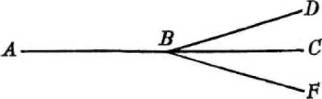

В.И. Ленин. ПОЛНОЕ СОБРАНИЕ СОЧИНЕНИЙ
СОДЕРЖАНИЕ тома 18
Пролетарии всех стран, соединяйтесь!
ЛЕНИН
ПОЛНОЕ
СОБРАНИЕ
СОЧИНЕНИЙ
18
ПЕЧАТАЕТСЯ
ПО ПОСТАНОВЛЕНИЮ
ЦЕНТРАЛЬНОГО КОМИТЕТА
КОММУНИСТИЧЕСКОЙ ПАРТИИ
СОВЕТСКОГО СОЮЗА
ИНСТИТУТ МАРКСИЗМА-ЛЕНИНИЗМА ПРИ ЦК КПСС
В. И. ЛЕНИН
ПОЛНОЕ СОБРАНИЕ СОЧИНЕНИЙ
ИЗДАНИЕ ПЯТОЕ
ИЗДАТЕЛЬСТВО
ПОЛИТИЧЕСКОЙ ЛИТЕРАТУРЫ
МОСКВА • 1968
ИНСТИТУТ МАРКСИЗМА-ЛЕНИНИЗМА ПРИ ЦК КПСС
В. И. ЛЕНИН
ТОМ
18
МАТЕРИАЛИЗМ И ЭМПИРИОКРИТИЦИЗМ
ИЗДАТЕЛЬСТВО
ПОЛИТИЧЕСКОЙ ЛИТЕРАТУРЫ
МОСКВА • 1968
3К2
1 - 1 - 2
68
VII
ПРЕДИСЛОВИЕ
Восемнадцатый том Полного собрания сочинений В. И. Ленина содержит произведение «Материализм и эмпириокритицизм», написанное в феврале - октябре 1908 года и изданное отдельной книгой в мае 1909 года, а также известные «Десять вопросов референту», которые были использованы в качестве тезисов И. Ф. Дубровинским, выступившим по поручению В. И. Ленина против махистских взглядов Богданова и его сторонников на реферате в Женеве в мае 1908 года.
«Материализм и эмпириокритицизм» - главный философский труд В. И. Ленина. Его историческое значение состоит в дальнейшем развитии марксистской философии, в ответе на коренные философские вопросы, вставшие в тот период перед партией, в философском обобщении новейших достижений естествознания. В нем Ленин подверг всесторонней критике реакционную буржуазную идеалистическую философию и философский ревизионизм. Работа «Материализм и эмпириокритицизм» - образец большевистской партийности в борьбе против врагов марксизма, в которой органически сочетаются страстная революционность и глубокая научность.
Творчески развивая учение К. Маркса и Ф. Энгельса, В. И. Ленин всесторонне разработал, применительно к новым историческим условиям, все составные части марксизма, в том числе диалектический и исторический материализм. Каждое произведение Ленина, даже если оно не посвящено специально философским проблемам,
является образцом применения материалистической диалектики, как наиболее глубокого и всестороннего учения о развитии, к анализу исторической обстановки, экономических и политических явлений общественной жизни.
Ф. Энгельс отмечал, что с каждым составляющим эпоху открытием даже в естест-венноисторической области материализм неизбежно должен изменять свою форму (см. К. Маркс и Ф. Энгельс. Избранные произведения в двух томах, т. II, 1955, стр. 353-354). В изменившихся исторических условиях, когда капитализм вступил в империалистическую стадию своего развития, когда началась революция в естествознании, именно В. И. Ленин придал философскому материализму новый вид. Особенно большое значение в дальнейшей разработке диалектического материализма имела книга «Материализм и эмпириокритицизм» - классическое произведение ленинского этапа в развитии марксистской философской мысли.
Книгу «Материализм и эмпириокритицизм» Ленин писал в тот период истории России, когда царское самодержавие, подавив революцию 1905-1907 годов, установило в стране жестокий полицейский террор, когда во всех областях общественной жизни свирепствовала реакция. «Упадок, деморализация, расколы, разброд, ренегатство, порнография на место политики. Усиление тяги к философскому идеализму; мистицизм, как облачение контрреволюционных настроений», - так охарактеризовал В. И. Ленин обстановку в стране после поражения первой русской революции (Сочинения, 4 изд., том 31, стр. 11). Идеологическое оправдание контрреволюции, возрождение религиозной мистики наложили свой отпечаток на науку, литературу, искусство. В философии господствовали наиболее реакционные формы идеализма, отрицавшие закономерный характер развития природы и общества и возможность их познания. В буржуазной среде, особенно в кругах интеллигенции, широкое распространение получило «богоискательство» - реакционное религиозно-философское течение, представители которого утверждали,
что русский народ «потерял бога» и задача заключается в том, чтобы «найти» его. В литературе и искусстве превозносились культ индивидуализма, аполитичность, «чистое искусство», отказ от революционно-демократических традиций русской общественной мысли. Контрреволюционные силы делали все возможное, чтобы оклеветать рабочий класс и его партию, подорвать теоретические основы марксизма. В этих условиях защита марксистской философии встала как важнейшая и неотложная задача.
В. И. Ленин отмечал, что при богатстве и разносторонности идейного содержания марксизма в различные исторические периоды выдвигается на первый план то одна, то другая его сторона. Если накануне революции 1905-1907 годов основное значение имело применение экономического учения Маркса к российской действительности, а в период революции - вопросы тактики, то после революции на первый план выдвинулась марксистская философия. «Время общественной и политической реакции, - писал Ленин, - время «перевариванья» богатых уроков революции является не случайно тем временем, когда основные теоретические, и в том числе философские, вопросы для всякого живого направления выдвигаются на одно из первых мест» (Сочинения, 4 изд., том 17, стр. 54). Подобно тому как накануне первой русской революции Ленин опроверг либерально-народнические теории и применил экономическое учение Маркса к условиям России, а в годы революции - противопоставил оппортунизму меньшевиков единственно правильную большевистскую тактику, так в годы реакции Ленин разгромил махистскую ревизию марксизма, всесторонне разработал марксистскую философию, показал, что только она одна может служить теоретическим основанием деятельности пролетарской партии, ее стратегии и тактики, ее политической линии.
Реакция, свирепствовавшая в России, не была «чисто русским» явлением. Буржуазия во всех странах в эпоху империализма круто поворачивала, как писал Ленин, от демократии к «реакции по всей линии» - в экономике, политике, идеологии. В конце XIX - начале
XX века в Европе распространилась так называемая философия «критического опыта» - эмпириокритицизм, или махизм. Возникшая как одна из разновидностей позитивизма, она претендовала на роль «единственно научной» философии, якобы преодолевшей односторонности как материализма, так и идеализма, хотя на деле за этой формой скрывалась субъективно-идеалистическая, реакционная сущность. Под влияние эмпириокритицизма попали некоторые видные ученые (А. Пуанкаре, А. Эйнштейн и другие). Ряд социал-демократов, считавших себя «учениками Маркса», увидели в махизме «последнее слово науки», призванное «заменить» диалектико-материалистическую философию марксизма; махистская ревизия философских основ марксизма была проявлением международного оппортунизма. Один из лидеров германской социал-демократии К. Каутский считал возможным «дополнить» марксизм махистской гносеологией, на той же точке зрения стоял австрийский социал-демократ Ф. Адлер. В письме А. М. Горькому 31 января (13 февраля) 1908 года Ленин указал на связь оппортунизма с философским идеализмом: «Материализм, как философия, везде у них в загоне. «Neue Zeit», самый выдержанный и знающий орган, равнодушен к философии, никогда не был ярым сторонником философского материализма, а в последнее время печатал, без единой оговорки, эмпириокритиков... Все мещанские течения в социал-демократии воюют всего больше с философским материализмом, тянут к Канту, к неокантианству, к критической философии» (Сочинения, 4 изд., том 34, стр. 336).
В России наряду с открытыми врагами пролетариата и его партии (В. В. Лесевичем, В. М. Черновым и др.) с проповедью махизма выступила группа социал-демократической интеллигенции, в которую входили как меньшевики - Н. Валентинов, П. С. Юшкевич и другие, так и примыкавшие к большевикам А. Богданов, В. Базаров, А. В. Луначарский и другие, использовавшие махизм для ревизии диалектического материализма. При этом Богданов и его единомышленники выступали с ревизией не только философских, но и
тактических принципов пролетарской партии, отстаивали сектантскую тактику «отзовизма», отказывались от использования легальных возможностей в политической борьбе. В условиях идейного разброда в годы реакции махистская ревизия марксизма, направленная на подрыв теоретических основ партии, на идейное разоружение пролетариата, представляла собой серьезную опасность, которая усугублялась тем обстоятельством, что махисты, особенно А. В. Луначарский, пытались сделать из социализма новый вид религии (так называемое «богостроительство»), считая, что в религиозной форме социализм будет «ближе и понятнее» русскому народу. Необходимо было показать реакционную сущность махизма, защитить марксизм, разъяснить основные вопросы диалектического материализма, дать диалектико-материалистическое объяснение новым открытиям естествознания. Эти задачи выполнил В. И. Ленин в книге «Материализм и эмпириокритицизм».
Ленин считал необходимым как можно скорее издать «Материализм и эмпириокритицизм». «... Важно, чтобы книга вышла скорее, - писал он. - У меня связаны с ее выходом не только литературные, но и серьезные политические обязательства» (Сочинения, 4 изд., том 37, стр. 352). Он торопил с изданием книги потому, что в июне 1909 года предстояло совещание расширенной редакции газеты «Пролетарий» (фактически Большевистского центра), на котором должен был произойти решительный бой с Богдановым и его сторонниками.
Против махистской ревизии марксизма выступал и Г. В. Плеханов, о чем положительно отзывался Ленин. Но критика махизма Плехановым носила ограниченный характер; в его работах игнорировалась связь махизма с кризисом естествознания и допускались ошибки при изложении диалектического материализма. Более того, исходя из своих фракционно-меньшевистских взглядов, Плеханов пытался найти связь между махизмом и большевизмом, нанося тем самым серьезный ущерб делу защиты марксистской теории от ревизионизма. Ревизионисты в области марксистской философии были
разгромлены благодаря последовательной борьбе большевиков во главе с В. И. Лениным, решающую роль в которой сыграла книга «Материализм и эмпириокритицизм». Эта борьба имела огромное международное значение, она разбила утверждения оппортунистических лидеров II Интернационала о том, что философия якобы не связана с политикой, что философские взгляды каждого члена партии являются его частным делом, что можно быть марксистом, не будучи диалектическим материалистом в философии.
В отличие от эпохи К. Маркса и Ф. Энгельса, когда на первом плане стояла задача развития и защиты материалистического понимания истории и материалистической диалектики, на рубеже XIX-XX веков решающее значение в борьбе против философского идеализма приобрела защита и развитие марксистского философского материализма и диалектико-материалистической теории познания. Буржуазные философы стремились теоретически доказать невозможность познания объективной реальности, утверждали, что понятие материи «устарело», сводили задачу науки к «анализу ощущений» и т. п. Эту враждебную науке идеалистическую философию махисты пытались подкрепить новейшими открытиями естествознания, выдать за последнее слово науки. В. И. Ленин доказал несостоятельность подобных попыток, которые по существу означали возрождение субъективно-идеалистических взглядов Беркли и Юма.
Ленин вскрыл социальные, классовые корни махизма, показал, что он служит интересам буржуазии в ее борьбе против пролетариата, против его мировоззрения - диалектического и исторического материализма. Вместе с тем Ленин окончательно разоблачил реакционный характер махистской ревизии марксизма, раскрыл идеалистическую, антимарксистскую сущность «эмпириомонизма» Богданова, «эмпириосимволизма» Юшкевича и т. п.
В борьбе против реакционной идеалистической философии В. И. Ленин отстоял марксистский философский материализм. Развивая его основные положения, он
дал классическое определение материи, явившееся обобщением всей истории борьбы материализма с идеализмом и метафизикой и новых открытий естествознания. «Материя, - писал Ленин, - есть философская категория для обозначения объективной реальности, которая дана человеку в ощущениях его, которая копируется, фотографируется, отображается нашими ощущениями, существуя независимо от них» (настоящий том, стр. 131). Материю Ленин рассматривает в неразрывной связи с движением, подчеркивает, что объективная реальность и есть движущаяся материя. Ленинское определение материи играет важную роль в борьбе против современной идеалистической философии, представители которой, фальсифицируя достижения естествознания, также пытаются доказать «духовный характер» бытия, возможность уничтожения материи, превращения ее в энергию, которую они рассматривают как некую «нематериальную сущность» и т. п.
В книге «Материализм и эмпириокритицизм» получила дальнейшее развитие данная Ф. Энгельсом формулировка основного вопроса философии - о соотношении материи и сознания. Указывая на первичность материи по отношению к сознанию, Ленин подчеркнул, что абсолютная противоположность материи, бытия и сознания, мышления ограничивается пределами «основного гносеологического вопроса», что «за этими пределами относительность данного противоположения несомненна» (стр. 151).
Великая заслуга Ленина состоит в том, что в борьбе против субъективного идеализма и агностицизма он всесторонне развил марксистское учение о познаваемости мира, теорию отражения. Ленин отстоял материалистическое понимание психического, сознания как высшего продукта материи, как функции человеческого мозга, подчеркнул, что мышление, сознание есть отражение внешнего мира. Он дал замечательное определение ощущения как субъективного образа объективного мира, подверг критике агностическую теорию символов, или иероглифов, согласно которой ощущения являются
лишь условными знаками, а не изображениями реальных вещей. Эта теория и в наши дни проповедуется представителями различных направлений современной буржуазной философии и ленинская критика ее имеет актуальное значение.
Ленин раскрыл сложный, диалектический процесс познания, показал, что диалектика и есть теория познания марксизма. К этому важнейшему положению, сформулированному Лениным позднее, в 1914-1915 годах, в работе «Карл Маркс» и в «Философских тетрадях», подводит весь ход ленинских рассуждений о сущности марксистской теории познания в книге «Материализм и эмпириокритицизм». «В теории познания, как и во всех других областях науки, - писал он, - следует рассуждать диалектически, т. е. не предполагать готовым и неизменным наше познание, а разбирать, каким образом из незнания является знание, каким образом неполное, неточное знание становится более полным и более точным» (стр. 102). Замечательным примером применения диалектики к исследованию процесса человеческого познания является данный в работе «Материализм и эмпириокритицизм» анализ учения об истине. В. И. Ленин определяет истину как сложный, противоречивый процесс развития знания и рассматривает его с двух сторон: в противоположность различным формам субъективного идеализма, агностицизма он подчеркивает объективность, независимость от субъекта содержания наших знаний; в то же время Ленин указывает, что познание есть процесс развития относительной истины в абсолютную, противопоставляя тем самым диалектико-материалистическое учение об истине как релятивизму, так и метафизике. «... Человеческое мышление, - писал Ленин, - по природе своей способно давать и дает нам абсолютную истину, которая складывается из суммы относительных истин. Каждая ступень в развитии науки прибавляет новые зерна в эту сумму абсолютной истины, но пределы истины каждого научного положения относительны, будучи то раздвигаемы, то суживаемы дальнейшим ростом знания» (стр. 137).
В. И. Ленин раскрыл значение практики в процессе познания как основы и цели познания, как критерия истины, показал, что точка зрения жизни, практики должна быть первой и основной в теории познания, что она неизбежно приводит к материализму. В своей книге В. И. Ленин указывал, что истинность марксизма подтверждается всем ходом развития капиталистических стран за последние десятилетия. В наши дни истинность марксистской теории подтверждается не только развитием классовой борьбы в странах капитала, но и практикой строительства социализма и коммунизма в странах мировой социалистической системы. Ревизионисты, как прежние, так и современные, стремятся фальсифицировать практику общественного развития и оправдать ревизию марксизма. Разоблачив попытки пересмотра основ марксистской теории, Ленин одновременно показал важность борьбы против догматизма, необходимость творческого подхода к марксизму. «Единственный вывод из того, разделяемого марксистами, мнения, что теория Маркса есть объективная истина, - писал он, - состоит в следующем: идя по пути марксовой теории, мы будем приближаться к объективной истине все больше и больше (никогда не исчерпывая ее); идя же по всякому другому пути, мы не можем прийти ни к чему, кроме путаницы и лжи» (стр. 146). Все содержание книги «Материализм и эмпириокритицизм» является глубоким обоснованием возможности объективного познания законов природы и общества, проникнуто убеждением в могущество и силу человеческого разума. Разработка В. И. Лениным научной, диалектико-материалистической теории познания является блестящим образцом творческого развития диалектического материализма.
В конце XIX - начале XX века в естествознании началась подлинная революция: были открыты рентгеновские лучи (1895), явление радиоактивности (1896), электрон (1897), при изучении свойств которого обнаружили изменчивость его массы в зависимости от скорости, радий (1898) и т. д. Развитие науки показало ограниченный характер существовавшей до тех пор
физической картины мира. Начался пересмотр целого ряда понятий, выработанных прежней, классической физикой, представители которой стояли, как правило, на позициях стихийного, неосознанного, часто метафизического материализма, с точки зрения которого новые физические открытия казались необъяснимыми. Классическая физика исходила из метафизического отождествления материи как философской категории с определенными представлениями о ее строении. Когда же эти представления коренным образом изменились, философы-идеалисты, а также отдельные физики, стали говорить об «исчезновении» материи, доказывать «несостоятельность» материализма, отрицать объективное значение научных теорий, усматривать цель науки лишь в описании явлений и т. п.
В. И. Ленин указывал, что возможность идеалистического истолкования научных открытий содержится уже в самом процессе познания объективной реальности, порождается самим прогрессом науки. Так, закон сохранения и превращения энергии был использован В. Оствальдом для обоснования «энергетизма», для доказательства «исчезновения» материи и превращения ее в энергию. Проникновение вглубь атома, попытки выделить его элементарные составные части привели к усилению роли математики в развитии физических знаний, что само по себе было положительным явлением. Однако математизация физики, а также принцип релятивизма, относительности наших знаний в период коренного изменения физической картины мира способствовали возникновению кризиса физики и явились гносеологическими источниками «физического» идеализма. В действительности новые открытия в физике, как показал В. И. Ленин, не только не опровергали, а, наоборот, подтверждали диалектический материализм, к которому подводило все развитие естествознания. Характеризуя сложный путь развития физики, ее стихийные поиски правильной философской теории, В. И. Ленин писал: «Современная физика... идет к единственно верному методу и единственно верной философии естествознания не прямо, а зигзагами, не сознательно,
а стихийно, не видя ясно своей «конечной цели», а приближаясь к ней ощупью, шатаясь, иногда даже задом» (стр. 332).
Глубокий переворот во взглядах на природу, начавшийся на рубеже XIX-XX веков, совпал с усилением общественно-политической реакции, вызванным переходом капитализма в новую, империалистическую стадию своего развития. В этих условиях идеалистическая философия, воспользовавшись революцией в физике, сделала попытку вытеснить материализм из естествознания, навязать физике свое гносеологическое объяснение новых открытий, примирить науку и религию. «Суть кризиса современной физики, - писал Ленин, - состоит в ломке старых законов и основных принципов, в отбрасывании объективной реальности вне сознания, т. е. в замене материализма идеализмом и агностицизмом» (стр. 272-273). Эта «замена» облегчалась еще и тем, что сами условия жизни ученого в капиталистическом обществе толкают его к идеализму и религии.
В. И. Ленин не только проанализировал суть кризиса физики, но и определил путь выхода из него - усвоение физиками диалектического материализма. Развитие естествознания в СССР и других социалистических странах, работы прогрессивных ученых капиталистических стран подтвердили ленинское предвидение.
В книге «Материализм и эмпириокритицизм» дано философское обобщение новых открытий естествознания, к которым Ленин подошел как философ, вооруженный наиболее прогрессивным методом мышления, которого как раз недоставало специалистам-физикам. Этот метод - материалистическая диалектика, в категориях которой только и может быть правильно отражена объективная диалектика природы. Этот метод, в противоположность как метафизике, так и релятивизму, настаивает, по словам Ленина, на приблизительном, относительном характере наших знаний о строении и свойствах материи, на отсутствии абсолютных граней в природе, на превращении движущейся материи из одного состояния в другое и т. п.
Исходя из материалистической диалектики, Ленин выдвинул положение о неисчерпаемости материи. «Электрон, - писал он, - так же неисчерпаем, как и атом, природа бесконечна, но она бесконечно существует, и вот это-то единственно категорическое, единственно безусловное признание ее существования вне сознания и ощущения человека и отличает диалектический материализм от релятивистского агностицизма и идеализма» (стр. 277-278). Эта замечательно глубокая ленинская мысль была всесторонне подтверждена дальнейшим развитием науки (открытием искусственной радиоактивности, сложной структуры атомного ядра, современной теорией «элементарных» частиц и т. д.).
В своей книге В. И. Ленин рассмотрел и такие философские проблемы естествознания, как вопрос о качественном многообразии материи и форм ее движения, принцип причинности, вопрос об объективной реальности пространства и времени как основных форм существования материи и другие. Эти ленинские идеи явились результатом обобщения с позиций диалектического материализма целого этапа в развитии естествознания, в особенности физики, знаменующего собой начало продолжающегося и в наши дни революционного переворота в науке и технике.
В книге «Материализм и эмпириокритицизм» В. И. Ленин показал неразрывное единство диалектического и исторического материализма, развил основные положения исторического материализма, прежде всего - положение об определяющей роли общественного бытия по отношению к общественному сознанию. Исторический материализм Ленин противопоставил идеалистической теории Богданова о тождестве бытия и сознания, а также антинаучным попыткам махистов подменить специфические закономерности общественного развития «социальной энергетикой», биологическими и другими естественнонаучными закономерностями.
В. И. Ленин раскрыл глубокую связь махизма с религией, показал, что идеализм как философское направление является важным средством сохранения и поддержания религии. В результате всестороннего
изучения эмпириокритицизма, сопоставления его с другими разновидностями идеализма В. И. Ленин пришел к выводу, что идеализм «... есть только утонченная, рафинированная форма фидеизма, который стоит во всеоружии, располагает громадными организациями и продолжает неуклонно воздействовать на массы, обращая на пользу себе малейшее шатание философской мысли» (стр. 380). «Материализм и эмпириокритицизм» - произведение воинствующего пролетарского атеизма, основанного на последовательном научном мировоззрении - диалектическом и историческом материализме, непримиримого с какой бы то ни было формой защиты религии.
В борьбе с махистской ревизией марксизма В. И. Ленин обогатил марксистский принцип партийности науки, партийности философии. В своей книге Ленин разоблачил мнимую беспартийность буржуазной философии, прикрытую терминологическими ухищрениями и «ученой» схоластикой. Он показал, что развитие философии в антагонистическом, классовом обществе неизбежно проявляется в борьбе двух основных философских направлений - материализма и идеализма, выражающих, как правило, соответственно интересы прогрессивных и реакционных классов. Раскрывая антинаучность идеализма, Ленин противопоставляет ему материалистическую философскую традицию (от Демокрита до Фейербаха и Чернышевского), которая получила свое высшее развитие в марксистской философии. Историю философии В. И. Ленин рассматривает как борьбу «тенденций или линий Платона и Демокрита», подчеркивает, что новейшая философия так же партийна, как и две тысячи лет тому назад, что развитие философских идей органически связано с практикой политической борьбы и «беспартийные» люди в философии - такие же безнадежные тупицы, как и в политике.
Имея в виду реакционных буржуазных ученых, Ленин писал: «Ни единому из этих профессоров, способных давать самые ценные работы в специальных областях химии, истории, физики, нельзя верить ни в едином слове, раз речь заходит о философии» (стр. 363).
Боящаяся объективного исследования закономерностей общественного развития, которые обрекают капитализм на гибель, буржуазия требует от своих «приказчиков» фальсификации его выводов, доказательства «вечности», «незыблемости» капиталистического строя. Именно поэтому буржуазная партийность враждебна объективности, научности. Однако пролетариат, призванный освободить человечество от эксплуатации и являющийся законным преемником всего культурного наследия человечества, в том числе и созданного буржуазным обществом, не может обойтись без усвоения культуры прошлого. «Задача марксистов, - писал В. И. Ленин, - суметь усвоить себе и переработать те завоевания, которые делаются этими «приказчиками»... и уметь отсечь их реакционную тенденцию, уметь вести свою линию и бороться со всей линией враждебных нам сил и классов» (стр. 364). Выполнение этой двуединой задачи, поставленной Лениным, играет важную роль в борьбе за построение коммунистического общества. В процессе строительства коммунизма, поскольку он осуществляется в условиях сосуществования двух противоположных общественных систем: социализма и капитализма, особое значение приобретает вторая сторона этой задачи - борьба с буржуазной идеологией, борьба, в которой важнейшую роль играет развитый В. И. Лениным принцип революционной пролетарской партийности.
Книга Ленина «Материализм и эмпириокритицизм» сыграла выдающуюся роль в идейном вооружении большевистской партии, в борьбе против всех форм и разновидностей оппортунизма, всех и всяких фальсификаторов марксизма в рабочем движении России. В. И. Ленин подчеркнул в ней логическую стройность, последовательность диалектического материализма. «В этой философии марксизма, вылитой из одного куска стали, - писал он, - нельзя вынуть ни одной основной посылки, ни одной существенной части, не отходя от объективной истины, не падая в объятия буржуазно-реакционной лжи» (стр. 346). Эти замечательные слова В. И. Ленина подтвердились всем ходом развития мар-
ксистской философской мысли, ее победоносной борьбой против реакционного мировоззрения империалистической буржуазии.
Книга В. И. Ленина и в наши дни является боевым оружием коммунистических и рабочих партий в борьбе за чистоту марксистской теории против буржуазной идеологии и современного ревизионизма. Она учит глубоко научно, по-марксистски разбираться в явлениях современной общественной жизни, раскрывать закономерности ее развития, вырабатывать на этой основе стратегию и тактику классовой борьбы, вскрывать классовые и гносеологические корни ревизионизма. Разоблачая ухищрения ревизионистов в борьбе против марксизма, Ленин писал: «Все более тонкая фальсификация марксизма, все более тонкие подделки антиматериалистических учений под марксизм, - вот чем характеризуется современный ревизионизм и в политической экономии, и в вопросах тактики, и в философии вообще, как в гносеологии, так и в социологии» (стр. 351). Эти ленинские указания имеют особенно важное значение для борьбы против современных ревизионистов. Книга Ленина является образцом для борьбы против современной буржуазной философии и социологии, в ней разоблачены основные приемы и методы «критики» марксизма идеологами реакционной буржуазии: подмена закономерностей общественного развития биологическими, психологическими и иными «факторами», псевдогуманистическая защита человеческой личности, которой якобы пренебрегает марксизм, стремление фальсифицировать марксизм под видом его «развития» и т. п.
В. И. Ленин показал, а дальнейшее развитие естествознания подтвердило, что диалектический материализм есть единственно верная философия естествознания, наиболее последовательный и научный метод мышления. Ленинский труд помог многим прогрессивным ученым найти правильную дорогу в своих областях знания, порвать с идеалистической философией, перейти на позиции научного, диалектико-материалистического мировоззрения. Данный Лениным анализ развития
естествознания на рубеже XIX-XX веков, глубокое философское обобщение достижений естествознания, его характеристика кризиса физики и определение пути выхода из него имеют важнейшее значение для борьбы против современной идеалистической фальсификации научных открытий, за победу диалектического материализма в естествознании, за дальнейший прогресс науки.
«Материализм и эмпириокритицизм» - великое произведение марксистской философии, имеющее огромное значение для овладения диалектико-материалистическим мировоззрением; и в наши дни философский труд В. И. Ленина продолжает служить делу борьбы против реакционной буржуазной философии и социологии, против ревизионизма и догматизма, делу познания и революционного преобразования мира.
Институт марксизма-ленинизма при ЦК КПСС
ДЕСЯТЬ ВОПРОСОВ РЕФЕРЕНТУ _1
|
Написано в мае, ранее 15 (28), 1908 г.
Впервые напечатано в 1925 г.
в Ленинском сборнике III
| |
Печатается по рукописи
|
3
Первая страница рукописи В. И. Ленина «Десять вопросов референту». - 1908 г.
Уменьшено
5
1. Признает ли референт, что философия марксизма есть диалектический материализм?
Если нет, то почему не разобрал он ни разу бесчисленных заявлений Энгельса об этом?
Если да, то зачем называют махисты свой «пересмотр» диалектического материализма «философией марксизма»?
2. Признает ли референт основное деление философских систем у Энгельса на материализм и идеализм, причем средними между тем и другим, колеблющимися между ними считает Энгельс линию Юма в новой философии, называя эту линию «агностицизмом» и объявляя кантианство разновидностью агностицизма?2
3. Признает ли референт, что в основе теории познания диалектического материализма лежит признание внешнего мира и отражения его в человеческой голове?
4. Признает ли референт правильным рассуждение Энгельса о превращении «вещей по себе» в «вещи для нас»?3
5. Признает ли референт правильным утверждение Энгельса, что «действительное единство мира заключается в его материальности»? (Anti-Dühring, 2 изд., 1886 г., стр. 28,1 отдел. § IV о мировой схематике)4.
6. Признает ли референт правильным утверждение Энгельса, что «материя без движения так же немыслима, как движение без материи» (Anti-Dühring, 1886, 2 изд.,
стр. 45, в § 6 о натурфилософии, космогонии, физике и химии) 5.
7. Признает ли референт, что идея причинности, необходимости, закономерности и т. д. является отражением в человеческой голове законов природы, действительного мира? Или Энгельс был неправ, утверждая это (Anti-Dühring, S. 20-21, в § III - об априоризме, и S. 103-104, в § XI - о свободе и необходимости)6.
8. Известно ли референту, что Мах выражал свое согласие с главой имманентной школы, Шуппе, и даже посвятил ему свой последний и главный философский труд?7
Как объясняет референт это присоединение Маха к явно идеалистической философии Шуппе, защитника поповщины и вообще явного реакционера в философии?
9. Почему референт умолчал о «приключении» с его вчерашним товарищем (по «Очеркам»), меньшевиком Юшкевичем, который сегодня объявил Богданова (вслед за Рахметовым) идеалистом?8 Известно ли референту, что Петцольдт в своей последней книге 9 целый ряд учеников Маха отнес к идеалистам?
10. Подтверждает ли референт тот факт, что махизм не имеет ничего общего с большевизмом? что против махизма неоднократно протестовал Ленин?10 что меньшевики Юшкевич и Валентинов «чистые» эмпириокритики?
МАТЕРИАЛИЗМ И ЭМПИРИОКРИТИЦИЗМ
КРИТИЧЕСКИЕ ЗАМЕТКИ ОБ ОДНОЙ РЕАКЦИОННОЙ ФИЛОСОФИИ 11
|
Написано о феврале-октябре 1908 г.; дополнение к § 1-му главы IV в марте 1909 г.
Напечатано в мае 1909 г.
в Москве отдельной книгой
издательством «Звено»
| |
Печатается по тексту книги
изд. 1909 г., сверенному с текстом книги изд. 1920 г.
|
8
Обложка первого издания книги В. И. Ленина «Материализм и эмпириокритицизм». - 1909 г.
Уменьшено
ПРЕДИСЛОВИЕ К ПЕРВОМУ ИЗДАНИЮ
Целый ряд писателей, желающих быть марксистами, предприняли у нас в текущем году настоящий поход против философии марксизма. Менее чем за полгода вышло в свет четыре книги, посвященные главным образом и почти всецело нападкам на диалектический материализм. Сюда относятся прежде всего «Очерки по (? надо было сказать: против) философии марксизма», СПБ., 1908, сборник статей Базарова, Богданова, Луначарского, Бермана, Гельфонда, Юшкевича, Суворова; затем книги: Юшкевича - «Материализм и критический реализм», Бермана - «Диалектика в свете современной теории познания», Валентинова - «Философские построения марксизма».
Все эти лица не могут не знать, что Маркс и Энгельс десятки раз называли свои философские взгляды диалектическим материализмом. И все эти лица, объединенные - несмотря на резкие различия политических взглядов - враждой против диалектического материализма, претендуют в то же время на то, что они в философии марксисты! Энгельсовская диалектика есть «мистика», - говорит Берман. Взгляды Энгельса «устарели», - мимоходом, как нечто само собою разумеющееся, бросает Базаров, - материализм оказывается опровергнутым нашими смелыми воинами, которые гордо ссылаются на «современную теорию познания», на «новейшую философию» (или «новейший позитивизм»), на «философию современного естествознания»
или даже «философию естествознания XX века». Опираясь на все эти якобы новейшие учения, наши истребители диалектического материализма безбоязненно договариваются до прямого фидеизма * (у Луначарского всего яснее, но вовсе не у него одного! 13), но у них сразу пропадает всякая смелость, всякое уважение к своим собственным убеждениям, когда дело доходит до прямого определения своих отношений к Марксу и Энгельсу. На деле - полное отречение от диалектического материализма, т. е. от марксизма. На словах - бесконечные увертки, попытки обойти суть вопроса, прикрыть свое отступление, поставить на место материализма вообще кого-нибудь одного из материалистов, решительный отказ от прямого разбора бесчисленных материалистических заявлений Маркса и Энгельса. Это - настоящий «бунт на коленях», по справедливому выражению одного марксиста. Это - типичный философский ревизионизм, ибо только ревизионисты приобрели себе печальную славу своим отступлением от основных воззрений марксизма и своей боязнью или своей неспособностью открыто, прямо, решительно и ясно «рассчитаться» с покинутыми взглядами. Когда ортодоксам случалось выступать против устаревших воззрений Маркса (например, Мерингу против некоторых исторических положений 14), - это делалось всегда с такой определенностью и обстоятельностью, что никто никогда не находил в подобных литературных выступлениях ничего двусмысленного.
Впрочем, в «Очерках «по» философии марксизма» есть одна фраза, похожая на правду. Это - фраза Луначарского: «может быть, мы» (т. е., очевидно, все сотрудники «Очерков») «заблуждаемся, но ищем» (стр. 161). Что первая половина этой фразы содержит абсолютную, а вторая - относительную истину, это я постараюсь со всей обстоятельностью показать в предлагаемой вниманию читателя книге. Теперь же замечу только, что если бы наши философы говорили не от
* Фидеизм есть учение, ставящее веру на место знания или вообще отводящее известное значение вере 12.
имени марксизма, а от имени нескольких «ищущих» марксистов, то они проявили бы больше уважения и к себе самим и к марксизму.
Что касается до меня, то я тоже - «ищущий» в философии. Именно: в настоящих заметках я поставил себе задачей разыскать, на чем свихнулись люди, преподносящие под видом марксизма нечто невероятно сбивчивое, путаное и реакционное.
Автор
Сентябрь 1908 года.
ПРЕДИСЛОВИЕ КО ВТОРОМУ ИЗДАНИЮ
Настоящее издание, кроме отдельных исправлений текста, не отличается от предыдущего. Я надеюсь, что оно будет небесполезно, независимо от полемики с русскими «махистами», как пособие для ознакомления с философией марксизма, диалектическим материализмом, а равно с философскими выводами из новейших открытий естествознания. Что касается до последних произведений А. А. Богданова, с которыми я не имел возможности ознакомиться, то помещаемая ниже статья тов. В. И. Невского дает необходимые указания 15. Тов. В. И. Невский, работая не только как пропагандист вообще, но и как деятель партийной школы в особенности, имел полную возможность убедиться в том, что под видом «пролетарской культуры»16 проводятся А. А. Богдановым буржуазные и реакционные воззрения.
Н. Ленин
2 сентября 1920 года.
ВМЕСТО ВВЕДЕНИЯ
КАК НЕКОТОРЫЕ «МАРКСИСТЫ» ОПРОВЕРГАЛИ МАТЕРИАЛИЗМ В 1908 ГОДУ И НЕКОТОРЫЕ ИДЕАЛИСТЫ В 1710 ГОДУ
Кто сколько-нибудь знаком с философской литературой, тот должен знать, что едва ли найдется хоть один современный профессор философии (а также теологии), который бы не занимался прямо или косвенно опровержением материализма. Сотни и тысячи раз объявляли материализм опровергнутым и в сто первый, в тысяча первый раз продолжают опровергать его поныне. Наши ревизионисты все занимаются опровержением материализма, делая при этом вид, что они собственно опровергают только материалиста Плеханова, а не материалиста Энгельса, не материалиста Фейербаха, не материалистические воззрения И. Дицгена, - и затем, что они опровергают материализм с точки зрения «новейшего» и «современного» позитивизма 17, естествознания и т. п. Не приводя цитат, которые всякий желающий наберет сотнями в названных выше книгах, я напомню те доводы, которыми побивают материализм Базаров, Богданов, Юшкевич, Валентинов, Чернов * и другие махисты. Это последнее выражение, как более краткое и простое, притом получившее уже право гражданства в русской литературе, я буду употреблять везде наравне с выражением: «эмпириокритики». Что Эрнст Мах - самый популярный
* В. Чернов. «Философские и социологические этюды», Москва, 1907. Автор - такой же горячий сторонник Авенариуса и враг диалектического материализма, как Базаров и К°.
в настоящее время представитель эмпириокритицизма, это общепризнано в философской литературе *, а отступления Богданова и Юшкевича от «чистого» махизма имеют совершенно второстепенное значение, как будет показано ниже.
Материалисты, говорят нам, признают нечто немыслимое и непознаваемое - «вещи в себе», материю «вне опыта», вне нашего познания. Они впадают в настоящий мистицизм, допуская нечто потустороннее, за пределами «опыта» и познания стоящее. Толкуя, будто материя, действуя на наши органы чувств, производит ощущения, материалисты берут за основу «неизвестное», ничто, ибо-де сами же они единственным источником познания объявляют наши чувства. Материалисты впадают в «кантианство» (Плеханов - допуская существование «вещей в себе», т. е. вещей вне нашего сознания), они «удвояют» мир, проповедуют «дуализм», ибо за явлениями у них есть еще вещь в себе, за непосредственными данными чувств - нечто другое, какой-то фетиш, «идол», абсолют, источник «метафизики», двойник религии («святая материя», как говорит Базаров).
Таковы доводы махистов против материализма, повторяемые и пересказываемые на разные лады вышеназванными писателями.
Чтобы проверить, новы ли эти доводы и действительно ли они направляются только против одного, «впавшего в кантианство», русского материалиста, мы приведем подробные цитаты из сочинения одного старого идеалиста, Джорджа Беркли. Эта историческая справка тем более необходима во введении к нашим заметкам, что на Беркли и на его направление в философии нам придется неоднократно ссылаться ниже, ибо махисты неверно представляют и отношение Маха к Беркли и сущность философской линии Беркли.
Сочинение епископа Джорджа Беркли, вышедшее в 1710 году под названием «Трактат об основах чело-
* См., например, Dr. Richard Hönigswald. «Über die Lehre Hume's von der Realität der Außendinge», Brl., 1904, S. 26 (Д-р Рихард Гёнигсвальд. «Учение Юма о реальности внешнего мира», Берлин, 1904, стр. 26. Ред.).
веческого познания» *, начинается следующим рассуждением: «Для всякого, кто обозревает объекты человеческого познания, очевидно, что они представляют из себя либо идеи (ideas), действительно воспринимаемые чувствами, либо такие, которые мы получаем, наблюдая эмоции и действия ума, либо, наконец, идеи, образуемые при помощи памяти и воображения... Посредством зрения я составляю идеи о свете и о цветах, об их различных степенях и видах. Посредством осязания я воспринимаю твердое и мягкое, теплое и холодное, движение и сопротивление... Обоняние дает мне запахи; вкус - ощущение вкуса; слух - звуки... Так как различные идеи наблюдаются вместе одна с другою, то их обозначают одним именем и считают какой-либо вещью. Например, наблюдают соединенными вместе (to go together) определенный цвет, вкус, запах, форму, консистенцию, - признают это за отдельную вещь и обозначают словом яблоко; другие собрания идей (collections of ideas) составляют камень, дерево, книгу и тому подобные чувственные вещи...» (§ 1).
Таково содержание первого параграфа сочинения Беркли. Нам надо запомнить, что в основу своей философии он кладет «твердое, мягкое, теплое, холодное, цвета, вкусы, запахи» и т. д. Для Беркли вещи суть «собрания идей», причем под этим последним словом он разумеет как раз вышеперечисленные, скажем, качества или ощущения, а не отвлеченные мысли.
Беркли говорит дальше, что помимо этих «идей или объектов познания» существует то, что воспринимает их, - «ум, дух, душа или я» (§ 2). Само собою разумеется, - заключает философ, - что «идеи» не могут существовать вне ума, воспринимающего их. Чтобы убедиться в этом, достаточно подумать о значении слова: существовать. «Когда я говорю, что стол, на котором я пишу, существует, то это значит, что
* George Berkeley. «Treatise concerning the Principles of Human Knowledge», vol. I of Works, edited by A. Fraser, Oxford, 1871. Есть русский перевод (Джордж Беркли. «Трактат об основах человеческого познания», т. I Сочинений, изд. А. Фрейзера, Оксфорд, 1871. Ред.).
я вижу и ощущаю его; и если б я вышел из своей комнаты, то сказал бы, что стол существует, понимая под этим, что, если бы я был в своей комнате, то я мог бы воспринимать его...». Так говорит Беркли в § 3 своего сочинения и здесь же начинает полемику с людьми, которых он называет материалистами (§§ 18, 19 и др.). Для меня совершенно непонятно, - говорит он, - как можно говорить об абсолютном существовании вещей без их отношения к тому, что их кто-либо воспринимает? Существовать - значит быть воспринимаемым (their, т. е. вещей esse ispercipi, § 3, - изречение Беркли, цитируемое в учебниках по истории философии). «Странным образом среди людей преобладает мнение, что дома, горы, реки, одним словом, чувственные вещи имеют существование, природное или реальное, отличное от того, что их воспринимает разум» (§ 4). Это мнение - «явное противоречие», - говорит Беркли. - «Ибо что же такое эти вышеупомянутые объекты, как не вещи, которые мы воспринимаем посредством чувств? а что же мы воспринимаем, как не свои собственные идеи или ощущения (ideas or sensations)? и разве же это прямо-таки не нелепо, что какие-либо идеи или ощущения, или комбинации их могут существовать, не будучи воспринимаемы?» (§ 4).
Коллекции идей Беркли заменяет теперь равнозначащим для него выражением: комбинации ощущений, обвиняя материалистов в «нелепом» стремлении идти еще дальше, искать какого-то источника для этого комплекса... то бишь, для этой комбинации ощущений. В § 5 материалисты обвиняются в возне с абстракцией, ибо отделять ощущение от объекта, по мнению Беркли, есть пустая абстракция. «На самом деле, - говорит он в конце § 5, опущенном во втором издании, - объект и ощущение одно и то же (are the same thing) и не могут поэтому быть абстрагируемы одно от другого». «Вы скажете, - пишет Беркли, - что идеи могут быть копиями или отражениями (resemblances) вещей, которые существуют вне ума в немыслящей субстанции. Я отвечаю, что идея не может походить ни на что
иное, кроме идеи; цвет или фигура не могут походить ни на что, кроме другого цвета, другой фигуры... Я спрашиваю, можем ли мы воспринимать эти предполагаемые оригиналы или внешние вещи, с которых наши идеи являются будто бы снимками или представлениями, или не можем? Если да, то, значит, они суть идеи, и мы не двинулись ни шагу вперед; а если вы скажете, что нет, то я обращусь к кому угодно и спрошу его, есть ли смысл говорить, что цвет похож на нечто невидимое; твердое или мягкое похоже на нечто такое, что нельзя осязать, и т. п.» (§ 8).
«Доводы» Базарова против Плеханова по вопросу о том, могут ли вне нас существовать вещи помимо их действия на нас, - ни на волос не отличаются, как видит читатель, от доводов Беркли против не называемых им поименно материалистов. Беркли считает мысль о существовании «материи или телесной субстанции» (§ 9) таким «противоречием», таким «абсурдом», что нечего собственно тратить время на ее опровержение. «Но, - говорит он, - ввиду того, что учение (tenet) о существовании материи пустило, по-видимому, глубокие корни в умах философов и влечет за собой столь многочисленные вредные выводы, я предпочитаю показаться многоречивым и утомительным, лишь бы не опустить ничего для полного разоблачения и искоренения этого предрассудка» (§ 9).
Мы сейчас увидим, о каких вредных выводах говорит Беркли. Покончим сначала с его теоретическими доводами против материалистов. Отрицая «абсолютное» существование объектов, т. е. существование вещей вне человеческого познания, Беркли прямо излагает воззрения своих врагов таким образом, что они-де признают «вещь в себе». В § 24-м Беркли пишет курсивом, что это опровергаемое им мнение признает «абсолютное существование чувственных объектов в себе (objects in themselves) или вне ума» (стр. 167-168 цит. издания). Две основные линии философских воззрений намечены здесь с той прямотой, ясностью и отчетливостью, которая отличает философских классиков от сочинителей «новых» систем в наше время.
Материализм - признание «объектов в себе» или вне ума; идеи и ощущения - копии или отражения этих объектов. Противоположное учение (идеализм): объекты не существуют «вне ума»; объекты суть «комбинации ощущений».
Это написано в 1710 году, т. е. за 14 лет до рождения Иммануила Канта, а наши махисты - на основании якобы «новейшей» философии - сделали открытие, что признание «вещей в себе» есть результат заражения или извращения материализма кантианством! «Новые» открытия махистов - результат поразительного невежества их в истории основных философских направлений.
Их следующая «новая» мысль состоит в том, что понятия «материи» или «субстанции» - остаток старых некритических воззрений. Мах и Авенариус, видите ли, двинули вперед философскую мысль, углубили анализ и устранили эти «абсолюты», «неизменные сущности» и т. п. Возьмите Беркли, чтобы проверить по первоисточнику подобные утверждения, и вы увидите, что они сводятся к претенциозной выдумке. Беркли вполне определенно говорит, что материя есть «nonentity» (несуществующая сущность, § 68), что материя есть ничто (§ 80). «Вы можете, - иронизирует Беркли над материалистами, - если это так уже вам хочется, употреблять слово «материя» в том смысле, в каком другие люди употребляют слово «ничто»» (р. 196- 197 цит. изд.). Сначала, - говорит Беркли, - верили, что цвета, запахи и т. п. «действительно существуют», - потом отказались от этого воззрения и признали, что они существуют только в зависимости от наших ощущений. Но это устранение старых ошибочных понятий не доведено до конца: остаток есть понятие «субстанции» (§ 73) - такой же «предрассудок» (р. 195), окончательно разоблачаемый епископом Беркли в 1710 году! В 1908 году находятся у нас такие шутники, которые серьезно поверили Авенариусу, Петцольдту, Маху и К°, что только «новейший позитивизм» и «новейшее естествознание» доработались до устранения этих «метафизических» понятий.
Эти же шутники (Богданов в том числе) уверяют читателей, что именно новая философия разъяснила ошибочность «удвоения мира» в учении вечно опровергаемых материалистов, которые говорят о каком-то «отражении» сознанием человека вещей, существующих вне его сознания. Об этом «удвоении» названными выше авторами написана бездна прочувствованных слов. По забывчивости или по невежеству они не добавили, что эти новые открытия были уже открыты в 1710 году.
«Наше познание их (идей или вещей), - пишет Беркли, - было чрезвычайно затемнено, запутано, направлено к самым опасным заблуждениям предположением о двойном (twofold) существовании чувственных объектов, именно: одно существование - интеллигибельное или существование в уме, другое - реальное, вне ума» (т. е. вне сознания). И Беркли потешается над этим «абсурдным» мнением, допускающим возможность мыслить немыслимое! Источник «абсурда», - конечно, различение «вещей» и «идей» (§ 87), «допущение внешних объектов». Тот же источник порождает, как открыл Беркли в 1710 году и вновь открыл Богданов в 1908 году, веру в фетиши и идолы. «Существование материи, - говорит Беркли, - или вещей, не воспринимаемых, было не только главной опорой атеистов и фаталистов, но на том же самом принципе держится идолопоклонничество во всех его разнообразных формах» (§ 94).
Тут мы подошли и к тем «вредным» выводам из «абсурдного» учения о существовании внешнего мира, которые заставили епископа Беркли не только теоретически опровергать это учение, но и страстно преследовать сторонников его, как врагов. «На основе учения о материи или о телесной субстанции, - говорит он, - воздвигнуты были все безбожные построения атеизма и отрицания религии... Нет надобности рассказывать о том, каким великим другом атеистов во все времена была материальная субстанция. Все их чудовищные системы до того очевидно, до того необходимо зависят от нее, что, раз будет удален этот краеугольный
камень, - и все здание неминуемо развалится. Нам не к чему поэтому уделять особое внимание абсурдным учениям отдельных жалких сект атеистов» (§ 92, стр. 203-204 цит. изд.).
«Материя, раз она будет изгнана из природы, уносит с собой столько скептических и безбожных построений, такое невероятное количество споров и запутанных вопросов» («принцип экономии мысли», открытый Махом в 1870 годах! «философия, как мышление о мире по принципу наименьшей траты сил» - Авенариус в 1876 году!), «которые были бельмом в глазу для теологов и философов; материя причиняла столько бесплодного труда роду человеческому, что если бы даже те доводы, которые мы выдвинули против нее, были признаны недостаточно доказательными (что до меня, то я их считаю вполне очевидными), то все же я уверен, что все друзья истины, мира и религии имеют основание желать, чтобы эти доводы были признаны достаточными» (§ 96).
Откровенно рассуждал, простовато рассуждал епископ Беркли! В наше время те же мысли об «экономном» удалении «материи» из философии облекают в гораздо более хитрую и запутанную «новой» терминологией форму, чтобы эти мысли сочтены были наивными людьми за «новейшую» философию!
Но Беркли не только откровенничал насчет тенденций своей философии, а старался также прикрыть ее идеалистическую наготу, изобразить ее свободной от нелепостей и приемлемой для «здравого смысла». Нашей философией, - говорил он, инстинктивно защищаясь от обвинения в том, что теперь было бы названо субъективным идеализмом и солипсизмом, - нашей философией «мы не лишаемся никаких вещей в природе» (§ 34). Природа остается, остается и различие реальных вещей от химер, - только «и те и другие одинаково существуют в сознании». «Я вовсе не оспариваю существования какой бы то ни было вещи, которую мы можем познавать посредством чувства или размышления. Что те вещи, которые я вижу своими глазами, трогаю своими руками, существуют, - реально существуют,
в этом я нисколько не сомневаюсь. Единственная вещь, существование которой мы отрицаем, есть то, что философы (курсив Беркли) называют материей или телесной субстанцией. Отрицание ее не приносит никакого ущерба остальному роду человеческому, который, смею сказать, никогда не заметит ее отсутствия... Атеисту действительно нужен этот призрак пустого имени, чтобы обосновать свое безбожие...».
Еще яснее выражена эта мысль в § 37-м, где Беркли отвечает на обвинение в том, что его философия уничтожает телесные субстанции: «если слово субстанция понимать в житейском (vulgar) смысле, т. е. как комбинацию чувственных качеств, протяженности, прочности, веса и т. п., то меня нельзя обвинять в их уничтожении. Но если слово субстанция понимать в философском смысле - как основу акциденций или качеств (существующих) вне сознания, - то тогда действительно я признаю, что уничтожаю ее, если можно говорить об уничтожении того, что никогда не существовало, не существовало даже в воображении».
Английский философ Фрейзер, идеалист, сторонник берклианства, издавший сочинения Беркли и снабдивший их своими примечаниями, недаром называет учение Беркли «естественным реализмом» (р. X цит. изд.). Эта забавная терминология непременно должна быть отмечена, ибо она действительно выражает намерение Беркли подделаться под реализм. Мы много раз встретим в дальнейшем изложении «новейших» «позитивистов», которые в другой форме, в другой словесной оболочке повторяют эту же самую проделку или подделку. Беркли не отрицает существования реальных вещей! Беркли не разрывает с мнением всего человечества! Беркли отрицает «только» учение философов, т. е. теорию познания, которая серьезно и решительно берет в основу всех своих рассуждений признание внешнего мира и отражения его в сознании людей. Беркли не отрицает естествознания, которое всегда стояло и стоит (большей частью бессознательно) на этой, т. е. материалистической, теории познания. «Мы можем, - читаем в § 59, - из нашего опыта»
(Беркли - философия «чистого опыта») * «относительно сосуществования и последовательности идей в нашем сознании... делать правильные заключения о том, что испытали бы мы (или: увидали бы мы), если бы были помещены в условия, весьма значительно отличающиеся от тех, в которых мы находимся в настоящее время. В этом и состоит познание природы, которое» (слушайте!) «может сохранить свое значение и свою достоверность вполне последовательно в связи с тем, что выше было сказано».
Будем считать внешний мир, природу - «комбинацией ощущений», вызываемых в нашем уме божеством. Признайте это, откажитесь искать вне сознания, вне человека «основы» этих ощущений - и я признаю в рамках своей идеалистической теории познания все естествознание, все значение и достоверность его выводов. Мне нужна именно эта рамка и только эта рамка для моих выводов в пользу «мира и религии». Такова мысль Беркли. С этой мыслью, правильно выражающей сущность идеалистической философии и ее общественное значение, мы встретимся впоследствии, когда будем говорить об отношении махизма к естествознанию.
Теперь же отметим еще одно новейшее открытие, позаимствованное в XX веке новейшим позитивистом и критическим реалистом П. Юшкевичем у епископа Беркли. Это открытие - «эмпириосимволизм». «Излюбленная теория» Беркли, - говорит А. Фрейзер, - есть теория «универсального естественного символизхма» (р. 190 цит. изд.) или «символизма природы» (Natural Symbolism). Если бы эти слова не стояли в издании, вышедшем в 1871 году, то можно было бы заподозрить английского философа фидеиста Фрейзера в плагиате у современного математика и физика Пуанкаре и русского «марксиста» Юшкевича!
Самая теория Беркли, вызвавшая восторг Фрейзера, изложена епископом в следующих словах:
«Связь идей» (не забудьте, что для Беркли идеи и вещи - одно и то же) «не предполагает отношения
* Фрейзер настаивает в своем предисловии на том, что Беркли, как и Локк, «апеллирует исключительно к опыту» (р. 117).
причины к следствию, а только отношение метки или знака к вещи, обозначаемой так или иначе» (§ 65). «Отсюда очевидно, что те вещи, которые с точки зрения категории причины (under the notion of a cause), содействующей или помогающей произведению следствия, являются совершенно необъяснимыми и ведут нас к великим нелепостям, - могут быть вполне естественно объяснены,... если их рассматривать как метки или знаки для нашего осведомления» (§ 66). Разумеется, по мнению Беркли и Фрейзера, осведомляет нас посредством этих «эмпириосимволов» не кто иной, как божество. Гносеологическое же значение символизма в теории Беркли состоит в том, что он должен заменить «доктрину», «претендующую объяснять вещи телесными причинами» (§ 66).
Перед нами два философских направления в вопросе о причинности. Одно «претендует объяснять вещи телесными причинами», - ясно, что оно связано с «абсурдной» и опровергнутой епископом Беркли «доктриной материи». Другое сводит «понятие причины» к понятию «метки или знака», служащего «для нашего осведомления» (богом). С этими двумя направлениями в костюме XX века мы встретимся при разборе отношения к данному вопросу махизма и диалектического материализма.
Далее, по вопросу о реальности надо заметить еще, что Беркли, отказываясь признать существование вещей вне сознания, старается подыскать критерий для отличения реального и фиктивного. В § 36-м он говорит, что те «идеи», которые человеческий ум вызывает по своему усмотрению, «бледны, слабы, неустойчивы по сравнению с теми, которые мы воспринимаем в чувствах. Эти последние идеи, будучи запечатлеваемы в нас по известным правилам или законам природы, свидетельствуют о действии ума, более могущественного и мудрого, чем ум человеческий. Такие идеи, как говорят, имеют больше реальности, чем предыдущие; это значит, что они более ясны, упорядочены, раздельны и что они не являются фикциями ума, воспринимающего их...». В другом месте (§ 84) Беркли понятие
реального старается связать с восприятием одних и тех же чувственных ощущений одновременно многими людьми. Например, как решить вопрос: реально ли превращение воды в вино, о чем нам, допустим, рассказывают? «Если все присутствующие за столом видели бы его, слышали его запах, пили вино и ощущали его вкус, видели бы на себе последствия питья вина, то, по-моему, не могло бы быть сомнения в реальности этого вина». И Фрейзер поясняет: «Одновременное сознание различными лицами одних и тех же чувственных идей, в отличие от чисто индивидуального или личного сознания воображаемых объектов и эмоций, рассматривается здесь как доказательство реальности идей первого рода».
Отсюда видно, что субъективный идеализм Беркли нельзя понимать таким образом, будто он игнорирует различие между единоличным и коллективным восприятием. Напротив, на этом различии он пытается построить критерий реальности. Выводя «идеи» из воздействия божества на ум человека, Беркли подходит таким образом к объективному идеализму: мир оказывается не моим представлением, а результатом одной верховной духовной причины, создающей и «законы природы» и законы отличия «более реальных» идей от менее реальных и т. д.
В другом своем сочинении «Три разговора между Гиласом и Филоноусом» (1713 г.), где Беркли в особенно популярной форме старается изложить свои взгляды, он излагает таким образом противоположность своей и материалистической доктрины:
«Я утверждаю так же, как и вы» (материалисты), «что, раз на нас оказывает действие нечто извне, то мы должны допустить существование сил, находящихся вне (нас), сил, принадлежащих существу, отличному от нас. Но здесь мы расходимся по вопросу о том, какого рода это могущественное существо. Я утверждаю, что это дух, вы - что это материя или я не знаю какая (могу прибавить, что и вы не знаете какая) третья природа...» (р. 335 цит. изд.).
Фрейзер комментирует: «В этом гвоздь всего вопроса. По мнению материалистов, чувственные явления вызываются материальной субстанцией, или какой-то неизвестной «третьей природой»; по мнению Беркли, - Рациональной Волей; по мнению Юма и позитивистов, их происхождение абсолютно неизвестно, и мы можем только обобщать их, как факты, индуктивным путем, согласно обычаю».
Английский берклианец Фрейзер подходит здесь со своей последовательно идеалистической точки зрения к тем самым основным «линиям» в философии, которые так ясно охарактеризованы у материалиста Энгельса. В своем сочинении «Людвиг Фейербах» он делит философов на «два больших лагеря»: материалистов и идеалистов. Основное отличие между ними Энгельс, - принимающий во внимание гораздо более развитые, разнообразные и богатые содержанием теории обоих направлений, чем Фрейзер, - видит в том, что для материалистов природа есть первичное, а дух вторичное, а для идеалистов наоборот. Между теми и другими Энгельс ставит сторонников Юма и Канта, как отрицающих возможность познания мира или по крайней мере полного его познания, называя их агностиками 18. В своем «Л. Фейербахе» Энгельс применяет этот последний термин только к сторонникам Юма (тем самым, которых Фрейзер называет и которые сами себя любят называть «позитивистами»), но в статье «Об историческом материализме» Энгельс прямо говорит про точку зрения «неокантианского агностика» 19, рассматривая неокантианство 20, как разновидность агностицизма *.
Мы не можем здесь останавливаться на этом замечательно правильном и глубоком рассуждении Энгельса (рассуждении, беззастенчиво игнорируемом махистами). Подробно об этом будет речь дальше. Пока мы ограничимся указанием на эту марксистскую терминологию и на это совпадение крайностей: взгляда
* Fr. Engels. «Über historischen Materialismus», «Neue Zeit» 21, XL Jg., Bd. I (1892-1893), Nr. 1, S. 18 (Фр. Энгельс. «Об историческом материализме», «Новое Время», XI год изд., т. I (1892-1893), № 1, стр. 18. Ред.). Перевод с английского сделан самим Энгельсом. Русский перевод в сборнике «Исторический материализм» (СПБ., 1908, стр. 167) неточен.
последовательного материалиста и последовательного идеалиста на основные философские направления. Чтобы иллюстрировать эти направления (с которыми нам постоянно придется иметь дело в дальнейшем изложении), отметим вкратце взгляды крупнейших философов XVIII века, шедших по иному пути, чем Беркли.
Вот рассуждения Юма в «Исследовании относительно человеческого познания» в главе (12-й) о скептической философии: «Можно считать очевидным, что люди склонны в силу естественного инстинкта или предрасположения доверять своим чувствам и что, без всякого рассуждения или даже перед тем, как прибегать к рассуждению, мы всегда предполагаем внешний мир (external universe), который не зависит от нашего восприятия, который существовал бы и в том случае, если бы мы и все другие способные ощущать создания исчезли или были бы уничтожены. Даже животные руководятся подобным мнением и сохраняют эту веру во внешние объекты во всех своих помыслах, планах и действиях... Но это всеобщее и первоначальное мнение всех людей скоро разрушается самой легкой (slightest) философией, которая учит нас, что нашему уму никогда не может быть доступно что-либо, кроме образа или восприятия, и что чувства являются лишь каналами (inlets), чрез которые эти образы пересылаются, не будучи в состоянии устанавливать какое-либо непосредственное отношение (intercourse) между умом и объектом. Стол, который мы видим, кажется меньшим, если мы отойдем дальше от него, но реальный стол, существующий независимо от нас, не изменяется; следовательно, нашему уму являлось не что иное, как только образ стола (image). Таковы очевидные указания разума; и ни один человек, который рассуждает, никогда не сомневался в том, что предметы (existences), о которых мы говорим: «этот стол», «это дерево», суть не что иное, как восприятия нашего ума... Каким доводом можно доказать, что восприятия в нашем уме должны быть вызываемы внешними предметами, совершенно отличными от этих восприятий, хотя и сходными с ними (если это возможно), а не проистекают либо от энергии
самого ума, либо от действия какого-либо невидимого и неизвестного духа, либо от какой-нибудь другой причины, еще более неизвестной нам?.. Каким образом этот вопрос может быть решен? Разумеется, посредством опыта, как и все другие вопросы подобного рода. Но в этом пункте опыт молчит и не может не молчать. Ум никогда не имеет перед собой никаких вещей кроме восприятий и он никоим образом не в состоянии произвести какой бы то ни было опыт относительно соотношения между восприятиями и объектами. Поэтому предположение такого соотношения лишено всякого логического основания. Прибегать к правдивости Верховного Существа для доказательства правдивости наших чувств - значит обходить вопрос совершенно неожиданным образом... Раз мы поставим вопрос о внешнем мире, мы потеряем все аргументы, которыми можно бы было доказать бытие такого Существа» *.
И то же самое говорит Юм в «Трактате о человеческой природе», часть IV, отдел II: «О скептицизме по отношению к чувствам». «Наши восприятия суть наши единственные объекты» (р. 281 франц. перевода Ренувье и Пильона, 1878 года). Скептицизмом называет Юм отказ от объяснения ощущений воздействием вещей, духа и т. п., отказ от сведения восприятий к внешнему миру, с одной стороны, к божеству или неизвестному духу, с другой. И автор предисловия к французскому переводу Юма, Пильон (F. Pillon), философ родственного Маху направления (как увидим ниже), справедливо говорит, что для Юма субъект и объект сводятся к «группам различных восприятий», к «элементам сознания, впечатлениям, идеям и т. д.», что речь должна идти только о «группировке и комбинации этих элементов» **. Равным образом, английский юмист Гексли,
* David Hume. «An Enquiry concerning Human understanding», Essays and Treatises, vol. II, Lond., 1822, pp. 150-153 (Давид Юм. «Исследование относительно человеческого познания», Очерки и трактаты, т. II, Лондон, 1822, стр. 150-153. Ред.).
** Psychologie de Hume. Traité de la nature humaine etc. Trad, par Ch. Renouvier et P. Pillon, Paris, 1878. Introduction, p. X (Психологические исследования Юма. Трактат о человеческой природе и т. д. Перевод Ш. Ренувье и Ф. Пильона, Париж, 1878. Введение, стр. X. Ред.).
основатель меткого и верного выражения «агностицизм», подчеркивает в своей книге о Юме, что этот последний, принимая «ощущения» за «первоначальные, неразложимые состояния сознания», не вполне последователен по вопросу о том, воздействием ли объектов на человека или творческой силой ума следует объяснять происхождение ощущений. «Реализм и идеализм он (Юм) допускает как одинаково вероятные гипотезы» *. Юм не идет дальше ощущений. «Цвета красный и синий, запах розы, это - простые восприятия... Красная роза дает нам сложное восприятие (complex impression), которое может быть разложено на простые восприятия красного цвета, запаха розы и др.» (pp. 64-65, там же). Юм допускает и «материалистическую позицию» и «идеалистическую» (р. 82): «коллекция восприятий» может быть порождаема фихтевским «я», может быть «изображением или хоть символом» чего-то реального (real something). Так толкует Юма Гексли.
Что касается материалистов, то вот отзыв о Беркли главы энциклопедистов 22 Дидро: «Идеалистами называют философов, которые, признавая известным только свое существование и существование ощущений, сменяющихся внутри нас, не допускают ничего другого. Экстравагантная система, которую, на мой взгляд, могли бы создать только слепые! И эту систему, к стыду человеческого ума, к стыду философии, всего труднее опровергнуть, хотя она всех абсурднее» **. И Дидро, вплотную подойдя к взгляду современного материализма (что недостаточно одних доводов и силлогизмов для опровержения идеализма, что не в теоретических аргументах тут дело), отмечает сходство посылок идеалиста Беркли и сенсуалиста Кондильяка. Кондильяку следовало бы, по его мнению, заняться опровержением Беркли, чтобы предотвратить такие абсурд-
* Huxley. «Hume», Lond., 1879, p. 74 (T. Гексли. «Юм», Лондон, 1879, стр. 74. Ред.).
** Œuvres completes de Diderot, ed. par J. Assezat, Paris, 1875, vol. I, p. 304 (Дидро. Полное собрание сочинений, изд. Ж. Ассеза, Париж, 1875, т. I, стр. 304. Ред.).
ные выводы из взгляда на ощущения, как на единственный источник наших знаний.
В «Разговоре Даламбера и Дидро» этот последний излагает свои философские взгляды таким образом: «... Предположите, что фортепиано обладает способностью ощущения и памятью, и скажите, разве бы оно не стало тогда само повторять тех арий, которые вы исполняли бы на его клавишах? Мы - инструменты, одаренные способностью ощущать и памятью. Наши чувства - клавиши, по которым ударяет окружающая нас природа и которые часто сами по себе ударяют; вот, по моему мнению, все, что происходит в фортепиано, организованном подобно вам и мне». Даламбер отвечает, что такому фортепиано надо бы обладать способностью добывать себе пищу и производить на свет маленькие фортепиано. - Без сомнения, - возражает Дидро. Но возьмите яйцо. «Вот что ниспровергает все учения теологии и все храмы на земле. Что такое это яйцо? Масса неощущающая, пока в него не введен зародыш, а когда в него введен зародыш, то что это такое? Масса неощущающая, ибо этот зародыш в свою очередь есть лишь инертная и грубая жидкость. Каким образом эта масса переходит к другой организации, к способности ощущать, к жизни? Посредством теплоты. А что производит теплоту? Движение». Вылупившееся из яйца животное обладает всеми вашими эмоциями, проделывает все ваши действия. «Станете ли вы утверждать вместе с Декартом, что это - простая машина подражания? Но над вами расхохочутся малые дети, а философы ответят вам, что если это машина, то вы - такая же машина. Если вы признаете, что между этими животными и вами разница только в организации, то вы обнаружите здравый смысл и рассудительность, вы будете правы; но отсюда будет вытекать заключение против вас, именно, что из материи инертной, организованной известным образом, под воздействием другой инертной материи, затем теплоты и движения, получается способность ощущения, жизни, памяти, сознания, эмоций, мышления». Одно из двух, - продолжает Дидро: - либо допустить какой-то «скрытый элемент»
в яйце, неизвестным образом проникающий в него в момент определенной стадии развития, - элемент, неизвестно, занимающий ли пространство, материальный или нарочито создаваемый. Это противоречит здравому смыслу и ведет к противоречиям и к абсурду. Либо остается сделать «простое предположение, которое объясняет все, именно - что способность ощущения есть всеобщее свойство материи или продукт ее организованности». На возражение Даламбера, что это предположение допускает такое качество, которое по существу несовместимо с материей, Дидро отвечает:
«А откуда вы знаете, что способность ощущения по существу несовместима с материей, раз вы не знаете сущности вещей вообще, ни сущности материи, ни сущности ощущения? Разве вы лучше понимаете природу движения, его существование в каком-либо теле, его передачу от одного тела к другому?» Даламбер: «Не зная природы ни ощущения, ни материи, я вижу, что способность ощущать есть качество простое, единое, неделимое и несовместимое с субъектом или субстратом (suppot), который делим». Дидро: «Метафизико-теологическая галиматья! Как? Неужели вы не видите, что все качества материи, все ее доступные нашему ощущению формы по существу своему неделимы? Не может быть большей или меньшей степени непроницаемости. Может быть половина круглого тела, но не может быть половины круглости...». «Будьте физиком и согласитесь признать производный характер данного следствия, когда вы видите, как оно производится, хотя вы и не можете объяснить связи причины со следствием. Будьте логичны и не подставляйте под ту причину, которая существует и которая все объясняет, какой-то другой причины, которую нельзя постичь, связь которой со следствием еще меньше можно понять и которая порождает бесконечное количество трудностей, не решая ни одной из них». Даламбер: «Ну, а если я буду исходить от этой причины?». Дидро: «Во вселенной есть только одна субстанция, и в человеке, и в животном. Ручной органчик из дерева, человек из мяса. Чижик из мяса, музыкант - из мяса иначе организованного:
но и тот, и другой - одинакового происхождения, одинаковой формации, имеют одни и те же функции, одну и ту же цель». Даламбер: «А каким образом устанавливается соответствие звуков между вашими двумя фортепиано?». Дидро: «... Инструмент, обладающий способностью ощущения, или животное убедилось на опыте, что за таким-то звуком следуют такие-то последствия вне его, что другие чувствующие инструменты, подобные ему, или другие животные приближаются или удаляются, требуют или предлагают, наносят рану или ласкают, и все эти следствия сопоставляются в его памяти и в памяти других животных с определенными звуками; заметьте, что в сношениях между людьми нет ничего, кроме звуков и действий. А чтобы оценить всю силу моей системы, заметьте еще, что перед ней стоит та же непреодолимая трудность, которую выдвинул Беркли против существования тел. Был момент сумасшествия, когда чувствующее фортепиано вообразило, что оно есть единственное существующее на свете фортепиано и что вся гармония вселенной происходит в нем» *.
Это было написано в 1769 году. И на этом мы покончим нашу небольшую историческую справку. С «сумасшедшим фортепиано» и с гармонией мира, происходящей внутри человека, нам придется не раз встретиться при разборе «новейшего позитивизма».
Пока ограничимся одним выводом: «новейшие» махисты не привели против материалистов ни одного, буквально ни единого довода, которого бы не было у епископа Беркли.
Как курьез, отметим, что один из этих махистов, Валентинов, смутно чувствуя фальшь своей позиции, постарался «замести следы» своего родства с Беркли и сделал это довольно забавным образом. На стр. 150-й его книги читаем: «... Когда, говоря о Махе, кивают на Берклея, мы спрашиваем, о каком Берклее идет речь? О Берклее ли, традиционно считающемся (Валентинов хочет сказать: считаемом) за солипсиста, о Берклее
* Там же, т. II, pp. 114-118.
ли, защищающем непосредственное присутствие и провидение божества? Вообще говоря (?), о Берклее ли, как философствующем епископе, сокрушающем атеизм, или о Берклее, как вдумчивом аналитике? С Берклеем, как солипсистом и с проповедником религиозной метафизики, Мах действительно не имеет ничего общего». Валентинов путает, не умея дать себе ясного отчета в том, почему ему пришлось защищать «вдумчивого аналитика» идеалиста Беркли от материалиста Дидро. Дидро отчетливо противопоставил основные философские направления. Валентинов спутывает их и при этом забавно утешает нас: «мы не считаем, - пишет он, - за философское преступление «близость» Маха к идеалистическим воззрениям Берклея, если бы таковая и в самом деле существовала» (149). Спутать два непримиримые основные направления в философии, - какое же тут «преступление»? Ведь к этому сводится вся премудрость Маха и Авенариуса. К разбору этой премудрости мы и переходим.
Обложка второго издания книги В. И. Ленина «Материализм и эмпириокритицизм». - 1920 г.
ГЛАВА I
ТЕОРИЯ ПОЗНАНИЯ ЭМПИРИОКРИТИЦИЗМА И ДИАЛЕКТИЧЕСКОГО МАТЕРИАЛИЗМА. I
1. ОЩУЩЕНИЯ И КОМПЛЕКСЫ ОЩУЩЕНИЙ
Основные посылки теории познания Маха и Авенариуса откровенно, просто и ясно изложены ими в их первых философских произведениях. К этим произведениям мы и обратимся, откладывая до дальнейшего изложения разбор поправок и подчисток, впоследствии данных этими писателями.
«Задача науки, - писал Мах в 1872 году, - может состоять лишь в следующем: 1. Исследовать законы связи между представлениями (психология). - 2. Открывать законы связи между ощущениями (физика). - 3. Разъяснять законы связи между ощущениями и представлениями (психофизика)» *. Это - вполне ясно.
Предмет физики - связь между ощущениями, а не между вещами или телами, образом которых являются наши ощущения. И в 1883 году в своей «Механике» Мах повторяет ту же мысль: «Ощущения - не «символы вещей». Скорее «вещь» есть мысленный символ для комплекса ощущений, обладающего относительной устойчивостью. Не вещи (тела), а цвета, звуки, давления, пространства, времена (то, что мы
* Е. Mach. «Die Geschichte und die Wurzel des Satzes von der Erhaltung der Arbeit». Vortrag gehalten in der K. Bohm. Gesellschaft der Wissenschaften am 15. Nov. 1871, Prag, 1872, S. 57-58 (Э. Max. «Принцип сохранения работы, история и корень его». Доклад, читанный в королевском богемском научном обществе 15 ноября 1871 г., Прага, 1872, стр. 57-58. Ред.).
называем обыкновенно ощущениями) суть настоящие элементы мира» *.
Об этом словечке «элементы», явившемся плодом двенадцатилетнего «размышления», мы будем говорить ниже. Теперь нам надо отметить, что Мах признает здесь прямо, что вещи или тела суть комплексы ощущений, и что он вполне отчетливо противопоставляет свою философскую точку зрения противоположной теории, по которой ощущения суть «символы» вещей (точнее было бы сказать: образы или отображения вещей). Эта последняя теория есть философский материализм. Например, материалист Фридрих Энгельс - небезызвестный сотрудник Маркса и основоположник марксизма - постоянно и без исключения говорит в своих сочинениях о вещах и об их мысленных изображениях или отображениях (Gedanken-Abbilder), причем само собою ясно, что эти мысленные изображения возникают не иначе, как из ощущений. Казалось бы, что этот основной взгляд «философии марксизма» должен быть известен всякому, кто о ней говорит, и особенно всякому, кто от имени этой философии выступает в печати. Но ввиду необычайной путаницы, внесенной нашими махистами, приходится повторять общеизвестное. Раскрываем первый параграф «Анти-Дюринга» и читаем: «... вещи и их мысленные отображения...» **. Или первый параграф философского отдела: «Откуда берет мышление эти принципы?» (речь идет об основных принципах всякого знания). «Из себя самого? Нет... Формы бытия мышление никогда не может почерпать и выводить из себя самого, а только из внешнего мира... Принципы - не исходный пункт исследования» (как выходит у Дюринга, желающего быть материалистом, но не умеющего последовательно проводить материализм), «а его заключительный ре-
* ls. Mach. «Die Mechanik in ihrer Entwicklung historisch-kritisch dargestellt», 3. Auflage, Leipz., 1897, S. 473 (Э. Max. «Механика. Историко-критический очерк ее развития», 3 изд., Лейпциг, 1897, стр. 473. Ред.).
** Fr. Engels. «Herrn Eugen Dührings Umwalzung der Wissenschaft», 5. Auflage, Stuttg., 1904, S. 6 (Фр. Энгельс. «Переворот в науке, произведенный господином Евгением Дюрингом», 5 изд., Штутгарт, 1904, стр. 6. Ред.).
зультат; эти принципы не применяются к природе и к человеческой истории, а абстрагируются из них; не природа, не человечество сообразуется с принципами, а, наоборот, принципы верны лишь постольку, поскольку они соответствуют природе и истории. Таково единственно материалистическое воззрение на предмет, а противоположный взгляд Дюринга есть идеалистический взгляд, переворачивающий вверх ногами действительное соотношение, конструирующий действительный мир из мыслей...» (там же, S. 21) 23. И этот «единственно материалистический взгляд» Энгельс проводит, повторяем, везде и без исключения, беспощадно преследуя Дюринга за самомалейшее отступление от материализма к идеализму. Всякий, кто прочтет с капелькой внимания «Анти-Дюринга» и «Людвига Фейербаха», встретит десятки примеров, когда Энгельс говорит о вещах и об их изображениях в человеческой голове, в нашем сознании, мышлении и т. п. Энгельс не говорит, что ощущения или представления суть «символы» вещей, ибо материализм последовательный должен ставить здесь «образы», картины или отображение на место «символа», как это мы подробно покажем в своем месте. Но сейчас речь идет у нас совсем не о той или иной формулировке материализма, а о противоположности материализма идеализму, о различии двух основных линий в философии. От вещей ли идти к ощущению и мысли? Или от мысли и ощущения к вещам? Первой, т. е. материалистической, линии держится Энгельс. Второй, т. е. идеалистической, линии держится Мах. Никакие увертки, никакие софизмы (которых мы встретим еще многое множество) не устранят того ясного и неоспоримого факта, что учение Э. Маха о вещах, как комплексах ощущений, есть субъективный идеализм, есть простое пережевывание берклианства. Если тела суть «комплексы ощущений», как говорит Мах, или «комбинации ощущений», как говорил Беркли, то из этого неизбежно следует, что весь мир есть только мое представление. Исходя из такой посылки, нельзя прийти к существованию других людей, кроме самого себя: это чистейший
солипсизм. Как ни отрекаются от него Мах, Авенариус, Петцольдт и К°, а на деле без вопиющих логических нелепостей они не могут избавиться от солипсизма. Чтобы пояснить еще нагляднее этот основной элемент философии махизма, приведем некоторые дополнительные цитаты из сочинений Маха. Вот образчик из «Анализа ощущений» (русский перевод Котляра, изд. Скирмунта. М., 1907):
«Перед нами тело с острием S. Когда мы прикасаемся к острию, приводим его в соприкосновение с нашим телом, мы получаем укол. Мы можем видеть острие, не чувствуя укола. Но когда мы чувствуем укол, мы найдем острие. Таким образом, видимое острие есть постоянное ядро, а укол - нечто случайное, которое, смотря по обстоятельствам, может быть и не быть связано с ядром. С учащением аналогичных явлений привыкают, наконец, рассматривать все свойства тел, как «действия», исходящие из постоянных таких ядер и произведенные на наше Я через посредство нашего тела, - «действия», которые мы и называем «ощущениями»...» (стр. 20).
Другими словами: люди «привыкают» стоять на точке зрения материализма, считать ощущения результатом действия тел, вещей, природы на наши органы чувств. Эта вредная для философских идеалистов «привычка» (усвоенная всем человечеством и всем естествознанием!) чрезвычайно не нравится Маху, и он начинает разрушать ее:
«... Но этим ядра эти теряют все свое чувственное содержание, становясь голыми абстрактными символами...».
Старая погудка, почтеннейший г. профессор! Это буквальное повторение Беркли, говорившего, что материя есть голый абстрактный символ. Но голеньким-то на самом деле ходит Эрнст Мах, ибо если он не признает, что «чувственным содержанием» является объективная, независимо от нас существующая, реальность, то у него остается одно «голое абстрактное» Я, непременно большое и курсивом написанное Я = «сумасшедшее фортепиано, вообразившее, что оно одно существует
на свете». Если «чувственным содержанием» наших ощущений не является внешний мир, то значит ничего не существует, кроме этого голенького Я, занимающегося пустыми «философскими» вывертами. Глупое и бесплодное занятие!
«... Тогда верно то, что мир состоит только из наших ощущений. Но мы тогда только и знаем наши ощущения, и допущение тех ядер, как и взаимодействие между ними, плодом которого являются лишь ощущения, оказывается совершенно праздным и излишним. Такой взгляд может быть хорош лишь для половинчатого реализма или для половинчатого критицизма».
Мы выписали целиком весь 6-й параграф «антиметафизических замечаний» Маха. Это - сплошной плагиат у Беркли. Ни единого соображения, ни единого проблеска мысли, кроме того, что «мы ощущаем только свои ощущения». Из этого один только вывод, именно - что «мир состоит только из моих ощущений». Слово «наших», поставленное Махом вместо слова «моих», поставлено им незаконно. Одним этим словом Мах обнаруживает уже ту самую «половинчатость», в которой он обвиняет других. Ибо если «праздно» «допущение» внешнего мира, допущение того, что иголка существует независимо от меня и что между моим телом и острием иголки происходит взаимодействие, если все это допущение действительно «праздно и излишне», то праздно и излишне, прежде всего, «допущение» существования других людей. Существую только Я, а все остальные люди, как и весь внешний мир, попадает в разряд праздных «ядер». Говорить о «наших» ощущениях нельзя с этой точки зрения, а раз Мах говорит о них, то это означает лишь его вопиющую половинчатость. Это доказывает лишь, что его философия - праздные и пустые слова, в которые не верит сам автор.
Вот особенно наглядный пример половинчатости и путаницы у Маха. В § 6-м XI главы того же «Анализа ощущений» читаем: «Если бы в то время, как я ощущаю что-либо, я же сам или кто-нибудь другой мог наблюдать мой мозг с помощью всевозможных физических
и химических средств, то можно было бы определить, с какими происходящими в организме процессами связаны определенного рода ощущения...» (197).
Очень хорошо! Значит, наши ощущения связаны с определенными процессами, происходящими в организме вообще и в нашем мозгу в частности? Да, Мах вполне определенно делает это «допущение» - мудрененько было бы не делать его с точки зрения естествознания. Но позвольте, - ведь это то самое «допущение» тех самых «ядер и взаимодействия между ними», которое наш философ объявил излишним и праздным! Тела, говорят нам, суть комплексы ощущений; идти дальше этого, - уверяет нас Мах, - считать ощущения продуктом действия тел на наши органы чувств есть метафизика, праздное, излишнее допущение и т. д. по Беркли. Но мозг есть тело. Значит, мозг есть тоже не более как комплекс ощущений. Выходит, что при помощи комплекса ощущений я (а я тоже не что иное, как комплекс ощущений) ощущаю комплексы ощущений. Прелесть что за философия! Сначала объявить ощущения «настоящими элементами мира» и на этом построить «оригинальное» берклианство, - а потом тайком протаскивать обратные взгляды, что ощущения связаны с определенными процессами в организме. Не связаны ли эти «процессы» с обменом веществ между «организмом» и внешним миром? Мог ли бы происходить этот обмен веществ, если бы ощущения данного организма не давали ему объективно правильного представления об этом внешнем мире?
Мах не ставит себе таких неудобных вопросов, сопоставляя механически обрывки берклианства с взглядами естествознания, стихийно стоящего на точке зрения материалистической теории познания... «Иногда задаются также вопросом, - пишет Мах в том же параграфе, - не ощущает ли и «материя» (неорганическая)»... Значит, о том, что органическая материя ощущает, нет и вопроса? Значит, ощущения не есть нечто первичное, а есть одно из свойств материи? Мах перепрыгивает через все нелепости берклианства!.. «Этот вопрос, - говорит он, - вполне естественен, если
исходить из обычных, широко распространенных физических представлений, по которым материя представляет собою то непосредственное и несомненно данное реальное, на котором строится все, как органическое, так и неорганическое»... Запомним хорошенько это поистине ценное признание Маха, что обычные и широко распространенные физические представления считают материю непосредственной реальностью, причем лишь одна разновидность этой реальности (органическая материя) обладает ясно выраженным свойством ощущать... «Ведь в таком случае, - продолжает Мах, - в здании, состоящем из материи, ощущение должно возникать как-то внезапно, или оно должно существовать в самом, так сказать, фундаменте этого здания. С нашей точки зрения этот вопрос в основе своей ложен. Для нас материя не есть первое данное. Таким первичным данным являются скорее элементы (которые в известном определенном смысле называются ощущениями)»...
Итак, первичными данными являются ощущения, хотя они «связаны» только с определенными процессами в органической материи! И, говоря подобную нелепость, Мах как бы ставит в вину материализму («обычному, широко распространенному физическому представлению») нерешенность вопроса о том, откуда «возникает» ощущение. Это - образчик «опровержений» материализма фидеистами и их прихвостнями. Разве какая-нибудь другая философская точка зрения «решает» вопрос, для решения которого собрано еще недостаточно данных? Разве сам Мах не говорит в том же самом параграфе: «покуда эта задача (решить, «как далеко простираются в органическом мире ощущения») не разрешена ни в одном специальном случае, решить этот вопрос невозможно»?
Различие между материализмом и «махизмом» сводится, значит, по данному вопросу к следующему. Материализм в полном согласии с естествознанием берет за первичное данное материю, считая вторичным сознание, мышление, ощущение, ибо в ясно выраженной форме ощущение связано только с высшими формами
материи (органическая материя), и «в фундаменте самого здания материи» можно лишь предполагать существование способности, сходной с ощущением. Таково предположение, например, известного немецкого естествоиспытателя Эрнста Геккеля, английского биолога Ллойда Моргана и др., не говоря о догадке Дидро, приведенной нами выше. Махизм стоит на противоположной, идеалистической, точке зрения и сразу приводит к бессмыслице, ибо, во-1-х, за первичное берется ощущение вопреки тому, что оно связано лишь с определенными процессами в определенным образом организованной материи; а, во-2-х, основная посылка, что тела суть комплексы ощущений, нарушается предположением о существовании других живых существ и вообще других «комплексов», кроме данного великого Я.
Словечко «элемент», которое многие наивные люди принимают (как увидим) за какую-то новинку и какое-то открытие, на самом деле только запутывает вопрос ничего не говорящим термином, создает лживую видимость какого-то разрешения или шага вперед. Эта видимость лживая, ибо на деле остается еще исследовать и исследовать, каким образом связывается материя, якобы не ощущающая вовсе, с материей, из тех же атомов (или электронов) составленной и в то же время обладающей ясно выраженной способностью ощущения. Материализм ясно ставит нерешенный еще вопрос и тем толкает к его разрешению, толкает к дальнейшим экспериментальным исследованиям. Махизм, т. е. разновидность путаного идеализма, засоряет вопрос и отводит в сторону от правильного пути посредством пустого словесного выверта: «элемент».
Вот одно место в последнем, сводном и заключительном, философском произведении Маха, показывающее всю фальшь этого идеалистического выверта. В «Познании и заблуждении» читаем: «Тогда как нет никакой трудности построить (aufzubauen) всякий физический элемент из ощущений, т. е. психических элементов, - нельзя себе и вообразить (ist keine Moglichkeit abzusehen), как можно было бы представить (darstellen)
какое бы то ни было психическое переживание из элементов, употребляемых современной физикой, т. е. из масс и движений (в той закостенелости - Starrheit - этих элементов, которая удобна только для этой специальной науки)» *.
О закостенелости понятий у многих современных естествоиспытателей, об их метафизических (в марксистском смысле слова, т. е. антидиалектических) взглядах Энгельс говорит неоднократно с полнейшей определенностью. Мы увидим ниже, что Мах именно на этом пункте свихнулся, не поняв, или не зная, соотношения между релятивизмом и диалектикой. Но теперь речь идет не об этом. Нам важно отметить здесь, с какой наглядностью выступает идеализм Маха, несмотря на путаную, якобы новую, терминологию. Нет, видите ли, никакой трудности построить всякий физический элемент из ощущений, т. е. психических элементов! О, да, такие построения, конечно, не трудны, ибо это чисто словесные построения, пустая схоластика, служащая для протаскивания фидеизма. Неудивительно после этого, что Мах посвящает свои сочинения имманентам, что к Маху бросаются на шею имманенты, т. е. сторонники самого реакционного философского идеализма. Опоздал только лет на двести «новейший позитивизм» Эрнста Маха: Беркли уже достаточно показал, что «построить» «из ощущений, т. е. психических элементов», нельзя ничего, кроме солипсизма. Что же касается материализма, которому и здесь противопоставляет свои взгляды Мах, не называя «врага» прямо и ясно, то мы уже на примере Дидро видели настоящие взгляды материалистов. Не в том состоят эти взгляды, чтобы выводить ощущение из движения материи или сводить к движению материи, а в том, что ощущение признается одним из свойств движущейся материи. Энгельс в этом вопросе стоял на точке зрения Дидро. От «вульгарных» материалистов Фогта, Бюхнера и
* Е. Mach. «Erkenntnis und Irrtum», 2. Auflage, 1906, S. 12, Anmerkung (Э. Max. «Познание и заблуждение», 2 изд., 1906, стр. 12, примечание. Ред.).
Молешотта Энгельс отгораживался, между прочим, именно потому, что они сбивались на тот взгляд, будто мозг выделяет мысль так же, как печень выделяет желчь. Но Мах, постоянно противополагающий свои взгляды материализму, игнорирует, разумеется, всех великих материалистов, и Дидро, и Фейербаха, и Маркса - Энгельса совершенно так же, как все прочие казенные профессора казенной философии.
Для характеристики первоначального и основного взгляда Авенариуса возьмем его первую самостоятельную философскую работу: «Философия, как мышление о мире по принципу наименьшей траты сил» («Пролегомены к Критике чистого опыта»), вышедшую в 1876 году. Богданов в своем «Эмпириомонизме» (кн. I, изд. 2, 1905, стр. 9, примечание) говорит, что «в развитии взглядов Маха исходной точкой послужил философский идеализм, тогда как для Авепариуса с самого начала характерна реалистическая окраска». Богданов сказал это потому, что поверил на слово Маху: см. «Анализ ощущений», русский перевод, стр. 288. Но поверил Маху Богданов напрасно, и утверждение его диаметрально противоположно истине. Напротив, идеализм Авенариуса так ясно выступает в названной работе 1876 года, что сам Авенариус в 1891 году вынужден был признать это. В предисловии к «Человеческому понятию о мире» Авенариус говорит: «Кто читал мою первую систематическую работу «Философия и т. д.», тот сразу предположит, что я должен попытаться трактовать вопросы «Критики чистого опыта» прежде всего с идеалистической точки зрения» («Der menschliche Weltbegriff», 1891, Vorwort, S. IX *), но «бесплодность философского идеализма» заставила меня «усомниться в правильности прежнего моего пути» (S. X). В философской литературе эта идеалистическая исходная точка зрения Авенариуса общепризнана; сошлюсь из французских писателей на Ковеларта, который говорит, что в «Пролегоменах» философская точка зрения Авенариуса есть «монисти-
* - «Человеческое понятие о мире», 1891, предисловие, стр. IX. Ред.
ческий идеализм» *; из немецких писателей назову ученика Авенариуса Рудольфа Вилли, который говорит, что «Авенариус в своей юности - и особенно в своей работе 1876 года - был всецело под обаянием (ganz im Banne) так называемого теоретико-познавательного идеализма» **.
Да и смешно было бы отрицать идеализм в «Пролегоменах» Авенариуса, когда он прямо говорит там, что «только ощущение может быть мыслимо, как существующее» (стр. 10 и 65 второго немецкого издания; курсив в цитатах везде наш). Так излагает сам Авенариус содержание § 116 своей работы. Вот этот параграф в целом виде: «Мы признали, что существующее (или: сущее, das Seiende) есть субстанция, одаренная ощущением; субстанция отпадает...» («экономнее», видите ли, «меньше траты сил» мыслить, что «субстанции» нет и никакого внешнего мира не существует!) «... остается ощущение: сущее следует поэтому мыслить, как ощущение, в основе которого нет больше ничего, чуждого ощущению» (nichts Empfindungsloses).
Итак, ощущение существует без «субстанции», т. е. мысль существует без мозга! Неужели есть в самом деле философы, способные защищать эту безмозглую философию? Есть. В числе их профессор Рихард Авенариус. И на защите этой, как ни трудно здоровому человеку взять ее всерьез, приходится несколько остановиться. Вот рассуждение Авенариуса в §§ 89-90 того же сочинения:
«... То положение, что движение вызывает ощущение, основано на кажущемся только опыте. Этот опыт, отдельным актом которого является восприятие, состоит будто бы в том, что ощущение порождается в известного рода субстанции (мозгу) вследствие переданного движения (раздражений) и при содействии других материальных условий (например, крови). Однако -
* F. Van Cauwelaert. «L'empiriocriticisme» в «Revue Neo-Scolastique» 24, 1907, февраль, стр. 51 (?. Ван Ковеларт. «Эмпириокритицизм» в «Неосхоластическом Обозрении». Ред.).
** Rudolf Willy. «Gegen die Schulweisheit. Eine Kritik der Philosophie», Munchen, 1905, S. 170 (Рудольф Вилли. «Против школьной мудрости. Критика философии», Мюнхен, 1905, стр. 170. Ред.).
независимо от того, что это порождение никогда непосредственно (selbst) не было наблюдаемо - для того, чтобы конструировать предполагаемый опыт, как во всех своих частях действительный опыт, необходимо по крайней мере эмпирическое доказательство того, что ощущение, вызываемое будто бы в известной субстанции посредством переданного движения, не существовало уже раньше так или иначе в этой субстанции; так что появление ощущения не может быть понято иначе, как чрез посредство акта сотворения со стороны переданного движения. Итак, лишь доказательством того, что там, где теперь является ощущение, раньше не было никакого ощущения, даже минимального, лишь этим доказательством можно было бы установить факт, который, означая некий акт сотворения, противоречит всему остальному опыту и коренным образом меняет все остальное понимание природы (Naturanschauung). Но такого доказательства не дает никакой опыт, и нельзя его дать никаким опытом; наоборот, абсолютно лишенное ощущения состояние субстанции, которая впоследствии ощущает, есть лишь гипотеза. И эта гипотеза усложняет и затемняет наше познание вместо того, чтобы упрощать и прояснять его.
Если так называемый опыт, будто посредством переданного движения возникает ощущение в субстанции, начинающей ощущать с этого момента, оказался при ближайшем рассмотрении только кажущимся, - то, пожалуй, в остальном содержании опыта есть еще достаточно материала, чтобы констатировать хотя бы относительное происхождение ощущения из условий движения, именно: констатировать, что ощущение, имеющееся налицо, но скрытое или минимальное или по иным причинам не поддающееся нашему сознанию, в силу передаваемого движения освобождается или повышается, или становится сознанным. Однако и этот кусочек остающегося содержания опыта есть только видимость. Если мы посредством идеального наблюдения проследим движение, исходящее от движущейся субстанции А, передаваемое через ряд промежуточных центров и достигающее одаренной ощущением субстан-
ции В, то мы найдем, в лучшем случае, что ощущение в субстанции В развивается или повышается одновременно с принятием доходящего движения, - но мы не найдем, что это произошло вследствие движения...».
Мы нарочно выписали полностью это опровержение материализма Авенариусом, чтобы читатель мог видеть, какими поистине жалкими софизмами оперирует «новейшая» эмпириокритическая философия. С рассуждением идеалиста Авенариуса сопоставим материалистическое рассуждение... Богданова, хотя бы в наказание ему за то, что он изменил материализму!
В давно-давно прошедшие времена, целых девять лет тому назад, когда Богданов наполовину был «естественноисторическим материалистом» (т. е. сторонником материалистической теории познания, на которой стихийно стоит подавляющее большинство современных естествоиспытателей), когда Богданов только наполовину был сбит с толку путаником Оствальдом, Богданов писал: «С древних времен и до сих пор держится в описательной психологии разграничение фактов сознания на три группы: область ощущений и представлений, область чувства, область побуждений... К первой группе относятся образы явлений внешнего или внутреннего мира, взятые в сознании сами по себе... Такой образ называется «ощущением», если он прямо вызван через органы внешних чувств соответствующим ему внешним явлением» *. Немного дальше: «ощущение... возникает в сознании, как результат какого-нибудь толчка из внешней среды, передаваемого через органы внешних чувств» (222). Или еще: «Ощущения составляют основу жизни сознания, непосредственную его связь с внешним миром» (240). «На каждом шагу в процессе ощущения совершается переход энергии внешнего раздражения в факт сознания» (133). И даже в 1905 году, когда Богданов успел, при благосклонном содействии Оствальда и Маха, перейти с материалистической точки зрения в философии на идеалистическую, он
* А. Богданов. «Основные элементы исторического взгляда на природу», СПБ., 1899, стр. 216.
писал (по забывчивости!) в «Эмпириомонизме»: «Как известно, энергия внешнего раздражения, преобразованная в концевом аппарате нерва в недостаточно еще изученную, но чуждую всякого мистицизма, «телеграфную» форму нервного тока, достигает прежде всего нейронов, расположенных в так называемых «низших» центрах - ганглиоз-ных, спинномозговых, субкортикальных» (кн. I, изд. 2, 1905, стр. 118).
Для всякого естествоиспытателя, не сбитого с толку профессорской философией, как и для всякого материалиста, ощущение есть действительно непосредственная связь сознания с внешним миром, есть превращение энергии внешнего раздражения в факт сознания. Это превращение каждый человек миллионы раз наблюдал и наблюдает действительно на каждом шагу. Софизм идеалистической философии состоит в том, что ощущение принимается не за связь сознания с внешним миром, а за перегородку, стену, отделяющую сознание от внешнего мира, - не за образ соответствующего ощущению внешнего явления, а за «единственно сущее». Авенариус придал лишь чуточку измененную форму этому старому софизму, истрепанному еще епископом Беркли. Так как мы еще не знаем всех условий ежеминутно наблюдаемой нами связи ощущения с определенным образом организованной материей, - то поэтому признаем существующим одно только ощущение, - вот к чему сводится софизм Авенариуса.
Чтобы покончить с характеристикой основных идеалистических посылок эмпириокритицизма, укажем вкратце на английских и французских представителей этого философского течения. Про англичанина Карла Пирсона Мах прямо говорит, что «согласен с его гносеологическими (erkenntniskritischen) взглядами во всех существенных пунктах» («Механика», цит. изд., стр. IX). К. Пирсон в свою очередь выражает свое согласие с Махом *. Для Пирсона «реальные вещи» суть «чувственные восприятия» (sense impressions). Всякое
* Karl Pearson. «The Grammar of Science», 2nd ed., Lond., 1900, p. 326 (Карл Пирсон. «Грамматика науки», 2 изд., Лондон, 1900, стр. 326. Ред.).
признание вещей за пределами чувственных восприятий Пирсон объявляет метафизикой. С материализмом (не зная ни Фейербаха, ни Маркса - Энгельса) Пирсон воюет самым решительным образом, - доводы не отличаются от разобранных выше. Но Пирсону до такой степени чуждо при этом всякое желание подделаться под материализм (специальность русских махистов), Пирсон до такой степени... неосторожен, что, не выдумывая «новых» кличек для своей философии, он просто объявляет взгляды как свои, так и Маха «идеалистическими» (р. 326 цит. изд.)! Свою родословную Пирсон прямо ведет от Беркли и Юма. Философия Пирсона, как мы неоднократно увидим ниже, отличается гораздо большей цельностью и продуманностью, чем философия Маха.
С французскими физиками П. Дюгемом и Анри Пуанкаре Мах специально выражает свою солидарность *. О философских взглядах этих писателей, особенно сбивчивых и непоследовательных, нам придется говорить в главе о новой физике. Здесь достаточно отметить, что для Пуанкаре вещи суть «группы ощущений» ** и что подобный взгляд мимоходом высказывает и Дюгем ***.
Перейдем к тому, каким образом Мах и Авенариус, признав идеалистический характер своих первоначальных взглядов, поправляли их в последующих своих сочинениях.
2. «ОТКРЫТИЕ ЭЛЕМЕНТОВ МИРА»
Под таким заглавием пишет о Махе приват-доцент Цюрихского университета Фридрих Адлер, едва ли не единственный немецкий писатель, желающий тоже
* «Анализ ощущений», стр. 4. Ср. предисловие к «Erkenntnis und Irrtum», изд. 2-е.
** Henri Poincare. «La Valeur de la Science», Paris, 1905 (есть русский перевод), passim (Анри Пуанкаре. «Ценность науки», Париж, 1905, в ряде мест. Ред.).
*** P. Duhem. «La theorie physique, son objet et sa structure», P., 1906. Ср. pp. 6, 10 (П. Дюгем. «Теория физики, ее предмет и строение», Париж, 1906. Ср. стр. 6, 10. Ред.).
дополнить Маркса махизмом *. И надо отдать справедливость этому наивному приват-доценту, что он своим простодушием оказывает медвежью услугу махизму. Вопрос ставится по крайней мере ясно и резко: действительно ли Мах «открыл элементы мира»? Тогда, разумеется, только совсем отсталые и невежественные люди могут до сих пор оставаться материалистами. Или это открытие есть возврат Маха к старым философским ошибкам?
Мы видели, что Мах в 1872 году и Авенариус в 1876 г. стоят на чисто идеалистической точке зрения; для них мир есть наше ощущение. В 1883 году вышла «Механика» Маха, и в предисловии к первому изданию Мах ссылается как раз на «Пролегомены» Авенариуса, приветствуя «чрезвычайно близкие» (sehr verwandte) к его философии мысли. Вот рассуждение в этой «Механике» об элементах: «Все естествознание может лишь изображать (nachbilden und vorbilden) комплексы тех элементов, которые мы называем обыкновенно ощущениями. Речь идет о связи этих элементов. Связь между А (тепло) и В (огонь) принадлежит к физике, связь между А и N (нервы) принадлежит физиологии. Ни та, ни другая связь не существует в отдельности, обе существуют вместе. Лишь на время можем мы отвлекаться от той или от другой. Даже, по-видимому, чисто механические процессы являются, таким образом, всегда и физиологическими» (S. 499 цит. нем. изд.). То же самое в «Анализе ощущений»: «... Там, где рядом с выражениями: «элемент», «комплекс элементов» или вместо них употребляются обозначения: «ощущение», «комплекс ощущений», нужно всегда иметь в виду, что элементы являются ощущениями только в этой связи» (именно: связи А, В, С с К, L, М, т. е. связи «комплексов, которые обыкновенно называются телами»,
* Friedrich W. Adler. «Die Entdeckung der Weltelemente (Zu E. Machs 70. Geburtstag)», «Der Kampf» 25, 1908, № 5 (Februar). Переведено в «The International Socialist Review» 26, 1908, № 10 (April) (Фридрих В. Адлер. «Открытие элементов мира (К семидесятилетию Э. Маха)», «Борьба», 1908, № 5 (февраль). Переведено в «Международном Социалистическом Обозрении», 1908, № 10 (апрель). Ред.). Одна статья этого Адлера переведена на русский язык в сборнике «Исторический материализм».
с «комплексом, который мы называем нашим телом»), «в этом отношении, в этой функциональной зависимости. В другой функциональной зависимости они в то же время - физические объекты» (русск. перевод, стр. 23 и 17). «Цвет есть физический объект, если мы обращаем, например, внимание на зависимость его от освещающего его источника света (других цветов, теплоты, пространства и т. д.). Но если мы обращаем внимание на зависимость его от сетчатки (элементов К, L, М...), перед нами - психологический объект, ощущение» (там же, стр. 24). Итак, открытие элементов мира состоит в том, что
1) все существующее объявляется ощущением,
2) ощущения называются элементами,
3) элементы делятся на физическое и психическое; последнее - то, что зависит от
нервов человека и вообще от человеческого организма; первое - не зависит;
4) связь физических и связь психических элементов объявляется не существующей
отдельно одна от другой; они существуют лишь вместе;
5) лишь временно можно отвлекаться от той или другой связи;
6) «новая» теория объявляется лишенной «односторонности» *.
Односторонности тут действительно нет, но есть самое бессвязное спутывание противоположных философских точек зрения. Раз вы исходите только из ощущений, вы словечком «элемент» не исправляете «односторонности» своего идеализма, а только запутываете дело, прячетесь трусливо от своей собственной теории. На словах вы устраняете противоположность между физическим и психическим **, между материализмом (который берет за первичное природу, материю)
* Мах в «Анализе ощущений»: «Элементы обыкновенно называют ощущениями. Ввиду того, что под этим названием подразумевается уже определенная односторонняя теория, мы предпочитаем коротко говорить об элементах» (27-28).
** «Противоположность между Я и миром, ощущением или явлением и вещью тогда исчезает, и все дело сводится лишь к соединению элементов» («Анализ ощущений», стр. 21).
и идеализмом (который берет за первичное дух, сознание, ощущение), - на деле вы сейчас же снова восстановляете эту противоположность, восстановляете ее тайком, отступая от своей основной посылки! Ибо, если элементы суть ощущения, то вы не вправе принимать ни на секунду существование «элементов» вне зависимости от моих нервов, от моего сознания. А раз вы допускаете такие независимые от моих нервов, от моих ощущений физические объекты, порождающие ощущение лишь путем воздействия на мою сетчатку, то вы позорно покидаете свой «односторонний» идеализм и переходите на точку зрения «одностороннего» материализма! Если цвет является ощущением лишь в зависимости от сетчатки (как вас заставляет признать естествознание), то, значит, лучи света, падая на сетчатку, производят ощущение цвета. Значит, вне нас, независимо от нас и от нашего сознания существует движение материи, скажем, волны эфира определенной длины и определенной быстроты, которые, действуя на сетчатку, производят в человеке ощущение того или иного цвета. Так именно естествознание и смотрит. Различные ощущения того или иного цвета оно объясняет различной длиной световых волн, существующих вне человеческой сетчатки, вне человека и независимо от него. Это и есть материализм: материя, действуя на наши органы чувств, производит ощущение. Ощущение зависит от мозга, нервов, сетчатки и т. д., т. е. от определенным образом организованной материи. Существование материи не зависит от ощущения. Материя есть первичное. Ощущение, мысль, сознание есть высший продукт особым образом организованной материи. Таковы взгляды материализма вообще и Маркса - Энгельса в частности. Мах и Авенариус тайком протаскивают материализм посредством словечка «элемент», которое якобы избавляет их теорию от «односторонности» субъективного идеализма, якобы позволяет допустить зависимость психического от сетчатки, нервов и т. д., допустить независимость физического от человеческого организма. На деле, разумеется, проделка со словечком «элемент» есть самый жалкий софизм,
ибо материалист, читая Маха и Авенариуса, сейчас же поставит вопрос: что такое «элементы»? Ребячеством было бы, в самом деле, думать, что выдумкой нового словечка можно отделаться от основных философских направлений. Либо «элемент» есть ощущение, как говорят все эмпириокритики, и Мах, и Авенариус, и Петцольдт *, и т. д., - тогда ваша философия, господа, есть идеализм, тщетно пытающийся прикрыть наготу своего солипсизма нарядом более «объективной» терминологии. Либо «элемент» не есть ощущение, - и тогда с вашим «новым» словечком не связано ровно никакой мысли, тогда это просто важничанье пустышкой.
Возьмите, например, Петцольдта - последнее слово эмпириокритицизма, по характеристике первого и крупнейшего русского эмпириокритика В. Лесевича **. Определив элементы, как ощущения, он заявляет во втором томе указанного сочинения: «Надо остерегаться того, чтобы в положении: «ощущения суть элементы мира» принимать слово «ощущение», как обозначающее нечто только субъективное и поэтому воздушное, превращающее в иллюзию (verfluchtigendes) обычную картину мира» ***.
Что у кого болит, тот о том и говорит! Петцольдт чувствует, что мир «испаряется» (verfluchtigt sich) или превращается в иллюзию, если считать элементами мира ощущения. И добрый Петцольдт думает помочь делу посредством оговорки: не надо принимать ощущение за нечто только субъективное! Ну разве же это не смешной софизм? Разве дело изменится от того, будем ли мы «принимать» ощущение за ощущение или стараться растягивать значение этого слова? Разве от этого исчезнет тот факт, что ощущения связаны
* Joseph Petzoldt. «Einfuhrung in die Philosophie der reinen Erfahrung», Bd. I, Leipz., 1900, S. 113 (Иосиф Петцольдт. «Введение в философию чистого опыта», т. I, Лейпциг, 1900, стр. 113. Ред.): «Элементами называются ощущения в обычном смысле простых, неразложимых далее восприятий» (Wahrnehmungen).
** В. Лесевич. «Что такое научная» (читай: модная, профессорская, эклектическая) «философия?», СПБ., 1891, стр. 229 и 247.
*** Петцольдт. Bd. 2, Lpz., 1904, S. 329 (т. 2, Лейпциг, 1904, стр. 329. Ред.).
у человека с нормально функционирующими нервами, сетчаткой, мозгом и т. д.? что внешний мир существует независимо от нашего ощущения? Если вы не хотите отделываться увертками, если вы серьезно хотите «остерегаться» субъективизма и солипсизма, то вам надо прежде всего остерегаться основных идеалистических посылок вашей философии; надо идеалистическую линию вашей философии (от ощущений к внешнему миру) заменить материалистической (от внешнего мира к ощущениям); надо отбросить пустое и путаное словесное украшение: «элемент», и просто сказать: цвет есть результат воздействия физического объекта на сетчатку = ощущение есть результат воздействия материи на наши органы чувств.
Возьмем еще Авенариуса. По вопросу об «элементах» самое ценное дает его последняя (и наиболее, пожалуй, важная для понимания его философии) работа: «Замечания о понятии предмета психологии» *. Автор дал здесь, между прочим, чрезвычайно «наглядную» табличку (стр. 410 в XVIII томе), которую мы и воспроизводим в главной ее части:
| «Элементы, комплексы элементов:
|
|---|
| I. Вещи или вещное | телесные вещи.
|
| II. Мысли или мыслительное (Gedankennaftes) | нетелесные вещи, воспоминания и фантазии».
|
Сопоставьте с этим то, что говорит Мах после всех своих разъяснений насчет «элементов» («Анализ ощущений», стр. 33): «Не тела вызывают ощущения, а комплексы элементов (комплексы ощущений) образуют тела». Вот вам «открытие элементов мира», превзошедшее односторонность идеализма и материализма! Сначала нас уверят, что «элементы» = что-то новое, одновременно и физическое и психическое, а потом тайком внесут поправочку: вместо грубо материалистического
* R. Avenarius. «Bemerkungen zum Begriff des Gegenstandes der Psychologie» в «Vierteljahrsschrift für wissenschaftliche Philosophie» 27, Bd. XVIII (1894) и XIX (1895) (Р. Авенариус. «Замечания о понятии предмета психологии» в «Трехмесячнике Научной Философии», т. XVIII (1894) и XIX (1895). Ред.).
различения материи (тел, вещей) и психического (ощущения, воспоминания, фантазии) дают учение «новейшего позитивизма» об элементах вещных и элементах мыслительных. Немного выиграл Адлер (Фриц) от «открытия элементов мира»!
Богданов, возражая Плеханову, писал в 1906 году: «... Махистом в философии признать себя я не могу. В общей философской концепции я взял у Маха только одно - представление о нейтральности элементов опыта по отношению к «физическому» и «психическому», о зависимости этих характеристик только от связи опыта» («Эмпириомонизм», кн. III, СПБ., 1906, стр. XLI). Это все равно, как если бы религиозный человек сказал: не могу себя признать сторонником религии, ибо я взял у этих сторонников «только одно»: веру в бога. «Только одно», взятое Богдановым у Маха, и есть основная ошибка махизма, основная неправильность всей этой философии. Отступления Богданова от эмпириокритицизма, которым сам Богданов придает очень важное значение, на самом деле совершенно второстепенны и не выходят за пределы детальных, частных, индивидуальных отличий между различными эмпириокритиками, одобряемыми Махом и одобряющими Маха (об этом подробнее ниже). Поэтому, когда Богданов сердился на то, что его смешивают с махистами, он обнаруживал только этим непонимание коренных отличий материализма от того, что обще Богданову и всем прочим махистам. Не то важно, как развил или как подправил, или как ухудшил махизм Богданов. Важно то, что он покинул материалистическую точку зрения и этим осудил себя неизбежно на путаницу и идеалистические блуждания.
В 1899 году, как мы видели, Богданов стоял на правильной точке зрения, когда писал: «Образ стоящего передо мною человека, непосредственно данный мне зрением, есть ощущение» *. Критики этого своего старого взгляда Богданов не потрудился дать. Он на слово, слепо поверил Маху и стал повторять за ним,
* «Основные элементы исторического взгляда на природу», стр. 216. Ср. вышеприведенные цитаты.
что «элементы» опыта нейтральны по отношению к физическому и психическому. «Как выяснено новейшей позитивной философией, элементы психического опыта, - писал Богданов в кн. I «Эмпириомонизма» (2 изд., стр. 90), - тожественны с элементами всякого опыта вообще, так как тожественны с элементами опыта физического». Или в 1906 году (кн. III, стр. XX): «а что касается «идеализма», - можно ли говорить о нем только на том основании, что элементы «физического опыта» признаются тожественными с элементами «психического» или элементарными ощущениями - когда это просто несомненный факт».
Вот где настоящий источник всех философских злоключений Богданова, - источник, общий у него со всеми махистами. Можно и должно говорить об идеализме, когда с ощущениями признают тождественными «элементы физического опыта» (т. е. физическое, внешний мир, материю), ибо это есть не что иное, как берклианство. Ни новейшей, ни позитивной философии, ни несомненного факта тут нет и следа, тут просто старый-престарый идеалистический софизм. И если бы спросить Богданова, как может он доказать этот «несомненный факт», что с ощущениями тождественно физическое, то ни единого довода вы не услышите, кроме вечного припева идеалистов: я ощущаю только свои ощущения; «свидетельство самосознания» (die Aussage des Selbstbewußtseins - у Авенариуса в «Пролегоменах», стр. 56 второго нем. изд., § 93); или: «в нашем опыте» (говорящем, что «мы - ощущающие субстанции») «ощущение дано нам достовернее, чем субстанциальность» (там же, стр. 55, §91) и т. д., и т. д., и т. п. За «несомненный факт» Богданов принял (поверив Маху) реакционный философский выверт, ибо на самом деле ни единого факта не было приведено и не может быть приведено, который бы опровергал взгляд на ощущение, как образ внешнего мира, - взгляд, разделявшийся Богдановым в 1899 году и разделяемый естествознанием по сю пору. Физик Мах в своих философских блужданиях ушел совсем в сторону от «современного естествознания», - об этом
важном обстоятельстве, не замеченном Богдановым, нам придется еще много говорить впоследствии.
Одно из обстоятельств, помогшее Богданову так быстро перескочить от материализма естественников к путаному идеализму Маха, это (помимо влияния Оствальда) - учение Авенариуса о зависимом и независимом ряде опыта. Сам Богданов в I книге «Эмпириомонизма» излагает дело таким образом: «Поскольку данные опыта выступают в зависимости от состояния данной нервной системы, постольку они образуют психический мир данной личности; поскольку данные опыта берутся вне такой зависимости, постольку перед нами физический мир. Поэтому Авенариус обозначает эти две области опыта, как зависимый ряд и независимый ряд опыта» (стр. 18).
В том-то и беда, что это учение о независимом (от ощущения человека) «ряде» есть протаскивание материализма, незаконное, произвольное, эклектическое с точки зрения философии, говорящей, что тела суть комплексы ощущений, что ощущения «тожественны» с «элементами» физического. Ибо раз вы признали, что источник света и световые волны существуют независимо от человека и от человеческого сознания, цвет зависит от действия этих волн на сетчатку, - то вы фактически встали на материалистическую точку зрения и разрушили до основания все «несомненные факты» идеализма со всеми «комплексами ощущений», открытыми новейшим позитивизмом элементами и тому подобным вздором.
В том-то и беда, что Богданов (вкупе со всеми махистами-россиянами) не вник в первоначальные идеалистические воззрения Маха и Авенариуса, не разобрался в их основных идеалистических посылках, - и просмотрел поэтому незаконность и эклектичность их последующей попытки тайком протащить материализм. А между тем, насколько общепризнан в философской литературе первоначальный идеализм Маха и Авенариуса, настолько же общепризнано, что впоследствии эмпириокритицизм старался повернуть в сторону материализма. Французский писатель Ковеларт,
цитированный нами выше, в «Пролегоменах» Авенариуса видит «монистический идеализм», в «Критике чистого опыта» (1888-1890) - «абсолютный реализм», а в «Человеческом понятии о мире» (1891) - попытку «объяснения» этой перемены. Заметим, что термин реализм употребляется здесь в смысле противоположности идеализму. Я вслед за Энгельсом употребляю в этом смысле только слово: материализм, и считаю эту терминологию единственно правильной, особенно ввиду того, что слово «реализм» захватано позитивистами и прочими путаниками, колеблющимися между материализмом и идеализмом. Здесь достаточно отметить, что Ковеларт имеет в виду тот несомненный факт, что в «Пролегоменах» (1876) для Авенариуса ощущение есть единственно сущее, «субстанция» же - по принципу «экономии мысли»! - элиминирована, а в «Критике чистого опыта» физическое принято за независимый ряд, психическое же, следовательно, и ощущения - за зависимый.
Ученик Авенариуса Рудольф Вилли равным образом признает, что Авенариус, «всецело» бывший идеалистом в 1876 году, впоследствии «примирял» (Ausgleich) с этим учением «наивный реализм» (цитир. выше сочинение, там же) - т. е. ту стихийно, бессознательно материалистическую точку зрения, на которой стоит человечество, принимая существование внешнего мира независимо от нашего сознания.
Оскар Эвальд, автор книги об «Авенариусе, как основателе эмпириокритицизма», говорит, что эта философия соединяет в себе противоречивые идеалистические и «реалистические» (надо было сказать: материалистические) элементы (не в махистском, а в человеческом значении слова: элемент). Например, «абсолютное (рассмотрение) увековечило бы наивный реализм, относительное - объявило бы постоянным исключительный идеализм» *. Авенариус называет абсолютным рассмотрением то, что соответствует у Маха связи «элементов» вне нашего тела, а относительным
* Oskar Ewald. «Richard Avenarius als Begründer des Empiriokritizismus», Brl., 1905, S. 66 (Оскар Эвальд. «Рихард Авенариус как основатель эмпириокритицизма», Берлин, 1905, стр. 66. Ред.).
то, что соответствует у Маха связи «элементов», зависимых от нашего тела.
Но особенно интересен для нас в рассматриваемом отношении отзыв Вундта, который сам стоит - подобно большинству вышеназванных писателей - на путаной идеалистической точке зрения, но который едва ли не всех внимательнее разобрал эмпириокритицизм. П. Юшкевич говорит по этому поводу следующее: «Любопытно, что эмпириокритицизм Вундт считает наиболее научной формой последнего типа материализма» *, т. е. того типа материалистов, которые в духовном видят функцию телесных процессов (и которых - добавим от себя - Вундт называет стоящими посредине между спинозизмом 28 и абсолютным материализмом **).
Это справедливо, что отзыв В. Вундта чрезвычайно любопытен. Но всего более «любопытно» здесь то, как г. Юшкевич относится к тем книгам и статьям по философии, о которых он трактует. Это - типичный образчик отношения к делу наших махистов. Гоголевский Петрушка читал и находил любопытным, что из букв всегда выходят слова. Г-н Юшкевич читал Вундта и нашел «любопытным», что Вундт обвинил Авенариуса в материализме. Если Вундт неправ, отчего бы не опровергнуть этого? Если он прав, отчего бы не пояснить противоположение материализма эмпириокритицизму? Г-н Юшкевич находит «любопытным» то, что говорит идеалист Вундт, но разобраться в деле этот махист считает трудом совершенно излишним (должно быть, в силу принципа «экономии мысли»)...
Дело в том, что, сообщив читателю обвинение Вундтом Авенариуса в материализме и умолчав о том, что Вундт считает одни стороны эмпириокритицизма материализмом, другие - идеализмом, связь же тех и других искусственной, - Юшкевич совершенно извратил
* П. Юшкевич. «Материализм и критический реализм», СПБ., 1908, стр. 15.
** W. Wundt. «Über naiven und kritischen Realismus» в «Philosophische Studien» 29, Bd. XIII, 1897, S. 334 (В. Вундт. «О наивном и критическом реализме» в «Философских Исследованиях», т. XIII, 1897, стр. 334. Ред.).
дело. Либо сей джентльмен абсолютно не понимает того, что он читает, либо им руководило желание облыжно похвалить себя через Вундта: и нас-де тоже казенные профессора не какими-нибудь путаниками считают, а материалистами.
Названная статья Вундта представляет из себя большую книгу (свыше 300 страниц), посвященную детальнейшему разбору сначала имманентной школы, потом эмпириок-ритиков. Почему соединил Вундт две эти школы? Потому, что он считает их близкой родней, - и это мнение, разделяемое Махом, Авенариусом, Петцольдтом и имманен-тами, безусловно справедливо, как мы увидим ниже. Вундт показывает в первой части названной статьи, что имманенты - идеалисты, субъективисты, сторонники фидеизма. Это опять-таки, как увидим ниже, совершенно справедливое мнение, выраженное только у Вундта с ненужным балластом профессорской учености, с ненужными тонкостями и оговорочками, объясняемыми тем, что Вундт сам идеалист и фидеист. Он упрекает имманентов не за то, что они идеалисты и сторонники фидеизма, а за то, что они неправильно, по его мнению, выводят сии великие принципы. Далее, вторую и третью часть статьи Вундт посвящает эмпириокритицизму. При этом он вполне определенно указывает, что весьма важные теоретические положения эмпириокритицизма (понимание «опыта» и «принципиальная координация», о которой мы будем говорить ниже) тождественны у него с имманентами (die empiriokritische in Übereinstimmung mit der immanenten Philosophie annimmt, S. 382 статьи Вундта). Другие теоретические положения Авенариуса заимствованы у материализма, и в целом эмпириокритицизм есть «пестрая смесь» (bunte Mischung, S. 57 названной статьи), в которой «различные составные части совершенно не связаны друг с другом» (an sich einander völlig heterogen sind, стр. 56).
К числу материалистических кусочков авенариусовско-маховской мешанины Вундт относит главным образом учение первого о «независимом жизненном ряде». Если вы исходите из «системы С» (так обозначает Аве-
нариус, великий любитель ученой игры в новые термины, - мозг человека или вообще нервную систему), - если психическое для вас есть функция мозга, то эта «система С» есть «метафизическая субстанция», - говорит Вундт (стр. 64 названной статьи), и ваше учение есть материализм. Метафизиками, надо сказать, обзывают материалистов многие идеалисты и все агностики (кантианцы и юмисты в том числе), потому что им кажется, будто признание существования внешнего мира, независимого от сознания человека, есть выход за пределы опыта. Об этой терминологии и о полной ее неправильности с точки зрения марксизма мы будем говорить в своем месте. Теперь нам важно отметить то, что именно допущение «независимого» ряда у Авенариуса (а равным образом у Маха, иными словами выражающего ту же мысль) есть - по общему признанию философов разных партий, т. е. разных направлений в философии - заимствование у материализма. Если вы исходите из того, что все существующее есть ощущение или что тела суть комплексы ощущений, то вы не можете, не разрушая всех своих основных посылок, всей «своей» философии, прийти к тому, что независимо от нашего сознания существует физическое и что ощущение есть функция определенным образом организованной материи. Мах и Авенариус совмещают в своей философии основные идеалистические посылки и отдельные материалистические выводы именно потому, что их теория - образец той «эклектической нищенской похлебки» 30, о которой с заслуженным презрением говорил Энгельс *.
В последнем философском сочинении Маха «Познание и заблуждение», 2 изд., 1906 г., этот эклектицизм
* Предисловие к «Людвигу Фейербаху», помеченное февралем 1888 года. Эти слова Энгельса относятся к немецкой профессорской философии вообще. Махисты, желающие быть марксистами, не умея вдуматься в значение и содержание этой мысли Энгельса, прячутся иногда за жалкую отговорку: «Энгельс еще не знал Маха» (Фриц Адлер в «Историческом материализме», стр. 370). На чем основано это мнение? На том, что Энгельс не цитирует Маха и Авенариуса? Других оснований нет, а это основание негодное, ибо Энгельс никого из эклектиков не называет по имени, а не знать Авенариуса, с 1876 года издававшего трехмесячник «научной» философии, едва ли мог Энгельс.
особенно бьет в глаза. Мы видели уже, что Мах заявляет там: «нет никакой трудности построить всякий физический элемент из ощущений, т. е. психических элементов», - и в той же книге читаем: «Зависимости вне U (= Umgrenzung, т. е. «пространственная граница нашего тела», Seite 8) есть физика в самом широком смысле» (S. 323, § 4). «Чтобы в чистом виде получить (rein erhalten) эти зависимости, необходимо по возможности исключить влияние наблюдателя, т. е. элементов, лежащих внутри U» (там же). Так. Так. Сначала синица сулила зажечь море, т. е. построить физические элементы из психических, а потом оказалось, что физические элементы лежат вне границы психических элементов, «лежащих внутри нашего тела»! Философия, нечего сказать!
Еще пример: «Совершенный (идеальный, vollkommenes) газ, совершенная жидкость, совершенное эластическое тело не существует; физик знает, что его фикции лишь приблизительно соответствуют фактам, произвольно упрощая их; он знает об этом отклонении, которое не может быть устранено» (S. 418, § 30).
О каком отклонении (Abweichung) говорится здесь? Отклонение чего от чего? Мысли (физической теории) от фактов. А что такое мысли, идеи? Идеи суть «следы ощущений» (S. 9). А что такое факты? Факты, это - «комплексы ощущений»; итак, отклонение следов ощущений от комплексов ощущений не может быть устранено.
Что это значит? Это значит, что Мах забывает свою собственную теорию и, начиная говорить о различных вопросах физики, рассуждает попросту, без идеалистических выкрутас, т. е. материалистически. Все «комплексы ощущений» и вся эта берклианская премудрость летят прочь. Теория физиков оказывается отражением существующих вне нас и независимо от нас тел, жидкостей, газов, причем отражение это, конечно, приблизительное, но «произвольным» назвать это приближение или упрощение неправильно. Ощущение на деле рассматривается здесь Махом именно так, как его рассматривает все естествознание, не «очищенное» уче-
никами Беркли и Юма, т. е. как образ внешнего мира. Собственная теория Маха есть субъективный идеализм, а когда нужен момент объективности, - Мах без стеснения вставляет в свои рассуждения посылки противоположной, т. е. материалистической теории познания. Последовательный идеалист и последовательный реакционер в философии Эдуард Гартман, сочувствующий махистской борьбе против материализма, подходит очень близко к истине, говоря, что философская позиция Маха есть «смешение (Nichtunterscheidung) наивного реализма и абсолютного иллюзионизма» *. Это правда. Учение, что тела суть комплексы ощущений и пр., есть абсолютный иллюзионизм, т. е. солипсизм, ибо с этой точки зрения весь мир - не что иное, как моя иллюзия. Приведенное же нами рассуждение Маха, как и целый ряд других его отрывочных рассуждений, есть так называемый «наивный реализм», т. е. бессознательно, стихийно перенятая у естествоиспытателей материалистическая теория познания.
Авенариус и профессора, идущие по его следам, пытаются прикрыть это смешение теорией «принципиальной координации». Мы перейдем сейчас к ее рассмотрению, но сначала покончим с вопросом об обвинении Авенариуса в материализме. Г-н Юшкевич, которому показался любопытным не понятый им отзыв Вундта, не полюбопытствовал узнать сам или не благоволил сообщить читателю, как отнеслись к этому обвинению ближайшие ученики и преемники Авенариуса. А между тем это необходимо для разъяснения дела, если мы интересуемся вопросом об отношении философии Маркса, т. е. материализма, к философии эмпириокритицизма. И затем, если махизм есть путаница, смешение материализма с идеализмом, то важно знать, куда потянулось - если можно так выразиться - это течение, когда казенные идеалисты стали отталкивать его от себя за уступки материализму.
* Eduard von Hartmann. «Die Weltanschauung der modernen Physik», Lpz., 1902, S. 219 (Эдуард фон Гартман. «Мировоззрение современной физики», Лейпциг, 1902, стр. 219. Ред.).
Вундту отвечали, между прочим, двое наиболее чистых и ортодоксальных учеников Авенариуса, И. Петцольдт и Фр. Карстаньен. Петцольдт с гордым негодованием отверг позорящее немецкого профессора обвинение в материализме и сослался... на что бы вы думали?., на «Пролегомены» Авенариуса, где уничтожено-де понятие субстанции! Удобная теория, когда можно относить к ней и чисто идеалистические произведения и произвольно допущенные материалистические посылки! «Критика чистого опыта» Авенариуса, конечно, не противоречит этому учению - т. е. материализму, - писал Петцольдт, - но она так же мало противоречит прямо противоположному, спиритуалистическому учению *. Превосходная защита! Энгельс это и называл эклектической нищенской похлебкой. Богданов, который не хочет признать себя махистом и который хочет, чтобы его признали (в философии) марксистом, идет за Петцольдтом. Он полагает, что «эмпириокритицизму нет... дела ни до материализма, ни до спиритуализма, ни до какой метафизики вообще» **, что «истина... не в «золотой середине» между сталкивающимися направлениями» (материализма и спиритуализма), «а вне их обоих» ***. На самом деле то, что Богданову показалось истиной, есть путаница, шатание между материализмом и идеализмом.
Карстаньен, возражая Вундту, писал, что он совершенно отвергает «подсовыванье (Unterschiebung) материалистического момента», «который совершенно чужд критике чистого опыта» ****. «Эмпириокритицизм есть скептицизм κατ' εξοχην (по преимуществу) по отношению к содержанию понятий». Кусочек правды есть в этом усиленном подчеркивании нейтральности махизма: поправка Маха и Авенариуса к их первоначальному
* J. Petzoldt. «Einführung in die Philosophie der reinen Erfahrung», Bd. I, S. 351, 352.
** «Эмпириомонизм», кн. I, изд. 2-е, стр. 21.
*** Там же, стр. 93.
**** Fr. Carstanjen. «Der Empiriokritizismus, zugleich eine Erwiderung auf W. Wundt's Aufsätze», «Vierteljahrsschrift für wissenschaftliche Philosophie», Jahrg. 22 (1898), SS. 73 и 213 (Фр. Карстаньен. «Эмпириокритицизм, одновременно - ответ на статьи В. Вундта», «Трехмесячный Научной Философии», 22-й год изд. (1898), стр. 73 и 213. Ред.).
идеализму всецело сводится к допущению половинчатых уступок материализму. Вместо последовательной точки зрения Беркли: внешний мир есть мое ощущение, - получается иногда точка зрения Юма: устраняю вопрос о том, есть ли что за моими ощущениями. А эта точка зрения агностицизма неизбежно осуждает на колебания между материализмом и идеализмом.
3. ПРИНЦИПИАЛЬНАЯ КООРДИНАЦИЯ И «НАИВНЫЙ РЕАЛИЗМ»
Учение Авенариуса о принципиальной координации изложено им в «Человеческом понятии о мире» и в «Замечаниях». Эти последние написаны позже, и Авенариус подчеркивает здесь, что излагает, правда, несколько иначе, не что-либо отличное от «Критики чистого опыта» и «Человеческого понятия о мире», а то же самое («Bemerk.» *. 1894, S. 137 в цитир. журнале). Суть этого учения - положение о «неразрывной (unauflosliche) координации» (т. е. соотносительной связи) «нашего Я (des Ich) и среды» (S. 146). «Философски выражаясь, - говорит тут же Авенариус, - можно сказать: «Я и не-Я»». И то и другое, и наше Я и среду, мы «всегда находим вместе» (immer ein Zusammen-Vorgefundenes). «Никакое полное описание данного (или находимого нами: des Vorgefundenen) не может содержать «среды» без некоторого Я (ohne ein Ich), чьей средой эта среда является, - по крайней мере того Я, которое описывает это находимое» (или данное: das Vorgefundene, S. 146). Я называется при этом центральным членом координации, среда - противочленом (Gegenglied). (См. «Der menschliche Weltbegriff». 2 изд., 1905, стр. 83-84, § 148 и след.)
Авенариус претендует на то, что этим учением он признает всю ценность так называемого наивного реализма, т. е. обычного, нефилософского, наивного взгляда всех людей, которые не задумываются о том, существуют ли они сами и существует ли среда, внешний мир. Мах, выражая свою солидарность с Авенариусом,
* - «Bemerkungen zum Begriff des Gegenstandes der Psychologie». Ред.
тоже старается представить себя защитником «наивного реализма» («Анализ ощущений», стр. 39). Российские махисты, все без исключения, поверили Маху и Авенариусу, что это действительно защита «наивного реализма»: признается Я, признается среда - чего же вам больше надо?
Чтобы разобраться в том, на чьей стороне имеется тут величайшая степень действительной наивности, начнем несколько издалека. Вот популярная беседа некоего философа с читателем:
«Читатель: Должна существовать система вещей (по мнению обычной философии), а из вещей должно быть выводимо сознание».
«Философ: Теперь ты говоришь вслед за философами по профессии.., а не с точки зрения здравого человеческого рассудка и действительного сознания...
Скажи мне и подумай хорошенько перед ответом: выступает ли в тебе или перед тобой какая-либо вещь иначе, как вместе с сознанием этой вещи или через сознание ее?..»
«Читатель: Если я хорошо вдумался в дело, то я должен с тобой согласиться».
«Философ: Теперь ты говоришь от самого себя, из твоей души, от твоей души. Не стремись же к тому, чтобы выскочить из самого себя, чтобы обнять больше того, что ты можешь обнять (или схватить), именно: сознание и (курсив философа) вещь, вещь и сознание; или точнее: ни то, ни другое в отдельности, а то, что лишь впоследствии разлагается на одно и на другое, то, что является безусловно субъективно-объективным и объективно-субъективным».
Вот вам вся суть эмпириокритической принципиальной координации, новейшей защиты «наивного реализма» новейшим позитивизмом! Идея «неразрывной» координации изложена здесь с полной ясностью и именно с той точки зрения, будто это - настоящая защита обычного человеческого взгляда, не искаженного мудрствованиями «философов по профессии». А между тем, приведенный разговор взят из сочинения, вышедшего в 1801 году и написанного классическим представи-
телем объективного идеализма - Иоганном Готлибом Фихте *.
Ничего иного, кроме перефразировки субъективного идеализма, нет в разбираемом учении Маха и Авенариуса. Претензии их, будто они поднялись выше материализма и идеализма, устранили противоположность точки зрения, идущей от вещи к сознанию, и точки зрения обратной, - это пустая претензия подновленного фихтеанства. Фихте тоже воображает, будто он «неразрывно» связал «я» и «среду», сознание и вещь, будто он «решил» вопрос ссылкой на то, что человек не может выскочить из самого себя. Иными словами, повторен довод Беркли: я ощущаю только свои ощущения, я не имею права предполагать «объекты сами по себе» вне моего ощущения. Различные способы выражений Беркли в 1710 году, Фихте в 1801, Авенариуса в 1891-1894 гг. нисколько не меняют существа дела, т. е. основной философской линии субъективного идеализма. Мир есть мое ощущение; не-Я «полагается» (создается, производится) нашим Я; вещь неразрывно связана с сознанием; неразрывная координация нашего Я и среды есть эм-пириокритическая принципиальная координация; - это все одно и то же положение, тот же старый хлам с немного подкрашенной или перекрашенной вывеской.
Ссылка на «наивный реализм», якобы защищаемый подобной философией, есть софизм самого дешевенького свойства. «Наивный реализм» всякого здорового человека, не побывавшего в сумасшедшем доме или в науке у философов идеалистов, состоит в том, что вещи, среда, мир существуют независимо от нашего ощущения, от нашего сознания, от нашего Я и от человека вообще. Тот самый опыт (не в махистском, а в человеческом смысле слова), который создал в нас непреклонное убеждение, что существуют независимо от нас другие люди,
* Johann Gottlieb Fichte. «Sonnenklarer Bericht an das großere Publikum über das eigentliche Wesen der neuesten Philosophie. - Ein Versuch die Leser zum Verstehen zu zwingen», Berlin, 1801, SS. 178-180 (Иоганн Готлиб Фихте. «Ясное как солнце сообщение широкой публике о подлинной сущности новейшей философии. - Попытка принудить читателей к пониманию», Берлин, 1801, стр. 178-180. Ред.).
а не простые комплексы моих ощущений высокого, низкого, желтого, твердого и т. д., - этот самый опыт создает наше убеждение в том, что вещи, мир, среда существуют независимо от нас. Наши ощущения, наше сознание есть лишь образ внешнего мира, и понятно само собою, что отображение не может существовать без отображаемого, но отображаемое существует независимо от отображающего. «Наивное» убеждение человечества сознательно кладется материализмом в основу его теории познания.
Не является ли такая оценка «принципиальной координации» результатом материалистического предубеждения против махизма? Нисколько. Философы-специалисты, чуждые всякого пристрастия к материализму, даже ненавидящие его и принимающие те или иные системы идеализма, согласны в том, что принципиальная координация Авенариуса и К° есть субъективный идеализм. Например, Вундт, любопытный отзыв которого не понят г. Юшкевичем, прямо говорит, что теория Авенариуса, будто невозможно полное описание данного или находимого нами без некоторого Я, без наблюдателя или описывателя, является «фальшивым смешением содержания действительного опыта с рассуждением о нем». Естествознание, - говорит Вундт, - вовсе абстрагирует от всякого наблюдателя. «А такая абстракция возможна лишь потому, что необходимость видеть (hinzudenken, буквально - примыслить) индивида, переживающего опыт, в каждом содержании опыта, что эта необходимость, принимаемая эмпириокритиче-ской философией в согласии с имманентной, вообще есть предположение, эмпирически не обоснованное и вытекающее из фальшивого смешения содержания действительного опыта с рассуждением о нем» (цит. статья, S. 382). Ибо имманенты (Шуппе, Ремке, Леклер, Шуберт-Зольдерн), сами отмечающие - как увидим ниже - свое горячее сочувствие Авенариусу, исходят как раз из этой идеи о «неразрывной» связи субъекта и объекта. А В. Вундт, прежде чем разбирать Авенариуса, показал подробно, что имманентная философия есть лишь «модификация» берклианства, что, как ни
отрекаются имманенты от Беркли, а на деле словесные различия не должны закрывать от нас «более глубокого содержания философских учений», именно: берклианства или фихтеанства *.
Английский писатель Норман Смит, разбирая «Философию чистого опыта» Авенариуса, излагает этот вывод еще гораздо прямее и решительнее:
«Большинство знакомых с «Человеческим понятием о мире» Авенариуса, вероятно, согласятся с тем, что, как бы ни убедительна была его критика (идеализма), позитивные результаты его совершенно иллюзорны. Если мы попробуем истолковать его теорию опыта так, как ее хотят представить, именно как истинно реалистическую (genuinely realistic), то она ускользает от всякого ясного изложения: все ее значение исчерпывается отрицанием субъективизма, который она-де ниспровергает. Но когда мы переведем технические термины Авенариуса на более обыкновенный язык, - тогда мы увидим, где настоящий источник этой мистификации. Авенариус отвлек внимание от слабых пунктов своей позиции посредством направления главной своей атаки именно на тот слабый пункт» (т. е. идеалистический пункт), «который является роковым для его собственной теории» **. «На всем протяжении рассуждений Авенариуса хорошую услугу оказывает ему неопределенность термина «опыт». То этот термин (experience) означает того, кто испытывает; то он означает то, что испытывают; последнее значение подчеркивается тогда, когда речь идет о природе нашего Я (of the self). Эти два значения термина «опыт» на практике совпадают с его важным делением абсолютного и относительного рассмотрения» (выше я указал значение этого деления у Авенариуса); «и эти две точки зрения не примирены на самом деле в его философии. Ибо когда он допускает, как законную, ту посылку, что опыт идеально
* Цит. ст. § C: «Имманентная философия и идеализм Беркли», S3. 373, 375. Ср. 386 и 407. О неизбежности солипсизма с этой точки зрения: S. 381.
** Norman Smith. «Avenarius' Philosophy of Pure Experience» в «Mind» 31, vol. XV, 1906, pp. 27-28 (Норман Смит. «Философия чистого опыта Авенариуса» в журнале «Мысль», т. XV, 1906, стр. 27-28. Ред.).
дополняется мыслью» (полное описание среды идеально дополняется мыслью о наблюдающем Я), «то он делает допущение, которое он не в состоянии соединить с его собственным утверждением, будто ничто не существует вне отношения к нашему Я (to the self). Идеальное дополнение данной реальности, которая получается из разложения материальных тел на элементы, недоступные нашим чувствам» (речь идет о материальных элементах, открытых естествознанием, об атомах, электронах и т. п., а не о тех выдуманных элементах, которые сочинены Махом и Авенариусом), «или из описания земли в такие времена, когда ни одного человеческого существа на ней не было, - это, строго говоря, не есть дополнение опыта, а дополнение того, что мы испытываем. Это дополняет лишь одно из тех звеньев координации, про которые Авенариус говорил, что они неразделимы. Это ведет нас к тому, что не только никогда не было испытано (не было объектом опыта, has not been experienced), но к тому, что никогда, никоим образом не может быть испытано существами подобными нам. Но тут как раз на выручку Авенариусу приходит двусмысленность термина: опыт. Авенариус рассуждает, что мысль есть столь же истинная (настоящая, genuine) форма опыта, как и чувственное восприятие, а таким образом он приходит назад к старому истасканному (time-worn) аргументу субъективного идеализма, именно, что мысль и реальность неотделимы, потому что реальность может быть воспринята только в мысли, а мысль предполагает существование того, кто мыслит. Итак, не какое-нибудь оригинальное и глубокое восстановление реализма, а просто восстановление субъективного идеализма в самой грубой (crudest) форме, - вот каков окончательный результат позитивных рассуждений Авенариуса» (р. 29).
Мистификация Авенариуса, всецело повторяющего ошибку Фихте, превосходно разоблачена здесь. Пресловутое устранение посредством словечка «опыт» противоположности материализма (Смит напрасно говорит: реализма) и идеализма сразу оказалось мифом, как только мы начали переходить к определенным кон-
кретным вопросам. Таков вопрос о существовании земли до человека, до всякого ощущающего существа. Мы будем сейчас говорить об этом подробнее. Теперь же отметим, что маску с Авенариуса, с его фиктивного «реализма» срывает не только Н. Смит, противник его теории, но и имманент В. Шуппе, который горячо приветствовал появление «Человеческого понятия о мире», как подтверждение наивного реализма *. Дело в том, что на такой «реализм», т. е. на такую мистификацию материализма, которую преподнес Авенариус, вполне согласен В. Шуппе. На такой «реализм», - писал он Авенариусу, - я всегда претендовал с таким же правом, как вы, hochverehrter Herr College (высокоуважаемый господин коллега), ибо меня, имманента, оклеветали, будто я субъективный идеалист. «Мое понятие мышления... примиримо превосходно (vertragt sich vortrefflich) с вашей, высокоуважаемый господин коллега, «Теорией чистого опыта»» (стр. 384). «Связь и неразрывность двум членам координации» дает на деле лишь наше Я (das Ich, т. е. отвлеченное, фихтевское, самосознание, оторванная от мозга мысль). «То, что вы хотели элиминировать, то вы молча предположили», - писал (стр. 388) Шуппе Авенариусу. И трудно сказать, кто больнее срывает маску с мистификатора Авенариуса, - Смит ли своим прямым и ясным опровержением, или Шуппе своим восторженным отзывом о заключительной работе Авенариуса. В философии - поцелуй Вильгельма Шуппе ничуть не лучше, чем в политике поцелуй Петра Струве или г. Меньшикова.
Равным образом О. Эвальд, который хвалит Маха за то, что он не поддался материализму, говорит о принципиальной координации: «Если объявить соотносительность центрального члена и противочлена гносеологической необходимостью, от которой не может быть отступления, то - какими бы крикливо-крупными буквами ни стояло на вывеске слово: «эмпириокритицизм», - это значит встать на такую точку зрения,
* См. открытое письмо В. Шуппе к Р. Авенариусу в «Vierteljahrsschrift für wissenschaftliche Philosophie», Bd. 17, 1893, SS. 364-388.
которая ничем не отличается от абсолютного идеализма». (Термин неверный; надо было сказать: субъективный идеализм, ибо абсолютный идеализм Гегеля мирится с существованием земли, природы, физического мира без человека, считая природу лишь «инобытием» абсолютной идеи.) «Наоборот, если не держаться последовательно этой координации и предоставить противочленам их независимость, то сразу всплывают все метафизические возможности, особенно в сторону трансцендентального реализма» (цит. соч., стр. 56-57).
Метафизикой и трансцендентальным реализмом г. Фридлендер, скрывающийся под псевдонимом Эвальда, называет материализм. Сам отстаивая одну из разновидностей идеализма, он всецело согласен с махистами и с кантианцами в том, что материализм есть метафизика, «от начала до конца самая дикая метафизика» (стр. 134). Насчет «трансцензуса» и метафизичности материализма это - единомышленник Базарова и всех наших махистов, и об этом нам придется говорить особо впоследствии. Здесь же важно отметить опять-таки, как на деле улетучивается пустая гелертерская претензия превзойти идеализм и материализм, как вопрос ставится с неумолимой непримиримостью. «Предоставить независимость противочленам», это значит (если перевести с вычурного языка кривляющегося Авенариуса на простой человеческий язык) считать природу, внешний мир независимым от сознания и ощущения человека, а это есть материализм. Строить теорию познания на посылке неразрывной связи объекта с ощущением человека («комплексы ощущений» = тела; «элементы мира» тожественные в психическом и физическом; координация Авенариуса и т. п.) значит неизбежно скатиться в идеализм. Такова простая и неизбежная истина, которую при некотором внимании легко открыть под ворохами самой вымученной, умышленно затемняющей дело и отбивающей широкую публику от философии, квазиученой терминологии Авенариуса, Шуппе, Эвальда и других.
«Примирение» теории Авенариуса с «наивным реализмом» вызвало в конце концов сомнения даже у его
учеников. Р. Вилли говорит, например, что обычное утверждение, будто Авенариус пришел к «наивному реализму», надо понимать cum grano salis *. «В качестве догмы наивный реализм был бы не чем иным, как верой в вещи-в-себе, существующие вне человека (außerpersönliche), в их чувственно-осязательном виде» **. Другими словами: единственная теория познания, действительно созидаемая в настоящем, а не фиктивном, согласии с «наивным реализмом», есть, по мнению Вилли, материализм! А Вилли, разумеется, отвергает материализм. Но он вынужден признать, что единство «опыта», единство «я» и среды Авенариус восстановляет в «Человеческом понятии о мире» «посредством ряда сложных и отчасти крайне искусственных вспомогательных и посредствующих понятий» (171). «Человеческое понятие о мире», будучи реакцией против первоначального идеализма Авенариуса, «носит всецело характер примирения (eines Ausgleiches) между наивным реализмом здравого смысла и теоретико-познавательным идеализмом школьной философии. Но чтобы такое примирение могло восстановить единство и цельность опыта (Вилли говорит: Grunderfahrung, т. е. коренного опыта; еще новое словечко!), этого я бы не стал утверждать» (170).
Ценное признание! Примирить идеализм с материализмом не удалось «опыту» Авенариуса. Вилли, кажется, отвергает школьную философию опыта, чтобы заменить ее втройне путаной философией «коренного» опыта...
4. СУЩЕСТВОВАЛА ЛИ ПРИРОДА ДО ЧЕЛОВЕКА?
Мы уже видели, что этот вопрос является особенно ядовитым для философии Маха и Авенариуса. Естествознание положительно утверждает, что земля существовала в таком состоянии, когда ни человека, ни вообще какого бы то ни было живого существа на ней не было и быть не могло. Органическая материя есть явление позднейшее, плод продолжительного развития. Значит, не было ощущающей материи, - не было никаких
* Дословно: с крупинкой соли; с оговоркой, не вполне буквально. Ред.
** R. Willy. «Gegen die Schulweisheit», S. 170.
«комплексов ощущений», - никакого Я, будто бы «неразрывно» связанного со средой, по учению Авенариуса. Материя есть первичное, мысль, сознание, ощущение - продукт очень высокого развития. Такова материалистическая теория познания, на которой стихийно стоит естествознание.
Спрашивается, заметили ли выдающиеся представители эмпириокритицизма это противоречие их теории с естествознанием? Заметили и прямо поставили вопрос о том, какими рассуждениями следует устранить это противоречие. Три взгляда на этот вопрос, самого Р. Авенариуса, затем его учеников И. Петцольдта и Р. Вилли, представляют особенный интерес с точки зрения материализма.
Авенариус пытается устранить противоречие с естествознанием посредством теории «потенциального» центрального члена в координации. Координация, как мы знаем, состоит в «неразрывной» связи Я и среды. Чтобы устранить явную нелепость этой теории, вводится понятие «потенциального» центрального члена. Например, как быть с развитием человека из зародыша? Существует ли среда (= «противочлен»), если «центральный член» представляет из себя эмбрион? Эмбриональная система С, - отвечает Авенариус, - есть «потенциальный центральный член по отношению к будущей индивидуальной среде» («Замечания», стр. 140 указ. статьи). Потенциальный центральный член никогда не равен нулю, - даже тогда, когда еще нет родителей (elterliche Bestandteile), а есть только «составные части среды», способные стать родителями (S. 141).
Итак, координация неразрывна. Утверждать это обязательно для эмпириокритика в целях спасения основ его философии, ощущений и их комплексов. Человек есть центральный член этой координации. А когда человека нет, когда он еще не родился, то все же центральный член не равен нулю, он стал только потенциальным центральным членом! Можно только удивляться, каким образом находятся люди, способные брать всерьез такого философа, преподносящего подобные рассуждения! Даже Вундт, оговаривающийся,
что он вовсе не враг всякой метафизики (т. е. всякого фидеизма), вынужден признать здесь «мистическое затемнение понятия опыта» посредством словечка: «потенциальный», уничтожающего всяческую координацию (цит. статья, стр. 379).
В самом деле, неужели можно всерьез говорить о координации, неразрывность которой состоит в том, что один из членов потенциален?
И разве это не мистика, не прямое преддверие фидеизма? Если можно мыслить потенциальный центральный член по отношению к будущей среде, то почему не мыслить его по отношению к прошлой среде, т. е. после смерти человека? Вы скажете: Авенариус не сделал этого вывода из своей теории. Да, но от этого нелепая и реакционная теория стала только трусливей, но не стала лучше. Авенариус в 1894 г. не договорил ее до конца или убоялся договорить ее, додумать ее последовательно, а вот Р. Шуберт-Зольдерн, как увидим, именно на эту теорию ссылался в 1896 г. как раз для теологических выводов, заслужив в 1906 году одобрение Маха, сказавшего: Шуберт-Зольдерн идет «очень близкими» (к махизму) «путями» («Анализ ощущений», стр. 4). Энгельс имел полное право преследовать Дюринга, открытого атеиста, за то, что он непоследовательно оставлял лазейки фидеизму в своей философии. Энгельс несколько раз ставит это в вину - и вполне справедливо - материалисту Дюрингу, который не делал, в 70-х годах по крайней мере, теологических выводов. А у нас находятся люди, желающие, чтобы их принимали за марксистов, и несущие в массы философию, вплотную подходящую к фидеизму.
«... Могло бы казаться, - писал там же Авенариус, - что именно с эмпириокрити-ческой точки зрения естествознание не имеет права ставить вопрос о таких периодах нашей теперешней среды, которые по времени предшествовали существованию человека» (S. 144). Ответ Авенариуса: «тот, кто спрашивает об этом, не может избежать того, чтобы примыслить самого себя» (sich hinzuzudenken, т. е. представить себя присутствующим при этом). «В самом деле, - продолжает
Авенариус, - то, чего хочет естествоиспытатель (хотя бы он достаточно ясно и не давал себе отчета в этом), есть в сущности лишь следующее: каким образом должна быть определена земля или мир до появления живых существ или человека, если я примыслю себя в качестве зрителя, - примерно так же, как было бы мыслимо, чтобы мы наблюдали историю другой планеты или даже другой солнечной системы с нашей земли при помощи усовершенствованных инструментов».
Вещь не может существовать независимо от нашего сознания; «мы всегда примыслим самих себя, как разум, стремящийся познать эту вещь».
Эта теория необходимости «примыслить» сознание человека ко всякой вещи, к природе до человека, изложена у меня в первом абзаце словами «новейшего позитивиста» Р. Авенариуса, а во втором - словами субъективного идеалиста И. Г. Фихте *. Софистика этой теории так очевидна, что неловко разбирать ее. Если мы «примыслим» себя, то наше присутствие будет воображаемое, а существование земли до человека есть действительное. На деле быть зрителем раскаленного, к примеру скажем, состояния земли человек не мог, и «мыслить» его присутствие при этом есть обскурантизм, совершенно такой же, как если бы стал я защищать существование ада доводом: если бы я «примыслил» себя, как наблюдателя, то я мог бы наблюдать ад. «Примирение» эмпириокритицизма с естествознанием состоит в том, что Авенариус милостиво соглашается «примыслить» то, возможность допущения чего исключена естествознанием. Ни один сколько-нибудь образованный и сколько-нибудь здоровый человек не сомневается в том, что земля существовала тогда, когда на ней не могло быть никакой жизни, никакого ощущения, никакого «центрального члена», и, следовательно, вся теория Маха и Авенариуса, из которой вытекает, что земля есть комплекс ощущений («тела суть комплексы ощущений»), или «комплекс элементов, в коих тоже-
* J. G. Fichte. «Rezension des «Aenesidemus»», 1794, в Sämtliche Werke, Bd. I, S. 19 (И. Г. Фихте. «Рецензия на «Энезидем»», 1794, в Собрании сочинений, т. I, стр. 19. Ред.).
ственно психическое с физическим», или «противочлен, при коем центральный член никогда не может быть равен нулю», есть философский обскурантизм, есть доведение до абсурда субъективного идеализма.
И. Петцольдт увидел нелепость позиции, в которую попал Авенариус, и устыдился. В своем «Введении в философию чистого опыта» (т. II) он посвящает целый параграф (65-ый) «вопросу о действительности прежних (или: ранних, - fruhere) периодов земли».
«В учении Авенариуса, - говорит Петцольдт, - Я (das Ich) играет другую роль, чем у Шуппе» (заметим, что Петцольдт прямо и неоднократно заявляет: наша философия основана тремя людьми: Авенариусом, Махом и Шуппе), «но все же еще, пожалуй, слишком значительную для его теории» (на Петцольдта, очевидно, повлияло то, как Шуппе сорвал маску с Авенариуса, сказав, что у него фактически тоже только на Я все и держится; Петцольдт хочет поправиться). «Авенариус говорит однажды, - продолжает Петцольдт: - «Мы можем, конечно, мыслить себе такую местность, где не ступала еще нога человеческая, но для того, чтобы можно было мыслить (курсив Авенариуса) подобную среду, для этого необходимо то, что мы обозначаем Я (Ich-Bezeichnetes), чьей (курсив Авенариуса) мыслью эта мысль является» («Vierteljahrsschrift für wissenschaftliche Philosophie», 18. Bd., 1894, S. 146, Anmerkung)».
Петцольдт возражает:
«Гносеологически важный вопрос состоит, однако, совсем не в том, можем ли мы вообще мыслить подобную местность, а в том, имеем ли мы право мыслить ее существующей или существовавшей независимо от какого бы то ни было индивидуального мышления».
Что верно, то верно. Мыслить и «примыслить» люди могут себе всяческий ад, всяческих леших, Луначарский даже «примыслил» себе... ну, скажем мягко, религиозные понятия 32; но задача теории познания в том и состоит, чтобы показать нереальность, фантастичность, реакционность подобных примыслов.
«... Ибо что для мышления необходима система С (т. е. мозг), это же само собою разумеется для Авенариуса и для защищаемой мною философии...».
Неправда. Теория Авенариуса 1876 года есть теория мысли без мозга. И в его теории 1891-1894 годов есть, как сейчас увидим, подобный же элемент идеалистической бессмыслицы.
«... Однако является ли эта система С условием существования (курс. Петцольдта), скажем, вторичной эпохи (Sekundarzeit) земли»? И Петцольдт, приведя здесь цитированное уже мною рассуждение Авенариуса о том, чего собственно хочет естествознание, и как мы можем «примыслить» наблюдателя, - возражает:
«Нет, мы хотим знать, вправе ли мы мыслить землю той далекой эпохи так же существовавшей, как я мыслю ее существовавшей вчера или минуту тому назад. Или в самом деле следует обусловить существование земли тем (как хотел Вилли), чтобы мы имели право по крайней мере мыслить, что вместе с землей существует в данное время хоть какая-нибудь система С, хотя бы на самой низкой ступени ее развития?» (об этой идее Вилли мы сейчас скажем).
«Авенариус избегает странного вывода Вилли посредством той мысли, что ставящее вопрос лицо не может отмыслить себя прочь (sich wegdenken, т. е. представить себя отсутствующим) или не может избежать того, чтобы примыслить себя (sich hinzuzudenken: см. «Человеческое понятие о мире», S. 130 первого нем. изд.). Но таким образом Авенариус делает индивидуальное Я лица, ставящего вопрос или мысль о таком Я, условием не простого акта мысли о необитаемой земле, а условием нашего права мыслить существование земли в то время.
Этих ложных путей легко избегнуть, если не придавать этому Я столь значительного теоретического значения. Единственное, чего должна требовать теория познания, считаясь с теми или иными воззрениями на удаленное от нас в пространстве и во времени, это - чтобы оно было мыслимо и могло быть однозначимо (eindeutig) определено; все остальное - дело специальных наук» (т. II, стр. 325).
Петцольдт перекрестил закон причинности в закон однозначимой определяемости и ввел в свою теорию, как увидим ниже, априорность такого закона. Это значит, что от субъективного идеализма и солипсизма Авенариуса («придает чрезмерное значение нашему Я», говорится это на профессорском жаргоне!) Петцольдт спасается при помощи идей кантианских. Недостаток объективного момента в учении Авенариуса, невозможность примирить его с требованиями естествознания, объявляющего землю (объект) существовавшей задолго до появления живых существ (субъекта), - заставили Петцольдта схватиться за причинность (однозначимую определенность). Земля существовала, ибо существование ее до человека причинно связано с теперешним существованием земли. Во-первых, откуда взялась причинность? Априори, - говорит Петцольдт. Во-вторых, разве причинностью не связаны также представления об аде, леших и «примыслах» Луначарского? В-третьих, теория «комплексов ощущений» во всяком случае оказывается Петцольдтом разрушенной. Петцольдт не разрешил признанного им противоречия у Авенариуса, а запутался еще больше, ибо решение может быть только одно: признание того, что отображаемый нашим сознанием внешний мир существует независимо от нашего сознания. Только это материалистическое решение действительно совместимо с естествознанием и только оно устраняет идеалистическое решение вопроса о причинности Петцольдтом и Махом, о чем мы будем говорить особо.
Третий эмпириокритик, Р. Вилли, первый раз поставил вопрос об этом затруднении для философии Авенариуса в 1896 году в статье: «Der Empiriokritizismus als einzig wissenschaftlicher Standpunkt» («Эмпириокритицизм, как единственно научная точка зрения»). Как быть с миром до людей? - спрашивает здесь Вилли * и отвечает сначала вслед за Авенариусом: «мы переносим себя в прошлое мысленно». Но затем он
* «Vierteljahrsschrift für wissenschaftliche Philosophie», том 20, 1896, S. 72.
говорит, что под опытом вовсе не обязательно непременно понимать опыт человека. «Ибо мир животных - будь это ничтожнейший червяк - мы должны просто рассматривать, как примитивных людей (Mitmenschen), раз мы берем жизнь животных в связи с общим опытом» (73-74). Итак, до человека земля была «опытом» червяка, который исправлял должность «центрального члена» для спасения «координации» Авенариуса и философии Авенариуса! Неудивительно, что Петцольдт старался отгородить себя от такого рассуждения, которое не только является перлом бессмыслицы (червяку приписываются идеи о земле, соответствующие теориям геологов), но и не помогает ни в чем нашему философу, ибо земля существовала не только до человека, но и до всяких живых существ вообще.
Другой раз Вилли рассуждал об этом в 1905 году. Червяк оказался убранным *. Но «закон однозначимости» Петцольдта, конечно, не удовлетворил Вилли, видящего здесь только «логический формализм». Вопрос о мире до человека, - говорит автор, - поставленный по-петцольдтовски, приводит нас, пожалуй, «опять к вещам-в-себе так называемого здравого смысла?» (т. е. к материализму! Вот ужас-то в самом деле!). Что значат миллионы лет без жизни? «Не есть ли уже и время вещь-в-себе? Конечно, нет! Ну, а раз так, значит, вещи вне человека суть лишь представления, кусочки фантазии, набрасываемой людьми при помощи нескольких обрывков, находимых нами вокруг нас. Почему бы и не так в самом деле? Неужели философу нужно бояться потока жизни?.. Я говорю себе: брось мудрствования систем и лови момент (ergreife den Augenblick), тот момент, который ты переживаешь и который один только дает счастье» (177-178).
Так. Так. Либо материализм, либо солипсизм, ведь вот к чему пришел, несмотря на все свои крикливые фразы, Р. Вилли, разбирая вопрос о природе до человека.
* R. Willy. «Gegen die Schulweisheit», 1905, SS. 173-178. Об этом мы особо побеседуем с махистами в дальнейшем изложении.
Итог. Перед нами выступили три эмпириокритических авгура, которые в поте лица своего трудились над примирением своей философии с естествознанием, над починкой прорех солипсизма. Авенариус повторил довод Фихте и подменил мир действительный миром воображаемым. Петцольдт отодвинулся от идеализма фихтевского и пододвинулся к идеализму кантианскому. Вилли, потерпев фиаско с «червяком», махнул рукой и нечаянно проболтал правду: либо материализм, либо солипсизм или даже непризнание ничего, кроме настоящего момента.
Нам остается только показать читателю, как поняли и как изложили этот вопрос наши отечественные махисты. Вот вам Базаров в «Очерках «по» философии марксизма», стр.11:
«Нам остается теперь под руководством нашего верного vademecum *» (речь идет о Плеханове) «спуститься в последнюю и самую ужасную сферу солипсистского ада, - в ту сферу, где, по уверению Плеханова, каждому субъективному идеализму грозит необходимость представлять себе мир в формах созерцания ихтиозавров и археоптериксов. «Перенесемся мысленно, - пишет он, Плеханов, - в ту эпоху, когда на земле существовали только весьма отдаленные предки человека, - например, во вторичную эпоху. Спрашивается, как обстояло тогда дело с пространством, временем и причинностью? Чьими субъективными формами были они в то время? Субъективными формами ихтиозавров? И чей рассудок диктовал тогда свои законы природе? Рассудок археоптерикса? На эти вопросы философия Канта не может дать ответа. И она должна быть отвергнута, как совершенно несогласимая с современной наукой» («Л. Фейербах», стр.117)».
Здесь Базаров обрывает цитату из Плеханова как раз перед очень важной - мы сейчас увидим это - фразой: «Идеализм говорит: без субъекта нет объекта. История земли показывает, что объект существовал гораздо раньше, чем появился субъект, т. е. гораздо раньше,
* - путеводителя. Ред.
чем появились организмы, обладающие заметною степенью сознания... История развития обнаруживает истину материализма».
Продолжаем цитату из Базарова:
«... Но дает ли искомый ответ плехановская вещь в себе? Вспомним, что и по Плеханову о вещах, как они суть в себе, мы не можем иметь никакого представления, - мы знаем только их проявления, только результаты их действия на наши органы чувств. «Помимо этого действия они никакого вида не имеют» («Л. Фейербах», стр. 112). Какие же органы чувств существовали в эпоху ихтиозавров? Очевидно, лишь органы чувств ихтиозавров и им подобных. Лишь представления ихтиозавров были тогда действительными, реальными проявлениями вещей в себе. Следовательно, и по Плеханову, палеонтолог, если он хочет оставаться на «реальной» почве, должен писать историю вторичной эпохи в формах созерцания ихтиозавров. И тут, следовательно, ни шагу вперед по сравнению с солипсизмом».
Таково полностью (мы извиняемся пред читателем за длинноту цитаты, но иначе было нельзя) рассуждение махиста, которое следовало бы увековечить, как первоклассный образчик путаницы.
Базаров воображает, что поймал Плеханова на слове. Если-де вещи в себе помимо действия на наши органы чувств никакого вида не имеют, то, значит, они не существовали во вторичную эпоху иначе, как «вид» органов чувств ихтиозавров. И это рассуждение материалиста?! Если «вид» есть результат действия «вещей в себе» на органы чувств, то из этого следует, что вещи не существуют независимо от каких бы то ни было органов чувств??
Но допустим на секунду, что Базаров действительно «не понял» слов Плеханова (как ни невероятно такое допущение), что они показались ему неясными. Пусть даже будет так. Мы спрашиваем: занимается ли Базаров наездническими упражнениями против Плеханова (которого махисты же возвеличивают в единственного представителя материализма!) или выяснением вопроса
о материализме? Если Плеханов вам показался неясным или противоречивым и т. п., отчего не взяли вы других материалистов? Оттого, что вы их не знаете? Но невежество не есть аргумент.
Если Базаров действительно не знает, что основная посылка материализма есть признание внешнего мира, существования вещей вне нашего сознания и независимо от него, тогда перед нами в самом деле выдающийся случай крайнего невежества. Читателю мы напомним Беркли, который в 1710 году упрекал материалистов за то, что они признают «объекты сами по себе», существующие независимо от нашего сознания и отражаемые этим сознанием. Конечно, всякий волен становиться на сторону Беркли или кого угодно против материалистов, это бесспорно, но так же бесспорно, что говорить о материалистах и искажать или игнорировать основную посылку всего материализма, значит вносить в вопрос беспардонную путаницу.
Верно ли сказал Плеханов, что для идеализма нет объекта без субъекта, а для материализма объект существует независимо от субъекта, отражаемый более или менее правильно в его сознании? Если это не верно, то человек, хоть чуточку уважающий марксизм, должен был показать эту ошибку Плеханова и считаться не с Плехановым, а с кем-либо другим, Марксом, Энгельсом, Фейербахом, по вопросу о материализме и природе до человека. Если же это верно или, по крайней мере, если вы не в состоянии найти тут ошибки, то ваша попытка спутать карты, смешать в голове читателя самое элементарное представление о материализме в отличие от идеализма есть литературное неприличие.
А для тех марксистов, которые интересуются вопросом независимо от каждого словечка, сказанного Плехановым, мы приведем мнение Л. Фейербаха, который, как известно (может быть, не Базарову?), был материалистом и через посредство которого Маркс и Энгельс, как известно, пришли от идеализма Гегеля к своей материалистической философии. В своем возражении Р. Гайму Фейербах писал:
«Природа, которая не является объектом человека или сознания, конечно, представляет из себя для спекулятивной философии или, по крайней мере, для идеализма кан-товскую вещь в себе» (мы будем говорить дальше подробно о смешении нашими махистами кантовской и материалистической вещи в себе), «абстракцию без реальности, но как раз природа-то и несет крах идеализму. Естествознание с необходимостью приводит нас, по крайней мере в теперешнем состоянии естественных наук, к такому пункту, когда еще не было условий для человеческого существования, когда природа, т. е. земля, не была еще предметом человеческого глаза и сознания человека, когда природа была, следовательно, абсолютно нечеловеческим существом (absolut unmenschliches Wesen). Идеализм может возразить на это: но эта природа есть природа мыслимая тобой (von dir gedachte). Конечно, но из этого не следует, что эта природа в известный период времени не существовала действительно, точно так же, как из того обстоятельства, что Сократ и Платон не существуют для меня, если я не мыслю о них, не вытекает, что Сократ и Платон не существовали в свое время в действительности без меня» *.
Вот как рассуждал Фейербах о материализме и идеализме с точки зрения природы до человека. Софизм Авенариуса («примыслить наблюдателя») Фейербах опроверг, не зная «новейшего позитивизма», но зная хорошо старые идеалистические софизмы. А ведь Базаров ровнехонько ничего не дает, кроме повторения этого софизма идеалистов: «если бы я был там (на земле в эпоху до человека), то увидел бы мир таким-то» («Очерки по философии марксизма», стр. 29). Другими словами: если я сделаю допущение, заведомо нелепое и противоречащее естествознанию (будто человек мог
* L. Feuerbach. Sämtliche Werke, herausg. von Bolin und Jodl, Band VII, Stuttgart, 1903, S. 510; или Karl Grün. «L. Feuerbach in seinem Briefwechsel und Nachlaß, sowie in seiner philosophischen Charakterentwicklung», I. Band, Lpz., 1874, SS. 423-435 (Л. Фейербах. Собрание сочинений, изд. Болина и Иодля, т. VII, Штутгарт, 1903, стр. 510; или Карл Грюн. «Л. Фейербах, его переписка и литературное наследство, а также анализ его философского развития», т. I, Лейпциг, 1874, стр. 413-435. Ред.).
быть наблюдателем эпохи до человека), то я сведу концы с концами в своей философии!
Можно судить поэтому о знании дела или о литературных приемах Базарова, который не заикнулся даже о «затруднении», над которым бились Авенариус, Петцольдт и Вилли, и при этом до того свалил все в кучу, преподнес читателю такую невероятную путаницу, что между материализмом и солипсизмом не оказалось разницы! Идеализм представлен в качестве «реализма», а материализму приписано отрицание бытия вещей вне их действия на органы чувств! Да, да, либо Фейербах не знал элементарной разницы между материализмом и идеализмом, либо Базаров и К° переделали совсем по-новому азбучные истины философии.
Или вот вам еще Валентинов. Посмотрите на этого философа, который, естественно, в восторге от Базарова: 1) «Берклей является родоначальником коррелятивистской теории относительной данности субъекта и объекта» (148). Но это вовсе не идеализм Беркли, ничего подобного! Это - «вдумчивый анализ»! 2) «В наиболее реалистическом виде, вне форм (!) своего обычного идеалистического толкования (только толкования!), основные посылки теории формулированы у Авенариуса» (148). Как видно, мистификация уловляет младенцев! 3) «Взгляд Авенариуса на исходный пункт познания: каждый индивид находит себя в определенной среде, иначе индивид и среда даются, как связные и неразлучные (!) члены одной и той же координации» (148). Прелесть! Это не идеализм, - Валентинов и Базаров поднялись выше материализма и идеализма, это «неразлучность» объекта с субъектом - самая «реалистическая». 4) «Правильно ли обратное утверждение: нет такого противочлена, которому бы не соответствовал центральный член - индивид? Понятно (!), неправильно... В архейскую эпоху зеленели леса... а человека не было» (148). Неразлучность - значит можно разлучить! Разве же это не «понятно»? 5) «Все-таки, с точки зрения теории познания, вопрос об объекте самом по себе является нелепым» (148). Ну, еще бы!
Когда не было ощущающих организмов, вещи все же были «комплексами элементов», тождественных с ощущениями! 6) «Имманентная школа, в лице Шуберта-Зольдерна и Шуппе, облекла эти (!) мысли в непригодную форму и уперлась в тупик солипсизма» (149). В самих «этих мыслях» солипсизма нет, и эмпириокритицизм - вовсе не перепев реакционной теории имманентов, которые лгут, заявляя о своей симпатии к Авенариусу!
Это не философия, господа махисты, а бессвязный набор слов.
5. МЫСЛИТ ЛИ ЧЕЛОВЕК ПРИ ПОМОЩИ МОЗГА?
Базаров с полной решительностью отвечает на этот вопрос утвердительно. «Если тезису Плеханова, - пишет он, - «сознание есть внутреннее (? Базаров) состояние материи» придать более удовлетворительную форму, например, «всякий психический процесс есть функция мозгового процесса», то против него не станет спорить ни Мах, ни Авенариус...» («Очерки «по» философии марксизма», 29).
Для мыши сильнее кошки зверя нет. Для русских махистов сильнее Плеханова материалиста нет. Неужели в самом деле только Плеханов, или впервые Плеханов, выставил тот материалистический тезис, что сознание есть внутреннее состояние материи? И если Базарову не понравилась формулировка материализма у Плеханова, почему было считаться с Плехановым, а не с Энгельсом, не с Фейербахом?
Потому что махисты боятся признать правду. Они борются с материализмом, а делают вид, будто борются с Плехановым: трусливый и беспринципный прием.
Но перейдем к эмпириокритицизму. Авенариус «не станет спорить» против того, что мысль есть функция мозга. Эти слова Базарова заключают в себе прямую неправду. Авенариус не только спорит против материалистического тезиса, но создает целую «теорию» опровержения именно этого тезиса. «Наш мозг, - говорит Авенариус в «Человеческом понятии о мире», - не есть обиталище, седалище, созидатель, не есть ин-стру-
мент или орган, носитель или субстрат и т. д. мышления» (S. 76, - цитировано с сочувствием у Маха в «Анализе ощущений», стр. 32). «Мышление не есть обитатель или повелитель, половина или сторона и т. д., но и не продукт и даже не физиологическая функция или даже состояние вообще мозга» (там же). И не менее решительно выражается Авенариус в своих «Замечаниях»: «представления» «не суть функции (физиологические, психические, психофизические) мозга» (§ 115, S. 419 цит. статьи). Ощущения не суть «психические функции мозга» (§ 116).
Итак, по Авенариусу, мозг не есть орган мысли, мысль не есть функция мозга. Возьмем Энгельса, и мы сейчас же увидим прямо противоположные этому, открыто материалистические формулировки. «Мышление и сознание, - говорит Энгельс в «Анти-Дюринге», - суть продукты человеческого мозга» (стр. 22 пятого нем. изд.) 33. Та же мысль много раз повторена в этом сочинении. В «Людвиге Фейербахе» читаем следующее изложение взглядов Фейербаха и взглядов Энгельса: «тот вещественный (stofflich), чувственно воспринимаемый нами мир, к которому принадлежим мы сами, есть единственно действительный мир», «наше сознание и мышление, как бы ни казались они сверхчувственными, являются продуктом (Erzeugnis) вещественного, телесного органа, мозга. Материя не есть продукт духа, а дух есть лишь высший продукт материи. Это, разумеется, чистый материализм» (4-е нем. изд., стр. 18). Или стр. 4: отражение процессов природы «в мыслящем мозге» 34 и т. д. и т. п.
Эту материалистическую точку зрения отвергает Авенариус, называя «мышление мозга» «фетишизмом естествознания» («Человеческое понятие о мире», 2-е нем. изд., стр. 70). Следовательно, насчет своего решительного расхождения в этом пункте с естествознанием Авенариус не делает себе ни малейших иллюзий. Он признает, - как признает и Мах и все имманенты, - что естествознание стоит на стихийно, бессознательно материалистической точке зрения. Он признает и прямо заявляет, что расходится безусловно с «господствующей
психологией» («Замечания», стр. 150 и мн. др.). Эта господствующая психология совершает недопустимую «интроекцию» - таково новое словечко, вымученное нашим философом, - т. е. вкладывание мысли в мозг, или ощущений в нас. Эти «два слова» (в нас = in uns), - говорит Авенариус там же, - и заключают в себе ту посылку (Annahme), которую эмпириокритицизм оспаривает. «Это вкладывание (Hineinverlegung) видимого и т. д. в человека и есть то, что мы называем интроекцией» (S. 153, §45).
Интроекция «принципиально» отступает от «естественного понятия о мире» (naturlicher Weltbegriff), говоря: «во мне» вместо того, чтобы сказать «передо мной» (vor mir, S. 154), «делая из составной части (реальной) среды составную часть (идеального) мышления» (там же). «Из амеханического» (новое слово вместо: психического), «которое свободно и ясно обнаруживает себя в данном (или: находимом нами, im Vorgefundenen), интроекция делает нечто таинственно прячущееся (латитирующее, - говорит «по-новому» Авенариус) в центральной нервной системе» (там же).
Перед нами - та же мистификация, которую мы видели с пресловутой защитой «наивного реализма» эмпириокритиками и имманентами. Авенариус поступает по совету тургеневского пройдохи 35: больше всего надо кричать против тех пороков, которые за собой сознаешь. Авенариус старается сделать вид, что он воюет с идеализмом: дескать, из интроекции выводят обычно философский идеализм, превращают внешний мир в ощущение, в представление и т. п. А я-де защищаю «наивный реализм», одинаковую реальность всего данного, и «Я» и среды, не вкладывая внешнего мира в мозг человека.
Софистика тут совершенно та же, которую мы наблюдали на примере пресловутой координации. Отвлекая внимание читателя выпадами против идеализма, Авенариус на деле чуточку иными словами защищает тот же идеализм: мысль не есть функция мозга, мозг не есть орган мысли, ощущения не функция нервной системы, нет, ощущения, это - «элементы», в одной связи только
психические, в другой же связи (хотя и «тождественные» элементы, но) физические. Новой запутанной терминологией, новыми вычурными словечками, выражающими якобы новую «теорию», Авенариус только потоптался на одном месте и вернулся к основной идеалистической своей посылке.
И если наши русские махисты (например, Богданов) не заметили «мистификации» и усмотрели опровержение идеализма в «новой» защите его, то в разборе эмпириокритицизма философами-специалистами мы встречаем трезвую оценку сути идей Авенариуса, раскрываемой по устранении вычурной терминологии.
Богданов писал в 1903 году (статья: «Авторитарное мышление» в сборнике: «Из психологии общества», стр. 119 и след.):
«Рихард Авенариус дал самую стройную и законченную философскую картину развития дуализма духа и тела. Сущность его «учения об интроекции» заключается в следующем» (непосредственно наблюдаем мы лишь физические тела, лишь по гипотезе заключая о чужих переживаниях, т. е. о психическом у другого человека). «... Гипотеза осложняется тем, что переживания другого человека помещаются внутрь его тела, вкладываются (интроецируются) в его организм. Это уже гипотеза излишняя и даже порождающая массу противоречий. Авенариус систематически отмечает эти противоречия, развертывая последовательный ряд исторических моментов в развитии дуализма и затем философского идеализма; - но здесь нам нет надобности следовать за Авенариусом...». «Интроекция выступает как объяснение дуализма духа и тела».
Богданов попался на удочку профессорской философии, поверив, что «интроекция» направлена против идеализма. Богданов поверил на слово той оценке интроекции, которая дана самим Авенариусом, не заметив жала, направленного против материализма. Интроекция отрицает, что мысль есть функция мозга, что ощущения суть функция центральной нервной системы человека, т. е. отрицает самую элементарную истину физиологии ради сокрушения материализма. «Дуализм»
оказывается опровергнутым идеалистически (несмотря на весь дипломатический гнев Авенариуса против идеализма), ибо ощущение и мысль оказываются не вторичным, не производным от материи, а первичным. Дуализм опровергнут здесь Авенариусом лишь постольку, поскольку «опровергнуто» им существование объекта без субъекта, материи без мысли, внешнего мира, независимого от наших ощущений, т. е. опровергнут идеалистически: нелепое отрицание того, что зрительный образ дерева есть функция моей сетчатки, нервов и мозга, понадобилось Авенариусу для подкрепления теории о «неразрывной» связи «полного» опыта, включающего и наше «Л», и дерево, т. е. среду.
Учение об интроекции есть путаница, протаскивающая идеалистический вздор и противоречащая естествознанию, которое непреклонно стоит на том, что мысль есть функция мозга, что ощущения, т. е. образы внешнего мира, существуют в нас, порождаемые действием вещей на наши органы чувств. Материалистическое устранение «дуализма духа и тела» (т. е. материалистический монизм) состоит в том, что дух не существует независимо от тела, что дух есть вторичное, функция мозга, отражение внешнего мира. Идеалистическое устранение «дуализма духа и тела» (т. е. идеалистический монизм) состоит в том, что дух не есть функция тела, что дух есть, следовательно, первичное, что «среда» и «Л» существуют лишь в неразрывной связи одних и тех же «комплексов элементов». Кроме этих двух, прямо противоположных, способов устранения «дуализма духа и тела», не может быть никакого третьего способа, если не считать эклектицизма, т. е. бестолкового перепутывания материализма и идеализма. Вот это перепутывание у Авенариуса и показалось Богданову и К° «истиной вне материализма и идеализма».
Но специалисты-философы не так наивны и доверчивы, как русские махисты. Правда, каждый из этих господ ординарных профессоров защищает «свою» систему опровержения материализма или, по крайней мере, «примирения» материализма и идеализма, - но по
отношению к конкуренту они бесцеремонно разоблачают несвязные кусочки материализма и идеализма во всевозможных «новейших» и «оригинальных» системах. Если на удочку Авенариуса попалось несколько молодых интеллигентов, то старого воробья, Вундта, провести на мякине не удалось. Идеалист Вундт весьма невежливо сорвал маску с кривляки Авенариуса, похвалив его за антиматериалистическую тенденцию учения об интроекции.
«Если эмпириокритицизм, - писал Вундт, - упрекает вульгарный материализм в том, что он посредством таких выражений, как: мозг «имеет» мысль или «производит» мышление, выражает отношение, которое вообще не может быть констатировано посредством фактического наблюдения и описания» (для В. Вундта «фактом» является, должно быть, то, что человек мыслит без помощи мозга!), «... то этот упрек, разумеется, основателен» (цит. статья, S. 47-48).
Ну, еще бы! Против материализма идеалисты всегда пойдут с половинчатыми Авенариусом и Махом! Жаль только, - добавляет Вундт, - что эта теория интроекции «не стоит ни в какой связи с учением о независимом жизненном ряде, явно будучи лишь задним числом извне присоединена к этому учению довольно искусственным образом» (S. 365).
Интроекция, - говорит О. Эвальд, - «не более как фикция эмпириокритицизма, необходимая ему для прикрытия своих ошибок» (l. c. *, 44). «Мы наблюдаем странное противоречие: с одной стороны, устранение интроекции и восстановление естественного понятия о мире должно вернуть миру характер живой реальности; с другой стороны, посредством принципиальной координации эмпириокритицизм ведет к чисто идеалистической теории абсолютной соотносительности противочлена и центрального члена. Авенариус вертится, таким образом, в кругу. Он отправился в поход против идеализма и сложил оружие перед идеализмом накануне открытой военной схватки с ним. Он хотел освободить
* - loco citato - в цитированном месте. Ред.
мир объектов из-под власти субъекта, - и снова привязал этот мир к субъекту. То, что он действительно критически уничтожает, это - карикатура на идеализм, а не действительно верное гносеологическое выражение его» (l. c., 64-65).
«Часто цитируемое изречение Авенариуса, - говорит Норман Смит, - что мозг не есть ни седалище, ни орган, ни носитель мысли, есть отрицание тех единственных терминов, которыми только мы обладаем для определения отношения того и другого» (цит. статья, р. 30).
Неудивительно также, что одобренная Вундтом теория интроекции возбуждает сочувствие открытого спиритуалиста Джемса Уорда *, который ведет систематическую войну против «натурализма и агностицизма», особенно против Т. Гексли (не за то, что он был недостаточно определенным и решительным материалистом, в чем упрекал его Энгельс, а) за то, что под его агностицизмом скрывался в сущности материализм.
Отметим, что английский махист К. Пирсон, игнорируя всяческие философские ухищрения, не признавая ни интроекции, ни координации, ни «открытия элементов мира», получает неизбежный результат махизма, лишенного подобных «прикрытии», именно: чистый субъективный идеализм. Никаких «элементов» Пирсон не знает. «Чувственные восприятия» (sense-impressions) - его первое и последнее слово. Он не сомневается нимало в том, что человек мыслит при помощи мозга. И противоречие между этим тезисом (единственно соответствующим науке) и исходным пунктом его философии осталось обнаженным, бросающимся в глаза. Пирсон из себя выходит, воюя против понятия материи, как чего-то существующего независимо от наших чувственных восприятий (гл. VII его «Грамматики науки»). Повторяя все доводы Беркли, Пирсон объявляет, что материя - ничто. Но когда речь заходит об отношении мозга к мысли, то Пирсон решительно заявляет: «От воли и сознания, связанных с материаль-
* James Ward. «Naturalism and Agnosticism», 3rd ed., Lond., 1906, vol. II, pp. 171, 172 (Джемс Уорд. «Натурализм и агностицизм», 3 изд., Лондон, 1906, т. II, стр. 171, 172. Ред.).
ным механизмом, мы не можем заключать к чему бы то ни было похожему на волю и сознание без этого механизма» *. Пирсон даже выдвигает тезис, как итог соответствующей части своих исследований: «Сознание не имеет никакого смысла за пределами нервной системы, родственной нашей; нелогично утверждать, что вся материя сознательна» (но логично предположить, что вся материя обладает свойством, по существу родственным с ощущением, свойством отражения), «еще более нелогично утверждать, что сознание или воля существуют вне материи» (там же, р. 75, тезис 2-й). Путаница у Пирсона получилась вопиющая! Материя - не что иное, как группы чувственных восприятий; это его посылка; это его философия. Значит, ощущение и мысль - первичное; материя - вторичное. Нет, сознания без материи не существует и даже будто бы без нервной системы! Т. е. сознание и ощущение оказывается вторичным. Вода на земле, земля на ките, кит на воде. «Элементы» Маха, координация и интроекция Авенариуса нисколько не устраняют этой путаницы, а только затемняют дело, заметают следы посредством учено-философской тарабарщины.
Такой же тарабарщиной, о которой достаточно сказать два слова, является особая терминология Авенариуса, создавшего бесконечное обилие разных «ноталов», «секура-лов», «фиденциалов» и пр. и пр. Наши русские махисты стыдливо обходят по большей части эту профессорскую галиматью, лишь изредка стреляя в читателя (для оглушения) каким-нибудь «экзистенциалом» и т. п. Но если наивные люди берут эти словечки за особую биомеханику, то немецкие философы - сами любители «мудреных» слов - смеются над Авенариусом. Сказать ли: «нотал» (notus = известный) или сказать, что мне то-то известно, совершенно все равно, - говорит Вундт в параграфе, озаглавленном: «Схоластический характер эмпириокритической системы». И действительно, это - чистейшая и беспросветная схоластика. Один из преданнейших учеников Авенариуса,
* «The Grammar of Science», 2nd ed., Lond., 1900, p. 58.
Р. Вилли, имел мужество откровенно сознаться в этом. «Авенариус мечтал о биомеханике, - говорит он, - но прийти к пониманию жизни мозга можно только посредством фактических открытий, а никак не тем способом, как пытался это сделать Авенариус. Биомеханика Авенариуса не опирается решительно ни на какие новые наблюдения; ее отличительная черта - чисто схематические конструкции понятий; и притом такие конструкции, которые не имеют даже характера гипотез, открывающих известную перспективу, - это простые шаблоны спекуляции (blosse Spekulierschablonen), которые, как стена, загораживают от нас вид вдаль» *.
Русские махисты окажутся скоро похожими на любителей моды, которые восторгаются изношенной уже буржуазными философами Европы шляпкой.
6. О СОЛИПСИЗМЕ МАХА И АВЕНАРИУСА
Мы видели, что исходный пункт и основная посылка философии эмпириокритицизма есть субъективный идеализм. Мир есть наше ощущение, - вот эта основная посылка, затушевываемая, но нисколько не изменяемая словечком «элемент», теориями «независимого ряда», «координации» и «интроекции». Нелепость этой философии состоит в том, что она приводит к солипсизму, к признанию существующим одного только философствующего индивида. Но наши русские махисты уверяют читателя, что «обвинение» Маха «в идеализме и даже солипсизме» есть «крайний субъективизм». Так говорит Богданов в предисловии к «Анализу ощущений», стр. XI, и на многое множество ладов повторяет это вся махистская компания.
Разобрав, какими прикрытиями от солипсизма пользуются Мах и Авенариус, мы должны теперь добавить одно; «крайний субъективизм» утверждений лежит все-
* R. Willy. «Gegen die Schulweisheit», S. 169. Конечно, педант Петцольдт не сделает таких признаний. Он с самодовольством филистера разжевывает «биологическую» схоластику Авенариуса (т. I, гл. II).
цело на стороне Богданова и К°, ибо в философской литературе писатели самых различных направлений давно открыли основной грех махизма под всеми его прикрытиями. Ограничимся простым сводом мнений, достаточно показывающих «субъективизм» незнания наших махистов. Заметим при этом, что философы-специалисты почти все сочувствуют разным видам идеализма: в их глазах идеализм вовсе не упрек, как для нас - марксистов, но они констатируют действительное философское направление Маха, противопоставляя одной системе идеализма другую, тоже идеалистическую, систему, которая кажется им более последовательной.
О. Эвальд в книге, посвященной разбору учений Авенариуса: «Творец эмпириокритицизма» volens-nolens * осуждает себя на солипсизм (l. c., стр. 61-62).
Ганс Клейнпетер, ученик Маха, который в предисловии к «Erkenntnis und Irrtum» особо оговаривает свою солидарность с ним: «Как раз Мах есть пример совместимости теоретико-познавательного идеализма с требованиями естествознания» (для эклектиков все и вся «совместимо»!), «пример того, что это последнее может очень хорошо исходить из солипсизма, не останавливаясь на нем» («Archiv für systematische Philosophie» 36, Band VI, 1900, S. 87).
Э. Люкка в разборе «Анализа ощущений» Маха: если оставить в стороне недоразумения (Mißverstandnisse), то «Мах стоит на почве чистого идеализма». «Непостижимо, каким образом Мах отпирается от того, что он берклианец» («Kantstudien» 37, Band VIII, 1903, SS. 416, 417).
В. Иерузалем - реакционнейший кантианец, с которым Мах выражает в том же предисловии свою солидарность («более тесное родство» мыслей, чем Мах раньше думал: S. X, Vorwort ** к «Erk. u. Irrt.», 1906): - «последовательный феноменализм приводит к солипсизму», - и поэтому надо слегка позаимствовать кое-что
* - волей-неволей. Ред.
** - стр. X, Предисловие. Ред.
у Канта! (см. «Der kritische Idealismus und die reine Logik», 1905, S. 26 *).
Р. Гёнигсвальд: «... альтернатива для имманентов и эмпириокритиков: либо солипсизм, либо метафизика в духе Фихте, Шеллинга или Гегеля» («Über die Lehre Hume's von der Realität der Außendinge», 1904, S. 68 **).
Английский физик Оливер Лодж в книге, посвященной разносу материалиста Геккеля, мимоходом, как о чем-то общеизвестном, говорит о «солипсистах подобно Пирсону и Маху» (Sir Oliver Lodge. «La vie et la matière», P., 1907, p. 15***).
По отношению к махисту Пирсону орган английских естествоиспытателей «Nature» («Природа»)38 высказал устами геометра Э. Т. Диксона вполне определенное мнение, которое стоит привести не потому, чтобы оно было ново, а потому, что русские махисты наивно приняли философскую путаницу Маха за «философию естествознания» (Богданов, стр. XII и др. предисловия к «Анализу ощущений»).
«Основа всего сочинения Пирсона, - писал Диксон, - положение, что, так как мы ничего не можем знать прямо кроме чувственных восприятий (sense-impressions), то поэтому вещи, о которых мы обыкновенно говорим, как об объективных, или внешних предметах, суть не что иное, как группы чувственных восприятий. Но профессор Пирсон допускает существование чужих сознаний, он допускает это не только молча, тем, что обращается к ним со своей книгой, но и прямо во многих местах своей книги». О существовании чужого сознания Пирсон заключает по аналогии, наблюдая движения тела других людей: раз реально чужое сознание, значит, допускается существование и других людей вне меня! «Конечно, мы бы не могли таким образом опровергнуть последовательного идеалиста, который стал бы утверждать, что не только внешние предметы, но и чужие сознания нереальны и сущест-
* - «Критический идеализм и чистая логика», 1905, стр. 26. Ред.
** - «Учение Юма о реальности внешнего мира», 1904, стр. 68. Ред.
*** - Оливер Лодж. «Жизнь и материя», Париж, 1907, стр. 15. Ред.
вуют лишь в его воображении; но признавать реальность чужих сознаний - значит признавать реальность тех средств, посредством которых мы заключаем о чужом сознании, т. е. ... внешнего вида человеческих тел». Выход из затруднения - признание «гипотезы», что нашим чувственным восприятиям соответствует вне нас объективная реальность. Эта гипотеза удовлетворительно объясняет наши чувственные восприятия. «Я не могу серьезно сомневаться в том, что профессор Пирсон сам верит в нее, как и другие люди. Но если бы ему пришлось определенно признать это, то он вынужден был бы заново написать почти каждую страницу своей «Грамматики науки»» *.
Насмешка - вот чем встречают думающие естествоиспытатели идеалистическую философию, вызывающую восторг Маха.
Вот, наконец, отзыв немецкого физика Л. Больцмана. Махисты скажут, пожалуй, как сказал Фр. Адлер, что это - физик старой школы. Но речь идет теперь совсем не о теориях физики, а об основном философском вопросе. Против людей, «увлеченных новыми гносеологическими догмами», Больцман писал: «Недоверие к представлениям, которые мы можем лишь вывести из прямых чувственных восприятий, привело к крайности, прямо обратной прежней наивной вере. Говорят: нам даны только чувственные восприятия, дальше мы не вправе делать ни шагу. Но если бы эти люди были последовательны, то они должны были бы поставить дальнейший вопрос: даны ли нам наши собственные вчерашние чувственные восприятия? Непосредственно дано нам только одно чувственное восприятие или только одна мысль, - именно та, которую мы мыслим в данный момент. Значит, если быть последовательным, то надо отрицать не только существование других людей кроме моего собственного Я, но и существование всех представлений в прошлом» **.
* «Nature», 1892, July 21, p. 269.
** Ludwig Boltzmann. «Populäre Schriften», Lpz., 1905, S. 132. Ср. SS. 168, 177, 187 и др. (Людвиг Больцман. «Популярные статьи», Лейпциг, 1905, стр. 132. Ср. стр. 168, 177, 187 и др. Ред.).
Якобы «новую», «феноменологическую» точку зрения Маха и К° этот физик вполне заслуженно третирует, как старую нелепость философского субъективного идеализма.
Нет, «субъективной» слепотой поражены те люди, которые «не заметили» солипсизма, как основной ошибки Маха.
ГЛАВА II
ТЕОРИЯ ПОЗНАНИЯ ЭМПИРИОКРИТИЦИЗМА И ДИАЛЕКТИЧЕСКОГО МАТЕРИАЛИЗМА. II
1. «ВЕЩЬ В СЕБЕ», ИЛИ В. ЧЕРНОВ ОПРОВЕРГАЕТ ФР. ЭНГЕЛЬСА
О «вещи в себе» нашими махистами написано столько, что если бы это собрать вместе, то получились бы целые вороха печатной бумаги. «Вещь в себе» - настоящая bête noire * Богданова и Валентинова, Базарова и Чернова, Бермана и Юшкевича. Нет таких «крепких» слов, которых бы они не посылали по ее адресу, нет таких насмешек, которыми бы они не осыпали ее. И с кем же они воюют ради этой злосчастной «вещи в себе»? Тут начинается деление философов российского махизма по политическим партиям. Все махисты, желающие быть марксистами, воюют с плехановской «вещью в себе», обвиняя Плеханова за то, что он запутался и сбился в кантианство, и за то, что он отступил от Энгельса. (О первом обвинении мы будем говорить в четвертой главе, о втором будем говорить здесь.) Махист г. В. Чернов, народник, заклятый враг марксизма, прямо идет в поход за «вещь в себе» на Энгельса.
Стыдно признаться, но грешно было бы утаить, что на этот раз открытая вражда к марксизму сделала из г. Виктора Чернова более принципиального литературного противника, чем наши товарищи по партии и оппоненты по философии 39. Ибо только нечистая совесть (или разве еще в придаток незнакомство с материализмом?) сделали то, что махисты, желающие быть марксистами, дипломатично оставили в стороне
* Буквально: черный зверь; страшилище, предмет ненависти. Ред.
Энгельса, совершенно игнорировали Фейербаха и топтались исключительно кругом да около Плеханова. Это именно топтанье, скучная и мелкая грызня, придирки к ученику Энгельса, при трусливом увертываньи от прямого разбора взглядов учителя. И так как задача настоящих беглых заметок показать реакционность махизма и правильность материализма Маркса и Энгельса, то мы оставим в стороне возню махистов, желающих быть марксистами, с Плехановым и обратимся прямо к Энгельсу, опровергаемому эмпириокритиком г. В. Черновым. В его «Философских и социологических этюдах» (М., 1907 - сборник статей, написанных за немногими исключениями до 1900 года) статья: «Марксизм и трансцендентальная философия» прямо начинается с попытки противопоставить Маркса Энгельсу и с обвинения последнего в «наивно-догматическом материализме», в «грубейшей материалистической догматике» (стр. 29 и 32). Г-н В. Чернов объявляет «достаточным» примером рассуждение Энгельса против кантовской вещи в себе и против философской линии Юма. С этого рассуждения мы и начнем.
В своем «Людвиге Фейербахе» Энгельс объявляет основными философскими направлениями материализм и идеализм. Материализм берет природу за первичное, дух - за вторичное, на первое место ставит бытие, на второе - мышление. Идеализм поступает обратно. Это коренное различие «двух больших лагерей», на которые делятся философы «различных школ» идеализма и материализма, Энгельс ставит во главу угла, прямо обвиняя в «путанице» тех, кто в ином смысле употребляет выражения идеализм и материализм.
«Высший вопрос всей философии», «великий коренной вопрос всей, в особенности новейшей, философии», - говорит Энгельс, - есть «вопрос об отношении мышления к бытию, духа - к природе». Разделив философов на «два больших лагеря» по этому основному вопросу, Энгельс указывает, что «есть и другая сторона» основного философского вопроса, именно: «как относятся наши мысли об окружающем нас мире к самому этому миру? В состоянии ли наше мышление познавать дей-
ствительный мир, можем ли мы в наших представлениях и понятиях о действительном мире составлять верное отражение действительности?» *
«Громадное большинство философов утвердительно решает этот вопрос», - говорит Энгельс, относя сюда не только всех материалистов, но и самых последовательных идеалистов, например, абсолютного идеалиста Гегеля, который считал действительный мир осуществлением некоей предвечной «абсолютной идеи», причем человеческий дух, правильно познавая действительный мир, познает в нем и через него «абсолютную идею».
«Но рядом с этим» (т. е. рядом с материалистами и последовательными идеалистами) «существует ряд других философов, которые оспаривают возможность познания мира или хотя бы исчерпывающего познания. К ним принадлежат среди новейших философов Юм и Кант, и они играли очень значительную роль в философском развитии...» 40.
Г-н В. Чернов, приведя эти слова Энгельса, срывается в бой. К слову «Кант» он делает следующее примечание:
«В 1888 году довольно странно было называть «новейшими» таких философов, как Кант и в особенности Юм. В это время естественнее было услышать имена Когена, Ланге, Риля, Лааса, Либмана, Геринга и т. п. Но Энгельс, видимо, не был силен в «новейшей» философии» (стр. 33, прим. 2).
Г-н В. Чернов верен себе. И в экономических и в философских вопросах он одинаково похож на тургеневского Ворошилова 41, уничтожающего то невежественного Каутского **, то невежественного Энгельса простой ссылкой на «ученые» имена! Беда только в том, что все
* Fr. Engels. «L. Feuerbach» etc., 4-е нем. изд., S. 15. Русск. пер., женевское изд. 1905 г., стр. 12 -13. Г. В. Чернов переводит Spiegelbild - «зеркальное отражение», обвиняя Плеханова в том, что он передает теорию Энгельса «е значительно ослабленном виде»: говорит-де по-русски просто об «отражении», не о «зеркальном». Это - придирка; Spiegelbild употребляется по-немецки и просто в смысле Abbild (отражение, отображение, образ. Ред.).
** «Аграрный вопрос» В. Ильина, ч. 1, СПБ., 1908, стр. 195 (см. В. И. Ленин. Сочинения, 5 изд., том 5, стр. 147. Ред.).
названные г. Черновым авторитеты - те самые неокантианцы, о которых Энгельс на той же странице своего «Л. Фейербаха» говорит как о теоретических реакционерах, пытающихся оживить труп давно опровергнутых учений Канта и Юма. Бравый г. Чернов не понял, что Энгельс как раз авторитетных (для махизма) путаников профессоров и опровергает своим рассуждением!
Указав на то, что уже Гегель привел «решающие» доводы против Юма и Канта и что Фейербах дополнил эти доводы более остроумными, чем глубокими соображениями, Энгельс продолжает:
«Самое решительное опровержение этих, как и всех прочих философских вывертов (или выдумок, Schrullen), заключается в практике, именно в эксперименте и в индустрии. Если мы можем доказать правильность нашего понимания данного явления природы тем, что сами его производим, вызываем его из его условий, заставляем его к тому же служить нашим целям, то кантовской неуловимой» (или непостижимой: unfassbaren - это важное слово пропущено и в переводе Плеханова, и в переводе г. В. Чернова) ««вещи-в-себе» приходит конец. Химические вещества, производимые в телах животных и растений, оставались такими «вещами-в-себе», пока органическая химия не стала приготовлять их одно за другим; тем самым «вещь-в-себе» превращалась в «вещь для нас», как, например, ализарин, красящее вещество марены, которое мы получаем теперь не из корней марены, выращиваемой в поле, а гораздо дешевле и проще из каменноугольного дегтя» (стр. 16 назв. соч.) 42.
Г-н В. Чернов, приведя это рассуждение, окончательно выходит из себя и совершенно уничтожает бедного Энгельса. Слушайте: «Что из каменноугольного дегтя «дешевле и проще» можно получить ализарин, этому, конечно, не удивится никакой неокантианец. Но что вместе с ализарином из того же дегтя столь же дешевым образом можно добыть опровержение «вещи в себе», - это, конечно, не для одних неокантианцев покажется замечательным и неслыханным открытием».
«Энгельс, по-видимому, узнавши, что по Канту «вещь в себе» непознаваема, переделал эту теорему в обратную и решил, что все непознанное есть вещь в себе...» (стр. 33).
Послушайте, г. махист: врите, да знайте же меру! Ведь вы тут же, на глазах у публики, искажаете ту самую цитату из Энгельса, которую вы хотите «разнести», не поняв даже, о чем тут идет речь!
Во-первых, неверно, что Энгельс «добывает опровержение вещи в себе». Энгельс прямо и ясно сказал, что опровергает кантовскую неуловимую (или непознаваемую) вещь в себе. Г-н Чернов запутывает материалистический взгляд Энгельса на существование вещей независимо от нашего сознания. Во-вторых, если теорема Канта гласит, что вещь в себе непознаваема, то «обратная» теорема будет: непознаваемое есть вещь в себе, и г. Чернов подменил непознаваемое непознанным, не понимая, что таким подменом он опять-таки запутал и переврал материалистический взгляд Энгельса!
Г-н В. Чернов настолько сбит с толку теми реакционерами казенной философии, которых он взял себе в руководители, что он принялся шуметь и кричать против Энгельса, ровно ничего не поняв в приведенном примере. Попробуем растолковать представителю махизма, в чем тут дело.
Энгельс прямо и ясно говорит, что возражает и Юму и Канту вместе. Между тем, ни о каких «непознаваемых вещах в себе» у Юма нет и речи. Что же общего у этих двух философов? То, что они принципиально отгораживают «явления» от того, что является, ощущение от ощущаемого, вещь для нас от «вещи в себе», причем Юм ничего знать не хочет о «вещи в себе», самую мысль о ней считает философски недопустимой, считает «метафизикой» (как говорят юмисты и кантианцы); Кант же допускает существование «вещи в себе», но объявляет ее «непознаваемой», принципиально отличной от явления, принадлежащей к иной принципиально области, к области «потустороннего» (Jenseits), недоступной знанию, но открываемой вере.
В чем суть возражения Энгельса? Вчера мы не знали, что в каменноугольном дегте существует ализарин. Сегодня мы узнали это 43. Спрашивается, существовал ли вчера ализарин в каменноугольном дегте?
Конечно, да. Всякое сомнение в этом было бы издевкой над современным естествознанием.
А если да, то отсюда вытекают три важных гносеологических вывода:
1) Существуют вещи независимо от нашего сознания, независимо от нашего ощущения, вне нас, ибо несомненно, что ализарин существовал вчера в каменноугольном дегте, и так же несомненно, что мы вчера ничего не знали об этом существовании, никаких ощущений от этого ализарина не получали.
2) Решительно никакой принципиальной разницы между явлением и вещью в себе нет и быть не может. Различие есть просто между тем, что познано, и тем, что еще не познано, а философские измышления насчет особых граней между тем и другим, насчет того, что вещь в себе находится «по ту сторону» явлений (Кант), или что можно и должно отгородиться какой-то философской перегородкой от вопроса о непознанном еще в той или иной части, но существующем вне нас мире (Юм), - все это пустой вздор, Schrulle, выверт, выдумка.
3) В теории познания, как и во всех других областях науки, следует рассуждать диалектически, т. е. не предполагать готовым и неизменным наше познание, а разбирать, каким образом из незнания является знание, каким образом неполное, неточное знание становится более полным и более точным.
Раз вы встали на точку зрения развития человеческого познания из незнания, вы увидите, что миллионы примеров, таких же простых, как открытие ализарина в каменноугольном дегте, миллионы наблюдений не только из истории науки и техники, но из повседневной жизни всех и каждого показывают человеку превращение «вещей в себе» в «вещи для нас», возникновение «явлений», когда наши органы чувств испытывают толчок извне от тех или иных предметов, -
исчезновение «явлений», когда то или иное препятствие устраняет возможность воздействия заведомо для нас существующего предмета на наши органы чувств. Единственный и неизбежный вывод из этого, - который делают все люди в живой человеческой практике и который сознательно кладет в основу своей гносеологии материализм, - состоит в том, что вне нас и независимо от нас существуют предметы, вещи, тела, что наши ощущения суть образы внешнего мира. Обратная теория Маха (тела суть комплексы ощущений) есть жалкий идеалистический вздор. А г. Чернов обнаружил своим «разбором» Энгельса еще раз свои ворошиловские качества: простой пример Энгельса показался ему «странным и наивным»! Философией он считает только гелертерские измышления, не умея отличить профессорского эклектицизма от последовательной материалистической теории познания.
Разбирать все дальнейшие рассуждения г. Чернова нет ни возможности, ни надобности: это - такой же претенциозный вздор (вроде утверждения, что атом есть вещь в себе для материалистов!). Отметим только относящееся к нашей теме (и сбившее, кажется, с толку кое-кого) рассуждение о Марксе, который будто бы отличается от Энгельса. Речь идет о втором тезисе Маркса о Фейербахе и о плехановском переводе слова: Diesseitigkeit*.
Вот этот 2-й тезис:
«Вопрос о том, обладает ли человеческое мышление предметной истинностью, - вовсе не вопрос теории, а практический вопрос. В практике должен доказать человек истинность, т. е. действительность, мощь, посюсторонность своего мышления. Спор о действительности или недействительности мышления, изолирующегося от практики, есть чисто схоластический вопрос» 44.
У Плеханова вместо «доказать посюсторонность мышления» (буквальный перевод) стоит: доказать, что мышление «не останавливается по сю сторону явлений». И г. В. Чернов кричит: «противоречие между Энгельсом
* - посюсторонность. Ред.
и Марксом устранено чрезвычайно просто», «выходит, будто бы Маркс, подобно Энгельсу, утверждал познаваемость вещей в себе и потусторонность мышления» (назв. соч., 34, прим.).
Извольте иметь дело с Ворошиловым, каждой фразой громоздящим бездну путаницы! Это невежество, г. Виктор Чернов, не знать, что все материалисты стоят за познаваемость вещей в себе. Это невежество, г. Виктор Чернов, или беспредельная неряшливость, если вы перескакиваете через первую же фразу тезиса, не думая, что «предметная истинность» (gegenständliche Wahrheit) мышления означает не что иное, как существование предметов (= «вещей в себе»), истинно отражаемых мышлением. Это - безграмотность, г. Виктор Чернов, если вы утверждаете, будто из плехановского пересказа (Плеханов дал пересказ, а не перевод) «выходит» защита Марксом потусторонности мышления. Ибо «по сю сторону явлений» останавливают человеческое мышление только юмисты и кантианцы. Для всех материалистов, в том числе для материалистов XVII века, истребляемых епископом Беркли (см. «Введение»), «явления» суть «вещи для нас» или копии «объектов самих по себе». Конечно, вольный пересказ Плеханова не обязателен для тех, кто хочет знать самого Маркса, но обязательно вдумываться в рассуждение Маркса, а не наездничать по-ворошиловски.
Интересно отметить, что если у людей, называющих себя социалистами, мы встречаем нежелание или неспособность вдуматься в «тезисы» Маркса, то иногда буржуазные писатели, специалисты по философии, проявляют больше добросовестности. Мне известен один такой писатель, изучавший философию Фейербаха и в связи с ней разбиравший «тезисы» Маркса. Этот писатель - Альберт Леви, посвятивший третью главу второй части своей книги о Фейербахе рассмотрению влияния Фейербаха на Маркса *. Не останавли-
* Albert Levy. «La philosophie de Feuerbach et son influence sur la litterature allemande», Paris, 1904 (Альберт Леей. «Философия Фейербаха и ее влияние на немецкую литературу», Париж, 1904. Ред.), pp. 249- 338 - влияние Фейербаха на Маркса; pp. 290-298 - разбор «тезисов».
ваясь на том, везде ли правильно толкует Леви Фейербаха и как он критикует с обычной буржуазной точки зрения Маркса, приведем только оценку Альбертом Леви философского содержания знаменитых «тезисов» Маркса. По поводу первого тезиса А. Леви говорит: «Маркс признает, с одной стороны, вместе со всем предшествующим материализмом и с Фейербахом, что нашим представлениям о вещах соответствуют реальные и отдельные (самостоятельные, distincts) объекты вне нас...».
Как видит читатель, Альберту Леви сразу стала ясной основная позиция не только марксистского, но всякого материализма, «всего предшествующего» материализма: признание реальных объектов вне нас, каковым объектам «соответствуют» наши представления. Эта азбука, касающаяся всего материализма вообще, неизвестна только российским махистам. Леви продолжает:
«... С другой стороны, Маркс выражает сожаление, что материализм предоставил идеализму заниматься оценкой значения активных сил» (т. е. человеческой практики). «Эти активные силы следует вырвать у идеализма, по мнению Маркса, чтобы ввести их тоже в материалистическую систему; но, разумеется, этим силам надо придать тот реальный и чувственный характер, которого не мог признать за ними идеализм. Итак, мысль Маркса следующая: точно так же, как нашим представлениям соответствуют реальные объекты вне нас, точно так же нашей феноменальной деятельности соответствует реальная деятельность вне нас, деятельность вещей; в этом смысле человечество принимает участие в абсолютном не только посредством теоретического познания, но и посредством практической деятельности; и вся человеческая деятельность приобретает таким образом то достоинство, то величие, которое позволяет ей идти наравне с теорией: революционная деятельность приобретает отныне метафизическое значение...».
А. Леви - профессор. А порядочный профессор не может не обругать материалистов метафизиками. Для
профессоров идеалистов, юмистов и кантианцев всякий материализм есть «метафизика», ибо он за феноменом (явлением, вещью для нас) видит реальное вне нас; поэтому А. Леви прав по существу, когда он говорит, что для Маркса «феноменальной деятельности» человечества соответствует «деятельность вещей», т. е. практика человечества имеет не только феноменальное (в юмистском и кантианском смысле слова), но и объективно-реальное значение. Критерий практики, как мы покажем подробно в своем месте (§ 6), имеет совершенно различное значение у Маха и у Маркса. «Человечество принимает участие в абсолютном», это значит: познание человека отражает абсолютную истину (см. ниже, § 5), практика человечества, проверяя наши представления, подтверждает в них то, что соответствует абсолютной истине. А. Леви продолжает:
«... Дойдя до этого пункта, Маркс наталкивается естественно на возражение критики. Он допустил существование вещей в себе, по отношению к которым наша теория является их человеческим переводом; он не может уклониться от обычного возражения: что же вам обеспечивает верность перевода? Чем доказывается, что человеческая мысль дает вам объективную истину? На это возражение Маркс отвечает во втором тезисе» (р. 291).
Читатель видит, что А. Леви ни минуты не сомневается в признании Марксом существования вещей в себе!
2. О «ТРАНСЦЕНЗУСЕ», ИЛИ В. БАЗАРОВ «ОБРАБАТЫВАЕТ» ЭНГЕЛЬСА
Но если русские махисты, желающие быть марксистами, дипломатично обошли одно из самых решительных и определенных заявлений Энгельса, то зато другое его заявление они «обработали» совсем по-черновски. Как ни скучна, как ни тяжела задача исправления искажений и извращений смысла цитат, - но от нее не избавиться тому, кто хочет говорить о русских махистах.
Вот обработка Энгельса Базаровым.
В статье «Об историческом материализме» * Энгельс говорит об английских агностиках (философах линии Юма) следующее:
«... Наш агностик соглашается, что все наше знание основано на тех сообщениях (Mitteilungen), которые мы получаем чрез посредство наших чувств...».
Итак, отметим для наших махистов, что агностик (юмист) тоже исходит из ощущений и не признает никакого иного источника знаний. Агностик - чистый «позитивист», к сведению сторонников «новейшего позитивизма»!
«... Но, - добавляет он (агностик), - откуда мы знаем, что наши чувства дают нам верные изображения (Abbilder) воспринимаемых ими вещей? И, далее, он сообщает нам, что когда он говорит о вещах или их свойствах, то он в действительности имеет в виду не самые эти вещи или их свойства, о которых он ничего достоверного знать не может, а лишь те впечатления, которые они произвели на его чувства...» 45.
Какие две линии философских направлений противопоставляет здесь Энгельс? Одна линия - что чувства дают нам верные изображения вещей, что мы знаем самые эти вещи, что внешний мир воздействует на наши органы чувств. Это - материализм, с которым не согласен агностик. В чем же суть его линии? В том, что он не идет дальше ощущений, в том, что он останавливается по сю сторону явлений, отказываясь видеть что бы то ни было «достоверное» за пределами ощущений. О самых этих вещах (т. е. о вещах в себе, об «объектах самих по себе», как говорили материалисты, с которыми спорил Беркли) мы ничего достоверного знать не можем, - таково совершенно определенное заявление агностика. Значит, материалист в том споре, о котором говорит Энгельс, утверждает существование и познаваемость вещей в себе. Агностик не допускает
* Предисловие к английскому переводу «Развитие социализма из утопии в науку», переведенное самим Энгельсом на немецкий язык в «Neue Zeit», XI, 1 (1892-1893, № 1), S. 15 и след. Русский перевод - если я не ошибаюсь, единственный - в сборнике: «Исторический материализм», стр. 162 и след. Цитата приводится Базаровым в «Очерках «по» философии марксизма», стр. 64.
самой мысли о вещах в себе, заявляя, что ничего достоверного о них мы знать не можем.
Спрашивается, чем отличается изложенная Энгельсом точка зрения агностика от точки зрения Маха? «Новым» словечком «элемент»? Но ведь это чистое ребячество - думать, что номенклатура способна изменить философскую линию, что ощущения, названные «элементами», перестали быть ощущениями! Или «новой» идеей о том, что одни и те же элементы в одной связи составляют физическое, в другой психическое? Но разве вы не заметили, что агностик у Энгельса тоже подставляет «впечатления» на место «самых этих вещей»? Значит, по существу дела, агностик тоже отличает «впечатления» физические и психические! Разница опять-таки исключительно в номенклатуре. Когда Мах говорит: тела суть комплексы ощущений, тогда Мах - берклиаиец. Когда Мах «поправляется»: «элементы» (ощущения) могут быть в одной связи физическими, в другой - психическими, тогда Мах - агностик, юмист. Из этих двух линий Мах не выходит в своей философии, и только крайняя наивность может поверить этому путанику на слово, что он действительно «превзошел» и материализм и идеализм.
Энгельс умышленно не приводит имен в своем изложении, критикуя не отдельных представителей юмизма (философы по профессии очень склонны называть оригинальными системами крошечные видоизменения, вносимые тем или другим из них в терминологию или в аргументацию), - а всю линию юмизма. Энгельс критикует не частности, а суть, он берет то основное, в чем отходят от материализма все юмисты, и поэтому под критику Энгельса подпадают и Милль, и Гексли, и Мах. Скажем ли мы, что материя есть постоянная возможность ощущений (по Дж. Ст. Миллю), или что материя есть более или менее устойчивые комплексы «элементов» - ощущений (по Э. Маху), - мы остались в пределах агностицизма или юмизма; обе точки зрения или, вернее, обе эти формулировки покрыты изложением агностицизма у Энгельса: агностик не идет дальше ощущений, заявляя, что не может знать ничего досто-
верного об их источнике или об их оригинале и т. п. И если Мах придает великое значение своему расхождению с Миллем по указанному вопросу, то это именно потому, что Мах подходит под характеристику, данную ординарным профессорам Энгельсом: Flohknacker, блоху вы ущемили, господа, внося поправочки и меняя номенклатуру вместо того, чтобы покинуть основную половинчатую точку зрения!
Как же опровергает материалист Энгельс, - в начале статьи Энгельс открыто и решительно противопоставляет свой материализм агностицизму, - изложенные доводы?
«... Слов нет, - говорит он, - это такая точка зрения, которую трудно, по-видимому, опровергнуть одной только аргументацией. Но прежде чем люди стали аргументировать, они действовали. «В начале было дело». И человеческая деятельность разрешила это затруднение задолго до того, как человеческое мудрствование выдумало его. The proof of the pudding is in the eating» (доказательство для пудинга или испытание, проверка пудинга состоит в том, что его съедают). «В тот момент, когда, сообразно воспринимаемым нами свойствам какой-либо вещи, мы употребляем ее для себя, - мы в этот самый момент подвергаем безошибочному испытанию истинность или ложность наших чувственных восприятий. Если эти восприятия были ложны, то и наше суждение о возможности использовать данную вещь необходимо будет ложно, и всякая попытка такого использования неизбежно приведет к неудаче. Но если мы достигнем нашей цели, если мы найдем, что вещь соответствует нашему представлению о ней, что она дает тот результат, какого мы ожидали от ее употребления, - тогда мы имеем положительное доказательство, что в этих границах наши восприятия о вещи и ее свойствах совпадают с существующей вне нас действительностью...».
Итак, материалистическая теория, теория отражения предметов мыслью, изложена здесь с полнейшей ясностью: вне нас существуют вещи. Наши восприятия и представления - образы их. Проверка этих образов,
отделение истинных от ложных дается практикой. Но послушаем Энгельса еще немного далее (Базаров прекращает здесь цитату из Энгельса или из Плеханова, ибо с самим Энгельсом он, видимо, находит лишним посчитаться).
«... Если же, наоборот, мы найдем, что сделали ошибку, тогда большею частью в скором времени мы умеем находить причину ошибки; мы находим, что восприятие, легшее в основу нашего испытания, либо само было неполно и поверхностно, либо было связано с результатами других восприятий таким образом, который не оправдывается положением дела» (русск. перевод в «Историческом материализме» не верен). «До тех же пор, пока мы как следует развиваем наши чувства и пользуемся ими, пока мы держим свою деятельность в границах, поставленных правильно полученными и использованными восприятиями, - до тех пор мы всегда будем находить, что успех наших действий дает доказательство соответствия (Übereinstimmung) наших восприятий с предметной (gegenständlich) природой воспринимаемых вещей. Нет ни единого случая, насколько нам известно до сих пор, когда бы мы вынуждены были заключить, что наши научно-проверенные чувственные восприятия производят в нашем мозгу такие представления о внешнем мире, которые по своей природе отклоняются от действительности, или что между внешним миром и нашими чувственными восприятиями его существует прирожденная несогласованность.
Но тут является новокантианский агностик и говорит...» 46.
Мы оставим до другого раза разбор доводов неокантианцев. Отметим, что чуточку знакомый с делом или даже просто внимательный человек не может не понять, что Энгельс излагает здесь тот самый материализм, с которым везде и всегда воюют все махисты. И посмотрите же теперь на приемы базаровской обработки Энгельса:
«Здесь Энгельс, действительно, - пишет Базаров по поводу отмеченного у нас куска из цитаты, - выступает против кантовского идеализма...».
Неправда. Базаров путает. В том отрывке, который приведен им и полнее приведен нами, нет ни звука ни о кантианстве, ни об идеализме. Если бы Базаров действительно прочел всю статью Энгельса, то он не мог бы не видеть, что о неокантианстве и о всей линии Канта речь заходит у Энгельса лишь в следующем абзаце, там, где мы оборвали свою цитату. И если бы Базаров внимательно прочел и подумал над тем отрывком, который он сам процитировал, то он не мог бы не увидеть, что в доводах агностика, опровергаемых здесь Энгельсом, нет ровно ничего ни идеалистического, ни кантианского, ибо идеализм начинается лишь тогда, когда философ говорит, что вещи суть наши ощущения; кантианство начинается тогда, когда философ говорит: вещь в себе существует, но она непознаваема. Базаров смешал кантианство с юмизмом, а смешал он это потому, что, сам будучи полуберклианцем, полуюмистом махистской секты, он не понимает (как подробно будет показано ниже) отличия между юмистской и материалистической оппозицией кантианству.
«... Но - увы! - продолжает Базаров, - его аргументация направлена против плехановской философии в такой же степени, как и против кантовской. У школы Плеханова-Ортодокс, как это отметил уже Богданов, роковое недоразумение с сознанием. Плеханову - как и всем идеалистам - кажется, что все чувственно данное, т. е. сознаваемое, «субъективно», что исходить только из фактически данного, - значит быть солипсистом, что реальное бытие можно найти только за пределами всего непосредственно данного...».
Это совсем в духе Чернова и уверений его в том, что Либкнехт был истинно русским народником! Если Плеханов идеалист, отошедший от Энгельса, то почему же вы, якобы сторонник Энгельса, не материалист? Ведь это же просто жалкая мистификация, тов. Базаров! Махистским словечком: «непосредственно данное» вы начинаете запутывать различие между агностицизмом и идеализмом и материализмом. Поймите же, что «непосредственно данное», «фактически данное» есть путаница махистов, имманентов и прочих реакционеров
в философии, есть маскарад, в котором агностик (а иногда у Маха и идеалист) рядятся в костюм материалиста. Для материалиста «фактически дан» внешний мир, образом коего являются наши ощущения. Для идеалиста «фактически дано» ощущение, причем внешний мир объявляется «комплексом ощущений». Для агностика «непосредственно дано» тоже ощущение, но агностик не идет дальше ни к материалистическому признанию реальности внешнего мира, ни к идеалистическому признанию мира за наше ощущение. Поэтому ваше выражение: «реальное бытие» (по Плеханову) «можно найти только за пределами всего непосредственно данного» есть бессмыслица, неизбежно вытекающая из вашей махистской позиции. Но если вы вправе занимать какую угодно, в том числе махистскую, позицию, то вы не вправе перевирать Энгельса, раз вы говорите о нем. А из слов Энгельса яснее ясного видно, что для материалиста реальное бытие лежит за пределами «чувственных восприятий», впечатлений и представлений человека, для агностика же за пределы этих восприятий выходить невозможно. Базаров поверил Маху, Авенариусу и Шуппе, будто «непосредственно» (или фактически) данное объединяет воспринимающее Я и воспринимаемую среду в пресловутой «неразрывной» координации и старается незаметным для читателя образом подсунуть материалисту Энгельсу этот вздор!
«... Вышеприведенная выдержка из Энгельса как будто нарочно написана последним для того, чтобы в самой популярной и общедоступной форме рассеять это идеалистическое недоразумение...».
Недаром был Базаров в школе Авенариуса! Он продолжает его мистификацию: под видом борьбы с идеализмом (о котором вовсе нет речи здесь у Энгельса) провозить контрабандой идеалистическую «координацию». Недурно, тов. Базаров!
«... Агностик спрашивает: откуда мы знаем, что наши субъективные чувства доставляют нам правильное представление о вещах?..»
Путаете, тов. Базаров! Энгельс не говорит сам и не приписывает даже своему врагу, агностику, такой
бессмыслицы, как «субъективные» чувства. Иных чувств, как человеческих, т. е. «субъективных», - ибо мы рассуждаем с точки зрения человека, а не лешего, - не бывает. Вы начинаете опять подсовывать Энгельсу махизм: дескать, агностик считает чувства, точнее: ощущения только субъективными (агностик не считает этого!), а мы с Авенариусом «координировали» объект в неразрывную связь с субъектом. Недурно, тов. Базаров!
«... Но что вы называете «правильным», - возражает Энгельс. - Правильно то, что подтверждается нашей практикой; следовательно, поскольку наши чувственные восприятия подтверждаются опытом, они не «субъективны», т. е. не произвольны, или иллюзорны, а правильны, реальны, как таковые...».
Путаете, тов. Базаров! Вопрос о существовании вещей вне наших ощущений, восприятий, представлений вы подменили вопросом о критерии правильности наших представлений об «этих самых» вещах, или точнее: вы загораживаете первый вопрос вторым. А Энгельс прямо и ясно говорит, что от агностика отделяет его не только сомнение агностика в правильности изображений, но и сомнения агностика в том, можно ли говорить о самых вещах, можно ли «достоверно» знать об их существовании. Зачем понадобилась Базарову эта подтасовка? Затем, чтобы затемнить, запутать основной для материализма (и для Энгельса, как материалиста) вопрос о существовании вещей вне нашего сознания, вызывающих ощущения своим действием на органы чувств. Нельзя быть материалистом, не решая утвердительно этого вопроса, но можно быть материалистом при различных взглядах на вопрос о критерии правильности тех изображений, которые доставляют нам чувства.
И паки путает Базаров, когда приписывает Энгельсу нелепую и невежественную в споре с агностиком формулировку, будто наши чувственные восприятия подтверждаются «опытом». Энгельс не употребил и не мог здесь употребить этого слова, ибо Энгельс знал, что на опыт ссылается и идеалист Беркли, и агностик Юм, и материалист Дидро.
«... В тех границах, в каких мы на практике имеем дело с вещами, представления о вещи и об ее свойствах совпадают с существующей вне нас действительностью. «Совпадать» - это немножко не то, что быть «иероглифом». Совпадают - это значит: в данных границах чувственное представление и есть (курсив Базарова) вне нас существующая действительность...».
Конец венчает дело! Энгельс обработан под Маха, изжарен и подан под махистским соусом. Не подавиться бы только нашим почтеннейшим поварам.
«Чувственное представление и есть вне нас существующая действительность»!! Это как раз и есть та основная нелепость, основная путаница и фальшь махизма, из которой вылезла вся остальная галиматья этой философии и за которую лобзают Маха с Авенариусом отъявленные реакционеры и проповедники поповщины, имманенты. Как ни вертелся В. Базаров, как он ни хитрил, как ни дипломатничал, обходя щекотливые пункты, а все же в конце концов проговорился и выдал всю свою махистскую натуру! Сказать: «чувственное представление и есть существующая вне нас действительность» - значит вернуться к юмизму или даже берклианству, прятавшемуся в тумане «координации». Это - идеалистическая ложь или увертка агностика, товарищ Базаров, ибо чувственное представление не есть существующая вне нас действительность, а только образ этой действительности. Вы хотите уцепиться за двусмысленность русского слова: совпадать? Вы хотите заставить несведущего читателя поверить, что «совпадать» - значит здесь «быть тем же самым», а не «соответствовать»? Это значит построить всю подделку Энгельса под Маха на искажении смысла цитаты, не более того.
Возьмите немецкий оригинал, и вы увидите слова «stimmen mit», т. е. соответствуют, согласуются - последний перевод буквален, ибо Stimme означает голос. Слова «stimmen mit» не могут означать совпадать в смысле: «быть тем же самым». Да и для читателя, не знающего по-немецки, но с капелькой внимания читающего Энгельса, совершенно ясно, не может
не быть ясно, что Энгельс все время, на протяжении всего своего рассуждения трактует «чувственное представление» как образ (Abbild) вне нас существующей действительности, что, следовательно, слово «совпадать» можно употребить по-русски исключительно в смысле соответствия, согласованности и т. п. Приписать Энгельсу мысль, что «чувственное представление и есть вне нас существующая действительность», это - такой перл махистского извращения, подсовыванья агностицизма и идеализма под материализм, что Базарова нельзя не признать побившим все рекорды!
Спрашивается, как могут люди, не сошедшие с ума, утверждать в здравом уме и твердой памяти, будто «чувственное представление (в каких бы то ни было границах, это безразлично) и есть вне нас существующая действительность»? Земля есть действительность, существующая вне нас. Она не может ни «совпадать» (в смысле: быть тем же) с нашим чувственным представлением, ни быть с ним в неразрывной координации, ни быть «комплексом элементов», в другой связи тождественных с ощущением, ибо земля существовала тогда, когда не было ни человека, ни органов чувств, ни материи, организованной в такую высшую форму, при которой сколько-нибудь ясно заметно свойство материи иметь ощущения.
В том-то и дело, что для прикрытия всей идеалистической нелепости этого утверждения и служат те вымученные теории «координации», «интроекции», новооткрытых элементов мира, которые мы разбирали в первой главе. Формулировка Базарова, нечаянно и неосторожно брошенная им, превосходна тем, что отчетливо вскрывает вопиющую нелепость, которую иначе надо откапывать из-под груды гелертерских, квазинаучных, профессорских финтифлюшек.
Хвала вам, товарищ Базаров! Мы вам при жизни поставим памятник: на одной стороне напишем ваше изречение, а на другой: русскому махисту, похоронившему махизм среди русских марксистов!
О двух пунктах, затронутых у Базарова в приведенной цитате: критерий практики у агностиков (махистов в том числе) и материалистов и различие теории отражения (или: отображения) и теории символов (или иероглифов), мы будем говорить особо. Теперь же продолжим еще немного цитату из Базарова:
«... А что же находится за этими границами? Об этом Энгельс не говорит ни слова. Он нигде не обнаруживает желания совершить тот «трансцензус», то выхождение за пределы чувственно данного мира, которое лежит в основе плехановской теории познания...».
За какими «этими» границами? За границами той «координации» Маха и Авенариуса, которая якобы неразрывно сливает Я и среду, субъект и объект? Самый вопрос, который ставит Базаров, лишен смысла. А если бы он поставил вопрос по-человечески, то увидел бы ясно, что внешний мир лежит «за границами» ощущений, восприятий, представлений человека. Но словечко «трансцензус» выдает Базарова паки и паки. Это - специфически кантовский и юмовский «выверт», проведение принципиальной грани между явлением и вещью в себе. Перейти от явления или, если хотите, от нашего ощущения, восприятия и т. п. к вещи, существующей вне восприятия, есть трансцензус, говорит Кант, и допустим сей трансцензус не для знания, а для веры. Трансцензус вовсе не допустим, - возражает Юм. И кантианцы, подобно юмистам, называют материалистов трансцендентальными реалистами, «метафизиками», совершающими незаконный переход (по-латыни transcensus) из одной области в другую, принципиально отличную, область. У современных профессоров философии, идущих по реакционной линии Канта и Юма, вы можете встретить (возьмите хоть имена, перечисленные Ворошиловым-Черновым) бесконечные повторения на тысячи ладов этих обвинений материализма в «метафизичности» и «трансцензусе». Базаров перенял и словечко и ход мысли у реакционных профессоров и козыряет им от имени «новейшего позитивизма»! А дело все в том, что самая идея «трансцензуса», т. е. принципиальной грани между явлением и
вещью в себе, есть вздорная идея агностиков (юмистов и кантианцев в том числе) и идеалистов. Мы пояснили уже это на примере Энгельса с ализарином и поясним еще словами Фейербаха и И. Дицгена. Но сначала закончим «обработку» Энгельса Базаровым:
«... В одном месте своего «Анти-Дюринга» Энгельс говорит, что «бытие» вне чувственного мира есть «offene Frage», т. е. вопрос, для решения и даже для постановки которого мы не имеем никаких данных».
Этот довод Базаров повторяет вслед за немецким махистом Фридрихом Адлером. И этот последний пример едва ли не хуже «чувственного представления», которое «и есть вне нас существующая действительность». На стр. 31-й (пятое нем. изд.) «Анти-Дюринга» Энгельс говорит:
«Единство мира состоит не в его бытии, хотя его бытие есть предпосылка его единства, ибо сначала мир должен существовать, прежде чем он может быть единым. Бытие есть вообще открытый вопрос (offene Frage), начиная с той границы, где прекращается наше поле зрения (Gesichtskreis). Действительное единство мира состоит в его материальности, а эта последняя доказывается не парой фокуснических фраз, а длинным и трудным развитием философии и естествознания» 47.
Посмотрите же на этот новый паштет нашего повара: Энгельс говорит о бытии за той границей, где кончается наше поле зрения, т. е., например, о бытии людей на Марсе и т. п. Ясно, что такое бытие действительно есть открытый вопрос. А Базаров, точно нарочно не приводя полной цитаты, пересказывает Энгельса так, будто открытым является вопрос о «бытии вне чувственного мира»!! Это верх бессмыслицы, и Энгельсу приписывается здесь взгляд тех профессоров философии, которым Базаров привык верить на слово и которых И. Дицген справедливо звал дипломированными лакеями поповщины или фидеизма. В самом деле, фидеизм утверждает положительно, что существует нечто «вне чувственного мира». Материалисты, солидарные с естествознанием, решительно отвергают это. Посередке стоят профессора, кантианцы, юмисты (махисты в том числе)
и прочие, которые «нашли истину вне материализма и идеализма» и которые «примиряют»: это-де открытый вопрос. Если бы Энгельс когда-нибудь сказал что-либо подобное, то было бы стыдом и позором называть себя марксистом.
Но довольно! Полстранички цитат из Базарова - такой клубок путаницы, что мы вынуждены ограничиться сказанным, не следя дальше за всеми шатаниями махистской мысли.
3. Л. ФЕЙЕРБАХ и И. ДИЦГЕН О ВЕЩИ В СЕБЕ
Чтобы показать, до какой степени нелепы утверждения наших махистов, будто материалисты Маркс и Энгельс отрицали существование вещей в себе (т. е. вещей вне наших ощущений, представлений и т. п.) и их познаваемость, будто они допускали какую-нибудь принципиальную грань между явлением и вещью в себе, - мы приведем еще несколько цитат из Фейербаха. Вся беда наших махистов в том, что они принялись говорить со слов реакционных профессоров о диалектическом материализме, не зная ни диалектики, ни материализма.
«Современный философский спиритуализм, - говорит Л. Фейербах, - называющий себя идеализмом, делает материализму следующий, уничтожающий, по его мнению, упрек: материализм-де есть догматизм, т. е. он исходит из чувственного (sinnlichen) мира, как из бесспорной (ausgemacht), объективной истины, считает ее миром в себе (an sich), т. е. существующим без нас, тогда как на самом деле мир есть лишь продукт духа» (Sämtliche Werke, X. Band, 1866, S. 185 *).
Кажется, это ясно? Мир в себе есть мир существующий без нас. Это - материализм Фейербаха, как материализм XVII века, оспариваемый епископом Беркли, состоял в признании «объектов самих по себе», существующих вне нашего сознания. «An sich» (само по себе или «в себе») Фейербаха прямо противоположно
* - Собрание сочинений, т. X, 1866, стр. 185. Ред.
«An sich» Канта: вспомните вышеприведенную цитату из Фейербаха, обвиняющего Канта в том, что для него «вещь в себе» есть «абстракция без реальности». Для Фейербаха «вещь в себе» есть «абстракция с реальностью», т. е. существующий вне нас мир, вполне познаваемый, ничем принципиально не отличающийся от «явления».
Фейербах очень остроумно и наглядно поясняет, как нелепо принимать какой-то «трансцензус» от мира явлений к миру в себе, какую-то непереходимую пропасть, созданную попами и перенятую у них профессорами философии. Вот одно из таких пояснений:
«Конечно, произведения фантазии тоже - произведения природы, ибо и сила фантазии, подобно всем остальным силам человека, есть в последнем счете (zuletzt), по своей основе, по своему происхождению сила природы, но тем не менее человек есть существо, отличающееся от солнца, луны и звезд, от камней, животных и растений, одним словом, - от всех тех существ (Wesen), которые он обозначает общим термином: природа, - и, следовательно, представления (Bilder) человека о солнце, луне и звездах и о всех остальных существах природы (Naturwesen), хотя и эти представления суть произведения природы, но другие произведения, отличающиеся от их предметов в природе» (Werke, Band VII, Stuttg., 1903, S. 516).
Предметы наших представлений отличаются от наших представлений, вещь в себе отличается от вещи для нас, ибо последняя - только часть или одна сторона первой, как сам человек - лишь одна частичка отражаемой в его представлениях природы.
«... Мой вкусовой нерв такое же произведение природы, как соль, но из этого не следует, чтобы вкус соли непосредственно, как таковой, был объективным свойством ее, - чтобы тем, чем является (ist) соль лишь в качестве предмета ощущения, она была также сама по себе (an und für sich), - чтобы ощущение соли на языке было свойством соли, как мы ее мыслим без ощущения (des ohne Empfindung gedachten Salzes)...».
Несколькими страницами раньше: «Горечь, как вкус, есть субъективное выражение объективного свойства соли» (514).
Ощущение есть результат воздействия объективно, вне нас существующей вещи в себе на наши органы чувств, такова теория Фейербаха. Ощущение есть субъективный образ объективного мира, мира an und für sich.
«... Так и человек есть существо природы (Naturwesen), подобно солнцу, звезде, растению, животному, камню, но тем не менее он отличается от природы и, следовательно, природа в голове и в сердце человека отличается от природы вне человеческой головы и вне человеческого сердца.
... Человек есть единственный предмет, в котором, по признанию самих идеалистов, осуществлено требование «тождества субъекта и объекта»; ибо человек есть тот предмет, коего равенство и единство с моим существом стоит вне всякого сомнения... А разве один человек не является для другого, даже для самого близкого, объектом фантазии, объектом представления? Разве каждый не понимает другого человека в своем смысле, по-своему (in und nach seinem Sinne)?.. И если даже между человеком и человеком, между мышлением и мышлением есть такая разница, которую нельзя игнорировать, то насколько больше должна быть разница между немыслящим, нечеловеческим, нетождественным с нами существом самим по себе (Wesen an sich) и тем же самым существом, как мы его мыслим, представляем и понимаем?» (стр. 518, там же).
Всякая таинственная, мудреная, хитроумная разница между явлением и вещью в себе есть сплошной философский вздор. На деле каждый человек миллионы раз наблюдал простое и очевидное превращение «вещи в себе» в явление, «вещь для нас». Это превращение и есть познание. «Учение» махизма, что раз мы знаем только ощущения, то мы не можем знать о существовании чего-либо за пределами ощущений, есть старый софизм идеалистической и агностической философии, поданный под новым соусом.
Иосиф Дицген - диалектический материалист. Мы покажем ниже, что его способ выражений часто неточен, что он часто впадает в путаницу, за которую и ухватились разные неумные люди (Евгений Дицген в том числе) и, конечно, наши махисты. Но разобрать преобладающую линию его философии, ясно отделить материализм от инородных элементов, этого они не потрудились сделать или не сумели.
«Возьмем в качестве «вещи в себе» мир, - говорит Дицген в своем сочинении «Сущность головной работы» (нем. изд. 1903 г., стр. 65); - легко понять, что «мир в себе» и мир, как он нам является, явления мира, отличаются одно от другого не больше, чем целое от части». «Явление отличается от того, что является, не больше и не меньше, чем десять миль пути отличаются от всего пути» (71-72). Никакой принципиальной разницы, никакого «трансцензуса», никакой «прирожденной несогласованности» тут нет и быть не может. Но разница, конечно, есть, есть переход за пределы чувственных восприятий к существованию вещей вне нас.
«Мы узнаем (erfahren, испытываем), - говорит Дицген в «Экскурсиях социалиста в область теории познания» (нем. изд. 1903 года, «Kleinere philosoph. Schriften» 48, стр. 199), - что всякий опыт есть часть того, что, говоря вместе с Кантом, выходит за пределы всякого опыта». «Для сознания, которое сознало свою сущность, всякая частичка, будь то частица пыли или камня или дерева, есть нечто непознаваемое до конца (Unauskenntliches), т. е. каждая частичка есть неисчерпаемый материал для человеческой познавательной способности, следовательно, нечто выходящее за пределы опыта» (199).
Видите: говоря вместе с Кантом, т. е. принимая - ради целей исключительно популяризаторских, ради противопоставления - ошибочную и путаную терминологию Канта, Дицген признает выхождение «за пределы опыта». Это - хороший пример того, за что цепляются махисты, переходя от материализма к агностицизму: мы-де не хотим выходить «за пределы опыта»,
для нас «чувственное представление и есть вне нас существующая действительность».
«Нездоровая мистика, - говорит Дицген, как раз против такой философии, - отделяет ненаучно абсолютную истину от относительной. Она делает из являющейся вещи и «вещи в себе», т. е. из явления и истины, две категории, различные между собой toto coelo (всецело, по всей линии, принципиально) и не содержащиеся ни в какой общей категории» (S. 200).
Посудите теперь об осведомленности и об остроумии русского махиста Богданова, который не хочет признать себя махистом и хочет, чтобы его считали в философии марксистом.
«Золотую середину» - между «панпсихизмом и панматериализмом» («Эмпириомонизм», кн. II, изд. 2-ое, 1907 г., стр. 40-41) - «заняли материалисты более критического оттенка, которые, отказавшись от безусловной непознаваемости «вещи в себе», в то же время считают ее принципиально (курсив Богданова) отличной от «явления», и потому всегда лишь «смутно-познаваемой» в явлении, внеопытной по содержанию (т. е., по-видимому, по «элементам», которые не таковы, как элементы опыта), но лежащей в пределах того, что называют формами опыта, т. е. времени, пространства и причинности. Приблизительно такова точка зрения французских материалистов XVIII века и из новейших философов - Энгельса и его русского последователя Бельтова».
Это - один сплошной комок путаницы. 1) Материалисты XVII века, с которыми спорит Беркли, признают «объекты сами по себе» безусловно познаваемыми, ибо наши представления, идеи суть лишь копии или отражения этих объектов, существующих «вне ума» (см. «Введение»). 2) Против «принципиального» отличия между вещью в себе и явлением спорит решительно Фейербах, за ним И. Дицген, а Энгельс кратким примером превращения «вещей в себе» в «вещи для нас» опрокидывает это мнение. 3) Наконец, что материалисты считают вещи в себе «всегда лишь смутно познаваемыми в явлении», это просто вздор, как мы видели
из опровержения агностика Энгельсом; причина искажения материализма Богдановым - непонимание им отношения абсолютной истины к относительной (о чем у нас будет речь ниже). Что касается до «внеопытной» вещи в себе и до «элементов опыта», - то это уже начинается махистская путаница, о которой мы достаточно говорили выше.
Повторить за реакционными профессорами невероятный вздор про материалистов, - отречься в 1907 году от Энгельса, - пытаться в 1908 году «обработать» Энгельса под агностицизм, - вот она, философия «новейшего позитивизма» российских махистов!
4. СУЩЕСТВУЕТ ЛИ ОБЪЕКТИВНАЯ ИСТИНА?
Богданов заявляет: «для меня марксизм заключает в себе отрицание безусловной объективности какой бы то ни было истины, отрицание всяких вечных истин» («Эмпириомонизм», кн. III, стр. IV-V). Что это значит: безусловная объективность? «Истина на вечные времена» есть «объективная истина в абсолютном значении слова», - говорит там же Богданов, соглашаясь признать лишь «объективную истину только в пределах известной эпохи».
Тут смешаны явно два вопроса: 1) существует ли объективная истина, т. е. может ли в человеческих представлениях быть такое содержание, которое не зависит от субъекта, не зависит ни от человека, ни от человечества? 2) Если да, то могут ли человеческие представления, выражающие объективную истину, выражать ее сразу, целиком, безусловно, абсолютно или же только приблизительно, относительно? Этот второй вопрос есть вопрос о соотношении истины абсолютной и относительной.
На второй вопрос Богданов отвечает ясно, прямо и определенно, отрицая самомалейшее допущение абсолютной истины и обвиняя Энгельса в эклектицизме за такое допущение. Об этом открытии эклектицизма Энгельса А. Богдановым мы будем говорить дальше особо. Теперь же остановимся на первом вопросе, который Богданов, не говоря этого прямо, решает тоже
отрицательно, - ибо можно отрицать элемент относительного * в тех или иных человеческих представлениях, не отрицая объективной истины, но нельзя отрицать абсолютной истины, не отрицая существования объективной истины.
«... Критерия объективной истины, - пишет Богданов несколько дальше, стр. IX, - в бельтовском смысле не существует, истина есть идеологическая форма - организующая форма человеческого опыта...».
Тут не при чем ни «бельтовский смысл», ибо речь идет об одном из основных философских вопросов, а вовсе не о Бельтове, ни критерий истины, о котором надо говорить особо, не смешивая этого вопроса с вопросом о том, существует ли объективная истина? Отрицательный ответ Богданова на этот последний вопрос ясен: если истина есть только идеологическая форма, то, значит, не может быть истины, независящей от субъекта, от человечества, ибо иной идеологии, кроме человеческой, мы с Богдановым не знаем. И еще яснее отрицательный ответ Богданова из второй половины его фразы: если истина есть форма человеческого опыта, то, значит, не может быть истины, независящей от человечества, не может быть объективной истины.
Отрицание объективной истины Богдановым есть агностицизм и субъективизм. Нелепость этого отрицания очевидна хотя бы из вышеприведенного примера одной есте-ственноисторической истины. Естествознание не позволяет сомневаться в том, что его утверждение существования земли до человечества есть истина. С материалистической теорией познания это вполне совместимо: существование независимого от отражающих отражаемого (независимость от сознания внешнего мира) есть основная посылка материализма. Утверждение естествознания, что земля существовала до человечества, есть объективная истина. С философией махистов и с их учением об истине непримиримо это положение естествознания: если истина есть организующая
* В тексте, по-видимому, допущена неточность; по смыслу следовало бы «абсолютного». Ред.
форма человеческого опыта, то не может быть истинным утверждение о существовании земли вне всякого человеческого опыта.
Но этого мало. Если истина есть только организующая форма человеческого опыта, то, значит, истиной является и учение, скажем, католицизма 49. Ибо не подлежит ни малейшему сомнению, что католицизм есть «организующая форма человеческого опыта». Богданов сам почувствовал эту вопиющую фальшь своей теории, и крайне интересно посмотреть, как он пытался выкарабкаться из болота, в которое он попал.
«Основа объективности, - читаем в 1-ой книге «Эмпириомонизма», - должна лежать в сфере коллективного опыта. Объективными мы называем те данные опыта, которые имеют одинаковое жизненное значение для нас и для других людей, те данные, на которых не только мы без противоречия строим свою деятельность, но на которых должны, по нашему убеждению, основываться и другие люди, чтобы не прийти к противоречию. Объективный характер физического мира заключается в том, что он существует не для меня лично, а для всех» (неверно! он существует независимо от «всех») «и для всех имеет определенное значение, по моему убеждению, такое же, как для меня. Объективность физического ряда - это его общезначимость» (стр. 25, курсив Богданова). «Объективность физических тел, с которыми мы встречаемся в своем опыте, устанавливается в конечном счете на основе взаимной поверки и согласования высказываний различных людей. Вообще, физический мир, это - социально-согласованный, социально-гармонизированный, словом, социально-организованный опыт» (стр. 36, курсив Богданова).
Не будем повторять, что это в корне неверное, идеалистическое определение, что физический мир существует независимо от человечества и от человеческого опыта, что физический мир существовал тогда, когда никакой «социальности» и никакой «организации» человеческого опыта быть не могло и т. д. Мы останавливаемся теперь на изобличении махистской философии с другой
стороны: объективность определяется так, что под это определение подходит учение религии, несомненно обладающее «общезначимостью» и т. д. Послушаем дальше Богданова: «Еще раз напомним читателю, что «объективный» опыт вовсе не то, что «социальный» опыт... Социальный опыт далеко не весь социально организован и заключает в себе всегда различные противоречия, так что одни его части не согласуются с другими; лешие и домовые могут существовать в сфере социального опыта данного народа или данной группы народа, например, крестьянства; но в опыт социально-организованный или объективный включать их из-за этого еще не приходится, потому что они не гармонируют с остальным коллективным опытом и не укладываются в его организующие формы, например, в цепь причинности» (45).
Конечно, нам очень приятно, что сам Богданов «не включает» социальный опыт насчет леших, домовых и т. п. в опыт объективный. Но эта благонамеренная, в духе отрицания фидеизма, поправочка нисколько не исправляет коренной ошибки всей богдановской позиции. Богдановское определение объективности и физического мира безусловно падает, ибо «общезначимо» учение религии в большей степени, чем учение науки: большая часть человечества держится еще поныне первого учения. Католицизм «социально организован, гармонизован, согласован» вековым его развитием; в «цепь причинности» он «укладывается» самым неоспоримым образом, ибо религии возникли не беспричинно, держатся они в массе народа при современных условиях вовсе не случайно, подлаживаются к ним профессора философии вполне «закономерно». Если этот несомненно общезначимый и несомненно высокоорганизованный социально-религиозный опыт «не гармонирует» с «опытом» науки, то, значит, между тем и другим есть принципиальная, коренная разница, которую Богданов стер, когда отверг объективную истину. И как бы ни «поправлялся» Богданов, говоря, что фидеизм или поповщина не гармонирует с наукой, остается все же несомненным фактом, что отрицание
объективной истины Богдановым «гармонирует» всецело с фидеизмом. Современный фидеизм вовсе не отвергает науки; он отвергает только «чрезмерные претензии» науки, именно, претензию на объективную истину. Если существует объективная истина (как думают материалисты), если естествознание, отражая внешний мир в «опыте» человека, одно только способно давать нам объективную истину, то всякий фидеизм отвергается безусловно. Если же объективной истины нет, истина (в том числе и научная) есть лишь организующая форма человеческого опыта, то этим самым признается основная посылка поповщины, открывается дверь для нее, очищается место для «организующих форм» религиозного опыта.
Спрашивается, принадлежит ли это отрицание объективной истины лично Богданову, который не хочет признать себя махистом, или оно вытекает из основ учения Маха и Авенариуса? На этот вопрос можно ответить только в последнем смысле. Если существует на свете только ощущение (Авенариус, 1876 г.), если тела суть комплексы ощущений (Мах в «Анализе ощущений»), то ясно, что перед нами философский субъективизм, неизбежно приводящий к отрицанию объективной истины. И если ощущения называются «элементами», которые в одной связи дают физическое, в другой - психическое, то этим, как мы видели, только запутывается, а не отвергается основной исходный пункт эмпириокритицизма. Авенариус и Мах признают источником наших знаний ощущения. Они становятся, следовательно, на точку зрения эмпиризма (все знание из опыта) или сенсуализма (все знание из ощущений). Но эта точка зрения приводит к различию коренных философских направлений, идеализма и материализма, а не устраняет их различия, каким бы «новым» словесным нарядом («элементы») вы ее ни облекали. И солипсист, т. е. субъективный идеалист, и материалист могут признать источником наших знаний ощущения. И Беркли и Дидро вышли из Локка. Первая посылка теории познания, несомненно, состоит в том, что единственный источник наших знаний - ощущения.
Признав эту первую посылку, Мах запутывает вторую важную посылку: об объективной реальности, данной человеку в его ощущениях, или являющейся источником человеческих ощущений. Исходя из ощущений, можно идти по линии субъективизма, приводящей к солипсизму («тела суть комплексы или комбинации ощущений»), и можно идти по линии объективизма, приводящей к материализму (ощущения суть образы тел, внешнего мира). Для первой точки зрения - агностицизма или немного далее: субъективного идеализма - объективной истины быть не может. Для второй точки зрения, т. е. материализма, существенно признание объективной истины. Этот старый философский вопрос о двух тенденциях или вернее: о двух возможных выводах из посылок эмпиризма и сенсуализма, не решен Махом, не устранен, не превзойден им, а запутан посредством языкоблудия со словом «элемент» и т. п. Отрицание объективной истины Богдановым есть неизбежный результат всего махизма, а не уклонение от него. Энгельс в своем «Л. Фейербахе» называет Юма и Канта философами, «оспаривающими возможность познания мира или, по крайней мере, исчерпывающего его познания». Энгельс выдвигает, следовательно, на первый план то, что обще Юму и Канту, а не то, что разделяет их. Энгельс указывает при этом, что «решающее для опровержения этого» (юмовского и кантовского) «взгляда сказано уже Гегелем» (стр. 15-16 четвертого нем. изд.) 50. По этому поводу мне кажется небезынтересным отметить, что Гегель, объявляя материализм «последовательной системой эмпиризма», писал: «Для эмпиризма вообще внешнее (das Äußerliche) есть истинное, и если затем эмпиризм допускает что-либо сверхчувственное, то он отрицает познаваемость его (soll doch eine Erkenntnis desselben (d. h. des Übersinnlichen) nicht statt finden können) и считает необходимым держаться исключительно того, что принадлежит к восприятию (das der Wahrnehmung Angehörige). Эта основная посылка дала, однако, в своем последовательном развитии (Durchführung) то, что впоследствии было названо материализмом. Для этого материализма мате-
рия, как таковая, есть истинно объективное» (das wahrhaft Objektive) *.
Все знания из опыта, из ощущений, из восприятий. Это так. Но спрашивается, «принадлежит ли к восприятию»., т. е. является ли источником восприятия объективная реальность? Если да, то вы - материалист. Если нет, то вы непоследовательны и неминуемо придете к субъективизму, к агностицизму, - все равно, будете ли вы отрицать познаваемость вещи в себе, объективность времени, пространства, причинности (по Канту) или не допускать и мысли о вещи в себе (по Юму). Непоследовательность вашего эмпиризма, вашей философии опыта будет состоять в таком случае в том, что вы отрицаете объективное содержание в опыте, объективную истину в опытном познании.
Сторонники линии Канта и Юма (в числе последних Мах и Авенариус, поскольку они не являются чистыми берклианцами) называют нас, материалистов, «метафизиками» за то, что мы признаем объективную реальность, данную нам в опыте, признаем объективный, независимый от человека, источник наших ощущений. Мы, материалисты, вслед за Энгельсом, называем кантианцев и юмистов агностиками за то, что они отрицают объективную реальность как источник наших ощущений. Агностик - слово греческое: а значит по-гречески не; gnosis - знание. Агностик говорит: не знаю, есть ли объективная реальность, отражаемая, отображаемая нашими ощущениями, объявляю невозможным знать это (см. выше слова Энгельса, излагавшего позицию агностика). Отсюда - отрицание объективной истины агностиком и терпимость, мещанская, филистерская, трусливая терпимость к учению о леших, домовых, католических святых и тому подобных вещах. Мах и Авенариус, претенциозно выдвигая «новую» терминологию, «новую» якобы точку зрения, на деле повторяют, путаясь и сбиваясь, ответ агностика: с
* Hegel. «Enzyklopädie der philosophischen Wissenschaften im Grandrisse», Werke, VI. Band (1843), S. 83. Ср. S. 122 (Гегель. «Энциклопедия философских наук в сжатом очерке», Сочинения, т. VI (1843), стр. 83. Ср. стр. 122. Ред.).
одной стороны, тела суть комплексы ощущений (чистый субъективизм, чистое берклианство); с другой стороны, если перекрестить ощущения в элементы, то можно мыслить их существование независимо от наших органов чувств!
Махисты любят декламировать на ту тему, что они - философы, вполне доверяющие показаниям наших органов чувств, что они считают мир действительно таким, каким он нам кажется, полным звуков, красок и т. д., в то время как для материалистов, дескать, мир мертв, в нем нет звуков и красок, он отличается сам по себе от того, каким кажется, и т. п. В подобной декламации упражняется, например, И. Петцольдт и в своем «Введении в философию чистого опыта», и в «Проблеме мира с позитивистской точки зрения» (1906). За Петцольдтом перебалтывает это г. Виктор Чернов, восхищаясь «новой» идеей. На самом же деле махисты - субъективисты и агностики, ибо они недостаточно доверяют показаниям наших органов чувств, непоследовательно проводят сенсуализм. Они не признают объективной, независимой от человека реальности, как источника наших ощущений. Они не видят в ощущениях верного снимка с этой объективной реальности, приходя в прямое противоречие с естествознанием и открывая дверь для фидеизма. Напротив, для материалиста мир богаче, живее, разнообразнее, чем он кажется, ибо каждый шаг развития науки открывает в нем новые стороны. Для материалиста наши ощущения суть образы единственной и последней объективной реальности, - последней не в том смысле, что она уже познана до конца, а в том, что кроме нее нет и не может быть другой. Эта точка зрения бесповоротно закрывает дверь не только для всякого фидеизма, но и для той профессорской схоластики, которая, не видя объективной реальности, как источника наших ощущений, «выводит» путем вымученных словесных конструкций понятие объективного, как общезначимого, социально-организованного и т. п. и т. д., не будучи в состоянии, зачастую и не желая отделить объективной истины от учения о леших и домовых.
Махисты презрительно пожимают плечами по поводу «устарелых» взглядов «догматиков» - материалистов, которые держатся за опровергнутое будто бы «новейшей наукой» и «новейшим позитивизмом» понятие материи. О новых теориях физики, касающихся строения материи, речь будет у нас особо. Но совершенно непозволительно смешивать, как это делают махисты, учение о том или ином строении материи с гносеологической категорией, - смешивать вопрос о новых свойствах новых видов материи (например, электронов) с старым вопросом теории познания, вопросом об источниках нашего знания, о существовании объективной истины и т. п. Мах «открыл элементы мира»: красное, зеленое, твердое, мягкое, громкое, длинное и т. п., говорят нам. Мы спрашиваем: дана ли человеку, когда он видит красное, ощущает твердое и т. п., объективная реальность или нет? Этот старый, престарый философский вопрос запутан Махом. Если не дана, то вы неизбежно скатываетесь вместе с Махом в субъективизм и агностицизм, в заслуженные вами объятия имманентов, т. е. философских Меньшиковых. Если дана, то нужно философское понятие для этой объективной реальности, и это понятие давно, очень давно выработано, это понятие и есть материя. Материя есть философская категория для обозначения объективной реальности, которая дана человеку в ощущениях его, которая копируется, фотографируется, отображается нашими ощущениями, существуя независимо от них. Поэтому говорить о том, что такое понятие может «устареть», есть младенческий лепет, есть бессмысленное повторение доводов модной реакционной философии. Могла ли устареть за две тысячи лет развития философии борьба идеализма и материализма? Тенденций или линий Платона и Демокрита в философии? Борьба религии и науки? Отрицания объективной истины и признания ее? Борьба сторонников сверхчувственного знания с противниками его?
Вопрос о том, принять или отвергнуть понятие материи, есть вопрос о доверии человека к показаниям его органов чувств, вопрос об источнике нашего познания,
вопрос, который ставился и обсуждался с самого начала философии, вопрос, который может быть переряжен на тысячи ладов клоунами-профессорами, но который не может устареть, как не может устареть вопрос о том, является ли источником человеческого познания зрение и осязание, слух и обоняние. Считать наши ощущения образами внешнего мира - признавать объективную истину - стоять на точке зрения материалистической теории познания, - это одно и то же. Чтобы иллюстрировать это, приведу только цитату из Фейербаха и из двух руководств по философии, - дабы читатель мог видеть, насколько элементарен этот вопрос.
«Как это пошло, - писал Л. Фейербах, - отказывать ощущению в том, что оно есть евангелие, извещение (Verkündung) от объективного спасителя» *. Как видите, странная, чудовищная терминология, но совершенно ясная философская линия: ощущение открывает человеку объективную истину. «Мое ощущение субъективно, но его основа или причина (Grund) объективна» (S. 195) - сравните вышеприведенную цитату, где Фейербах говорит, что материализм исходит из чувственного мира, как последней (ausgemachte), объективной истины.
Сенсуализм, - читаем мы в «Философском словаре» Франка **, - есть учение, выводящее все наши идеи «из опыта чувств, сводя познание к ощущению». Сенсуализм бывает субъективный (скептицизм 51 и берклианство), моральный (эпикуреизм 52) и объективный. «Объективный сенсуализм есть материализм, ибо материя или тела суть, по мнению материалистов, единственные объекты, которые могут действовать на наши чувства» (atteindre nos sens).
«Если сенсуализм, - говорит Швеглер в своей «Истории философии», - утверждал, что истина или сущее может быть познано исключительно при помощи чувств, то оставалось лишь (речь идет о философии конца
* Feuerbach. Sämtliche Werke, X. Band, 1866, SS. 194-195.
** «Dictionnaire des sciences philosophiques», Paris, 1875 («Словарь философских наук», Париж, 1875. Ред.).
XVIII века во Франции) объективно формулировать это положение и - перед нами тезис материализма: только чувственное существует; нет другого бытия, кроме материального бытия» *.
Вот эти азбучные истины, успевшие войти в учебники, и позабыли наши махисты.
5. АБСОЛЮТНАЯ И ОТНОСИТЕЛЬНАЯ ИСТИНА, ИЛИ ОБ ЭКЛЕКТИЦИЗМЕ ЭНГЕЛЬСА, ОТКРЫТОМ А. БОГДАНОВЫМ
Открытие Богданова сделано им в 1906 году в предисловии к III книге «Эмпириомонизма». «Энгельс в «Анти-Дюринге», - пишет Богданов, - высказывается почти в том смысле, в каком я характеризовал сейчас относительность истины» (стр. V) - т. е. в смысле отрицания всяких вечных истин, «отрицания безусловной объективности какой бы то ни было истины». «Энгельс неправ в своей нерешительности, в том, что он сквозь всю свою иронию признает какие-то, хотя жалкие, «вечные истины»» (стр. VIII). «Только непоследовательность допускает здесь эклектические оговорки, как у Энгельса...» (стр. IX). Приведем один пример опровержения энгельсовского эклектицизма Богдановым. «Наполеон умер 5 мая 1821 года», - говорит Энгельс в «Анти-Дюринге» (глава о «вечных истинах»), разъясняя Дюрингу, чем приходится ограничиться, какими Plattheiten, «плоскостями» довольствоваться тому, кто в исторических науках претендует на открытие вечных истин. И вот Богданов следующим образом возражает Энгельсу: «Что это за «истина»? И что в ней «вечного»? Констатация единичного соотношения, которое, пожалуй, уже для нашего поколения не имеет никакого реального значения, не может служить исходной точкой ни для какой деятельности, никуда не ведет» (стр. IX). И на стр. VIII: «Разве «Plattheiten» можно называть «Wahrheiten»? Разве «плоскости» - истины? Истина - это живая организующая форма опыта, она
* Dr. Albert Schwegler. «Geschichte der Philosophie im Umriß», 15-te Aufl., S. 194 (Д-р Альберт Швеглер. «Очерк истории философии», 15 изд., стр. 194. Ред.).
ведет нас куда-нибудь в нашей деятельности, дает точку опоры в жизненной борьбе».
Из этих двух цитат достаточно ясно видно, что вместо опровержения Энгельса Богданов дает декламацию. Если ты не можешь утверждать, что положение «Наполеон умер 5-го мая 1821 г.» ошибочно или неточно, то ты признаешь его истинным. Если ты не утверждаешь, что оно могло бы быть опровергнуто в будущем, то ты признаешь эту истину вечной. Называть же возражением такие фразы, что истина есть «живая организующая форма опыта», - значит выдавать за философию простой набор слов. Имела ли земля ту историю, которая излагается в геологии, или земля сотворена в семь дней? Неужели от этого вопроса позволительно увертываться фразами о «живой» (что это значит?) истине, которая куда-то «ведет» и т. п.? Неужели знание истории земли и истории человечества «не имеет реального значения»? Ведь это же просто напыщенный вздор, которым Богданов прикрывает свое отступление. Ибо это есть отступление, когда он взялся доказать, что допущение вечных истин Энгельсом есть эклектицизм, и в то же время только шумом и звоном слов отделывается от вопроса, оставляя не опровергнутым, что Наполеон действительно умер 5-го мая 1821 года и что считать эту истину опровержимой в будущем нелепо.
Пример, взятый Энгельсом, весьма элементарен, и всякий без труда придумает десятки подобных примеров истин, которые являются вечными, абсолютными, сомневаться в которых позволительно только сумасшедшим (как говорит Энгельс, приводя другой такой же пример: «Париж находится во Франции»). Почему Энгельс говорит здесь о «плоскостях»? Потому, что он опровергает и высмеивает догматического, метафизического материалиста Дюринга, который не умел применить диалектики к вопросу об отношении между абсолютной и относительной истиной. Быть материалистом значит признавать объективную истину, открываемую нам органами чувств. Признавать объективную, т. е. не зависящую от человека и от человечества истину, значит так или иначе признавать абсолютную
истину. Вот это «так или иначе» и разделяет материалиста-метафизика Дюринга от материалиста-диалектика Энгельса. Дюринг направо, налево, по сложнейшим вопросам науки вообще и исторической науки в частности, бросал словами: последняя, окончательная, вечная истина. Энгельс его высмеял: конечно, - отвечал он, - вечные истины есть, но неумно употреблять большие слова (gewaltige Worte) относительно простых вещей. Чтобы двинуть материализм вперед, надо бросить пошлую игру со словом: вечная истина, надо уметь диалектически поставить и решить вопрос о соотношении абсолютной и относительной истины. Вот из-за чего шла борьба тридцать лет тому назад между Дюрингом и Энгельсом. А Богданов, который ухитрился «не заметить» данного Энгельсом в той же главе разъяснения вопроса об абсолютной и относительной истине, - Богданов, который ухитрился обвинить Энгельса в «эклектицизме» за допущение им положения, азбучного для всякого материализма, - Богданов только лишний раз обнаружил этим свое абсолютное незнание ни материализма, ни диалектики.
«Мы приходим к вопросу, - пишет Энгельс в начале указанной главы (отд. I, гл. IX) «Анти-Дюринга», - могут ли продукты человеческого познания вообще и если да, то какие, иметь суверенное значение и безусловное право (Anspruch) на истину» (S. 79 пятого немецкого издания). И Энгельс решает этот вопрос следующим образом:
«Суверенность мышления осуществляется в ряде людей, мыслящих чрезвычайно несуверенно; познание, имеющее безусловное право на истину, - в ряде относительных (релятивных) заблуждений; ни то ни другое» (ни абсолютно истинное познание, ни суверенное мышление) «не может быть осуществлено полностью иначе как при бесконечной продолжительности жизни человечества.
Мы имеем здесь снова то противоречие, с которым уже встречались выше, противоречие между характером человеческого мышления, представляющимся нам в силу необходимости абсолютным, и осуществлением
его в отдельных людях, мыслящих только ограниченно. Это противоречие может быть разрешено только в таком ряде последовательных человеческих поколений, который, для нас, по крайней мере, на практике бесконечен. В этом смысле человеческое мышление столь же суверенно, как несуверенно, и его способность познавания столь же неограниченна, как ограниченна. Суверенно и неограниченно по своей природе» (или устройству, Anlage), «призванию, возможности, исторической конечной цели; несуверенно и ограниченно по отдельному осуществлению, по данной в то или иное время действительности» (81) *.
«Точно так же, - продолжает Энгельс, - обстоит дело с вечными истинами» 53.
Это рассуждение чрезвычайно важно по тому вопросу о релятивизме, принципе относительности наших знаний, который подчеркивается всеми махистами. Махисты все настаивают на том, что они релятивисты, - но махисты русские, повторяя словечки вслед за немцами, боятся или не умеют ясно и прямо поставить вопрос об отношении релятивизма к диалектике. Для Богданова (как и для всех махистов) признание относительности наших знаний исключает самомалейшее допущение абсолютной истины. Для Энгельса из относительных истин складывается абсолютная истина. Богданов - релятивист. Энгельс - диалектик. Вот еще не менее важное рассуждение Энгельса из той же самой главы «Анти-Дюринга».
«Истина и заблуждение, подобно всем логическим категориям, движущимся в полярных противоположностях, имеют абсолютное значение только в пределах чрезвычайно ограниченной области; мы это уже видели, и г. Дюринг знал бы это, если бы был сколько-нибудь знаком с начатками диалектики, с первыми посылками ее, трактующими как раз о недостаточности всех полярных противоположностей. Как только мы станем при-
* Ср. В. Чернов, назв. соч., стр. 64 и след. Махист г. Чернов всецело стоит на позиции Богданова, не желающего признать себя махистом. Разница та, что Богданов старается замазать свое расхождение с Энгельсом, представить случайностью и т. п., а Чернов чувствует, что речь идет о борьбе и с материализмом и с диалектикой.
менять противоположность истины и заблуждения вне границ вышеуказанной узкой области, так эта противоположность сделается относительной (релятивной) и, следовательно, негодной для точного научного способа выражений. А если мы попытаемся применять эту противоположность вне пределов указанной области, как абсолютную, то мы уже совсем потерпим фиаско: оба полюса противоположности превратятся каждый в свою противоположность, т. е. истина станет заблуждением, заблуждение - истиной» (86) 54. Следует пример - закон Бойля (объем газов обратно пропорционален давлению). «Зерно истины», заключающееся в этом законе, представляет из себя лишь в известных пределах абсолютную истину. Закон оказывается истиной «лишь приблизительно».
Итак, человеческое мышление по природе своей способно давать и дает нам абсолютную истину, которая складывается из суммы относительных истин. Каждая ступень в развитии науки прибавляет новые зерна в эту сумму абсолютной истины, но пределы истины каждого научного положения относительны, будучи то раздвигаемы, то суживаемы дальнейшим ростом знания. «Абсолютную истину, - говорит И. Дицген в «Экскурсиях», - мы можем видеть, слышать, обонять, осязать, несомненно также познавать, но она не входит целиком (geht nicht auf) в познание» (S. 195). «Само собою разумеется, что картина не исчерпывает предмета, что художник остается позади своей модели... Как может картина «совпадать» с моделью? Приблизительно, да» (197). «Мы можем лишь относительно (релятивно) познавать природу и части ее; ибо всякая часть, хотя она является лишь относительной частью природы, имеет все же природу абсолютного, природу природного целого самого по себе (des Naturganzen an sich), не исчерпываемого познанием... Откуда же мы знаем, что позади явлений природы, позади относительных истин стоит универсальная, неограниченная, абсолютная природа, которая не вполне обнаруживает себя человеку?.. Откуда это знание? Оно прирождено нам. Оно дано вместе с сознанием» (198). Это последнее -
одна из неточностей Дицгена, которые заставили Маркса в одном письме к Кугельману отметить путаницу в воззрениях Дицгена 55. Только цепляясь за подобные неверные места, можно толковать об особой философии Дицгена, отличной от диалектического материализма. Но сам Дицген поправляется на той же странице: «Если я говорю, что знание о бесконечной, абсолютной истине прирождено нам, что оно есть единое и единственное знание a priori, то все же и опыт подтверждает это прирожденное знание» (198).
Из всех этих заявлений Энгельса и Дицгена ясно видно, что для диалектического материализма не существует непереходимой грани между относительной и абсолютной истиной. Богданов совершенно не понял этого, раз он мог писать: «оно (мировоззрение старого материализма) желает быть безусловно объективным познанием сущности вещей (курсив Богданова) и несовместимо с исторической условностью всякой идеологии» (книга III «Эмпириомонизма», стр. IV). С точки зрения современного материализма, т. е. марксизма, исторически условны пределы приближения наших знаний к объективной, абсолютной истине, но безусловно существование этой истины, безусловно то, что мы приближаемся к ней. Исторически условны контуры картины, но безусловно то, что эта картина изображает объективно существующую модель. Исторически условно то, когда и при каких условиях мы подвинулись в своем познании сущности вещей до открытия ализарина в каменноугольном дегте или до открытия электронов в атоме, но безусловно то, что каждое такое открытие есть шаг вперед «безусловно объективного познания». Одним словом, исторически условна всякая идеология, но безусловно то, что всякой научной идеологии (в отличие, например, от религиозной) соответствует объективная истина, абсолютная природа. Вы скажете: это различение относительной и абсолютной истины неопределенно. Я отвечу вам: оно как раз настолько «неопределенно», чтобы помешать превращению науки в догму в худом смысле этого слова, в нечто мертвое, застывшее, закостенелое, но оно в то же время
как раз настолько «определенно», чтобы отмежеваться самым решительным и бесповоротным образом от фидеизма и от агностицизма, от философского идеализма и от софистики последователей Юма и Канта. Тут есть грань, которой вы не заметили, и, не заметив ее, скатились в болото реакционной философии. Это - грань между диалектическим материализмом и релятивизмом.
Мы - релятивисты, возглашают Мах, Авенариус, Петцольдт. Мы - релятивисты, вторят им г. Чернов и несколько русских махистов, желающих быть марксистами. Да, г. Чернов и товарищи-махисты, в этом и состоит ваша ошибка. Ибо положить релятивизм в основу теории познания, значит неизбежно осудить себя либо на абсолютный скептицизм, агностицизм и софистику, либо на субъективизм. Релятивизм, как основа теории познания, есть не только признание относительности наших знаний, но и отрицание какой бы то ни было объективной, независимо от человечества существующей, мерки или модели, к которой приближается наше относительное познание. С точки зрения голого релятивизма можно оправдать всякую софистику, можно признать «условным», умер ли Наполеон 5-го мая 1821 года или не умер, можно простым «удобством» для человека или для человечества объявить допущение рядом с научной идеологией («удобна» в одном отношении) религиозной идеологии (очень «удобной» в другом отношении) и т. д.
Диалектика, - как разъяснял еще Гегель, - включает в себя момент релятивизма, отрицания, скептицизма, но не сводится к релятивизму. Материалистическая диалектика Маркса и Энгельса безусловно включает в себя релятивизм, но не сводится к нему, т. е. признает относительность всех наших знаний не в смысле отрицания объективной истины, а в смысле исторической условности пределов приближения наших знаний к этой истине.
Богданов пишет курсивом: «Последовательный марксизм не допускает такой догматики и такой статики», как вечные истины («Эмпириомонизм», III книга,
стр. IX). Это путаница. Если мир есть вечно движущаяся и развивающаяся материя (как думают марксисты), которую отражает развивающееся человеческое сознание, то при чем же тут «статика»? Речь идет вовсе не о неизменной сущности вещей и не о неизменном сознании, а о соответствии между отражающим природу сознанием и отражаемой сознанием природой. По этому - и только по этому - вопросу термин «догматика» имеет особый характерный философский привкус: это излюбленное словечко идеалистов и агностиков против материалистов, как мы уже видели на примере довольно «старого» материалиста Фейербаха. Старый, престарый хлам - вот чем оказываются все возражения против материализма, делаемые с точки зрения пресловутого «новейшего позитивизма».
6. КРИТЕРИЙ ПРАКТИКИ В ТЕОРИИ ПОЗНАНИЯ
Мы видели, что Маркс в 1845 году, Энгельс в 1888 и 1892 гг. вводят критерий практики в основу теории познания материализма 56. Вне практики ставить вопрос о том, «соответствует ли человеческому мышлению предметная» (т. е. объективная) «истина», есть схоластика, - говорит Маркс во 2-м тезисе о Фейербахе. Лучшее опровержение кантианского и юмистского агностицизма, как и прочих философских вывертов (Schrullen), есть практика, - повторяет Энгельс. «Успех наших действий доказывает согласие (соответствие, Übereinstimmung) наших восприятий с предметной» (объективной) «природой воспринимаемых вещей», - возражает Энгельс агностикам 57.
Сравните с этим рассуждение Маха о критерии практики. «В повседневном мышлении и обыденной речи противопоставляют обыкновенно кажущееся, иллюзорное действительности. Держа карандаш перед нами в воздухе, мы видим его в прямом положении; опустив его в наклонном положении в воду, мы видим его согнутым. В последнем случае говорят: «карандаш кажется согнутым, но в действительности он прямой». Но на каком основании мы называем один факт действи-
тельностью, а другой низводим до значения иллюзии?.. Когда мы совершаем ту естественную ошибку, что в случаях необыкновенных все же ждем наступления явлений обычных, то наши ожидания, конечно, бывают обмануты. Но факты в этом не виноваты. Говорить в подобных случаях об иллюзии имеет смысл с точки зрения практической, но ничуть не научной. В такой же мере не имеет никакого смысла с точки зрения научной часто обсуждаемый вопрос, существует ли действительно мир, или он есть лишь наша иллюзия, не более как сон. Но и самый несообразный сон есть факт, не хуже всякого другого» («Анализ ощущений», стр. 18-19).
Справедливо, что фактом бывает не только несообразный сон, но и несообразная философия. Сомневаться в этом невозможно после знакомства с философией Эрнста Маха. Как самый последний софист, он смешивает научно-историческое и психологическое исследование человеческих заблуждений, всевозможных «несообразных снов» человечества вроде веры в леших, домовых и т. п., с гносеологическим различением истинного и «несообразного». Это то же самое, как если бы экономист сказал, что и теория Сениора, по которой всю прибыль капиталисту дает «последний час» труда рабочего, и теория Маркса, - одинаково факт, и с точки зрения научной не имеет смысла вопрос о том, какая теория выражает объективную истину и какая - предрассудки буржуазии и продажность ее профессоров. Кожевник И. Дицген видел в научной, т. е. материалистической, теории познания «универсальное оружие против религиозной веры» («Kleinere philosophische Schriften», S. 55 *), a для ординарного профессора Эрнста Маха «с точки зрения научной не имеет смысла» различие материалистической теории познания и субъективно-идеалистической! Наука беспартийна в борьбе материализма с идеализмом и религией, это - излюбленная идея не одного Маха, а всех современных буржуазных профессоров, этих, по
* - «Мелкие философские работы», стр. 55. Ред.
справедливому выражению того же И. Дицгена, «дипломированных лакеев, оглупляющих народ вымученным идеализмом» (S. 53, там же).
Это именно такой вымученный профессорский идеализм, когда критерий практики, отделяющей для всех и каждого иллюзию от действительности, выносится Э. Махом за пределы науки, за пределы теории познания. Человеческая практика доказывает правильность материалистической теории познания, - говорили Маркс и Энгельс, объявляя «схоластикой» и «философскими вывертами» попытки решить основной гносеологический вопрос помимо практики. Для Маха же практика - одно, а теория познания - совсем другое; их можно поставить рядом, не обусловливая первым второго. «Познание, - говорит Мах в своем последнем сочинении: «Познание и заблуждение» (стр. 115 второго немецкого издания), - есть биологически полезное (forderndes) психическое переживание». «Только успех может отделить познание от заблуждения» (116). «Понятие есть физическая рабочая гипотеза» (143). Наши русские махисты, желающие быть марксистами, с удивительной наивностью принимают подобные фразы Маха за доказательство того, что он приближается к марксизму. Но Мах здесь так же приближается к марксизму, как Бисмарк приближался к рабочему движению, или епископ Евлогий к демократизму. У Маха подобные положения стоят рядом с его идеалистической теорией познания, а не определяют выбор той или иной определенной линии в гносеологии. Познание может быть биологически полезным, полезным в практике человека, в сохранении жизни, в сохранении вида, лишь тогда, если оно отражает объективную истину, независящую от человека. Для материалиста «успех» человеческой практики доказывает соответствие наших представлений с объективной природой вещей, которые мы воспринимаем. Для солипсиста «успех» есть все то, что мне нужно на практике, которую можно рассматривать отдельно от теории познания. Если включить критерий практики в основу теории познания, то мы неизбежно получаем материализм, - говорит марксист.
Практика пусть будет материалистична, а теория особь статья, - говорит Мах.
«Практически, - пишет он в «Анализе ощущений», - совершая какие-нибудь действия, мы столь же мало можем обойтись без представления Я, как мы не можем обойтись без представления тела, протягивая руку за какой-нибудь вещью. Физиологически мы остаемся эгоистами и материалистами с таким же постоянством, с каким мы постоянно видим восхождение солнца. Но теоретически мы вовсе не должны придерживаться этого взгляда» (284-285).
Эгоизм тут ни к селу, ни к городу, ибо это - категория вовсе не гносеологическая. Ни при чем и кажущееся движение солнца вокруг земли, ибо в практику, служащую нам критерием в теории познания, надо включить также практику астрономических наблюдений, открытий и т. д. Остается ценное признание Маха, что в практике своей люди руководятся всецело и исключительно материалистической теорией познания, попытка же обойти ее «теоретически» выражает лишь гелертерски-схоластические и вымученно-идеалистические стремления Маха.
До какой степени не новы эти усилия выделить практику, как нечто не подлежащее рассмотрению в гносеологии, для очистки места агностицизму и идеализму, показывает следующий пример из истории немецкой классической философии. По дороге от Канта к Фихте стоит здесь Г. Э. Шульце (так называемый в истории философии Шульце-Энезидем). Он открыто защищает скептическую линию в философии, называя себя последователем Юма (а из древних - Пиррона и Секста). Он решительно отвергает всякую вещь в себе и возможность объективного знания, решительно требует, чтобы мы не шли дальше «опыта», дальше ощущений, причем предвидит и возражение из другого лагеря: «Так как скептик, когда он участвует в жизненных делах, признает за несомненное действительность объективных предметов, ведет себя сообразно с этим и допускает критерий истины, - то собственное поведение скептика есть лучшее и очевиднейшее опровержение
его скептицизма» *. «Подобные доводы, - с негодованием отвечает Шульце, - годятся только для черни (Pöbel, S. 254), ибо мой скептицизм не затрагивает жизненной практики, оставаясь в пределах философии» (255).
Равным образом и субъективный идеалист Фихте надеется в пределах философии идеализма найти место для того «реализма, который неизбежен (sich aufdringt) для всех нас и даже для самого решительного идеалиста, когда дело доходит до действия, реализм, принимающий, что предметы существуют совершенно независимо от нас, вне нас» (Werke, I, 455).
Недалеко ушел от Шульце и Фихте новейший позитивизм Маха! Как курьез, отметим, что для Базарова по этому вопросу опять-таки не существует на свете никого, кроме Плеханова: сильнее кошки зверя нет. Базаров смеется над «сальтовитальной философией Плеханова» («Очерки», стр. 69), который написал действительно несуразную фразу, будто «вера» в существование внешнего мира «есть неизбежное salto vitale» (жизненный прыжок) «философии» («Примечание к Л. Фейербаху», стр. 111). Выражение «вера», хотя и взятое в кавычки, повторенное за Юмом, обнаруживает путаницу терминов у Плеханова, - слов нет. Но при чем тут Плеханов?? Почему не взял Базаров другого материалиста, ну, хотя бы Фейербаха? Только потому, что он его не знает? Но невежество не есть аргумент. И Фейербах, подобно Марксу и Энгельсу, делает непозволительный, с точки зрения Шульце, Фихте и Маха, «прыжок» к практике в основных вопросах теории познания. Критикуя идеализм, Фейербах излагает его суть такой рельефной цитатой из Фихте, которая великолепно бьет весь махизм. «Ты полагаешь, - писал Фихте, - что вещи действительны, что они существуют вне тебя, только потому, что ты их видишь, слышишь, осязаешь. Но зрение, осязание, слух суть лишь ощущения... Ты ощущаешь не предметы, а только
* G. E. Schulze. «Aenesidemus oder über die Fundamente der von dem Prof. Reinhold in Jena gelieferten Elementarphilosophie», 1792, S. 253 (Г. Э. Шульце. «Энезидем, или об основах элементарной философии, преподнесенной проф. Рейнгольдом из Иены», 1792, стр. 253. Ред.).
свои ощущения» (Фейербах, Werke, X. Band, S. 185). И Фейербах возражает: человек не абстрактное Я, а либо мужчина, либо женщина, и вопрос о том, есть ли мир ощущение, можно приравнять к вопросу: есть ли другой человек мое ощущение или наши отношения на практике доказывают обратное? «В том-то и состоит коренная ошибка идеализма, что он ставит и разрешает? вопрос об объективности и субъективности, о действительности или недействительности мира только с теоретической точки зрения» (189, там же). Фейербах берет учет всей совокупности человеческой практики в основу теории познания. Конечно, - говорит он, - и идеалисты признают на практике реальность и нашего Я и чужого Ты. Для идеалистов «это точка зрения, годная только для жизни, а не для спекуляции. Но спекуляция, становящаяся в противоречие с жизнью, делающая точкой зрения истины точку зрения смерти, души, отделенной от тела, - такая спекуляция есть мертвая, фальшивая спекуляция» (192). Прежде, чем ощущать, мы дышим; мы не можем существовать без воздуха, без пищи и питья.
«Так, значит, речь идет о пище и питье при разборе вопроса об идеальности или реальности мира? - восклицает возмущенный идеалист. - Какая низость! Какое нарушение доброго обычая изо всех сил ругать материализм в научном смысле с кафедры философии и с кафедры теологии, с тем, чтобы за табльдотом практиковать материализм в самом грубом смысле» (195). И Фейербах восклицает, что приравнивать субъективное ощущение к объективному миру «значит приравнивать поллюцию к деторождению» (198).
Замечание не из очень вежливых, но оно попадает не в бровь, а в глаз тем философам, которые учат, что чувственное представление и есть вне нас существующая действительность.
Точка зрения жизни, практики должна быть первой и основной точкой зрения теории познания. И она приводит неизбежно к материализму, отбрасывая с порога бесконечные измышления профессорской схоластики. Конечно, при этом не надо забывать, что критерий
практики никогда не может по самой сути дела подтвердить или опровергнуть полностью какого бы то ни было человеческого представления. Этот критерий тоже настолько «неопределенен», чтобы не позволять знаниям человека превратиться в «абсолют», и в то же время настолько определенен, чтобы вести беспощадную борьбу со всеми разновидностями идеализма и агностицизма. Если то, что подтверждает наша практика, есть единственная, последняя, объективная истина, - то отсюда вытекает признание единственным путем к этой истине пути науки, стоящей на материалистической точке зрения. Например, Богданов соглашается признать за теорией денежного обращения Маркса объективную истинность только «для нашего времени», называя «догматизмом» приписывание этой теории «надысторически-объективной» истинности («Эмпириомонизм», книга III, стр. VII). Это опять путаница. Соответствия этой теории с практикой не могут изменить никакие будущие обстоятельства по той же простой причине, по которой вечна истина, что Наполеон умер 5-го мая 1821 года. Но так как критерий практики, - т. е. ход развития всех капиталистических стран за последние десятилетия, - доказывает только объективную истину всей общественно-экономической теории Маркса вообще, а не той или иной части, формулировки и т. п., то ясно, что толковать здесь о «догматизме» марксистов, значит делать непростительную уступку буржуазной экономии. Единственный вывод из того, разделяемого марксистами, мнения, что теория Маркса есть объективная истина, состоит в следующем: идя по пути марксовой теории, мы будем приближаться к объективной истине все больше и больше (никогда не исчерпывая ее); идя же по всякому другому пути, мы не можем прийти ни к чему, кроме путаницы и лжи.
ГЛАВА III
ТЕОРИЯ ПОЗНАНИЯ ДИАЛЕКТИЧЕСКОГО МАТЕРИАЛИЗМА И ЭМПИРИОКРИТИЦИЗМА. III
1. ЧТО ТАКОЕ МАТЕРИЯ? ЧТО ТАКОЕ ОПЫТ?
С первым из этих вопросов постоянно пристают идеалисты, агностики, и в том числе махисты, к материалистам; со вторым - материалисты к махистам. Попытаемся разобраться, в чем тут дело.
Авенариус говорит по вопросу о материи:
«Внутри очищенного «полного опыта» нет «физического» - «материи» в метафизическом абсолютном понятии, ибо «материя» в этом понятии есть лишь абстракция: она была бы совокупностью противочленов при абстрагировании от всякого центрального члена. Как в принципиальной координации, т. е. в «полном опыте», немыслим (undenkbar) противочлен без центрального члена, так и «материя» в метафизическом абсолютном понятии есть полная бессмыслица (Unding)» («Bemerkungen», S. 2 * в указанном журнале, § 119).
Из этой тарабарщины видно одно: Авенариус называет физическое или материю абсолютом и метафизикой, потому что по его теории принципиальной координации (или еще по-новому: «полного опыта») противочлен неотделим от центрального члена, среда неотделима от Я, не-Я неотделимо от Я (как говорил И. Г. Фихте). Что эта теория есть переряженный субъективный идеализм, об этом мы уже говорили в своем месте, и характер авенариусовских нападок на «материю» совершенно ясен: идеалист отрицает бытие физического независимо
* - «Bemerkungen zum Begriff des Gegenstandes der Psychologie», S. 2 («Замечания о предмете психологии», стр. 2). Ред.
от психики и потому отвергает понятие, выработанное философией для такого бытия. Что материя есть «физическое» (т. е. наиболее знакомое и непосредственно данное человеку, в существовании чего никто не сомневается, кроме обитателей желтых домиков), - этого Авенариус не отрицает, он только требует принятия «его» теории о неразрывной связи среды и Я.
Мах выражает ту же мысль попроще, без философских выкрутас: «То, что мы называем материей, есть только известная закономерная связь элементов («ощущений»)» («Анализ ощущений», стр. 265). Маху кажется, что, выставляя такое утверждение, он производит «радикальный переворот» в обычном мировоззрении. На деле это старый-престарый субъективный идеализм, нагота которого прикрыта словечком «элемент».
Наконец, английский махист Пирсон, бешено воюющий с материализмом, говорит: «С научной точки зрения не может быть возражения против того, чтобы классифицировать известные более или менее постоянные группы чувственных восприятий, объединяя их вместе и называя материей - мы подходим таким образом очень близко к определению Дж. Ст. Милля: материя есть постоянная возможность ощущений, - но подобное определение материи совсем не похоже на то, что материя есть вещь, которая движется» («The Grammar of Science», 1900, 2nd ed., p. 249 *). Здесь нет фигового листочка «элементов», и идеалист прямо протягивает руку агностику.
Читатель видит, что все эти рассуждения основоположников эмпириокритицизма вращаются всецело и исключительно в рамках исконного гносеологического вопроса об отношении мышления к бытию, ощущения к физическому. Нужна была безмерная наивность русских махистов, чтобы усмотреть здесь нечто хоть сколько-нибудь относящееся к «новейшему естествознанию» или «новейшему позитивизму». Все приведенные нами философы, кто прямо, кто с ужимкой, заменяют основную философскую линию материализма (от
* - «Грамматика науки», 1900, 2 изд., стр. 249. Ред.
бытия к мышлению, от материи к ощущению) обратной линией идеализма. Отрицание материи ими есть давным-давно известное решение теоретико-познавательных вопросов в смысле отрицания внешнего, объективного источника наших ощущений, объективной реальности, соответствующей нашим ощущениям. И наоборот, признание той философской линии, которую отрицают идеалисты и агностики, выражается определениями: материя есть то, что, действуя на наши органы чувств, производит ощущение; материя есть объективная реальность, данная нам в ощущении, и т. п.
Богданов, делая вид, что он спорит только с Бельтовым, и трусливо обходя Энгельса, возмущается подобными определениями, которые, видите ли, «оказываются простыми повторениями» («Эмпириомонизм», III, XVI стр.) той «формулы» (Энгельса, забывает добавить наш «марксист»), что для одного направления в философии материя есть первичное, дух - вторичное, для другого направления - наоборот. Все российские махисты в восторге повторяют богдановское «опровержение»! А между тем самое небольшое размышление могло бы показать этим людям, что нельзя, по сути дела нельзя дать иного определения двух последних понятий гносеологии, кроме как указания на то, которое из них берется за первичное. Что значит дать «определение»? Это значит, прежде всего, подвести данное понятие под другое, более широкое. Например, когда я определяю: осел есть животное, я подвожу понятие «осел» под более широкое понятие. Спрашивается теперь, есть ли более широкие понятия, с которыми могла бы оперировать теория познания, чем понятия: бытие и мышление, материя и ощущение, физическое и психическое? Нет. Это - предельно широкие, самые широкие понятия, дальше которых по сути дела (если не иметь в виду всегда возможных изменений номенклатуры) не пошла до сих пор гносеология. Только шарлатанство или крайнее скудоумие может требовать такого «определения» этих двух «рядов» предельно широких понятий, которое бы не состояло в «простом повторении»: то или другое берется за первичное.
Возьмите три вышеприведенных рассуждения о материи. К чему все они сводятся? К тому, что эти философы идут от психического, или Я, к физическому, или среде, как от центрального члена к противочлену, - или от ощущения к материи, - или от чувственного восприятия к материи. Могли ли по сути дела Авенариус, Мах и Пирсон дать какое-нибудь иное «определение» основных понятий, кроме указания направления их философской линии? Могли ли они иначе определить, еще как-нибудь особо определить, что такое Я, что такое ощущение, что такое чувственное восприятие? Достаточно ясно поставить вопрос, чтобы понять, какую величайшую бессмыслицу говорят махисты, когда они требуют от материалистов такого определения материи, которое бы не сводилось к повторению того, что материя, природа, бытие, физическое есть первичное, а дух, сознание, ощущение, психическое - вторичное.
Гениальность Маркса и Энгельса и проявилась, между прочим, в том, что они презирали гелертерскую игру в новые словечки, мудреные термины, хитрые «измы», а просто и прямо говорили: есть материалистическая и идеалистическая линия в философии, а между ними разные оттенки агностицизма. Потуги найти «новую» точку зрения в философии характеризуют такое же нищенство духом, как потуги создать «новую» теорию стоимости, «новую» теорию ренты и т. п.
Про Авенариуса его ученик Карстаньен сообщает, что он выразился в частном разговоре: «Я не знаю ни физического, ни психического, а только третье». На замечание одного писателя, что понятие этого третьего не дано Авенариусом, Петцольдт отвечал: «Мы знаем, почему он не мог выставить такого понятия. Для третьего нет противопо-нятия (Gegenbegriff- соотносительного понятия)... Вопрос: что есть третье? нелогично поставлен» («Einführung in die Philosophie der reinen Erfahrung», II, 329 *). Что последнее понятие нельзя определить, это Петцольдт понимает. Но он
* - «Введение в философию чистого опыта», т. II, стр. 329. Ред.
не понимает того, что ссылка на «третье» есть простой выверт, ибо всякий из нас знает и что такое физическое и что такое психическое, но никто из нас не знает в настоящее время, что такое «третье». Этим вывертом Авенариус только заметал следы, на деле объявляя Я первичным (центральный член), а природу (среду) вторичным (противо-член).
Конечно, и противоположность материи и сознания имеет абсолютное значение только в пределах очень ограниченной области: в данном случае исключительно в пределах основного гносеологического вопроса о том, что признать первичным и что вторичным. За этими пределами относительность данного противоположения несомненна.
Присмотримся теперь к употреблению слова: опыт в эмпириокритической философии. Первый параграф «Критики чистого опыта» излагает следующее «допущение»: «любая часть нашей среды стоит в таком отношении к человеческим индивидам, что если она предстала, то они заявляют о своем опыте: то-то и то-то узнаю опытным путем; то-то и то-то есть опыт; или: проистекло из опыта, зависит от опыта» (стр. 1 русск. перевода). Итак, опыт определяется все через те же понятия: Я и среда, причем «учение» о «неразрывной» связи их прячется до поры до времени под спудом. Дальше. «Синтетическое понятие чистого опыта»: «именно опыта, как такого заявления, которому, во всем его составе, предпосылкою служат только части среды» (1-2). Если принять, что среда существует независимо от «заявлений» и «высказываний» человека, то открывается возможность толковать опыт материалистически! «Аналитическое понятие чистого опыта»: «именно как такого заявления, к которому не примешано ничего, что в свою очередь не было бы опытом, и которое, следовательно, представляет из себя не что иное, как опыт» (2). Опыт есть опыт. И находятся же люди, которые принимают этот квазиученый вздор за истинное глубокомыслие!
Необходимо еще добавить, что Авенариус во II томе «Критики чистого опыта» рассматривает «опыт», как
«специальный случай» психического, что он делит опыт на sachhafte Werte (вещные ценности) и gedankenhafte Werte (мыслительные ценности), что «опыт в широком смысле» включает эти последние, что «полный опыт» отождествляется с принципиальной координацией («Bemerkungen»). Одним словом: «чего хочешь, того просишь». «Опыт» прикрывает и материалистическую и идеалистическую линию в философии, освящая их спутыванье. Если наши махисты доверчиво принимают «чистый опыт» за чистую монету, то в философской литературе представители разных направлений одинаково указывают на злоупотребления этим понятием со стороны Авенариуса. «Что такое чистый опыт, - пишет А. Риль, - остается у Авенариуса неопределенным, и его заявление: «чистый опыт есть такой опыт, к которому не примешано ничего такого, что бы, в свою очередь, не было опытом», явно вертится в кругу» («Systematische Philosophie», Lpz., 1907, S. 102 *). Чистый опыт у Авенариуса, - пишет Вундт, - то означает любую фантазию, то высказыванья с характером «вещности» («Philosophische Studien», XIII. Band, S. 92-93 **). Авенариус растягивает понятие опыта (S. 382). «От точного определения терминов: опыт и чистый опыт, - пишет Ковеларт, - зависит смысл всей этой философии. Авенариус не дает такого точного определения» («Revue Neo-Scolastique», 1907, fevr., p. 61 ***). «Неопределенность термина: опыт оказывает хорошие услуги Авенариусу» в протаскивании идеализма под видом борьбы с ним, - говорит Норман Смит («Mind», vol. XV, p. 29 ****).
«Я заявляю торжественно: внутренний смысл, душа моей философии состоит в том, что человек не имеет вообще ничего, кроме опыта; человек приходит ко всему, к чему он приходит, только через опыт...». Не правда ли, какой это ярый философ чистого опыта? Автор этих слов - субъективный идеалист И. Г. Фихте («Sonn.
* - «Систематическая Философия», Лейпциг, 1907, стр. 102. Ред.
** - «Философские Исследования», т. XIII, стр. 92-93. Ред.
*** - «Неосхоластическое Обозрение», 1907, февраль, стр. 61. Ред.
**** - «Мысль», т. XV, стр. 29. Ред.
Ber. etc.», S. 12 *). Из истории философии известно, что толкование понятия «опыт» разделяло классических материалистов и идеалистов. В настоящее время профессорская философия всяческих оттенков одевает свою реакционность в наряды декламации насчет «опыта». На опыт ссылаются все имманенты. Мах расхваливает в предисловии ко 2-му изданию своего «Познания и заблуждения» книгу профессора В. Иерузалема, в которой мы читаем: «Принятие божественного первосущества не противоречит никакому опыту» («Der krit. Id. etc.», S. 222 **).
Можно только пожалеть о людях, которые поверили Авенариусу и К° *, будто посредством словечка «опыт» можно превзойти «устарелое» различие материализма и идеализма. Если Валентинов и Юшкевич обвиняют отступившего слегка от чистого махизма Богданова в злоупотреблении словом «опыт», то эти господа обнаруживают здесь только свое невежество. Богданов «невиновен» по данному пункту: он только рабски перенял путаницу Маха и Авенариуса. Когда он говорит: «сознание и непосредственный психический опыт - тождественные понятия» («Эмпириомонизм», II, 53), материя же «не опыт», а «неизвестное, чем вызывается все известное» («Эмпириомонизм», III, XIII), - то он толкует опыт идеалистически. И он, конечно, не первый *** и не последний созидает идеалистические системки на словечке «опыт». Когда он возражает реакционным философам, говоря, что попытки выйти за пределы опыта приводят на деле «только к пустым абстракциям и противоречивым образам, все элементы которых брались все-таки из опыта» (I, 48), - он противополагает
* - «Sonnenklarer Bericht an das größere Publikum über das eigentliche Wesen der neuesten Philosophie», S. 12 («Ясное как солнце сообщение широкой публике о подлинной сущности новейшей философии», стр. 12). Ред.
** - «Der kritische Idealismus und die reine Logik», S. 222 («Критический идеализм и чистая логика», стр. 222). Ред.
*** В Англии давно уже упражняется таким образом товарищ Бельфорт Бакс, которому недавно французский рецензент его книги «The Roots of Reality» («Корни реальности». Ред.) сказал не без ядовитости: «опыт - только другое слово вместо сознания», становитесь же открыто идеалистом! («Revue de Philosophie» 58, 1907, № 10, p. 399).
пустым абстракциям человеческого сознания то, что существует вне человека и независимо от его сознания, т. е. толкует опыт материалистически.
Точно так же и Мах при исходной точке зрения идеализма (тела суть комплексы ощущений или «элементов») нередко сбивается на материалистическое толкование слова «опыт». «Не из себя философствовать (nicht aus uns herausphilosophieren), - говорит он в «Механике» (3-е нем. изд., 1897, S. 14), - а из опыта брать». Опыт здесь противополагается философствованию из себя, т. е. толкуется как нечто объективное, извне данное человеку, толкуется материалистически. Еще пример: «То, что мы наблюдаем в природе, запечатлевается в наших представлениях, хотя бы непонятое и неана-лизированное нами, и эти представления потом в своих самых общих и устойчивых (stärksten) чертах подражают (nachahmen) процессам природы. Мы обладаем в этом опыте таким запасом (Schatz), который у нас всегда под рукой...» (там же, S. 27). Здесь природа берется за первичное, ощущения и опыт - за производное. Если бы Мах последовательно держался такой точки зрения в основных вопросах гносеологии, то он избавил бы человечество от многих и глупых идеалистических «комплексов». Третий пример: «Тесная связь мысли с опытом созидает современное естествознание. Опыт порождает мысль. Она разрабатывается дальше и снова сравнивается с опытом» и т. д. («Erkenntnis und Irrtum», S. 200 *). Специальная «философия» Маха здесь выброшена за борт, и автор стихийно переходит на обычную точку зрения естествоиспытателей, смотрящих на опыт материалистически.
Итог: слово «опыт», на котором строят свои системы махисты, давным-давно служило для прикрытия идеалистических систем и служит сейчас у Авенариуса и К° для эклектического перехода от идеалистической позиции к материализму и обратно. Различные «определения» этого понятия выражают лишь те две основные линии в философии, которые так ярко вскрыл Энгельс.
* - «Познание и заблуждение», стр. 200. Ред.
2. ОШИБКА ПЛЕХАНОВА ОТНОСИТЕЛЬНО ПОНЯТИЯ «ОПЫТ»
На стр. X-XI своего предисловия к «Л. Фейербаху» (изд. 1905 г.) Плеханов говорит:
«Один немецкий писатель замечает, что для эмпириокритицизма опыт есть только предмет исследования, а вовсе не средство познания. Если это так, то противопоставление эмпириокритицизма материализму лишается смысла, и рассуждения на тему о том, что эмпириокритицизм призван сменить собою материализм, оказываются совершенно пустыми и праздными».
Это - одна сплошная путаница.
Фр. Карстаньен, один из самых «ортодоксальных» последователей Авенариуса, говорит в своей статье об эмпириокритицизме (ответ Вундту), что «для «Критики чистого опыта» опыт есть не средство познания, а только предмет исследования» *. Выходит, по Плеханову, что противопоставление взглядов Фр. Карстаньена материализму лишается смысла!
Фр. Карстаньен почти буквально пересказывает Авенариуса, который в своих «Замечаниях» решительно противополагает свое понимание опыта, как того, что дано нам, что мы находим (das Vorgefundene) - взгляду на опыт, как на «средство познания» «в смысле господствующих, в сущности совершенно метафизических, теорий познания» (l. c., S. 401). То же самое говорит вслед за Авенариусом и Петцольдт в своем «Введении в философию чистого опыта» (т. I, S. 170). Выходит, по Плеханову, что противопоставление взглядов Карстаньена, Авенариуса и Петцольдта материализму лишается смысла! Либо Плеханов не «дочитал» Карстаньена и К°, либо он взял свою ссылку на «одного немецкого писателя» из пятых рук.
Что же значит это непонятое Плехановым утверждение самых видных эмпириокритиков? Карстаньен хочет сказать, что Авенариус в своей «Критике чистого опыта» берет предметом исследования опыт, т. е. всякие «человеческие высказывания». Авенариус не исследует здесь, -
* «Vierteljahrsschrift für wissenschaftliche Philosophie», Jahrg. 22, 1898, S. 45 («Трехмесячник Научной Философии», 22-й год издания, 1898, стр. 45. Ред.).
говорит Карстаньен (S. 50 цит. статьи), - реальны ли эти высказывания или они относятся, например, к привидениям; он только группирует, систематизирует, формально классифицирует всевозможные человеческие высказывания, и идеалистические и материалистические (S. 53), не входя в существо вопроса. Карстаньен совершенно прав, называя эту точку зрения «скептицизмом по преимуществу» (S. 213). Карстаньен защищает, между прочим, в этой статье своего дорогого учителя от позорного (с точки зрения немецкого профессора) обвинения в материализме, брошенного Вундтом. Какие же мы материалисты, помилуйте! - таков смысл возражений Карстаньена, - если мы говорим об «опыте», то вовсе не в том обычном, ходячем смысле, который ведет или мог бы вести к материализму, а в смысле исследования нами всего того, что люди «высказывают», как опыт. Карстаньен и Авенариус считают взгляд на опыт, как на средство познания, материалистическим (это, может быть, и наиболее обычно, но все же неверно, как мы видели на примере Фихте). Авенариус отгораживается от той «господствующей» «метафизики», которая упорно считает мозг органом мысли, не считаясь с теориями интроекции и координации. Под находимым нами или данным (das Vorgefundene) Авенариус разумеет как раз неразрывную связь Я и среды, что ведет к запутанному идеалистическому толкованию «опыта».
Итак, под словом «опыт», несомненно, может скрываться и материалистическая и идеалистическая линия в философии, а равно и юмистская и кантианская, но ни определение опыта, как предмета исследования *, ни определение его, как средства познания, ничего еще не решает в этом отношении. Специально же замечания Карстаньена против Вундта не имеют ровно никакого отношения к вопросу о противопоставлении эмпириокритицизма материализму.
* Плеханову показалось, может быть, что Карстаньен сказал: «объект познания, независимый от познания», а не «предмет исследования»? Тогда это был бы действительно материализм. Но ни Карстаньен, ни вообще кто бы то ни было, знакомый с эмпириокритицизмом, не сказал и не мог сказать такой вещи.
Как курьез, отметим, что Богданов и Валентинов, отвечая по этому пункту Плеханову, обнаружили нисколько не лучшую осведомленность. Богданов заявил: «не вполне ясно» (III, стр. XI), «дело эмпириокритицистов разобраться в этой формулировке и принять или не принять условие». Выгодная позиция: я-де не махист и разбираться в том, в каком смысле говорит об опыте какой-то там Авенариус или Карстаньен, я не обязан! Богданов желает пользоваться махизмом (и махистской путаницей с «опытом»), но не желает отвечать за нее.
«Чистый» эмпириокритик Валентинов выписал плехановское примечание и публично протанцевал канкан, высмеивая то, что Плеханов не назвал писателя и не объяснил, в чем дело (стр. 108-109 цит. книги). При этом сам этот эмпириокритический философ ни слова не ответил по существу, признав, что он «раза три, если не больше, перечитывал» плехановское примечание (и, очевидно, ничего не понял). Ну, и махисты!
3. О ПРИЧИННОСТИ И НЕОБХОДИМОСТИ В ПРИРОДЕ
Вопрос о причинности имеет особенно важное значение для определения философской линии того или другого новейшего «изма», и мы должны поэтому остановиться на этом вопросе несколько подробнее.
Начнем с изложения материалистической теории познания по данному пункту. Взгляды Л. Фейербаха изложены им особенно ясно в вышеупомянутом возражении Р. Гайму.
«Природа и человеческий разум, - говорит Гайм, - совершенно расходятся у него (Фейербаха), и между ними вырывается целая пропасть, непереходимая ни с той, ни с другой стороны. Гайм основывает этот упрек на § 48 моей «Сущности религии», где говорится, что «природа может быть понята только через самое природу, что необходимость ее не есть человеческая или логическая, метафизическая или математическая, что природа одна только является таким существом, к которому нельзя прилагать никакой человеческой мерки,
хотя мы и сравниваем ее явления с аналогичными человеческими явлениями, применяем к ней, чтобы сделать ее понятной для нас, человеческие выражения и понятия, например: порядок, цель, закон, вынуждены применять к ней такие выражения по сути нашего языка». Что это значит? Хочу ли я этим сказать: в природе нет никакого порядка, так что, например, за осенью может следовать лето, за весной - зима, за зимой - осень? Нет цели, так что, например, между легкими и воздухом, между светом и глазом, между звуком и ухом нет никакой согласованности? Нет порядка, так что, например, земля двигается то по эллипсу, то по кругу, обращается вокруг солнца то в год, то в четверть часа? Какая бессмыслица! Что же хотел я сказать в этом отрывке? Ничего больше, как произвести различие между тем, что принадлежит природе, и тем, что принадлежит человеку; в этом отрывке не говорится, чтобы словам и представлениям о порядке, цели, законе не соответствовало ничего действительного в природе, в нем отрицается только тождество мысли и бытия, отрицается, чтобы порядок и т. д. существовали в природе именно так, как в голове или в чувстве человека. Порядок, цель, закон суть не более, как слова, которыми человек переводит дела природы на свой язык, чтобы понять их; эти слова не лишены смысла, не лишены объективного содержания (nicht sinn- d. h. gegenstandlose Worte); но тем не менее необходимо отличать оригинал от перевода. Порядок, цель, закон выражают в человеческом смысле нечто произвольное.
Теизм прямо заключает от случайности порядка, целесообразности и закономерности природы к их произвольному происхождению, к бытию существа, отличного от природы и вносящего порядок, целесообразность и закономерность в природу, самое по себе (an sich) хаотичную (dissolute), чуждую всякой определенности. Разум теистов... есть разум, находящийся в противоречии с природой, абсолютно лишенный понимания сущности природы. Разум теистов разрывает природу на два существа, - одно материальное,
другое формальное или духовное» (Werke, VII. Band, 1903, S. 518-520*).
Итак, Фейербах признает объективную закономерность в природе, объективную причинность, отражаемую лишь приблизительно верно человеческими представлениями о порядке, законе и проч. Признание объективной закономерности природы находится у Фейербаха в неразрывной связи с признанием объективной реальности внешнего мира, предметов, тел, вещей, отражаемых нашим сознанием. Взгляды Фейербаха - последовательно материалистические. И всякие иные взгляды, вернее, иную философскую линию в вопросе о причинности, отрицание объективной закономерности, причинности, необходимости в природе, Фейербах справедливо относит к направлению фидеизма. Ибо ясно, в самом деле, что субъективистская линия в вопросе о причинности, выведение порядка и необходимости природы не из внешнего объективного мира, а из сознания, из разума, из логики и т. п. не только отрывает человеческий разум от природы, не только противопоставляет первый второй, но делает природу частью разума, вместо того, чтобы разум считать частичкой природы. Субъективистская линия в вопросе о причинности есть философский идеализм (к разновидностям которого относятся теории причинности и Юма и Канта), т. е. более или менее ослабленный, разжиженный фидеизм. Признание объективной закономерности природы и приблизительно верного отражения этой закономерности в голове человека есть материализм.
Что касается Энгельса, то ему не приходилось, если я не ошибаюсь, специально по вопросу о причинности противопоставлять свою материалистическую точку зрения иным направлениям. В этом для него не было надобности, раз он по более коренному вопросу об объективной реальности внешнего мира вообще отмежевал себя вполне определенно от всех агностиков. Но кто сколько-нибудь внимательно читал его философские сочинения, тому должно быть ясно, что Энгельс не допускал и тени
* - Сочинения, т. VII, 1903, стр. 518-520. Ред.
сомнения насчет существования объективной закономерности, причинности, необходимости природы. Ограничимся немногими примерами. В первом же параграфе «Анти-Дюринга» Энгельс говорит: «Чтобы познавать отдельные стороны» (или частности общей картины мировых явлений), «мы вынуждены вырывать их из их естественной (natürlich) или исторической связи и исследовать каждую в отдельности по ее свойствам, по ее особым причинам и следствиям» (5-6). Что эта естественная связь, связь явлений природы существует объективно, это очевидно. Энгельс подчеркивает особенно диалектический взгляд на причину и следствие: «Причина и следствие суть представления, которые имеют значение, как таковые, только в применении к данному отдельному случаю; но как только мы будем рассматривать этот отдельный случай в его общей связи со всем мировым целым, эти представления сходятся и переплетаются в представлении универсального взаимодействия, в котором причины и следствия постоянно меняются местами; то, что здесь или теперь является причиной, становится там или тогда следствием и наоборот» (8). Следовательно, человеческое понятие причины и следствия всегда несколько упрощает объективную связь явлений природы, лишь приблизительно отражая ее, искусственно изолируя те или иные стороны одного единого мирового процесса. Если мы находим, что законы мышления соответствуют законам природы, то это становится вполне понятным, - говорит Энгельс, - если принять во внимание, что мышление и сознание суть «продукты человеческого мозга и человек сам продукт природы». Понятно, что «продукты человеческого мозга, будучи сами в конечном счете продуктами природы, не противоречат остальной природной связи (Naturzusammenhang), а соответствуют ей» (22) 59. Что существует природная, объективная связь явлений мира, в этом нет и сомнения. О «законах природы», о «необходимости природы» (Naturnotwendigkeiten) Энгельс говорит постоянно, не считая нужным особо разъяснять общеизвестные положения материализма.
В «Людвиге Фейербахе» мы равным образом читаем, что «общие законы движения внешнего мира и человеческого мышления по сути дела тождественны, а по своему выражению различны лишь постольку, что человеческая голова может применять их сознательно, между тем как в природе - до сих пор большей частью и в человеческой истории - они пролагают себе дорогу бессознательно, в форме внешней необходимости, среди бесконечного ряда кажущихся случайностей» (38). И Энгельс обвиняет старую натурфилософию в том, что она заменяла «неизвестные еще ей действительные связи» (явлений природы) «идеальными, фантастическими» (42) 60. Признание объективной закономерности, причинности, необходимости в природе совершенно ясно у Энгельса наряду с подчеркиванием относительного характера наших, т. е. человеческих, приблизительных отражений этой закономерности в тех или иных понятиях.
Переходя к И. Дицгену, мы должны прежде всего отметить одно из бесчисленных искажений дела нашими махистами. Один из авторов «Очерков «по» философии марксизма», г. Гельфонд, заявляет нам: «Основные пункты дицгеновского мировоззрения могут быть резюмированы в следующих положениях: «... 9) причинная зависимость, которую мы приписываем вещам, в действительности не содержится в самих вещах» (248). Это - сплошной вздор. Г-н Гельфонд, собственные воззрения которого представляют из себя настоящую окрошку из материализма и агностицизма, безбожно переврал И. Дицгена. Конечно, у И. Дицгена можно найти немало путаницы, неточностей, ошибок, радующих сердца махистов и заставляющих всякого материалиста признать в И. Дицгене философа не вполне последовательного. Но приписывать материалисту И. Дицгену прямое отрицание материалистического взгляда на причинность, на это способны только Гельфонды, только русские махисты.
«Объективное научное познание, - говорит И. Дицген в своем сочинении «Сущность головной работы» (нем. изд. 1903 г.), - ищет причин не в вере, не в спекуляции,
а в опыте, в индукции, не a priori, a a posteriori *. Естествознание ищет причин не вне явлений, не позади них, а в них или посредством их» (S. 94-95). «Причины суть продукты мыслительной способности. Но они - не чистые продукты ее, они порождены ею в союзе с чувственным материалом. Чувственный материал дает порожденной таким образом причине ее объективное существование. Как мы от истины требуем, чтобы она была истиной объективного явления, так мы от причины требуем, чтобы она была действительна, чтобы она была причиной объективно данного следствия» (S. 98-99). «Причина вещи есть ее связь» (S. 100).
Отсюда видно, что г. Гельфонд выставил утверждение прямо противоположное действительности. Мировоззрение материализма, излагаемое И. Дицгеном, признает, что «причинная зависимость» содержится «в самих вещах». Для махистской окрошки г. Гельфонду понадобилось спутать материалистическую и идеалистическую линию в вопросе о причинности.
Перейдем к этой второй линии.
У Авенариуса ясное заявление исходных пунктов его философии по этому вопросу находится в первом его сочинении: «Философия, как мышление о мире сообразно принципу наименьшей траты сил». В § 81 читаем: «Не ощущая (не познавая в опыте: erfahren) силы, как чего-то вызывающего движение, мы не ощущаем и необходимости какого бы то ни было движения... Все, что мы ощущаем (erfahren), это - что одно следует за другим». Перед нами юмовская точка зрения в самом чистом виде: ощущение, опыт ничего не говорят нам ни о какой необходимости. Философ, утверждающий (на основании принципа «экономии мысли»), что существует только ощущение, не мог прийти ни к какому иному выводу. «Поскольку, - читаем дальше, - представление о причинности требует силы и необходимости или принуждения, как интегральных составных частей для определения следствия, постольку и оно падает вместе с ними» (§ 82). «Необходимость остается, как
* - не до опыта, а после опыта. Ред.
степень вероятности ожидания последствий» (§ 83, тезис).
Это - вполне определенный субъективизм в вопросе о причинности. И, если оставаться сколько-нибудь последовательным, то нельзя прийти к иному выводу, не признавая объективной реальности, как источника наших ощущений.
Берем Маха. В специальной главе о «причинности и объяснении» («Wärmelehre», 2. Auflage, 1900, S. 432-439) * читаем: «Юмова критика (понятия причинности) остается в своей силе». Кант и Юм различно решают проблему причинности (с другими философами Мах и не считается!); к решению Юма «примыкаем мы». «Кроме логической (курсив Маха), какой-нибудь другой необходимости, например, физической, не существует». Это как раз тот взгляд, с которым так решительно боролся Фейербах. Маху не приходит и в голову отрицать свое родство с Юмом. Только русские махисты могли дойти до того, чтобы утверждать «соединимость» юмовского агностицизма с материализмом Маркса и Энгельса. В «Механике» Маха читаем: «В природе нет ни причины, ни следствия» (S. 474, 3. Auflage, 1897). «Я многократно излагал, что все формы закона причинности вытекают из субъективных стремлений (Trieben); для природы нет необходимости соответствовать им» (495).
Здесь надо отметить, что наши русские махисты с поразительной наивностью подменяют вопрос о материалистическом или идеалистическом направлении всех рассуждений о законе причинности вопросом о той или иной формулировке этого закона. Они поверили немецким профессорам-эмпириокритикам, что если сказать: «функциональное соотношение», то это составит открытие «новейшего позитивизма», избавит от «фетишизма» выражений, вроде «необходимость», «закон» и т. п. Конечно, это чистейшие пустяки, и Вундт имел полное право посмеяться над этой переменой слова (S. 383 и 388 цит. статьи в «Philosophische Studien»),
* -Mach, E. «Die Prinzipien der Wärmelehre», 2. Auflage, 1900, S. 432-439 (Max, Э. «Принципы учения о теплоте», 2 изд., 1900, стр. 432-439). Ред.
нисколько не меняющей сути дела. Сам Мах говорит о «всех формах» закона причинности и в «Познании и заблуждении» (2 изд., S. 278) делает само собой понятную оговорку, что понятие функции может выразить точнее «зависимость элементов» лишь тогда, когда достигнута возможность выразить результаты исследования в измеримых величинах, - а это даже в таких науках, как химия, достигнуто лишь отчасти. Должно быть, с точки зрения наших доверчивых к профессорским открытиям махистов, Фейербах (не говоря уже об Энгельсе) не знал того, что понятия порядок, закономерность и т. п. могут быть выражены при известных условиях математически определенным функциональным соотношением!
Действительно важный теоретико-познавательный вопрос, разделяющий философские направления, состоит не в том, какой степени точности достигли наши описания причинных связей и могут ли эти описания быть выражены в точной математической формуле, - а в том, является ли источником нашего познания этих связей объективная закономерность природы, или свойства нашего ума, присущая ему способность познавать известные априорные истины и т. п. Вот что бесповоротно отделяет материалистов Фейербаха, Маркса и Энгельса от агностиков (юмистов) Авенариуса и Маха.
В отдельных местах своих сочинений Мах, - которого грех было бы обвинить в последовательности, - нередко «забывает» о своем согласии с Юмом и о своей субъективистской теории причинности, рассуждая «просто» как естествоиспытатель, т. е. с стихийно-материалистической точки зрения. Например, в «Механике» мы читаем: «Природа учит нас находить в ее явлениях единообразие» (р. 182 франц. перевода). Если мы находим единообразие в явлениях природы, то, значит, это единообразие существует объективно, вне нашего ума? Нет. По тому же вопросу о единообразии природы Мах изрекает такие вещи: «Сила, толкающая нас пополнять в мыслях факты, наблюденные лишь наполовину, есть сила ассоциации. Она укрепляется от повторения. Она кажется нам тогда силой, не зависящей от нашей воли
и от отдельных фактов, направляющей и мысли, и (курсив Маха) факты, держащей их в соответствии друг с другом, как закон тех и других. Что мы считаем себя способными делать предсказания при помощи такого закона, это доказывает лишь (!) достаточное единообразие нашей среды, но отнюдь не доказывает необходимости успеха предсказаний» («Wärmelehre», S. 383).
Выходит, что можно и должно искать какой-то необходимости помимо единообразия среды, т. е. природы! Где искать, это - тайна идеалистической философии, боящейся признать познавательную способность человека простым отражением природы. В последнем своем сочинении «Познание и заблуждение» Мах даже определяет закон природы, как «ограничение ожидания» (2 изд., S. 450 и след.)! Солипсизм берет-таки свое.
Посмотрим на позицию других писателей того же философского направления. Англичанин Карл Пирсон выражается со свойственной ему определенностью: «Законы науки - гораздо больше продукты человеческого ума, чем факты внешнего мира» («The Grammar of Science», 2nd ed., p. 36). «И поэты и материалисты, говорящие о природе, как господине (sovereign) над человеком, слишком часто забывают, что порядок и сложность явлений, вызывающие их восхищение, по меньшей мере, настолько же являются продуктом познавательных способностей человека, как его собственные воспоминания и мысли» (185). «Широко охватывающий характер закона природы обязан своим существованием изобретательности человеческого ума» (ib. *). «Человек есть творец закона природы», гласит § 4 третьей главы. «Есть гораздо больше смысла в утверждении, что человек дает законы природе, чем в обратном утверждении, что природа дает законы человеку», - хотя, - с горечью признается почтеннейший профессор, - этот последний (материалистический) взгляд, «к несчастью, слишком распространен в наше время» (р. 87). В IV главе, посвященной вопросу о причинности, § 11 формулирует тезис Пирсона: «Необходимость
* - ibidem - там же. Ред.
принадлежит к миру понятий, а не к миру восприятий». Для Пирсона, надо заметить, восприятия или чувственные впечатления «и есть» вне нас существующая действительность. «В том единообразии, с которым повторяются известные ряды восприятий, в той рутине восприятий нет никакой внутренней необходимости; но необходимым условием существования мыслящих существ является наличность рутины восприятий. Необходимость заключается, следовательно, в природе мыслящего существа, а не в самих восприятиях; она является продуктом познавательной способности» (р. 139).
Наш махист, с которым полную солидарность выражает неоднократно «сам» Э. Мах, благополучно пришел таким образом к чисто кантианскому идеализму: человек дает законы природе, а не природа человеку! Не в том дело, чтобы повторять за Кантом учение об априорности, - это определяет не идеалистическую линию в философии, а особую формулировку этой линии, - а в том, что разум, мышление, сознание являются здесь первичным, природа - вторичным. Не разум есть частичка природы, один из высших продуктов ее, отражение ее процессов, а природа есть частичка разума, который само собою растягивается таким образом из обыкновенного, простого, всем знакомого человеческого разума в «чрезмерный», как говорил И. Дицген, таинственный, божественный разум. Кантианско-махистская формула: «человек дает законы природе» есть формула фидеизма. Если наши махисты делают большие глаза, читая у Энгельса, что основной отличительный признак материализма есть принятие за первичное природы, а не духа, - то это показывает только, до какой степени они неспособны отличать действительно важные философские направления от профессорской игры в ученость и в мудреные словечки.
И. Петцольдт, излагающий и развивающий Авенариуса в своей двухтомной работе, может служить прекрасным образчиком реакционной схоластики махизма. «Еще и поныне, - вещает он, - 150 лет спустя после Юма, субстанциальность и причинность пара-
лизуют мужество мышления» («Введение в философию чистого опыта», т. I, стр. 31). Разумеется, всех «мужественнее» солипсисты, которые открыли ощущение без органической материи, мысль без мозга, природу без объективной закономерности! «И последняя, не упомянутая еще нами, формулировка причинности, необходимость или необходимость природы имеет в себе нечто неясное и мистическое» - идею «фетишизма», «антропоморфизма» и т. д. (32 и 34). Бедные мистики, Фейербах, Маркс и Энгельс! Все время толковали о необходимости природы, да еще называли при этом сторонников линии Юма теоретическими реакционерами... Петцольдт выше всякого «антропоморфизма». Он открыл великий «закон однозначности», устраняющий всякую неясность, всякие следы «фетишизма» и пр., и пр., и пр. Пример: параллелограмм сил (S. 35). Его нельзя «доказать», его надо признать, как «факт опыта». Нельзя допустить, что тело двигается, получая одни и те же толчки, различным образом. «Мы не можем допустить такой неопределенности и произвола природы; мы должны требовать от нее определенности, закономерности» (35). Так. Так. Мы требуем от природы закономерности. Буржуазия требует от своих профессоров реакционности. «Наше мышление требует от природы определенности, и природа всегда подчиняется этому требованию, - мы увидим даже, что в известном смысле она вынуждена подчиняться ему» (36). Почему при толчке по линии AB тело движется к С, а не к D, не к F и т. д.?

«Почему природа не выбирает ни одного из бесчисленных других возможных направлений?» (37). Потому, что они были бы «многозначны», а великое эмпирио-
критическое открытие Иосифа Петцольдта требует однозначности.
Подобным несказанным вздором наполняют «эмпириокритики» десятки страниц!
«... Мы неоднократно отмечали, что наше положение почерпает свою силу не из суммы отдельных опытов, что мы, наоборот, требуем от природы его признания (seine Geltung). И в самом деле, еще прежде, чем оно стало законом, оно уже является для нас принципом, с которым мы приступаем к действительности, т. е. постулатом. Оно имеет силу, так сказать, априори, независимо от всякого отдельного опыта. На первый взгляд, философии чистого опыта не пристало проповедовать априорные истины, возвращаясь, таким образом, к самой бесплодной метафизике. Но наше априори только логическое, не психологическое и не метафизическое» (40). Ну, конечно, если назвать априори логическим, то от этого вся реакционность такой идеи исчезает и она восходит на высоту «новейшего позитивизма»!
Однозначной определенности психических явлений, - поучает нас И. Петцольдт далее, - быть не может: роль фантазии, значение великих изобретателей и т. п. создают тут исключения, а закон природы или закон духа не терпит «никаких исключений» (65). Перед нами чистейший метафизик, который понятия не имеет об относительности различия случайного и необходимого.
Мне сошлются, может быть, - продолжает Петцольдт, - на мотивировку событий истории или развития характера в произведениях поэзии? «Если мы внимательно посмотрим, то увидим отсутствие однозначности. Нет ни одного исторического события и ни одной драмы, в которой бы мы не могли представить себе участников, действующими при данных психических условиях иначе» (73). «Однозначность в психической области не только отсутствует, но мы имеем право требовать ее отсутствия от действительности (курсив Петцольдта). Наше учение возвышается таким образом... в ранг постулата... т. е. необходимого условия
всякого предшествующего опыта, логического априори» (курсив Петцольдта, S. 76).
И с этим «логическим априори» Петцольдт продолжает оперировать в обоих томах своего «Введения» и в вышедшей в 1906 г. книжечке «Картина мира с позитивистской точки зрения» *. Перед нами - второй пример выдающегося эмпириокритика, незаметным образом скатившегося в кантианство и проповедующего самые реакционные учения под чуточку измененным соусом. И это - не случайность, ибо в самой основе своей учение Маха и Авенариуса о причинности есть идеалистическая ложь, какими бы громкими фразами о «позитивизме» ее ни прикрывали. Различие между юмовской и кантовской теорией причинности есть второстепенное различие между агностиками, которые сходятся в основном: в отрицании объективной закономерности природы, осуждая этим себя неизбежно на те или иные идеалистические выводы. Немного более «совестливый» эмпириокритик, чем И. Петцольдт, Рудольф Вилли, стыдящийся своего родства с имманентами, отвергает, например, всю теорию «однозначности» у Петцольдта, как не дающую ничего, кроме «логического формализма». Но улучшает ли свою позицию Р. Вилли, отрекаясь от Петцольдта? Нисколько. Ибо он отрекается от кантовского агностицизма исключительно в пользу юмовского агностицизма: «Мы знаем уже давно, - пишет он, - со времен Юма, что «необходимость» есть чисто логическая характеристика (Merkmal), не «трансцендентальная», или, как я бы сказал охотнее и как я уже говорил, чисто словесная (sprachlich) характеристика» (R. Willy: «Gegen die Schulweisheit», Münch., 1905, S. 91; cf. 173, 175 **).
Агностик называет наше, материалистическое, воззрение на необходимость «трансцендентальным», ибо
* J. Petzoldt. «Das Weltproblem von positivistischem Standpunkte aus», Lpz., 1906, S. 130 {И. Петцольдт. «Проблема мира с позитивистской точки зрения», Лейпциг, 1906, стр. 130. Ред.): «И с эмпирической точки зрения может быть логическое априори: причинность есть логическое априори для опытного (erfahrungsmäßig, данного в опыте) постоянства нашей среды».
** - Р. Вилли. «Против школьной мудрости», Мюнхен, 1905, стр. 91; ср. стр. 173, 175. Ред.
с точки зрения той самой кантианской и юмистской «школьной мудрости», которую Вилли не отвергает, а только подчищает, всякое признание объективной реальности, данной нам в опыте, есть незаконный «трансцензус».
На ту же дорожку агностицизма сбивается постоянно из французских писателей разбираемого нами философского направления Анри Пуанкаре, крупный физик и мелкий философ, ошибки которого П. Юшкевич объявил, разумеется, последним словом новейшего позитивизма, до такой степени «новейшего», что даже понадобился еще новый «изм»: эмпириосимволизм. Для Пуанкаре (о воззрениях которого в целом будет речь в главе о новой физике) законы природы суть символы, условности, которые человек создает ради «удобства». «Единственная настоящая объективная реальность есть внутренняя гармония мира», причем объективным Пуанкаре называет общезначимое, признаваемое большинством людей или всеми *, - т. е. чисто субъективистски уничтожает объективную истину, как все махисты, - и про «гармонию» категорически заявляет на вопрос, находится ли она вне нас: «без сомнения нет». Совершенно очевидно, что новые термины нисколько не изменяют старой-престарой философской линии агностицизма, ибо суть дела «оригинальной» теории Пуанкаре сводится к отрицанию (хотя он далеко не последователен) объективной реальности и объективной закономерности природы. Совершенно естественно поэтому, что в отличие от русских махистов, принимающих новые формулировки старых ошибок за новейшие открытия, немецкие кантианцы приветствовали подобные взгляды, как переход по существенному философскому вопросу на их сторону, на сторону агностицизма. «Французский математик Анри Пуанкаре, - читаем у кантианца Филиппа Франка, - защищает ту точку зрения, что многие наиболее общие положения теоретического естествознания (закон инерции, сохранения энергии и т. п.),
* Henri Poincaré. «La Valeur de la Science», Paris, 1905, pp. 7, 9 (Анри Пуанкаре. «Ценность науки», Париж, 1905, стр. 7, 9. Ред.). Есть русский перевод.
относительно которых зачастую трудно сказать, эмпирического они происхождения или априорного, в действительности не принадлежат ни к тем, ни к другим, будучи чисто условными посылками, зависящими от человеческого усмотрения». «Таким образом, - восторгается кантианец, - новейшая натурфилософия возобновляет неожиданным образом основную мысль критического идеализма, именно, что опыт только наполняет рамку, которую человек приносит с собой на свет...» *
Мы привели этот пример, чтобы наглядно показать читателю степень наивности наших Юшкевичей и К°, берущих какую-нибудь «теорию символизма» за чистую монету новинки, тогда как сколько-нибудь сведущие философы говорят просто и прямо: перешел на точку зрения критического идеализма! Ибо суть этой точки зрения не обязательно в повторении формулировок Канта, а в признании основной идеи, общей и Юму и Канту: отрицании объективной закономерности природы и выведении тех или иных «условий опыта», тех или иных принципов, постулатов, посылок из субъекта, из человеческого сознания, а не из природы. Прав был Энгельс, когда он говорил, что не в том суть, к какой из многочисленных школ материализма или идеализма примыкает тот или иной философ, а в том, берется ли за первичное природа, внешний мир, движущаяся материя, или дух, разум, сознание и т. п. 62
Вот еще характеристика махизма по данному вопросу в противовес остальным философским линиям, данная сведущим кантианцем Э. Люкка. По вопросу о причинности «Мах вполне примыкает к Юму» **. «П. Фолькман выводит необходимость мышления из необходимости процессов природы - точка зрения, признающая факт необходимости в противоположность Маху и в согласии с Кантом, - но он видит источник необходимости,
* «Amalen der Naturphilosophie» 61, VI. В., 1907, SS. 443, 447.
** E. Lucka. «Das Erkenntnisproblem und Machs «Analyse der Empfindungen»» в «Kantstudien», VIII. Bd., S. 409 (Э. Люкка. «Проблема познания и «Анализ ощущений» Маха» в «Кантианских Исследованиях», т. VIII, стр. 409. Ред.).
в противоположность Канту, не в мышлении, а в процессах природы» (424).
П. Фолькман - физик, довольно много пишущий по гносеологическим вопросам и склоняющийся, как громадное большинство естествоиспытателей, к материализму, хотя непоследовательному, робкому, недоговоренному. Признавать необходимость природы и из нее выводить необходимость мышления есть материализм. Выводить необходимость, причинность, закономерность и пр. из мышления есть идеализм. Единственная неточность приведенной цитаты - приписыванье Маху полного отрицания всякой необходимости. Мы видели уже, что это не так ни по отношению к Маху, ни по отношению ко всему эмпириокритическому направлению, которое, отступив решительно от материализма, неизбежно катится к идеализму.
Нам остается сказать несколько слов специально о русских махистах. Они желают быть марксистами, они все «читали» решительное отграничение Энгельсом материализма от направления Юма, они не могли не слышать и от самого Маха и от всякого, сколько-нибудь знакомого с его философией, что Мах и Авенариус идут по линии Юма, - и все они ни звука стараются не проронить о юмизме и материализме в вопросе о причинности! Путаница у них царит полнейшая. Несколько примеров. Г-н П. Юшкевич проповедует «новый» эмпириосимволизм. И «ощущения голубого, твердого и пр., эти якобы данные чистого опыта» и «создания якобы чистого разума, как химера или шахматная игра», все это «эмпириосимволы» («Очерки», стр. 179). «Познание эм-пириосимволистично и, развиваясь, оно идет к эмпириосимволам все более высокой степени символизации». «Этими эмпириосимволами являются... так называемые законы природы» (ib.). «Так называемая настоящая реальность, бытие само по себе, это - та инфинитная» (ужасно ученый человек г. Юшкевич!) «предельная система символов, к которой стремится наше знание» (188). «Поток данного», «лежащий в основе нашего познания», «иррационален», «иллогичен» (187, 194). Энергия «так же мало вещь, субстанция, как время,
пространство, масса и другие основные понятия естествознания: энергия - это кон-станция, эмпириосимвол, как и другие эмпириосимволы, удовлетворяющие - до поры до времени - основной человеческой потребности внести разум, Логос, в иррациональный поток данного» (209).
В костюме арлекина из кусочков пестрой, крикливой, «новейшей» терминологии перед нами - субъективный идеалист, для которого внешний мир, природа, ее законы, - все это символы нашего познания. Поток данного лишен разумности, порядка, законосообразности: наше познание вносит туда разум. Небесные тела - символы человеческого познания, и земля в том числе. Если естествознание учит, что земля существовала задолго до возможности появления человека и органической материи, то мы ведь переделали все это! Порядок движения планет мы вносим, это продукт нашего познания. И, чувствуя, что человеческий разум растягивается такой философией в виновника, в родоначальника природы, г. Юшкевич ставит рядом с разумом «Логос», т. е. разум в абстракции, не разум, а Разум, не функцию человеческого мозга, а нечто существующее до всякого мозга, нечто божественное. Последнее слово «новейшего позитивизма» есть та старая формула фидеизма, которую разоблачал еще Фейербах.
Возьмем А. Богданова. В 1899 году, когда он был еще наполовину материалистом и только начинал шататься под влиянием очень крупного химика и очень путаного философа - Вильгельма Оствальда, он писал: «Всеобщая причинная связь явлений есть последнее, лучшее дитя человеческого познания; она есть всеобщий закон, высший из тех законов, которые, выражаясь словами философа, человеческий разум предписывает природе» («Основные элементы и т. д.», стр. 41).
Аллах ведает, из каких рук взял тогда Богданов свою ссылку. Но факт тот, что «слова философа», доверчиво повторенные «марксистом» - суть слова Канта. Неприятное происшествие! Тем более неприятное, что его нельзя даже объяснить «простым» влиянием Оствальда.
В 1904 году, успевши уже бросить и естественноисторический материализм и Оствальда, Богданов писал: «... Современный позитивизм считает закон причинности только способом познавательно связывать явления в непрерывный ряд, только формой координации опыта» («Из психологии общества», стр. 207). О том, что этот современный позитивизм есть агностицизм, отрицающий объективную необходимость природы, существующую до и вне всякого «познания» и всякого человека, об этом Богданов либо не знал, либо умалчивал. Он брал от немецких профессоров на веру то, что они называли «современным позитивизмом». Наконец, в 1905 году, пройдя и все предыдущие стадии и стадию эмпириокритическую, находясь уже в стадии «эмпириомонистической», Богданов писал: «Законы отнюдь не принадлежат к сфере опыта, ... они не даны в нем, а создаются мышлением, как средство организовать опыт, гармонически согласовать его в стройное единство» («Эмпириомонизм», I, 40). «Законы - это абстракции познания; и физические законы так же мало обладают физическими свойствами, как психологические - свойствами психическими» (ibid.).
Итак, закон, что за осенью следует зима, за зимой весна, не дан нам в опыте, а создан мышлением, как средство организовать, гармонизовать, согласовать... что с чем, товарищ Богданов?
«Эмпириомонизм возможен только потому, что познание активно гармонизирует опыт, устраняя его бесчисленные противоречия, создавая для него всеобщие организующие формы, заменяя первичный хаотический мир элементов производным, упорядоченным миром отношений» (57). Это неверно. Идея, будто познание может «создавать» всеобщие формы, заменять первичный хаос порядком и т. п., есть идея идеалистической философии. Мир есть закономерное движение материи, и наше познание, будучи высшим продуктом природы, в состоянии только отражать эту закономерность.
Итог: наши махисты, слепо веруя «новейшим» реакционным профессорам, повторяют ошибки кантовского
и юмовского агностицизма в вопросе о причинности, не замечая ни того, в каком безусловном противоречии с марксизмом, т. е. материализмом, находятся эти учения, ни того, как они катятся по наклонной плоскости к идеализму.
4. «ПРИНЦИП ЭКОНОМИИ МЫШЛЕНИЯ» И ВОПРОС О «ЕДИНСТВЕ МИРА»
«Принцип «наименьшей траты сил», положенный в основу теории познания Махом, Авенариусом и многими другими, является... несомненно, «марксистской» тенденцией в гносеологии».
Так заявляет В. Базаров в «Очерках», стр. 69.
У Маркса есть «экономия». У Маха есть «экономия». Действительно ли «несомненно», что между тем и другим есть хоть тень связи?
Сочинение Авенариуса «Философия как мышление о мире сообразно принципу наименьшей траты сил» (1876) применяет этот «принцип», как мы видели, таким образом, что во имя «экономии мышления» объявляется существующим только ощущение. И причинность и «субстанция» (слово, которое гг. профессора любят употреблять «для ради важности» вместо более точного и ясного: материя) объявляются «устраненными» во имя той же экономии, т. е. получается ощущение без материи, мысль без мозга. Этот чистейший вздор есть попытка под новым соусом протащить субъективный идеализм. В философской литературе такой именно характер этого основного сочинения по вопросу о пресловутой «экономии мышления», как мы видели, общепризнан. Если наши махисты не заметили субъективного идеализма под «новым» флагом, то это относится к области курьезов.
Мах в «Анализе ощущений» (стр. 49 русск. перевода) ссылается, между прочим, на свою, работу 1872 г. по этому вопросу. И эта работа, как мы видели, есть проведение точки зрения чистого субъективизма, сведения мира к ощущениям. Итак, два основные сочинения, введшие в философию этот знаменитый «принцип», проводят идеализм! В чем тут дело? В том, что принцип
экономии мышления, если его действительно положить «в основу теории познания», не может вести ни к чему иному, кроме субъективного идеализма. «Экономнее» всего «мыслить», что существую только я и мои ощущения, - это неоспоримо, раз мы вносим в гносеологию столь нелепое понятие.
«Экономнее» ли «мыслить» атом неделимым или состоящим из положительных и отрицательных электронов? «Экономнее» ли мыслить русскую буржуазную революцию проводимой либералами или проводимой против либералов? Достаточно поставить вопрос, чтобы видеть нелепость, субъективизм применения здесь категории «экономии мышления». Мышление человека тогда «экономно», когда оно правильно отражает объективную истину, и критерием этой правильности служит практика, эксперимент, индустрия. Только при отрицании объективной реальности, т. е. при отрицании основ марксизма, можно всерьез говорить об экономии мышления в теории познания!
Если мы взглянем на позднейшие работы Маха, то увидим такое истолкование знаменитого принципа, которое сплошь да рядом равняется полному отрицанию его. Например, в «Учении о теплоте» Мах возвращается к своей любимой идее об «экономической природе» науки (стр. 366 второго немецк. изд.). Но, тут же добавляет он, мы хозяйничаем не ради хозяйства (366; повторено 391): «цель научного хозяйства есть возможно более полная... спокойная... картина мира» (366). Раз так, то «принцип экономии» не только из основ гносеологии, но и вообще из гносеологии, по существу дела, удаляется. Говорить, что цель науки дать верную (спокойствие тут совсем ни при чем) картину мира, значит повторить материалистическое положение. Говорить это - значит признавать объективную реальность мира по отношению к нашему познанию, модели по отношению к картине. Экономность мышления в такой связи есть просто неуклюжее и вычурно-смешное слово вместо: правильность. Мах путает здесь, по обыкновению, а махисты смотрят и молятся на путаницу!
В «Познании и заблуждении» читаем в главе «Примеры путей исследования» :
«Полное и простейшее описание Кирхгофа (1874), экономическое изображение фактического (Мах 1872), «согласование мышления с бытием и согласование процессов мысли друг с другом» (Грассман 1844), - все это выражает, с небольшими вариациями, ту же самую мысль».
Ну, разве же это не образец путаницы? «Экономия мысли», из которой Мах в 1872 году выводил существование одних только ощущений (точка зрения, которую он сам впоследствии должен был признать идеалистической), приравнивается к чисто материалистическому изречению математика Грассмана о необходимости согласовать мышление с бытием! приравнивается к простейшему описанию {объективной реальности, в существовании которой Кирхгоф и не думал сомневаться!).
Такое применение принципа «экономии мышления» есть просто образец курьезных философских шатаний Маха. А если устранить такие места, как курьезы или lapsus'ы, то идеалистический характер «принципа экономии мышления» становится несомненным. Например, кантианец Гёнигсвальд, полемизируя с философией Маха, приветствует его «принцип экономии», как приближение к «кругу идей кантианства» (Dr. Richard Hönigswald. «Zur Kritik der Machschen Philosophie». Brl., 1903, S. 27 *). В самом деле, если не признавать объективной реальности, данной нам в ощущениях, то откуда может взяться «принцип экономии» как не из субъекта? Ощущения, конечно, никакой «экономии» не содержат. Значит, мышление дает нечто такое, чего нет в ощущении! Значит, «принцип экономии» берется не из опыта (= ощущений), а предшествует всякому опыту, составляет логическое условие его, как категории Канта. Гёнигсвальд цитирует следующее место из «Анализа ощущений»: «по собственному нашему телесному и душевному равновесию мы можем заключить о равновесии, однозначной определенности и однородности
* -Д-р Рихард Гёнигсвальд. «К критике философии Маха». Берлин, 1903, стр. 27. Ред.
процессов, совершающихся в природе» (стр. 281 русск. перевода). И действительно, субъективно-идеалистический характер подобных положений, близость Маха к договорившемуся до априоризма Петцольдту не подлежат сомнению.
Идеалист Вундт, имея в виду «принцип экономии мышления», называет Маха очень метко «Кантом наизнанку» («Systematische Philosophie». Lpz., 1907, S. 128 *): y Канта априори и опыт. У Маха - опыт и априори, ибо принцип экономии мышления по сути дела является у Маха априористическим (130). Связь (Verknüpfung) либо есть в вещах, как «объективный закон природы (что Мах решительно отвергает), либо является субъективным принципом описания» (130). Принцип экономии у Маха субъективен, и он kommt wie aus der Pistole geschossen - является на свет божий неизвестно откуда, как телеологический принцип, могущий иметь разные значения (131). Вы видите: специалисты философской терминологии не так наивны, как наши махисты, готовые верить на слово, что «новое» словечко устраняет противоположность субъективизма и объективизма, идеализма и материализма.
Наконец, сошлемся еще на английского философа Джемса Уорда, который сам себя называет без обиняков спиритуалистическим монистом. Он не полемизирует с Махом, а, напротив, использует, как увидим ниже, все махистское течение в физике для своей борьбы с материализмом. И он заявляет определенно, что «критерий простоты» у Маха «является по преимуществу субъективным, а не объективным» («Naturalism and Agnosticism», v. I, 3rd ed., p. 82 **).
Что принцип экономии мысли, как основа гносеологии, мог понравиться немецким кантианцам и английским спиритуалистам, это после всего вышесказанного не может показаться странным. Что люди, желающие быть марксистами, сближают политическую экономию материалиста Маркса с гносеологической экономией Маха, - это чистая юмористика.
* - «Систематическая философия». Лейпциг, 1907, стр. 128. Ред.
** - «Натурализм и агностицизм», т. I, 3 изд., стр. 82. Ред.
Здесь уместно будет сказать несколько слов о «единстве мира». Г-н П. Юшкевич наглядно показал на этом вопросе - в сотый и тысячный раз - ту безмерную путаницу, которую вносят наши махисты. Энгельс говорит в «Анти-Дюринге», возражая Дюрингу, выводившему единство мира из единства мышления: «Действительное единство мира состоит в его материальности, а эта последняя доказывается не парой мошеннических фраз, а длинным и трудным развитием философии и естествознания» (S. 31) 63. Г. Юшкевич цитирует это место и «возражает»: «Здесь прежде всего неясно, что собственно значит утверждение, будто «единство мира заключается в его материальности»» (цит. кн., стр. 52).
Не правда ли, мило? Сей субъект взялся публично болтать о философии марксизма, чтобы заявить, что ему «неясны» элементарнейшие положения материализма! Энгельс показал на примере Дюринга, что сколько-нибудь последовательная философия может выводить единство мира либо из мышления, - тогда она беспомощна против спиритуализма и фидеизма (S. 30 «Анти-Дюринга»), и аргументы такой философии неизбежно сводятся к мошенническим фразам, - либо из той объективной реальности, которая существует вне нас, давным-давно называется в гносеологии материей и изучается естествознанием. Разговаривать серьезно с субъектом, которому такая вещь «неясна», бесполезно, ибо о «неясности» говорит он здесь для того, чтобы мошеннически увильнуть от ответа по существу на совершенно ясное материалистическое положение Энгельса, повторяя при этом чисто дюринговский вздор про «кардинальный постулат о принципиальной однородности и связности бытия» (Юшкевич, цит. кн., стр. 51), о постулатах, как «положениях», о которых «не точно было бы говорить, что они выведены из опыта, ибо научный опыт только и возможен благодаря тому, что они кладутся в основу исследования» (там же). Это - сплошная галиматья, ибо если бы сей субъект имел хоть чуточку уважения к печатному слову, то он видел бы идеалистический вообще и кантианский в частности характер идеи о том, будто могут быть
положения, не из опыта взятые, и без которых невозможен опыт. Набор слов, нахватанных из разных книжонок и сцепленных с явными ошибками материалиста Дицгена, - вот что такое «философия» господ Юшкевичей. Посмотрим лучше на рассуждения по вопросу о единстве мира одного серьезного эмпириокритика, Иосифа Петцольдта. Параграф 29-й 2-го тома его «Введения» озаглавлен: «Стремление к единообразному (einheitlich) в области познания. Постулат однозначности всего происходящего». Вот образцы его рассуждений: «... Только в единстве обретается та естественная цель, за пределы которой не идет никакая мыслимость и в которой, следовательно, мышление, если оно учитывает все факты соответствующей области, может прийти к спокойствию» (79). «... Несомненно, что природа далеко не всегда соответствует требованию единства, но так же несомненно, что она, тем не менее, во многих случаях уже теперь удовлетворяет требованию спокойствия, и следует считать наиболее вероятным по всем нашим прежним исследованиям, что природа в будущем во всех случаях будет удовлетворять это требование. Поэтому вернее будет обозначить фактическое душевное состояние, как стремление к устойчивым состояниям, чем как стремление к единству... Принцип устойчивых состояний идет дальше и глубже... Предложение Геккеля поставить рядом с растительным и животным царством еще царство протистов, есть негодное решение, ибо оно создает две новых трудности на место прежней одной: прежде была сомнительна граница между растениями и животными, теперь же протистов нельзя отграничить резко ни от растений, ни от животных... Очевидно, что такое состояние не есть окончательное (endgultig). Подобная двусмысленность понятий должна быть так или иначе устранена, хотя бы даже, если нет других средств, путем соглашения специалистов и решения по большинству голосов» (80-81).
Кажется, довольно? Что эмпириокритик Петцольдт ни на волос не лучше Дюринга, это ясно. Но надо быть справедливым и к противнику: у Петцольдта есть хоть настолько научной добросовестности, чтобы в каждом
сочинении решительно и бесповоротно отвергать материализм, как философское направление. Он не унижается, по крайней мере, до того, чтобы подделываться под материализм и объявлять «неясным» элементарнейшее различие основных философских направлений.
5. ПРОСТРАНСТВО И ВРЕМЯ
Признавая существование объективной реальности, т. е. движущейся материи, независимо от нашего сознания, материализм неизбежно должен признавать также объективную реальность времени и пространства, в отличие, прежде всего, от кантианства, которое в этом вопросе стоит на стороне идеализма, считает время и пространство не объективной реальностью, а формами человеческого созерцания. Коренное расхождение и в этом вопросе двух основных философских линий вполне отчетливо сознается писателями самых различных направлений, сколько-нибудь последовательными мыслителями. Начнем с материалистов.
«Пространство и время, - говорит Фейербах, - не простые формы явлений, а коренные условия (Wesensbedingungen)... бытия» (Werke, II, 332). Признавая объективной реальностью тот чувственный мир, который мы познаем через ощущения, Фейербах естественно отвергает и феноменалистское (как сказал бы Мах про себя) или агностическое (как выражается Энгельс) понимание пространства и времени: как вещи или тела - не простые явления, не комплексы ощущений, а объективные реальности, действующие на наши чувства, так и пространство и время - не простые формы явлений, а объективно-реальные формы бытия. В мире нет ничего, кроме движущейся материи, и движущаяся материя не может двигаться иначе, как в пространстве и во времени. Человеческие представления о пространстве и времени относительны, но из этих относительных представлений складывается абсолютная истина, эти относительные представления, развиваясь, идут по линии абсолютной истины, приближаются к ней. Изменчивость человеческих представлений о пространстве и времени так же мало опровергает объективную
реальность того и другого, как изменчивость научных знаний о строении и формах движения материи не опровергает объективной реальности внешнего мира.
Энгельс, разоблачая непоследовательного и путаного материалиста Дюринга, ловит его именно на том, что он толкует об изменении понятия времени (вопрос бесспорный для сколько-нибудь крупных современных философов самых различных философских направлений), увертываясь от ясного ответа на вопрос: реальны или идеальны пространство или время? суть ли наши относительные представления о пространстве и времени приближения к объективно-реальным формам бытия? Или это только продукты развивающейся, организующейся, гармонизующейся и т. п. человеческой мысли? В этом и только в этом состоит основной гносеологический вопрос, разделяющий действительно коренные философские направления. «Нам дела нет до того, - пишет Энгельс, - какие понятия изменяются в голове г-на Дюринга. Речь идет не о понятии времени, а о действительном времени, от которого г. Дюрингу так дешево» (т. е. фразами об изменчивости понятий) «ни в каком случае не отделаться» («Анти-Дюринг», 5 нем. изд., S. 41) 64.
Казалось бы, это так ясно, что даже гг. Юшкевичи могли бы понять суть вопроса? Энгельс противопоставляет Дюрингу общепризнанное и само собою разумеющееся для всякого материалиста положение о действительности, т. е. объективной реальности времени, говоря, что от прямого признания или отрицания этого положения не отделаться рассуждениями об изменении понятий времени и пространства. Не в том дело, чтобы Энгельс отвергал и необходимость и научное значение исследований об изменении, о развитии наших понятий о времени и пространстве, - а в том, чтобы мы последовательно решали гносеологический вопрос, т. е. вопрос об источнике и значении всякого человеческого знания вообще. Сколько-нибудь толковый философский идеалист - а Энгельс, говоря об идеалистах, имел в виду гениально-последовательных идеалистов классической философии - легко признает развитие наших понятий
времени и пространства, не переставая быть идеалистом, считая, например, что развивающиеся понятия времени и пространства приближаются к абсолютной идее того и другого и т. п. Нельзя выдержать последовательно точку зрения в философии, враждебную всякому фидеизму и всякому идеализму, если не признать решительно и определенно, что наши развивающиеся понятия времени и пространства отражают объективно-реальные время и пространство; приближаются и здесь, как и вообще, к объективной истине.
«Основные формы всякого бытия, - поучает Энгельс Дюринга, - суть пространство и время; бытие вне времени есть такая же величайшая бессмыслица, как бытие вне пространства» (там же).
Зачем понадобилось Энгельсу в первой половине этой фразы почти буквальное повторение Фейербаха, а во второй напоминание о той борьбе с величайшими бессмыслицами теизма, которую так успешно провел Фейербах? Затем, что Дюринг, как видно из той же самой главы Энгельса, не мог свести концов с концами у своей философии, не упираясь то в «конечную причину» мира, то в «первый толчок» (другое выражение для понятия: бог, говорит Энгельс). Дюринг, вероятно, не менее искренне хотел быть материалистом и атеистом, чем наши махисты хотят быть марксистами, но он не умел провести последовательно ту философскую точку зрения, которая бы действительно отнимала всякую почву из-под ног у идеалистической и теистической бессмыслицы. Не признавая - или, по крайней мере, не признавая ясно и отчетливо (ибо Дюринг шатался и путал по этому вопросу) - объективной реальности времени и пространства, Дюринг не случайно, а неизбежно катится по наклонной плоскости вплоть до «конечных причин» и «первых толчков», ибо он лишил себя объективного критерия, мешающего выйти за пределы времени и пространства. Если время и пространство только понятия, то человечество, их создавшее, вправе выходить за их пределы, и буржуазные профессора вправе получать жалованье от реакционных правительств за отстаиванье законности этого выхода,
за прямую или косвенную защиту средневековой «бессмыслицы».
Энгельс показал Дюрингу, что отрицание объективной реальности времени и пространства теоретически есть философская путаница, практически есть капитуляция или беспомощность перед фидеизмом.
Теперь посмотрите на «учение» по сему предмету «новейшего позитивизма». У Маха читаем: «Пространство и время суть упорядоченные (или гармонизованные, wohlgeordnete) системы рядов ощущений» («Механика», 3-е нем. изд., стр. 498). Это - явная идеалистическая бессмыслица, неизбежно вытекающая из учения, что тела суть комплексы ощущений. Не человек со своими ощущениями существует в пространстве и времени, а пространство и время существуют в человеке, зависят от человека, порождаются человеком, вот что выходит у Маха. Он чувствует, что катится к идеализму и «сопротивляется», делая кучу оговорок, топя вопрос, подобно Дюрингу, в длиннейших рассуждениях (см. особенно «Познание и заблуждение») об изменчивости наших понятий пространства и времени, об относительности их и т. п. Но это его не спасает и не может спасти, ибо действительно преодолеть идеалистическую позицию по данному вопросу можно, исключительно признав объективную реальность пространства и времени. А этого Мах ни за что не хочет. Он строит гносеологическую теорию времени и пространства на принципе релятивизма, - и только. Ни к чему иному, кроме субъективного идеализма, такая постройка, по сути дела, привести не может, как мы уже это выясняли, говоря об абсолютной и относительной истине.
Сопротивляясь против неизбежных идеалистических выводов из своих посылок, Мах спорит против Канта, отстаивая происхождение понятия пространства из опыта («Познание и заблуждение», 2 нем. изд., S. 350, 385). Но если в опыте нам не дана объективная реальность (как учит Мах), то подобное возражение Канту ни капельки не устраняет общей позиции агностицизма и у Канта и у Маха. Если понятие пространства берется нами из опыта, не будучи отражением объективной реаль-
ности вне нас, то теория Маха остается идеалистической. Существование природы во времени, измеряемом миллионами лет, до появления человека и человеческого опыта, показывает нелепость этой идеалистической теории.
«В физиологическом отношении, - пишет Мах, - время и пространство суть ощущения ориентировки, которые вместе с чувственными ощущениями определяют развязыванье (Auslösung) биологически целесообразных реакций приспособления. В физическом отношении время и пространство суть зависимости физических элементов друг от друга» (там же, S. 434).
Релятивист Мах ограничивается рассмотрением понятия времени в разных отношениях! И он так же топчется на месте, как Дюринг. Если «элементы» суть ощущения, то зависимость физических элементов друг от друга не может существовать вне человека, до человека, до органической материи. Если ощущения времени и пространства могут дать человеку биологически целесообразную ориентировку, то исключительно под тем условием, чтобы эти ощущения отражали объективную реальность вне человека: человек не мог бы биологически приспособиться к среде, если бы его ощущения не давали ему объективно-правильного представления о ней. Учение о пространстве и времени неразрывно связано с решением основного вопроса гносеологии: представляют ли из себя наши ощущения образы тел и вещей, или тела суть комплексы наших ощущений. Мах только путается между тем и другим решением.
В современной физике, - говорит он, - держится взгляд Ньютона на абсолютное время и пространство (S. 442-444), на время и пространство, как таковые. Этот взгляд «нам» кажется бессмысленным, - продолжает Мах, - не подозревая, очевидно, существования на свете материалистов и материалистической теории познания. Но на практике этот взгляд был безвреден (unschädlich, S. 442) и потому долгое время не подвергался критике.
Это наивное замечание о безвредности материалистического взгляда выдает Маха с головой! Во-первых, неверно, что идеалисты не критиковали этого взгляда
«очень долго»; Мах просто игнорирует борьбу идеалистической и материалистической теории познания по этому вопросу; он уклоняется от прямого и ясного изложения обоих взглядов. Во-вторых, признавая «безвредность» оспариваемых им материалистических взглядов, Мах в сущности признает тем самым их правильность. Ибо как могла бы неправильность оказаться в течение веков безвредной? Куда делся тот критерий практики, с которым Мах пробовал заигрывать? «Безвредным» материалистический взгляд на объективную реальность времени и пространства может быть только потому, что естествознание не выходит за пределы времени и пространства, за пределы материального мира, предоставляя сие занятие профессорам реакционной философии. Такая «безвредность» равносильна правильности.
«Вредным» является идеалистический взгляд Маха на пространство и время, ибо он, во-первых, раскрывает настежь дверь фидеизму, а, во-вторых, самого Маха соблазняет на реакционные выводы. Например, в 1872 году Мах писал, что «химические элементы не обязательно представлять себе в пространстве с тремя измерениями» («Erhaltung der Arbeit», S. 29 *, повторено S. 55). Поступать таким образом - значит «налагать на себя ненужное ограничение. Нет никакой необходимости мыслить чисто мыслительные вещи (das bloss Gedachte) пространственно, т. е. в отношении к видимому и ощущаемому, точно так же, как нет необходимости мыслить их в какой-нибудь определенной высоте звука» (27). «Что до сих пор не удалось создать удовлетворительную теорию электричества, это зависит, может быть, от того, что электрические явления непременно хотели объяснить молекулярными процессами в пространстве с тремя измерениями» (30).
Рассуждение с точки зрения того прямого и незапутанного махизма, который открыто был защищаем Махом в 1872 г., совершенно бесспорное: если молекулы, атомы, словом, - химические элементы нельзя ощу-
* - «Принцип сохранения работы», стр. 29. Ред.
щать, то они, значит, «только мыслительные вещи» (das bloss Gedachte). А раз так и раз пространство и время не имеют объективно-реального значения, то ясно, что вовсе не обязательно представлять себе атомы пространственно! Пусть физика и химия «ограничивают себя» пространством с 3-мя измерениями, в котором движется материя, - тем не менее для объяснения электричества можно искать его элементов в пространстве не с 3-мя измерениями!
Что наши махисты осторожненько обходят эту нелепицу Маха, хотя он повторяет ее в 1906 году («Познание и заблуждение», 2 изд., стр. 418), - это понятно, ибо им пришлось бы тогда ребром поставить вопрос об идеалистическом и материалистическом взгляде на пространство, без уверток и попыток «примирить» противоположности. Так же понятно, что один из главарей имманентной школы, Антон фон Леклер, тогда же, в 70-х годах, когда Мах был совершенно неизвестен и встречал даже отказы «ортодоксальных физиков» печатать его статьи, изо всех сил подхватил именно это рассуждение Маха, как замечательное отречение от материализма и признание идеализма! Ибо тогда Леклер еще не выдумал или не заимствовал у Шуппе и Шуберта-Зольдерна или И. Рем-ке «новой» клички «имманентная школа», а прямо называл себя критическим идеалистом *. Этот недвусмысленный защитник фидеизма, прямо проповедующий его в своих философских сочинениях, немедленно провозгласил Маха за такие речи великим философом, «революционером в лучшем смысле слова» (S. 252), и он был совершенно прав. Рассуждение Маха есть переход из лагеря естествознания в лагерь фидеизма. Естествознание и в 1872 и в 1906 г. искало, ищет и находит - по крайней мере, нащупывает - атом электричества, электрон, в пространстве с тремя измерениями. Естествознание не задумывается над тем, что вещество, которое им исследуется,
* Anton von Leclair. «Der Realismus der modernen Naturwissenschaft im Lichte der von Berkeley und Kant angebahnten Erkenntniskritik», Prag. 1879 (Антон фон Леклер. «Реализм современного естествознания в свете данной Беркли и Кантом критики познания», Прага, 1879. Ред.).
существует не иначе, как в пространстве с 3-мя измерениями, а следовательно, и частицы этого вещества, хотя бы они были так мелки, что видеть мы их не можем, «обязательно» существуют в том же пространстве с 3-мя измерениями. За протекшие с 1872 года более чем три десятилетия гигантских, головокружительных успехов науки в вопросе о строении материи материалистический взгляд на пространство и время продолжал оставаться «безвредным», т. е. по-прежнему согласным с естествознанием, а обратный взгляд Маха и К° был «вредной» сдачей позиции фидеизму.
В своей «Механике» Мах защищает тех математиков, которые исследуют вопрос о мыслимых пространствах с n измерениями, защищает от обвинений в том, будто они повинны в «чудовищных» выводах из их исследований. Защита вполне справедливая, бесспорно, но посмотрите, какую гносеологическую позицию занимает Мах в этой защите. Новейшая математика, - говорит Мах, - поставила очень важный и полезный вопрос о пространстве с ? измерениями, как мыслимом пространстве, но «действительным случаем» (ein wirklicher Fall) остается только пространство с 3-мя измерениями (3 изд., стр. 483-485). Поэтому напрасно «многие теологи, испытывающие затруднение насчет того, куда им поместить ад», а также спириты пожелали извлечь для себя пользу из четвертого измерения (там же).
Очень хорошо! Мах не желает идти в компанию теологов и спиритов. Но чем он в своей теории познания отгораживается от них? Тем, что только пространство с 3-мя измерениями есть действительное! Какая же это защита от теологов и К°, если вы не признаете за пространством и временем объективной реальности? Выходит ведь, что вы пользуетесь методом молчаливых позаимствований у материализма, когда надо отстраниться от спиритов. Ибо материалисты, признавая действительный мир, материю, ощущаемую нами, за объективную реальность, имеют право выводить отсюда, что никакие человеческие измышления и ни для каких целей, выходящие за пределы времени и пространства, не действительны. Вы же, господа махисты, отрицаете
за «действительностью» объективную реальность, борясь с материализмом, и тайком провозите ее снова, когда надо бороться с идеализмом последовательным, бесстрашным до конца и открытым! Если в относительном, релятивном понятии времени и пространства нет ничего, кроме относительности, если нет объективной (= ни от человека, ни от человечества не зависящей) реальности, отражаемой этими относительными понятиями, то почему бы человечеству, почему бы большинству человечества не иметь права на понятие о существах вне времени и пространства? Если Мах вправе искать атомов электричества или атомов вообще вне пространства с 3-мя измерениями, то почему большинство человечества не вправе искать атомов или основ морали вне пространства с 3-мя измерениями?
«Акушера такого еще не было, - пишет Мах там же, - который бы помог родам при помощи четвертого измерения».
Прекрасный аргумент - только для тех, кто видит в критерии практики подтверждение объективной истины, объективной реальности нашего чувственного мира. Если наши ощущения дают нам объективно верный образ внешнего мира, существующего независимо от нас, тогда этот довод с ссылкой на акушера, с ссылкой на всю человеческую практику, годится. Но тогда весь махизм, как философское направление, никуда не годится.
«Я надеюсь, - продолжает Мах, ссылаясь на свою работу 1872 года, - что никто не будет защищать какую-либо чертовщину (die Kosten einer Spukgeschichte bestreiten) при помощи того, что я говорил и писал по этому вопросу».
Нельзя надеяться на то, что Наполеон не умер 5 мая 1821 года. Нельзя надеяться на то, что махизм не будет служить на пользу «чертовщины», когда он уже послужил и продолжает служить на пользу имманентам!
Да и не одним только имманентам, как мы увидим ниже. Философский идеализм есть только прикрытая, принаряженная чертовщина. А посмотрите на менее вычурных, чем немецкие представители эмпириокрити-
цизма, французских и английских представителей этого философского течения. Пуанкаре говорит, что понятия пространства и времени относительны и что, следовательно (для нематериалистов это действительно «следовательно»), «не природа дает (или навязывает, impose) нам их» (эти понятия), «а мы даем их природе, ибо мы находим их удобными» (l. c., р. 6). Разве это не оправдывает восторга немецких кантианцев? Разве это не подтверждает заявления Энгельса, что последовательные философские учения должны взять за первичное либо природу, либо мышление человека?
Вполне определенны воззрения английского махиста Карла Пирсона. «Мы не можем утверждать, - говорит он, - что пространство и время имеют реальное существование; они находятся не в вещах, а в нашем способе (our mode) воспринимать вещи» (l. c., р. 184). Это прямой и откровенный идеализм. «Подобно пространству, время есть один из способов (буквально: планов, plans), которым эта великая сортировочная машина, человеческая познавательная способность, размещает в порядке (arranges) свой материал» (там же). Заключительный вывод К. Пирсона, излагаемый им по обыкновению в точных и ясных тезисах, гласит: «Пространство и время суть не реальности мира явлений (phenomenal world), а способы (модусы, modes), которыми мы воспринимаем вещи. Они не являются ни бесконечными, ни бесконечно делимыми, будучи по существу своему (essentially) ограничены содержанием наших восприятий» (р. 191, выводы из главы V о пространстве и времени).
Добросовестный и честный враг материализма, Пирсон, с которым, - повторяем, - Мах неоднократно выражает свое полное согласие, и который прямо говорит о своем согласии с Махом, - не сочиняет особой вывески для своей философии, а без малейших обиняков называет тех классиков, от которых он ведет свою философскую линию: Юма и Канта (р. 192)!
И если в России нашлись наивные люди, поверившие в то, что махизм дал «новое» решение по вопросу о пространстве и времени, то в английской литературе есте-
ствоиспытатели, с одной стороны, и философы-идеалисты, - с другой, сразу и вполне определенно заняли позицию по отношению к махисту К. Пирсону. Вот, например, отзыв биолога Ллойда Моргана: «Естествознание, как таковое, принимает мир явлений за внешнее по отношению к уму наблюдателя, за независимое от него», тогда как профессор Пирсон занимает «позицию идеалистическую» *. «Естествознание, как наука, имеет полное основание, по моему мнению, трактовать пространство и время, как чисто объективные категории. Биолог вправе, думается мне, рассматривать распределение организмов в пространстве, геолог - их распределение во времени, не останавливаясь для объяснения читателю, что речь идет только о чувственных восприятиях, о накопленных чувственных восприятиях, об известных формах восприятий. Все это, может быть, и хорошо, но неуместно в физике и в биологии» (р. 304). Ллойд Морган - представитель того агностицизма, который Энгельс назвал «стыдливым материализмом», и, как ни «примирительны» тенденции такой философии, все же примирить взгляды Пирсона с естествознанием оказалось невозможным. У Пирсона выходит «сначала ум в пространстве, а потом пространство в уме», - говорит другой критик **. «Не может быть сомнения в том, - отвечал защитник К. Пирсона, Райль (R. J. Ryle), - что учение о пространстве и времени, связанное с именем Канта, есть важнейшее положительное приобретение идеалистической теории человеческого познания со времен епископа Беркли. И одна из наиболее замечательных черт пирсоновской «Грамматики науки» состоит в том, что здесь, может быть, впервые в сочинении английского ученого, мы находим и полное признание основной истинности учения Канта, и краткое, но ясное изложение его...» ***.
Итак, в Англии ни у самих махистов, ни у их противников из лагеря естественников, ни у их сторонников
* «Natural Science» 65, vol. I, 1892, p. 300.
** J. M. Bentley о Пирсоне в «The Philosophical Review» 66, vol. VI, 5, 1897, Septemb., p. 523 (Дж. М. Бентли о Пирсоне в «Философском Обозрении», т. VI, 5, 1897, сентябрь, стр. 523. Ред.).
*** R. J. Ryle о Пирсоне в «Natural Science», Aug. 1892, p. 454.
из лагеря специалистов-философов, нет и тени сомнения насчет идеалистического характера учения Маха по вопросу о времени и пространстве. «Не заметили» этого только несколько русских писателей, желающих быть марксистами.
«Многие отдельные взгляды Энгельса, - пишет, например, В. Базаров в «Очерках», стр. 67, - например, его представление о «чистом» пространстве и времени, теперь уже устарели».
Ну, еще бы! Взгляды материалиста Энгельса устарели, а взгляды идеалиста Пирсона и путаного идеалиста Маха суть самые новейшие! Курьезнее всего тут то, что Базаров даже не сомневается в том, что воззрения на пространство и время, именно: признание или отрицание их объективной реальности, могут быть отнесены к числу «отдельных взглядов» в противоположность «исходной точке миросозерцания», о которой говорится в следующей фразе у этого писателя. Вот вам наглядный образчик «эклектической нищенской похлебки», о которой говаривал Энгельс, когда речь заходила про немецкую философию 80-х годов прошлого века. Ибо противополагать «исходную точку» материалистического миросозерцания Маркса и Энгельса «отдельному взгляду» их на объективную реальность времени и пространства - это такая же вопиющая бессмыслица, как если бы вы противоположили «исходную точку» экономической теории Маркса «отдельному взгляду» его на прибавочную стоимость. Оторвать учение Энгельса об объективной реальности времени и пространства от его учения о превращении «вещей в себе» в «вещи для нас», от его признания объективной и абсолютной истины, именно: объективной реальности, данной нам в ощущении, - от его признания объективной закономерности, причинности, необходимости природы, - это значит превратить целостную философию в окрошку. Базаров, как и все махисты, сбился на том, что смешал изменяемость человеческих понятий о времени и пространстве, их исключительно относительный характер, с неизменностью того факта, что человек и природа существуют только во времени и простран-
стве, существа же вне времени и пространства, созданные поповщиной и поддерживаемые воображением невежественной и забитой массы человечества, суть больная фантазия, выверты философского идеализма, негодный продукт негодного общественного строя. Может устареть и стареет с каждым днем учение науки о строении вещества, о химическом составе пищи, об атоме и электроне, но не может устареть истина, что человек не может питаться мыслями и рожать детей при одной только платонической любви. А философия, отрицающая объективную реальность времени и пространства, так же нелепа, внутренне гнила и фальшива, как отрицание этих последних истин. Ухищрения идеалистов и агностиков так же, в общем и целом, лицемерны, как проповедь платонической любви фарисеями!
Чтобы иллюстрировать это различие между относительностью наших понятий о времени и пространстве - и абсолютным в пределах гносеологии противоположением материалистической и идеалистической линии в данном вопросе, приведу еще характерную цитату из одного очень старого и очень чистого «эмпириокритика», именно юмиста Шульце-Энезидема, писавшего в 1792 году :
«Если заключать от представлений к «вещам вне нас», то тогда «пространство и время суть нечто действительное вне нас и существующее реально, ибо бытие тел можно мыслить только в существующем (vorhandenen) пространстве, а бытие изменений только в существующем времени» (l. c., S. 100).
Именно так! Решительно отвергая материализм и малейшую уступку ему, последователь Юма Шульце в 1792 году обрисовывает отношение вопроса о пространстве и времени к вопросу об объективной реальности вне нас именно так, как материалист Энгельс обрисовывает это отношение в 1894 году (последнее предисловие Энгельса к «Анти-Дюрингу» помечено 23 мая 1894 года). Это не значит, чтобы за сто лет не изменились наши представления о времени и пространстве, не собран был громадный новый материал
о развитии этих представлений (на каковой материал якобы в опровержение Энгельса указывают и Ворошилов-Чернов и Ворошилов-Валентинов), - это значит, что соотношение материализма и агностицизма, как основных философских линий, не могло измениться, какими бы «новыми» кличками ни щеголяли наши махисты.
Ровнехонько ничего, кроме «новых» кличек, не прибавляет к старой философии идеализма и агностицизма и Богданов. Когда он повторяет рассуждения Геринга и Маха относительно различия пространства физиологического и геометрического или пространства чувственного восприятия и абстрактного пространства («Эмпириомонизм», I, 26), - то он целиком повторяет ошибку Дюринга. Одно дело вопрос о том, как именно при помощи различных органов чувств человек воспринимает пространство и как, путем долгого исторического развития, вырабатываются из этих восприятий абстрактные понятия пространства, - совсем другое дело вопрос о том, соответствует ли этим восприятиям и этим понятиям человечества объективная реальность, независимая от человечества. Этого последнего вопроса, хотя он есть единственно философский вопрос, Богданов «не заметил» под грудой детальных исследований, касающихся первого вопроса, и потому не сумел ясно противопоставить материализм Энгельса путанице Маха.
Время, как и пространство, «есть форма социального согласования опыта различных людей» (там же, стр. 34), их «объективность» есть «общезначимость» (там же).
Это - сплошная фальшь. Общезначима и религия, выражающая социальное согласование опыта большей части человечества. Но учению религии, например, о прошлом земли и о сотворении мира не соответствует никакой объективной реальности. Учению науки о том, что земля существовала до всякой социальности, до человечества, до органической материи, существовала в течение определенного времени, в определенном по отношению к другим планетам пространстве, - этому учению (хотя оно так же относительно на каждой ступени развития науки, как относительна и каждая
стадия развития религии) соответствует объективная реальность. У Богданова выходит, что к опыту людей и к их познавательной способности приспособляются разные формы пространства и времени. На самом деле как раз наоборот: наш «опыт» и наше познание все более приспособляются к объективному пространству и времени, все правильнее и глубже их отражая.
6. СВОБОДА И НЕОБХОДИМОСТЬ
На стр. 140-141 «Очерков» А. Луначарский приводит рассуждения Энгельса в «Анти-Дюринге» по этому вопросу и вполне присоединяется к «поразительной по отчетливости и меткости» характеристике дела Энгельсом на соответственной «дивной странице» * указанного сочинения.
Дивного тут действительно много. И всего более «дивно», что ни А. Луначарский, ни куча других махистов, желающих быть марксистами, «не заметили» гносеологического значения рассуждений Энгельса о свободе и необходимости. Читать - читали и переписать - переписали, а что к чему, не поняли.
Энгельс говорит: «Гегель первый правильно представил соотношение свободы и необходимости. Для него свобода есть познание необходимости. «Слепа необходимость, лишь поскольку она не понята». Не в воображаемой независимости от законов природы заключается свобода, а в познании этих законов и в основанной на этом знании возможности планомерно заставлять законы природы действовать для определенных целей. Это относится как к законам внешней природы, так и к законам, управляющим телесным и духовным бытием самого человека, - два класса законов, которые мы можем отделять один от другого самое большее в нашем представлении, отнюдь не в действительности. Свобода воли означает, следовательно, не что иное, как способность принимать решения со знанием дела. Таким
* Луначарский говорит: «... дивная страница религиозной экономики. Скажу так, рискуя вызвать улыбку нерелигиозного читателя». Каковы бы ни были ваши благие намерения, товарищ Луначарский, ваши заигрывания с религией вызывают не улыбку, а отвращение 67.
образом, чем свободнее суждение человека по отношению к определенному вопросу, с тем большей необходимостью будет определяться содержание этого суждения... Свобода состоит в основанном на познании необходимостей природы (Naturnotwendigkeiten) господстве над нами самими и над внешней природой...» (стр. 112-113 пятого нем. изд.) 68.
Разберем, на каких гносеологических посылках основано все это рассуждение.
Во-первых, Энгельс признает с самого начала своих рассуждений законы природы, законы внешней природы, необходимость природы, - т. е. все то, что объявляют «метафизикой» Мах, Авенариус, Петцольдт и К°. Если бы Луначарский хотел подумать хорошенько над «дивными» рассуждениями Энгельса, то он не мог бы не увидеть основного различия материалистической теории познания от агностицизма и идеализма, отрицающих закономерность природы или объявляющих ее только «логической» и т. д. и т. п.
Во-вторых, Энгельс не занимается вымучиванием «определений» свободы и необходимости, тех схоластических определений, которые всего более занимают реакционных профессоров (вроде Авенариуса) и их учеников (вроде Богданова). Энгельс берет познание и волю человека - с одной стороны, необходимость природы - с другой, и вместо всякого определения, всякой дефиниции, просто говорит, что необходимость природы есть первичное, а воля и сознание человека - вторичное. Последние должны, неизбежно и необходимо должны, приспособляться к первой; Энгельс считает это до такой степени самоочевидным, что не теряет лишних слов на пояснение своего взгляда. Только российские махисты могли жаловаться на общее определение материализма Энгельсом (природа - первичное, сознание - вторичное: вспомните «недоумения» Богданова по этому поводу!) и в то же время находить «дивным» и «поразительно метким» одно из частных применений Энгельсом этого общего и основного определения!
В-третьих, Энгельс не сомневается в существовании «слепой необходимости». Он признает существование
необходимости, не познанной человеком. Это яснее ясного видно из приведенного отрывка. А между тем, с точки зрения махистов, каким образом может человек знать о существовании того, чего он не знает? Знать о существовании непознанной необходимости? Разве это не «мистика», не «метафизика», не признание «фетишей» и «идолов», не «кантианская непознаваемая вещь в себе»? Если бы махисты вдумались, они не могли бы не заметить полнейшего тождества рассуждений Энгельса о познаваемости объективной природы вещей и о превращении «вещи в себе» в «вещь для нас», с одной стороны, и его рассуждений о слепой, непознанной необходимости - с другой. Развитие сознания у каждого отдельного человеческого индивида и развитие коллективных знаний всего человечества на каждом шагу показывает нам превращение непознанной «вещи в себе» в познанную «вещь для нас», превращение слепой, непознанной необходимости, «необходимости в себе», в познанную «необходимость для нас». Гносеологически нет решительно никакой разницы между тем и другим превращением, ибо основная точка зрения тут и там одна - именно: материалистическая, признание объективной реальности внешнего мира и законов внешней природы, причем и этот мир и эти законы вполне познаваемы для человека, но никогда не могут быть им познаны до конца. Мы не знаем необходимости природы в явлениях погоды и постольку мы неизбежно - рабы погоды. Но, не зная этой необходимости, мы знаем, что она существует. Откуда это знание? Оттуда же, откуда знание, что вещи существуют вне нашего сознания и независимо от него, именно: из развития наших знаний, которое миллионы раз показывает каждому человеку, что незнание сменяется знанием, когда предмет действует на наши органы чувств, и наоборот: знание превращается в незнание, когда возможность такого действия устранена.
В-четвертых, в приведенном рассуждении Энгельс явно применяет «сальтовиталь-ный» метод в философии, т. е. делает прыжок от теории к практике. Ни один из тех ученых (и глупых) профессоров философии, за
которыми идут наши махисты, никогда не позволяет себе подобных, позорных для представителя «чистой науки», прыжков. У них одно дело теория познания, в которой надо как-нибудь похитрее словесно состряпать «дефиниции», и совсем другое дело практика. У Энгельса вся живая человеческая практика врывается в самое теорию познания, давая объективный критерий истины: пока мы не знаем закона природы, он, существуя и действуя помимо, вне нашего познания, делает нас рабами «слепой необходимости». Раз мы узнали этот закон, действующий (как тысячи раз повторял Маркс) независимо от нашей воли и от нашего сознания, - мы господа природы. Господство над природой, проявляющее себя в практике человечества, есть результат объективно-верного отражения в голове человека явлений и процессов природы, есть доказательство того, что это отражение (в пределах того, что показывает нам практика) есть объективная, абсолютная, вечная истина.
Что же мы получаем в итоге? Каждый шаг в рассуждении Энгельса, почти буквально каждая фраза, каждое положение построены всецело и исключительно на гносеологии диалектического материализма, на посылках, бьющих в лицо всему махистскому вздору о телах, как комплексах ощущений, об «элементах», о «совпадении чувственного представления с вне нас существующей действительностью» и пр., и т. п. и пр. Ни капельки не смущаясь этим, махисты бросают материализм, повторяют (a`la Берман) истасканные пошлости про диалектику и тут же рядом принимают с распростертыми объятиями одно из применений диалектического материализма! Они черпали свою философию из эклектической нищенской похлебки и они продолжают угощать читателя таковой же. Они берут кусочек агностицизма и чуточку идеализма у Маха, соединяя это с кусочком диалектического материализма Маркса, и лепечут, что эта окрошка есть развитие марксизма. Они думают, что если Мах, Авенариус, Петцольдт и все прочие их авторитеты не имеют ни малейшего понятия о решении вопроса (о свободе и необходимости) Геге-
лем и Марксом, то это чистейшая случайность: ну, просто-напросто, не прочитали такой-то странички в такой-то книжечке, а вовсе не в том дело, чтобы эти «авторитеты» были и остались круглыми невеждами относительно действительного прогресса философии в XIX веке, были и остались философскими обскурантами.
Вот вам рассуждение одного такого обскуранта, ординарнейшего профессора философии в Венском университете, Эрнста Маха:
«Правильность позиции детерминизма или индетерминизма не может быть доказана. Только законченная или доказанно невозможная наука могла бы решить этот вопрос. Речь идет тут о таких предпосылках, которые мы вносим (man heranbringt) в рассмотрение вещей, смотря по тому, приписываем ли прежним успехам или неудачам исследования более или менее значительный субъективный вес (subjektives Gewicht). Но во время исследования всякий мыслитель по необходимости является теоретически детерминистом» («Познание и заблуждение», 2 нем. изд., стр. 282-283).
Разве это не обскурантизм, когда чистая теория заботливо отгораживается от практики? Когда детерминизм ограничивается областью «исследования», а в области морали, общественной деятельности, во всех остальных областях, кроме «исследования», вопрос предоставляется «субъективной» оценке? В моем кабинете, - говорит ученый педант, - я детерминист, а о том, чтобы философ заботился о цельном, охватывающем и теорию и практику, миросозерцании, построенном на детерминизме, нет и речи. Мах говорит пошлости потому, что теоретически вопрос о соотношении свободы и необходимости совершенно ему неясен.
«... Всякое новое открытие вскрывает недостатки нашего знания, обнаруживает до сих пор незамеченный остаток зависимостей» (283)... Превосходно! Этот «остаток» и есть «вещь в себе», которую наше познание отражает все глубже? Ничего подобного: «... Таким образом и тот, кто в теории защищает крайний
детерминизм, на практике неизбежно должен оставаться индетерминистом» (283)... Ну, вот и поделились полюбовно *: теорию - профессорам, практику - теологам! Или: в теории объективизм (т. е. «стыдливый» материализм), в практике - «субъективный метод в социологии» 69. Что этой пошлой философии сочувствуют русские идеологи мещанства, народники, от Лесевича до Чернова, это неудивительно. Что люди, желающие быть марксистами, увлеклись подобным вздором, стыдливо прикрывая особенно нелепые выводы Маха, это уже совсем печально.
Но по вопросу о воле Мах не ограничивается путаницей и половинчатым агностицизмом, а заходит гораздо дальше... «Наше ощущение голода, - читаем в «Механике», - не отличается по существу от стремления серной кислоты к цинку, наша воля не так уже отличается от давления камня на его подпорку». «Мы окажемся таким образом ближе к природе» (т. е. при подобном взгляде), «не нуждаясь в том, чтобы разлагать человека на непостижимую груду туманных атомов или делать из мира систему духовных соединений» (стр. 434 франц. перевода). Итак, не нужно материализма («туманные атомы» или электроны, т. е. признание объективной реальности материального мира), не нужно такого идеализма, который бы признавал мир «инобытием» духа, но возможен идеализм, признающий мир волей! Мы выше не только материализма, но и идеализма «какого-нибудь» Гегеля, но мы не прочь пококетничать с идеализмом в духе Шопенгауэра! Наши махисты, напускающие на себя вид оскорбленной невинности при всяком упоминании о близости Маха к философскому идеализму, предпочли и здесь просто умолчать об этом щекотливом пункте. А между тем в философской литературе трудно встретить изложение взглядов Маха, в котором бы не отмечалась его склонность к Willensmetaphysik, т. е. к волюнтаристическому идеализму.
* Мах в «Механике»: «Религиозные мнения людей остаются строго частной вещью, пока они не пытаются ни навязывать их другим людям, ни применять к вопросам, относящимся к другой области» (стр. 434 франц. перевода).
На это указывал Ю. Бауман * - и возражавший ему махист Г. Клейнпетер не опровергал этого пункта и заявлял, что Мах, конечно, «ближе к Канту и Беркли, чем к господствующему в естествознании метафизическому эмпиризму» (т. е. стихийному материализму; там же, Bd. 6, S. 87). На это указывает и Э. Бехер, отмечающий, что если Мах в одних местах признает волюнтаристическую метафизику, в других отрекается от нее, то это свидетельствует лишь о произвольности его терминологии; на деле близость Маха к волюнтаристической метафизике несомненна **. Примесь этой метафизики (т. е. идеализма) к «феноменологии» (т. е. агностицизму) признает и Люкка ***. На то же самое указывает В. Вундт ****. Что Мах феноменалист, «не чуждый волюнтаристического идеализма», это констатирует и руководство по истории новейшей философии Ибервега-Гейнце *****.
Одним словом, эклектицизм Маха и его склонность к идеализму ясны для всех, кроме разве русских махистов.
* «Archiv für systematische Philosophie», 1898, II, Bd. 4, S. 63 («Архив Систематической Философии», 1898, II, т. 4, стр. 63. Ред.), статья о философских воззрениях Маха.
** Erich Becher. «The Philosophical Views of E. Mach» в «Philosophical Review», vol. XIV, 5, 1905, pp. 536, 546, 547, 548 {Эрих Бехер. «Философские взгляды Э. Маха» в «Философском Обозрении», т. XIV, 5, 1905, стр. 536, 546, 547, 548. Ред.).
*** Е. Lucka. «Das Erkenntnisproblem und Machs «Analyse der Empfindungen»» в «Kantstudien», Bd. VIII, 1903, S. 400.
**** «Systematische Philosophie», Lpz., 1907, S. 131.
***** «Grundriß der Geschichte der Philosophie», Bd. 4, 9. Auflage, Brl., 1903, S. 250 («Очерк истории философии», т. 4, 9 изд., Берлин, 1903, стр. 250. Ред.).
ГЛАВА IV
ФИЛОСОФСКИЕ ИДЕАЛИСТЫ, КАК СОРАТНИКИ И ПРЕЕМНИКИ ЭМПИРИОКРИТИЦИЗМА
До сих пор мы рассматривали эмпириокритицизм, взятый в отдельности. Теперь следует посмотреть на него в его историческом развитии, в его связи и соотношении с другими философскими направлениями. На первое место здесь выдвигается вопрос об отношении Маха и Авенариуса к Канту.
1. КРИТИКА КАНТИАНСТВА СЛЕВА И СПРАВА
И Мах и Авенариус выступили на философское поприще в 70-х годах прошлого века, когда в германской профессорской среде модным кличем было: «назад к Канту!» Оба основоположника эмпириокритицизма и исходили именно из Канта в своем философском развитии. «С величайшей благодарностью я должен признать, - пишет Мах, - что именно его (Канта) критический идеализм был исходным пунктом всего моего критического мышления. Но оставаться верным ему я не мог. Очень скоро я снова вернулся ко взглядам Беркли», и затем «пришел к взглядам, близким к взглядам Юма... Я и в настоящее время считаю Беркли и Юма гораздо более последовательными мыслителями, чем Кант» («Анализ ощущений», с. 292).
Итак, Мах признает вполне определенно, что, начав с Канта, он пошел по линии Беркли и Юма. Посмотрим на Авенариуса.
В своих «Пролегоменах к «Критике чистого опыта»» (1876) Авенариус уже в предисловии отмечает, что слова
«Критика чистого опыта» указывают на его отношение к кантовской «Критике чистого разума», «и, разумеется, на отношение антагонизма» к Канту (S. IV, изд. 1876 г.). В чем же состоит этот антагонизм Авенариуса к Канту? В том, что Кант недостаточно, по мнению Авенариуса, «очистил опыт». Об этом «очищении опыта» и трактует Авенариус в своих «Пролегоменах» (§§ 56, 72 и мн. др.). От чего «очищает» кантовское учение об опыте Авенариус? Во-первых, от априоризма. «Вопрос о том, - говорит он в § 56, - не следует ли из содержания опыта удалить, как лишнее, «априорные понятия разума» и создать таким образом по преимуществу чистый опыт, ставится здесь, насколько я знаю, в первый раз». Мы уже видели, что Авенариус «очистил» таким образом кантианство от признания необходимости и причинности.
Во-вторых, он очищает кантианство от допущения субстанции (§ 95), т. е. вещи в себе, которая, по мнению Авенариуса, «не дана в материале действительного опыта, а привносится в него мышлением».
Мы сейчас увидим, что это определение Авенариусом своей философской линии всецело совпадает с определением Маха, отличаясь только вычурностью выражений. Но сначала необходимо отметить, что Авенариус говорит прямую неправду, будто он в 1876 году в первый раз поставил вопрос об «очищении опыта», т. е. очищении кантов-ского учения от априоризма и от допущения вещи в себе. На самом деле развитие немецкой классической философии сейчас же после Канта создало критику кантианства как раз в таком именно направлении, в каком повел ее Авенариус. Это направление представлено в немецкой классической философии Шульце-Энезидемом, сторонником юмовского агностицизма, и И. Г. Фихте, сторонником берклианства, т. е. субъективного идеализма. Шульце-Энезидем в 1792 году критиковал Канта именно за допущение априоризма (l. c., S. 56, 141 и мн. др.) и вещи в себе. Мы, скептики или сторонники Юма, - говорил Шульце, - отвергаем вещь в себе, как выходящую «за пределы всякого опыта» (S. 57). Мы отвергаем объективное знание (25);
мы отрицаем, что пространство и время реально существуют вне нас (100); мы отвергаем наличность в опыте необходимости (112), причинности, силы и т. д. (113). Им нельзя приписывать «реальность вне наших представлений» (114). Кант доказывает априорность «догматически», говоря, что раз мы не можем мыслить иначе, то значит есть априорный закон мышления. «Этим доводом, - отвечает Канту Шульце, - издавна пользовались в философии, чтобы доказать объективную природу того, что находится вне наших представлений» (141). Рассуждая так, можно приписать причинность вещам в себе (142). «Опыт никогда не говорит нам (wir erfahren niemals), что действие объективных предметов на нас производит представления», и Кант совсем не доказал того, чтобы «это нечто, находящееся вне нашего разума, должно было быть признано за вещь в себе, отличную от нашего ощущения (Gemüt). Ощущение может быть мыслимо, как единственное основание всего нашего познания» (265). Кантовская критика чистого разума «кладет в основу своих рассуждений ту посылку, что всякое познание начинается с действия объективных предметов на наши органы чувств (Gemüt), а потом сама оспаривает истину и реальность этой посылки» (266). Кант не опроверг ни в чем идеалиста Беркли (268-272). Отсюда видно, что юмист Шульце отвергает кантовское учение о вещи в себе, как непоследовательную уступку материализму, т. е. «догматическому» утверждению, что нам дана в ощущении объективная реальность, или иначе: что наши представления порождаются действием объективных (независимых от нашего сознания) предметов на наши органы чувств. Агностик Шульце упрекает агностика Канта за то, что допущение вещи в себе противоречит агностицизму и ведет к материализму. Так же - только еще более решительно - критикует Канта субъективный идеалист Фихте, говоря, что допущение Кантом вещи в себе, независимой от нашего Я, есть «реализм» (Werke, I, S. 483) и что Кант «неясно» различает «реализм» и «идеализм». Фихте видит вопиющую непоследовательность Канта и кантианцев в том, что они допускают вещь в себе, как
«основу объективной реальности» (480), впадая таким образом в противоречие с критическим идеализмом. «У вас, - восклицал Фихте по адресу реалистических толкователей Канта, - земля на ките, а кит на земле. Ваша вещь в себе, которая есть только мысль, воздействует на наше Ж» (483).
Итак, Авенариус глубоко заблуждался, воображая, будто он «в первый раз» предпринимает «очищение опыта» у Канта от априоризма и от вещи в себе, и будто он создает этим «новое» направление в философии. На самом деле он продолжал старую линию Юма и Беркли, Шульце-Энезидема и И. Г. Фихте. Авенариус воображал, что он «очищает опыт» вообще. На самом деле он только очищал агностицизм от кантианства. Он боролся не против агностицизма Канта (агностицизм есть отрицание объективной реальности, данной нам в ощущении), а за более чистый агностицизм, за устранение того противоречащего агностицизму допущения Канта, будто есть вещь в себе, хотя бы непознаваемая, интеллигибельная, потусторонняя, - будто есть необходимость и причинность, хотя бы априорная, данная в мышлении, а не в объективной действительности. Он боролся с Кантом не слева, как боролись с Кантом материалисты, а справа, как боролись с Кантом скептики и идеалисты. Он воображал, что шел вперед, а на деле он шел назад, к той программе критики Канта, которую Куно Фишер, говоря о Шульце-Энезидеме, метко выразил словами: «Критика чистого разума за вычетом чистого разума» (т. е. априоризма) «есть скептицизм. Критика чистого разума за вычетом вещи в себе есть берклианский идеализм» («История новой философии», нем. изд. 1869 года, т. V, стр. 115).
Тут мы подошли к одному из курьезнейших эпизодов всей нашей «махиады», всего похода российских махистов против Энгельса и Маркса. Новейшее открытие Богданова и Базарова, Юшкевича и Валентинова, о котором они трубят на тысячи ладов, состоит в том, что Плеханов делает «злосчастную попытку помирить Энгельса с Кантом при помощи компромиссной, чуть-чуть познаваемой, вещи в себе» («Очерки», стр. 67
и мн. др.)· Это открытие наших махистов открывает перед нами поистине бездонную пропасть самой безбожной путаницы, самого чудовищного непонимания и Канта и всего хода развития немецкой классической философии.
Основная черта философии Канта есть примирение материализма с идеализмом, компромисс между тем и другим, сочетание в одной системе разнородных, противоположных философских направлений. Когда Кант допускает, что нашим представлениям соответствует нечто вне нас, какая-то вещь в себе, - то тут Кант материалист. Когда он объявляет эту вещь в себе непознаваемой, трансцендентной, потусторонней, - Кант выступает как идеалист. Признавая единственным источником наших знаний опыт, ощущения, Кант направляет свою философию по линии сенсуализма, а через сенсуализм, при известных условиях, и материализма. Признавая априорность пространства, времени, причинности и т. д., Кант направляет свою философию в сторону идеализма. За эту половинчатость Канта с ним беспощадно вели борьбу и последовательные материалисты и последовательные идеалисты (а также «чистые» агностики, юмисты). Материалисты ставили Канту в вину его идеализм, опровергали идеалистические черты его системы, доказывали познаваемость, посюсторонность вещи в себе, отсутствие принципиальной разницы между ней и явлением, необходимость выводить причинность и т. п. не из априорных законов мысли, а из объективной действительности. Агностики и идеалисты ставили Канту в вину его допущение вещи в себе, как уступку материализму, «реализму» или «наивному реализму», причем агностики отбрасывали, кроме вещи в себе, и априоризм, а идеалисты требовали последовательного выведения из чистой мысли не только априорных форм созерцания, а всего мира вообще (растягивая мышление человека до абстрактного Я или до «абсолютной идеи» или до универсальной воли и т. д. и т. п.). И вот наши махисты, «не заметив» того, что они взяли себе в учителя людей, критиковавших Канта с точки зрения скептицизма и идеализма, принялись раздирать
на себе ризы своя и посыпать головы пеплом, когда увидели чудовищных людей, критикующих Канта с диаметрально противоположной точки зрения, отвергающих в системе Канта самомалейшие элементы агностицизма (скептицизма) и идеализма, доказывающих, что вещь в себе объективно реальна, вполне познаваема, посюстороння, ничем принципиально не отличается от явления, превращается в явление на каждом шагу развития индивидуального сознания человека и коллективного сознания человечества. Караул! - закричали они, - это незаконное смешение материализма с кантианством!
Когда я читаю уверения наших махистов, что они гораздо последовательнее и решительнее, чем какие-то устарелые материалисты, критикуют Канта, мне всегда кажется, что в нашу компанию зашел Пуришкевич и кричит: я гораздо последовательнее и решительнее критиковал кадетов 70, чем вы, господа марксисты! Слов нет, г. Пуришкевич, последовательные в политике люди могут и всегда будут критиковать кадетов с диаметрально противоположных точек зрения, но не следует все-таки забывать, что вы критиковали кадетов за то, что они - чересчур демократы, а мы их - за то, что они недостаточно демократы. Махисты критикуют Канта за то, что он чересчур материалист, а мы его критикуем за то, что он - недостаточно материалист. Махисты критикуют Канта справа, а мы - слева.
Образчиками первого рода критики служат в истории классической немецкой философии юмист Шульце и субъективный идеалист Фихте. Как мы уже видели, они стараются вытравить «реалистические» элементы кантианства. Точно так же, как самого Канта критиковали Шульце и Фихте, - так немецких неокантианцев второй половины XIX века критиковали юмисты-эмпириокритики и субъективные идеалисты-имманенты. Та же линия Юма и Беркли выступала в чуточку подновленном словесном облачении. Мах и Авенариус упрекали Канта не за то, что он недостаточно реально, недостаточно материалистично смотрит на вещь в себе, а за то, что он допускает ее существование; - не за то, что
он отказывается выводить причинность и необходимость природы из объективной действительности, а за то, что он вообще допускает какую бы то ни было причинность и необходимость (кроме разве чисто «логической»). Имманенты шли в ногу с эмпириок-ритиками, критикуя Канта тоже с юмистской и берклианской точки зрения. Например, Леклер в 1879 году в том самом сочинении, в котором он расхваливал Маха, как замечательного философа, упрекал Канта за «непоследовательность и податливость (Conni-venz) в сторону реализма», выразившиеся в понятии «вещи в себе», этого «номинального остатка (Residuum) от вульгарного реализма» («Der Real, der mod. Nat. etc.», S. 9*). Вульгарным реализмом называет Леклер материализм, - «чтобы покрепче было». «По нашему мнению, - писал Леклер, - должны быть устранены все те составные части кантовой теории, которые тяготеют в сторону realismus vulgaris, как непоследовательность и ублюдочный (zwitterhaft) продукт с точки зрения идеализма» (41). «Непоследовательности и противоречия» в учении Канта проистекают «из смешения (Verquikkung) идеалистического критицизма с непревзойденными остатками реалистической догматики» (170). Реалистической догматикой называет Леклер материализм.
Другой имманент, Иоганнес Ремке, упрекал Канта за то, что он вещью в себе реалистически отгораживается от Беркли (Johannes Rehmke. «Die Welt als Wahrnehmung und Begriff», Brl., 1880, S. 9 **). «Философская деятельность Канта имела по существу полемический характер: посредством вещи в себе он направлял свою философию против немецкого рационализма» (т. е. против старого фидеизма XVIII века), «а посредством чистого созерцания против английского эмпиризма» (25). «Я бы сравнил кантов-скую вещь в себе с подвижной западней, поставленной над ямой: вещичка высмотрит невинно
* - «Der Realismus der modernen Naturwissenschaft im Lichte der von Berkeley und Kant angebahnten Erkenntniskritik», S. 9 («Реализм современного естествознания в свете данной Беркли и Кантом критики познания», стр. 9). Ред.
** - Иоганнес Ремке. «Мир как восприятие и понятие», Берлин, 1880, стр. 9. Ред.
и безопасно, а ступишь на нее - и внезапно падаешь в пропасть мира в себе» (27). Вот за что не любят Канта соратники Маха и Авенариуса, имманенты: за то, что он приближается кое в чем к «пропасти» материализма!
А вот вам образчики критики Канта слева. Фейербах упрекает Канта не за «реализм», а за идеализм, называя его систему «идеализмом на базе эмпиризма» (Werke, II, 296).
Вот особенно важное рассуждение Фейербаха о Канте. «Кант говорит: «Если мы рассматриваем предметы наших чувств, как простые явления, - как и следует их рассматривать, - то мы тем самым признаем, что в основе явлений лежит вещь в себе, хотя мы и не знаем, как она устроена сама по себе, а знаем только ее явления, т. е. тот способ, каким на наши чувства влияет (affiziert) это неизвестное нечто. Следовательно, наш разум тем самым, что он принимает бытие явлений, признает также бытие вещей в себе; и постольку мы можем сказать, что представлять себе такие сущности, которые лежат в основе явлений, т. е. которые суть лишь мысленные сущности, не только позволительно, но и необходимо»»... Выбрав такое место из Канта, где вещь в себе рассматривается просто как мысленная вещь, мысленная сущность, а не реальность, Фейербах на это и направляет всю свою критику. «... Следовательно, - говорит он, - предметы чувств, предметы опыта суть для разума только явления, а не истина...». «Мысленные сущности, видите ли, не представляют из себя действительных объектов для разума! Кантовская философия есть противоречие между субъектом и объектом, сущностью и существованием, мышлением и бытием. Сущность достается здесь разуму, существование - чувствам. Существование без сущности» (т. е. существование явлений без объективной реальности) «есть простое явление - это чувственные вещи; сущность без существования - это мысленные сущности, ноумены; их можно и должно мыслить, но им недостает существования - по крайней мере для нас - недостает объективности; они суть вещи в себе, истинные вещи, но они не суть действительные вещи... Какое противоречие:
отделять истину от действительности, действительность от истины!» (Werke, II, S. 302-303). Фейербах упрекает Канта не за то, что он допускает вещи в себе, а за то, что он не допускает их действительности, т. е. объективной реальности, за то, что он считает их простой мыслью, «мысленными сущностями», а не «сущностями, обладающими существованием», т. е. реальными, действительно существующими. Фейербах упрекает Канта за отступление от материализма.
«Кантовская философия есть противоречие, - писал Фейербах 26 марта 1858 г. к Болйну, - она ведет с неизбежной необходимостью к фихтевскому идеализму или к сенсуализму»; первый вывод «принадлежит прошлому», второй - «настоящему и будущему» (Grun, l. c. *, II, 49). Мы уже видели, что Фейербах защищает объективный сенсуализм, т. е. материализм. Новый поворот от Канта к агностицизму и идеализму, к Юму и Беркли, несомненно, реакционен даже с точки зрения Фейербаха. И его горячий последователь, Альбрехт Pay, перенявший вместе с достоинствами Фейербаха недостатки его, превзойденные Марксом и Энгельсом, критиковал Канта всецело в духе своего учителя: «Философия Канта есть амфиболия (двусмысленность), она - и материализм, и идеализм, и в этой ее двойственной натуре заключается ключ к ее сущности. В качестве материалиста или эмпириста Кант не может уклониться от того, чтобы признать за вещами вне нас бытие (Wesenheit). Но в качестве идеалиста, он не мог избавиться от предрассудка, что душа есть нечто совершенно отличное от чувственных вещей. Существуют действительные вещи и человеческий дух, который постигает эти вещи. Каким же образом этот дух приближается к совершенно отличным от него вещам? Увертка у Канта следующая: дух имеет известные познания a priori, благодаря которым вещи должны являться ему так, как они ему являются. Следовательно, то обстоятельство, что мы понимаем вещи так, как мы их понимаем, есть наше творение. Ибо дух, живущий в нас, есть не что иное, как дух
* - Грюн, в цитированном месте. Ред.
божий, и подобно тому, как бог создал мир из ничего, так и дух человека создает из вещей нечто такое, чем эти вещи сами по себе не состоят. Таким образом действительным вещам Кант гарантирует их бытие, как «вещам в себе». Душа необходима Канту, ибо бессмертие есть для него нравственный постулат. «Вещь в себе», господа, - говорит Pay по адресу неокантианцев вообще и путаника А. Ланге, фальсифицировавшего «Историю материализма», в особенности, - есть то, что отделяет идеализм Канта от идеализма Беркли: она образует мост от идеализма к материализму. - Такова моя критика кантовской философии, и пусть опровергнет эту критику, кто может... Для материалиста различение познаний a priori от «вещи в себе» совершенно излишне: он нигде не прерывает постоянных связей в природе, не считает материю и дух в корне различными между собой вещами, а только сторонами одной и той же вещи, и поэтому не нуждается ни в каких особых кунштюках, чтобы приблизить дух к вещам» *.
Далее, Энгельс, как мы видели, упрекает Канта за то, что он агностик, а не за то, что он отступает от последовательного агностицизма. Ученик Энгельса, Лафарг в 1900 году следующим образом полемизировал против кантианцев (к числу которых принадлежал тогда Шарль Раппопорт):
«... В начале XIX века наша буржуазия, покончив дело революционного разрушения, принялась отрицать свою вольтерианскую философию; в моду опять вошел католицизм, который Шатобриан размалевывал (peinturlurait) романтическими красками, и Себастиан Мерсье импортировал идеализм Канта, чтобы добить материализм энциклопедистов, пропагандисты которого были гильотинированы Робеспьером.
В конце XIX века, который будет носить в истории название века буржуазии, интеллигенты пытаются раздавить при помощи философии Канта материализм
* Albrecht Rau. «Ludwig Feuerbach's Philosophie, die Naturforschung und die philosophische Kritik der Gegenwart», Leipzig, 1882, SS. 87-89 (Альбрехт Pay. «Философия Людвига Фейербаха, современное естествознание и современная философская критика», Лейпциг, 1882, стр. 87-89. Ред.).
Маркса и Энгельса. Это реакционное движение началось в Германии - не в обиду будь сказано нашим социалистам-интегралистам, которые хотели бы приписать всю честь основателю их школы, Малону. Малон на самом деле сам вышел из школы Хёх-берга, Бернштейна и других учеников Дюринга, начавших реформировать марксизм в Цюрихе». (Лафарг говорит об известном идейном движении в немецком социализме во второй половине 70-х годов прошлого века 71.) «Следует ожидать, что Жорес, Фурньер и наши интеллигенты тоже преподнесут нам Канта, когда они освоятся с его терминологией... Раппопорт ошибается, когда он уверяет, что для Маркса «существует тождество идеи и реальности». Прежде всего мы не употребляем никогда подобной метафизической фразеологии. Идея так же реальна, как объект, отражением которого в мозгу она является... Чтобы немножко развлечь (recreer) товарищей, которым приходится знакомиться с буржуазной философией, я изложу, в чем состоит эта знаменитая проблема, столь сильно занимавшая спиритуалистические умы...
Рабочий, который ест колбасу и который получает 5 франков в день, знает очень хорошо, что хозяин его обкрадывает и что он питается свиным мясом; что хозяин - вор и что колбаса приятна на вкус и питательна для тела. - Ничего подобного, - говорит буржуазный софист, все равно, зовут ли его Пирроном, Юмом или Кантом, - мнение рабочего на этот счет есть его личное, т. е. субъективное, мнение; он мог бы с таким же правом думать, что хозяин - его благодетель и что колбаса состоит из рубленой кожи, ибо он не может знать вещи в себе...
Вопрос неверно поставлен, и в этом и состоит его трудность... Чтобы познать объект, человек должен сначала проверить, не обманывают ли его его чувства... Химики пошли дальше, проникли внутрь тел, анализировали их, разложили на их элементы, потом произвели обратную процедуру, т. е. синтез, составили тела из их элементов: с того момента, как человек оказывается в состоянии из этих элементов производить вещи
для своего употребления, он может, - как говорит Энгельс, - считать, что знает вещи в себе. Бог христиан, если бы он существовал и если бы он создал мир, не сделал бы ничего большего» *.
Мы позволили себе привести эту длинную выписку, чтобы показать, как понял Энгельса Лафарг, и как он критиковал Канта слева не за те стороны кантианства, которыми оно отличается от юмизма, а за те, которые общи и Канту и Юму, не за допущение вещи в себе, а за недостаточно материалистичный взгляд на нее.
Наконец и К. Каутский в своей «Этике» критикует Канта тоже с точки зрения, диаметрально противоположной юмизму и берклианству. «В свойствах моей зрительной способности, - пишет он против гносеологии Канта, - лежит то, что я вижу зеленое, красное, белое. Но то, что зеленое есть нечто иное, чем красное, свидетельствует о чем-то, лежащем вне меня, о действительном различии вещей... Соотношения и различия самих вещей, указываемые мне отдельными представлениями в пространстве и времени..., суть действительные соотношения и различия внешнего мира; они не обусловливаются характером моей познавательной способности... в таком случае» (если бы верно было учение Канта об идеальности времени и пространства) «о мире вне нас мы не могли бы знать ничего, не могли бы знать даже того, что он существует» (стр. 33-34 русск. перевода).
Итак, вся школа Фейербаха, Маркса и Энгельса пошла от Канта влево, к полному отрицанию всякого идеализма и всякого агностицизма. А наши махисты пошли за реакционным направлением в философии, за Махом и Авенариусом, критиковавшими Канта с юмистской и берклианской точки зрения. Конечно, идти за каким угодно идейным реакционером - святое право всякого гражданина и в особенности всякого интеллигента. Но если люди, порвавшие радикальным образом с самыми основами марксизма в философии, начинают потом
* Paul Lafargue. «Le materialisme de Marx et l'idealisme de Kant» в «Le Socialiste» 72 от 25 февраля 1900 г. (Поль Лафарг. «Материализм Маркса и идеализм Канта» в газете «Социалист». Ред.).
вертеться, путать, вилять, уверять, что они «тоже» марксисты в философии, что они «почти» согласны с Марксом и чуточку только его «дополнили», - это уже зрелище совсем неприятное.
2. О ТОМ, КАК «ЭМПИРИОСИМВОЛИСТ» ЮШКЕВИЧ ПОСМЕЯЛСЯ НАД «ЭМПИРИОКРИТИКОМ» ЧЕРНОВЫМ
«Смешно, конечно, видеть, - пишет г. П. Юшкевич, - как г. Чернов из агностического позитивиста-контиста и спенсерианца - Михайловского хочет сделать предтечу Маха и Авенариуса» (l. c., стр. 73).
Смешно тут прежде всего поразительное невежество г. Юшкевича. Как и все Ворошиловы, он прикрывает это невежество набором ученых слов и имен. Цитированная фраза стоит в параграфе, посвященном отношению махизма к марксизму. И, взявшись толковать об этом, г. Юшкевич не знает, что для Энгельса (как и для всякого материалиста) и сторонники линии Юма и сторонники линии Канта одинаково агностики. Поэтому противополагать агностицизм вообще махизму, когда Мах даже сам признает себя сторонником Юма, значит быть просто философски безграмотным. Слова: «агностический позитивизм» тоже нелепы, ибо позитивистами и называют себя сторонники Юма. Г. Юшкевич, взявший себе в учителя Петцольдта, должен был знать, что Пет-цольдт прямо относит эмпириокритицизм к позитивизму. Наконец, приплетать имена Огюста Конта и Герберта Спенсера опять-таки нелепо, ибо марксизм отвергает не то, чем отличается один позитивист от другого, а то, что есть у них общего, то, что делает философа позитивистом в отличие от материалиста.
Весь этот набор слов понадобился нашему Ворошилову для того, чтобы «заговорить» читателя, оглушить его звоном слов, отвлечь внимание к ничтожным пустякам от сути дела. А эта суть дела состоит в коренном расхождении материализма со всем широким течением позитивизма, внутри которого находятся и Ог. Конт, и Г. Спенсер, и Михайловский, и ряд неокантианцев, и Мах с Авенариусом. Эту суть дела с полнейшей определенностью выразил Энгельс в своем «Л. Фейербахе»,
когда он всех кантианцев и юмистов того времени (т. е. 80-х годов прошлого века) отнес к лагерю жалких эклектиков, крохоборов (Flohknacker, буквально: ущемитель блохи) и т. п. 73 К кому могут и к кому должны относиться эти характеристики, - об этом наши Ворошиловы подумать не пожелали. И так как они не умеют думать, то мы им приведем одно наглядное сопоставление. Энгельс не приводит никаких имен, говоря и в 1888 и 1892 гг. о кантианцах и юмистах вообще 74. Единственная ссылка на книжку у Энгельса, это - ссылка на сочинение Штарке о Фейербахе, которое разбирал Энгельс. «Штарке, - говорит Энгельс, - усердно старается защитить Фейербаха от нападений и учений тех доцентов, которые шумят теперь в Германии под именем философов. Для людей, интересующихся выродившимся потомством классической немецкой философии, это, конечно, важно; для самого Штарке это могло казаться необходимым. Но мы пощадим читателя» («Ludwig Feuerbach», S. 25 75).
Энгельс хотел «пощадить читателя», т. е. избавить социал-демократов от приятного знакомства с выродившимися болтунами, именующими себя философами. Кто же эти представители «выродившегося потомства»?
Открываем книгу Штарке (С. N. Starke. «Ludwig Feuerbach», Stuttgart, 1885*) и читаем постоянные ссылки на сторонников Юма и Канта. От этих двух линий отгораживает Штарке Фейербаха. Цитирует при этом Штарке А. Риля, Виндельбанда, А. Ланге (SS. 3, 18-19, 127 и след. у Штарке).
Открываем книгу Р. Авенариуса «Человеческое понятие о мире», вышедшую в 1891 году, и читаем на стр. 120 первого немецкого издания: «Конечный результат нашего анализа находится в соответствии - хотя и не в абсолютном (durchgehend), сообразно с различием точек зрения - с тем, к чему пришли другие исследователи, как, напр., Э. Лаас, Э. Мах, А. Риль, В. Вундт. Ср. также Шопенгауэра».
Над кем смеялся наш Ворошилов-Юшкевич?
* -К. Н. Штарке. «Людвиг Фейербах», Штутгарт, 1885. Ред.
Авенариус нисколько не сомневается в своей принципиальной близости - не по частному вопросу, а по вопросу о «конечном результате» эмпириокритицизма - к кантианцам Рилю и Лаасу, к идеалисту Вундту. Маха он упоминает между двумя кантианцами. И в самом деле, разве же это не одна компания, когда Риль и Лаас подчищали Канта под Юма, а Мах и Авенариус подчищали Юма под Беркли?
Удивительно ли, что Энгельс хотел «пощадить» немецких рабочих, избавить их от близкого знакомства со всей этой компанией доцентов, «ущемляющих блоху»?
Энгельс умел щадить немецких рабочих, а Ворошиловы не щадят русского читателя.
Необходимо заметить, что эклектическое по сути дела соединение Канта с Юмом или Юма с Беркли возможно, так сказать, в разных пропорциях, с преимущественным подчеркиванием то одного, то другого элемента смеси. Выше мы видели, например, что открыто признает себя и Маха солипсистами (т. е. последовательными берклианцами) только один махист, Г. Клейнпетер. Наоборот, юмизм в воззрениях Маха и Авенариуса подчеркивают многие ученики и сторонники их: Петцольдт, Вилли, Пирсон, русский эмпириокритик Лесевич, француз Анри Делакруа * и др. Приведем один пример особенно крупного ученого, который в философии тоже соединял Юма с Беркли, но ударение переносил на материалистические элементы такой смеси. Это - знаменитый английский естествоиспытатель Т. Гексли, который пустил в ход термин «агностик» и которого, несомненно, имел в виду Энгельс и прежде всего и больше всего, когда говорил об английском агностицизме. Энгельс назвал в 1892 г. такого типа агностиков «стыдливыми материалистами» 76. Английский спиритуалист Джемс Уорд, нападая в своей книге «Натурализм и агностицизм» главным образом на «научного вождя агно-
* «Bibliotheque du congres international de philosophie», vol. IV. Henri Delacroix. «David Hume et la philosophie critique» («Библиотека международного философского конгресса», т. IV. Анри Делакруа. «Давид Юм и критическая философия». Ред.). Автор относит к сторонникам Юма Авенариуса и имманентов в Германии, Ш. Ренувье и его школу («неокритицистов») во Франции.
стицизма» (vol. II, р. 229) Гексли, подтверждает оценку Энгельса, когда говорит: «У Гексли уклон в сторону признания первенства за физической стороной» («рядом элементов», по Маху) «выражен часто настолько сильно, что тут вообще едва ли возможно говорить о параллелизме. Несмотря на то, что Гексли чрезвычайно горячо отвергает кличку материалиста, как позорную для его незапятнанного агностицизма, я не знаю другого писателя, более заслуживающего такой клички» (vol, II, р. 30-31). И Джемс Уорд приводит такие заявления Гексли в подтверждение своего мнения: «Всякий, кто знаком с историей науки, согласится, что ее прогресс во все времена означал и теперь, более чем когда-либо, означает расширение области того, что мы называем материей и причинностью, и соответственно этому постепенное исчезновение из всех областей человеческой мысли того, что мы называем духом и самопроизвольностью». Или: «Само по себе не важно, будем ли мы выражать явления (феномены) материи в терминах духа, или явления духа в терминах материи - и та, и другая формулировка в известном относительном смысле истинна» («относительно устойчивые комплексы элементов», по Маху). «Но с точки зрения прогресса науки материалистическая терминология во всех отношениях предпочтительнее. Ибо она связывает мысль с другими явлениями мира... тогда как обратная или спиритуалистическая терминология крайне бессодержательна (utterly barren) и не ведет ни к чему, кроме путаницы и темноты... Едва ли может быть сомнение в том, что чем дальше идет вперед наука, тем более широко и тем более последовательно все явления природы будут представляемы посредством материалистических формул или символов» (I, 17-19).
Так рассуждал «стыдливый материалист» Гексли, не хотевший ни в каком случае признавать материализма, как «метафизики», незаконно идущей дальше «групп ощущений». И тот же Гексли писал: «Если бы я вынужден был выбирать между абсолютным материализмом и абсолютным идеализмом, я был бы вынужден принять последний...». «Единственно, что нам достоверно
известно, это существование духовного мира» (J. Ward, II, 216, там же).
Философия Гексли - точно так же есть смесь юмизма и берклианства, как и философия Маха. Но у Гексли берклианские выпады - случайность, а агностицизм его есть фиговый листок материализма. У Маха «окраска» смеси иная, и тот же спиритуалист Уорд, ожесточенно воюя с Гексли, ласково треплет по плечу Авенариуса и Маха.
3. ИММАНЕНТЫ, КАК СОРАТНИКИ МАХА И АВЕНАРИУСА
Говоря об эмпириокритицизме, мы не могли избежать неоднократных ссылок на философов так называемой имманентной школы, главными представителями которой являются Шуппе, Леклер, Ремке и Шуберт-Зольдерн. Необходимо рассмотреть теперь отношение эмпириокритицизма к имманентам и сущность философии, проповедуемой последними.
Мах писал в 1902 году: «... В настоящее время я вижу, как целый ряд философов, позитивистов, эмпириокритиков, сторонников имманентной философии, как и очень немногих естествоиспытателей, не зная ничего друг о друге, начал пробивать новые пути, которые при всех индивидуальных различиях сходятся почти в одном пункте» («Анализ ощущений», стр. 9). Здесь, во-первых, надо отметить на редкость правдивое признание Маха, что очень немногие естествоиспытатели принадлежат к сторонникам якобы «новой», на деле очень старой, юмистско-берклианской философии. Во-2-х, чрезвычайно важен взгляд Маха на эту «новую» философию, как на широкое течение, в котором имманенты стоят наравне с эмпириокритиками и позитивистами. «Таким образом раскрывается, - повторяет Мах в предисловии к русскому переводу «Анализа ощущений» (1906 г.), - одно общее движение» (стр. 4)... «Очень близок я, - говорит в другом месте Мах, - к последователям имманентной философии... Я не нашел в этой книге («Очерк теории познания и логики» Шуппе) ничего, с чем я охотно не согласился бы, сделав - самое большее - незначительные поправки» (46). Шуберта-Зольдерна
Мах тоже считает идущим «очень близкими путями» (стр. 4), а Вильгельму Шуппе даже посвящает свой последний и сводный, так сказать, философский труд: «Познание и заблуждение».
Другой основоположник эмпириокритицизма, Авенариус, писал в 1894 году, что его «радует» и «ободряет» сочувствие Шуппе эмпириокритицизму и что «различие» (Differenz) между ним и Шуппе «может быть, существует только временно» (vielleicht nur einstweilen noch bestehend) *. Наконец, И. Петцольдт, учение которого В. Лесевич считает последним словом эмпириокритицизма, прямо провозглашает вождями «нового» направления именно троицу: Шуппе, Маха и Авенариуса («Einfuhrung in die Philosophie der reinen Erfahrung», Bd. II, 1904, S. 295 **, и «D. Weltproblem», 1906, S. V и 146 ***). При этом Петцольдт решительно восстает против Р. Вилли («Einf», II, 321) - едва ли не единственного видного махиста, который устыдился такой родни, как Шуппе, и старался принципиально отгородиться от него, за что ученик Авенариуса получил от дорогого учителя замечание. Авенариус написал вышеприведенные слова о Шуппе в своем примечании к статье Вилли против Шуппе, причем добавил, что критика Вилли «вышла, пожалуй, интенсивнее, чем было нужно» («Viertljsehr. f. w. Ph.», 18. Jahrg., 1894, S. 29; здесь же статья Вилли против Шуппе).
Познакомившись с оценкой имманентов эмпириокритиками, перейдем к оценке эмпириокритиков имманентами. Отзыв Леклера в 1879 г. мы уже отметили. Шуберт-Зольдерн в 1882 году прямо отмечает свое «согласие» «частью с Фихте старшим» (т. е. с знаменитым представителем субъективного идеализма, Иоганном Готлибом Фихте, у которого был такой же неудачный
* «Vierteljahrsschrift für wissenschaftliche Philosophie», 1894, 18. Jahrg., Heft I, S. 29 («Трехмесячник Научной Философии», 1894, 18-ый год изд., тетрадь 1, стр. 29. Ред.).
** - «Введение в философию чистого опыта», т. II, 1904, стр. 295. Ред.
*** - «Das Weltproblem von positivistischem Standpunkte aus», 1906, S. V и 146 («Проблема мира с позитивистской точки зрения», 1906, стр. V и 146). Ред.
философский сынок, как и у Иосифа Дицгена), затем «с Шуппе, Леклером, Авенариусом и частью Ремке», причем с особенным удовольствием цитируется Max («Erh. d. Arb.» *) против «естественноисторической метафизики» ** - так называют все реакционные доценты и профессора в Германии естественноисторический материализм. В. Шуппе в 1893 году, после выхода «Человеческого понятия о мире» Авенариуса, приветствовал это сочинение в «Открытом письме к Р. Авенариусу», как «подтверждение наивного реализма», защищаемого, дескать, и самим Шуппе. «Мое понимание мышления, - писал Шуппе, - прекрасно сходится с вашим (авенариусовским) «чистым опытом»» ***. Затем, в 1896 г. Шуберт-Зольдерн, подводя итоги тому «методологическому направлению в философии», на которое он «опирается», ведет свою родословную от Беркли и Юма через Ф. А. Ланге («с Ланге датирует собственно начало нашего направления в Германии») и далее Лааса, Шуппе и К°, Авенариуса и Маха, из неокантианцев Риля, из французов Ш. Ренувье и т. д. ****. Наконец, в программном «Введении», напечатанном в первом номере специального философского органа имманентов, наряду с объявлением войны материализму и выражением сочувствия Шарлю Ренувье, читаем: «Даже в лагере самих естествоиспытателей поднимаются уже голоса единичных естествоиспытателей, чтобы проповедовать против растущего самомнения их товарищей по специальности, против нефилософского духа, овладевшего естественными науками. Таков, например, физик Мах... Повсюду приходят в движение свежие силы и работают над тем, чтобы
* - «Die Geschichte und die Wurzel des Satzes von der Erhaltung der Arbeit» («Принцип сохранения работы, история и корень его»). Ред.
** Dr. Richard von Schubert-Soldern. «Über Transcendenz des Objects und Subjects», 1882, S. 37 и § 5. Ср. его же: «Grundlagen einer Erkenntnistheorie», 1884, S. 3 (Д-р Рихард фон Шуберт-Зольдерн. «О трансцендентности объекта и субъекта», 1882, стр. 37 и § 5. Ср. его же: «Основы теории познания», 1884, стр. 3. Ред.).
*** «Vierteljahrsschrift für wissenschaftliche Philosophie», 17. Jahrg., 1893, S. 384.
**** Dr. Richard von Schubert-Soldern. «Das menschliche Gluck und die soziale Frage», 1896, SS. V, VI (Д-p Рихард фон Шуберт-Зольдерн. «Человеческое счастье и социальный вопрос», 1896, стр. V, VI. Ред.).
разрушить слепую веру в непогрешимость естествознания, и начинают снова искать других путей в глубины таинственного, искать лучшего входа в жилище истины» *.
Два слова о Ш. Ренувье. Это - глава влиятельной и распространенной во Франции школы так называемых неокритицистов. Теоретическая философия его - соединение феноменализма Юма с априоризмом Канта. Вещь в себе решительно отвергается. Связь явлений, порядок, закон объявляется априорным, закон пишется с большой буквы и превращается в базу религии. Католические попы в восторге от этой философии. Махист Вилли с негодованием называет Ренувье «вторым апостолом Павлом», «обскурантом высшей школы», «казуистическим проповедником свободы воли» («Gegen die Schulweisheit», S. 129 **). И вот эдакие-то единомышленники имманентов горячо приветствуют философию Маха. Когда его «Механика» вышла во французском переводе, орган «неокритицистов» - «L'Annee Philosophique» 78, издаваемый сотрудником и учеником Ренувье, Пильоном, писал: «Бесполезно говорить о том, до какой степени своей критикой субстанции, вещи, вещи в себе позитивная наука г. Маха согласуется с неок-ритицистским идеализмом» (том 15-й, 1904, р. 179).
Что касается русских махистов, то они все стыдятся своего родства с имманентами, - иного, конечно, нельзя было и ждать от людей, не пошедших сознательно по дорожке Струве, Меньшикова и К°. Только Базаров называет «некоторых представителей имманентной школы» «реалистами» ***. Богданов коротко (и фактически неверно) заявляет, что «имманентная школа только промежуточная форма между кантианством и эмпириокритицизмом» («Эмпириомонизм», III, XXII). В. Чернов пишет: «Вообще имма-ненты лишь одной
* «Zeitschrift für immanente Philosophie» 77, Bd. I, Berlin, 1896, SS. 6, 9.
** - «Против школьной мудрости», стр. 129. Ред.
*** «Реалисты в современной философии - некоторые представители имманентной школы, вышедшей из кантианства, школа Маха - Авенариуса и многие родственные им течения - находят, что отвергать исходный пункт наивного реализма нет решительно никаких оснований». «Очерки», с. 26.
стороной своей теории подходят к позитивизму, а другими далеко выходят из его рамок» («Философские и социологические этюды», 37). Валентинов говорит, что «имманентная школа облекла эти (махистские) мысли в непригодную форму и уперлась в тупик солипсизма» (l. c., стр. 149). Как видите, тут чего хочешь, того просишь: и конституция и севрюжина с хреном, и реализм и солипсизм. Сказать прямо и ясно правду про имманентов наши махисты боятся.
Дело в том, что имманенты - самые отъявленные реакционеры, прямые проповедники фидеизма, цельные в своем мракобесии люди. Нет ни одного из них, который бы не подводил открыто своих наиболее теоретических работ по гносеологии к защите религии, к оправданию того или иного средневековья. Леклер в 1879 году защищает свою философию, как удовлетворяющую «все требования религиозно настроенного ума» («Der Realismus etc.», S. 73 *). И. Ремке в 1880 году посвящает свою «теорию познания» протестантскому пастору Бидерману и заканчивает книжку проповедью не сверхчувственного бога, а бога, как «реального понятия» (за это, должно быть, Базаров отнес «некоторых» имманентов к «реалистам»?), причем «объективация этого реального понятия предоставляется и разрешается практической жизнью», образцом же «научной теологии» объявляется «Христианская догматика» Бидермаиа (J. Rehmke. «Die Welt als Wahrnehmung und Begriff», Berlin, 1880, S. 312). Шуппе в «Журнале для имманентной философии» уверяет, что если имманенты отрицают трансцендентное, то под это понятие вовсе не подходит бог и будущая жизнь («Zeitschrift für immanente Philosophie», II. Band, S. 52 **). В своей «Этике» он отстаивает «связь нравственного закона... с метафизическим миросозерцанием» и осуждает «бессмысленную фразу» об отделении церкви от государства (Dr. Wilhelm Schuppe. «Grundzuge der Ethik und Rechts-
* - «Der Realismus der modernen Naturwissenschaft im Lichte der von Berkeley und Kant angebahnten Erkenntniskritik», S. 73. Ред.
** - «Журнал Имманентной философии», т. II, стр. 52. Ред.
philosophie». Bresl., 1881, S. 181, 325 *). Шуберт-Зольдерн в своих «Основах теории познания» выводит преэгзистенцию (предсуществование) нашего Я до бытия нашего тела и постэгзистенцию (послесуществование) Я после тела, т. е. бессмертие души (l. c., S. 82) и т. д. В своем «Социальном вопросе» он рядом с «социальными реформами» защищает сословное избирательное право против Бебеля, говорит, что «социал-демократы игнорируют факт, что без божественного дара - несчастья- не было бы счастья» (S. 330), и при этом плачется: материализм-де «господствует» (S. 242), «кто в наше время верит в потустороннюю жизнь, хотя бы только в возможности, того считают дураком» (ib.).
И вот эдакие-то немецкие Меньшиковы, обскуранты ничуть не менее высокой пробы, чем Ренувье, живут в прочном конкубинате с эмпириокритиками. Теоретическое родство их неоспоримо. Кантианства у имманентов не больше, чем у Петцольдта или Пирсона. Мы видели выше, что они сами признают себя учениками Юма и Беркли, и такая оценка имманентов общепризнана в философской литературе. Чтобы показать наглядно, из каких гносеологических посылок исходят эти соратники Маха и Авенариуса, приведем несколько теоретических основных положений из сочинений имманентов.
Леклер в 1879 году не выдумал еще названия «имманенты», которое означает собственно «опытный», «данный в опыте» и которое представляет из себя такую же лживую вывеску для прикрытия гнилья, как лживы вывески европейских буржуазных партий. В первом своем сочинении Леклер открыто и прямо называет себя «критическим идеалистом» («Der Realismus etc.», S. 11, 21, 206 и мн. др.). Канта он критикует здесь, как мы уже видели, за уступки материализму, определенно указывая свой путь от Канта к Фихте и Беркли. Против материализма вообще, и против склонности к материализму большинства естествоиспытателей
* -Д-р Вильгельм Шуппе. «Основы этики и философии права», Бреславль, 1881, стр. 181, 325. Ред.
в особенности, Леклер ведет такую же беспощадную борьбу, как и Шуппе, и Шуберт-Зольдерн, и Ремке.
«Вернемся назад, - говорит Леклер, - к точке зрения критического идеализма, не будем приписывать природе в целом и процессам природы трансцендентного существования» (т. е. существования вне человеческого сознания), «тогда для субъекта и совокупность тел и его собственное тело, поскольку он его видит и осязает, вместе со всеми изменениями его, будет непосредственно данным явлением пространственно связанных сосуществований и последовательностей во времени, и все объяснение природы сводится к констатированию законов этих сосуществований и последовательностей» (21).
Назад к Канту, - говорили реакционеры неокантианцы. Назад к Фихте и к Беркли, - вот что говорят по сути дела реакционеры имманенты. Для Леклера все сущее есть «комплексы ощущений» (S. 38), причем одни классы свойств (Eigenschaften), действующих на наши чувства, обозначаются, например, буквой M, a другие классы, действующие на другие объекты природы, буквой N (S. 150 и др.). И при этом Леклер говорит о природе, как «явлении сознания» (Bewußtseinsphanomen) не отдельного человека, а «человеческого рода» (S. 55-56). Если принять во внимание, что Леклер выпустил эту книгу в той самой Праге, где Мах был профессором физики, и что Леклер цитирует с восторгом только «Erhaltung der Arbeit» Маха, вышедшее в 1872 году, то невольно является вопрос, не следует ли признать сторонника фидеизма и откровенного идеалиста Леклера действительным родоначальником «оригинальной» философии Маха?
Что касается Шуппе, который пришел, по словам Леклера *, к «одинаковым результатам», то он, как мы уже видели, действительно претендует на защиту «наивного реализма» и горько плачется в «Открытом письме к Р. Авенариусу» по поводу «установившегося извращения моей (Вильгельма Шуппе) теории познания в субъективный идеализм». В чем состоит грубая
* «Beitrage zu einer monistischen Erkenntnistheorie», Bresl., 1882, S. 10 («Очерки монистической теории познания», Бреславль, 1882, стр. 10. Ред.).
мошенническая проделка, называемая защитой реализма имманентом Шуппе, это достаточно видно из такой его фразы, сказанной против Вундта, который, не колеблясь, относит имманентов к фихтеанцам, к субъективным идеалистам («Philosophische Studien», l. c., S. 386, 397, 407 *).
«У меня, - возражал Шуппе Вундту, - положение «бытие есть сознание» имеет тот смысл, что сознание без внешнего мира немыслимо, что, следовательно, последний принадлежит к первому, т. е. многократно уже мной примечавшаяся и разъяснявшаяся абсолютная связь (Zusammengehorigkeit) того и другого, в каковой связи они составляют единое первоначальное целое бытия» **.
Большую надо иметь наивность, чтобы не видеть чистокровного субъективного идеализма в подобном «реализме»! Подумайте только: внешний мир «принадлежит к сознанию» и находится в абсолютной связи с ним! Действительно, оклеветали бедного профессора в «установившемся» причислении его к субъективным идеалистам. С «принципиальной координацией» Авенариуса подобная философия совпадает всецело: их не оторвут друг от друга никакие оговорки и протесты Чернова и Валентинова, обе философии вместе будут отправлены в музей реакционных фабрикатов немецкой профессуры. Как курьез, свидетельствующий паки и паки о недомыслии г. Валентинова, отметим, что он Шуппе называет солипсистом (само собой понятно, что Шуппе так же энергично клялся и божился, что он не солипсист, писал специальные статьи на эту тему, как Мах, Петцольдт и К°), - а базаровской статьей в «Очерках» сугубо восхищается! Хотелось бы мне перевести на немецкий язык изречение Базарова «чувственное представление и есть вне нас существующая действительность» и послать его сколько-нибудь
* - «Философские Исследования», в цитированном месте, стр. 386, 397, 407. Ред.
** Wilhelm Schuppe. «Die immanente Philosophie und Wilhelm Wundt» в «Zeitschrift für immanente Philosophie», Band II, S. 195 (Вильгельм Ulynne. «Имманентная философия и Вильгельм Вундт» в «Журнале Имманентной Философии», т. II, стр. 195. Ред.).
толковому имманенту. Он расцеловал бы Базарова и зацеловал бы его так же, как расцеловали Маха и Авенариуса Шуппе, Леклеры и Шуберты-Зольдерны. Ибо изречение Базарова есть альфа и омега учений имманентной школы.
Вот вам, наконец, и Шуберт-Зольдерн. «Материализм естествознания», «метафизика» признания объективной реальности внешнего мира - главный враг этого философа («Осн. теории познания», 1884, S. 31 и вся II глава: «Метафизика естествознания»). «Естествознание абстрагирует от всех отношений сознания» (S. 52), - вот в чем главное зло (в этом и состоит материализм!). Ибо из «ощущений, а следовательно, состояний сознания» человек не может выйти (S. 33, 34). Конечно, - признается Шуберт-Зольдерн в 1896 г., - моя точка зрения есть теоретико-познавательный солипсизм («Социальный вопрос», S. X), но не «метафизический», не «практический». «То, что нам дано непосредственно, это - ощущения, комплексы постоянно меняющихся ощущений» («Über Transe, и т. д.», S. 73 *).
«Материальный процесс производства, - говорит Шуберт-Зольдерн, - Маркс принял за причину внутренних процессов и мотивов точно таким же образом (и столь же фальшиво), как естествознание принимает общий» (человечеству) «внешний мир за причину индивидуальных внутренних миров» («Соц. вопр.», стр. XVIII). Насчет связи исторического материализма Маркса с естественноисторическим материализмом и философским материализмом вообще этот соратник Маха и не думает сомневаться.
«Многие, даже пожалуй большинство, будут того мнения, что с точки зрения гносеологически солипсистской невозможна никакая метафизика, т. е. что метафизика всегда трансцендентна. По более зрелом размышлении я не могу присоединиться к этому мнению. Вот мои доводы... Непосредственная основа всего данного есть духовная (со-липсистская) связь, центральным пунктом которой является индивидуальное Я
* - «Über Transcendenz des Objects und Subjects», S. 73. Ред.
(индивидуальный мир представлений) с его телом. Остальной мир немыслим без этого Я, и это Я немыслимо без остального мира; с уничтожением индивидуального Я мир тоже разлетается в прах, что невозможно, - а с уничтожением остального мира не остается места и для индивидуального Я, так как оно может быть отделено от мира только логически, а не во времени и в пространстве. Поэтому мое индивидуальное Я неизбежно должно существовать и после моей смерти; раз только с ним не уничтожается весь мир...» (там же, стр. XXIII).
«Принципиальная координация», «комплексы ощущений» и прочая махистская пошлость служат верную службу кому следует!
«... Что такое потусторонний мир (das Jenseits) с солипсистской точки зрения? Это лишь возможный опыт в будущем для меня» (ibid.)... «Конечно, спиритизм, напр., не доказал своего Jenseits, но ни в каком случае против спиритизма не может быть выдвинут материализм естествознания, ибо этот материализм, как мы видели, есть лишь одна сторона мирового процесса внутри» («принципиальной координации» =) «всеобъемлющей духовной связи» (S. XXIV).
Это все говорится в том самом философском введении к «Социальному вопросу» (1896 г.), в котором Шуберт-Зольдерн все время выступает под ручку с Махом и Авенариусом. Махизм только у кучки российских махистов служит исключительно для интеллигентской болтовни, а на родине его роль лакея по отношению к фидеизму провозглашается открыто!
4. КУДА РАСТЕТ ЭМПИРИОКРИТИЦИЗМ?
Бросим теперь взгляд на развитие махизма после Маха и Авенариуса. Мы видели, что философия их есть окрошка, набор противоречивых и бессвязных гносеологических положений. Мы должны посмотреть теперь, как и куда, т. е. в каком направлении растет эта философия, - это поможет нам решить некоторые «спорные» вопросы путем ссылки на бесспорные исторические факты. В самом деле, при эклектизме и
бессвязности исходных философских посылок рассматриваемого направления совершенно неизбежны разнородные толкования его и бесплодные споры о частностях и мелочах. Но эмпириокритицизм, как всякое идейное течение, есть вещь живая, растущая, развивающаяся, и факт роста его в том или ином направлении лучше, чем длинные рассуждения, поможет решить основной вопрос о настоящей сути этой философии. О человеке судят не по тому, что он о себе говорит или думает, а по делам его. О философах надо судить не по тем вывескам, которые они сами на себя навешивают («позитивизм», философия «чистого опыта», «монизм» или «эмпириомонизм», «философия естествознания» и т. п.), а по тому, как они на деле решают основные теоретические вопросы, с кем они идут рука об руку, чему они учат и чему они научили своих учеников и последователей.
Вот этот последний вопрос нас теперь и занимает. Все существенное сказано Махом и Авенариусом больше 20 лет тому назад. За это время не могло не обнаружиться, как поняли этих «вождей» те, кто хотел их понять, и кого они сами (по крайней мере Мах, переживший своего коллегу) считают продолжателями их дела. Чтобы быть точными, возьмем тех, кто сам себя называет учеником Маха и Авенариуса (или последователем их), и кого Мах зачисляет в этот лагерь. Мы получим, таким образом, представление об эмпириокритицизме, как о философском течении, а не как о собрании литераторских казусов.
В предисловии Маха к русскому переводу «Анализа ощущений» рекомендуется в качестве «молодого исследователя», идущего «если не теми же, то очень близкими путями», Ганс Корнелиус (стр. 4). В тексте «Анализа ощущений» Мах еще раз «с удовольствием указывает на сочинения», между прочим, Г. Корнелиуса и др., «раскрывших сущность идей Авенариуса и развивших их далее» (48). Берем книжку Г. Корнелиуса «Введение в философию» (нем. изд. 1903 г.): мы видим, что автор ее тоже указывает на свое стремление идти по стопам Маха и Авенариуса (S. VIII, 32). Перед нами, следова-
тельно, признанный учителем ученик. Начинает этот ученик тоже с ощущений-элементов (17, 24), заявляет категорически, что он ограничивается опытом (S. VI), называет свои воззрения «последовательным или гносеологическим эмпиризмом» (335), осуждает со всей решительностью и «односторонность» идеализма и «догматизм» как идеалистов, так и материалистов (S. 129), отвергает чрезвычайно энергично возможное «недоразумение» (123), будто из его философии выходит признание мира существующим в голове человека, заигрывает с наивным реализмом не менее искусно, чем Авенариус, Шуппе или Базаров (S. 125: «зрительное и всякое другое восприятие имеет свое местонахождение там и только там, где мы его находим, т. е. где его локализирует наивное, не затронутое ложной философией сознание») - и приходит этот ученик, признанный учителем, к бессмертию и к богу. Материализм, - гремит этот урядник на профессорской кафедре, то бишь: ученик «новейших позитивистов», - превращает человека в автомат. «Нечего и говорить, что он вместе с верой в свободу наших решений подрывает всю оценку нравственной ценности наших поступков и нашу ответственность. Точно так же не оставляет он места и для мысли о продолжении нашей жизни после смерти» (S. 116). Финал книги: воспитание (очевидно, молодежи, оглупляемой этим мужем науки) необходимо не только для деятельности, но «прежде всего» «воспитание для почтения (Ehrfurcht) - не перед временными ценностями случайной традиции, а пред нетленными ценностями долга и красоты, пред божеским началом (dem Gottlichen) внутри нас и вне нас» (357).
Сопоставьте с этим утверждение А. Богданова, что для идей бога, свободы воли, бессмертия души в философии Маха, при его отрицании всякой «вещи в себе» абсолютно нет (курсив Богданова) и «не может быть места» («Анализ ощущений», стр. XII). А Мах в этой самой книжке (стр. 293) заявляет: «нет философии Маха» и рекомендует не только имманентов, но и Корнелиуса, раскрывшего сущность идей Авенариуса! Во-1-х, следовательно, Богданов абсолютно не знает «философии
Маха», как течения, не только ютящегося под крылышком фидеизма, но и доходящего до фидеизма. Во-2-х, Богданов абсолютно не знает истории философии, ибо связать отрицание указанных идей с отрицанием всякой вещи в себе - значит издеваться над этой историей. Не вздумает ли Богданов отрицать, что все последовательные сторонники Юма, отрицая всякую вещь в себе, как раз оставляют место для этих идей? Не слышал ли Богданов о субъективных идеалистах, отрицающих всякую вещь в себе и, таким образом, отводящих место для этих идей? «Не может быть места» для этих идей исключительно в философии, которая учит, что существует только чувственное бытие, - что мир есть движущаяся материя, - что известный всем и каждому внешний мир, физическое - есть единственная объективная реальность, т. е. в философии материализма. За это, как раз за это, воюют с материализмом и рекомендуемые Махом имма-ненты и ученик Маха Корнелиус и вся профессорская современная философия.
Наши махисты стали отрекаться от Корнелиуса, когда им указали пальцем на неприличие. Такие отречения не многого стоят. Фридрих Адлер, видимо, не «предупрежден» и потому рекомендует этого Корнелиуса в социалистическом журнале («Der Kampf», 1908, 5, S. 235 *: «легко читаемое, заслуживающее высокой рекомендации сочинение»). Через махизм протаскивают в учителя рабочих прямых философских реакционеров и проповедников фидеизма!
Петцольдт без предупреждений заметил фальшь Корнелиуса, но его способ борьбы с этой фальшью - прямо перл. Слушайте: «Утверждать, что мир есть представление» (как утверждают идеалисты, с которыми мы воюем, не шутите!), «имеет смысл только тогда, если этим хотят сказать, что он есть представление говорящего или хотя бы всех говорящих (высказывающих), т. е. что он зависит в своем существовании исключительно от мышления этого лица или этих лиц: мир существует
* - «Борьба», 1908, тетрадь 5, стр. 235. Ред.
лишь поскольку это лицо его мыслит, и когда оно его не мыслит, мир не существует. Мы же, напротив того, делаем мир зависящим не от мышления отдельного лица или отдельных лиц или еще лучше и яснее: не от акта мышления, не от какого бы то ни было актуального (действительного) мышления, - а от мышления вообще и притом исключительно логически. То и другое смешивает идеалист, и результатом является агностический полусолипсизм, как мы его видим у Корнелиуса» («Einf.», II, 317 *).
Столыпин опроверг существование черных кабинетов! 79 Петцольдт в пух и прах разбил идеалистов, - удивительно только, как это истребление идеализма похоже на советы идеалистам похитрее спрятать свой идеализм. Мир зависит от мышления людей, - это превратный идеализм. Мир зависит от мышления вообще, - это новейший позитивизм, критический реализм, одним словом, - сплошной буржуазный шарлата-низм! Если Корнелиус агностический полусолипсист, то Петцольдт - солипсистский полуагностик. Блоху вы ущемляете, господа!
Пойдем дальше. Во 2-ом издании своего «Познания и заблуждения» Мах говорит: «Систематическое изложение» (взглядов Маха), «к каковому изложению я могу присоединиться во всем существенном», дает проф. д-р Ганс Клейнпетер («Die Erkenntnistheorie der Naturforschung der Gegenwart», Lpz., 1905: «Теория познания современного естествознания»). Берем Ганса номер второй. Сей профессор - присяжный распространитель махизма: куча статей о взглядах Маха в специальных философских журналах и на немецком, и на английском языке, переводы сочинений, рекомендованных Махом и с предисловием Маха, одним словом, правая рука «учителя». Вот его взгляды: «... весь мой (внешний и внутренний) опыт, все мое мышление и все мои стремления даны мне как психический процесс, как часть моего сознания» (стр. 18 цит. кн.). «То, что мы
* - «Einfuhrung in die Philosophie der reinen Erfahrung», II, 317. Ред.
называем физическим, есть конструкция из психических элементов» (144). «Субъективное убеждение, не объективная истина (Gewißheit) есть единственная достижимая цель всякой науки» (9, курсив Клейнпетера, который делает к этому месту примечание: «Так приблизительно говорится уже у Канта в «Критике практического разума»»). «Предположение чужих сознаний есть такое предположение, которое никогда не может быть подтверждено опытом» (42). «Я не знаю... есть ли вообще вне меня другие Я» (43). § 5: «Об активности» («спонтанейности» = самопроизвольности) «в сознании». У животного автомата смена представлений происходит чисто механически. То же у нас, когда мы грезим. «От этого отличается по существу дела свойство нашего сознания в нормальном состоянии. Именно: оно имеет такое свойство, которого нет у тех» (автоматов) «и которое объяснить механически или автоматически было бы, по меньшей мере, трудно: так называемая самодеятельность нашего Я. Всякий человек может противопоставлять себя своим состояниям сознания, манипулировать ими, резче выдвигать их или отодвигать на задний план, анализировать их, сравнивать части их между собой и т. д. Все это - факт (непосредственного) опыта. Наше Я по существу отлично от суммы всех состояний сознания и не может быть приравниваемо к этой сумме. Сахар состоит из углерода, водорода и кислорода; если бы мы приписали сахару сахарную душу, то она должна бы была, по аналогии, обладать свойством передвигать по произволу частицы водорода, кислорода и углерода» (29-30). § 4, в следующей главе: «Акт познания есть акт воли (Willenshandlung)». «Надо считать твердо установленным фактом разделение всех моих психических переживаний на две большие основные группы: вынужденных и произвольных действий. К первым причисляются все впечатления внешнего мира» (47). «Что можно дать много теорий об одной и той же области фактов... это факт столь же хорошо известный физику, сколько несовместимый с предпосылками какой-либо абсолютной теории познания. И этот факт связан с волевым характером нашего
мышления; и в нем выражается несвязанность нашей воли внешними обстоятельствами» (50).
Судите теперь о смелости заявлений Богданова, будто в философии Маха «абсолютно нет места для свободы воли», когда сам Мах рекомендует такого субъекта, как Клейнпетер! Мы уже видели, что этот последний не скрывает своего и маховского идеализма. В 1898-1899 году Клейнпетер писал: «Герц обнаруживает такой же» (как у Маха) «субъективистский взгляд на природу наших понятий...». «... Если Мах и Герц» (насколько справедливо припутывает Клейнпетер знаменитого физика, об этом будет речь особо) «снискали себе с точки зрения идеализма ту заслугу, что они подчеркивают субъективное происхождение всех наших понятий и связь между ними, а не отдельных понятий, - то с точки зрения эмпиризма они снискали не меньшую заслугу, признавая, что только опыт решает вопрос о правильности понятий, как инстанция, независимая от мышления» («Archiv für systematische Philosophie», том V, 1898-1899, S. 169-170 *). В 1900 году: Кант и Беркли, при всех различиях Маха от них, «во всяком случае ближе стоят к нему, чем господствующий в естествознании метафизический эмпиризм» (т. е. материализм! г. профессор избегает называть черта по имени!), «составляющий главный объект нападений Маха» (ib., т. VI, S. 87). В 1903 году: «Исходный пункт Беркли и Маха неопровержим»... «Мах - завершитель дела Канта» («Kantstudien», т. VIII, 1903 г., S. 314, 274 **).
В предисловии к русскому переводу «Анализа ощущений» Мах называет также Т. Цигена «идущим, если не теми же, то очень близкими путями». Берем книгу профессора Т. Цигена «Психофизиологическая теория познания» (Theodor Ziehen: Psychophysiologische Erkenntnistheorie, Jena, 1898) и видим, что автор уже в предисловии ссылается на Маха, Авенариуса, Шуппе и т. д. Опять, следовательно, ученик, признанный
* - «Архив Систематической Философии», том V, 1898-1899, стр. 169-170. Ред.
** - «Кантианские Исследования», т. VIII, 1903, стр. 314, 274. Ред.
учителем. «Новейшая» теория Цигена состоит в том, что только «толпа» способна думать, будто «действительные вещи вызывают наши ощущения» (S. 3) и что «у входа в теорию познания не может быть никакой иной надписи, кроме слов Беркли: «внешние объекты существуют не сами по себе, а в наших умах»» (S. 5). «Даны нам ощущения и представления. И то и другое - психическое. Непсихическое есть слово, лишенное содержания» (S. 100). Законы природы суть отношения не между материальными телами, а «между редуцированными ощущениями» (S. 104: в этом «новом» понятии «редуцированных ощущений» состоит вся оригинальность цигеновского берклианства!).
От Цигена, как идеалиста, Петцольдт отрекался еще в 1904 г. во II томе своего «Введения» (S. 298-301). В 1906 году в список идеалистов или психомонистов он зачисляет уже Корнелиуса, Клейнпетера, Цигена, Ферворна («Das Weltproblem etc.», S. 137, примеч.). У всех этих гг. профессоров, изволите видеть, «недоразумение» в толковании «взглядов Маха и Авенариуса» (там же).
Бедные Мах и Авенариус! Не только враги оклеветали их насчет идеализма и «даже» (как выражается Богданов) солипсизма, - нет, и друзья, ученики, последователи, специалисты-профессора поняли своих учителей превратно, в идеалистическом смысле. Если эмпириокритицизм растет в идеализм, это вовсе не доказывает коренной фальши его путаных берклианских основных посылок. Боже упаси! Это только маленькое «недоразумение» - в ноздревски-петцольдтовском смысле слова.
Комичнее всего тут, пожалуй, то, что сам блюститель чистоты и невинности Петцольдт, во-1-х, «дополнил» Маха и Авенариуса «логическим априори», а, во-2-х, совокупил их с проводником фидеизма Вильгельмом Шуппе.
Если бы Петцольдт знал английских сторонников Маха, то список впавших (по «недоразумению») в идеализм махистов ему пришлось бы значительно расширить. Мы уже указывали на расхваливаемого Махом Карла Пирсона, как цельного идеалиста. Вот еще отзывы
двух «клеветников», говорящих про Пирсона то же самое: «Учение проф. К. Пирсона - простое эхо действительно великих учений Беркли» (Howard V. Knox в «Mind», vol. VI, 1897, p. 205 *). «Г-н Пирсон, в этом не может быть сомнения, идеалист в самом строгом смысле слова» (Georges Rodier в «Revue philosophique» 80, 1888, II, vol. 26, p. 200**). Английского идеалиста Уильяма Клиффорда, которого Мах считает «очень близким» к своей философии («Анализ ощущений», с. 8), приходится назвать скорее учителем, чем учеником Маха, ибо философские работы Клиффорда вышли в 70-х годах прошлого века. «Недоразумение» тут исходит прямо от Маха, который в 1901 году «не заметил» идеализма в учении Клиффорда, что мир есть «духовное вещество» (mind-stuff), - «социальный объект», «высокоорганизованный опыт» и т. д.*** К характеристике шарлатанства немецких махистов надо отметить, что Клейнпетер в 1905 г. возводит этого идеалиста в ранг основоположников «гносеологии современного естествознания»!
На стр. 284 «Анализа ощущений» Мах указывает на «приблизившегося» (к буддизму 81 и к махизму) американского философа П. Каруса. Карус, называющий себя «поклонником и личным другом» Маха, редактирует в Чикаго журнал «Монист» 82, посвященный философии, и журнальчик «The Open Court» («Открытая трибуна») 83, посвященный пропаганде религии. «Наука есть божественное откровение», - говорит редакция этого популярного журнальчика. - «Мы держимся того мнения, что наука может произвести реформу церквей, которая сохранит от религии все, что есть в ней верного, здорового, хорошего». Мах - постоянный сотрудник «Мониста», печатает в нем
* -Говард В. Нокс в 5курнале «Мысль», т. VI, 1897, стр. 205. Ред.
** -Жорж Родье в «Философском Обозрении», 1888, II, т. 26, стр. 200. Ред.
*** William Kingdon Clifford. «Lectures and Essays», 3rd ed., Lond., 1901, vol. II, pp. 55, 65, 69 (Уильям Кингдон Клиффорд. «Лекции и очерки», 3 изд., Лондон, 1901, т. II, стр. 55, 65, 69, Ред.), р. 58: «Я за Беркли против Спенсера»; р. 52 : «объект есть ряд изменений в моем сознании, а не что-либо вне его».
отдельными главами свои новые сочинения. Карус «чуточку» исправляет Маха под Канта, заявляя, что Мах «идеалист или, как я бы сказал, субъективист», но что он, Карус, несмотря на частные разногласия, убежден, что «мы с Махом мыслим одинаково» *. Наш монизм, - заявляет Карус, - «не материалистический, не спиритуалистический, не агностический; он означает просто и исключительно последовательность... он берет опыт, как свою основу, и употребляет, как метод, систематизированные формы отношений опыта» (очевидно, плагиат из «Эмпириомонизма» А. Богданова!). Девиз Каруса: «не агностицизм, а позитивная наука, не мистицизм, а ясная мысль; не супернатурализм, не материализм, а монистический взгляд на мир, не догма, а религия, не вера, как учение, а вера, как настроение» (not creed, but faith). Во исполнение этого девиза Карус проповедует «новую теологию», «научную теологию» или теономию, отрицающую букву библии, но настаивающую на том, что «вся истина божественна и бог открывает себя в естествознании так же, как в истории» **. Надо заметить, что Клейнпетер в вышеуказанной книге о гносеологии современного естествознания рекомендует Каруса наряду с Оствальдом, Авенариусом и имманентами (S. 151-152). Когда Геккель выпустил свои тезисы для союза монистов, Карус выступил решительно против: во-первых, Геккель напрасно отвергает априоризм, который «вполне совместим с научной философией»; во-вторых, Карус против геккелевой доктрины детерминизма, которая «исключает возможность свободы воли»; в-третьих, Геккель «совершает ту ошибку, что подчеркивает одностороннюю точку зрения натуралиста против традиционного консерватизма церквей. Он выступает поэтому, как враг существующих церквей, вместо того, чтобы радостно трудиться над их высшим развитием в новые и более верные толкования догм» (ib.,
* «The Monist», vol. XVI, 1906, July; P. Cams. «Pr. Mach's Philosophy», pp. 320, 345, 333 («Монист», т. XVI, 1906, июль; П. Карус. «Философия проф. Маха», стр. 320, 345, 333. Ред.). Это ответ на статью Клейнпетера в том же журнале.
** Там же, т. XIII, р. 24 ff. Статья Каруса: «Теология как наука».
vol. XVI, 1906, p. 122). Карус сам признается, что его «считают реакционером многие свободомыслящие, порицающие меня за то, что я не присоединяюсь к их хору нападок на всякую религию, как на предрассудок» (355).
Совершенно очевидно, что перед нами - лидер компании американских литературных проходимцев, которые занимаются тем, что спаивают народ религиозным опиумом. Мах и Клейнпетер попали в члены этой компании тоже, очевидно, в силу маленького «недоразумения».
5. «ЭМПИРИОМОНИЗМ» А. БОГДАНОВА
«Я лично, - пишет про себя Богданов, - знаю пока в литературе только одного эмпириомониста - некоего А. Богданова; но зато его знаю очень хорошо и могу поручиться, что его взгляды вполне удовлетворяют сакраментальной формуле первичности природы над духом. Именно, он рассматривает все существующее, как непрерывную цепь развития, низшие звенья которой теряются в хаосе элементов, а высшие, нам известные, звенья представляют опыт людей (курсив Богданова) - психический и - еще выше - физический опыт, причем этот опыт и возникающее из него познание соответствуют тому, что обыкновенно называют духом» («Эмпириомонизм», III, XII).
Как «сакраментальную» формулу, высмеивает здесь Богданов известное нам положение Энгельса, которого, однако, он дипломатично обходит! С Энгельсом мы не расходимся, ничего подобного...
Но посмотрите внимательнее на это резюмирование самим Богдановым его пресловутого «эмпириомонизма» и «подстановки». Физический мир называется опытом людей и объявляется, что физический опыт «выше» в цепи развития, чем психический. Да ведь это же вопиющая бессмыслица! И бессмыслица это как раз такая, какая свойственна всей и всякой идеалистической философии. Это прямо комизм, если подобную «систему» Богданов подводит тоже под материализм: и у меня-де природа первичное, дух вторичное. Если так применять
определение Энгельса, то и Гегель материалист, ибо у него тоже психический опыт (под названием абсолютной идеи) стоит раньше, затем следует «выше» физический мир, природа и, наконец, познание человека, который через природу познает абсолютную идею. Ни один идеалист не будет отрицать в таком смысле первичности природы, ибо на деле это не первичность, на деле природа не берется за непосредственно данное, за исходный пункт гносеологии. На деле к природе ведет еще длинный переход через абстракции «психического». Все равно, как называть эти абстракции: абсолютной ли идеей, универсальным ли Я, мировой волей и т. д., и т. п. Этим различаются разновидности идеализма, и таких разновидностей существует бесчисленное множество. Суть идеализма в том, что первоисходным пунктом берется психическое; из него выводится природа и потом уже из природы обыкновенное человеческое сознание. Это первоис-ходное «психическое» всегда оказывается поэтому мертвой абстракцией, прикрывающей разжиженную теологию. Например, всякий знает, что такое человеческая идея, но идея без человека и до человека, идея в абстракции, идея абсолютная есть теологическая выдумка идеалиста Гегеля. Всякий знает, что такое человеческое ощущение, но ощущение без человека, до человека, есть вздор, мертвая абстракция, идеалистический выверт. Именно такой идеалистический выверт и проделывает Богданов, когда созидает следующую лестницу:
1) Хаос «элементов» (мы знаем, что никакого другого человеческого понятия, кроме ощущений, за этим словечком элемент не кроется).
2) Психический опыт людей.
3) Физический опыт людей.
4) «Возникающее из него познание».
Ощущений (человеческих) без человека не бывает.
Значит, первая ступень есть мертвая идеалистическая абстракция. По сути дела перед нами здесь не всем знакомые и обычные человеческие ощущения, а какие-то выдуманные, ничьи ощущения, ощущения вообще, ощущения божеские, как божеской стала у Гегеля обыкно-
венная человеческая идея, раз ее оторвали от человека и от человеческого мозга.
Первую ступень долой.
Вторую тоже долой, ибо психического до физического (а вторая ступень стоит у Богданова раньше третьей) не знает ни один человек, не знает естествознание. Физический мир существовал раньше, чем могло появиться психическое, как высший продукт высших форм органической материи. Вторая ступень Богданова есть тоже мертвая абстракция, есть мысль без мозга, есть разум человека, оторванный от человека.
Вот если выкинуть вовсе прочь обе первые ступени, тогда, и только тогда, мы можем получить картину мира, действительно соответствующую естествознанию и материализму. Именно: 1) физический мир существует независимо от сознания человека и существовал задолго до человека, до всякого «опыта людей»; 2) психическое, сознание и т. д. есть высший продукт материи (т. е. физического), есть функция того особенно сложного куска материи, который называется мозгом человека.
«Область подстановки, - пишет Богданов, - совпадает с областью физических явлений; под явления психические ничего подставлять не требуется, ибо это - непосредственные комплексы» (XXXIX).
Вот это и есть идеализм, ибо психическое, т. е. сознание, представление, ощущение и т. п. берется за непосредственное, а физическое выводится из него, подставляется под него. Мир есть не-Я, созданное нашим Я, - говорил Фихте. Мир есть абсолютная идея, - говорил Гегель. Мир есть воля, - говорил Шопенгауэр. Мир есть понятие и представление, - говорит имманент Ремке. Бытие есть сознание, - говорит имманент Шуппе. Физическое есть подстановка психического, - говорит Богданов. Надо быть слепым, чтобы не видеть одинаковой идеалистической сути в различных словесных нарядах.
«Поставим себе такой вопрос, - пишет Богданов в I вып. «Эмпириомонизма», стр. 128-129, - что есть «живое существо», например, «человек»?» И отвечает:
««Человек» это прежде всего определенный комплекс «непосредственных переживаний»». Заметьте: «прежде всего»! - «Затем, в дальнейшем развитии опыта, «человек» оказывается для себя и для других физическим телом в ряду других физических тел».
Ведь это же сплошной «комплекс» вздора, годного только на то, чтобы вывести бессмертие души или идею бога и т. п. Человек есть прежде всего комплекс непосредственных переживаний и в дальнейшем развитии физическое тело! Значит, бывают «непосредственные переживания» без физического тела, до физического тела. Как жаль, что эта великолепная философия не попала еще в наши духовные семинарии; там бы сумели оценить все ее достоинства.
«... Мы признали, что сама физическая природа есть производное (курсив Богданова) от комплексов непосредственного характера (к числу которых принадлежат и психические координации), что она есть отражение таких комплексов в других, им аналогичных, только самого сложного типа (в социально-организованном опыте живых существ)» (146).
Философия, которая учит, что сама физическая природа есть производное, - есть чистейшая философия поповщины. И такой характер ее нисколько не изменяется от того, что сам Богданов усиленно отрекается от всякой религии. Дюринг тоже был атеистом; он предлагал даже запретить религию в своем «социалитарном» строе. И тем не менее Энгельс был вполне прав, когда показывал, что «система» Дюринга не сводит концов с концами без религии 84. То же самое и с Богдановым, с тем существенным различием, что приведенное место не случайная непоследовательность, а суть его «эмпириомонизма» и всей его «подстановки». Если природа есть производное, то понятно само собою, что она может быть производным только от чего-то такого, что больше, богаче, шире, могущественнее природы, от чего-то такого, что существует, ибо для того, чтобы «произвести» природу, надо существовать независимо от природы. Значит, существует нечто вне природы и, притом, производящее природу. По-русски
это называется богом. Философы-идеалисты всегда старались изменить это последнее название, сделать его абстрактнее, туманнее и в то же время (для правдоподобия) ближе к «психическому», как «непосредственному комплексу», как непосредственно данному, не требующему доказательств. Абсолютная идея, универсальный дух, мировая воля, «всеобщая подстановка» психического под физическое, - это одна и та же идея, только в различных формулировках. Всякий человек знает - и естествознание исследует - идею, дух, волю, психическое, как функцию нормально работающего человеческого мозга; оторвать же эту функцию от определенным образом организованного вещества, превратить эту функцию в универсальную, всеобщую абстракцию, «подставить» эту абстракцию под всю физическую природу, - это бредни философского идеализма, это насмешка над естествознанием.
Материализм говорит, что «социально-организованный опыт живых существ» есть производное от физической природы, результат долгого развития ее, развития из такого состояния физической природы, когда ни социальности, ни организованности, ни опыта, ни живых существ не было и быть не могло. Идеализм говорит, что физическая природа есть производное от этого опыта живых существ, и, говоря это, идеализм приравнивает (если не подчиняет) природу богу. Ибо бог есть, несомненно, производное от социально-организованного опыта живых существ. Как ни вертите богдановской философией, ровно ничего, кроме реакционной путаницы, она не содержит.
Богданову кажется, что говорить о социальной организации опыта есть «познавательный социализм» (III кн., стр. XXXIV). Это - сумасшедшие пустяки. Иезуиты, - если так рассуждать о социализме, - горячие сторонники «познавательного социализма», ибо исходный пункт их гносеологии есть божество, как «социально-организованный опыт». И несомненно, что католицизм есть социально-организованный опыт; только отражает он не объективную истину (которую отрицает Богданов и которую отражает наука), а эксплуатацию
народной темноты определенными общественными классами.
Да что иезуиты! «Познавательный социализм» Богданова мы целиком находим у излюбленных Махом имманентов. Леклер рассматривает природу, как сознание «человеческого рода» («Der Realismus etc.», S. 55 *), a вовсе не отдельного индивида. Такого фихтеанского познавательного социализма буржуазные философы преподнесут вам сколько угодно. Шуппе тоже подчеркивает das genetische, das gattungsmaßige Moment des Bewußtseins (cp. S. 379-380 в «Vierteljahrsschrift für wissenschaftliche Philosophie» **, XVII том), т. е. общий, родовой момент в познании. Думать, что философский идеализм исчезает от замены сознания индивида сознанием человечества, или опыта одного лица опытом социально-организованным, это все равно, что думать, будто исчезает капитализм от замены одного капиталиста акционерной компанией.
Наши русские махисты, Юшкевич и Валентинов, повторили за материалистом Рахметовым, что Богданов - идеалист (обругав при этом Рахметова прямо по-хулигански). Но подумать о том, откуда взялся этот идеализм, они не сумели. У них выходит, что Богданов - явление индивидуальное, случайность, отдельный казус. Это неправда. Богданову лично может казаться, что им изобретена «оригинальная» система, но достаточно сравнить его с приведенными выше учениками Маха, чтобы увидать фальшь такого мнения. Различие между Богдановым и Корнелиусом гораздо меньше, чем различие между Корнелиусом и Карусом. Различие между Богдановым и Карусом меньше (со стороны философской системы, а не сознательности реакционных выводов, конечно), чем между Карусом и Цигеном и т. д. Богданов - только одно из проявлений того «социально-организованного опыта», который свидетельствует о росте махизма в идеализм. Богданов (речь идет, конечно, исключительно о Богданове
* - «Der Realismus der modernen Naturwissenschaft im Lichte der von Berkeley und Kant angebahnten Erkenntniskritik», S. 55. Ред.
** - «Трехмесячник Научной Философии». Ред.
как философе) не мог бы явиться на свет божий, если бы в учении его учителя Маха не было «элементов»... берклианства. И я не могу себе представить более «страшной мести» против Богданова, как если бы его «Эмпириомонизм» был переведен на немецкий, скажем, язык и отдан для рецензирования Леклеру и Шуберту-Зольдерну, Корнелиусу и Клейнпетеру, Карусу и Пильону (французскому сотруднику и ученику Ренувье). Эти заведомые соратники и частью прямые последователи Маха своими поцелуями по адресу «подстановки» сказали бы больше, чем своими рассуждениями.
Впрочем, философию Богданова едва ли правильно было бы рассматривать, как законченную и неподвижную систему. За девять лет, с 1899 по 1908 год, Богданов прошел четыре стадии своего философского блуждания. Он был сначала «естественноисторическим» (т. е. наполовину бессознательным и стихийно-верным духу естествознания) материалистом. «Основные элементы исторического взгляда на природу» носят на себе явные следы этой стадии. Вторая ступень - модная в конце 90-х годов прошлого века «энергетика» Оствальда, т. е. путаный агностицизм, спотыкающийся кое-где в идеализм. От Оствальда (на обложке «Лекций по натурфилософии» Оствальда стоит: «посвящается Э. Маху») Богданов перешел к Маху, т. е. перенял основные посылки субъективного идеализма, непоследовательного и сбивчивого, как вся философия Маха. Четвертая стадия: попытки убрать некоторые противоречия махизма, создать подобие объективного идеализма. «Теория всеобщей подстановки» показывает, что Богданов описал дугу почти ровно в 180°, начиная со своего исходного пункта. Дальше ли отстоит эта стадия богдановской философии от диалектического материализма, или ближе, чем предыдущие стадии? Если он стоит на одном месте, тогда, разумеется, дальше. Если он продолжает двигаться вперед по такой же кривой линии, по которой он двигался девять лет, то тогда ближе: ему нужен теперь только один серьезный шаг, чтобы снова повернуть к материализму, именно -
универсально выкинуть вон свою универсальную подстановку. Ибо эта универсальная подстановка так же собирает вместе, в одну китайскую косу, все грехи половинчатого идеализма, все слабости последовательного субъективного идеализма, как (si licet parva componere magnis! - если позволительно сравнить малое с великим) - как «абсолютная идея» Гегеля собрала вместе все противоречия кантовского идеализма, все слабости фихтеанства. Фейербаху оставался только один серьезный шаг, чтобы повернуть снова к материализму: именно - универсально выкинуть вон, абсолютно удалить прочь абсолютную идею, эту гегелевскую «подстановку психического» под физическую природу. Фейербах отрезал китайскую косу философского идеализма, т. е. взял за основу природу без всякой «подстановки».
Поживем - увидим, долго ли еще будет расти китайская коса махистского идеализма.
6. «ТЕОРИЯ СИМВОЛОВ» (ИЛИ ИЕРОГЛИФОВ) И КРИТИКА ГЕЛЬМГОЛЬЦА
В дополнение к сказанному выше об идеалистах, как соратниках и преемниках эмпириокритицизма, уместно будет отметить характер махистской критики некоторых затронутых в нашей литературе философских положений. Например, наши махисты, желающие быть марксистами, набросились с особенной радостью на плехановские «иероглифы» 85, т. е. на теорию, по которой ощущения и представления человека представляют из себя не копии действительных вещей и процессов природы, не изображения их, а условные знаки, символы, иероглифы и т. п. Базаров высмеивает этот иероглифический материализм, и необходимо отметить, что он был бы прав, если бы отвергал материализм иероглифический в пользу материализма неиероглифического. Но Базаров употребляет здесь опять-таки фокуснический прием, провозя контрабандой свое отречение от материализма под флагом критики «иероглифизма». Энгельс не говорит ни о символах, ни о иероглифах, а о копиях, снимках, изображениях, зеркальных
отображениях вещей. Вместо того, чтобы показать ошибочность плехановского отступления от формулировки материализма Энгельсом, Базаров заслоняет от читателей ошибкой Плеханова истину Энгельса.
Чтобы разъяснить и ошибку Плеханова и путаницу Базарова, возьмем одного крупного представителя «теории символов» (от замены слова символ словом иероглиф дело не меняется) Гельмгольца и посмотрим, как критиковали Гельмгольца материалисты и идеалисты вкупе с махистами.
Гельмгольц, крупнейшая величина в естествознании, был в философии непоследователен, как и громадное большинство естествоиспытателей. Он склонялся к кантианству, но и этой точки зрения не выдерживал в своей гносеологии последовательно. Вот, например, из его «Физиологической оптики» рассуждения на тему о соответствии понятий с объектами: «... Я обозначил ощущения как символы внешних явлений и я отверг за ними всякую аналогию с вещами, которые они представляют» (стр. 579 франц. перев., стр. 442 нем. ориг.). Это - агностицизм, но дальше на той же странице читаем: «Наши понятия и представления суть действия, которые производят на нашу нервную систему и на наше сознание предметы, которые мы видим или которые мы себе представляем». Это - материализм. Только Гельмгольц неясно представляет себе отношение абсолютной и относительной истины, как видно из дальнейших его рассуждений. Например, Гельмгольц говорит несколько ниже: «Я думаю, следовательно, что не имеет никакого смысла говорить об истинности наших представлений иначе, как в смысле практической истины. Представления, которые мы себе составляем о вещах, не могут быть ничем, кроме символов, естественных обозначений для объектов, каковыми обозначениями мы научаемся пользоваться для регулирования наших движений и наших действий. Когда мы научаемся расшифровывать правильным образом эти символы, - мы оказываемся в состоянии, при их помощи, направлять наши действия так, чтобы получать желаемый результат»... Это неверно: Гельмгольц
катится здесь к субъективизму, к отрицанию объективной реальности и объективной истины. И он доходит до вопиющей неправды, когда заключает абзац словами: «Идея и объект, представляемый ею, суть две вещи, принадлежащие, очевидно, к двум совершенно различным мирам...». Так разрывают идею и действительность, сознание и природу только кантианцы. Однако немного дальше читаем: «Что касается, прежде всего, качеств внешних предметов, то достаточно небольшого размышления, чтобы видеть, что все качества, которые мы можем приписать им, обозначают исключительно действие внешних предметов либо на наши чувства, либо на другие предметы природы» (стр. 581 франц.; стр. 445 нем. ориг.; я перевожу с французского перевода). Здесь опять Гельмгольц переходит к материалистической точке зрения. Гельмгольц был непоследовательным кантианцем, то признававшим априорные законы мысли, то склонявшимся к «трансцендентной реальности» времени и пространства (т. е. к материалистическому взгляду на них), то выводившим ощущения человека из внешних предметов, действующих на наши органы чувств, то объявлявшим ощущения только символами, т. е. какими-то произвольными обозначениями, оторванными от «совершенно различного» мира обозначаемых вещей (ср. Victor Heyfelder. «Über den Begriff der Erfahrung bei Heimholte», Brl., 1897*).
Вот как выражает свои взгляды Гельмгольц в речи 1878 года о «фактах в восприятии» («крупное явление в реалистическом лагере», как назвал эту речь Леклер): «Наши ощущения суть именно действия, которые вызываются в наших органах внешними причинами, и то обстоятельство, как обнаруживается такое действие, зависит, разумеется, весьма существенно от характера аппарата, на который оказывается действие. Поскольку качество нашего ощущения дает нам весть о свойствах внешнего воздействия, которым вызвано это ощущение, - постольку ощущение может считаться знаком (Zeichen) его, но не изображением. Ибо от изображения
* - Виктор Гайфельдер. «О понятии опыта у Гельмгольца», Берлин, 1897. Ред.
требуется известное сходство с изображаемым предметом... От знака же не требуется никакого сходства с тем, знаком чего он является» («Vortrage und Reden», 1884, S. 226 второго тома). Если ощущения не суть образы вещей, а только знаки или символы, не имеющие «никакого сходства» с ними, то исходная материалистическая посылка Гельмгольца подрывается, подвергается некоторому сомнению существование внешних предметов, ибо знаки или символы вполне возможны по отношению к мнимым предметам, и всякий знает примеры таких знаков или символов. Гельмгольц вслед за Кантом покушается провести подобие принципиальной грани между «явлением» и «вещью в себе». Против прямого, ясного, открытого материализма Гельмгольц питает непреодолимое предубеждение. Но он же говорит немного далее: «Я не вижу, как можно было бы опровергнуть систему самого крайнего субъективного идеализма, который пожелал бы рассматривать жизнь, как грезу. Можно объявлять ее невероятной, неудовлетворительной, как нельзя больше, - я бы присоединился в этом отношении к самым сильным выражениям отрицания, - но последовательно провести ее можно... Реалистическая гипотеза, наоборот, доверяет высказыванию (или: показанию, Aussage) обыкновенного самонаблюдения, по которому следующие за определенным действием изменения восприятия не имеют никакой психической связи с предшествующим импульсом воли. Эта гипотеза рассматривает, как существующее независимо от наших представлений, все то, что подтверждается ежедневными восприятиями, материальный мир вне нас» (242-243). «Несомненно, реалистическая гипотеза есть самая простая, какую только мы можем составить, испытанная и подтвержденная на чрезвычайно широких областях применения, точно определенная в своих отдельных частях и потому в высшей степени пригодная и плодотворная, как основа для действия» (243). Агностицизм Гельмгольца тоже похож на «стыдливый материализм»
* - «Доклады и речи», 1884, стр. 226. Ред.
с кантианскими выпадами в отличие от берклианских выпадов Гексли.
Последователь Фейербаха, Альбрехт Pay, решительно критикует поэтому теорию символов Гельмгольца, как непоследовательное отступление от «реализма». Основной взгляд Гельмгольца, - говорит Pay, - есть реалистическая посылка, по которой «мы познаем при помощи наших чувств объективные свойства вещей» *. Теория символов не мирится с таким (всецело материалистическим, как мы видели) взглядом, ибо она вносит некое недоверие к чувственности, недоверие к показаниям наших органов чувств. Бесспорно, что изображение никогда не может всецело сравняться с моделью, но одно дело изображение, другое дело символ, условный знак. Изображение необходимо и неизбежно предполагает объективную реальность того, что «отображается». «Условный знак», символ, иероглиф суть понятия, вносящие совершенно ненужный элемент агностицизма. И поэтому A. Pay совершенно прав, говоря, что теорией символов Гельм-гольц платит дань кантианству. «Если бы Гельмгольц, - говорит Pay, - оставался верен своему реалистическому взгляду, если бы он последовательно держался того принципа, что свойства тел выражают и отношения тел между собою, и отношения их к нам, то ему, очевидно, не нужна бы была вся эта теория символов; он мог бы тогда, выражаясь кратко и ясно, сказать: «ощущения, которые вызываются в нас вещами, суть изображения существа этих вещей»» (там же, стр. 320).
Так критикует Гельмгольца материалист. Он отвергает иероглифический или символический материализм или полуматериализм Гельмгольца во имя последовательного материализма Фейербаха.
Идеалист Леклер (представитель любезной уму и сердцу Маха «имманентной школы») тоже обвиняет Гельмгольца в непоследовательности, в колебании между материализмом и спиритуализмом («Der Realismus
* Albrecht Rau. «Empfinden und Denken», Giessen, 1896, S. 304 (Альбрехт Pay. «Ощущение и мышление», Гиссен, 1896, стр. 304. Ред.).
etc.», S. 154 *). Но теория символов для Леклера не недостаточно материалистична, а слишком материалистична. «Гельмгольц полагает, - пишет Леклер, - что восприятия нашего сознания дают достаточные опорные пункты для познания последовательности во времени и одинаковости или неодинаковости трансцендентных причин. Этого достаточно, по Гельмгольцу, для предположения закономерного порядка в области трансцендентного» (стр. 33, - т. е. в области объективно-реального). И Леклер гремит против этого «догматического предрассудка Гельмгольца». «Берклеевский бог, - восклицает он, - в качестве гипотетической причины закономерного порядка идей в нашем сознании по меньшей мере столь же способен удовлетворить нашу потребность в причинном объяснении, как и мир внешних вещей» (34). «Последовательное проведение теории символов... невозможно без щедрой примеси вульгарного реализма» (стр. 35), - т. е. материализма.
Так разносил Гельмгольца за материализм «критический идеалист» в 1879 году. Двадцать лет спустя, расхваленный Махом ученик его Клейнпетер следующим образом опровергал «устарелого» Гельмгольца посредством «новейшей» философии Маха в своей статье: «О принципиальных взглядах на физику у Эрнста Маха и Генриха Герца» **. Оставим пока в стороне Герца (который, в сущности, был так же непоследователен, как Гельмгольц) и посмотрим на сопоставление Клейнпетером Маха и Гельмгольца. Приведя ряд цитат из обоих писателей, подчеркнув с особенным ударением известные заявления Маха, что тела суть мысленные символы для комплекса ощущений и т. д., Клейнпетер говорит:
«Если мы проследим ход мысли Гельмгольца, то мы встретим следующие основные посылки:
* - «Der Realismus der modernen Naturwissenschaft im Lichte der von Berkeley und Kant angebahnten Erkenntniskritik», S. 154. Ред.
** «Archiv für Philosophie» 86, II, Systematische Philosophie, Band V, 1899, SS. 163-164 особ. («Архив Философии», II, Систематическая Философия, т. V, 1899, стр. 163-164 особ. Ред.).
1) Существуют предметы внешнего мира.
2) Изменение этих предметов немыслимо без воздействия какой-либо (принимаемой за реальную) причины.
3) «Причина, согласно первоначальному значению этого слова, есть то, что остается неизменным, как остающееся или существующее позади сменяющихся явлений, именно: вещество и закон его действия, сила» (цитата Клейнпетера из Гельмгольца).
4) Возможно вывести логически строго и однозначно все явления из их причин.
5) Достижение этой цели равнозначаще с обладанием объективной истиной, завоевание (Erlangung) которой признается таким образом мыслимым» (163).
Возмущаясь этими посылками, их противоречивостью, созданием неразрешимых проблем, Клейнпетер отмечает, что Гельмгольц не выдерживает строго таких взглядов, употребляя иногда «обороты речи, напоминающие несколько чисто логическое понимание Махом таких слов», как материя, сила, причина и т. д.
«Не трудно найти источник нашей неудовлетворенности Гельмгольцем, если мы вспомним столь прекрасные и ясные слова Маха. Ошибочное понимание слов: масса, сила и т. д. - вот чем грешит все рассуждение Гельмгольца. Ведь это же только понятия, продукты нашей фантазии, а вовсе не реальности, существующие вне мышления. Мы совершенно не в состоянии познавать какие-то реальности. Из наблюдений наших чувств мы вообще не в состоянии вследствие их несовершенства делать лишь один однозначный вывод. Никогда не можем мы утверждать, что, например, при наблюдении известной скалы (durch Ablesen einer Skala) мы получаем одно определенное число, - всегда возможны, в известных границах, бесконечно многие числа, одинаково хорошо согласующиеся с фактами наблюдения. А познавать нечто реальное, лежащее вне нас, - это мы совсем уже не можем. Предположите даже, что это было бы возможно и что мы познали реальности; тогда мы оказались бы не вправе применять к ним законы логики, ибо они суть наши законы и применимы только к нашим поня-
тиям, к нашим (курсив везде Клейнпетера) продуктам мысли. Между фактами нет логической связи, а лишь простая последовательность; аподиктические суждения тут немыслимы. Неправильно, следовательно, говорить, что один факт есть причина другого, а вместе с этим утверждением падает вся дедукция Гельмгольца, построенная на этом понятии. Наконец, невозможно достижение объективной, т. е. существующей независимо от всякого субъекта истины, невозможно не только в силу свойств наших чувств, но и потому, что мы, будучи людьми (wir als Menschen), вообще не можем никогда составить никакого представления о том, что существует совершенно независимо от нас» (164).
Как видит читатель, наш ученик Маха, повторяя излюбленные словечки своего учителя и не признающего себя махистом Богданова, отвергает всю философию Гельмгольца целиком, отвергает с идеалистической точки зрения. Теория символов особо даже не выделяется идеалистом, который считает ее неважным и, может быть, случайным уклонением от материализма. А Гельмгольца Клейнпетер берет как представителя «традиционных взглядов в физике», «за каковые взгляды и теперь держится большая часть физиков» (160).
В результате мы получаем, что Плеханов сделал явную ошибку при изложении материализма, Базаров же совсем запутал дело, свалив в кучу материализм и идеализм, противопоставив «теории символов» или «иероглифическому материализму» идеалистический вздор, будто «чувственное представление и есть вне нас существующая действительность». От кантианца Гельмгольца, как и от самого Канта, материалисты пошли влево, махисты - вправо.
7. О ДВОЯКОЙ КРИТИКЕ ДЮРИНГА
Отметим еще одну характерную черточку в невероятном извращении материализма махистами. Валентинов хочет побить марксистов сопоставлением с Бюхнером, у кото-рого-де масса сходного с Плехановым, хотя Энгельс отгораживался резко от Бюхнера. Богданов, с другой стороны подходя к тому же вопросу,
как бы защищает «материализм естественников», о котором-де «принято как-то презрительно говорить» («Эмпириомонизм», III кн., стр. X). И Валентинов и Богданов путают тут безбожно. Маркс и Энгельс всегда «говорили презрительно» о плохих социалистах, но из этого следует, что в их духе - учение правильного, научного социализма, а не перелеты от социализма к буржуазным воззрениям. Маркс и Энгельс всегда осуждали плохой (и, главным образом, антидиалектический) материализм, но осуждали они его с точки зрения более высокого, более развитого, диалектического материализма, а не с точки зрения юмизма или берклианства. О плохих материалистах Маркс, Энгельс и Дицген разговаривали, считаясь с ними и желая исправить их ошибки, а о юмистах и берклианцах, Махе и Авенариусе, они и разговаривать не стали бы, ограничившись одним еще более презрительным замечанием по адресу всего их направления. Поэтому бесконечные ужимки наших махистов и гримасы их по поводу Гольбаха и К°, Бюхнера и К° и т. д. означают всецело и исключительно бросание песку в глаза публике, прикрытие отступления всего махизма от самых основ материализма вообще, боязнь прямо и ясно посчитаться с Энгельсом.
А яснее, чем отозвался Энгельс о французском материализме XVIII века и о Бюхне-ре, Фогте и Молешотте в конце II главы своего «Людвига Фейербаха», трудно было бы выразиться. Не понять Энгельса нельзя, если не желать извратить его. Мы с Марксом материалисты, - говорит Энгельс в этой главе, выясняя основное отличие всех школ материализма от всего лагеря идеалистов, от всех кантианцев и юмистов вообще. И Энгельс упрекает Фейербаха за некоторое малодушие, легкомыслие, выразившееся в том, что он кое-где отрекался от материализма вообще из-за ошибок той или другой школы материалистов. Фейербах «не имел права (durfte nicht), - говорит Энгельс, - смешивать учение разносчиков (Бюхнера и К°) с материализмом вообще» (S. 21) 87. Только головы, испорченные чтением и принятием на веру учений немецких
реакционных профессоров, могли не понять характера таких упреков Энгельса по адресу Фейербаха.
Энгельс яснее ясного говорит, что Бюхнер и К° «не вышли ни в чем за пределы учений их учителей», т. е. материалистов XVIII века, не сделали ни шагу вперед. За это и только за это упрекает Энгельс Бюхнера и К°, не за их материализм, как думают невежды, а за то, что они не двигали вперед материализма, «не помышляли далее о том, чтобы развивать дальше теорию» материализма. Только за это упрекает Энгельс Бюхнера и К°. И тут же, по пунктам, перечисляет Энгельс три основных «ограниченности» (Beschranktheit) французских материалистов XVIII века, от которых избавились Маркс и Энгельс, но не сумели избавиться Бюхнер и К°. Первая ограниченность: воззрение старых материалистов было «механическим» в том смысле, что они «применяли исключительно масштаб механики к процессам химической и органической природы» (S. 19). Мы увидим в следующей главе, как непонимание этих слов Энгельса привело к тому, что некоторые люди через новую физику свихнулись в идеализм. Энгельс не за то отвергает механический материализм, в чем его обвиняют физики «новейше» идеалистического (махистского тож) направления. Вторая ограниченность: метафизичность воззрений старых материалистов в смысле «антидиалектичности их философии». Эту ограниченность всецело разделяют с Бюхнером и К° наши махисты, которые, как мы видели, ровнехонько ничего не поняли насчет применения Энгельсом диалектики к гносеологии (абсолютная и относительная истина, например). Третья ограниченность: сохранение идеализма «вверху», в области общественной науки, непонимание исторического материализма.
Перечислив и объяснив с исчерпывающей вопрос ясностью эти три «ограниченности» (S. 19-21), Энгельс тут же добавляет: «за эти пределы» (uber diese Schranken) не вышли Бюхнер и К°.
Исключительно за эти три вещи, исключительно в этих пределах отвергает Энгельс и материализм XVIII века, и учение Бюхнера и К°! По всем остальным,
более азбучным, вопросам материализма (извращенным махистами) никакой разницы между Марксом и Энгельсом, с одной стороны, всеми этими старыми материалистами - с другой, нет и быть не может. Путаницу в этот вполне ясный вопрос внесли исключительно русские махисты, ибо для западноевропейских их учителей и единомышленников совершенно очевидно коренное расхождение линии Маха и К° с линией материалистов вообще. Нашим махистам понадобилось запутать вопрос, чтобы представить свой разрыв с марксизмом и переход в лагерь буржуазной философии в виде «маленьких поправочек» к марксизму!
Возьмите Дюринга. Трудно представить себе что-либо более презрительное, чем отзывы о нем Энгельса. Но посмотрите, как того же Дюринга одновременно с Энгельсом критиковал Леклер, расхваливая «революционирующую философию» Маха. Для Лек-лера Дюринг есть «крайняя левая» материализма, «без прикрытий объявляющая ощущение, как и вообще всякое проявление сознания и разума, выделением, функцией, высшим цветком, совокупным эффектом и т. п. животного организма» (Der Realismus и т. д., 1879, S. 23-24*).
За это ли критиковал Дюринга Энгельс? Нет. В этом он вполне сходился с Дюрингом, как и со всяким другим материалистом. Он критиковал Дюринга с диаметрально противоположной точки зрения, за непоследовательности материализма, за идеалистические причуды, оставляющие лазейку фидеизму.
«Природа сама работает в имеющем представления существе, а также извне его, над тем, чтобы закономерно производить связные воззрения и создавать необходимое знание о ходе вещей». Эти слова Дюринга приводит Леклер и с бешенством нападает на материализм такой точки зрения, на «грубейшую метафизику» этого материализма, «самообман» и т. д., и т. п. (S. 160 и 161-163).
За это ли критиковал Дюринга Энгельс? Нет. Он высмеивал всякую напыщенность, но в признании
* - «Der Realismus der modernen Naturwissenschaft im Lichte der von Berkeley und Kant angebahnten Erkenntniskritik», 1879, S. 23-24. Ред.
объективной закономерности природы, отражаемой сознанием, Энгельс вполне сходился с Дюрингом, как и со всяким другим материалистом.
«Мышление есть высший вид всей остальной действительности...». «Основная посылка философии - самостоятельность и отличность вещественно действительного мира от группы явлений сознания, возникающих в этом мире и познающих его». Эти слова Дюринга приводит Леклер вместе с рядом нападок Дюринга на Канта и т. д., обвиняя за это Дюринга в «метафизике» (S. 218-222), в признании «метафизической догмы» и т. п.
За это ли критиковал Энгельс Дюринга? Нет. В том, что мир существует независимо от сознания и что всякое отступление от этой истины, кантианцев, юмистов, берклиан-цев и т. д., есть фальшь, Энгельс вполне сходился с Дюрингом, как и со всяким другим материалистом. Если бы Энгельс увидал, с какой стороны подходят критиковать Дюринга Леклер под ручку с Махом, он бы этих обоих философских реакционеров обозвал во сто раз более презрительными терминами, чем Дюринга! Для Леклера Дюринг был воплощением зловредного реализма и материализма (ср. еще «Beitrage zu einer monistischen Erkenntnistheorie», 1882, S. 45). - В. Шуппе, учитель и соратник Маха, обвинял Дюринга в 1878 году за «бредовый реализм», Traumrealismus *, в отместку за словечко «бредовый идеализм», пущенное Дюрингом против всех идеалистов. Для Энгельса как раз наоборот: Дюринг был недостаточно выдержанным, ясным и последовательным материалистом.
И Маркс с Энгельсом и И. Дицген выступили на философское поприще тогда, когда в передовой интеллигенции вообще, в рабочих кругах в частности, царил материализм. Совершенно естественно поэтому, что не на повторение старого обратили все свое внимание Маркс и Энгельс, а на серьезное теоретическое развитие
* Dr. Wilhelm Schuppe. «Erkenntnistheoretische Logik», Bonn, 1878, S. 56 (Д-р Вильгельм Шуппе. «Теоретико-познавательная логика», Бонн, 1878, стр. 56. Ред.).
материализма, на применение его к истории, т. е. на достраивание здания материалистической философии доверху. Совершенно естественно, что они ограничивались в области гносеологии исправлением ошибок Фейербаха, высмеиванием пошлостей у материалиста Дюринга, критикой ошибок Бюхнера (см. у И. Дицгена), подчеркиванием того, чего этим наиболее распространенным и популярным в рабочей среде писателям особенно недоставало, именно: диалектики. Об азбучных истинах материализма, о которых в десятках изданий кричали разносчики, Маркс, Энгельс и И. Дицген не беспокоились, направляя все внимание на то, чтобы эти азбучные истины не вульгаризировались, не упрощались чересчур, не вели к застою мысли («материализм внизу, идеализм наверху»), к забвению ценного плода идеалистических систем, гегелевской диалектики - этого жемчужного зерна, которого петухи Бюхнеры, Дюринги и К° (вместе с Лекле-ром, Махом, Авенариусом и пр.) не умели выделить из навозной кучи абсолютного идеализма.
Если представить себе сколько-нибудь конкретно эти исторические условия философских произведений Энгельса и И. Дицгена, то совершенно ясным станет, почему они больше отгораживались от вульгаризации азбучных истин материализма, чем защищали самые эти истины. Маркс и Энгельс больше отгораживались также от вульгаризации основных требований политической демократии, чем защищали сами эти требования.
Только ученики философских реакционеров могли «не заметить» этого обстоятельства и представлять читателям дело таким образом, будто Маркс и Энгельс не понимали, что значит быть материалистом.
8. КАК МОГ И. ДИЦГЕН ПОНРАВИТЬСЯ РЕАКЦИОННЫМ ФИЛОСОФАМ?
Вышеприведенный пример с Гельфондом содержит уже ответ на этот вопрос, и мы не будем следить за бесчисленными случаями гельфондовского обращения наших махистов с И. Дицгеном. Целесообразнее
привести ряд рассуждений самого И. Дицгена, чтобы показать его слабые стороны.
«Мысль есть функция мозга», - говорит Дицген («Das Wesen der menschlichen Kopfarbeit», 1903, S. 52. Есть русский перевод: «Сущность головной работы»). «Мысль есть продукт мозга... Мой письменный стол, как содержание моей мысли, совпадает с этой мыслью, не отличается от нее. Но этот письменный стол, вне моей головы, есть ее предмет, совершенно отличный от нее» (53). Эти вполне ясные материалистические положения Дицген дополняет, однако, таким: «Но и не чувственное представление чувственно, материально, то есть действительно... Дух не больше отличается от стола, света, от звука, чем эти вещи отличаются друг от друга» (54). Тут явная неверность. Что и мысль и материя «действительны», т. е. существуют, это верно. Но назвать мысль материальной - значит сделать ошибочный шаг к смешению материализма с идеализмом. В сущности, это скорее неточность выражения у Дицгена, говорящего в другом месте правильно: «Дух и материя имеют, по крайней мере, то общее, что они существуют» (80). «Мышление есть телесная работа, - говорит Дицген. - Для мышления я нуждаюсь в веществе, о котором можно мыслить. Это вещество дано нам в явлениях природы и жизни... Материя есть граница духа; он не может выйти за пределы материи. Дух есть продукт материи, но материя есть большее, чем продукт духа...» (64). От разбора подобных материалистических рассуждений материалиста И. Дицгена махисты воздерживаются! Они предпочитают цепляться за неточности и путаницу у Дицгена. Например, он говорит, что естествоиспытатели могут быть «идеалистами лишь вне своей области» (108). Так ли это и почему так, махисты молчат. Но страничкой раньше Дицген признает «позитивную сторону современного идеализма» (106) и «недостаточность материалистического принципа», что должно обрадовать махистов! Неправильно выраженная мысль Дицгена состоит в том, что и различие материи от духа относительно, не чрезмерно (107). Это справедливо, но отсюда вытекает
не недостаточность материализма, а недостаточность метафизического, антидиалектического материализма.
«Простая, научная истина основывается не на личности. Ее основания находятся вне (т. е. вне личности), в материале ее, она есть объективная истина... Мы называем себя материалистами... Философские материалисты характеризуются тем, что они ставят в начале, во главе телесный мир, идею же или дух рассматривают, как следствие, - тогда как противники по манеру религии выводят вещи из слова... выводят материальный мир из идеи» («Kleinere philosophische Schriften», 1903, S. 59, 62 *). Это признание объективной истины и повторение энгельсовского определения материализма махисты обходят. Но вот Дицген говорит: «Мы могли бы с таким же правом назвать себя идеалистами, ибо наша система покоится на совокупном результате философии, на научном исследовании идеи, на ясном понимании природы духа» (63). За эту, явно неверную, фразу нетрудно уцепиться для отречения от материализма. На деле у Дицгена более неверна формулировка, чем основная мысль, сводящаяся к указанию на то, что старый материализм не умел научно исследовать идеи (при помощи исторического материализма).
Вот рассуждение Дицгена о старом материализме: «Как наше понимание политической экономии, так и наш материализм есть научное, историческое завоевание. Как мы отличаемся вполне определенно от социалистов прошлого, так же и от прежних материалистов. С этими последними общего у нас только то, что мы признаем материю предпосылкой или первоосновой идеи» (140). Характерно это «только»! Оно включает в себя все гносеологические основы материализма в отличие от агностицизма, махизма, идеализма. Но внимание Дицгена устремлено на то, чтобы отгородиться от вульгарного материализма.
Зато дальше следует прямо неверное место: «Понятие материи надо расширить. Сюда относятся все явления
* - «Мелкие философские работы», 1903, стр. 59, 62. Ред.
действительности, следовательно, и наша способность познавать, объяснять» (141). Это путаница, способная только смешать материализм и идеализм под видом «расширения» первого. Ухватиться за подобное «расширение» - значит забыть основу философии Дицгена, признание материи за первичное, за «границу духа». И через несколько строк Дицген, в сущности, поправляется сам: «Целое управляет частью, материя - духом» (142)... «В этом смысле мы можем рассматривать материальный мир,... как первую причину, как творца неба и земли» (142). Что в понятие материи надо включить и мысли, как повторяет Дицген в «Экскурсиях» (стр. 214 цит. кн.), это путаница, ибо при таком включении теряет смысл гносеологическое противопоставление материи духу, материализма идеализму, на каковом противопоставлении Дицген сам настаивает. Что это противопоставление не должно быть «чрезмерным», преувеличенным, метафизическим, это бесспорно (и в подчеркивании этого состоит большая заслуга диалектического материалиста Дицгена). Пределы абсолютной необходимости и абсолютной истинности этого относительного противопоставления суть именно те пределы, которые определяют направление гносеологических исследований. За этими пределами оперировать с противоположностью материи и духа, физического и психического, как с абсолютной противоположностью, было бы громадной ошибкой.
Дицген выражает свои мысли расплывчато, неясно, кашеобразно - в отличие от Энгельса. Но, оставив в стороне недостатки изложения и частные ошибки, он недаром отстаивает «материалистическую теорию познания» (S. 222, то же S. 271), «диалектический материализм» (S. 224). «Материалистическая теория познания, - говорит И. Дицген, - сводится к признанию того, что человеческий орган познания не испускает никакого метафизического света, а есть кусок природы, отражающий другие куски природы» (222-223). «Познавательная способность не есть какой-либо сверхъестественный источник истины, а зеркалоподобный инструмент, отражающий вещи мира или природу» (243).
Наши глубокомысленные махисты обходят разбор каждого отдельного положения материалистической теории познания И. Дицгена, хватаясь за его отступления от нее, за неясности и путаницу. Реакционным философам И. Дицген мог понравиться потому, что он кое-где путает. Где путаница, тут и махисты, это уже само собою разумеется.
Маркс писал Кугельману 5-го декабря 1868 года: «Уже давно Дицген прислал мне отрывок рукописи о «Способности мышления», который, несмотря на некоторую путаницу в понятиях и на слишком частые повторения, содержит в себе много превосходных и, как продукт самостоятельного мышления рабочего, достойных изумления мыслей» (стр. 53 русск. пер.) 88. Г-н Валентинов приводит этот отзыв и не догадывается спросить себя, в чем усмотрел Маркс путаницу у И. Дицгена: в том ли, что сближает Дицгена с Махом, или в том, что противополагает Дицгена Маху? Г. Валентинов не поставил этого вопроса, ибо он читал и Дицгена и письма Маркса тоже наподобие гоголевского Петрушки. А на этот вопрос нетрудно найти ответ. Маркс неоднократно называл свое миросозерцание диалектическим материализмом, и энгельсовский «Анти-Дюринг», целиком прочитанный Марксом в рукописи, излагает именно это мировоззрение. Отсюда даже гг. Валентиновы могли бы сообразить, что путаница И. Дицгена могла состоять только в отступлениях его от последовательного применения диалектики, от последовательного материализма, в частности от «Анти-Дюринга».
Не догадывается ли теперь г. Валентинов с братией, что Маркс мог назвать путаницей у Дицгена только то, что сближает Дицгена с Махом, который шел от Канта не к материализму, а к Беркли и к Юму? Или, может быть, материалист Маркс назвал путаницей как раз материалистическую теорию познания Дицгена, одобрил же его отступления от материализма? Одобрил то, что расходится с написанным при его участии «Анти-Дюрингом»?
Кого морочат наши махисты, которые желают, чтобы их считали марксистами, и благовестят при этом на весь
мир, что «их» Мах одобрил Дицгена? Не смекнули наши герои, что Мах мог одобрить Дицгена только за то, за что Маркс назвал его путаником!
При общей оценке И. Дицгена в целом он не заслуживает такого резкого порицания. Он на 9/10 материалист, никогда не претендовавший ни на оригинальность, ни на особую философию, отличную от материализма. О Марксе Дицген говорил много раз и не иначе, как о главе направления («Kleinere phil. Sehr.», S. 4 - отзыв 1873 года; S. 95 - 1876 года - подчеркивается, что Маркс и Энгельс «обладали необходимой философской школой», т. е. философским образованием; S. 181- 1886 года - о Марксе и Энгельсе, как «признанных основателях» направления). Дицген был марксист, и медвежью услугу оказывают ему Евгений Дицген и - увы! - товарищ П. Дауге, сочиняющие «натурмонизм», «дицгенизм» и т. п. «Дицгенизм» в отличие от диалектического материализма есть путаница, есть шаг к реакционной философии, есть попытка создать линию не из того, что есть великого в Иосифе Дицгенэ (в этом рабочем-философе, открывшем по-своему диалектический материализм, много великого!), а из того, что есть у него слабого!
Ограничусь двумя примерами того, как катятся к реакционной философии тов. П. Дауге и Евг. Дицген.
П. Дауге пишет во 2-м издании «Аквизита», стр. 273: «Даже буржуазная критика указывает на связь философии Дицгена с эмпириокритицизмом и имманентной школой», и ниже: «особенно Леклера» (в цитате из «буржуазной критики»).
Что П. Дауге ценит и уважает И. Дицгена, это несомненно. Но так же несомненно, что он позорит И. Дицгена, приводя без протеста отзыв буржуазного бумагомараки, сближающего самого решительного врага фидеизма и профессоров, «дипломированных лакеев» буржуазии, с прямым проповедником фидеизма и отъявленным реакционером, Леклером. Возможно, что Дауге повторил чужой отзыв об имманентах и Леклере, не будучи сам лично знаком с писаниями этих реакционеров. Но да послужит ему это предостережением: путь
от Маркса к особенностям Дицгена - к Маху - к имманентам - есть путь в болото. Не только сближение с Леклером, но и сближение с Махом выдвигает Дицгена-путаника в отличие от Дицгена-материалиста.
Я буду защищать И. Дицгена от П. Дауге. Я утверждаю, что И. Дицген не заслужил такого срама, как сближение с Леклером. И я могу сослаться на свидетеля, в таком вопросе самого авторитетного: на такого же реакционера, философа фидеиста и «имма-нента», как Леклер, именно на Шуберта-Зольдерна. В 1896 году он писал: «Социал-демократы охотно примыкают к Гегелю, с большим или меньшим (обыкновенно меньшим) правом, но только гегелеву философию они материализируют; ср. И. Дицгена. У Дицгена абсолютное становится универсумом, а этот последний - вещью в себе, абсолютным субъектом, явления которого суть его предикаты. Что Дицген делает таким образом чистейшую абстракцию основой конкретного процесса, этого он, разумеется, не замечает так же, как не замечал этого Гегель... Гегель, Дарвин, Геккель и естественноисторический материализм зачастую хаотически соединяются у Дицгена» («Социальный вопрос», S. XXXIII). Шуберт-Зольдерн лучше разбирается в философских оттенках, чем Мах, который хвалит всех, кого угодно, вплоть до кантианца Иерузалема.
Евгений Дицген имел наивность пожаловаться немецкой публике на то, что в России «обидели» узкие материалисты Иосифа Дицгена, и перевел на немецкий язык статьи Плеханова и Дауге о И. Дицгене (см. J. Dietzgen: «Erkenntnis und Wahrheit», Stuttg., 1908 *, приложения). Нажаловался бедный «натурмонист» на свою голову: Фр. Меринг, который в философии и в марксизме кое-что понимает, написал в своей рецензии, что Плеханов по существу прав против Дауге («Neue Zeit», 1908, № 38, 19. Juni, Feuilleton, S. 432 **). Что И. Дицген, отступая от Маркса и Энгельса, попадал впросак (S. 431), это для Меринга не подлежит сомнению. Евгений Дицген отвечал Мерингу длинной и плаксивой
* - И. Дицген. «Познание и истина», Штутгарт, 1908. Ред.
** - «Новое Время», 1908, № 38, 19 июня, фельетон, стр. 432. Ред.
заметкой, в которой договорился до того, что И. Дицген может быть полезен «для соединения» «враждующих братьев ортодоксов и ревизионистов» («N. Z.», 1908, №44, 31. Juli, S. 652).
Еще предостережение, товарищ Дауге: путь от Маркса к «дицгенизму» и «махизму» есть путь в болото, не для лиц, конечно, не для Ивана, Сидора, Павла, а для направления.
И не кричите, гг. махисты, что я ссылаюсь на «авторитеты»: ваши крики против авторитетов - просто прикрытие того, что авторитеты социалистические (Маркс, Энгельс, Лафарг, Меринг, Каутский) вы подменяете авторитетами буржуазными (Махом, Петцольдтом, Авенариусом, имманентами). Лучше бы вам не поднимать вопроса об «авторитетах» и «авторитарности»!
ГЛАВА V
НОВЕЙШАЯ РЕВОЛЮЦИЯ В ЕСТЕСТВОЗНАНИИ И ФИЛОСОФСКИЙ ИДЕАЛИЗМ
Год тому назад в журнале «Die Neue Zeit» была помещена статья Иосифа Динэ-Дэнеса: «Марксизм и новейшая революция в естествознании» (1906-1907, № 52). Недостаток этой статьи - игнорирование гносеологических выводов, которые делаются из «новой» физики и которые специально интересуют нас в настоящее время. Но именно этот недостаток делает для нас особенно интересными точку зрения и выводы упомянутого автора. Иосиф Динэ-Дэнес стоит, подобно пишущему эти строки, на точке зрения того самого «рядового марксиста», про которого с таким величественным презрением говорят наши махисты. «Диалектиком-материалистом, - пишет, например, г. Юшкевич, - называет себя обыкновенно средний, рядовой марксист» (стр. 1 его книги). Вот этот-то рядовой марксист в лице И. Динэ-Дэнеса сопоставил новейшие открытия в естествознании, и особенно в физике (икс-лучи, лучи Беккереля, радий 89 и т. д.), непосредственно с «Анти-Дюрингом» Энгельса. К какому же выводу привело его это сопоставление? «В самых различных областях естествознания, - пишет И. Динэ-Дэнес, - приобретены новые знания, и все они сводятся к тому пункту, который хотел выставить на первый план Энгельс, именно к тому, что в природе «нет никаких непримиримых противоположностей, никаких насильственно фиксированных разграничительных линий и различий» и что, если встречаются в природе противоположности и различия, то их неподвижность,
абсолютность вносятся в природу исключительно нами». Открыли, например, что свет и электричество суть лишь проявления одной и той же силы природы 90. С каждым днем становится вероятнее, что химическое сродство сводится к электрическим процессам. Неразрушимые и неразложимые элементы химии, число которых продолжает все возрастать точно в насмешку над единством мира, оказываются разрушаемыми и разложимыми. Элемент радий удалось превратить в элемент гелий 91. «Подобно тому, как все силы природы сводятся к одной силе, так и все вещества природы сводятся к одному веществу» (курсив И. Динэ-Дэнеса). Приведя мнение одного из писателей, считающих атом только сгущением эфира 92, автор восклицает: «Как блистательно подтверждается изречение Энгельса: движение есть форма бытия материи». «Все явления природы суть движение, и различие между ними состоит только в том, что мы, люди, воспринимаем это движение в различных формах... Дело обстоит именно так, как сказал Энгельс. Точно так же, как и история, природа подчинена диалектическому закону движения».
С другой стороны, нельзя взять в руки литературы махизма или о махизме, чтобы не встретить претенциозных ссылок на новую физику, которая-де опровергла материализм и т. д. и т. п. Основательны ли эти ссылки, вопрос другой, но связь новой физики или, вернее, определенной школы в новой физике с махизмом и другими разновидностями современной идеалистической философии не подлежит ни малейшему сомнению. Разбирать махизм, игнорируя эту связь, - как делает Плеханов 93, - значит издеваться над духом диалектического материализма, т. е. жертвовать методом Энгельса ради той или иной буквы у Энгельса. Энгельс говорит прямо, что «с каждым, составляющим эпоху, открытием даже в естественноисторической области» (не говоря уже об истории человечества) «материализм неизбежно должен изменять свою форму» («Л. Фейербах», стр. 19 нем. изд.) 94. Следовательно, ревизия «формы» материализма Энгельса, ревизия его натурфилософских положений не только не заключает в себе ничего
«ревизионистского» в установившемся смысле слова, а, напротив, необходимо требуется марксизмом. Махистам мы ставим в упрек отнюдь не такой пересмотр, а их чисто ревизионистский прием - изменять сути материализма под видом критики формы его, перенимать основные положения реакционной буржуазной философии без всякой попытки прямо, откровенно и решительно посчитаться с такими, например, безусловно крайне существенными в данном вопросе, утверждениями Энгельса, как его утверждение: «... движение немыслимо без материи» («Анти-Дюринг», стр. 50) 95.
Само собою разумеется, что, разбирая вопрос о связи одной школы новейших физиков с возрождением философского идеализма, мы далеки от мысли касаться специальных учений физики. Нас интересуют исключительно гносеологические выводы из некоторых определенных положений и общеизвестных открытий. Эти гносеологические выводы до такой степени напрашиваются сами собой, что их затрагивают уже многие физики. Мало того, среди физиков имеются уже различные направления, складываются определенные школы на этой почве. Наша задача поэтому ограничивается тем, чтобы отчетливо представить, в чем суть расхождения этих направлений и в каком отношении стоят они к основным линиям философии.
1. КРИЗИС СОВРЕМЕННОЙ ФИЗИКИ
Известный французский физик, Анри Пуанкаре, говорит в своей книге о «Ценности науки», что есть «признаки серьезного кризиса» физики, и посвящает особую главу этому кризису (ch. VIII, ср. р. 171). Этот кризис не исчерпывается тем, что «великий революционер-радий» подрывает принцип сохранения энергии. «Опасности подвергаются и все другие принципы» (180). Например, принцип Лавуазье, или принцип сохранения массы, оказывается подорванным электронной теорией материи. По этой теории, атомы образуют мельчайшие частицы, заряженные положительным или отрицательным электричеством, называемые электронами и «погруженные в среду, которую мы называем эфиром».
Опыты физиков дают материал для исчисления быстроты движения электронов и их массы (или отношения их массы к их электрическому заряду). Быстрота движения оказывается сравнимой с быстротой света (300 000 километров в секунду), например, доходящей до трети этой быстроты. При таких условиях приходится принимать во внимание двоякую массу электрона соответственно необходимости преодолеть инерцию, во-первых, самого электрона и, во-вторых, эфира. Первая масса будет реальной или механической массой электрона, вторая - «электродинамической массой, представляющей инерцию эфира». И вот, первая масса оказывается равной нулю. Вся масса электронов, или, по крайней мере, отрицательных электронов, оказывается по происхождению своему всецело и исключительно электродинамической. Исчезает масса. Подрываются основы механики. Подрывается принцип Ньютона, равенство действия и противодействия, и т. д. 96
Перед нами, - говорит Пуанкаре, - «руины» старых принципов физики, «всеобщий разгром принципов». Правда, - оговаривается он, - все указанные исключения из принципов относятся к величинам бесконечно малым, - возможно, что других бесконечно малых, которые противодействуют подрыву старых законов, мы еще не знаем, - и радий к тому же очень редок, но во всяком случае «период сомнений» налицо. Гносеологические выводы автора из этого «периода сомнений» мы уже видели: «не природа дает (или навязывает) нам понятия пространства и времени, а мы даем их природе»; «все, что не есть мысль, есть чистейшее ничто». Это - выводы идеалистические. Ломка самых основных принципов доказывает (таков ход мысли Пуанкаре), что эти принципы не какие-нибудь копии, снимки с природы, не изображения чего-то внешнего по отношению к сознанию человека, а продукты этого сознания. Пуанкаре не развивает последовательно этих выводов, не интересуется сколько-нибудь существенно философской стороной вопроса. На ней подробнейшим образом останавливается французский писатель по философским вопросам Абель Рей в своей книге:
«Теория физики у современных физиков» (Abel Rey: «La theorie de la physique chez les physiciens contemporains», Paris, F. Alcan, 1907). Правда, автор сам позитивист, т. е. путаник и наполовину махист, но в данном случае это представляет даже некоторое удобство, ибо его нельзя заподозрить в желании «оклеветать» идола наших махистов. Рею нельзя доверять, когда речь идет о точном философском определении понятий и о материализме в особенности, ибо Рей тоже профессор и, в качестве такового, полон бесконечного презрения к материалистам (и отличается бесконечным невежеством насчет гносеологии материализма). Нечего и говорить, что какие-то там Маркс или Энгельс для таких «мужей науки» совершенно не существуют. Но чрезвычайно богатую литературу вопроса, не только французскую, но и английскую, и немецкую (Оствальд и Мах в особенности) Рей сводит тщательно и в общем добросовестно, так что мы будем часто пользоваться его работой.
Внимание философов вообще, - говорит автор, - а также тех, кто, по мотивам того или другого порядка, хочет критиковать вообще науку, привлечено теперь в особенности к физике. «Обсуждая пределы и ценность физических знаний, критикуют в сущности законность положительной науки, возможность познания объекта» (р. I-II). Из «кризиса современной физики» торопятся сделать скептические выводы (р. 14). В чем же суть этого кризиса? В течение первых двух третей XIX века физики были согласны между собой во всем существенном. «Верили в чисто механическое объяснение природы; принимали, что физика есть лишь более сложная механика, именно - молекулярная механика. Расходились только по вопросу о приемах сведения физики к механике, о деталях механизма». «В настоящее время зрелище, которое нам представляют физико-химические науки, кажется совершенно обратным. Крайние разногласия сменили прежнее единодушие, и притом разногласия не в деталях, а в основных и руководящих идеях. Если бы было преувеличением сказать, что у каждого ученого свои особые тенденции, то все же
необходимо констатировать, что, подобно искусству, наука, в особенности физика, имеет многочисленные школы, выводы которых зачастую расходятся, а иногда прямо враждебны один другому...
Отсюда можно видеть, каково значение и какова широта того, что получило название кризиса современной физики.
Традиционная физика до половины XIX века принимала, что достаточно простого продолжения физики, чтобы получить метафизику материи. Эта физика придавала своим теориям онтологическое значение. И эти теории были всецело механические. Традиционный механизм» (Рей употребляет это слово в особом смысле системы взглядов, сводящих физику к механике) «представлял таким образом, сверх результатов опыта, за пределами результатов опыта, реальное познание материального мира. Это не было гипотетическое выражение опыта, - это была догма» (16)...
Здесь мы должны прервать почтенного «позитивиста». Ясно, что он рисует нам материалистическую философию традиционной физики, не желая назвать черта (т. е. материализм) по имени. Юмисту материализм должен казаться метафизикой, догмой, выходом за пределы опыта и т. д. Не зная материализма, юмист Рей совсем уже никакого понятия не имеет о диалектике, об отличии диалектического материализма от материализма метафизического в энгельсовском смысле слова. Поэтому, например, соотношение абсолютной и относительной истины абсолютно неясно Рею.
«... Критические замечания против традиционного механизма, которые были сделаны во второй половине XIX века, подорвали эту предпосылку онтологической реальности механизма. На этой критике утвердился философский взгляд на физику, который стал уже почти традиционным в философии конца XIX века. Наука, по этому взгляду, не более как символическая формула, приемы отметки (обозначения, reperage, создания знаков, меток, символов), а так как эти приемы отметки различны в различных школах, то скоро сделано было заключение, что отмечается при этом только то, что
предварительно создано (façonné) человеком для обозначения (для символизации). Наука стала произведением искусства для дилетантов, произведением искусства для утилитаристов: точки зрения, которые естественно стали повсюду истолковывать, как отрицание возможности науки. Наука, как чисто искусственное средство воздействия на природу, как простая утилитарная техника, не имеет права называться наукой, если не искажать смысла слов. Сказать, что наука не может быть ничем иным, кроме такого искусственного средства воздействия, значит отрицать науку в настоящем значении слова.
Крах традиционного механизма или, вернее, та критика, которой он был подвергнут, привела к следующему положению: наука тоже потерпела крах. От невозможности держаться попросту и исключительно традиционного механизма заключили к невозможности науки» (16-17).
И автор ставит вопрос: «Представляет ли из себя современный кризис физики временный и внешний инцидент в развитии науки или наука внезапно поворачивает назад и покидает окончательно ту дорогу, по которой она шла?..»
«... Если физико-химические науки, которые в истории были по существу дела поборниками эмансипации, терпят крушение в таком кризисе, который оставляет за ними исключительно ценность технически полезных рецептов, но отнимает у них всякое значение с точки зрения познания природы, то отсюда должен проистечь полный переворот и в логике и в истории идей. Физика теряет всякую воспитательную ценность; дух положительной науки, представляемый ею, становится ложным и опасным». Наука может дать лишь практические рецепты, а не действительное знание. «Познание реального надо искать другими средствами... Надо идти другим путем, надо вернуть субъективной интуиции, мистическому чувству реальности, одним словом, таинственному, то, что считалось у них отнятым наукой» (19).
В качестве позитивиста автор считает такой взгляд неправильным и кризис физики временным. Каким
образом очищает Рей Маха, Пуанкаре и К° от этих выводов, мы увидим ниже. Теперь мы ограничимся констатированием факта «кризиса» и его значения. Из последних слов Рея, приведенных нами, ясно, какие реакционные элементы воспользовались этим кризисом и обострили его. В предисловии к своему сочинению Рей говорит прямо, что на «общий дух современной физики» стремится «опереться фидеистское и антиинтеллек-туалистское движение последних лет XIX века» (II). Фидеистами (от латинского слова fides, вера) называют во Франции тех, кто ставит веру над разумом. Антиинтеллектуализмом называется учение, отрицающее права или претензии разума. Следовательно, в философском отношении суть «кризиса современной физики» состоит в том, что старая физика видела в своих теориях «реальное познание материального мира», т. е. отражение объективной реальности. Новое течение в физике видит в теории только символы, знаки, отметки для практики, т. е. отрицает существование объективной реальности, независимой от нашего сознания и отражаемой им. Если бы Рей держался правильной философской терминологии, то он должен был бы сказать: материалистическая теория познания, стихийно принимавшаяся прежней физикой, сменилась идеалистической и агностической, чем воспользовался фидеизм, вопреки желанию идеалистов и агностиков.
Но эту смену, составляющую кризис, Рей не представляет себе так, как будто все новые физики стоят против всех старых физиков. Нет. Он показывает, что по гносеологическим своим тенденциям современные физики делятся на три школы: энергетическую или концептуалистскую (conceptuelle - от слова концепт, чистое понятие), механист-скую или новомеханистскую, которой продолжает держаться громадное большинство физиков, и промежуточную между ними, критическую школу. К первой относятся Мах и Дюгем; к третьей Анри Пуанкаре; ко второй Кирхгоф, Гельмгольц, Томсон (лорд Кельвин), Максвелл из старых, Лармор, Лоренц из новейших физиков. В чем суть двух основных
линий (ибо третья является не самостоятельной, а промежуточной), видно из следующих слов Рея:
«Традиционный механизм построил систему материального мира». В учении о строении материи он исходил из «элементов качественно однородных и тождественных», причем элементы должны были рассматриваться «неизменными, непроницаемыми» и т. д. Физика «строила реальное здание из реальных материалов и реального цемента. Физик обладал материальными элементами, причинами и способом их действия, реальными законами их действия» (33-38). «Изменения этого взгляда на физику состоят преимущественно в том, что отбрасывают онтологическую ценность теорий и чрезвычайно подчеркивают феноменологическое значение физики». Концептуалистский взгляд имеет дело с «чистыми абстракциями», «ищет теории чисто абстрактной, устраняющей, насколько возможно, гипотезу материи». «Понятие энергии становится подосновой (substructure) новой физики. Поэтому концептуалистская физика может быть большей частью названа энергетической физикой», хотя это наименование не подходит, например, к такому представителю концептуалистской физики, как Мах (р. 46).
Это смешение энергетики с махизмом у Рея, конечно, не совсем правильно, равно как и уверение, что к феноменологическому взгляду на физику приходит и новомеха-нистская школа (р. 48), при всей глубине ее расхождения с концептуалистами. «Новая» терминология Рея не уясняет дела, а затемняет его, но мы не могли избежать ее, чтобы дать читателю представление о взгляде «позитивиста» на кризис физики. По существу вопроса, противоположение «новой» школы старому взгляду вполне совпадает, как мог убедиться читатель, с вышеприведенной критикой Гельмгольца Клейнпетером. Передавая взгляды разных физиков, Рей отражает в своем изложении всю неопределенность и шаткость их философских взглядов. Суть кризиса современной физики состоит в ломке старых законов и основных принципов, в отбрасывании объективной реальности вне сознания, т. е. в замене материализма идеализмом
и агностицизмом. «Материя исчезла» - так можно выразить основное и типичное по отношению ко многим частным вопросам затруднение, создавшее этот кризис. На этом затруднении мы и остановимся.
2. «МАТЕРИЯ ИСЧЕЗЛА»
У современных физиков можно встретить буквально такое выражение при описании новейших открытий. Например, Л. Ульвиг в своей книге «Эволюция наук» озаглавил главу о новых теориях относительно материи: «Существует ли материя?» «Атом дематериализуется, - говорит он там, - материя исчезает» *. Чтобы посмотреть, как легко делаются отсюда махистами коренные философские выводы, возьмем хоть Валентинова. «Заявление, что научное объяснение мира получает себе прочное обоснование «только в материализме», есть не более, как вымысел, - пишет он, - и, вдобавок, нелепый вымысел» (стр. 67). В качестве разрушителя этого нелепого вымысла приводится известный итальянский физик Август Риги, который говорит, что электронная теория «есть не столько теория электричества, сколько материи; новая система просто ставит электричество на место материи» (Augusto Righi. «Die moderne Theorie der physikalischen Erscheinungen», Lpz., 1905, S. 131 **. Есть русск. перевод). Приведя эти слова (стр. 64), г. Валентинов восклицает:
«Почему позволяет себе Август Риги нанести это оскорбление св. материи? Может быть, потому, что он солипсист, идеалист, буржуазный критицист, различный там эмпириомонист или еще кто-нибудь даже хуже этого?»
Это замечание, которое кажется г. Валентинову убийственно-ядовитым против материалистов, показывает всю его девственную невинность в вопросе о
* L. Houllevigue. «L'evolution des sciences», Paris (A. Collin), 1908, pp. 63, 87, 88. Ср. его же статью «Les idees des physiciens sur la matiere» в «Annee Psychologique» 97, 1908 (Л. Ульвиг. «Эволюция наук», Париж (А. Коллен), 1908, стр. 63, 87, 88. Ср. его же статью «Представления физиков о материи» в «Психологическом Ежегоднике», 1908. Ред.).
** - Август Риги. «Современная теория физических явлений», Лейпциг, 1905, стр. 131. Ред.
философском материализме. В чем состоит действительная связь философского идеализма с «исчезновением материи», этого г. Валентинов абсолютно не понял. А то «исчезновение материи», о котором он говорит вслед за современными физиками, не имеет отношения к гносеологическому различению материализма и идеализма. Чтобы пояснить это, возьмем одного из самых последовательных и ясных махистов, Карла Пирсона. Физический мир для него есть группы чувственных восприятий. «Нашу познавательную модель физического мира» он иллюстрирует следующей диаграммой, оговариваясь, что соотношение размеров не принято этой диаграммой во внимание (р. 282 «The Grammar of Science»):
Упрощая свою диаграмму, К. Пирсон вовсе выкинул вопрос о соотношении эфира и электричества или положительных и отрицательных электронов. Но это не важно. Важно то, что идеалистическая точка зрения Пирсона принимает «тела» за чувственные восприятия, а затем уже составление этих тел из частиц, частиц из молекул и т. д. касается изменений в модели физического мира, а никоим образом не вопроса о том, суть ли тела символы ощущений или ощущения образы тел. Материализм и идеализм различаются тем или иным решением вопроса об источнике нашего познания, об отношении познания (и «психического» вообще) к физическому миру, а вопрос о строении материи, об атомах и электронах есть вопрос, касающийся только этого «физического мира». Когда физики говорят: «материя исчезает», они хотят этим сказать, что до сих пор естествознание приводило все свои исследования физического мира к трем последним понятиям - материя, электричество, эфир; теперь же остаются только
два последние, ибо материю удается свести к электричеству *, атом удается объяснить как подобие бесконечно малой солнечной системы, внутри которой вокруг положительного электрона 98 двигаются с определенной (и необъятно громадной, как мы видели) быстротой отрицательные электроны 99. Вместо десятков элементов удается, следовательно, свести физический мир к двум или трем (поскольку положительный и отрицательный электроны составляют «две материи существенно различные», как говорит физик Пелла, - Rey, l. c., р. 294-295 **). Естествознание ведет, следовательно, к «единству материи» (там же) - вот действительное содержание той фразы об исчезновении материи, о замене материи электричеством и т. д., которая сбивает с толку столь многих. «Материя исчезает» - это значит исчезает тот предел, до которого мы знали материю до сих пор, наше знание идет глубже; исчезают такие свойства материи, которые казались раньше абсолютными, неизменными, первоначальными (непроницаемость, инерция, масса 101 и т. п.) и которые теперь обнаруживаются, как относительные, присущие только некоторым состояниям материи. Ибо единственное «свойство» материи, с признанием которого связан философский материализм, есть свойство быть объективной реальностью, существовать вне нашего сознания.
Ошибка махизма вообще и махистской новой физики состоит в том, что игнорируется эта основа философского материализма и различие материализма метафизического от материализма диалектического. Признание каких-либо неизменных элементов, «неизменной сущности
* См. также настоящий том, стр. 331-332, примечание. Ред.
** - Рей, в цитированном месте, стр. 294-295. Ред.
*** Ср. Oliver Lodge. «Sur les electrons», Paris, 1906, p. 159 (Оливер Лодж. «Об электронах», Париж, 1906, стр. 159. Ред.); «Электрическая теория материн», признание электричества «фундаментальной субстанцией» есть «близкое теоретическое достижение того, к чему всегда стремились философы, т. е. единства материи». Сравни также Augusto Righi. «Über die Struktur der Materie», Lpz., 1908; J. J. Thomson. «The Corpuscular Theory of Matter», Lond., 1907; P. Langevin. «La physique des electrons» в «Revue generale des sciences» 100, 1905, pp. 257-276 (Август Риги. «О строении материи», Лейпциг, 1908; Дж. Дж. Томсон. «Корпускулярная теория материи», Лондон, 1907; П. Ланжевен. «Физика электронов» во «Всеобщем Научном Обозрении», 1905, стр. 257-276. Ред.).
вещей» и т. п. не есть материализм, а есть метафизический, т. е. антидиалектический материализм. Поэтому И. Дицген подчеркивал, что «объект науки бесконечен», что неизмеримым, непознаваемым до конца, неисчерпаемым является не только бесконечное, но и «самый маленький атом», ибо «природа во всех своих частях без начала и без конца» («Kleinere philosophische Schriften», S. 229-230 *). Поэтому Энгельс приводил свой пример с открытием ализарина в каменноугольном дегте и критиковал механический материализм. Чтобы поставить вопрос с единственно правильной, т. е. диалектически-материалистической, точки зрения, надо спросить: существуют ли электроны, эфир и так далее вне человеческого сознания, как объективная реальность или нет? На этот вопрос естествоиспытатели так же без колебания должны будут ответить и отвечают постоянно да, как они без колебаний признают существование природы до человека и до органической материи. И этим решается вопрос в пользу материализма, ибо понятие материи, как мы уже говорили, не означает гносеологически ничего иного, кроме как: объективная реальность, существующая независимо от человеческого сознания и отображаемая им.
Но диалектический материализм настаивает на приблизительном, относительном характере всякого научного положения о строении материи и свойствах ее, на отсутствии абсолютных граней в природе, на превращении движущейся материи из одного состояния в другое, по-видимому, с нашей точки зрения, непримиримое с ним и т. д. Как ни диковинно с точки зрения «здравого смысла» превращение невесомого эфира в весомую материю и обратно, как ни «странно» отсутствие у электрона всякой иной массы, кроме электромагнитной, как ни необычно ограничение механических законов движения одной только областью явлений природы и подчинение их более глубоким законам электромагнитных явлений и т. д., - все это только лишнее подтверждение диалектического материализма. Новая физика
* - «Мелкие философские работы», стр. 229-230. Ред.
свихнулась в идеализм, главным образом, именно потому, что физики не знали диалектики. Они боролись с метафизическим (в энгельсовском, а не в позитивистском, т. е. юмистском, смысле этого слова) материализмом, с его односторонней «механичностью», - и при этом выплескивали из ванны вместе с водой и ребенка. Отрицая неизменность известных до тех пор элементов и свойств материи, они скатывались к отрицанию материи, то есть объективной реальности физического мира. Отрицая абсолютный характер важнейших и основных законов, они скатывались к отрицанию всякой объективной закономерности в природе, к объявлению закона природы простой условностью, «ограничением ожидания», «логической необходимостью» и т. п. Настаивая на приблизительном, относительном характере наших знаний, они скатывались к отрицанию независимого от познания объекта, приблизительно верно, относительно правильно отражаемого этим познанием. И т. д., и т. д. без конца.
Рассуждения Богданова в 1899 году о «неизменной сущности вещей», рассуждения Валентинова и Юшкевича о «субстанции» и т. д. - все это такие же плоды незнания диалектики. Неизменно, с точки зрения Энгельса, только одно: это - отражение человеческим сознанием (когда существует человеческое сознание) независимо от него существующего и развивающегося внешнего мира. Никакой другой «неизменности», никакой другой «сущности», никакой «абсолютной субстанции» в том смысле, в каком разрисовала эти понятия праздная профессорская философия, для Маркса и Энгельса не существует. «Сущность» вещей или «субстанция» тоже относительны; они выражают только углубление человеческого познания объектов, и если вчера это углубление не шло дальше атома, сегодня - дальше электрона и эфира, то диалектический материализм настаивает на временном, относительном, приблизительном характере всех этих вех познания природы прогрессирующей наукой человека. Электрон так же неисчерпаем, как и атом, природа бесконечна, но она бесконечно существует, и вот это-то единственно
категорическое, единственно безусловное признание ее существования вне сознания и ощущения человека и отличает диалектический материализм от релятивистского агностицизма и идеализма.
Приведем два примера того, как новая физика колеблется бессознательно и стихийно между диалектическим материализмом, который остается неизвестным для буржуазных ученых, и «феноменализмом» с его неизбежными субъективистскими (а далее и прямо фидеистическими) выводами.
Тот самый Август Риги, которого г. Валентинов не сумел спросить насчет интересовавшего его вопроса о материализме, пишет в введении к своей книге: «Что собственно такое электроны или электрические атомы, это и поныне остается тайной; но, несмотря на это, новой теории суждено, может быть, приобрести со временем немалое философское значение, поскольку она приходит к совершенно новым посылкам относительно строения весомой материи и стремится свести все явления внешнего мира к одному общему происхождению.
«С точки зрения позитивистских и утилитаристских тенденций нашего времени подобное преимущество, пожалуй, не важно, и теория может быть признаваема прежде всего за средство удобным образом приводить в порядок и сопоставлять факты, служить руководством при поисках дальнейших явлений. Но если в прежние времена относились, может быть, с слишком большим доверием к способностям человеческого духа и слишком легко мнили руками взять последние причины всех вещей, то в наше время есть склонность впадать в противоположную ошибку» (l. c., S. 3).
Почему отгораживается здесь Риги от позитивистских и утилитаристских тенденций? Потому, что он, не имея, видимо, никакой определенной философской точки зрения, стихийно держится за реальность внешнего мира и за признание новой теории не только «удобством» (Пуанкаре), не только «эмпириосимволом» (Юшкевич), не только «гармонизацией опыта» (Богданов) и как там еще зовут подобные субъективистские выверты, а дальнейшим шагом в познании объективной реальности.
Если бы этот физик познакомился с диалектическим материализмом, его суждение об ошибке, противоположной старому метафизическому материализму, стало бы, может быть, исходным пунктом правильной философии. Но вся обстановка, в которой живут эти люди, отталкивает их от Маркса и Энгельса, бросает в объятия пошлой казенной философии.
Рей тоже абсолютно не знаком с диалектикой. Но и он вынужден констатировать, что среди новейших физиков есть продолжатели традиций «механизма» (т. е. материализма). По пути «механизма», - говорит он, - идут не только Кирхгоф, Герц, Больц-ман, Максвелл, Гельмгольц, лорд Кельвин. «Чистыми механистами и с известной точки зрения более механистами, чем кто бы то ни было, представляющими из себя последнее слово (l'aboutissant) механизма, являются те, кто вслед за Лоренцом и Лармором формулируют электрическую теорию материи и приходят к отрицанию постоянства массы, объявляя ее функцией движения. Все они механисты, ибо они за исходный пункт берут реальные движения» (курсив Рея, р. 290-291).
«... Если бы новые гипотезы Лоренца, Лармора и Ланжевена (Langevin) подтвердились опытом и приобрели достаточно прочную базу для систематизации физики, то было бы несомненно, что законы современной механики зависят от законов электромагнетизма; законы механики были бы особым случаем и были бы ограничены строго определенными пределами. Постоянство массы, наш принцип инерции сохранили бы силу только для средних скоростей тел, понимая термин «средний» в отношении к нашим чувствам и к явлениям, составляющим наш обычный опыт. Общая переделка механики стала бы необходима, а следовательно, и общая переделка физики как системы.
Означало ли бы это отказ от механизма? Никоим образом. Чисто механистская традиция продолжала бы сохраняться, механизм шел бы по нормальному пути своего развития» (295).
«Электронная физика, которая должна быть причислена к теориям по общему духу механистским,
стремится придать свою систематизацию всей физике. Эта физика электронов, хотя ее основные принципы берутся не из механики, а из экспериментальных данных теории электричества, является по духу механистской, ибо 1) она употребляет элементы образные (figures), материальные, чтобы представить физические свойства и их законы; она выражается в терминах восприятия. 2) Если она не рассматривает физических явлений как особые случаи механических явлений, то она рассматривает механические явления как особый случай физических. Законы механики остаются, следовательно, в прямой связи с законами физики; понятия механики остаются понятиями того же порядка, как и понятия физико-химические. В традиционном механизме эти понятия были снимком (calques) с движений сравнительно медленных, которые, будучи одни только известны и доступны прямому наблюдению, были приняты... за типы всех возможных движений. Новые опыты показали, что необходимо расширить наше представление о возможных движениях. Традиционная механика остается вся в неприкосновенности, но она применима уже только к движениям сравнительно медленным... По отношению к большим быстротам законы движения оказываются иными. Материя сводится к электрическим частицам, последним элементам атома... 3) Движение, перемещение в пространстве, остается единственным образным (figure) элементом физической теории. 4) Наконец - и с точки зрения общего духа физики, это соображение выше всех остальных - взгляд на физику, на ее метод, на ее теории и их отношение к опыту, остается абсолютно тождественным с взглядами механизма, с теорией физики, начиная с эпохи Возрождения» (46-47).
Я привел целиком эти длинные выписки из Рея, потому что изложить иначе его утверждения при его постоянной боязни избегнуть «материалистической метафизики» было бы невозможно. Но как бы ни зарекались от материализма и Рей, и физики, про которых он говорит, а все же остается несомненным, что механика была снимком с медленных реальных движений, а новая
физика есть снимок с гигантски быстрых реальных движений. Признание теории снимком, приблизительной копией с объективной реальности, - в этом и состоит материализм. Когда Рей говорит, что среди новых физиков есть «реакция против концептуалистской (махистской) и энергетической школы», и когда он к представителям этой реакции относит физиков электронной теории (46), - то лучшего подтверждения того факта, что борьба идет, по сути дела, между материалистическими и идеалистическими тенденциями, мы не могли бы и желать. Не надо только забывать, что, кроме общих предрассудков всего образованного мещанства против материализма, на самых выдающихся теоретиках сказывается полнейшее незнакомство с диалектикой.
3. МЫСЛИМО ЛИ ДВИЖЕНИЕ БЕЗ МАТЕРИИ?
Использование философским идеализмом новой физики или идеалистические выводы из нее вызываются не тем, что открываются новые виды вещества и силы, материи и движения, а тем, что делается попытка мыслить движение без материи. Вот этой-то попытки не разбирают по существу наши махисты. Посчитаться с утверждением Энгельса, что «движение немыслимо без материи», они не пожелали. И. Дицген еще в 1869 году, в своей «Сущности головной работы» высказывал ту же мысль, что и Энгельс, - правда, не без обычных своих путаных попыток «примирить» материализм с идеализмом. Оставим в стороне эти попытки, в значительной степени объясняемые тем, что Дицген полемизирует с бюхнеровским материализмом, чуждым диалектике, и посмотрим на собственные заявления Дицгена по интересующему нас вопросу. «Идеалисты хотят, - говорит Дицген, - общего без особенного, духа без материи, силы без вещества, науки без опыта или без материала, абсолютного без относительного» («Das Wesen der menschlichen Kopfarbeit», 1903, S. 108 *). Итак, стремление оторвать движение от материи, силу
* - «Сущность головной работы человека», 1903, стр. 108. Ред.
от вещества Дицген связывает с идеализмом, ставит рядом с стремлением оторвать мысль от мозга. «Либих, - продолжает Дицген, - любящий делать отступления от своей индуктивной науки в сторону философской спекуляции, говорит в смысле идеализма: силы нельзя видеть» (109). «Спиритуалист или идеалист верит в духовное, т. е. призрачное, необъяснимое существо силы» (ПО). «Противоположность между силой и веществом так же стара, как противоположность между идеализмом и материализмом» (111). «Разумеется, нет силы без вещества, нет вещества без силы. Вещество без силы и сила без вещества есть бессмыслица. Если идеалистические естествоиспытатели верят в нематериальное бытие сил, то в этом пункте они не естествоиспытатели, а... духовидцы» (114).
Мы видим отсюда, что сорок лет тому назад тоже встречались естествоиспытатели, готовые допустить мыслимость движения без материи, и что Дицген объявлял их «в этом пункте» духовидцами. В чем же состоит связь философского идеализма с отделением материи от движения, с устранением вещества от силы? Не «экономнее» ли в самом деле мыслить движение без материи?
Представим себе последовательного идеалиста, который стоит, положим, на той точке зрения, что весь мир есть мое ощущение или мое представление и т. д. (если взять «ничье» ощущение или представление, то от этого изменится только разновидность философского идеализма, но не изменится его сущность). Идеалист и не подумает отрицать того, что мир есть движение, именно: движение моих мыслей, представлений, ощущений. Вопрос о том, что движется, идеалист отвергнет и сочтет нелепым: происходит смена моих ощущений, исчезают и появляются представления, и только. Вне меня ничего нет. «Движется» - и баста. Более «экономного» мышления нельзя себе представить. И никакими доказательствами, силлогизмами, определениями нельзя опровергнуть солипсиста, если он последовательно проводит свой взгляд.
Основное отличие материалиста от сторонника идеалистической философии состоит в том, что ощущение,
восприятие, представление и вообще сознание человека принимается за образ объективной реальности. Мир есть движение этой объективной реальности, отражаемой нашим сознанием. Движению представлений, восприятий и т. д. соответствует движение материи вне меня. Понятие материи ничего иного, кроме объективной реальности, данной нам в ощущении, не выражает. Поэтому оторвать движение от материи равносильно тому, чтобы оторвать мышление от объективной реальности, оторвать мои ощущения от внешнего мира, т. е. перейти на сторону идеализма. Тот фокус, который проде-лывается обыкновенно с отрицанием материи, с допущением движения без материи, состоит в том, что умалчивается об отношении материи к мысли. Дело представляется так, как будто бы этого отношения не было, а в действительности оно протаскивается тайком, остается невысказанным в начале рассуждения, но выплывает более или менее незаметным образом впоследствии.
Материя исчезла, - говорят нам, - желая делать отсюда гносеологические выводы. А мысль осталась? - спросим мы. Если нет, если с исчезновением материи исчезла и мысль, с исчезновением мозга и нервной системы исчезли и представления и ощущения, - тогда, значит, все исчезло, исчезло и ваше рассуждение, как один из образчиков какой ни на есть «мысли» (или недомыслия)! Если же - да, если при исчезновении материи предполагается не исчезнувшей мысль (представление, ощущение и т. д.), то вы, значит, тайком перешли на точку зрения философского идеализма. Это именно и бывает всегда с людьми, из «экономии» желающими мыслить движение без материи, ибо молчаливо, просто тем самым, что они продолжают свое рассуждение, они признают существование мысли после исчезновения материи. А это значит, что очень простой или очень сложный философский идеализм берется за основу: очень простой, если дело сводится открыто к солипсизму (я существую, весь мир есть только мое ощущение); очень сложный, если вместо мысли, представления, ощущения живого человека берется мертвая абстракция:
ничья мысль, ничье представление, ничье ощущение, мысль вообще (абсолютная идея, универсальная воля и т. п.), ощущение, как неопределенный «элемент», «психическое», подставляемое под всю физическую природу и т. д. и т. п. Между разновидностями философского идеализма возможны при этом тысячи оттенков, и всегда можно создать тысяча первый оттенок, и автору такой тысяча первой системки (напр., эмпириомонизма) различие ее от остальных может казаться важным. С точки зрения материализма эти различия совершенно несущественны. Существенен исходный пункт. Существенно то, что попытка мыслить движение без материи протаскивает мысль, оторванную от материи, а это и есть философский идеализм.
Поэтому, напр., английский махист Карл Пирсон, наиболее ясный, последовательный, враждебный словесным уверткам махист, прямо начинает главу VII своей книги, посвященную «материи», с параграфа, носящего характерное заглавие: «Все вещи движутся, - но только в понятии» («All things move - but only in conception»). «По отношению к области восприятий праздным является вопрос («it is idle to ask»), что движется и почему оно движется» (р. 243, «The Grammar of Science» *).
Поэтому и у Богданова его философские злоключения начались собственно раньше его знакомства с Махом, начались с тех пор, как он поверил крупному химику и мелкому философу Оствальду, будто можно мыслить движение без материи. На этом давно прошедшем эпизоде философского развития Богданова тем уместнее будет остановиться, что нельзя обойти «энергетики» Оствальда, говоря о связи философского идеализма с некоторыми течениями в новой физике.
«Мы уже говорили, - писал Богданов в 1899 году, - что XIX веку не удалось окончательно порешить с вопросом о «неизменной сущности вещей». Сущность эта играет видную роль даже в мировоззрении наиболее
* - стр. 243, «Грамматика науки». Ред.
передовых мыслителей века под именем «материи»...» («Основные элементы исторического взгляда на природу», стр. 38).
Мы говорили, что это - путаница. Признание объективной реальности внешнего мира, признание существования вне нашего сознания вечно движущейся и вечно изменяющейся материи смешивается здесь с признанием неизменной сущности вещей. Нельзя допустить, чтобы к числу «передовых мыслителей» Богданов не относил в 1899 г. Маркса и Энгельса. Но диалектического материализма он явно не понял.
«... В процессах природы все еще различают обыкновенно две стороны: материю и ее движение. Нельзя сказать, чтобы понятие материи отличалось большой ясностью. На вопрос, что такое материя, - нелегко дать удовлетворительный ответ. Определяют ее, как «причину ощущений», или как «постоянную возможность ощущений»; но очевидно, что материя тут смешана с движением...».
Очевидно, что Богданов рассуждает неправильно. Мало того, что он смешивает материалистическое признание объективного источника ощущений (неясно формулировано в словах причина ощущений) с агностическим миллевским определением материи, как постоянной возможности ощущений. Основная ошибка тут та, что автор, вплотную подойдя к вопросу о существовании или несуществовании объективного источника ощущений, бросает на полпути этот вопрос и перескакивает к другому вопросу о существовании или несуществовании материи без движения. Идеалист может считать мир движением наших ощущений (хотя бы «организованных социально» и «гармонизованных» в высшей степени); материалист - движением объективного источника, объективной модели наших ощущений. Метафизический, т. е. антидиалектический, материалист может принимать существование материи (хотя бы временное, до «первого толчка» и т. п.) без движения. Диалектический материалист не только считает движение неразрывным свойством материи, но и отвергает упрощенный взгляд на движение и т. д.
«... Всего точнее, может быть, оказалось бы такое определение: «материя есть то, что движется»; но это настолько же бессодержательно, как если бы мы сказали: материя есть подлежащее предложения, сказуемое которого - «движется». Однако дело в том, пожалуй, и заключается, что люди в эпоху статики привыкли видеть в роли подлежащего непременно что-нибудь солидное, какой-нибудь «предмет», а такую неудобную для статического мышления вещь, как «движение», согласились терпеть лишь в качестве сказуемого, одного из атрибутов «материи»».
Это уже что-то вроде акимовского обвинения искровцев в том, что у них в программе нет слова пролетариат в именительном падеже! Сказать ли: мир есть движущаяся материя или: мир есть материальное движение, от этого дело не изменяется.
«... Ведь должна же энергия иметь носителя!» - говорят сторонники материи. - «А почему?» - резонно спрашивает Оствальд. - «Разве природа обязана состоять из подлежащего и сказуемого?» (стр. 39).
Ответ Оствальда, столь понравившийся в 1899 году Богданову, есть простой софизм. Разве наши суждения, - можно бы ответить Оствальду, - обязаны состоять из электронов и эфира? На деле, мысленное устранение материи как «подлежащего», из «природы», означает молчаливое допущение мысли как «подлежащего» (т. е. как чего-то первичного, исходного, независимого от материи), в философию. Устраняется-то не подлежащее, а объективный источник ощущения, и «подлежащим» становится ощущение, т. е. философия становится берклианской, как бы ни переряживали потом слово: ощущение. Оствальд пытался избегнуть этой неминуемой философской альтернативы (материализм или идеализм) посредством неопределенного употребления слова «энергия», но именно его попытка и показывает лишний раз тщетность подобных ухищрений. Если энергия есть движение, то вы только передвинули трудность с подлежащего на сказуемое, только переделали вопрос: материя ли движется? в вопрос: материальна ли энергия? Происходит ли превращение энергии вне моего
сознания, независимо от человека и человечества, или это только идеи, символы, условные знаки и т. п.? На этом вопросе и сломала себе шею «энергетическая» философия, эта попытка «новой» терминологией замазать старые гносеологические ошибки.
Вот примеры того, как запутался энергетик Оствальд. В предисловии к своим «Лекциям о натурфилософии» * он заявляет, что считает «громадным выигрышем, если старое затруднение: как соединить понятия материя и дух - будет просто и естественно устранено подведением обоих этих понятий под понятие энергии». Это не выигрыш, а проигрыш, ибо вопрос о том, вести ли гносеологическое исследование (Оствальд не ясно сознает, что он ставит именно гносеологический, а не химический вопрос!) в материалистическом или идеалистическом направлении, не решается, а запутывается произвольным употреблением слова «энергия». Конечно, если «подвести» под это понятие и материю и дух, тогда словесное уничтожение противоположности несомненно, но ведь нелепость учения о леших и домовых не исчезнет от того, что мы назовем его «энергетическим». На стр. 394 «Лекций» Оствальда читаем: «Что все внешние явления могут быть изображены, как процессы между энергиями, это обстоятельство проще всего объяснить тем, что именно процессы нашего сознания сами являются энергетическими и таковое свое свойство передают (aufpragen) всем внешним опытам». Это - чистый идеализм: не наша мысль отражает превращение энергии во внешнем мире, а внешний мир отражает «свойство» нашего сознания! Американский философ Хиббен очень метко говорит, указывая на это и другие подобные места лекций Оствальда, что Оствальд «появляется здесь в наряде кантианства»: объяснимость явлений внешнего мира выводится из свойств нашего ума! **
* Wilhelm Ostwald. «Vorlesungen über Naturphilosophie», 2. Aufl., Leipz., 1902, S. VIII (Вильгельм Оствальд. «Лекции о натурфилософии», 2 изд., Лейпциг, 1902, стр. VIIL Ред.).
** J. Gr. Hibben. «The Theory of Energetics and Its Philosophical Bealings», «The Monist», vol. XIII, № 3, 1903, April, pp. 329-330 (Дж. Гр. Хиббен. «Энергетическая теория и ее философское значение», «Монист», т. XIII, № 3, 1903, апрель, стр. 329-330. Ред.).
«Очевидно, - говорит Хиббен, - что если мы первоначальное понятие энергии определим таким образом, чтобы оно включало и психические явления, то это уже не будет то простое понятие энергии, которое признается в научных кругах или даже самими энергетиками». Превращение энергии рассматривается естествознанием как объективный процесс, независимый от сознания человека и от опыта человечества, т. е. рассматривается материалистически. И у самого Оствальда в массе случаев, даже вероятно в громадном большинстве случаев, под энергией разумеется материальное движение.
Поэтому и произошло такое оригинальное явление, что ученик Оствальда, Богданов, ставши учеником Маха, стал обвинять Оствальда не за то, что он не выдерживает последовательно материалистического взгляда на энергию, а за то, что он допускает (иногда даже кладет в основу) материалистический взгляд на энергию. Материалисты критикуют Оствальда за то, что он впадает в идеализм, за то, что он пытается примирить материализм с идеализмом. Богданов критикует Оствальда с идеалистической точки зрения: «... Враждебная атомизму, но в остальном очень родственная старому материализму энергетика Оствальда, - пишет Богданов в 1906 году, - привлекла самые горячие мои симпатии. Скоро я заметил, однако, важное противоречие его натурфилософии: подчеркивая много раз чисто методологическое значение понятия: энергия, - он сам его в массе случаев не выдерживает. Энергия из чистого символа соотношений между фактами опыта у него то и дело превращается в субстанцию опыта, в материю мира...» («Эмпириомонизм», кн. III, стр. XVI-XVII).
Энергия - чистый символ! Богданов может после этого сколько угодно спорить с «эмпириосимволистом» Юшкевичем, с «чистыми махистами», эмпириокритиками и т. д., - с точки зрения материалистов это будет спор между человеком, верящим в желтого черта, и человеком, верящим в зеленого черта. Ибо важны не различия Богданова от других махистов, а то, что у них есть общего: идеалистическое толкование «опыта» и «энергии»,
отрицание объективной реальности, в приспособлении к которой состоит опыт человека, в снимке с которой состоит единственно научная «методология» и научная «энергетика».
«Материал мира для нее (энергетики Оствальда) безразличен; с ней вполне совместим и старый материализм, и панпсихизм» (XVII)... - т. е. философский идеализм? И Богданов пошел от путаной энергетики не по материалистической, а по идеалистической дорожке... «Когда энергию представляют, как субстанцию, то это есть не что иное, как старый материализм минус абсолютные атомы, - материализм с поправкой в смысле непрерывности существующего» (там же). Да, от «старого» материализма, т. е. метафизического материализма естественников, Богданов пошел не к диалектическому материализму, которого он в 1906 году так же не понимал, как и в 1899 г., а к идеализму и к фидеизму, ибо против «методологического» понятия энергии, против истолкования ее как «чистого символа соотношений между фактами опыта», ни один образованный представитель современного фидеизма, ни один имманент, ни один «неокрити-цист» и т. д, возражать не станет. Возьмите П. Каруса, с физиономией которого мы достаточно познакомились выше, - и вы увидите, что этот махист критикует Оствальда совершенно по-богдановски: «Материализм и энергетика, - пишет Карус, - принадлежат безусловно к одной и той же категории» («The Monist», vol. XVII, 1907, № 4, p. 536). «Нас очень мало просвещает материализм, когда он говорит нам, что все есть материя, что тела суть материя, и что мысль есть только функция материи, а энергетика проф. Оствальда ничуть не лучше, раз он говорит нам, что материя есть энергия, и что душа есть только фактор энергии» (533).
Энергетика Оствальда - хороший пример того, как быстро становится модной «новая» терминология и как быстро оказывается, что несколько измененный способ выражения ничуть не устраняет основных философских вопросов и основных философских направлений. В терминах «энергетики» так же можно выразить
материализм и идеализм (более или менее последовательно, конечно), как и в терминах «опыта» и т. п. Энергетическая физика есть источник новых идеалистических попыток мыслить движение без материи - по случаю разложения считавшихся дотоле неразложимыми частиц материи и открытия дотоле невиданных форм материального движения.
4. ДВА НАПРАВЛЕНИЯ В СОВРЕМЕННОЙ ФИЗИКЕ И АНГЛИЙСКИЙ СПИРИТУАЛИЗМ
Чтобы показать конкретно ту философскую борьбу, которая разгорелась в современной литературе по поводу тех или иных выводов из новой физики, мы предоставим слово непосредственным участникам «боя» и начнем с англичан. Физик Артур У. Рик-кер отстаивает одно направление - с точки зрения естествоиспытателя; философ Джемс Уорд другое, - с точки зрения гносеологии.
На съезде английских естествоиспытателей в Глазго в 1901 году президент физической секции А. У. Риккер выбрал темой своей речи вопрос о ценности физической теории, о тех сомнениях, которым подвергнуто было существование атомов и эфира в особенности. Оратор сослался на поднявших этот вопрос физиков Пуанкаре и Пойнтинга (английский единомышленник символистов или махистов), на философа Уорда, на известную книгу Э. Геккеля и попытался дать изложение своих взглядов *.
«Спорный вопрос состоит в том, - сказал Риккер, - должны ли те гипотезы, которые лежат в основе наиболее распространенных научных теорий, быть рассматриваемы, как точные описания строения мира, окружающего нас, или только как удобные фикции». (В терминах нашего спора с Богдановым, Юшкевичем и К°: копия ли с объективной реальности, с движущейся материи, или только «методология», «чистый символ»,
* The British Association at Glasgow. 1901. Presidential Address by Prof. Arthur W. Rucker в «The Scientific American. Supplement», 1901, № 1345 и 1346 (Британская ассоциация в Глазго. 1901. Президентская речь проф. Артура У. Риккера, «Американская наука. Приложение», 1901, № 1345 и 1346. Ред.).
«формы организации опыта»?) Риккер соглашается, что практически разницы между обеими теориями может не оказаться: направление реки может, пожалуй, определить и тот, кто только рассматривает синюю полоску на карте или диаграмме, как и тот, кто знает, что эта полоска изображает действительно реку. Теория, с точки зрения удобной фикции, будет «облегчением памяти», «внесением порядка» в наши наблюдения, согласованием их с некоторой искусственной системой, «урегулированием нашего знания», сводкой его в уравнения и т. д. Можно, например, ограничиться тем, что теплота есть форма движения или энергии, «заменяя таким образом живую картину движущихся атомов бледным (colourless) заявлением о тепловой энергии, реальную природу которой мы не пытаемся определить». Вполне признавая возможность крупных научных успехов на этом пути, Риккер «осмеливается утверждать, что такую систему тактики нельзя рассматривать, как последнее слово науки в борьбе за истину». Вопрос остается в своей силе: «можем ли мы заключать от явлений, обнаруживаемых материей, к строению самой материи»? «имеем ли основания полагать, что очерк теории, который наука уже дала, является до некоторой степени копией, а не простой диаграммой истины»?
Разбирая вопрос о строении материи, Риккер берет для примера воздух, говорит о том, что воздух состоит из газов и что наука разлагает «всякий элементарный газ на смесь атомов и эфира». Вот здесь, - продолжает он, - нам кричат: «Стоп!». Молекул и атомов нельзя видеть; они могут быть пригодны, как «простые понятия» (mere conceptions), «но их нельзя рассматривать, как реальности». Риккер устраняет это возражение ссылкой на один из бесчисленной массы случаев в развитии науки: кольца Сатурна кажутся в телескоп сплошной массой. Математики доказали вычислением, что это невозможно, и спектральный анализ подтвердил заключения, сделанные на основании вычислений. Другое возражение: атомам и эфиру приписывают такие свойства, которых наши чувства не показывают нам
в обыкновенной материи. Риккер устраняет и его, ссылаясь на такие примеры, как диффузия газов и жидкостей и т. д. Ряд фактов, наблюдений и опытов доказывает, что материя состоит из отдельных частиц или зерен. Вопрос о том, отличаются ли эти частицы, атомы от «первоначальной среды», «основной среды», окружающей их (эфира), или они суть части этой среды, находящиеся в особом состоянии, остается пока открытым, не затрагивая самой теории существования атомов. Отрицать априори, против указаний опыта, существование «квазиматериальных субстанций», отличных от обыкновенной материи (атомов и эфира), нет оснований. Ошибки в частностях тут неизбежны, но вся совокупность научных данных не оставляет места для сомнения в существовании атомов и молекул.
Риккер указывает затем на новые данные о строении атомов из корпускул (телец, электронов), заряженных отрицательным электричеством, и отмечает сходство результатов различных опытов и вычислений, касающихся величины молекул: «первое приближение» дает диаметр около 100 миллимикронов (миллионных частей миллиметра).
Минуя частные замечания Риккера и его критику неовитализма 102, приводим его выводы:
«Те, кто принижает значение идей, руководивших до сих пор прогрессом научной теории, слишком часто принимают, что нет иного выбора, кроме двух противоположных утверждений: или что атом и эфир суть простые фикции научного воображения, или что механическая теория атомов и эфира - теперь она не завершена, но если бы она могла быть завершена, - дает нам полное и идеально точное представление о реальностях. По-моему, есть средний путь». Человек в темной комнате может крайне неясно различать предметы, но если он не натыкается на мебель и не идет в зеркало, как в дверь, то, значит, он видит кое-что правильно. Нам не нужно поэтому ни отказываться от претензий проникнуть глубже, чем поверхность природы, ни претендовать на то, что мы уже сорвали все покровы тайны с окружающего нас мира. «Можно согласиться, что мы не составили еще себе вполне цельной картины ни
о природе атомов, ни о природе эфира, в котором они существуют; но я пытался показать, что, несмотря на приблизительный (tentative, буквально: щупающий) характер некоторых наших теорий, несмотря на многие частные затруднения, теория атомов... в главных основах верна; что атомы - не только вспомогательные понятия (helps) для математиков (puzzled mathematicians), а физические реальности».
Так закончил свою речь Риккер. Читатель видит, что гносеологией оратор не занимался, но по существу дела от имени, несомненно, массы естествоиспытателей он отстаивал стихийно-материалистическую точку зрения. Суть его позиции: теория физики есть снимок (все более и более точный) с объективной реальности. Мир есть движущаяся материя, которую мы познаем все глубже. Неточности философии Риккера вытекают из необязательной защиты «механической» (почему не электромагнитной?) теории движений эфира и из непонимания соотношения относительной и абсолютной истины. Недостает этому физику только знания диалектического материализма (если не считать, конечно, тех очень важных житейских соображений, которые заставляют английских профессоров называть себя «агностиками»).
Посмотрим теперь, как критиковал эту философию спиритуалист Джемс Уорд. «... Натурализм не наука, - писал он, - и механическая теория природы, служащая основанием ему, тоже не наука... Но хотя натурализм и естествознание, механическая теория мира и механика как наука, логически различные вещи, но на первый взгляд они очень похожи друг на друга и исторически тесно связаны. Нет опасности, что смешают естествознание и философию идеалистического или спиритуалистического направления, ибо такая философия необходимо включает критику гносеологических предпосылок, которые наука делает бессознательно...» *. Правда! Естествознание бессознательно принимает, что его учение отражает объективную реальность, и только такая философия примирима с естествознанием! «... Иначе
* James Ward. «Naturalism and Agnosticism», vol. I, 1906, p. 303 (Джемс Уорд. «Натурализм и агностицизм», т. I, 1906, стр. 303. Ред.).
обстоит дело с натурализмом, который так же невинен по части теории познания, как и сама наука. В самом деле, натурализм, подобно материализму, есть просто физика, трактуемая как метафизика... Натурализм менее догматичен, чем материализм, несомненно, ибо он делает агностические оговорки относительно природы последней реальности; но он настаивает решительно на первенстве материальной стороны этого «Непознаваемого»...»
Материалист трактует физику как метафизику. Знакомый довод! Метафизикой называется признание объективной реальности вне человека: спиритуалисты сходятся с кантианцами и юмистами в таких попреках материализму. Оно и понятно: не устранив объективной реальности всем и каждому известных вещей, тел, предметов, нельзя расчистить дороги для «реальных понятий» в духе Ремке!..
«... Когда возникает вопрос, по существу своему философский, как лучше систематизировать опыт в целом» (плагиат у Богданова, г. Уорд!), «то натуралист утверждает, что мы должны начать с физической стороны. Только эти факты точны, определенны и строго связаны; всякую мысль, волновавшую сердце человека... можно, говорят нам, свести к совершенно точному перераспределению материи и движения... Что утверждения такого философского значения и такой ширины суть законные выводы из физической науки (т. е. естествознания), этого не решаются утверждать прямо современные физики. Но многие из них считают подрывающими значение науки тех, кто стремится вскрыть тайную метафизику, разоблачить физический реализм, на котором покоится механическая теория мира...» Так-де взглянул на мою философию и Риккер. «... На самом же деле, моя критика» (этой «метафизики», ненавистной и всем махистам) «основывается всецело на выводах школы физиков, если можно так назвать ее, все растущей в числе и расширяющей свое влияние, школы, которая отвергает этот почти средневековый реализм... Этот реализм так долго не встречал возражений, что восстание против него приравнивают к провозглашению
научной анархии. А между тем было бы поистине экстравагантно подозревать таких людей, как Кирхгоф и Пуанкаре - назову только два крупных имени из многих, - в том, что они хотят «подорвать значение науки»... Чтобы отделить их от старой школы, которую мы вправе назвать физическими реалистами, мы можем назвать новую школу физическими символистами. Термин этот не совсем удачен, но он, по крайней мере, подчеркивает одно существенное различие между обеими школами, интересующее нас специально в данное время. Спорный вопрос очень прост. Обе школы исходят, само собою разумеется, из того же чувственного (perceptual) опыта; обе употребляют абстрактные системы понятий, различающиеся в частностях, но одинаковые по существу; обе прибегают к тем же приемам проверки теорий. Но одна полагает, что она приближается все больше и больше к последней реальности и оставляет позади все больше кажимостей. Другая полагает, что она подставляет (is substituting) обобщенные описательные схемы, пригодные для интеллектуальных операций, под сложные конкретные факты... Ни с той, ни с другой стороны не затрагивается ценность физики, как систематического знания о (курсив Уорда) вещах; возможность дальнейшего развития физики и ее практических применений одинакова и в том, и в другом случае. Но философская (speculative) разница между обеими школами громадна, и в этом отношении вопрос о том, которая из них права, приобретает важность...».
Постановка вопроса откровенным и последовательным спиритуалистом замечательно верна и ясна. Действительно, различие обеих школ в современной физике только философское, только гносеологическое. Действительно, основная разница состоит только в том, что одна признает «последнюю» (надо было сказать: объективную) реальность, отражаемую нашей теорией, а другая это отрицает, считая теорию только систематизацией опыта, системой эмпириосимволов и т. д. и т. п. Новая физика, найдя новые виды материи и новые формы ее движения, поставила по случаю ломки старых физических понятий старые философские вопросы. И если
люди «средних» философских направлений («позитивисты», юмисты, махисты) не умеют отчетливо поставить спорного вопроса, то открытый идеалист Уорд сбросил все покрывала.
«... Риккер посвятил свой президентский адрес защите физического реализма против символической интерпретации, защищавшейся в последнее время профессорами Пуанкаре, Пойнтингом и мной» (р. 305-306; в других местах своей книги Уорд добавляет к этому списку Дюгема, Пирсона и Маха, см. II vol., p. 161, 63, 57, 75, 83 и др.).
«... Риккер постоянно говорит о «мысленных образах» и в то же время постоянно заявляет, что атом и эфир суть нечто большее, чем мысленные образы. Такой прием рассуждения на деле сводится к следующему: в таком-то случае я не могу составить иного образа, и поэтому реальность должна быть похожа на него... Профессор Риккер признает абстрактную возможность иного мысленного образа... Он допускает даже «приблизительный» (tentative) характер некоторых наших теорий и многие «частные трудности». В конце концов он защищает только рабочую гипотезу (a working hypothesis), и притом такую, которая в значительной степени потеряла свой престиж за последнюю половину столетия. Но если атомическая и другие теории строения материи суть только рабочие гипотезы и притом гипотезы, строго ограниченные физическими явлениями, то нельзя ничем оправдать теорию, утверждающую, что механизм есть основа всего и что он сводит факты жизни и духа к эпифеноменам, то есть делает их, так сказать, на одну степень более феноменальными, на одну степень менее реальными, чем материя и движение. Такова механическая теория мира, и если профессор Риккер прямо не станет поддерживать ее, то нам с ним не о чем спорить» (р. 314-315).
Это, конечно, сплошной вздор, будто материализм утверждал «меньшую» реальность сознания или обязательно «механическую», а не электромагнитную, не какую-нибудь еще неизмеримо более сложную картину мира, как движущейся материи. Но поистине
фокуснически, много лучше наших махистов (т. е. путаных идеалистов) - прямой и открытый идеалист Уорд ловит слабые места «стихийного» естественноисторического материализма, например, неумение разъяснить соотношение относительной и абсолютной истины. Уорд кувыркается и объявляет, что раз истина относительна, приблизительна, только «нащупывает» суть дела, - значит, она не может отражать реальности! Чрезвычайно верно зато поставлен спиритуалистом вопрос об атомах и пр., как «рабочей гипотезе». Большего, чем объявления понятий естествознания «рабочими гипотезами», современный, культурный фидеизм (Уорд прямо выводит его из своего спиритуализма) не думает и требовать. Мы вам отдадим науку, гг. естествоиспытатели, отдайте нам гносеологию, философию, - таково условие сожительства теологов и профессоров в «передовых» капиталистических странах.
Что касается до других пунктов гносеологии Уорда, связываемых им с «новой» физикой, то сюда приходится еще отнести его решительную борьбу с материей. Что такое материя? Что такое энергия? допрашивает Уорд, высмеивая обилие и противоречивость гипотез. Эфир или эфиры? какая-нибудь новая «совершенная жидкость», которую произвольно награждают новыми и невероятными качествами! И вывод Уорда: «Мы не находим ничего определенного, кроме движения. Теплота есть вид движения, эластичность есть вид движения, свет и магнетизм есть вид движения. Сама масса оказывается даже в конце концов, как предполагают, видом движения - движения чего-то такого, что не есть ни твердое тело, ни жидкость и не газ, - само не есть тело и не агрегат тел, - не феноменально и не должно быть нуменально, - настоящее apeiron (термин греческой философии = бесконечное, беспредельное), к которому мы можем прилагать наши собственные характеристики» (I, 140).
Спиритуалист верен себе, отрывая движение от материи. Движение тел превращается в природе в движение
* В первом издании Лениным переведено: не поддающееся опыту, непознаваемое. Ред.
того, что не есть тело с постоянной массой, в движение того, что есть неведомый заряд неведомого электричества в неведомом эфире, - эта диалектика материальных превращений, проделываемых в лаборатории и на заводе, служит в глазах идеалиста (как и в глазах широкой публики, как и в глазах махистов) подтверждением не материалистической диалектики, а доводом против материализма: «... Механическая теория, как обязательное (professed) объяснение мира, получает смертельный удар от прогресса самой механической физики» (143)... Мир есть движущаяся материя, ответим мы, и законы движения этой материи отражает механика по отношению к медленным движениям, электромагнетическая теория - по отношению к движениям быстрым... «Протяженный, твердый, неразрушимый атом всегда был опорой материалистического взгляда на мир. Но, к несчастью для этих взглядов, протяженный атом не удовлетворил запросам (was not equal to the demands), которые предъявило ему растущее знание» (144)... Раз-рушимость атома, неисчерпаемость его, изменчивость всех форм материи и ее движения всегда были опорой диалектического материализма. Все грани в природе условны, относительны, подвижны, выражают приближение нашего ума к познанию материи, - но это нисколько не доказывает, чтобы природа, материя сама была символом, условным знаком, т. е. продуктом нашего ума. Электрон относится к атому, как точка в этой книге к объему здания в 30 сажен длины, 15 - ширины и 71/2 - высоты (Лодж), он двигается с быстротой до 270 000 километров в секунду, его масса меняется с его быстротой, он делает 500 триллионов оборотов в секунду, - все это много мудренее старой механики, но все это есть движение материи в пространстве и во времени. Ум человеческий открыл много диковинного в природе и откроет еще больше, увеличивая тем свою власть над ней, но это не значит, чтобы природа была созданием нашего ума или абстрактного ума, т. е. уордовского бога, богдановской «подстановки» и т. п. «... Строго (rigorously) проведенный, как теория реального мира, этот идеал (идеал «механизма») приводит нас
к нигилизму: все изменения суть движения, ибо движения суть единственные изменения, которые мы можем познавать, а то, что движется, чтобы быть познано нами, опять-таки должно быть движением» (166)... «Как я попытался показать, прогресс физики как раз и оказывается самым могучим средством борьбы против невежественной веры в материю и движение, против признания их последней (inmost) субстанцией, а не наиболее абстрактным символом для суммы существования... Мы никогда не дойдем до бога через голый механизм» (180)...
Ну, это уже пошло совсем как в «Очерках «по» философии марксизма»! Вы бы туда попробовали обратиться, г. Уорд, к Луначарскому и Юшкевичу, Базарову и Богданову: они хоть «стыдливее» вас, но проповедуют совершенно то же самое.
5. ДВА НАПРАВЛЕНИЯ В СОВРЕМЕННОЙ ФИЗИКЕ И НЕМЕЦКИЙ ИДЕАЛИЗМ
В 1896 году с необыкновенно торжественным ликованием выступил известный кантианец-идеалист Герман Коген в предисловии к 5-му изданию «Истории материализма», фальсифицированной Фр. Альбертом Ланге. «Теоретический идеализм, - восклицал Г. Коген (S. XXVI), - стал колебать материализм естествоиспытателей и, может быть, скоро уже окончательно победит его». «Идеализм пропитывает (Durchwirkung) новую физику». «Атомизм должен был уступить место динамизму». «Замечательный поворот состоит в том, что углублению в химические проблемы вещества суждено было привести к принципиальному преодолению материалистического взгляда на материю. Подобно тому, как Фалес произвел первую абстракцию, выделив понятие вещества, и связал с этим спекулятивные размышления об электроне, так теории электричества суждено было произвести величайший переворот в понимании материи и посредством превращения материи в силу привести к победе идеализма» (XXIX).
Г. Коген так же определенно и ясно, как Дж. Уорд, отмечает основные философские направления, не теряясь
(как теряются наши махисты) в мелочных различиях какого-нибудь энергетического, символического, эмпириокритического, эмпириомонистического и т. п. идеализма. Ко-ген берет основную философскую тенденцию той школы в физике, которая связана теперь с именами Маха, Пуанкаре и др., правильно характеризуя эту тенденцию, как идеалистическую. «Превращение материи в силу» является здесь для Когена главным завоеванием идеализма, - совершенно так же, как для тех естествоиспытателей-«духовидцев», которых разоблачал в 1869 году И. Дицген. Электричество объявляется сотрудником идеализма, ибо оно разрушило старую теорию о строении материи, разложило атом, открыло новые формы материального движения, настолько непохожие на старые, настолько еще неисследованные, неизученные, необычные, «чудесные», что можно протащить толкование природы, как нематериального (духовного, мысленного, психического) движения. Исчез вчерашний предел нашего знания бесконечно малых частиц материи, - следовательно, заключает идеалистический философ, - исчезла материя (а мысль осталась). Всякий физик и всякий инженер знает, что электричество есть (материальное) движение, но никто не знает толком, что тут движется, - следовательно, заключает идеалистический философ, - можно надуть философски необразованных людей соблазнительно-«экономным» предложением: давайте мыслить движение без материи...
Г. Коген старается завербовать себе в союзники знаменитого физика Генриха Герца. Герц наш, он кантианец, у него попадается допущение априори! Герц наш, он махист, - спорит махист Клейнпетер, - ибо у Герца проглядывает «тот же субъективистский взгляд, как и у Маха, на сущность наших понятий» *. Этот курьезный спор о том, чей Герц, дает хороший образчик того, как идеалистические философы ловят малейшую ошибку, малейшую неясность в выражении у знаменитых
* «Archiv für systematische Philosophie», Bd. V, 1898-1899, SS. 169- 170 («Архив Систематической философии», т. V, 1898-1899, стр. 169- ???-Ред.).
естествоиспытателей, чтобы оправдать свою подновленную защиту фидеизма. На самом деле, философское введение Г. Герца к его «Механике» * показывает обычную точку зрения естествоиспытателя, напуганного профессорским воем против «метафизики» материализма, но никак не могущего преодолеть стихийного убеждения в реальности внешнего мира. Это признает сам Клейнпетер, с одной стороны, бросающий в массу читателей насквозь лживые популярные брошюрки о теории познания естествознания, причем Мах фигурирует рядом с Герцем, - с другой стороны, в специальных философских статьях признающийся, что «Герц, в противоположность Маху и Пирсону, держится все еще предрассудка насчет возможности механически объяснить всю физику» **, что он сохраняет понятие вещи в себе и «обычную точку зрения физиков», что Герц «все еще держался за существование мира в себе» *** и т. д.
Интересно отметить взгляд Герца на энергетику. «Если мы, - писал он, - спросим, почему, собственно, современная физика любит в своих рассуждениях употреблять энергетический способ выражения, то ответ будет такой: потому, что таким образом всего удобнее избегнуть того, чтобы говорить о вещах, о которых мы очень мало знаем... Конечно, мы все убеждены, что весомая материя состоит из атомов; об их величине и движениях их в известных случаях мы имеем довольно определенные представления. Но форма атомов, их сцепление, их движения в большинстве случаев совершенно скрыты от нас... Поэтому наши представления об атомах представляют из себя важную и интересную цель дальнейших исследований, отнюдь не будучи особенно пригодны служить прочной основой математических теорий» (l. c., III, 21). Герц ждал от дальнейшего изучения эфира выяснения «сущности старой материи, ее инерции и силы тяготения» (I, 354).
* Heinrich Hertz. «Gesammelte Werke», Bd. 3, Lpz., 1894, особ. SS. 1, 2, 49 (Генрих Герц. Собрание сочинений, т. 3, Лейпциг, 1894, особ. стр. 1, 2, 49. Ред.).
** «Kantstudien», VIII. Band, 1903, S. 309 («Кантианские Исследования», т. VIII, 1903, стр. 309. Ред.).
*** «The Monist», vol. XVI, 1906, № 2, p. 164; статья о «монизме» Маха.
Отсюда видно, что Герцу даже и не приходит в голову возможность нематериалистического взгляда на энергию. Для философов энергетика послужила поводом к бегству от материализма к идеализму. Естествоиспытатель смотрит на энергетику, как на удобный способ излагать законы материального движения в такое время, когда физики, если можно так выразиться, от атома отошли, а до электрона не дошли. Это время и сейчас в значительной степени продолжается: одна гипотеза сменяется другой; о положительном электроне совсем ничего не знают; всего три месяца тому назад (22-го июня 1908 г.) Жан Беккерель доложил французской академии наук, что ему удалось найти эту «новую составную часть материи» («Comptes rendus des seances de l'Academie des Sciences», p. 1311 *). Как же не воспользоваться идеалистической философии таким выгодным обстоятельством, что «материю» только еще «ищет» человеческий ум, - следовательно, это не более как «символ» и т. д.
Другой немецкий идеалист, гораздо более реакционного, чем Коген, оттенка, Эдуард фон Гартман, посвятил целую книгу «Мировоззрению новейшей физики» («Die Weltanschauung der modernen Physik», Lpz., 1902). Нас не интересуют, конечно, специальные рассуждения автора о той разновидности идеализма, которую он отстаивает. Нам важно только указать, что и этот идеалист констатирует те же явления, какие констатированы и Реем, и Уордом, и Когеном. «Современная физика выросла на реалистической почве, - говорит Э. Гартман, - и лишь новокантианское и агностическое течение нашей эпохи привели к тому, что конечные результаты физики стали истолковываться в идеалистическом смысле» (218). Три гносеологические системы, по мнению Э. Гартмана, лежат в основе новейшей физики: гилокинетика (от греческих слов hyle = материя и kinesis = движение, - т. е. признание физических явлений движением материи), энергетика и динамизм (т. е. признание силы без вещества). Понятно, что идеалист
* - «Отчеты заседаний Академии наук», стр. 1311. Ред.
Гартман отстаивает «динамизм», выводит из этого, что законы природы суть мировая мысль, одним словом, «подставляет» психическое под физическую природу. Но он вынужден признать, что гилокинетика имеет на своей стороне больше всего физиков, что эта система «наиболее часто употребляется» (190), что серьезным недостатком ее являются «угрожающие чистой гилокинетике материализм и атеизм» (189). Энергетику автор рассматривает совершенно справедливо, как промежуточную систему, и называет ее агностицизмом (136). Конечно, она есть «союзник чистого динамизма, ибо устраняет вещество» (S. VI, р. 192), но ее агностицизм не нравится Гартману, как некоторая «англомания», противоречащая настоящему идеализму истинно-немецкого черносотенца.
Чрезвычайно поучительно видеть, как этот партийно-непримиримый идеалист (беспартийные люди в философии - такие же безнадежные тупицы, как и в политике) растолковывает физикам, что это собственно значит идти по той или иной гносеологической линии. «Самая незначительная часть тех физиков, которые проделывают эту моду, - пишет Гартман об идеалистическом истолковании последних итогов физики, - сознают полностью все значение и все последствия такого истолкования. Они не заметили, что физика со своими особыми законами лишь постольку сохраняла самостоятельное значение, поскольку физики держались вопреки своему идеализму за реалистические основные посылки, именно: существование вещей в себе, реальная изменяемость их во времени, реальная причинность... Только при этих реалистических предпосылках (трансцендентального значения причинности, времени, пространства с тремя измерениями), т. е. только при том условии, что природа, о законах которой говорят физики, совпадает с царством вещей в себе, ... можно говорить о законах природы в отличие от психологических законов. Только в том случае, если законы природы действуют в области, независимой от нашего мышления, могут они служить объяснением того, что логически необходимые выводы из наших образов оказываются образами
естественно-исторически-необходимых результатов того неизвестного, которое эти образы отражают или символизируют в нашем сознании» (218-219).
Гартман правильно чувствует, что идеализм новой физики - именно мода, а не серьезный философский поворот прочь от естественноисторического материализма, и он правильно разъясняет поэтому физикам, что для превращения «моды» в последовательный, цельный, философский идеализм надо радикально переделать учение об объективной реальности времени, пространства, причинности и законов природы. Нельзя только атомы, электроны, эфир считать простым символом, простой «рабочей гипотезой», - надо объявить «рабочей гипотезой» и время, и пространство, и законы природы, и весь внешний мир. Либо материализм, либо универсальная подстановка психического под всю физическую природу; смешивать два эти ремесла есть тьма охотников, но мы с Богдановым не из их числа.
Из немецких физиков систематически боролся против махистского течения умерший в 1906 году Людвиг Больцман. Мы уже указывали, что «увлечению новыми гносеологическими догмами» он противопоставлял простое и ясное сведение махизма к солипсизму (см. выше, гл. I, § 6). Больцман, конечно, боится назвать себя материалистом и даже специально оговаривается, что он вовсе не против бытия божия *. Но его теория познания по существу дела материалистическая, и выражает она - как признает историк естественных наук в XIX веке 3. Гюнтер ** - мнение большинства естествоиспытателей. «Мы познаем существование всех вещей из тех впечатлений, - говорит Л. Больцман, - которые они производят на наши чувства» (l. c., S. 29). Теория есть «изображение» (или: снимок) с природы, с внешнего мира (77). Тем, кто говорит, что материя есть только комплекс чувственных ощущений, Больцман
* Ludwig Boltzmann. «Populare Schriften», Lpz., 1905, S. 187 (Людвиг Больцман. «Популярные статьи», Лейпциг, 1905, стр. 187. Ред.).
** Siegmund Gunther. «Geschichte der anorganischen Naturwissenschaften im 19. Jahrhundert», Brl., 1901, SS. 942 и 941 (Зигмунд Гюнтер. «История наук о неорганической природе в XIX веке», Берлин, 1901, стр. 942 и 941. Ред.).
указывает, что тогда и другие люди суть только ощущения говорящего (168). Эти «идеологи», как говорит Больцман иногда вместо: философские идеалисты, рисуют нам «субъективную картину мира» (176), автор же предпочитает «более простую объективную картину мира». «Идеалист сравнивает утверждение, что материя существует так же, как наши ощущения, с мнением ребенка, будто побитый камень испытывает боль. Реалист сравнивает то мнение, по которому нельзя себе представить происхождение психического из материального или даже из игры атомов, с мнением необразованного человека, который утверждает, что солнце не может отстоять от земли на 20 миллионов миль, ибо он себе этого не может представить» (186). Больцман не отказывается от идеала науки представить дух и волю, как «сложные действия частиц материи» (396).
Против оствальдовской энергетики Л. Больцман полемизировал неоднократно с точки зрения физика, доказывая, что формулы кинетической энергии (половина массы, помноженная на квадрат скорости) Оствальд ни опровергнуть, ни устранить не может и что он вертится в порочном кругу, выводя сначала энергию из массы (принимает формулу кинетической энергии), а потом массу определяя как энергию (S. 112, 139). По этому поводу мне вспоминается богдановский пересказ Маха в третьей книге «Эмпириомонизма». «В науке, - пишет Богданов, ссылаясь на «Механику» Маха, - понятие материи сводится к выступающему в уравнениях механики коэффициенту массы, а этот последний при точном анализе оказывается обратной величиной ускорения при взаимодействии двух физических комплексов - тел» (стр. 146). Понятно, что если какое-нибудь тело взять за единицу, то движение (механическое) всех прочих тел можно выразить простым отношением ускорения. Но ведь «тела» (т. е. материя) от этого вовсе еще не исчезают, не перестают существовать независимо от нашего сознания. Когда весь мир сведут к движению электронов, из всех уравнений можно будет удалить электрон именно потому, что он везде будет подразумеваться, и соотношение
групп или агрегатов электронов сведется к взаимному ускорению их, - если бы формы движения были так же просты, как в механике.
Борясь против «феноменологической» физики Маха и К°, Больцман утверждал, что «те, кто думает устранить атомистику посредством дифференциальных уравнений, не видят за деревьями леса» (144). «Если не делать себе иллюзий насчет значения дифференциальных уравнений, то не может быть сомнения в том, что картина мира (посредством дифференциальных уравнений) все-таки необходимо будет атомистическая, картина того, как по известным правилам будут изменяться во времени громадные количества вещей, расположенных в пространстве с тремя измерениями. Вещи эти могут быть, разумеется, одинаковыми или различными, неизменными или изменяемыми» и т. д. (156). «Совершенно очевидно, что феноменологическая физика только прикрывается облачением дифференциальных уравнений, - говорит Больцман в 1899 г. в речи на Мюнхенском съезде естествоиспытателей, - на самом же деле она исходит равным образом из атомообразных отдельных существ (Einzelwesen). И так как эти существа приходится представлять себе обладающими то одними, то другими свойствами для разных групп явлений, то скоро обнаружится потребность в более простой и единообразной атомистике» (223). «Учение об электронах развивается именно в атомистическую теорию всех явлений электричества» (357). Единство природы обнаруживается в «поразительной аналогичности» дифференциальных уравнений, относящихся к разным областям явлений. «Теми же самыми уравнениями можно решать вопросы гидродинамики и выражать теорию потенциалов. Теория вихрей в жидкостях и теория трения газов (Gasreibung) обнаруживают поразительную аналогию с теорией электромагнетизма и т. д.» (7). Люди, признающие «теорию всеобщей подстановки», никак не увернутся от вопроса, кто же это так единообразно догадался «подставить» физическую природу.
Как бы в ответ людям, которые отмахиваются от «физика старой школы», Больцман подробно рассказы-
вает о том, как некоторые специалисты по «физической химии» становятся на гносеологическую точку зрения, противоположную махизму. Автор «одной из лучших», по словам Больцмана, сводных работ 1903 г., Вобель (Vaubel), «становится в решительно враждебное отношение к столь часто расхваливаемой феноменологической физике» (381). «Он старается составить возможно более конкретное, наглядное представление о природе атомов и молекул и о действующих между ними силах. Это представление он сообразует с новейшими опытами в этой области» (ионы, электроны, радий, эффект Зеемана и т. д.). «Автор строго держится за дуализм материи и энергии *, особо излагая закон сохранения материи и закон сохранения энергии. По отношению к материи автор опять-таки держится дуализма весомой материи и эфира, но этот последний он рассматривает в самом строгом смысле как материальный» (381). Во втором томе своей работы (теория электричества) автор «с самого начала становится на ту точку зрения, что электрические явления вызываются взаимодействием и движением атомообразных индивидов, именно электронов» (383). Следовательно, и по отношению к Германии подтверждается то, что по отношению к Англии признал спиритуалист Дж. Уорд, именно: что физики реалистической школы не менее удачно систематизируют факты и открытия последних лет, чем физики символистской школы, и что существенная разница состоит «только» в гносеологической точке зрения **.
* Больцман хочет сказать, что автор не пытается мыслить движение без материи. Говорить тут о «дуализме» смешно. Философский монизм и дуализм состоят в последовательном или непоследовательном проведении материализма или идеализма.
** Работа Эриха Бехера о «философских предпосылках точного естествознания» (Erich Becher. «Philosophische Voraussetzungen der exakten Naturwissenschaften», Lpz., 1907), с которой я ознакомился после окончания книги, подтверждает сказанное в этом параграфе. Стоя ближе всего к гносеологической точке зрения Гельмгольца и Больцмана, т. е. к «стыдливому» и недодуманному до конца материализму, автор посвящает свой труд защите и истолкованию основных посылок физики и химии. Защита эта превращается, естественно, в борьбу с модным, но вызывающим все больший отпор, махистским (ср. S. 91 и др.) направлением в физике. Правильно характеризует Э. Бехер это направление, как «субъективистский позитивизм» (S. III), и сводит центр тяжести борьбы с ним к доказательству «гипотезы» внешнего мира
6. ДВА НАПРАВЛЕНИЯ В СОВРЕМЕННОЙ ФИЗИКЕ И ФРАНЦУЗСКИЙ ФИДЕИЗМ
Во Франции идеалистическая философия не менее решительно ухватилась за шатания махистской физики. Мы уже видели, как неокритицисты встретили «Механику» Маха, сразу отметив идеалистический характер основ философии Маха. Французский махист Пуанкаре (Анри) в этом отношении имел еще больше удачи. Реакционнейшая идеалистическая философия с определенно фидеистическими выводами сразу ухватилась за его теорию. Представитель этой философии Леруа (Le Roy) рассуждал так: истины науки суть условные знаки, символы; вы бросили нелепые, «метафизические» претензии на познание объективной реальности; будьте же логичны и согласитесь с нами, что наука имеет только практическое значение для одной области человеческих действий, а религия имеет не менее действительное значение, чем наука, для другой области действий; отрицать теологию «символическая», махистская наука не имеет права. А. Пуанкаре устыдился этих выводов и в книге «Ценность науки» специально напал на них. Но посмотрите, какую гносеологическую позицию приш-
гл. II-VII), к доказательству его «существования независимо от человеческих восприятий» (von Wahrgenommenwerden unabhangige Existenz). Отрицание этой «гипотезы» махистами зачастую приводит их к солипсизму (S. 78-82 и др.). Взгляд Маха, что единственным предметом естествознания являются «ощущения и их комплексы, а не внешний мир» (S. 138), Бехер называет «монизмом ощущений» (Empfindungsmonismus) и относит к числу «чисто консциенционалистических направлений». Этот неуклюжий и нелепый термин построен из латинского conscientia, сознание, и означает не что иное, как философский идеализм (ср. S. 156). В двух последних главах книги Э. Бехер недурно сопоставляет старую, механическую, и новую, электрическую, теорию материи и картину мира («кинетико-эластическое», как выражается автор, и «кинетико-электрическое» понимание природы). Последняя теория, основанная на учении об электронах, есть шаг вперед в познании единства мира; для нее «элементы материального мира суть электрические заряды» (Ladungen) (S. 223). «Всякое чисто кинетическое понимание природы не знает ничего иного, кроме некоторого числа движущихся вещей, называются ли они электронами или как-либо иначе; состояние движения этих вещей в каждый следующий момент времени определяется совершенно закономерно положением и состоянием движения их в предшествующий момент времени» (225). Основной недостаток книги Э. Бехера - абсолютное незнакомство автора с диалектическим материализмом. Это незнакомство часто приводит его к путанице и нелепостям, останавливаться на которых здесь невозможно.
лось ему занять, чтобы освободиться от союзников типа Леруа. «Г-н Леруа, - пишет Пуанкаре, - объявляет разум непоправимо бессильным лишь для того, чтобы уделить побольше места для других источников познания, для сердца, чувства, инстинкта, веры» (214- 215). «Я не иду до конца»: научные законы суть условности, символы, но «если научные «рецепты» имеют ценность, как правило для действия, то это потому, что в общем и целом они, как мы знаем, имеют успех. Знать это - значит уже знать кое-что, а раз так, - какое вы имеете право говорить нам, что мы не можем ничего знать?» (219).
А. Пуанкаре ссылается на критерий практики. Но он только передвигает этим вопрос, а не решает его, ибо этот критерий можно толковать и в субъективном и в объективном смысле. Леруа тоже признает этот критерий для науки и промышленности; он отрицает только, чтобы этот критерий доказывал объективную истину, ибо такого отрицания достаточно ему для признания субъективной истины религии рядом с субъективной (не существующей помимо человечества) истиной науки. А. Пуанкаре видит, что ограничиться ссылкой на практику против Леруа нельзя, и он переходит к вопросу об объективности науки. «Каков критерий объективности науки? Да тот же самый, как и критерий нашей веры во внешние предметы. Эти предметы реальны, поскольку ощущения, которые они в нас вызывают (qu'ils nous font eprouver), представляются нам соединенными, я не знаю, каким-то неразрушимым цементом, а не случаем дня» (269- 270).
Что автор такого рассуждения может быть крупным физиком, это допустимо. Но совершенно бесспорно, что брать его всерьез, как философа, могут только Ворошиловы-Юшкевичи. Объявили материализм разрушенным «теорией», которая при первом же натиске фидеизма спасается под крылышко материализма! Ибо это чистейший материализм, если вы считаете, что ощущения вызываются в нас реальными предметами и что «вера» в объективность науки такова же, как «вера» в объективное существование внешних предметов.
«... Можно сказать, например, что эфир имеет не меньше реальности, чем какое угодно внешнее тело» (270).
Какой бы шум подняли махисты, если бы это сказал материалист! Сколько бы тут было беззубых острот насчет «эфирного материализма» и т. п. Но основоположник новейшего эмпириосимволизма через пять страниц уже вещает: «Все, что не есть мысль, есть чистое ничто; ибо мы не можем мыслить ничего, кроме мысли» (276). Ошибаетесь, г. Пуанкаре: ваши произведения доказывают, что есть люди, которые могут мыслить только бессмыслицу. К числу этих людей принадлежит известный путаник Жорж Сорель, который утверждает, что «две первые части» книги Пуанкаре о ценности науки «написаны в духе Леруа» и что поэтому обоим этим философам можно «помириться» на следующем: попытка установить тождество между наукой и миром есть иллюзия, не нужно ставить вопроса о том, может ли наука познавать природу, достаточно соответствия науки с нами создаваемыми механизмами (Georges Sorel: «Les preoccupations metaphysiques des physiciens modernes», P., 1907, p. 77, 80, 81*).
Но если «философию» Пуанкаре достаточно только отметить и пройти мимо, то на сочинении А. Рея необходимо подробно остановиться. Мы уже указали, что два основные направления в современной физике, которые Рей называет «концептуалистским» и «неомеханистским», сводятся к различию идеалистической и материалистической гносеологии. Мы должны посмотреть теперь, как позитивист Рей решает задачу, диаметрально противоположную задаче спиритуалиста Дж. Уорда, идеалистов Г. Когена и Э. Гартмана, именно: не подхватить философских ошибок новой физики, уклона ее в сторону идеализма, а исправить эти ошибки, доказать незаконность идеалистических (и фидеистических) выводов из новой физики.
Через все сочинение А. Рея красной нитью проходит признание того факта, что за новую теорию физики
* - Жорж Сорель. «Метафизические предрассудки современных физиков», Париж, 1907, стр. 77, 80, 81. Ред.
«концептуалистов» (махистов) ухватился фидеизм (стр. II, 17, 220, 362 и др.) и «философский идеализм» (200), скептицизм относительно прав разума и прав науки (210, 220), субъективизм (311) и т. д. И поэтому центром своей работы А. Рей берет совершенно правильно разбор «мнений физиков относительно объективной ценности физики» (3).
Каковы же результаты этого разбора?
Берем основное понятие, понятие опыта. Рей уверяет, что субъективистское толкование Маха (будем брать его для простоты и краткости за представителя той школы, которую Рей называет концептуалистской) - одно недоразумение. Правда, к числу «главных новых черт философии конца XIX века» принадлежит то, что «эмпиризм, все более тонкий, все более богатый оттенками, приводит к фидеизму, к признанию главенства веры, - эмпиризм, который некогда был великим оружием в борьбе скептицизма против утверждений метафизики. Не произошло ли это потому, что, в сущности, путем незаметных нюансов, мало-помалу, извратили реальный смысл слова «опыт»? На самом деле, опыт, если взять его в его условиях существования, в той экспериментальной науке, которая определяет его и полирует, - опыт ведет нас к необходимости и к истине» (398). Несомненно, что весь махизм, в широком смысле этого слова, есть не что иное, как извращение путем незаметных нюансов реального смысла слова «опыт»! Но как же исправляет это извращение Рей, обвиняющий в извращении только фидеистов, а не самого Маха? Слушайте: «Опыт, по обычному определению, есть познание объекта. В физической науке это определение более уместно, чем где бы то ни было... Опыт есть то, над чем наш ум не властен, чего не могут изменить наши желания, наша воля, - то, что дано, чего мы не создаем. Опыт есть объект перед (en face du) субъектом» (314).
Вот вам образчик защиты махизма Реем! Как гениально прозорлив был Энгельс, охарактеризовавший новейший тип сторонников философского агностицизма и феноменализма кличкой: «стыдливые материалисты». Позитивист и ярый феноменалист, Рей - превосходный
экземпляр этого типа. Если опыт есть «познание объекта», если «опыт есть объект перед субъектом», если опыт состоит в том, что «нечто внешнее (quelque chose du dehors) существует и существует необходимо» (se pose et en se posant s'impose, p. 324), - то это, очевидно, сводится к материализму! Феноменализм Рея, его усерднейшее подчеркивание, что нет ничего кроме ощущений, что объективное есть общезначимое и пр. и т. п., - это все фиговый листочек, пустое словесное прикрытие материализма, раз нам говорят:
«Объективно то, что дано нам извне, навязано (impose) опытом; то, чего мы не производим, что произведено независимо от нас и что в некоторой степени производит нас» (320). Рей защищает «концептуализм», уничтожая концептуализм! Опровержение идеалистических выводов из махизма достигается только тем, что махизм истолковывается в смысле стыдливого материализма. Признавши сам различие двух направлений в современной физике, Рей трудится в поте лица своего над тем, чтобы стереть все различия в пользу материалистического направления. Например, относительно школы неомеханизма Рей говорит, что она не допускает «ни малейшего сомнения, ни малейшей неуверенности» в вопросе об объективности физики (237): «здесь (т. е. на почве учений этой школы) вы далеки от всех тех обходных путей, через которые вы были вынуждены пройти с точки зрения других теорий физики, чтобы прийти к утверждению этой объективности».
Вот эти-то «обходные пути» махизма и прикрывает Рей, набрасывает на них флер во всем своем изложении. Основная черта материализма - именно та, что он исходит из объективности науки, из признания объективной реальности, отражаемой наукою, тогда как идеализм нуждается в «обходных путях», чтобы «вывести» объективность так или иначе из духа, сознания, из «психического». «Неомеханистская (т. е. господствующая) школа в физике, - пишет Рей, - верит в реальность физической теории в том же смысле, в каком человечество верит в реальность внешнего
мира» (р. 234, § 22: тезис). Для этой школы «теория хочет быть снимком (le decalque) с объекта» (235).
Справедливо. И эта основная черта «неомеханистской» школы есть не что иное, как основа материалистической гносеологии. Никакие отречения Рея от материалистов, никакие уверения его, что неомеханисты тоже, в сущности, феноменалисты и т. п., не могут ослабить этого коренного факта. Суть различия неомеханистов (материалистов более или менее стыдливых) и махистов в том и состоит, что последние отступают от такой теории познания и, отступая от нее, неизбежно оступаются в фидеизм.
Возьмите отношение Рея к учению Маха о причинности и необходимости природы. Только на первый взгляд, - уверяет Рей, - Мах «приближается к скептицизму» (76) и к «субъективизму» (76); эта «двусмысленность» (equivoque, p. 115) рассеивается, если взять учение Маха в целом. И Рей берет его в целом, приводит ряд цитат и из «Учения о теплоте» и из «Анализа ощущений», специально останавливается на главе о причинности в первом из названных сочинений - но... но остерегается привести решающее место, заявление Маха, что физической необходимости нет, а есть только логическая! На это можно только сказать, что это не истолкование, а подкрашивание Маха, что это - стирание различий между «неомеханизмом» и махизмом. Вывод Рея: «Мах продолжает анализ и принимает заключения Юма, Милля и всех феноменалистов, по взгляду которых причинность не имеет в себе ничего субстанционального и является только привычкой мышления. Мах принимает основную тезу феноменализма, по отношению к которой учение о причинности есть простое следствие, именно: что не существует ничего, кроме ощущений. Но Мах добавляет в чисто объективистском направлении: наука, исследуя ощущения, находит в них постоянные и общие элементы, которые, будучи абстрагированы из ощущений, имеют ту же реальность, как и они, ибо они почерпнуты из ощущений посредством чувственного наблюдения. И эти постоянные и общие элементы, как-то: энергия и ее
превращения, представляют из себя основу систематизации физики» (117).
Выходит, что Мах принимает субъективную теорию причинности Юма и толкует ее в объективистском смысле! Рей увертывается, защищая Маха ссылками на его непоследовательность и подводя к тому, что в «реальном» толковании опыта этот опыт ведет к «необходимости». А опыт есть то, что дано извне, и если необходимость природы, законы ее тоже извне даны человеку, из объективно-реальной природы, - тогда, разумеется, всякая разница между махизмом и материализмом исчезает. Рей защищает махизм от «неомеханизма» тем, что по всей линии капитулирует перед последним, отстаивая словечко феноменализм, а не суть этого направления.
Пуанкаре, например, вполне в духе Маха выводит законы природы - вплоть до того, что пространство имеет три измерения, - из «удобства». Но это вовсе не означает: «произвольный», спешит «поправить» Рей. Нет, «удобный» выражает здесь «приспособление к объекту» (курсив Рея, стр. 196). Нечего сказать, великолепное разграничение двух школ и «опровержение» материализма... «Если теория Пуанкаре отделяется логически непереходимой пропастью от онтологического истолкования механистской школы» (т. е. от признания этой школы, что теория есть снимок с объекта)... «если теория Пуанкаре способна служить опорой для философского идеализма, то, по крайней мере, на почве науки она согласуется очень хорошо с общим развитием идей классической физики, с тенденцией рассматривать физику, как объективное знание, столь же объективное, как и опыт, т. е. как ощущения, из которых опыт исходит» (200).
С одной стороны, нельзя не сознаться; с другой стороны, надо признаться. С одной стороны, непереходимая пропасть отделяет Пуанкаре от неомеханизма, хотя Пуанкаре стоит посредине между «концептуализмом» Маха и неомеханизмом, а Мах будто бы вовсе не отделен никакой пропастью от неомеханизма. С другой стороны, Пуанкаре вполне согласим с классической
физикой, всецело, по словам самого Рея, стоящей на точке зрения «механизма». С одной стороны, теория Пуанкаре способна служить опорой философского идеализма, с другой стороны, она совместима с объективным толкованием слова «опыт». С одной стороны, эти дурные фидеисты извратили смысл слова «опыт» путем незаметных уклонений, отступая от правильного взгляда, что «опыт есть объект»; с другой стороны, объективность опыта значит только, что опыт есть ощущения, - с чем вполне согласен и Беркли, и Фихте!
Рей запутался потому, что поставил себе неразрешимую задачу: «примирить» противоположность материалистической и идеалистической школы в новой физике. Он пытается ослабить материализм неомеханистской школы, подводя под феноменализм взгляды физиков, считающих свою теорию снимком с объекта *. И он пытается ослабить идеализм концептуалистской школы, отсекая самые решительные заявления ее сторонников и толкуя остальные в смысле стыдливого материализма. До какой степени фиктивно при этом, вымученно
* «Примиритель» А. Рей не только набросил флер на постановку вопроса философским материализмом, но обошел также и наиболее ярко выраженные материалистические заявления французских физиков. Он не упомянул, например, об Альфреде Корню (A. Cornu), умершем в 1902 году. Этот физик встретил оствальдовское «разрушение (или преодоление, Überwindung) научного материализма» презрительным замечанием о претенциозном фельетонном трактовании вопроса (см. «Revue generale des sciences», 1895, p. 1030-1031 («Всеобщее Научное Обозрение», 1895, стр. 1030-1031. Ред.)). На международном конгрессе физиков в Париже в 1900 году А. Корню сказал: «... Чем больше мы познаем явления природы, тем больше развивается и точнее становится смелое картезианское воззрение на механизм мира: в физическом мире нет ничего, кроме материи и движения. Проблема единства физических сил... снова выдвигается на первый план после великих открытий, ознаменовавших конец XIX века. Главное внимание наших современных вождей науки - Фарадея, Максвелла, Герца (если говорить только об умерших уже знаменитых физиках) - устремлено на то, чтобы точнее определить природу и отгадать свойства невесомой материи (matiere subtile), носителя мировой энергии... Возвращение к картезианским идеям очевидно...» («Rapports presentes au Congres International de Physique», P., 1900, t. 4-me, p. 7 («Доклады, представленные международному физическому конгрессу», Париж, 1900, т. 4, стр. 7. Ред.)). Люсьен Пуанкаре в своей книге о «Современной физике» справедливо отмечает, что эта картезианская идея была воспринята и развита энциклопедистами XVIII века (Lucien Poincare. «La physique moderne», P., 1906, p. 14), но ни этот физик, ни А. Корню не знают о том, как диалектические материалисты Маркс и Энгельс очистили эту основную посылку материализма от односторонностей механического материализма.
отречение Рея от материализма, показывает, например, его оценка теоретического значения дифференциальных уравнений Максвелла и Герца. Для махистов то обстоятельство, что эти физики ограничивают свою теорию системой уравнений, есть опровержение материализма: уравнения - и все тут, никакой материи, никакой объективной реальности, одни символы. Больцман опровергает этот взгляд, понимая, что он опровергает феноменологическую физику. Рей опровергает его, думая защищать феноменализм! «Нельзя отказываться, - говорит он, - от причисления Максвелла и Герца к «механистам» на том основании, что они ограничились уравнениями, подобными дифференциальным уравнениям в динамике Лагранжа. Это не значит, что, по мнению Максвелла и Герца, мы не сможем построить механическую теорию электричества на реальных элементах. Напротив, возможность этого доказывается тем фактом, что электрические явления представляет теория, форма которой тождественна с общей формой классической механики» (253)... Неопределенность в теперешнем решении проблемы «будет уменьшаться по мере того, как точнее будет вырисовываться природа тех количественных единиц, т. е. элементов, которые входят в уравнения». Неисследованность тех или иных форм материального движения не является для Рея поводом к отрицанию материальности движения. «Однородность материи» (262), - не как постулат, а как результат опыта и развития науки, «однородность объекта физики», - вот что является условием применимости измерений и математических вычислений.
Вот оценка Реем критерия практики в теории познания: «В противоположность посылкам скептицизма мы имеем право сказать, что практическая ценность науки вытекает из ее теоретической ценности» (368)... О том, что эти посылки скептицизма совершенно недвусмысленно приняты Махом, Пуанкаре и всей их школой, Рей предпочитает умолчать... «И та и другая ценность суть две неразрывные и строго параллельные стороны ее объективной ценности. Сказать, что данный закон природы имеет практическую ценность, ... сводится,
в сущности, к тому, чтобы сказать, что этот закон природы имеет объективное значение... Воздействие на объект предполагает изменение объекта, реакцию объекта, соответствующую нашим ожиданиям или предвидениям, на основании которых мы это воздействие предприняли. Следовательно, эти ожидания или эти предвидения содержат в себе элементы, контролируемые объектом и нашим действием... В этих различных теориях есть, значит, часть объективного» (368). Это вполне материалистическая и только материалистическая теория познания, ибо другие точки зрения и махизм в особенности отрицают объективное, т. е. не зависящее от человека и человечества значение критерия практики.
Итог: Рей подошел к вопросу совсем не с той стороны, как Уорд, Коген и К°, но результаты и у него получились те же, - признание материалистической и идеалистической тенденции, как основы разделения двух главных школ в современной физике.
7. РУССКИЙ «ФИЗИК-ИДЕАЛИСТ»
В силу некоторых печальных условий моей работы я почти совсем не мог ознакомиться с русской литературой по разбираемому вопросу. Ограничусь только изложением очень важной для моей темы статьи нашего известного философского черносотенца г. Лопатина: «Физик-идеалист», помещенной в «Вопросах Философии и Психологии» 103 за прошлый год (1907, сент. - окт.). Истинно русский философский идеалист г. Лопатин относится к современным европейским идеалистам примерно так же, как «Союз русского народа» 104 к западным реакционным партиям. Но тем поучительнее взглянуть на то, как однородные философские тенденции проявляются в совершенно различной культурной и бытовой обстановке. Статья г. Лопатина есть, как французы говорят, eloge - похвальное слово покойному русскому физику Н. И. Шишкину (ум. в 1906 г.). Г-на Лопатина прельстило то, что этот образованный человек, очень интересовавшийся Герцем и новой физикой вообще, был не только правым кадетом (стр. 339),
но и глубоко верующим человеком, поклонником философии Вл. Соловьева и проч. и т. п. Однако, несмотря на свое преимущественное «устремление» в пограничную область философского и полицейского, г. Лопатин сумел дать кое-какой материал и для характеристики гносеологических взглядов физика-идеалиста. «Он был, - пишет г. Лопатин, - настоящим позитивистом в своем неустанном стремлении к самой широкой критике приемов исследования, предположений и фактов науки по их пригодности в качестве средств и материала для построения цельного, законченного миросозерцания. В этом отношении Н. И. Шишкин был совершенным антиподом очень многих своих современников. В напечатанных в этом журнале раньше моих статьях я уже неоднократно старался выяснить, из каких разнородных и часто шатких материалов слагается так называемое научное миросозерцание: сюда входят и доказанные факты, и более или менее смелые обобщения, и удобные в данный момент для той или иной научной области гипотезы, и даже вспомогательные научные фикции, и все это возводится в достоинство непререкаемых объективных истин, с точки зрения которых следует судить всякие другие идеи и верования философского и религиозного порядка, отвергая в них все, что в этих истинах не указано. Наш высокоталантливый мыслитель-натуралист проф. Вл. И. Вернадский с образцовой ясностью показал, как пусты и неуместны подобные претензии превращать научные взгляды данной исторической эпохи в неподвижную, общеобязательную догматическую систему. А между тем в таком превращении повинны не только широкие круги читающей публики (Примечание г. Лопатина: «Для этих кругов написан целый ряд популярных книг, назначение которых состоит в том, чтобы убедить в существовании такого решающего все вопросы научного катехизиса. Типические произведения в этом роде: «Сила и материя» Бюхнера или «Мировые загадки» Геккеля») и не только отдельные ученые по специальным отраслям естествознания; что гораздо страннее, им нередко грешат официальные философы, все усилия которых иногда только
к тому и направляются, чтобы доказать, что они ничего не говорят кроме того, что раньше их сказано представителями отдельных специальных наук, только говорят своим особым языком.
У Н. И. Шишкина совсем не было предвзятого догматизма. Он - убежденный поборник механического объяснения явлений природы, но для него оно - только метод исследования» (341)... Гм... гм... Знакомые напевы!.. «Он вовсе не думал, что механическая теория раскрывает самую сущность изучаемых феноменов, он видел в ней только наиболее удобный и плодотворный способ их объединения и обоснования в целях науки. Поэтому для него механическое понимание природы и материалистическое воззрение на нее далеко не совпадают между собою...». Совершенно как у авторов «Очерков «по» философии марксизма»!.. «Совсем наоборот, ему казалось, что в вопросах высшего порядка механическая теория должна занять строго критическую, даже примирительную позицию...».
На языке махистов это называется «превзойти устарелое, узкое и одностороннее» противоположение материализма идеализму... «Вопросы о первом начале и последнем конце вещей, о внутреннем существе нашего духа, о свободе воли, о бессмертии души и т. д. не могут в действительной широте своего смысла подлежать ее компетенции - потому уже, что она, как метод исследования, заключена в естественные границы своей применимости лишь к фактам физического опыта» (342)... Последние две строки - несомненный плагиат из «Эмпириомонизма» А. Богданова.
«Свет может быть рассматриваем, - писал Шишкин в своей статье: «О психофизических явлениях с точки зрения механической теории» («Вопросы Философии и Психологии», кн. 1, стр. 127), - как вещество, как движение, как электричество, как ощущение».
Несомненно, что г. Лопатин совершенно правильно причислил Шишкина к позитивистам и что этот физик всецело принадлежал к махистской школе новой физики. Шишкин хочет сказать своим рассуждением о свете, что разные способы рассматривать свет представляют из
себя разные методы «организации опыта» (по терминологии А. Богданова), одинаково законные с той или иной точки зрения, или разные «связи элементов» (по терминологии Э. Маха), и что, во всяком случае, учение физиков о свете не есть снимок с объективной реальности. Но рассуждает Шишкин из рук вон плохо. «Свет может быть рассматриваем как вещество, как движение...». Ни вещества без движения, ни движения без вещества в природе нет. Первое «противопоставление» Шишкина бессмысленно... «Как электричество...». Электричество есть движение вещества, следовательно, и тут Шишкин неправ. Электромагнитная теория света доказала, что свет и электричество суть формы движения одного и того же вещества (эфира)... «Как ощущение...». Ощущение есть образ движущейся материи. Иначе, как через ощущения, мы ни о каких формах вещества и ни о каких формах движения ничего узнать не можем; ощущения вызываются действием движущейся материи на наши органы чувств. Так смотрит естествознание. Ощущение красного цвета отражает колебания эфира, происходящие приблизительно с быстротой 450 триллионов в секунду. Ощущение голубого цвета отражает колебания эфира быстротой около 620 триллионов в секунду. Колебания эфира существуют независимо от наших ощущений света. Наши ощущения света зависят от действия колебаний эфира на человеческий орган зрения. Наши ощущения отражают объективную реальность, т. е. то, что существует независимо от человечества и от человеческих ощущений. Так смотрит естествознание. Рассуждение Шишкина, направленное против материализма, есть самая дешевая софистика.
8. СУЩНОСТЬ И ЗНАЧЕНИЕ «ФИЗИЧЕСКОГО» ИДЕАЛИЗМА
Мы видели, что вопрос о гносеологических выводах из новейшей физики поднят и с самых различных точек зрения обсуждается и в английской, и в немецкой, и в французской литературе. Не может подлежать никакому сомнению, что перед нами некоторое международное идейное течение, не зависящее от какой-нибудь одной философской системы, а вытекающее из некото-
рых общих причин, лежащих вне философии. Вышеприведенный обзор данных показывает несомненно, что махизм «связан» с новой физикой, - и в то же время показывает в корне неправильное представление об этой связи, распространяемое нашими махистами. Как в философии, так и в физике махисты рабски плетутся за модой, не умея с своей, марксистской, точки зрения дать общий обзор известных течений и оценить их место.
Двоякая фальшь проникает собой все разглагольствования на тему о том, что философия Маха есть «философия естествознания XX века», «новейшая философия естественных наук», «новейший естественнонаучный позитивизм» и т. п. (Богданов в пре-дисл. к «Анализу ощущений», стр. IV, XII; ср. то же самое у Юшкевича, Валентинова и К°). Во-первых, махизм связан идейно только с одной школой в одной отрасли современного естествознания. Во-вторых, и это главное, с этой школой связано в махизме не то, что отличает его от всех других направлений и системок идеалистической философии, а то, что обще ему со всем философским идеализмом вообще. Достаточно бросить взгляд на все рассматриваемое идейное течение в целом, чтобы не могло остаться и тени сомнения в правильности этого положения. Возьмите физиков этой школы: немца Маха, француза Анри Пуанкаре, бельгийца П. Дюгема, англичанина К. Пирсона. Общего между ними много, у них одна основа и одно направление, как признает совершенно справедливо каждый из них, но в это общее не входит ни учение эмпириокритицизма вообще, ни учение Маха хотя бы об «элементах мира» в частности. Ни того ни другого учения трое последних физиков даже и не знают. Общего между ними «только» одно: философский идеализм, к которому они все без исключения клонят более или менее сознательно, более или менее решительно. Возьмите философов, которые опираются на эту школу новой физики, стараются гносеологически обосновать и развить ее, и вы увидите тут опять-таки немецких имманентов, учеников Маха, французских неокритицистов и идеалистов, английских спиритуалистов, русского Лопатина, плюс
единственный эмпириомонист А. Богданов. Общего между всеми ими только одно, именно то, что они все более или менее сознательно, более или менее решительно, с крутым ли и торопливым уклоном в сторону фидеизма или с личным отвращением к нему (А. Богданов), проводят философский идеализм.
Основная идея рассматриваемой школы новой физики - отрицание объективной реальности, данной нам в ощущении и отражаемой нашими теориями, или сомнение в существовании такой реальности. Здесь отходит эта школа от господствующего, по общему признанию, среди физиков материализма (неточно именуемого реализмом, неомеханизмом, гилокинетикой и не развиваемого самими физиками сколько-нибудь сознательно), - отходит как школа «физического» идеализма.
Чтобы объяснить этот последний термин, который звучит очень странно, необходимо напомнить один эпизод из истории новейшей философии и новейшего естествознания. В 1866 г. Л. Фейербах обрушился на Иоганнеса Мюллера, знаменитого основателя новейшей физиологии, и причислил его «к физиологическим идеалистам» (Werke, X, S. 197). Идеализм этого физиолога состоял в том, что, исследуя значение механизма наших органов чувств в их отношении к ощущениям, указывая, например, что ощущение света получается при различного рода воздействии на глаз, он склонен был выводить отсюда отрицание того, что наши ощущения суть образы объективной реальности. Эту тенденцию одной школы естествоиспытателей к «физиологическому идеализму», т. е. к идеалистическому толкованию известных результатов физиологии, Л. Фейербах схватил чрезвычайно метко. «Связь» физиологии с философским идеализмом, преимущественно кантианского толка, долгое время потом эксплуатировалась реакционной философией. Ф. А. Ланге козырял физиологией в пользу кантианского идеализма и в опровержение материализма, а из имманентов (которых А. Богданов так неправильно отнес к средней между Махом и Кантом линии) И. Ремке специально ополчался в 1882 году против мнимого подтверждения физиологией
кантианства *. Что ряд крупных физиологов гнул в те времена к идеализму и кантианству, это так же бесспорно, как бесспорно и то, что ряд крупных физиков гнет в наше время к философскому идеализму. «Физический» идеализм, т. е. идеализм известной школы физиков в конце XIX и в начале XX века, так же мало «опровергает» материализм, так же мало доказывает связь идеализма (или эмпириокритицизма) с естествознанием, как мало доказательны были соответствующие потуги Ф. А. Ланге и «физиологических» идеалистов. Уклон в сторону реакционной философии, обнаружившийся и в том и в другом случае у одной школы естествоиспытателей в одной отрасли естествознания, есть временный зигзаг, преходящий болезненный период в истории науки, болезнь роста, вызванная больше всего крутой ломкой старых установившихся понятий. Связь современного «физического» идеализма с кризисом современной физики обще-признана, как мы уже указывали выше. «Аргументы скептической критики, направленные против современной физики, - пишет А. Рей, имея в виду не столько скептиков, сколько прямых сторонников фидеизма, вроде Брюнетьера, - сводятся, в сущности, к знаменитому аргументу всех скептиков: к разногласию мнений» (среди физиков). Но эти разногласия «ничего не доказывают против объективности физики». «В истории физики, как и во всякой истории, можно отличать крупные периоды, которые характеризуются различной формой, различным общим видом теорий... Как только наступает одно из тех открытий, которые отзываются на всех частях физики, устанавливая какой-либо кардинальный факт, неизвестный до тех пор или неполно оцененный, так весь вид физики меняется; начинается новый период. Так было после открытий Ньютона, после открытий Джоуля - Майера и Карно - Клаузиуса. То же самое происходит, видимо, после открытия радиоактивности... Историк, который будет впоследствии наблюдать события из
* Johannes Rehmke. «Philosophie und Kantianismus», Eisenach, 1882, S. 15 и след. (Иоганнес Ремке. «Философия и кантианство», Эйзенах, 1882, стр. 15 и след. Ред.).
некоторого необходимого далека, без труда увидит постоянство эволюции там, где современники видят только конфликты, противоречия, раскол на различные школы. Видимо, и тот кризис, который переживала физика в эти последние годы, относится к тому же разряду (вопреки заключениям, сделанным на основании этого кризиса философской критикой). Это типичный кризис роста (crise de croissance), вызванный великими новыми открытиями. Неоспоримо, что кризис ведет к преобразованию физики, - без этого не было бы эволюции и прогресса, - но оно не изменит научного духа» (l. c., р. 370-372).
Примиритель Рей старается соединить вместе все школы современной физики против фидеизма! Это - благонамеренная фальшь, но все же фальшь, ибо уклон школы Маха - Пуанкаре - Пирсона к идеализму (сиречь утонченному фидеизму) неоспорим. А та объективность физики, которая связана с основами «научного духа», в отличие от фидеистского духа, и которую так горячо защищает Рей, есть не что иное, как «стыдливая» формулировка материализма. Материалистический основной дух физики, как и всего современного естествознания, победит все и всяческие кризисы, но только с непременной заменой материализма метафизического материализмом диалектическим.
Что кризис современной физики состоит в отступлении ее от прямого, решительного и бесповоротного признания объективной ценности ее теорий, - это примиритель Рей очень часто старается затушевать, но факты сильнее всех примирительных попыток. «Математики, - пишет Рей, - привыкая иметь дело с такой наукой, в которой объект - по крайней мере, по-видимому - создается умом ученого или в которой, во всяком случае, конкретные явления не вмешиваются в исследования, составили себе слишком абстрактное представление о физике: стараясь сблизить ее с математикой, перенесли общую теорию математики на физику... Все экспериментаторы указывают на вторжение (invasion) духа математики в приемы физических суждений и в понимание физики. Не этим ли влиянием, - которое
не теряет своей силы от того, что бывает иногда скрытым, - объясняется зачастую неуверенность, шатание мысли насчет объективности физики, те обходные пути, которыми доходят до объективности, те препятствия, которые преодолевают при этом?..» (227).
Это превосходно сказано. «Шатание мысли» в вопросе об объективности физики - в этом суть модного «физического» идеализма.
«... Абстрактные фикции математики создавали как бы некоторый экран между физической реальностью и тем способом, как математики понимают науку об этой реальности. Они смутно чувствуют объективность физики... они хотят быть, прежде всего, объективными, когда они берутся за физику, они стараются опереться на реальность и удержать эту опору, но прежние привычки берут свое. И, вплоть до энергетики, которая хотела построить мир более прочно и с меньшим количеством гипотез, чем старая механическая физика, - стремилась скопировать (decalquer) чувственный мир, а не воссоздавать его, - мы все же имеем дело с теориями математиков... Математики все сделали, чтобы спасти объективность физики, ибо без объективности - они это очень хорошо понимают - не может быть и речи о физике... Но сложность их теорий, их обходные пути оставляют чувство неловкости. Это слишком деланно, чересчур изысканно, сочинено (edifie); экспериментатор не находит здесь того стихийного доверия, которое внушает ему постоянное соприкосновение с физической реальностью... Вот что говорят, в сущности, все физики, которые, прежде всего, являются физиками, - а имя им легион, - или которые являются только физиками, вот что говорит вся неомеханистская школа... Кризис физики состоит в завоевании физики духом математики. Прогресс физики, с одной стороны, и прогресс математики, с другой, привели в XIX веке к тесному сближению этих обеих наук... Теоретическая физика стала математической физикой... Тогда начался период формальной физики, т. е. математической физики, ставшей чисто математическою, - математической физики не как отрасли физики, а как отрасли
математики. В этой новой фазе математик, привыкший к концептуальным (чисто логическим) элементам, составляющим единственный материал его работы, и чувствуя себя стесненным грубыми, материальными элементами, которые он находил недостаточно податливыми, не мог не стремиться к тому, чтобы возможно больше абстрагировать от них, представлять их себе совершенно нематериально, чисто логически, или даже совсем игнорировать их. Элементы, в качестве реальных, объективных данных, т. е. в качестве физических элементов, исчезли совершенно. Остались только формальные отношения, представляемые дифференциальными уравнениями... Если математик не окажется одураченным этой конструктивной работой своего ума..., то он сумеет найти связь теоретической физики с опытом, но на первый взгляд и для непредупрежденного человека получается, по-видимому, произвольное построение теории... Концепт, чистое понятие заменяют реальные элементы... Так объясняется исторически, в силу математической формы, принятой теоретическою физикой,... недомогание (le malaise), кризис физики и ее кажущееся удаление от объективных фактов» (228-232).
Такова первая причина «физического» идеализма. Реакционные поползновения порождаются самим прогрессом науки. Крупный успех естествознания, приближение к таким однородным и простым элементам материи, законы движения которых допускают математическую обработку, порождает забвение материи математиками. «Материя исчезает», остаются одни уравнения. На новой стадии развития и, якобы, по-новому получается старая кантианская идея: разум предписывает законы природе. Герман Ко-ген, восторгающийся, как мы видели, идеалистическим духом новой физики, доходит до того, что проповедует введение высшей математики в школы - для ради внедрения в гимназистов духа идеализма, вытесняемого нашей материалистической эпохой (Geschichte des Materialismus von A. Lange, 5. Auflage, 1896, Bd. II, S. XLIX*). Конечно,
* - А. Ланге. «История материализма», 5 изд., 1896, т. II, стр. XLIX. Ред.
это - вздорное мечтание реакционера, и на деле ничего, кроме мимолетного увлечения идеализмом небольшой доли специалистов, тут нет и быть не может. Но в высшей степени характерно, как утопающий хватается за соломинку, какими утонченными средствами пытаются представители образованной буржуазии искусственно сохранить или отыскать местечко для фидеизма, который порождается в низах народных масс невежеством, забитостью и нелепой дикостью капиталистических противоречий.
Другая причина, породившая «физический» идеализм, это - принцип релятивизма, относительности нашего знания, принцип, который с особенной силой навязывается физикам в период крутой ломки старых теорий и который - при незнании диалектики - неминуемо ведет к идеализму.
Этот вопрос о соотношении релятивизма и диалектики едва ли не самый важный в объяснении теоретических злоключений махизма. Вот, например, Рей, как и все европейские позитивисты, понятия не имеет о марксовской диалектике. Слово диалектика он употребляет исключительно в смысле идеалистической философской спекуляции. Поэтому он, чувствуя, что новая физика свихнулась на релятивизме, беспомощно барахтается, пытаясь отличить умеренный и неумеренный релятивизм. Конечно, «неумеренный релятивизм логически, если не на практике, граничит с настоящим скептицизмом» (215), но у Пуанкаре, видите ли, нет этого «неумеренного» релятивизма. Подумаешь, можно аптекарски взвесить немножко больше - немножко меньше релятивизма, и тем поправить дело махизма!
В действительности, единственная теоретически правильная постановка вопроса о релятивизме дается материалистической диалектикой Маркса и Энгельса, и незнание ее неминуемо должно привести от релятивизма к философскому идеализму. Непонимание этого обстоятельства одно уже, между прочим, достаточно, чтобы лишить всякого значения нелепую книжку г. Бермана о «Диалектике в свете современной теории познания»: г. Берман повторил старый-престарый вздор
о диалектике, которой он совершенно не понял. Мы уже видели, что такое же непонимание на каждом шагу в теории познания обнаруживают все махисты.
Все старые истины физики, вплоть до считавшихся бесспорными и незыблемыми, оказываются относительными истинами, - значит, никакой объективной истины, не зависящей от человечества, быть не может. Так рассуждает не только весь махизм, но весь «физический» идеализм вообще. Что из суммы относительных истин в их развитии складывается абсолютная истина, - что относительные истины представляют из себя относительно верные отражения независимого от человечества объекта, - что эти отражения становятся все более верными, - что в каждой научной истине, несмотря на ее относительность, есть элемент абсолютной истины, - все эти положения, сами собою разумеющиеся для всякого, кто думал над «Анти-Дюрингом» Энгельса, представляют из себя книгу за семью печатями для «современной» теории познания.
Такие сочинения, как «Теория физики» П. Дюгема * или «Понятия и теории современной физики» Сталло **, которые особенно рекомендует Мах, показывают чрезвычайно наглядно, что всего больше значения придают эти «физические» идеалисты именно доказательству относительности наших знаний, колеблясь, в сущности, между идеализмом и диалектическим материализмом. Оба автора, принадлежащие к различным эпохам и подходящие к вопросу с различных точек зрения (Дюгем - физик по специальности, 20 лет работавший в этой области; Сталло - бывший правоверный гегельянец, стыдящийся выпущенной им в 1848 году натурфилософии в старогегелевском духе), воюют всего энергичнее с атомистически-механическим пониманием природы. Они доказывают ограниченность такого понимания, невозможность признать его пределом наших знаний, закостенелость многих понятий у писателей,
* P. Duhem. «La theorie physique, son objet et sa structure», Paris, 1906 (П. Дюгем. «Теория физики, ее предмет и строение», Париж, 1906. Ред.).
** J. В. Stallo. «The Concepts and Theories of Modern Physics», Lond., 1882. Есть французский и немецкий переводы.
держащихся этого понимания. И такой недостаток старого материализма несомненен; непонимание относительности всех научных теорий, незнание диалектики, преувеличение механической точки зрения, - за это упрекал прежних материалистов Энгельс. Но Энгельс сумел (в отличие от Сталло) выбросить гегелевский идеализм и понять гениально истинное зерно гегелевской диалектики. Энгельс отказался от старого, метафизического материализма в пользу диалектического материализма, а не в пользу релятивизма, скатывающегося в субъективизм. «Механическая теория, - говорит, напр., Сталло, - вместе со всеми метафизическими теориями гипостазирует частные, идеальные и, может быть, чисто условные группы атрибутов или отдельные атрибуты и трактует их, как разные виды объективной реальности» (р. 150). Это верно, если вы не отрекаетесь от признания объективной реальности и воюете с метафизикой, как антидиалектикой. Сталло не дает себе ясного отчета в этом. Материалистической диалектики он не понял и поэтому часто катится через релятивизм к субъективизму и идеализму.
То же самое Дюгем. С громадной затратой труда, с рядом столь же интересных и ценных примеров из истории физики, какие часто можно встретить у Маха, доказывает он, что «всякий закон физики есть временный и относительный, потому что он приблизителен» (280). И ломится же человек в открытую дверь! - думает марксист, читая длинные рассуждения на эту тему. Но в том-то и беда Дюгема, Сталло, Маха, Пуанкаре, что двери, открытой диалектическим материализмом, они не видят. Не умея дать правильной формулировки релятивизма, они катятся от него к идеализму. «Закон физики, собственно говоря, не истинен и не ложен, а приблизителен», - пишет Дюгем (р. 274). В этом «а» есть уже начало фальши, начало стирания грани между теорией науки, приблизительно отражающей объект, т. е. приближающейся к объективной истине, и теорией произвольной, фантастической, чисто условной, например, теорией религии или теорией шахматной игры.
Эта фальшь доходит у Дюгема до объявления вопроса о том, соответствует ли чувственным явлениям «материальная реальность», метафизикой (р. 10): долой вопрос о реальности; наши понятия и гипотезы - простые символы (signes, p. 26), «произвольные» (27) построения и т. п. Отсюда один шаг до идеализма, до «физики верующего», каковую г. Петр Дюгем в духе кантианства и проповедует (у Рея, р. 162; ср. р. 160). А добряк Адлер (Фриц) - тоже махист, желающий быть марксистом! - не нашел ничего умнее, как «поправлять» Дюгема следующим образом: он-де устраняет «реальности, скрытые за явлениями, только как объекты теории, а не как объекты действительности» *. Это уже знакомая нам критика кантианства с точки зрения Юма и Беркли.
Но ни о каком сознательном кантианстве у П. Дюгема не может быть и речи. Он просто шатается, как и Мах, не зная, на что опереть ему свой релятивизм. В целом ряде мест он вплотную подходит к диалектическому материализму. Мы знаем звук, «как он существует по отношению к нам, а не таким, каков он сам по себе, в телах, порождающих звук. Эту реальность, из которой наши ощущения открывают только внешнее и поверхностное, дают нам возможность познать теории акустики. Они говорят нам, что там, где наши восприятия схватывают только ту кажимость, которую мы называем звуком, реально существует движение периодическое, миниатюрное, очень быстрое» и т. д. (р. 7). Не тела суть символы ощущений, а ощущения - символы (вернее, образы) тел. «Развитие физики вызывает постоянную борьбу между природой, которая не устает давать материал, и разумом, который не устает познавать» (р. 32) - природа бесконечна, как бесконечна и мельчайшая частица ее (и электрон в том числе), но разум так же бесконечно превращает «вещи в себе» в «вещи для нас». «Борьба между реальностью и законами физики будет длиться бесконечно; всякому закону, который сформулирует физика, реальность противопоставит, рано или поздно, грубое опровержение -
* «Замечание переводчика» к немецкому переводу книги Дюгема, Lpz., 1908, J. Barth.
опровержение посредством факта; но физика неутомимо будет ретушировать, видоизменять, усложнять опровергнутый закон» (290). Это было бы совершенно правильным изложением диалектического материализма, если бы только автор твердо держался за существование, независимое от человечества, этой объективной реальности. «... Теория физики не есть чисто искусственная система, сегодня удобная - завтра негодная; это - классификация все более и более натуральная, отражение все более и более ясное тех реальностей, которые экспериментальный метод не может созерцать непосредственно» (буквально: лицом к лицу: face a face, p. 445).
Махист Дюгем последней фразой заигрывает с кантианским идеализмом: как будто бы открывается дорожка для другого метода, кроме «экспериментального», как будто бы мы не познаем прямо, непосредственно, лицом к лицу «вещей в себе». Но если теория физики становится все более и более натуральной, то, значит, независимо от нашего сознания существует «натура», реальность, «отражаемая» этой теорией, - именно таков взгляд диалектического материализма.
Одним словом, сегодняшний «физический» идеализм точно так же, как вчерашний «физиологический» идеализм, означает только то, что одна школа естествоиспытателей в одной отрасли естествознания скатилась к реакционной философии, не сумев прямо и сразу подняться от метафизического материализма к диалектическому материализму *. Этот шаг делает и сделает
* Знаменитый химик Уильям Рамсэй говорит: «Меня часто спрашивали: разве электричество не есть вибрация? Как же можно объяснить беспроволочный телеграф передвижением маленьких частиц или телец (корпускул)? - Ответ на это состоит в следующем: электричество есть вещь; оно есть (курсив Рамсэя) эти маленькие тельца, но когда эти тельца отлетают от какого-либо объекта, то по эфиру распространяется волна, подобная волне световой, и эта волна утилизуется для беспроволочного телеграфа» (William Ramsay. «Essays Biographical and Chemical», Lond, 1908, p. 126 (Уильям Рамсэй. «Очерки биографические и химические», Лондон, 1908, стр. 126. Ред.)). Рассказав о превращении радия в гелий, Рамсэй замечает: «По крайней мере, один так называемый элемент не может уже теперь быть рассматриваем, как последняя материя; сам он превращается в более простую форму материи» (р. 160). «Почти несомненно, что отрицательное электричество есть особая форма материи; а положительное электричество есть материя, лишенная отрицательного электричества, т. е. есть материя минус эта электрическая материя» (176). «Что такое электричество? Прежде думали, что есть два рода электричества: положительное и отрицательное. В те времена нельзя было ответить на поставленный вопрос. Но новейшие исследования делают вероятным, что то, что привыкли называть отрицательным электричеством, есть на самом деле (really) субстанция. В самом деле, относительный вес его частиц измерен; эта частица равняется, приблизительно, одной семисотой доле массы атома водорода... Атомы электричества называются электронами» (196). Если бы наши махисты, пишущие книги и статьи на философские темы, умели думать, то они поняли бы, что выражение: «материя исчезает», «материя сводится к электричеству» и т. п., есть лишь гносеологически-беспомощное выражение той истины, что удается открыть новые формы материи, новые формы материального движения, свести старые формы к этим новым и т. д.
современная физика, но она идет к единственно верному методу и единственно верной философии естествознания не прямо, а зигзагами, не сознательно, а стихийно, не видя ясно своей «конечной цели», а приближаясь к ней ощупью, шатаясь, иногда даже задом. Современная физика лежит в родах. Она рожает диалектический материализм. Роды болезненные. Кроме живого и жизнеспособного существа, они дают неизбежно некоторые мертвые продукты, кое-какие отбросы, подлежащие отправке в помещение для нечистот. К числу этих отбросов относится весь физический идеализм, вся эмпириок-ритическая философия вместе с эмпириосимволизмом, эмпириомонизмом и пр. и т. п.
ГЛАВА VI
ЭМПИРИОКРИТИЦИЗМ И ИСТОРИЧЕСКИЙ МАТЕРИАЛИЗМ
Русские махисты, как мы уже видели, разделяются на два лагеря: г. В. Чернов и сотрудники «Русского Богатства» 105 - цельные и последовательные противники диалектического материализма и в философии и в истории. Другая, наиболее интересующая нас здесь, компания махистов желает быть марксистами и старается всячески уверить читателей, что махизм совместим с историческим материализмом Маркса и Энгельса. Правда, эти уверения большей частью только уверениями и остаются: ни один махист, желающий быть марксистом, не сделал ни малейшей попытки сколько-нибудь систематически изложить действительные тенденции основоположников эмпириокритицизма в области общественных наук. Мы остановимся вкратце на этом вопросе и возьмем сначала имеющиеся в литературе заявления немецких эмпириокритиков, а потом их русских учеников.
1. ЭКСКУРСИИ НЕМЕЦКИХ ЭМПИРИОКРИТИКОВ В ОБЛАСТЬ ОБЩЕСТВЕННЫХ НАУК
В 1895 году, еще при жизни Р. Авенариуса, в издаваемом им философском журнале была помещена статья его ученика, Ф. Блея: «Метафизика в политической экономии» *. Все учителя эмпириокритицизма воюют
* «Vierteljahrsschrift für wissenschaftliche Philosophie», 1895, XIX том. F. Blei. «Die Metaphysik in der Nationalokonomie», SS. 378-390 («Трехмесячник Научной Философии», 1895, XIX том. Ф. Блей. «Метафизика в политической экономии», стр. 378-390. Ред.).
с «метафизикой» не только открытого, сознательного философского материализма, но и естествознания, стихийно стоящего на точке зрения материалистической теории познания. Ученик предпринимает войну с метафизикой в политической экономии. Война эта направлена против самых различных школ в политической экономии, но нас интересует исключительно характер эмпириокритической аргументации против школы Маркса и Энгельса.
«Цель настоящего исследования, - пишет Ф. Блей, - показать, что вся современная политическая экономия оперирует с метафизическими предпосылками при объяснении явлений хозяйственной жизни: она «выводит» «законы» хозяйства из его «природы», и человек выступает лишь как нечто случайное по отношению к этим «законам»... Всеми своими современными теориями политическая экономия стоит на метафизической почве, все ее теории небиологичны и поэтому ненаучны и не имеют никакой ценности для познания... Теоретики не знают, на чем они строят свои теории, плодами какой почвы эти теории являются. Они мнят себя реалистами, оперирующими без всяких предпосылок, так как они-де занимаются такими «простыми» (nuchterne), «практическими», «очевидными» (sinnfallige) хозяйственными явлениями... И все они имеют со многими направлениями в физиологии то сходство между родней, которое дает детям - в нашем случае: физиологам и экономистам - только происхождение от тех же отца и матери, именно: от метафизики и от спекуляции. Одна школа экономистов анализирует «явления» «хозяйства» (в кавычки Авенариус и его школа берут обычные слова, желая показать, что они-то, истинные философы, понимают всю «метафизичность» подобного вульгарного, не очищенного «гносеологическим анализом» словоупотребления), не ставя в связь того, что она находит (das Gefundene) на этом пути, с поведением индивидов: физиологи исключают поведение индивидуума как «действия души» (Wirkungen der Seele) из своих исследований, - экономисты этого направления объявляют поведение индивидов не имеющим значения
(eine Negligible) по отношению к «имманентным законам хозяйства» (378-379). У Маркса теория констатировала из конструированных процессов «хозяйственные законы», причем «законы» стояли в начальном отделе (Initialabschnitt) зависимого жизненного ряда, а хозяйственные процессы в конечном отделе (Finalabschnitt)... «Хозяйство» превратилось у экономистов в трансцендентную категорию, в которой они открывали такие «законы», которые хотели открыть: «законы» «капитала» и «труда», «ренты», «заработной платы», «прибыли». Человек превратился у экономистов в платоническое понятие «капиталиста», «рабочего» и т. д. Социализм приписал «капиталисту» свойство быть «жадным до прибыли», либерализм - рабочему свойство быть «требовательным», - и оба закона при этом были объясняемы из «закономерного действия капитала» (381-382).
«Маркс подошел к изучению французского социализма и политической экономии уже с социалистическим миросозерцанием, и познавательной целью его было дать «теоретическое обоснование» этому миросозерцанию для «обеспечения» его исходной ценности. Маркс нашел у Рикардо закон стоимости, но... выводы французских социалистов из Рикардо не могли удовлетворить Маркса для «обеспечения» его E-ценности, приведенной в состояние жизнеразности, т. е. «миросозерцания», ибо эти выводы уже входили составной частью в содержание его начальной ценности, в виде «возмущения обкрадыванием рабочих» и т. д. Выводы были отвергнуты как «экономически формально неверные», ибо они суть простое «применение морали к политической экономии». «Но что неверно в формальном экономическом смысле, может быть верно в всемирно-историческом смысле. Если нравственное сознание массы объявляет известный экономический факт несправедливым, то это есть доказательство того, что этот факт сам пережил себя, что появились другие экономические факты, в силу которых тот факт стал невыносимым и несохранимым. Позади формальной экономической неправды может быть, следовательно, скрыто истинное
экономическое содержание» (Энгельс в предисловии к «Нищете философии»).
«В этой цитате, - продолжает Ф. Блей, приводя цитату из Энгельса, - снят (abgehoben - технический термин у Авенариуса, в смысле: дошел до сознания, выделился) средний отдел (Medialabschnitt) зависимого ряда, интересующего нас здесь. После «познания» того, что позади «нравственного сознания неправды» должен быть скрыт «экономический факт», наступает конечный отдел...». (Finalabschnitt: теория Маркса есть высказывание, т. е. E-ценность, т. е. жизнеразность, проходящая три стадии, три отдела: начало, середина, конец, Initialabschnitt, Medialabschnitt, Finalabschnitt)... «т. е. «познание» этого «экономического факта». Или другими словами: теперь задача состоит в том, чтобы начальную ценность», т. е. «миросозерцание», «снова найти» в «экономических фактах» для «обеспечения» этой начальной ценности. - Эта определенная вариация зависимого ряда содержит в себе уже марксову метафизику, - безразлично, как бы ни выступало «познанное» в конечном отделе (Finalabschnitt). «Социалистическое миросозерцание», как самостоятельная E-ценность, «абсолютная истина», обосновывается «задним числом» посредством «специальной» теории познания - именно: посредством экономической системы Маркса и материалистической теории истории... Посредством понятия прибавочной стоимости «субъективно» «истинное» в марксовом миросозерцании находит свою «объективную истину» в теории познания «экономических категорий», - обеспечение начальной ценности завершено, метафизика получила задним числом критику познания» (384-386).
Читатель, вероятно, негодует на нас за то, что мы так долго цитируем эту невероятно пошлую галиматью, это квазиученое шутовство в костюме терминологии Авенариуса. Но - wer den Feind will verstehen, muß im Feindes Lande gehen: кто желает знать врага, тот должен побывать во вражеской стране 106. А философский журнал Р. Авенариуса - настоящая вражеская страна для марксистов. И мы приглашаем читателя
преодолеть на минуту законное отвращение к клоунам буржуазной науки и проанализировать аргументацию ученика и сотрудника Авенариуса.
Первый довод: Маркс - «метафизик», не постигший гносеологической «критики понятий», не разработавший общей теории познания и просунувший прямо материализм в свою «специальную теорию познания».
В этом доводе нет ничего, принадлежащего лично Блею и только Блею. Мы уже видели десятки и сотни раз, как все основоположники эмпириокритицизма и все русские махисты обвиняют материализм в «метафизике», т. е., вернее, повторяют истасканные доводы кантианцев, юмистов, идеалистов против материалистической «метафизики».
Второй довод: марксизм так же метафизичен, как естествознание (физиология). - И в этом доводе «повинен» не Блей, а Мах и Авенариус, ибо они провозгласили войну против «естественноисторической метафизики», называя этим именем ту стихийно-материалистическую теорию познания, которой держится (по собственному их признанию и по суждению всех сколько-нибудь знающих вопрос людей) громадное большинство естествоиспытателей.
Третий довод: объявление марксизмом «личности» за величину, не имеющую значения, quantite negligeable, признание человека «случайностью», подчинение его каким-то «имманентным экономическим законам», отсутствие анализа des Gefundenen - того, что мы находим, что нам дано, и т. д. - Этот довод целиком повторяет круг идей эмпи-риокритической «принципиальной координации», т. е. идеалистического выверта в теории Авенариуса. Блей совершенно прав, что нельзя найти у Маркса и Энгельса и тени намека на допущение подобного идеалистического вздора и что с точки зрения этого вздора неизбежно приходится отвергнуть марксизм целиком, с самого начала, с самых основных его философских посылок.
Четвертый довод: теория Маркса «небиологична», она никаких «жизнеразностей» и тому подобной игры в биологические термины, составляющей «науку»
реакционного профессора Авенариуса, знать не знает. - Довод Блея правилен с точки зрения махизма, ибо пропасть между теорией Маркса и «биологическими» бирюльками Авенариуса действительно сразу бросается в глаза. Мы сейчас увидим, как русские махисты, желая быть марксистами, шли на деле по стопам Блея.
Пятый довод: партийность, пристрастность теории Маркса, предвзятость его решения. Эмпириокритицизм весь, а вовсе не один только Блей, претендует на беспартийность и в философии и в общественной науке. Ни социализм, ни либерализм. Не разграничение коренных и непримиримых направлений в философии, материализма и идеализма, а стремление подняться выше их. Мы проследили эту тенденцию махизма на длинном ряде вопросов гносеологии и мы не вправе удивляться, встречая ее в социологии.
Шестой «довод»: высмеивание «объективной» истины. Блей сразу почуял, и почуял совершенно справедливо, что исторический материализм и все экономическое учение Маркса насквозь пропитаны признанием объективной истины. И Блей правильно выразил тенденции доктрины Маха и Авенариуса, когда он «с порога», что называется, отверг марксизм именно за идею объективной истины, - когда он сразу объявил, что ничего, кроме «субъективных» взглядов Маркса, на деле за учением марксизма не скрывается.
И если наши махисты отрекутся от Блея (а они, наверное, отрекутся от него), то мы скажем им: неча на зеркало пенять, коли... и т. д. Блей есть зеркало, верно отражающее тенденции эмпириокритицизма, а отречение наших махистов свидетельствует только об их благих намерениях - и об их нелепом эклектическом стремлении соединить Маркса с Авенариусом.
От Блея перейдем к Петцольдту. Если первый - простой ученик, то второго такие выдающиеся эмпириокритики, как Лесевич, объявляют учителем. Если Блей прямо поставил вопрос о марксизме, то Петцольдт, - не опускающийся до того, чтобы считаться с каким-то там Марксом или Энгельсом, - в положительной форме
излагает взгляды эмпириокритицизма в социологии, давая возможность сопоставить их с марксизмом.
Второй том петцольдтовского «Введения в философию чистого опыта» озаглавлен: «На пути к устойчивости» («Auf dem Wege zum Dauernden»). Тенденцию к устойчивости автор кладет в основу своего исследования. «Окончательное (endgultig), устойчивое состояние человечества может быть с формальной стороны раскрыто в своих главных чертах. Таким образом мы приобретаем основы для этики, эстетики и формальной теории познания» (S. III). «Человеческое развитие несет в себе свою цель», оно идет к «совершенному (vollkommenen), устойчивому состоянию» (60). Признаки этого многочисленны и разнообразны. Например, много ли таких ярых радикалов, которые бы к старости не «поумнели», не успокоились? Правда, эта «преждевременная устойчивость» (S. 62) есть свойство филистера. Но разве филистеры не составляют «компактного большинства»? (S. 62).
Вывод нашего философа, печатаемый курсивом: «Самый существенный признак всех целей нашего мышления и творчества есть устойчивость» (72). Пояснение: многие «не могут видеть», как картина на стене висит криво или ключ на столе положен криво. И такие люди «вовсе не обязательно педанты» (72). Они имеют «чувство того, что есть какой-то беспорядок» (72; курсив Петцольдта). Одним словом, «тенденция к устойчивости есть стремление к самому окончательному, по своей природе последнему состоянию» (73). Все это из пятой главы второго тома, озаглавленной: «Психическая тенденция к устойчивости». Доказательства этой тенденции все самые веские. Например: «Стремлению к самому последнему, к самому высокому в первоначальном, пространственном смысле следуют люди, любящие восхождение на горы. Их толкает на это не всегда одно только стремление к виду вдаль и к физическому упражнению, стремление к чистому воздуху и великой природе, но также и глубоко заложенное во всяком органическом существе стремление быть настойчивым во взятом раз направлении деятельности
вплоть до достижения естественной цели» (73). Еще пример: каких только денег не платят люди за то, чтобы собрать полную коллекцию почтовых марок! «Может закружиться голова, как поглядишь на прейскурант торговца почтовыми марками... А тем не менее ничего не может быть естественнее и понятнее, чем это стремление к устойчивости» (74).
Философски необразованные люди не понимают всей широты принципов устойчивости или экономии мышления. Петцольдт развивает для профанов подробно свою «теорию». «Сострадание есть выражение непосредственной потребности в устойчивом состоянии» - гласит содержание § 28-го... «Сострадание не есть повторение, удвоение наблюдаемого страдания, а страдание по поводу этого страдания... Непосредственность сострадания должна быть с величайшей энергией выдвинута вперед. Если мы признаем ее, то мы признаем тем самым, что благо других может так же непосредственно и первоначально интересовать человека, как и его собственное благо. Таким образом, мы тем самым отклоняем всякое утилитаристское и эвдемонистское обоснование учения о нравственности. Человеческая природа, именно благодаря ее стремлению к устойчивости и к покою, в основе своей не зла, а проникнута готовностью оказать помощь.
Непосредственность сострадания часто обнаруживается в непосредственности помощи. Чтобы спасти другого, нередко бросаются без размышления на помощь утопающему. Вид человека, борющегося со смертью, невыносим и заставляет бросающегося на помощь забыть прочие свои обязанности, даже рисковать своим существованием и существованием своих близких ради спасения бесполезной жизни какого-нибудь опустившегося пьяницы, т. е. сострадание может при известных обстоятельствах увлечь на действия, не заслуживающие оправдания с нравственной точки зрения»...
И подобными несказанными пошлостями заняты десятки и сотни страниц эмпири-окритической философии!
Мораль выводится из понятия «нравственного устойчивого состояния» (второй отдел второго тома: «Устой-
чивые состояния души», глава 1-я: «О нравственном устойчивом состоянии»). «Устойчивое состояние по своему понятию не содержит ни в одном из своих компонентов никаких условий изменения. Отсюда уже следует, без дальнейших рассуждений, что это состояние не оставляет никакой возможности для войны» (202). «Хозяйственное и социальное равенство вытекает из понятия окончательного (endgultig), устойчивого состояния» (213). Не из религии вытекает это «устойчивое состояние», а из «науки». Не «большинство» осуществит его, как думают социалисты, не власть социалистов «поможет человечеству» (207), - нет, «свободное развитие» приведет к идеалу. Разве не понижается, в самом деле, прибыль на капитал, не растет постоянно заработная плата? (223). Неправда все эти утверждения насчет «наемного рабства» (229). Рабам безнаказанно перебивали ноги, а теперь? Нет, «нравственный прогресс» несомненен: взгляните на университетские поселения в Англии, на армию спасения (230), на немецкие «этические общества». Во имя «эстетического устойчивого состояния» (глава 2-я второго отдела) отвергается «романтика». А к романтике относятся и все виды непомерного расширения Я, и идеализм, и метафизика, и оккультизм, и солипсизм, и эгоизм, и «насильственное майоризирование меньшинства большинством», и «социал-демократический идеал организации всего труда государством» (240-241) *.
Беспредельное тупоумие мещанина, самодовольно размазывающего самый истасканный хлам под прикрытием «новой», «эмпириокритической» систематизации и терминологии, - вот к чему сводятся социологические экскурсии Блея, Петцольдта, Маха. Претенциозный костюм словесных вывертов, вымученные ухищрения силлогистики, утонченная схоластика, - одним
* В том же духе Мах высказывается за чиновничий социализм Поппера и Менгера, обеспечивающий «свободу индивидуума», тогда как-де «невыгодно отличающееся» от этого социализма учение социал-демократов грозит «рабством еще более всеобщим и более тяжелым, чем в монархическом или олигархическом государстве». См. «Erkenntnis und Irrtum», 2. Auflage, 1906, SS. 80-81 («Познание и заблуждение», 2 изд., 1906, стр. 80-81. Ред.).
словом, то же самое и в гносеологии, и в социологии, то же реакционное содержание за такой же крикливой вывеской. Посмотрим теперь на русских махистов.
2. КАК БОГДАНОВ ИСПРАВЛЯЕТ И «РАЗВИВАЕТ» МАРКСА
В статье своей «Развитие жизни в природе и в обществе» (1902 г. См. «Из псих. общ.», с. 35 и cл.) Богданов цитирует известное место из предисловия к «Zur Kritik» 107, где «величайший социолог», т. е. Маркс, излагает основы исторического материализма. Приведя слова Маркса, Богданов заявляет, что «старая формулировка исторического монизма, не переставая быть верною в своей основе, уже не вполне нас удовлетворяет» (37). Автор хочет, следовательно, внести поправку или развить теорию, исходя из ее же основ. Главный вывод автора следующий:
«Мы показали, что общественные формы принадлежат к обширному роду - биологических приспособлений. Но этим мы еще не определили области общественных форм: для определения надо установить не только род, но и вид... В своей борьбе за существование люди не могут объединяться иначе, как при помощи сознания: без сознания нет общения. Поэтому социальная жизнь во всех своих проявлениях есть сознательно психическая... Социальность нераздельна с сознательностью. Общественное бытие и общественное сознание, в точном смысле этих слов, тождественны» (50, 51. Курсив Богданова).
Что этот вывод не имеет ничего общего с марксизмом, было уже указано Ортодоксом («Философские очерки», СПБ., 1906, стр. 183 и пред.). А Богданов ответил ему просто бранью, придравшись к ошибке в цитате: вместо «в точном смысле этих слов» Ортодокс процитировал: «в полном смысле». Ошибка налицо, и поправить ее автор имел все права, но кричать по атому поводу об «искажении», «подмене» и т. п. («Эмпириомонизм», кн. III, стр. XLIV) - значит просто жалкими словами замазывать суть разногласия. Какой бы «точный» смысл слов «общественное бытие» и «общественное
сознание» Богданов ни придумывал, остается несомненным, что приведенное нами положение его неверно. Общественное бытие и общественное сознание не тождественны, - совершенно точно так же, как не тождественно бытие вообще и сознание вообще. Из того, что люди, вступая в общение, вступают в него, как сознательные существа, никоим образом не следует, чтобы общественное сознание было тождественно общественному бытию. Вступая в общение, люди во всех сколько-нибудь сложных общественных формациях - и особенно в капиталистической общественной формации - не сознают того, какие общественные отношения при этом складываются, по каким законам они развиваются и т. д. Например, крестьянин, продавая хлеб, вступает в «общение» с мировыми производителями хлеба на всемирном рынке, но он не сознает этого, не сознает и того, какие общественные отношения складываются из обмена. Общественное сознание отражает общественное бытие - вот в чем состоит учение Маркса. Отражение может быть верной приблизительно копией отражаемого, но о тождестве тут говорить нелепо. Сознание вообще отражает бытие, - это общее положение всего материализма. Не видеть его прямой и неразрывной связи с положением исторического материализма: общественное сознание отражает общественное бытие - невозможно.
Попытка Богданова незаметным образом поправить и развить Маркса «в духе его основ» представляет из себя очевидное искажение этих материалистических основ в духе идеализма. Смешно было бы отрицать это. Припомним базаровское изложение эмпириокритицизма (не эмпириомонизма, как можно! ведь между этими «системами» такая громадная, такая громадная разница!): «чувственное представление и есть вне нас существующая действительность». Это явный идеализм, явная теория тождества сознания и бытия. Припомните, далее, формулировку В. Шуппе, имманента (который так же усердно клялся и божился, что он не идеалист, как Базаров и К° , и так же решительно оговаривал особо «точный» смысл своих слов, как Богданов): «бытие есть
сознание». Сопоставьте теперь с этим опровержение исторического материализма Маркса имманентом Шубертом-Зольдерном: «Всякий материальный процесс производства есть всегда явление сознания по отношению к его наблюдателю... В гносеологическом отношении не внешний процесс производства есть первичное (prius), a субъект или субъекты; другими словами: и чисто материальный процесс производства не выводит (нас) из общей связи сознания» (Bewußtseinszusammenhangs). См. цит. книгу: «Das menschliche Gluck und die soziale Frage», S. 293 и 295-296 *.
Богданов может сколько угодно проклинать материалистов за «искажение его мыслей», но никакие проклятия не изменят простого и ясного факта. Поправка к Марксу и развитие Маркса якобы в духе Маркса со стороны «эмпириомониста» Богданова ничем существенным не отличается от опровержения Маркса идеалистом и гносеологическим солипсистом Шубертом-Зольдерном. Богданов уверяет, что он не идеалист. Шуберт-Зольдерн уверяет, что он реалист (Базаров даже поверил этому). В наше время нельзя философу не объявлять себя «реалистом» и «врагом идеализма». Пора же понять это, господа махисты!
И имманенты, и эмпириокритики, и эмпириомонист спорят о частностях, деталях, о формулировке идеализма, мы же отвергаем с порога все основы их философии, общие всей этой троице. Пусть Богданов в самом лучшем смысле и с самыми лучшими намерениями, принимая все выводы Маркса, проповедует «тождество» общественного бытия и общественного сознания; мы скажем: Богданов минус «эмпириомонизм» (минус махизм, вернее) есть марксист. Ибо эта теория тождества общественного бытия и общественного сознания есть сплошной вздор, есть безусловно реакционная теория. Если отдельные лица примиряют ее с марксизмом, с марксистским поведением, то мы должны признать, что эти люди лучше, чем их теории, но
* - «Человеческое счастье и социальный вопрос», стр. 293 и 295- 296. Ред.
не оправдывать вопиющих теоретических извращений марксизма.
Богданов примиряет свою теорию с выводами Маркса, принося в жертву этим выводам элементарную последовательность. Каждый отдельный производитель в мировом хозяйстве сознает, что он вносит такое-то изменение в технику производства, каждый хозяин сознает, что он обменивает такие-то продукты на другие, но эти производители и эти хозяева не сознают, что они изменяют этим общественное бытие. Сумму всех этих изменений во всех их разветвлениях не могли бы охватить в капиталистическом мировом хозяйстве и 70 Марксов. Самое большее, что открыты законы этих изменений, показана в главном и в основном объективная логика этих изменений и их исторического развития, - объективная не в том смысле, чтобы общество сознательных существ, людей, могло существовать и развиваться независимо от существования сознательных существ (только эти пустяки и подчеркивает своей «теорией» Богданов), а в том смысле, что общественное бытие независимо от общественного сознания людей. Из того, что вы живете и хозяйничаете, рожаете детей и производите продукты, обмениваете их, складывается объективно необходимая цепь событий, цепь развития, независимая от вашего общественного сознания, не охватываемая им полностью никогда. Самая высшая задача человечества - охватить эту объективную логику хозяйственной эволюции (эволюции общественного бытия) в общих и основных чертах с тем, чтобы возможно более отчетливо, ясно, критически приспособить к ней свое общественное сознание и сознание передовых классов всех капиталистических стран.
Все это Богданов признает. Значит? Значит, его теория «тождества общественного бытия и общественного сознания» на деле выкидывается им за борт, оставаясь пустым схоластическим привеском, - таким же пустым, мертвым и никчемным, как «теория всеобщей подстановки» или учение об «элементах», «интроекции» и весь прочий махи-стский вздор. Но «мертвый хватает живого», мертвый схоластический привесок против
воли и независимо от сознания Богданова превращает его философию в служебное орудие Шубертов-Зольдернов и прочих реакционеров, которые на тысячи ладов с сотни профессорских кафедр распространяют вот это самое мертвое за живое, против живого, с целью задушить живое. Богданов лично - заклятый враг всякой реакции и буржуазной реакции в частности. Богдановская «подстановка» и теория «тождества общественного бытия и общественного сознания» служит этой реакции. Это - печальный факт, но факт.
Материализм вообще признает объективно реальное бытие (материю), независимое от сознания, от ощущения, от опыта и т. д. человечества. Материализм исторический признает общественное бытие независимым от общественного сознания человечества. Сознание и там и тут есть только отражение бытия, в лучшем случае приблизительно верное (адекватное, идеально точное) его отражение. В этой философии марксизма, вылитой из одного куска стали, нельзя вынуть ни одной основной посылки, ни одной существенной части, не отходя от объективной истины, не падая в объятия буржуазно-реакционной лжи.
Вот еще примеры того, как мертвый философский идеализм хватает живого марксиста Богданова.
Статья: «Что такое идеализм?» 1901 г. (там же, стр. 11 и след.). «Мы приходим к такому выводу: и там, где люди сходятся в своих высказываниях относительно прогресса, и там, где они расходятся, основной смысл идеи прогресса остается один и тот же: возрастающая полнота и гармония жизни сознания. Таково объективное содержание понятия прогресс... Если теперь мы сравним полученное нами психологическое выражение идеи прогресса с выясненным раньше биологическим («биологически прогрессом называется возрастание суммы жизни», стр. 14), то мы легко убедимся, что первое вполне совпадает со вторым и может быть из него выведено... Так как жизнь социальная сводится к психической жизни членов общества, то и здесь содержание идеи прогресса остается все то же - возрастание полноты и гармонии жизни; только надо прибавить -
социальной жизни людей. И, конечно, иного содержания идея социального прогресса никогда не имела и не может иметь» (стр. 16).
«Мы нашли... что идеализм выражает победу в душе человека настроений более социальных над менее социальными, что прогрессивный идеал есть отражение общественно-прогрессивной тенденции в идеалистической психике» (32).
Нечего и говорить, что во всей этой игре в биологию и социологию нет ни грана марксизма. У Спенсера и у Михайловского можно найти сколько угодно ничуть не худших определений, ничего не определяющих, кроме «благонамеренности» автора, и показывающих полное непонимание того, «что такое идеализм» и что такое материализм.
Третья книга «Эмпириомонизма», статья «Общественный подбор» (основы метода) 1906 г. Автор начинает с того, что отвергает «эклектические социально-биологические попытки Ланге, Ферри, Вольтмана и мн. др.» (стр. 1), а на стр. 15 уже излагается следующий вывод «исследования»: «Мы можем следующим образом формулировать основную связь энергетики и общественного подбора:
Всякий акт общественного подбора представляет из себя возрастание или уменьшение энергии того общественного комплекса, к которому он относится. В первом случае перед нами «положительный подбор», во втором - «отрицательный»». (Курсив автора.)
И подобный несказанный вздор выдается за марксизм! Можно ли себе представить что-нибудь более бесплодное, мертвое, схоластичное, чем подобное нанизывание биологических и энергетических словечек, ровно ничего не дающих и не могущих дать в области общественных наук? Ни тени конкретного экономического исследования, ни намека на метод Маркса, метод диалектики и миросозерцание материализма, простое сочинение дефиниций, попытки подогнать их под готовые выводы марксизма. «Быстрый рост производительных сил капиталистического общества есть, несомненно, увеличение энергии социального целого...» - вторая половина
фразы есть, несомненно, простое повторение первой половины, выраженное в бессодержательных терминах, которые кажутся «углубляющими» вопрос, а на деле ни на волос не отличаются от эклектических биолого-социологических попыток Ланге и К°! - «но дисгармоничный характер этого процесса приводит к тому, что он завершается «кризисом», громадной растратой производительных сил, резким уменьшением энергии: положительный подбор сменяется отрицательным» (18).
И это вам не Ланге? К готовым выводам о кризисах, ни на каплю не прибавляя ни конкретного материала, ни выяснения природы кризисов, пришивается биологически-энергетическая этикетка. Все это весьма благонамеренно, потому что автор хочет подтвердить и углубить выводы Маркса, но на деле он разжижает их невыносимо скучной, мертвой схоластикой. «Марксистского» тут только повторение заранее известного вывода, все же «новое» обоснование его, вся эта «социальная энергетика» (34) и «социальный подбор», это - простой набор слов, сплошная издевка над марксизмом.
Богданов занимается вовсе не марксистским исследованием, а переодеванием уже раньше добытых этим исследованием результатов в наряд биологической и энергетической терминологии. Вся эта попытка от начала до конца никуда не годится, ибо применение понятий «подбора», «ассимиляции и дезассимиляции» энергии, энергетического баланса и проч. и т. п. в применении к области общественных наук есть пустая фраза. На деле никакого исследования общественных явлений, никакого уяснения метода общественных наук нельзя дать при помощи этих понятий. Нет ничего легче, как наклеить «энергетический» или «биолого-социологический» ярлык на явления вроде кризисов, революций, борьбы классов и т. п., но нет и ничего бесплоднее, схоластичнее, мертвее, чем это занятие. Не в том суть, что Богданов при этом все свои итоги и выводы подгоняет под Маркса, или «почти» все (мы видели «поправку» к вопросу об отношении общественного бытия и общественного сознания), - а в том, что
приемы этого подгоняния, этой «социальной энергетики» сплошь фальшивы и ровно ничем не отличаются от приемов Ланге.
«Г-н Ланге, - писал Маркс 27-го июня 1870 года к Кугельману, - («О рабочем вопросе и т. д.», 2 изд.) сильно хвалит меня... с целью самого себя выставить великим человеком. Дело в том, что г. Ланге сделал великое открытие. Всю историю можно подвести под единственный великий естественный закон. Этот естественный закон заключается во фразе «Struggle for life» - борьба за существование (выражение Дарвина в этом употреблении его становится пустой фразой), а содержание этой фразы составляет мальтусовский закон о населении или, вернее, о перенаселении. Следовательно, вместо того, чтоб анализировать эту «Struggle for life», как она исторически проявлялась в различных общественных формах, не остается ничего другого делать, как превращать всякую конкретную борьбу во фразу «Struggle for life», а эту фразу в мальтусовскую фантазию о населении. Нужно согласиться, что это очень убедительный метод для напыщенного, притворяющегося научным, высокопарного невежества и лености мысли» 108.
Основа критики Ланге заключается у Маркса не в том, что Ланге подсовывает специально мальтузианство 109 в социологию, а в том, что перенесение биологических понятий вообще в область общественных наук есть фраза. С «хорошими» ли целями предпринимается такое перенесение или с целями подкрепления ложных социологических выводов, от этого фраза не перестает быть фразой. И «социальная энергетика» Богданова, его присоединение к марксизму учения об общественном подборе есть именно такая фраза.
Как в гносеологии Мах и Авенариус не развивали идеализма, а загромождали старые идеалистические ошибки претенциозным терминологическим вздором («элементы», «принципиальная координация», «интроекция» и т. д.), так и в социологии эмпириокритицизм ведет, даже при самом искреннем сочувствии к выводам марксизма, к искажению исторического материализма
претенциозно-пустой энергетической и биологической словесностью.
Исторической особенностью современного российского махизма (вернее: махист-ского поветрия среди части с.-д.) является следующее обстоятельство. Фейербах был «материалист внизу, идеалист вверху»; - то же относится в известной мере и к Бюхне-ру, Фогту, Молешотту и к Дюрингу с тем существенным отличием, что все эти философы были пигмеями и жалкими кропателями по сравнению с Фейербахом.
Маркс и Энгельс, вырастая из Фейербаха и мужая в борьбе с кропателями, естественно обращали наибольшее внимание на достраивание философии материализма доверху, т. е. не на материалистическую гносеологию, а на материалистическое понимание истории. От этого Маркс и Энгельс в своих сочинениях больше подчеркивали диалектический материализм, чем диалектический материализм, больше настаивали на историческом материализме, чем на историческом материализме. Наши махисты, желающие быть марксистами, подошли к марксизму в совершенно отличный от этого исторический период, подошли в такое время, когда буржуазная философия особенно специализировалась на гносеологии и, усваивая в односторонней и искаженной форме некоторые составные части диалектики (например, релятивизм), преимущественное внимание обращала на защиту или восстановление идеализма внизу, а не идеализма вверху. По крайней мере позитивизм вообще и махизм в частности гораздо больше занимались тонкой фальсификацией гносеологии, подделываясь под материализм, пряча идеализм за якобы материалистическую терминологию, - и мало сравнительно обращали внимания на философию истории. Наши махисты не поняли марксизма, потому что им довелось подойти к нему, так сказать, с другой стороны, и они усвоили - а иногда не столько усвоили, сколько заучили - экономическую и историческую теорию Маркса, не выяснив ее основы, т. е. философского материализма. Получилось то, что Богданов и К° должны быть названы русскими Бюхнерами и Дюрингами наизнанку. Они желали
бы быть материалистами вверху, они не умеют избавиться от путаного идеализма внизу! «Наверху» у Богданова - исторический материализм, правда, вульгарный и сильно подпорченный идеализмом, «внизу» - идеализм, переодетый в марксистские термины, подделанный под марксистские словечки. «Социально-организованный опыт», «коллективный трудовой процесс», все это - слова марксистские, но все это - только слова, прячущие идеалистическую философию, которая объявляет вещи - комплексами «элементов»-ощущений, внешний мир - «опытом» или «эмпириосимволом» человечества, физическую природу - «производным» от «психического» и т. д. и т. п.
Все более тонкая фальсификация марксизма, все более тонкие подделки антиматериалистических учений под марксизм, - вот чем характеризуется современный ревизионизм и в политической экономии, и в вопросах тактики, и в философии вообще, как в гносеологии, так и в социологии.
3. О СУВОРОВСКИХ «ОСНОВАНИЯХ СОЦИАЛЬНОЙ ФИЛОСОФИИ»
«Очерки «по» философии марксизма», которые заканчиваются указанной статьей тов. С. Суворова, представляют из себя необыкновенно сильно действующий букет именно в силу коллективного характера книги. Когда перед вами выступают вместе и рядом Базаров, который говорит, что по Энгельсу «чувственное представление и есть вне нас существующая действительность», Берман, объявляющий диалектику Маркса и Энгельса мистикой, Луначарский, договорившийся до религии, Юшкевич, вносящий «Логос в иррациональный поток данного», Богданов, называющий идеализм философией марксизма, Гельфонд, очищающий И. Дицгена от материализма, и, наконец, С. Суворов со статьей «Основания социальной философии», то вы сразу чувствуете «дух» новой линии. Количество перешло в качество. «Ищущие», искавшие доселе порознь в отдельных статьях и книгах, выступили с настоящим пронунциаменто. Частные разногласия между ними стираются самым фактом коллективного выступления
против (а не «по») философии марксизма, и реакционные черты махизма, как течения, становятся очевидными.
Статья Суворова тем интереснее при таких обстоятельствах, что автор не эмпириомонист и не эмпириокритик, а просто «реалист», - его сближает, следовательно, с остальной компанией не то, что отличает Базарова, Юшкевича, Богданова, как философов, а то, что обще всем им против диалектического материализма. Сравнение социологических рассуждений этого «реалиста» с рассуждениями эмпириомониста поможет нам обрисовать их общую тенденцию.
Суворов пишет: «В градации законов, регулирующих мировой процесс, частные и сложные сводятся к общим и простым - и все они подчиняются универсальному закону развития, - закону экономии сил. Сущность этого закона состоит в том, что всякая система сил тем более способна к сохранению и развитию, чем меньше в ней трата, чем больше накопление и чем лучше трата служит накоплению. Формы подвижного равновесия, издавна вызывавшие идею объективной целесообразности (солнечная система, круговорот земных явлений, процесс жизни), образуются и развиваются именно в силу сбережения и накопления присущей им энергии, - в силу их внутренней экономии. Закон экономии сил является объединяющим и регулирующим началом всякого развития, - неорганического, биологического и социального» (стр. 293, курсив автора).
Замечательно легко пекут «универсальные законы» наши «позитивисты» и «реалисты»! Жаль только, что законы-то эти ничуть не лучше тех, которые так же легко и быстро пек Евгений Дюринг. «Универсальный закон» Суворова - такая же бессодержательная, напыщенная фраза, как и универсальные законы Дюринга. Попробуйте применить этот закон к первой из трех указанных автором областей: к неорганическому развитию. Вы увидите, что никакой «экономии сил», помимо закона сохранения и превращения энергии, сюда применить и притом «универсально» применить вам не удастся. А закон «сохранения энергии» автор уже выделил прочь,
уже упомянул раньше (стр. 292), как особый закон *. Что же осталось помимо этого закона в области неорганического развития? Где те дополнения, или усложнения, или новые открытия, или новые факты, которые позволили автору видоизменить («усовершенствовать») закон сохранения и превращения энергии в закон «экономии сил»? Никаких таких фактов или открытий нет, и Суворов не заикнулся даже об них. Он просто - для ради важности, как говорил тургеневский Базаров, - размахнулся пером и махнул новый «универсальный закон» «реально-монистической философии» (стр. 292). Знай наших! Чем мы хуже Дюринга?
Возьмите вторую область развития - биологическую. Универсален ли здесь, при развитии организмов путем борьбы за существование и подбора, закон экономии сил или «закон» расхищения сил? Не беда! Для «реально-монистической философии» можно понимать «смысл» универсального закона в одной области так, а в другой иначе, например, как развитие высших организмов из низших. Нужды нет, что универсальный закон становится от этого пустой фразой, - зато соблюден принцип «монизма». А для третьей области (социальной) можно в третьем смысле понимать «универсальный закон», как развитие производительных сил. На то и «универсальный закон», чтобы под него можно было подвести, что угодно.
«Хотя общественная наука еще и молода, - она уже имеет и прочный базис и законченные обобщения; в XIX столетии она развилась до теоретической
* Характерно, что открытие закона сохранения и превращения энергии 110 Суворов называет «установлением основных положений энергетики» (292). Слыхал ли наш «реалист», желающий быть марксистом, что и вульгарные материалисты Бюхнер и К° и диалектический материалист Энгельс считали этот закон установлением основных положений материализма? Подумал ли наш «реалист», что значит эта разница? О, нет, он просто перенял моду, повторил Оствальда, и все тут. В том-то и беда, что подобные «реалисты» пасуют перед модой, тогда как Энгельс, например, усвоил новый для него термин энергия и стал употреблять его в 1885 г. (предисловие ко 2-му изд. «Анти-Дюринга») и в 1888 г. («Л. Фейербах»), но употреблять наравне с понятиями «сила» и «движение», вперемежку с ними, Энгельс сумел обогатить свой материализм, усвоив новую терминологию. «Реалисты» и прочие путаники, схватив новый термин, не заметили разницы между материализмом и энергетикой!
высоты, - и это составляет главную заслугу Маркса. Он возвел социальную науку до степени социальной теории...». Энгельс сказал, что Маркс превратил социализм из утопии в науку 111, но Суворову этого мало. Будет покрепче, если мы еще от науки (а была социальная наука до Маркса?) отличим теорию, - не беда, что различение выйдет бессмысленное!
«... установив основной закон социальной динамики, в силу которого эволюция производительных сил является определяющим началом всего хозяйственного и общественного развития. Но развитие производительных сил соответствует росту производительности труда, относительному понижению траты и повышению накопления энергии...» (видите, как плодотворна «реально-монистическая философия»: дано новое, энергетическое обоснование марксизма!)... «это - принцип экономический. Таким образом Маркс в основу социальной теории положил принцип экономии сил...».
Это «таким образом» поистине бесподобно! Так как у Маркса есть политическая экономия, то по этому случаю давайте жевать слово «экономия», называя продукты жвачки «реально-монистической философией»!
Нет, Маркс не клал в основу своей теории никакого принципа экономии сил. Это пустяки, придуманные людьми, которым не дают спать лавры Евгения Дюринга. Маркс дал совершенно точное определение понятию рост производительных сил и изучал конкретный процесс этого роста. А Суворов придумал новое словечко для обозначения анализированного Марксом понятия и придумал очень неудачно, только запутав дело. Ибо, что значит «экономия сил», как ее смерить, как это понятие применять, какие точные и определенные факты сюда подходят - этого Суворов не объяснил, и нельзя этого объяснить, ибо это - путаница. Слушайте дальше:
«... Этот закон социальной экономии является не только принципом внутреннего единства социальной науки» (вы понимаете тут что-нибудь, читатель?), «но и связующим звеном между социальной теорией и всеобщей теорией бытия» (294).
Так. Так. «Всеобщая теория бытия» вновь открыта С. Суворовым после того, как ее много раз открывали в самых различных формах многочисленные представители философской схоластики. Поздравляем русских махистов с новой «всеобщей теорией бытия»! Будем надеяться, что следующий свой коллективный труд они посвятят всецело обоснованию и развитию этого великого открытия!
Какое изложение теории Маркса получается у нашего представителя реалистической или реально-монистической философии, видно из такого примера. «В общем производительные силы людей образуют генетическую градацию» (уф!) «и состоят из их трудовой энергии, подчиненных стихийных сил, культурно измененной природы и орудий труда, образующих производительную технику... По отношению к процессу труда эти силы выполняют чисто экономическую функцию; они сберегают трудовую энергию и повышают производительность ее затрат» (298). Производительные силы выполняют экономическую функцию по отношению к процессу труда! Это все равно, как если бы сказать: жизненные силы выполняют жизненную функцию по отношению к процессу жизни. Это не изложение Маркса, а засорение марксизма невероятным словесным сором.
Всего этого сора в статье Суворова не перечислить. «Социализация класса выражается в росте его коллективной власти и над людьми, и над их собственностью» (313)... «Классовая борьба направлена к установлению форм равновесия между социальными силами» (322)... Социальная рознь, вражда и борьба по существу - явления отрицательные, противообщественные. «Социальный прогресс, по его основному содержанию, есть рост общественности, социальной связи людей» (328). Можно заполнить то-мы такими коллекциями плоскостей, - и заполняют ими томы представители буржуазной социологии, но выдавать это за философию марксизма - это уже чересчур. Будь статья Суворова опытом популяризации марксизма, - ее нельзя бы было судить особенно строго; всякий признал бы, что
намерения автора благие, но опыт совсем неудачен, только и всего. Когда же группа махистов преподносит нам такую вещь под названием «Оснований социальной философии», когда мы видим те же приемы «развития» марксизма в философских книжках Богданова, то получается неизбежно вывод о неразрывной связи реакционной гносеологии с реакционными потугами в социологии.
4. ПАРТИИ В ФИЛОСОФИИ И ФИЛОСОФСКИЕ БЕЗГОЛОВЦЫ
Нам осталось еще рассмотреть вопрос об отношении махизма к религии. Но этот вопрос расширяется до вопроса о том, есть ли, вообще, партии в философии и какое значение имеет беспартийность в философии.
В течение всего предыдущего изложения, на каждом из затронутых нами вопросов гносеологии, на каждом философском вопросе, поставленном новой физикой, мы прослеживали борьбу материализма и идеализма. За кучей новых терминологических ухищрений, за сором гелертерской схоластики всегда, без исключения, мы находили две основные линии, два основных направления в решении философских вопросов. Взять ли за первичное природу, материю, физическое, внешний мир - и считать вторичным сознание, дух, ощущение (- опыт, по распространенной в наше время терминологии), психическое и т. п., вот тот коренной вопрос, который на деле продолжает разделять философов на два большие лагеря. Источник тысяч и тысяч ошибок и путаницы в этой области состоит именно в том, что за внешностью терминов, дефиниций, схоластических вывертов, словесных ухищрений просматривают эти две основные тенденции (Богданов, например, не хочет признать своего идеализма, потому что вместо «метафизических», видите ли, понятий: «природа» и «дух» он взял «опытные»: физическое и психическое. Словечко изменил!).
Гениальность Маркса и Энгельса состоит как раз в том, что в течение очень долгого периода, почти полустолетия, они развивали материализм, двигали вперед одно основное направление в философии, не топ-
тались на повторении решенных уже гносеологических вопросов, а проводили последовательно, - показывали, как надо проводить тот же материализм в области общественных наук, беспощадно отметая, как сор, вздор, напыщенную претенциозную галиматью, бесчисленные попытки «открыть» «новую» линию в философии, изобрести «новое» направление и т. д. Словесный характер подобных попыток, схоластическую игру в новые философские «измы», засорение сути вопроса вычурными ухищрениями, неумение понять и ясно представить борьбу двух коренных гносеологических направлений, - вот что преследовали, травили Маркс и Энгельс в течение всей своей деятельности.
Мы сказали: почти полустолетия. В самом деле, еще в 1843 году, когда Маркс только еще становился Марксом, т. е. основателем социализма, как науки, основателем современного материализма, неизмеримо более богатого содержанием и несравненно более последовательного, чем все предыдущие формы материализма, - еще в то время Маркс с поразительной ясностью намечал коренные линии в философии. К. Грюн приводит письмо Маркса к Фейербаху от 20-го октября 1843 года 112, где Маркс приглашает Фейербаха написать статью в «Deutsch-Franzosische Jahrbucher» 113 против Шеллинга. Этот Шеллинг - пустой хвастун, - пишет Маркс, - со своими претензиями обнять и превзойти все прежние философские направления. «Французским романтикам и мистикам Шеллинг говорит: я - соединение философии и теологии; французским материалистам: я - соединение плоти и идеи; французским скептикам: я - разрушитель догматики» *. Что «скептики», называются ли они юмистами или кантианцами (или махистами, в XX веке), кричат против «догматики» и материализма и идеализма, Маркс видел уже тогда и, не давая отвлечь себя одной из тысячи мизерных философских систе-мок, он сумел
* Karl Grun. «Ludwig Feuerbach in seinem Briefwechsel und Nachlaß, sowie in seiner philosophischen Charakterentwicklung», I. Bd., Lpz., 1874, S. 361 (Карл Грюн. «Людвиг Фейербах, его переписка и литературное наследство, а также анализ его философского развития», т. I, Лейпциг, 1874, стр. 361. Ред.).
через Фейербаха прямо встать на материалистическую дорогу против идеализма. Тридцать лет спустя, в послесловии ко второму изданию первого тома «Капитала», Маркс так же ясно и отчетливо противополагает свой материализм гегелевскому, т. е. самому последовательному, самому развитому идеализму, презрительно отстраняя контовский «позитивизм» и объявляя жалкими эпигонами современных философов, которые мнят, что уничтожили Гегеля, на деле же вернулись к повторению догегелевских ошибок Канта и Юма 114. В письме к Кугельману от 27-го июня 1870 г. Маркс так же презрительно третирует «Бюхнера, Ланге, Дюринга, Фехнера и т. д.» за то, что они не сумели понять диалектики Гегеля и относятся к нему с пренебрежением *. Возьмите, наконец, отдельные философские замечания Маркса в «Капитале» и в других сочинениях, - вы увидите неизменный основной мотив: настаивание на материализме и презрительные насмешки по адресу всякого затушевывания, всякой путаницы, всяких отступлений к идеализму. В этих двух коренных противоположениях вращаются все философские замечания Маркса - с точки зрения профессорской философии, в этой «узости» и «односторонности» и состоит их недостаток. На деле в этом нежелании считаться с ублюдочными прожектами примирения материализма и идеализма состоит величайшая заслуга Маркса, шедшего вперед по резко-определенному философскому пути.
Вполне в духе Маркса и в тесном сотрудничестве с ним Энгельс во всех своих философских работах коротко и ясно противополагает по всем вопросам материалистическую и идеалистическую линию, не беря всерьез ни в 1878, ни в 1888, ни в 1892 годах 117 бесконечных потуг «превзойти» «односторонность» материализма и идеализма, провозгласить новую линию, какой бы то ни было «позитивизм», «реализм» или прочий
* Про позитивиста Бизли (Beesley) Маркс говорит в письме от 13 декабря 1870 г.: «как последователь Конта, он не может не выкидывать всяких вывертов» (crotchets) 115. Сравните с этим оценку Энгельсом в 1892 г. позитивистов à la Гексли 116.
профессорский шарлатанизм. Всю борьбу с Дюрингом Энгельс провел целиком под лозунгом последовательного проведения материализма, обвиняя материалиста Дюринга за словесное засорение сути дела, за фразу, за приемы рассуждения, выражающие собой уступку идеализму, переход на позицию идеализма. Либо последовательный до конца материализм, либо ложь и путаница философского идеализма, - вот та постановка вопроса, которая дана в каждом параграфе «Анти-Дюринга» и не заметить которой могли только люди с мозгами, подпорченными уже реакционной профессорской философией. И вплоть до 1894 года, когда написано последнее предисловие к пересмотренному автором и дополненному последний раз «Анти-Дюрингу», Энгельс, продолжая следить и за новой философией, и за новым естествознанием, продолжал с прежней решительностью настаивать на своей ясной и твердой позиции, отметая сор новых систем и системок.
Что Энгельс следил за новой философией, видно из «Людвига Фейербаха». В предисловии 1888 года говорится даже о таком явлении, как возрождение классической немецкой философии в Англии и в Скандинавии, о господствующем же неокантианстве и юмизме у Энгельса нет (и в предисловии, и в тексте книги) других слов, кроме самого крайнего презрения. Совершенно очевидно, что Энгельс, наблюдая повторение людной немецкой и английской философией старых, догегелевских, ошибок кантианства и юмизма, готов был ждать добра даже от поворота (в Англии и в Скандинавии) к Гегелю 118, надеясь, что крупный идеалист и диалектик поможет узреть мелкие идеалистические и метафизические заблуждения.
Не вдаваясь в рассмотрение громадного количества оттенков неокантианства в Германии и юмизма в Англии, Энгельс отвергает с порога основное отступление их от материализма. Энгельс объявляет все направление и той и другой школы «научным шагом назад». И как он оценивает несомненно «позитивистскую», с точки зрения ходячей терминологии, несомненно «реалисти-
ческую» тенденцию этих новокантианцев и юмистов, из которых, например, он не мог не знать Гексли? Тот «позитивизм» и тот «реализм», который прельщал и прельщает бесконечное число путаников, Энгельс объявлял в лучшем случае филистерским приемом тайком протаскивать материализм, публично разнося его и отрекаясь от него! 119 Достаточно хоть капельку подумать над такой оценкой Т. Гексли, самого крупного естествоиспытателя и несравненно более реалистичного реалиста и позитивного позитивиста, чем Мах, Авенариус и К° , - чтобы понять, с каким презрением встретил бы Энгельс теперешнее увлечение кучки марксистов «новейшим позитивизмом» или «новейшим реализмом» и т. п.
Маркс и Энгельс от начала и до конца были партийными в философии, умели открывать отступления от материализма и поблажки идеализму и фидеизму во всех и всяческих «новейших» направлениях. Поэтому исключительно с точки зрения выдержанности материализма оценивали они Гексли. Поэтому Фейербаха упрекали они за то, что он не провел материализма до конца, - за то, что он отрекался от материализма из-за ошибок отдельных материалистов, - за то, что он воевал с религией в целях подновления или сочинения новой религии, - за то, что он не умел в социологии отделаться от идеалистической фразы и стать материалистом.
И эту величайшую и самую ценную традицию своих учителей вполне оценил и перенял И. Дицген, каковы бы ни были его частные ошибки в изложении диалектического материализма. Много грешил И. Дицген своими неловкими отступлениями от материализма, но никогда не пытался он принципиально отделиться от него, выкинуть «новое» знамя, всегда в решительный момент заявлял он твердо и категорически: я материалист, наша философия есть материалистическая. «Из всех партий, - справедливо говорил наш Иосиф Дицген, - самая гнусная есть партия середины... Как в политике партии все более и более группируются в два только лагеря,... так и наука делится на два основных класса
(Generalklassen): там - метафизики, здесь - физики или материалисты *. Промежуточные элементы и примиренческие шарлатаны со всяческими кличками, спиритуалисты, сенсуалисты, реалисты и т. д. и т. д., падают на своем пути то в то, то в другое течение. Мы требуем решительности, мы хотим ясности. Идеалистами ** называют себя реакционные мракобесы (Retraiteblaser), а материалистами должны называться все те, которые стремятся к освобождению человеческого ума от метафизической тарабарщины... Если мы сравним обе партии с прочным и текучим, то посредине лежит нечто кашеподобное» ***.
Правда! «Реалисты» и т. п., а в том числе и «позитивисты», махисты и т. д., все это - жалкая кашица, презренная партия середины в философии, путающая по каждому отдельному вопросу материалистическое и идеалистическое направление. Попытки выскочить из этих двух коренных направлений в философии не содержат в себе ничего, кроме «примиренческого шарлатанства».
Что «научная поповщина» идеалистической философии есть простое преддверие прямой поповщины, в этом для И. Дицгена не было и тени сомнения. «Научная поповщина, - писал он, - серьезнейшим образом стремится пособить религиозной поповщине» (l. c., 51). «В особенности область теории познания, непонимание человеческого духа, является такой вшивой ямой» (Lausgrube), в которой «кладет яйца» и та и другая поповщина. «Дипломированные лакеи с речами об «идеальных благах», отупляющие народ при помощи вымученного (geschraubter) идеализма» (53), - вот что такое профессора философии для И. Дицгена. «Как у боженьки антипод - дьявол, так у поповского профессора
* И здесь неловкое, неточное выражение: вместо «метафизики» надо было сказать «идеалисты». И. Дицген сам противополагает в других местах метафизиков диалектикам.
** Заметьте, что И. Дицген уже поправился и объяснил точнее, какова партия врагов материализма.
*** См. статью: «Социал-демократическая философия», написанную в 1876 году. «Kleinere philosophische Schriften», 1903, S. 135 («Мелкие философские работы», 1903, стр. 135. Ред.).
(Kathederpfaffen) - материалист». Теория познания материализма является «универсальным оружием против религиозной веры» (55), - и не только против «всем известной, настоящей, обыкновенной религии попов, но и против очищенной, возвышенной профессорской религии опьянелых (benebelter) идеалистов» (58).
По сравнению с «половинчатостью» свободомыслящих профессоров Дицген готов был предпочесть «религиозную честность» (60) - там «есть система», там есть люди цельные, не разрывающие теории и практики. «Философия не наука, а средство защиты от социал-демократии» (107) - для гг. профессоров. «Те, кто зовут себя философами, профессора и приват-доценты, все тонут, несмотря на свое свободомыслие, более или менее в предрассудках, в мистике... все составляют по отношению к социал-демократии... одну реакционную массу» (108). «Чтобы идти по верному пути, не давая никаким религиозным и философским нелепостям (Welsch) сбивать себя, надо изучать неверный путь неверных путей (der Holzweg der Holzwege) - философию» (103).
И посмотрите теперь с точки зрения партий в философии, на Маха и Авенариуса с их школой. О, эти господа хвалятся своей беспартийностью, и если есть у них антипод, то только один и только... материалист. Через все писания всех махистов красной нитью проходит тупоумная претензия «подняться выше» материализма и идеализма, превзойти это «устарелое» противоположение, а на деле вся эта братия ежеминутно оступается в идеализм, ведя сплошную и неуклонную борьбу с материализмом. Утонченные гносеологические выверты какого-нибудь Авенариуса остаются профессорским измышлением, попыткой основать маленькую «свою» философскую секту, а на деле, в общей обстановке борьбы идей и направлений современного общества, объективная роль этих гносеологических ухищрений одна и только одна: расчищать дорогу идеализму и фидеизму, служить им верную службу. Не случайность же в самом деле, что за маленькую школку эмпириокритиков хватаются и английские спиритуалисты вроде Уорда, и французские неокритицисты, хвалящие
Маха за борьбу с материализмом, и немецкие имманенты! Формула И. Дицгена: «дипломированные лакеи фидеизма» не в бровь, а в глаз бьет Маха, Авенариуса и всю их школу *.
Несчастье русских махистов, вздумавших «примирять» махизм с марксизмом, в том и состоит, что они доверились раз реакционным профессорам философии и, доверившись, покатились по наклонной плоскости. Приемы сочинения разных попыток развить и дополнить Маркса были очень нехитры. Прочтут Оствальда, поверят Оствальду, перескажут Оствальда, назовут это марксизмом. Прочтут Маха, поверят Маху, перескажут Маха, назовут это марксизмом. Прочтут Пуанкаре, поверят Пуанкаре, перескажут Пуанкаре, назовут это марксизмом! Ни единому из этих профессоров, способных давать самые ценные работы в специальных областях химии, истории, физики, нельзя верить ни в едином слове, раз речь заходит о философии. Почему? По той же причине, по которой ни единому профессору политической экономии, способному давать самые ценные работы в области фактических, специальных исследований, нельзя верить ни в одном слове, раз речь заходит об общей теории политической экономии. Ибо эта последняя - такая же партийная наука в современном
* Вот еще пример того, как широко распространенные течения реакционной буржуазной философии на деле используют махизм. Едва ли не «последней модой» самоновейшей американской философии является «прагматизм» (от греческого pragma - дело, действие; философия действия) 120. О прагматизме говорят философские журналы едва ли не более всего. Прагматизм высмеивает метафизику и материализма и идеализма, превозносит опыт и только опыт, признает единственным критерием практику, ссылается на позитивистское течение вообще, опирается специально на Оствальда, Маха, Пирсона, Пуанкаре, Дюгема, на то, что наука не есть «абсолютная копия реальности», и... преблагополучно выводит изо всего этого бога в целях практических, только для практики, без всякой метафизики, без всякого выхода за пределы опыта (ср. William James. «Pragmatism. A new name for some old ways of thinking», N. Y. and L., 1907, p. 57 и 106 особ. (ср. Уильям Джемс. «Прагматизм. Новое название для некоторых старых путей мышления», Нью-Йорк и Лондон, 1907, стр. 57 и 106 особ. Ред.)). Различия между махизмом и прагматизмом так же ничтожны и десяти-степенны с точки зрения материализма, как различия между эмпириокритицизмом и эмпириомонизмом. Сравните хотя бы богдановское и прагматистское определение истины: «истина для прагматиста есть родовое понятие для всяческого рода определенных рабочих ценностей (working-values) в опыте» (ib., р. 68).
обществе, как и гносеология. В общем и целом профессора-экономисты не что иное, как ученые приказчики класса капиталистов, и профессора философии - ученые приказчики теологов.
Задача марксистов и тут и там суметь усвоить себе и переработать те завоевания, которые делаются этими «приказчиками» (вы не сделаете, например, ни шагу в области изучения новых экономических явлений, не пользуясь трудами этих приказчиков), - и уметь отсечь их реакционную тенденцию, уметь вести свою линию и бороться со всей линией враждебных нам сил и классов. Вот этого-то и не сумели наши махисты, рабски следующие за реакционной профессорской философией. «Может быть, мы заблуждаемся, но мы ищем», - писал от имени авторов «Очерков» Луначарский. - Не вы ищете, а вас ищут, вот в чем беда! Не вы подходите с вашей, т. е. марксистской (ибо вы желаете быть марксистами), точки зрения к каждому повороту буржуазно-философской моды, а к вам подходит эта мода, вам навязывает она свои новые подделки во вкусе идеализма, сегодня à la Оствальд, завтра à la Max, послезавтра à la Пуанкаре. Те глупенькие «теоретические» ухищрения (с «энергетикой», с «элементами», «интроекцией» и т. п.), которым вы наивно верите, остаются в пределах узенькой, миниатюрной школки, а идейная и общественная тенденция этих ухищрений улавливается сразу Уордами, неокритицистами, имманентами, Лопатиными, прагматистами и служит свою службу. Увлечение эмпириокритицизмом и «физическим» идеализмом так же быстро проходит, как увлечение неокантианством и «физиологическим» идеализмом, а фидеизм с каждого такого увлечения берет себе добычу, на тысячи ладов видоизменяя свои ухищрения в пользу философского идеализма.
Отношение к религии и отношение к естествознанию превосходно иллюстрирует это действительное классовое использование буржуазной реакцией эмпириокритицизма.
Возьмите первый вопрос. Не полагаете ли вы, что это случайность, если в коллективном труде против
философии марксизма Луначарский договорился до «обожествления высших человеческих потенций», до «религиозного атеизма» * и т. п.? Если вы полагаете так, то исключительно в силу того, что русские махисты неверно осведомили публику насчет всего махистского течения в Европе и отношения этого течения к религии. Не только нет в этом отношении ничего подобного отношению Маркса, Энгельса, И. Дицгена, даже Фейербаха, а есть прямо обратное, начиная с заявлений Петцольдта: эмпириокритицизм «не противоречит ни теизму, ни атеизму» («Einfuhrung in die Philosophie der reinen Erfahrung» **, I, 351) или Маха - «религиозные мнения частное дело» (фр. пер., р. 434) и кончая прямым фидеизмом, прямым черносотенством и Корнелиуса, который расхваливает Маха и которого расхваливает Мах, и Каруса, и всех имманентов. Нейтральность философа в этом вопросе уже есть лакейство пред фидеизмом, а дальше нейтральности не поднимаются и не могут подняться Мах и Авенариус в силу исходных пунктов своей гносеологии.
Раз вы отрицаете объективную реальность, данную нам в ощущении, вы уже потеряли всякое оружие против фидеизма, ибо вы уже скатились к агностицизму или субъективизму, а это для него только и нужно. Если чувственный мир есть объективная реальность, - всякой другой «реальности» или квазиреальности (вспомните, что Базаров поверил «реализму» имманентов, объявляющих бога «реальным понятием») закрыта дверь. Если мир есть движущаяся материя, - ее можно и должно бесконечно изучать в бесконечно сложных и детальных проявлениях и разветвлениях этого движения, движения этой материи, но вне ее, вне «физического», внешнего мира, знакомого всем и каждому, ничего быть не может. И вражда к материализму, тучи клевет на материалистов, - все это в цивилизованной и демократической Европе порядок дня. Все
* «Очерки», стр. 157, 159. В «Заграничной Газете» 121 тот же автор говорит о «научном социализме в его религиозном значении» (№ 3, стр. 5), а в «Образовании» 122, 1908, № 1, стр. 164, он прямо пишет: «Давно зреет во мне новая религия...».
** - «Введение в философию чистого опыта». Ред.
это продолжается до сих пор. Все это скрывается от публики русскими махистами, которые ни единого раза не попытались просто даже сопоставить выходок против материализма Маха, Авенариуса, Петцольдта и К° с заявлениями в пользу материализма Фейербаха, Маркса, Энгельса, И. Дицгена.
Но «укрывательство» отношений Маха и Авенариуса к фидеизму ничему не поможет. Факты говорят за себя. Никакие усилия в мире не оторвут этих реакционных профессоров от того позорного столба, к которому пригвоздили их поцелуи Уорда, неокритицистов, Шуппе, Шуберта-Зольдерна, Леклера, прагматистов и т. д. И влияние названных сейчас лиц, как философов и профессоров, распространенность их идей в «образованной», т. е. буржуазной, публике, специальная литература, созданная ими, вдесятеро шире и богаче, чем специальная школка Маха и Авенариуса. Школка служит, кому надо. Школкой пользуются, как надо.
Позорные вещи, до которых опустился Луначарский, - не исключение, а порождение эмпириокритицизма, и русского, и немецкого. Нельзя защищать их «хорошими намерениями» автора, «особым смыслом» его слов: будь это прямой и обычный, т. е. непосредственно фидеистический смысл, мы не стали бы и разговаривать с автором, ибо не нашлось бы, наверное, ни одного марксиста, для которого подобные заявления не приравнивали бы всецело Анатолия Луначарского к Петру Струве. Если этого нет (а этого еще нет), то исключительно потому, что мы видим «особый» смысл и воюем, пока еще есть почва для товарищеской войны. В том-то и позор заявлений Луначарского, что он мог связать их с своими «хорошими» намерениями. В том-то и зло его «теории», что она допускает такие средства или такие выводы в осуществление благих намерений. В том-то и беда, что «благие» намерения остаются в лучшем случае субъективным делом Карпа, Петра, Сидора, а общественное значение подобных заявлений безусловно и неоспоримо, и никакими оговорками и разъяснениями ослаблено быть не может.
Надо быть слепым, чтобы не видеть идейного родства между «обожествлением высших человеческих потенций» Луначарского и «всеобщей подстановкой» психического под всю физическую природу Богданова. Это - одна и та же мысль, выраженная в одном случае преимущественно с точки зрения эстетической, в другом - гносеологической. «Подстановка», молча и с другой стороны подходя к делу, уже обожествляет «высшие человеческие потенции», отрывая «психическое» от человека и подставляя необъятно расширенное, абстрактное, божественно-мертвое, «психическое вообще» под всю физическую природу. А «Логос» Юшкевича, вносимый «в иррациональный поток данного»?
Коготок увяз - всей птичке пропасть. А наши махисты все увязли в идеализме, т. е. ослабленном, утонченном фидеизме, увязли с того самого момента, как взяли «ощущение» не в качестве образа внешнего мира, а в качестве особого «элемента». Ничье ощущение, ничья психика, ничей дух, ничья воля, - к этому неизбежно скатиться, если не признавать материалистической теории отражения сознанием человека объективно-реального внешнего мира.
5. ЭРНСТ ГЕККЕЛЬ И ЭРНСТ МАХ
Посмотрите на отношение махизма, как философского течения, к естествознанию. Весь махизм борется с начала и до конца с «метафизикой» естествознания, называя этим именем естественноисторический материализм, т. е. стихийное, несознаваемое, неоформленное, философски-бессознательное убеждение подавляющего большинства естествоиспытателей в объективной реальности внешнего мира, отражаемой нашим сознанием. И этот факт облыжно замалчивают наши махисты, затушевывая или запутывая неразрывную связь стихийного материализма естественников с философским материализмом как направлением, давным-давно известным и сотни раз подтвержденным Марксом и Энгельсом.
Возьмите Авенариуса. Уже в 1-м своем сочинении: «Философия, как мышление о мире по принципу
наименьшей траты сил», вышедшем в 1876 году, он воюет с метафизикой естествознания *, т. е. с естественноисторическим материализмом, и воюет, как сам он признал в 1891 г. (не «исправив» своих взглядов, однако!) с точки зрения теоретико-познавательного идеализма.
Возьмите Маха. Он неизменно, с 1872 г., или еще даже раньше, и до 1906 г. воюет с метафизикой естествознания, причем, однако, имеет добросовестность признаться, что за ним и с ним идет «целый ряд философов» (имманенты в том числе), но «очень немногие естествоиспытатели» («Анализ ощущений», стр. 9). В 1906 г. Мах тоже признается добросовестно, что «большинство естествоиспытателей держится материализма» («Erkenntnis und Irrtum», 2 изд., S. 4).
Возьмите Петцольдта. В 1900 году он провозглашает, что «естественные науки насквозь (ganz und gar) пропитаны метафизикой». «Их опыт должен быть еще очищен» («Einfuhrung in die Philosophie der reinen Erfahrung», Bd. I, S. 343). Мы знаем, что Авенариус и Петцольдт «очищают» опыт от всякого признания объективной реальности, данной нам в ощущении. В 1904 году Петцольдт заявляет, что «механическое миросозерцание современного естествоиспытателя не лучше по существу, чем миросозерцание древних индийцев». «Совершенно все равно, держится ли мир на сказочном слоне или на молекулах и атомах, если мыслить их себе в гносеологическом отношении реальными, а не только для метафоры (bloss bildlich) употребляемыми» (понятиями) (Bd. II, S. 176).
Возьмите Вилли - единственный настолько порядочный человек среди махистов, что он стыдится родства с имманентами, - и он заявляет в 1905 году... «И естественные науки в конце концов представляются во многих отношениях таким авторитетом, от которого мы должны избавиться» («Gegen die Schulweisheit», S. 158 **).
Ведь это все - сплошной обскурантизм, самая отъявленная реакционность. Считать атомы, молекулы,
* §§ 79, 114 и др.
** - «Против школьной мудрости», стр. 158. Ред.
электроны и т. д. приблизительно верным отражением в нашей голове объективно реального движения материи, это все равно, что верить в слона, который держит на себе мир! Понятно, что за подобного обскуранта, наряженного в шутовской костюм модного позитивиста, ухватились обеими руками имманенты. Нет ни одного имманента, который бы с пеной у рта не накидывался на «метафизику» естествознания, на «материализм» естествоиспытателей именно за это признание естествоиспытателями объективной реальности материи (и ее частиц), времени, пространства, закономерности природы и т. д. и т. п. Задолго до новых открытий в физике, создавших «физический идеализм», Леклер боролся, опираясь на Маха, с «материалистическим преобладающим направлением (Grundzug) современного естествознания» (заглавие § 6 в «Der Realismus u. s. w.» *, 1879), Шуберт-Зольдерн воевал с метафизикой естествознания (заглавие II главы в «Grundlagen einer Erkenntnistheorie», 1884 **), Ремке сражал естественноисторический «материализм», эту «метафизику улицы» («Philosophie und Kantianismus», 1882, S. 17 ***) и т. д. и т. д.
И имманенты совершенно законно делали из этой махистской идеи о «метафизичности» естественноисторического материализма прямые и открытые фидеистические выводы. Если естествознание не рисует нам в своих теориях объективной реальности, а только метафоры, символы, формы человеческого опыта и т. д., то совершенно неоспоримо, что человечество вправе для другой области создать себе не менее «реальные понятия» вроде бога и т. п.
Философия естествоиспытателя Маха относится к естествознанию, как поцелуй христианина Иуды относился к Христу. Мах точно так же предает естествознание фидеизму, переходя по существу дела на сторону
* - «Der Realismus der modernen Naturwissenschaft im Lichte der von Berkeley und Kant angebahnten Erkenntniskritik» («Реализм современного естествознания в свете данной Беркли и Кантом критики познания»). Ред.
** - «Основы теории познания», 1884. Ред.
*** - «Философия и кантианство», 1882, стр. 17. Ред.
философского идеализма. Отречение Маха от естественноисторического материализма есть во всех отношениях реакционное явление: мы видели это достаточно наглядно, говоря о борьбе «физических идеалистов» с большинством естественников, остающихся на точке зрения старой философии. Мы увидим это еще яснее, если сравним знаменитого естествоиспытателя Эрнста Геккеля с знаменитым (среди реакционного мещанства) философом Эрнстом Махом.
Буря, которую вызвали во всех цивилизованных странах «Мировые загадки» Э. Геккеля, замечательно рельефно обнаружила партийность философии в современном обществе, с одной стороны, и настоящее общественное значение борьбы материализма с идеализмом и агностицизмом, с другой. Сотни тысяч экземпляров книги, переведенной тотчас же на все языки, выходившей в специально дешевых изданиях, показали воочию, что книга эта «пошла в народ», что имеются массы читателей, которых сразу привлек на свою сторону Э. Геккель. Популярная книжечка сделалась орудием классовой борьбы. Профессора философии и теологии всех стран света принялись на тысячи ладов разносить и уничтожать Геккеля. Знаменитый английский физик Лодж пустился защищать бога от Геккеля. Русский физик, г. Хвольсон, отправился в Германию, чтобы издать там подлую черносотенную брошюрку против Геккеля и заверить почтеннейших господ филистеров в том, что не все естествознание стоит теперь на точке зрения «наивного реализма» *. Нет числа тем теологам, которые ополчились на Геккеля. Нет такой бешеной брани, которой бы не осыпали его казенные профессора философии **. Весело смотреть, как у этих высохших на мертвой схоластике мумий - может быть, первый раз в жизни - загораются глаза и розовеют щеки от
* О. D. Chwolson. «Hegel, Haeckel, Kossuthund das zwolfte Gebot», 1906. Ср. S. 80 {О. Д. Хвольсон. «Гегель, Геккель, Кошут и двенадцатая заповедь», 1906. Ср. стр. 80. Ред.).
** Брошюрка Генриха Шмидта «Борьба из-за «Мировых загадок»» (Bonn, 1900) дает недурную картину похода профессоров философии и теологии против Геккеля. Но эта брошюра уже успела сильно устареть в настоящее время.
тех пощечин, которых надавал им Эрнст Геккель. Жрецы чистой науки и самой отвлеченной, казалось бы, теории прямо стонут от бешенства, и во всем этом реве философских зубров (идеалиста Паульсена, имманента Ремке, кантианца Адикеса и прочих, их же имена ты, господи, веси) явственно слышен один основной мотив: против «метафизики» естествознания, против «догматизма», против «преувеличения ценности и значения естествознания», против «естественноисторического материализма». Он - материалист, ату его, ату материалиста, он обманывает публику, не называя себя прямо материалистом - вот что в особенности доводит почтеннейших господ профессоров до неистовства.
И особенно характерно во всей этой трагикомедии * то обстоятельство, что Геккель сам отрекается от материализма, отказывается от этой клички. Мало того: он не только не отвергает всякой религии, а выдумывает свою религию (тоже что-то вроде «атеистической веры» Булгакова или «религиозного атеизма» Луначарского), отстаивая принципиально союз религии с наукой! В чем же дело? Из-за какого «рокового недоразумения» загорелся сыр-бор?
Дело в том, что философская наивность Э. Геккеля, отсутствие у него определенных партийных целей, его желание считаться с господствующим филистерским предрассудком против материализма, его личные примирительные тенденции и предложения относительно религии, - все это тем более выпукло выставило общий дух его книжки, неискоренимость естественноисторического материализма, непримиримость его со всей казенной профессорской философией и теологией. Лично Геккель не желает рвать с филистерами, но то, что он излагает с таким непоколебимо наивным убеждением, абсолютно не мирится ни с какими оттенками господствующего философского идеализма. Все эти оттенки,
* Трагический элемент внесен был покушением на жизнь Геккеля весной текущего (1908) года. После ряда анонимных писем, приветствовавших Геккеля терминами вроде: «собака», «безбожник», «обезьяна» и т. п., некий истинно немецкий человек запустил в кабинет Геккеля в Иене камень весьма внушительных размеров.
от самых грубых реакционных теорий какого-нибудь Гартмана вплоть до мнящего себя новейшим, прогрессивным и передовым позитивизма Петцольдта или эмпириокритицизма Маха, все сходятся на том, что естественноисторический материализм есть «метафизика», что признание объективной реальности за теориями и выводами естествознания означает самый «наивный реализм» и т. п. И вот это-то «заветное» учение всей профессорской философии и теологии бьет в лицо каждая страница Геккеля. Естествоиспытатель, безусловно выражающий самые прочные, хотя и неоформленные, мнения, настроения и тенденции подавляющего большинства естествоиспытателей конца XIX и начала XX века, показал сразу, легко и просто, то, что пыталась скрыть от публики и от самой себя профессорская философия, именно, что есть устой, который становится все шире и крепче и о который разбиваются все усилия и потуги тысячи и одной школки философского идеализма, позитивизма, реализма, эмпириокритицизма и прочего кон-фузионизма. Этот устой - естественноисторический материализм. Убеждение «наивных реалистов» (т. е. всего человечества) в том, что наши ощущения суть образы объективно реального внешнего мира, есть неизменно растущее и крепнущее убеждение массы естествоиспытателей.
Проиграно дело основателей новых философских школок, сочинителей новых гносеологических «измов», - проиграно навсегда и безнадежно. Они могут барахтаться со своими «оригинальными» системками, могут стараться занять нескольких поклонников интересным спором о том, сказал ли раньше «э!» эмпириокритический Бобчинский или эмпириомонистический Добчинский, могут создавать даже обширную «специальную» литературу подобно «имманентам», - ход развития естествознания, несмотря на все его шатания и колебания, несмотря на всю бессознательность материализма естественников, несмотря на вчерашнее увлечение модным «физиологическим идеализмом» или сегодняшнее - модным «физическим идеализмом», отбрасывает прочь все системки и все ухищрения, выдвигая
снова и снова «метафизику» естественноисторического материализма.
Вот иллюстрация сказанного на одном примере из Геккеля. В «Чудесах жизни» автор сопоставляет монистическую и дуалистическую теорию познания; приводим наиболее интересные пункты сопоставления:
| МОНИСТИЧЕСКАЯ ТЕОРИЯ ПОЗНАНИЯ: |
| ДУАЛИСТИЧЕСКАЯ ТЕОРИЯ ПОЗНАНИЯ:
|
|---|
| 3. Познание есть физиологическое явление; анатомический орган есть мозг.
| | 3. Познание не есть физиологическое явление, а процесс чисто духовный.
|
| 4. Единственная часть человеческого мозга, в которой находится познание, есть определенная часть мозговой коры, фронэма.
| | 4. Та часть мозга, которая кажется функционирующей в качестве органа познания, на самом деле есть лишь инструмент, помогающий проявлению интеллектуальных феноменов.
|
| 5. Фронэма есть чрезвычайно совершенная динамоэлектрическая машина, составными частями которой являются миллионы физических клеточек (фронэтальных клеточек). Точно так же, как по отношению к другим органам тела, (духовная) функция данной части мозга
есть конечный результат функций составляющих его клеток *.
| | 5. Фронэма, как орган разума, не автономна, а представляет из себя вместе со своими составными частями (фронэтальными клетками) лишь посредник между нематериальным духом и внешним миром. Человеческий разум по существу отличен от разума высших животных и от инстинкта низших животных.
|
* Пользуюсь французским переводом: «Les merveilles de la vie», Paris, Schleicher. Tabl. I et XVI («Чудеса жизни», Париж, Шлейхер. Таблицы I и XVI. Ред.).
Вы видите из этого типичного отрывка из сочинений Геккеля, что он не входит в разбор философских вопросов и не умеет противопоставить материалистической и идеалистической теории познания. Он издевается над всеми идеалистическими, шире: всеми специально философскими ухищрениями, с точки зрения естествознания, не допуская и мысли о том, будто возможна иная теория познания, кроме естественнои-сторического материализма. Он издевается над философами с точки зрения материалиста, не видя того, что он стоит на точке зрения материалиста!
Понятна бессильная злоба философов против этого всесильного материализма. Мы привели выше отзыв «истинно русского» Лопатина. А вот вам отзыв г. Рудольфа Вилли, самого передового «эмпириокритика», непримиримо враждебного идеализму (не шутите!): «хаотическая смесь некоторых естественноисторических законов, например, закона сохранения энергии и т. п., с рядом схоластических традиций насчет субстанции и вещи в себе» («Gegen die Schulweisheit», S. 128).
Что рассердило почтеннейшего «новейшего позитивиста»? Ну, как же ему не сердиться, когда он сразу понял, что все великие учения его учителя Авенариуса - например, что мозг не есть орган мысли, что ощущения не суть образы внешнего мира, что материя («субстанция») или «вещь в себе» не есть объективная реальность и т. д. - представляют из себя, с точки зрения Геккеля, сплошную идеалистическую тарабарщину!? Геккель этого не сказал, потому что он философией не занимался и с «эмпириокритицизмом», как таковым, не знакомился. Но Р. Вилли не может не видеть, что сто тысяч читателей Геккеля означают сто тысяч плевков по адресу философии Маха и Авенариуса. И Р. Вилли заранее утирается - по-лопатински. Ибо суть доводов г. Лопатина и г. Вилли против всякого материализма вообще и естественноисторического материализма в частности совершенно одинакова. Для нас, марксистов, разница между г. Лопатиным и г. Вилли, Петцольдтом, Махом и К°
не больше, чем разница между протестантским и католическим богословами.
«Война» против Геккеля доказала, что этот наш взгляд соответствует объективной реальности, т. е. классовой природе современного общества и его классовых идейных тенденций.
Вот еще маленький пример. Махист Клейнпетер перевел с английского на немецкий язык распространенное в Америке сочинение Карла Снайдера «Картина мира с точки зрения современного естествознания» («Das Weltbild der modernen Naturwissenschaft». Lpz., 1905). Сочинение это ясно и популярно излагает целый ряд новейших открытий и в физике и в других отраслях естествознания. И вот, махисту Клейнпетеру пришлось снабдить Снайдера предисловием с оговорками вроде того, что гносеология Снайдера «неудовлетворительна» (S. V). В чем дело? В том, что Снайдер ни на минуту не допускает сомнения в том, что картина мира есть картина того, как материя движется и как «материя мыслит» (S. 228,1. с). В следующей своей работе «Машина мира» (Lond. and N. Y., 1907; Karl Snyder «The World Machine») Снайдер говорит, - намекая на посвящение им своей книги памяти Демокрита из Абдеры, жившего приблизительно в 460- 360 годах до Р. X.: «Демокрита часто звали прародителем материализма. Эта философская школа немножко не в моде в наше время; но не лишнее будет заметить, что на деле весь новейший прогресс наших представлений о мире основывался на посылках материализма. Материалистические посылки, если говорить прямо (practically speaking), просто неустранимы (unescapable) в естественноисторических исследованиях» (р. 140).
«Конечно, если нравится, можно мечтать вместе с добрым епископом Беркли на ту тему, что все есть мечта. Но, как бы приятны ни были фокусы воздушного идеализма, а найдется все же немного людей, которые бы - при самых различных взглядах на проблему внешнего мира - сомневались в том, что они сами существуют. Не нужно много возиться с блуждающими огоньками разных Я и Не-Я, чтобы убедиться, что, допуская
свое собственное существование, мы уже впускаем в шестеро ворот наших чувств целый ряд кажимостей. Гипотеза туманных масс, теория света как движения эфира, теория атомов и все подобные им учения могут быть объявлены просто удобными «рабочими гипотезами»; но следует напомнить, что, пока эти учения не опровергнуты, они стоят более или менее на той же самой основе, как и та гипотеза, что существо, которое вы, любезнейший читатель, называете самим собой, просматривает эти строки» (р. 31- 32).
Представьте себе горькую участь махиста, когда его излюбленные утонченные построения, сводящие категории естествознания к простым рабочим гипотезам, высмеиваются, как сплошной вздор, естественниками по обе стороны океана! Удивляться ли тому, что Рудольф Вилли в 1905 году воюет, как с живым врагом, с Демокритом, великолепно иллюстрируя этим партийность философии и обнаруживая паки и паки свою настоящую позицию в этой партийной борьбе? «Конечно, - пишет он, - Демокрит не имеет понятия о том, что атомы и пустое пространство суть лишь фиктивные понятия, оказывающие просто услуги, как пособие (blosse Handlangerdienste), принимаемые по соображениям целесообразности, пока они удобны для употребления. Демокрит не был настолько свободен, чтобы понять это; но ведь и наши современные естествоиспытатели, за немногими исключениями, также не свободны. Вера старого Демокрита есть вера наших естествоиспытателей» (l. c., S. 57).
Есть от чего в отчаяние прийти! Совсем «по-новому», «эмпириокритически» доказали, что и пространство и атомы - «рабочие гипотезы», а естественники издеваются над этим берклианством и идут за Геккелем! Мы вовсе не идеалисты, это клевета, мы только трудимся (вместе с идеалистами) над опровержением гносеологической линии Демокрита, трудимся уже более 2000 лет, - и все напрасно! Только и остается нашему вождю, Эрнсту Маху, как посвятить свой последний труд, итоги своей жизни и своей философии, «Познание и заблуждение», Вильгельму Шуппе, а в тексте отметить
с жалостью, что большинство естественников - материалисты, и что Геккелю «мы тоже» сочувствуем... за «свободомыслие» (S. 14).
Тут он обрисовался весь, этот идеолог реакционного мещанства, идущий за черносотенным В. Шуппе и «сочувствующий» свободомыслию Геккеля. Таковы все они, гуманные филистеры в Европе с их свободолюбивыми симпатиями и с их идейным (и политическим и экономическим) пленением Вильгельмами Шуппе *. Беспартийность в философии есть только презренно прикрытое лакейство пред идеализмом и фидеизмом.
Сравните, в заключение, отзыв о Геккеле Франца Меринга, человека не только желающего, но и умеющего быть марксистом. Как только вышли «Мировые загадки», еще в конце 1899 года, Меринг сразу указал на то, что «сочинение Геккеля и своими слабыми и своими сильными сторонами замечательно ценно для того, чтобы помочь прояснению несколько запутавшихся в нашей партии взглядов на то, чем является для нее, с одной стороны, исторический материализм, с другой стороны, исторический материализм» **. Недостаток Геккеля тот, что он понятия не имеет об историческом материализме, договариваясь до целого ряда вопиющих нелепостей и насчет политики, и насчет «монистической религии» и т. д., и т. п. «Геккель - материалист и монист, но не исторический, а естественноисторический материалист» (там же).
«Пусть прочтет книгу Геккеля тот, кто хочет руками осязать эту неспособность (ес-тественноисторического материализма сладить с общественными вопросами), кто хочет проникнуться сознанием того, насколько необходимо расширить естественноисторический материализм до исторического материализма, чтобы сделать
* Плеханов в своих замечаниях против махизма не столько заботился об опровержении Маха, сколько о нанесении фракционного ущерба большевизму. За это мелкое и мизерное использование коренных теоретических разногласий он уже поделом наказан - двумя книжками меньшевиков-махистов 123.
** Fr. Mehring. «Die Weltratsel», «Neue Zeit», 1899-1900, 18, 1, 418 (Фр. Меринг. «Мировые загадки», «Новое Время», 1899-1900, 18, 1, 418. Ред.).
его действительно непреодолимым оружием в великой освободительной борьбе человечества.
Но не только ради этого надо читать книгу Геккеля. Его необычайно слабая сторона связана неразрывно с его необычайно сильной стороной - с наглядным, ярким, составляющим несравненно большую - и по объему, и по важности - часть книги, изложением развития естественных наук в этом (XIX) веке, или, другими словами: изложением победного шествия естественноисторического материализма» *.
* Fr. Mehring, «Die Weltratsel», «Neue Zeit», 1899-1900, 18, 1, 419.
ЗАКЛЮЧЕНИЕ
С четырех точек зрения должен подходить марксист к оценке эмпириокритицизма.
Во-первых и прежде всего, необходимо сравнить теоретические основы этой философии и диалектического материализма. Такое сравнение, которому были посвящены три первые главы, показывает по всей линии гносеологических вопросов сплошную реакционность эмпириокритицизма, прикрывающего новыми вывертами, словечками и ухищрениями старые ошибки идеализма и агностицизма. Только при абсолютном невежестве относительно того, что такое философский материализм вообще и что такое диалектический метод Маркса и Энгельса, можно толковать о «соединении» эмпириокритицизма с марксизмом.
Во-вторых, необходимо определить мзсто эмпириокритицизма, как одной очень маленькой школки философов-специалистов, среди остальных философских школ современности. Начав с Канта, и Мах и Авенариус пошли от него не к материализму, а в обратную сторону, к Юму и к Беркли. Воображая, что он «очищает опыт» вообще, Авенариус на деле очищал только агностицизм от кантианства. Вся школа Маха и Авенариуса идет к идеализму все более определенно, в тесном единении с одной из самых реакционных идеалистических школ, так наз. имманентами.
В-третьих, надо принять во внимание несомненную связь махизма с одной школой в одной отрасли
новейшего естествознания. На стороне материализма неизменно стоит подавляющее большинство естествоиспытателей как вообще, так и в данной специальной отрасли, именно: в физике. Меньшинство новых физиков, под влиянием ломки старых теорий великими открытиями последних лет, под влиянием кризиса новой физики, особенно наглядно показавшего относительность наших знаний, скатились, в силу незнания диалектики, через релятивизм к идеализму. Модный физический идеализм наших дней такое же реакционное и такое же кратковременное увлечение, как модный физиологический идеализм недавнего прошлого.
В-четвертых, за гносеологической схоластикой эмпириокритицизма нельзя не видеть борьбы партии в философии, борьбы, которая в последнем счете выражает тенденции и идеологию враждебных классов современного общества. Новейшая философия так же партийна, как и две тысячи лет тому назад. Борющимися партиями по сути дела, прикрываемой гелертерски-шарлатанскими новыми кличками или скудоумной беспартийностью, являются материализм и идеализм. Последний есть только утонченная, рафинированная форма фидеизма, который стоит во всеоружии, располагает громадными организациями и продолжает неуклонно воздействовать на массы, обращая на пользу себе малейшее шатание философской мысли. Объективная, классовая роль эмпириокритицизма всецело сводится к прислужничеству фидеистам в их борьбе против материализма вообще и против исторического материализма в частности.
ДОБАВЛЕНИЕ К § 1-му ГЛАВЫ IV *
С КАКОЙ СТОРОНЫ ПОДХОДИЛ Н. Г. ЧЕРНЫШЕВСКИЙ К КРИТИКЕ КАНТИАНСТВА? 124
В первом параграфе четвертой главы мы показали подробно, что материалисты критиковали и критикуют Канта с диаметрально противоположной стороны по отношению к той, с которой критикуют его Мах и Авенариус. Не лишним считаем добавить здесь, хотя вкратце, указание на гносеологическую позицию великого русского гегельянца и материалиста Н. Г. Чернышевского.
Немного спустя после критики Канта немецким учеником Фейербаха, Альбрехтом Pay, великий русский писатель Н. Г. Чернышевский, тоже ученик Фейербаха, впервые попытался прямо изложить свое отношение и к Фейербаху и к Канту. Н. Г. Чернышевский выступал в русской литературе еще в 50-х годах прошлого века, как сторонник Фейербаха, но наша цензура не позволяла ему даже упомянуть имя Фейербаха. В 1888 году в предисловии к предполагавшемуся третьему изданию «Эстетических отношений искусства к действительности» Н. Г. Чернышевский попытался прямо указать на Фейербаха, но цензура и в 1888 году не пропустила даже простой ссылки на Фейербаха! Предисловие увидело свет только в 1906 году: см. т. X, ч. 2 «Полного собрания сочинений» Н. Г. Чернышевского, стр. 190-197.
* См. настоящий том, стр. 202-214. Ред.
В этом «Предисловии» Н. Г. Чернышевский посвящает полстранички критике Канта и тех естествоиспытателей, которые в своих философских выводах идут за Кантом. Вот это замечательное рассуждение Н. Г. Чернышевского в 1888 году: «Те натуралисты, которые воображают себя строителями всеобъемлющих теорий, на самом деле остаются учениками, и обыкновенно слабыми учениками, старинных мыслителей, создавших метафизические системы, и обыкновенно мыслителей, системы которых уже были разрушены отчасти Шеллингом и окончательно Гегелем. Достаточно напомнить, что большинство натуралистов, пытающихся строить широкие теории законов деятельности человеческой мысли, повторяют метафизическую теорию Канта о субъективности нашего знания»,... (к сведению все перепутавших российских махистов: Чернышевский стоит позади Энгельса, поскольку он в своей терминологии смешивает противоположение материализма идеализму с противоположением метафизического мышления диалектическому, но Чернышевский стоит вполне на уровне Энгельса, поскольку он упрекает Канта не за реализм, а за агностицизм и субъективизм, не за допущение «вещи в себе», а за неумение вывести наше знание из этого объективного источника)... «толкуют со слов Канта, что формы нашего чувственного восприятия не имеют сходства с формами действительного существования предметов»,... (к сведению все перепутавших российских махистов: критика Канта Чернышевским диаметрально противоположна критике Канта Авенариусом - Махом и имманентами, ибо для Чернышевского, как и для всякого материалиста, формы нашего чувственного восприятия имеют сходство с формами действительного, т. е. объективно-реального существования предметов)... «что поэтому предметы действительно существующие и действительные качества их, действительные отношения их между собою непознаваемы для нас»,... (к сведению все перепутавших россий-
ских махистов: для Чернышевского, как и для всякого материалиста, предметы, то есть, говоря вычурным языком Канта, «вещи в себе», действительно существуют и вполне познаваемы для нас, познаваемы и в своем существовании, и в своих качествах, и в своих действительных отношениях)... «и если бы были познаваемы, то не могли бы быть предметом нашего мышления, влагающего весь материал знаний в формы совершенно различные от форм действительного существования, что и самые законы мышления имеют лишь субъективное значение»,... (к сведению путаников-махистов: для Чернышевского, как и для всякого материалиста, законы мышления имеют не только субъективное значение, т. е. законы мышления отражают формы действительного существования предметов, совершенно сходствуют, а не различествуют, с этими формами)... «что в действительности нет ничего такого, что представляется нам связью причины с действием, потому что нет ни предыдущего, ни последующего, нет ни целого, ни частей и так далее, и так далее»... (К сведению путаников-махистов: для Чернышевского, как и для всякого материалиста, в действительности есть то, что представляется нам связью причины с действием, есть объективная причинность или необходимость природы)... «Когда натуралисты перестанут говорить этот и тому подобный метафизический вздор, они сделаются способны вырабатывать и, вероятно, выработают, на основании естествознания, систему понятий, более точных и полных, чем те, которые изложены Фейербахом...». (К сведению путаников-махистов: Чернышевский называет метафизическим вздором всякие отступления от материализма и в сторону идеализма и в сторону агностицизма)... «А пока лучшим изложением научных понятий о так называемых основных вопросах человеческой любознательности остается то, которое сделано Фейербахом» (стр. 195-196). Основными вопросами человеческой любознательности Чернышевский называет то, что на современном языке называется основными вопросами теории познания
или гносеологии. Чернышевский - единственный действительно великий русский писатель, который сумел с 50-х годов вплоть до 88-го года остаться на уровне цельного философского материализма и отбросить жалкий вздор неокантианцев, позитивистов, махистов и прочих путаников. Но Чернышевский не сумел, вернее: не мог, в силу отсталости русской жизни, подняться до диалектического материализма Маркса и Энгельса.
ПРИМЕЧАНИЯ
1 «Десять вопросов референту» были написаны В. И. Лениным в первой половине мая 1908 года в Лондоне, куда он выезжал из Женевы для работы над книгой «Материализм и эмпириокритицизм», и посланы члену Большевистского центра и члену редакции газеты «Пролетарий» И. Ф. Дубровинскому в качестве тезисов для его выступления на реферате А. Богданова «Приключения одной философской школы», который состоялся в Женеве 15 (28) мая 1908 года.
Воспользовавшись отъездом Ленина, Богданов, Луначарский и другие, стоявшие в философии на махистских позициях, активизировали свою деятельность. Под флагом критики «материализма плехановской школы» они подвергали ревизии марксистскую философию, пытались доказать, что не диалектический материализм, а изобретенная Богдановым разновидность махизма - эмпириомонизм - является философией большевизма.
Готовясь к выступлению, Дубровинский внес изменения во второй, третий и десятый вопросы, а седьмой вопрос зачеркнул. В своем выступлении, основанном на ленинских тезисах, Дубровинский (выступавший под псевдонимом Дорова) подверг резкой критике взгляды Богданова, заявил, что большевизм не имеет ничего общего с эмпириомонизмом, указал на несовместимость проповеди «богостроительства» с диалектическим материализмом. - 1
2 См. Ф. Энгельс. «Людвиг Фейербах и конец классической немецкой философии» (К. Маркс и Ф. Энгельс. Избранные произведения в двух томах, т. II, 1955, стр. 350-351). - 5
3 См. Ф. Энгельс. «Введение к английскому изданию» работы «Развитие социализма от утопии к пауке» и
«Людвиг Фейербах и конец классической немецкой философии» (К. Маркс и Ф. Энгельс. Избранные произведения в двух томах, т. II, 1955, стр. 89-92, 351-352). - 5
4 См. Ф. Энгельс. «Анти-Дюринг», 1957, стр. 42. - 5
5 См. Ф. Энгельс. «Анти-Дюринг», 1957, стр. 57. - 6
6 См. Ф. Энгельс. «Анти-Дюринг», 1957, стр. 33-34, 107. - 6
7 В. И. Ленин имеет в виду книгу Эрнста Маха «Erkenntnis und Irrtum. Skizzen zur Psychologie der Forschung» («Познание и заблуждение. Эскизы психологии исследования»), посвященную «Вильгельму Шуппе в знак сердечного уважения». Первое издание книги вышло в Лейпциге в 1905 году.
Ленинскую характеристику имманентной школы см. в работе «Материализм и эмпириокритицизм», особенно § 3 главы IV (настоящий том, стр. 218-227). - 6
8 В. И. Ленин имеет в виду главу «Эмпириомонизм А. Богданова» в книге П. С. Юшкевича «Материализм и критический реализм. О философских направлениях в марксизме». СПБ., 1908, стр. 161-193. - 6
9 В. И. Ленин имеет в виду книгу Иосифа Петцольдта «Das Weitproblem von positivistischem Standpunkteaus» («Проблема мира с позитивистской точки зрения»). - 6
10 См. письмо В. И. Ленина А. М. Горькому от 12 (25) февраля 1908 года (Сочинения, 4 изд., том 13, стр. 411- 417). - 6
11 Книга «Материализм и эмпириокритицизм. Критические заметки об одной реакционной философии» была написана В. И. Лениным в феврале - октябре 1908 года в Женеве и Лондоне; издана в Москве в мае 1909 года издательством «Звено». Рукопись книги и подготовительные материалы к ней до сих пор не найдены.
Непосредственным поводом к написанию книги послужили вышедшие в 1908 году книги русских махистов и особенно сборник статей В. Базарова, А. Богданова, А. В. Луначарского, Я. А. Бермана, О. И. Гельфонда, П. С. Юшкевича и С. А. Суворова под названием «Очерки по философии марксизма», в котором подвергался ревизии диалектический материализм. «Теперь вышли «Очерки философии марксизма», - писал В. И. Ленин А. М. Горькому 12 (25) февраля 1908 года. - Я прочел все статьи кроме суворовской (ее читаю), и с каждой статьей прямо бесновался от негодования. Нет, это не марксизм! И лезут наши эмпириокритики, эмпириомонисты и эмпириосимволисты в болото» (Сочинения, 4 изд., том 13, стр. 412-415). Ленин предполагал тогда же выступить с рядом статей или с особой брошюрой против неоюмистских и необерклианских ревизионистов, о чем говорится в его работе «Марксизм и ревизионизм», написанной во второй половине марта - начале апреля 1908 года (см. Сочинения, 5 изд., том 17, стр. 20).
Одновременно с огромной работой, связанной с изданием «Пролетария» и другими партийными делами, Ленин усиленно занимался философией: «читаю по целым дням распроклятых махистов», - писал он Горькому в апреле 1908 года (Сочинения, 4 изд., том 34, стр. 341). Работа над книгой «Материализм и эмпириокритицизм» шла быстро. 30 июня (13 июля) 1908 года В. И. Ленин сообщал сестре: «Поработал я много над махистами и думаю, что все их (и «эмпириомонизма» тоже) невыразимые пошлости разобрал» (Сочинения, 4 изд., том 37, стр. 308). В конце сентября работа в основном была закончена. Тогда же Ленин дал прочитать рукопись В. Ф. Горину (Галкину). Сентябрем датировано и предисловие книги. Через месяц, 14 (27) октября, В. И. Ленин писал А. И. Ульяновой-Елизаровой, что рукопись книги готова, и просил прислать адрес для ее пересылки. Анна Ильинична сообщила Ленину адрес близкого знакомого, врача В. А. Левицкого, жившего в Подольске, где Ленин познакомился с ним в 1900 году, перед отъездом за границу. Рукопись книги (около 400 страниц) была получена адресатом в целости, о чем сестра сообщила Ленину 9 (22) ноября 1908 года. «Добавление к § 1-му главы IV. С какой стороны подходил Н. Г. Чернышевский к критике кантианства?» и примечание о книге Эриха Бехера «Философские предпосылки точного естествознания» были написаны Лениным после окончания работы над рукописью. Отправляя «Добавление» сестре, Ленин подчеркивал, что считает «крайне важным противопоставить махистам Чернышевского» (там же, стр. 345).
Книга «Материализм и эмпириокритицизм» - результат огромной творческой научно-исследовательской работы, проделанной ее автором за девять месяцев. Из письма Ленина Горькому от 12 (25) февраля 1908 года известно, что сравнительно большая философская работа была написана им еще в 1906 году, когда он знакомился с III книгой «Эмпириомонизма» А. Богданова. Прочитав ее, Ленин написал Богданову тогда «письмецо по философии в размере трех тетрадок... и подумывал было напечатать под заглавием: «Заметки рядового марксиста о философии», но не собрался» (Сочинения, 4 изд., том 13, стр. 412). В феврале 1908 года Ленин отправил в Петербург письмо, в котором просил разыскать свою философскую рукопись. Была ли она им получена или нет - неизвестно. «Меня опять потянуло к «Заметкам рядового марксиста о философии», - сообщал он Горькому, - и я их начал писать» (там же, стр. 415).
Над книгой «Материализм и эмпириокритицизм» В. И. Ленин работал в основном в женевских библиотеках. Желая детально ознакомиться с современной философской и естественнонаучной литературой, он выезжал в мае 1908 года в Лондон, где около месяца работал в библиотеке Британского музея. В ленинском произведении использовано более
200 книг и статей различных авторов. Ленин заново перечитал многие произведения К. Маркса и Ф. Энгельса, работы Г. В. Плеханова. При написании книги он пользовался оригинальными трудами английских, французских, немецких авторов; большинство источников, приведенных в книге «Материализм и эмпириокритицизм», относится к концу XIX - началу XX века; но имеются ссылки и на более ранние произведения, например на книгу Г. Э. Шульце, издания 1792 года, работу И. Г. Фихте - 1801 года и другие. Наряду с многотомными сочинениями Г. В. Ф. Гегеля, Л. Фейербаха, И. Г. Фихте, Н. Г. Чернышевского, в книге упоминается и цитируется большое количество отдельных статей, опубликованных в различных журналах. Работая над книгой, Ленин прочитал все главные произведения основоположников эмпириокритицизма - Э. Маха и Р. Авенариуса, с отдельными работами которых он ознакомился еще в 1904 году. В книге приведены высказывания других авторов о философии Маха и Авенариуса, использована новейшая для того периода литература по естествознанию. Сохранился экземпляр книги И. Дицгена «Kleinere philosophische Schriften. Eine Auswahl» («Мелкие философские работы. Избранное») с пометками В. И. Ленина (см. Сочинения, 5 изд., том 29, стр. 365-454), которые показывают, какую значительную работу проводил Владимир Ильич при изучении каждого источника.
В декабре 1908 года Ленин переехал из Женевы в Париж в связи с перенесением туда издания газеты «Пролетарий». В Париже Ленин работал до апреля 1909 года над корректурой своей книги.
Из переписки Владимира Ильича с родными за 1908-1909 годы видно, что издание книги «Материализм и эмпириокритицизм» осуществлялось в России с большими трудностями. Одни издательства после революции 1905 года были закрыты царским правительством, другие сами прекратили работу в условиях реакции. Имя Ленина, как самого последовательного, революционного марксиста, было известно цензуре, поэтому для издания его философской книги в условиях полицейских преследований найти издателя было трудно. Выражая беспокойство за судьбу книги, Ленин писал сестре 14 (27) октября 1908 года: «Имей в виду, что я теперь не гонюсь за гонораром, т. е. согласен пойти и на уступки (какие угодно) и на отсрочку платежа до получения дохода от книги, - одним словом, издателю никаких рисков не будет. Насчет цензуры тоже пойду на все уступки, ибо в общем у меня безусловно все легально, и разве отдельные выражения неудобны» (Сочинения, 4 изд., том 37, стр. 315). В приписке к письму содержалась просьба заключить договор на любых условиях, если будет малейшая возможность.
С просьбой помочь в издании книги Ленин обращался к В. Д. Бонч-Бруевичу, который работал в издательстве
«Жизнь и знание», организованном в 1907 году. Однако издать «Материализм и эмпириокритицизм» здесь было довольно трудно, ввиду неокрепшего тогда положения издательства. Не поддержал из-за финансовых затруднений издание ленинской книги и П. Г. Дауге, издавший несколько книг философского содержания, в том числе русский перевод писем К. Маркса к Л. Кугельману, под редакцией и с предисловием Ленина, работы И. Дицгена и другие. Книга В. И. Ленина была принята частным издательством Л. Крумбюгеля «Звено». Содействовал этому И. И. Скворцов-Степанов, принявший активное участие в издании ленинской книги. В. И. Ленин, мало надеявшийся при сложившихся условиях на скорый выход своей книги, дал согласие на ее издание в издательстве «Звено» и в последующих письмах сестре просил посылать ему корректурные листы, чтобы вносить исправления, дополнения, предупредить пропуски и ошибки. Ленин просил Анну Ильиничну скорее заключить формальный договор и торопить издание. «Если можно, то в договор надо бы внести немедленное издание» (там же, стр. 321). В этом же письме Ленин советовал сестре заключить договор на его имя во избежание привлечения ее к ответственности по законам о печати. Договор все же был заключен на имя А. И. Ульяновой-Елизаровой и ею подписан.
В неопубликованных воспоминаниях Л. Крумбюгеля, к которому Институт марксизма-ленинизма при ЦК КПСС обращался в 1926, 1930, а затем в декабре 1940 года, не сказано ничего определенного о судьбе ленинской рукописи. В них говорится, что книжный магазин и издательство «Звено» часто посещали известные профессора, популярные писатели. Книга Ленина печаталась в типографии А. С. Суворина. Изменения в рукопись, по словам издателя, почти не вносились. Поскольку Ленин предоставил право самому издателю решать вопрос, под каким именем выпустить книгу в свет, Крумбюгель из трех известных ему к тому времени псевдонимов Владимира Ильича: Ленин, Тулин и Ильин - остановился на последнем. Свой выбор он объяснял тем, что под двумя первыми псевдонимами книга могла бы не увидеть свет. Одна из статей Тулина была уже уничтожена цензурой («Экономическое содержание народничества и критика его в книге г. Струве»). Ильин же был наиболее известным именем на книжном рынке и наиболее удобным для обхода цензуры. Под этим именем были изданы сборники «Аграрный вопрос», «За 12 лет» и дважды - книга «Развитие капитализма в России».
В своих воспоминаниях Крумбюгель отмечает также настойчивость А. И. Ульяновой-Елизаровой, которая отстаивала все, что касалось книги «Материализм и эмпириокритицизм», особенно ее быстрое печатание. Как известно, Ленин, со всей резкостью раскритиковавший в книге
«истребителей» марксизма, просил сестру не смягчать формулировок и с трудом соглашался на некоторые изменения по цензурным соображениям. О характере уступок В. И. Ленина в связи с цензурой можно судить по его письмам А. И. Ульяновой-Елизаровой. В письме от 6 (19) декабря 1908 г. Ленин подчеркивал: «На смягчения по отношению к Базарову и Богданову согласен; по отношению к Юшкевичу и Валентинову - не стоит смягчать. Насчет «фидеизма» и проч. соглашаюсь лишь по вынуждению, т. е. при ультимативном требовании издателя» (там же, стр. 323). В письме от 24 февраля (9 марта) 1909 года Ленин просит не смягчать выражений против Богданова и поповщины Луначарского, т. к. отношения с ними «порваны совсем». В письме от 8 (21) марта он просил не выкидывать в параграфе о критике кантианства сравнение махистов с Пуришкевичем.
В. И. Ленин чрезвычайно тщательно прочитывал листы корректуры, о чем убедительно свидетельствуют прилагавшиеся к письмам сестре списки опечаток и исправлений, прислушивался к замечаниям Анны Ильиничны, которая вела корректуру, и торопил ее с изданием книги. В письме к ней от 24 февраля (9 марта) Ленин благодарил Скворцова-Степанова за согласие помочь в ведении корректуры и писал: «Всего важнее мне скорый выход книги» (там же, стр. 338). О том же он писал 26 марта (8 апреля): «... Для меня зарез, если книгу оттянут до 2-ой половины апреля» (там же, стр. 352).
Книга В. И. Ленина «Материализм и эмпириокритицизм» вышла в свет лишь в мае 1909 года в количестве 2000 экземпляров, ее изданием автор остался доволен.
4 (17) мая 1909 года В. И. Ленин послал экземпляр книги «Материализм и эмпириокритицизм» Розе Люксембург и просил отметить ее выход в журнале «Die Neue Zeit», что и было сделано (см. «Die Neue Zeit», 1. Band, № 2, 8 октября 1909 года, стр. 64). Книга была подарена также И. И. Скворцову-Степанову, В. Ф. Горину (Галкину).
Книга Ленина «Материализм и эмпириокритицизм» была встречена в штыки такими реакционными буржуазными философами, как Булгаков, Ильин и другие, опубликовавшими в ряде журналов и газет рецензии отрицательного характера. Единым фронтом с ними против книги Ленина выступили и ревизионисты во главе с Богдановым.
По иному отнеслись к книге Ленина его союзники в борьбе против махистской ревизии марксизма. В июне 1909 года В. В. Воровский писал на страницах газеты «Одесское Обозрение», что «критика Лениным махизма... «представляет особую ценность для России, где целая серия гг. Богдановых, Базаровых, Юшкевичей, Берманов и К°, ушедших от исторического материализма, вносит хаос в умы чи-
тателей, давая под видом марксизма «нечто невероятно сбивчивое, путаное и реакционное», и, выступая якобы против Плеханова, в сущности, выступает против Маркса и Энгельса». О книге «Материализм и эмпириокритицизм» высоко отзывались и другие видные деятели партии.
Положительную оценку книге В. И. Ленина дал, по свидетельству В. Ф. Горина (Галкина), Г. В. Плеханов: «Бельтов о ней хорошо отозвался, хотя он в ней здорово задет» (Центральный партийный архив Института марксизма-ленинизма при ЦК КПСС). Книга Ленина способствовала широкому распространению в партийных массах философских идей марксизма и помогала партийному активу и передовым рабочим овладевать диалектическим и историческим материализмом.
После Октябрьской социалистической революции книга Ленина была впервые переиздана в 1920 году тиражом 30 тысяч экземпляров. В предисловии к этому изданию, которое кроме отдельных исправлений текста не отличалось от предыдущего, Ленин отметил, что он не имел возможности ознакомиться с последними произведениями Богданова, поэтому в конце книги была помещена статья В. И. Невского, направленная против реакционных воззрений Богданова и дающая критический обзор его писаний.
Книга В. И. Ленина «Материализм и эмпириокритицизм» получила массовое распространение в СССР и за рубежом. В СССР с 1917 по 1967 год она была издана общим тиражом, превышающим 5 миллионов экземпляров. За границей это классическое произведение В. И. Ленина издано более чем на 20 языках. - 7
12 В. И. Ленин в письме А. И. Ульяновой-Елизаровой от 26 октября (8 ноября) 1908 года писал: «... если бы цензурные соображения оказались очень строги, можно было бы заменить везде слово «поповщина» словом «фидеизм» с пояснением в примечании («фидеизм есть учение, ставящее веру на место знания или вообще отводящее известное значение вере»). Это на случай - для пояснения характера уступок, на которые я пойду» (Сочинения, 4 изд., том 37, стр. 316). В другом письме сестре Ленин предлагал заменить слово «поповщина» словом «шаманство», на что та ответила: ««Шаманство» уже запоздало. Да разве оно лучше?» (там же, стр. 586). Из текста книги «Материализм и эмпириокритицизм» видно, что стоявшее первоначально в ленинской рукописи слово «поповщина» было заменено словом «фидеизм», хотя в некоторых местах оно осталось без исправления. Примечание, предложенное Лениным, было дано в первом издании книги и сохранилось в последующих изданиях. - 10
13 Ленин имеет в виду так называемое «богостроительство», враждебное марксизму религиозно-философское течение, которое возникло в период реакции среди части партийных интеллигентов,
отошедших от марксизма после поражения революции 1905-1907 годов. «Богостроители» (А. В. Луначарский, В. Базаров и другие) проповедовали создание новой, «социалистической» религии, пытаясь
примирить марксизм с религией. К ним одно время примыкал и А. М. Горький.
Совещание расширенной редакции «Пролетария» (1909) осудило «богостроительство» и в особой резолюции заявило, что большевистская фракция ничего общего не имеет «с подобным извращением научного социализма». Реакционная сущность «богостроительства» вскрыта Лениным в работе «Материализм и эмпириокритицизм» и в письмах Горькому за февраль - апрель 1908 и ноябрь - декабрь 1913 года. - 10
14 В. И. Ленин, по-видимому, имеет в виду комментарий Ф. Меринга к статьям К. Маркса и Ф. Энгельса
из «Neue Rheinische Zeitung» («Новая Рейнская Газета») и «Neue Rheinische Zeitung. Politischokonomische Revue» («Новая Рейнская Газета. Политико-экономическое обозрение») (см. сборник «К. Маркс и Ф. Энгельс в эпоху немецкой революции (1848-1850 гг.)», 1926, стр. 3-86, 287-289, 293- 307, 511-512). Комментируя в 1902 году (т. е. более чем через 50 лет) статьи Маркса и Энгельса, Меринг отмечает те положения, которые не оправдались в ходе исторического развития, в частности вопрос о судьбах славянских народов, входивших в состав Австрийской империи, и вопрос о темпах развития революции.
«В общем и целом «Новая Рейнская Газета», - пишет Меринг, - всегда стояла на стороне великих культурных народов, интересы которых она более заботливо охраняла, чем интересы малых народностей. В революционные годы такой взгляд имел полное основание: если чехи, хорваты и другие южнославянские народности дали себя использовать в качестве орудий габсбургской контрреволюции, то не было никакого оправдания для их предательства революции. При всем том, однако, благодаря этому субъективно понятному пристрастию, объективная правильность исторического приговора Маркса и Энгельса подверглась некоторому ограничению; в настоящее время так огульно, как «Новая Рейнская Газета», никто не будет судить о будущности южнославянских народностей» (там же, стр. 77). Маркс и Энгельс оценивали значение того или иного национального движения в зависимости от той роли, которую оно играло в развитии европейской революции; поэтому, как указывал Ленин, в эпоху революции 1848-1849 годов деление наций на «реакционные» и «революционно-демократические», осуждение первых и поддержка вторых было един-
ственно правильной позицией (см. Сочинения, 4 изд., том 22, стр. 139). В статьях «Новой Рейнской Газеты» по национальному вопросу, автором которых, как это выяснилось позднее, был Энгельс, высказывался взгляд, будто входившие в состав Австрии славянские народы уже не способны играть прогрессивную роль в ходе дальнейшего исторического развития и осуждены на гибель как самостоятельные народы; в этих статьях давалось одностороннее изображение процесса покорения ряда славянских народов немцами как процесса прогрессивного, связанного с распространением культуры и цивилизации. Эти взгляды вытекали из ошибочных представлений о роли малых народов в историческом процессе и были связаны с тем, что опыт национальных движений малых народов был еще сравнительно невелик, а марксистская разработка национального вопроса находилась в начальной стадии.
Касаясь вопроса о темпах развития революции, Меринг пишет: «... Маркс представлял себе темп исторического развития, которое он правильно познал в его движущих силах, более быстрым, чем это оказалось на деле...» («К. Маркс и Ф. Энгельс в эпоху немецкой революции (1848-1850 гг.)», стр. 83). В другом месте он указывает на уже отмеченные ранее Энгельсом напрасные ожидания восстания парижского пролетариата в феврале и наступления торгового кризиса в апреле 1850 года. О подобных «заблуждениях» Маркса и Энгельса Ленин писал: «Да, много ошибались и часто ошибались Маркс и Энгельс в определении близости революции, в надеждах на победу революции (например, в 1848 г. в Германии), в вере в близость германской «республики»... Они ошибались в 1871 году, когда заняты были тем, чтобы «поднять юг Франции, для чего они... жертвовали и рисковали всем, что было в силах человека...» ... Но такие ошибки гигантов революционной мысли, поднимавших и поднявших пролетариат всего мира над уровнем мелких, будничных, копеечных задач, - в тысячу раз благороднее, величественнее и исторически ценнее, правдивее, чем пошлая мудрость казенного либерализма...» (Сочинения, 5 изд., том 15, стр. 249). - 10
15 Статья В. И. Невского «Диалектический материализм и философия мертвой реакции» была напечатана в 1920 году в виде приложения ко второму изданию книги «Материализм и эмпириокритицизм», а также в XIII томе второго и третьего изданий Сочинений В. И. Ленина. - 12
16 Идею «пролетарской культуры» А. Богданов выдвинул еще в 1909 году, понимая под этим необходимость выработки пролетариатом «собственной» культуры, которая противопоставлялась культуре прошлого, и в первую очередь -
«собственной» философии, под видом которой преподносилась идеалистическая философия самого Богданова. Идею «пролетарской культуры» Богданов и его сторонники проводили в организованных ими школах для рабочих на о. Капри (1909) и в г. Болонье (1910-1911). Формально целью школ было просвещение приезжавших из России рабочих, фактически они играли роль фракционного антибольшевистского центра; их идейно-политическое направление означало «... разрыв с марксизмом и подчинение пролетариата буржуазной идеологии и политике» (В. И. Ленин. Сочинения, 4 изд., том 16, стр. 242-243).
После Октябрьской социалистической революции Богданов и его единомышленники избрали полем своей деятельности так называемые пролетарские культурно-просветительные организации (Пролеткульт). Возникший еще в сентябре 1917 года как независимая самодеятельная рабочая организация, Пролеткульт, руководство которым сосредоточилось в руках Богданова и его сторонников, продолжал и после революции отстаивать свою «независимость», тем самым противопоставляя себя пролетарскому государству. Благодаря этому в Пролеткульт проникли и стали оказывать решающее влияние буржуазные интеллигенты. Главный идеолог Пролеткульта Богданов и его единомышленники, получив удобную трибуну, стали активно пропагандировать антимарксистские взгляды, фактически отрицали значение культурного наследства прошлого, стремились в отрыве от жизни «лабораторным путем» создать культуру пролетариата, который они противопоставляли остальным трудящимся и прежде всего - крестьянству. Признавая на словах марксизм, Богданов на деле проповедовал субъективно-идеалистическую, махистскую философию.
В. И. Ленин вел последовательную борьбу против сепаратизма и сектантства Пролеткульта, против антимарксистских взглядов его идеологов. В работе «О пролетарской культуре» Ленин писал: «Марксизм завоевал себе свое всемирно-историческое значение как идеологии революционного пролетариата тем, что марксизм отнюдь не отбросил ценнейших завоеваний буржуазной эпохи, а, напротив, усвоил и переработал все, что было ценного в более чем двухтысячелетием развитии человеческой мысли и культуры. Только дальнейшая работа на этой основе и в этом же направлении, одухотворяемая практическим опытом диктатуры пролетариата, как последней борьбы его против всякой эксплуатации, может быть признана развитием действительно пролетарской культуры» (Сочинения, 4 изд., том 31, стр. 292). В 1920 году ЦК партии принял специальное постановление о подчинении деятельности Пролеткульта Наркомпросу. Начиная с 20-х годов организации Пролеткульта приходят в упадок; в 1932 году Пролеткульт прекращает свое существование. - 12
17 Позитивизм как философское направление возник во Франции в 30-х годах XIX века как реакция на французский материализм и атеизм XVIII столетия. Его основатель Огюст Конт отождествлял позитивизм с научным мышлением, основная задача которого - описание и упрощение связей данных опыта. Конт выступал против теологии, но вместо с тем доказывал необходимость «новой религии»; он объявлял «метафизикой» всякую теорию, признающую существование и познаваемость объективной реальности, пытался доказать, что позитивизм стоит «выше» как материализма, так и идеализма. Имея в виду эту характерную черту позитивизма, Ленин писал: «... это - жалкая кашица, презренная партия середины в философии, путающая по каждому отдельному вопросу материалистическое и идеалистическое направление» (настоящий том, стр. 361). Широкое распространение позитивизм получил в Англии, где наиболее крупными его представителями были Джон Стюарт Милль и Герберт Спенсер. В работах Милля ярко проявился эмпиризм позитивистской философии, ее отказ от философского истолкования действительности. Спенсер для обоснования позитивизма привлек обширный естественнонаучный материал; под влиянием дарвинизма он считал высшим законом всего существующего эволюцию, но понимал ее метафизически, отрицал возможность качественных скачков в природе и обществе, видел универсальную цель эволюции в установлении всеобщего «равновесия сил». В социологии Спенсер защищал реакционную, оправдывающую социальное неравенство «органическую теорию общества», согласно которой каждая общественная группа - по аналогии с органами живого тела - выполняет строго определенную функцию. Основанные на абстрактных формулах «прогресса», «общества вообще» и т. п. социологические взгляды Спенсера враждебны научной теории общественного развития.
В начальный период своего развития позитивизм был идеологией либеральной буржуазии, давал возможность приспособить к ее классовым интересам развитие научного познания; во второй половине XIX века он получил довольно широкое распространение в Европе и Америке, стал одной из форм идеологической борьбы буржуазии против пролетариата и его философии.
Дальнейшее развитие позитивизма связано с появлением эмпириокритицизма Маха и Авенариуса. В отличие от первых позитивистов, махисты были более откровенными субъективными идеалистами берклианского толка; тех и других объединяла враждебность материализму, стремление противопоставить ему «свободную от метафизики» (читай: от материализма) философию «чистого опыта». Ленин раскрыл близость позитивизма к теологии, показал, что «суть дела состоит в коренном расхождении материализма со всем широким течением позитивизма, внутри которого находятся и
Or. Конт, и Г. Спенсер, и Михайловский, и ряд неокантианцев, и Мах с Авенариусом» (там же, стр. 214).
Новым этапом в развитии позитивизма явился неопозитивизм, возникший в 20-х годах XX века. Неопозитивисты объявляют основной вопрос философии «псевдовопросом», а задачу философской науки сводят к логическому анализу языка. В настоящее время неопозитивизм является одним из наиболее распространенных направлений в философии империалистической буржуазии. - 13
18 См. К. Маркс и Ф. Энгельс. Избранные произведения в двух томах, т. II, 1955, стр. 350-351. - 25
19 См. К. Маркс и Ф. Энгельс. Избранные произведения в двух томах, т. II, 1955, стр. 91. - 25
20 Неокантианство - реакционное направление в буржуазной философии, проповедующее субъективный идеализм под лозунгом возрождения философии Канта; возникло в середине девятнадцатого столетия в Германии, где в это время возрос интерес к кантианству. В 1865 году вышла книга О. Либмана «Кант и эпигоны», каждая глава которой заканчивалась призывом вернуться «назад к Канту». Либман выдвинул задачу исправить «основную ошибку» Канта - признание существования «вещей в себе». Возрождению кантианства способствовали работы К. Фишера и Э. Целлера; одним из ранних представителей неокантианства был Ф. А. Ланге, пытавшийся использовать физиологию для обоснования агностицизма.
Позднее в неокантианстве образовались две основные школы: Марбургская (Г. Коген, П. Наторп и др.) и Фрейбургская, или Баденская (В. Виндельбанд, Г. Риккерт и др.). Первая обосновывала идеализм, спекулируя на успехах естествознания, особенно на проникновении математических методов в физику; вторая противопоставляла естествознанию общественные науки, доказывая, что исторические явления строго индивидуальны и не подчиняются какой-либо закономерности. Основной вопрос философии обе школы подменяли вопросом о логических основаниях науки. Критикуя Канта «справа», неокантианцы объявляли «вещь в себе» «предельным понятием», к которому стремится познание. Отрицая объективное существование материального мира, они считали предметом познания не закономерности природы и общества, а лишь явления сознания. В отличие от агностицизма естествоиспытателей, агностицизм неокантианцев был не «стыдливым материализмом», а разновидностью идеализма, утверждал бессилие науки в деле познания и изменения действительности. Неокантианцы открыто выступали против марксизма, противопоставляя ему «этический социализм». В соответствии со своей теорией познания они объявляли
социализм «этическим идеалом» человеческого общежития, к которому человечество стремится, но достичь который оно не в состоянии. Эта «теория» неокантианцев была подхвачена ревизионистами во главе с Э. Бернштейном, выдвинувшим лозунг «движение - все, конечная цель - ничто». Неокантианство было одной из философских основ II Интернационала. В России попытки «сочетания» неокантианства с марксизмом делали «легальные марксисты». Против неокантианской ревизии марксизма выступали Г. В. Плеханов, П. Лафарг, Ф. Меринг. В. И. Ленин раскрыл реакционную сущность неокантианства и показал его связь с другими направлениями буржуазной философии (имманентами, махизмом, прагматизмом и т. п.).
В настоящее время представители неокантианства группируются вокруг издающегося в Западной Германии (Кёльн) журнала «Kantstudien» («Кантианские Исследования»). - 25
21 «Die Neue Zeit» («Новое Время») - теоретический журнал Германской социал-демократической партии; выходил в Штутгарте с 1883 по 1923 год. До октября 1917 года редактировался К. Каутским, затем - Г. Куновым. В «Die Neue Zeit» были впервые опубликованы некоторые произведения К. Маркса и Ф. Энгельса: «Критика Готской программы» К. Маркса, «К критике проекта социал-демократической программы 1891 г.» Ф. Энгельса и др. Энгельс постоянно помогал своими советами редакции журнала и нередко критиковал ее за допускавшиеся в журнале отступления от марксизма.
В «Die Neue Zeit» сотрудничали видные деятели германского и международного рабочего движения конца XIX - начала XX века: А. Бебель, В. Либкнехт, Р. Люксембург, Ф. Меринг, К. Цеткин, П. Лафарг, Г. В. Плеханов и другие. Со второй половины 90-х годов, после смерти Энгельса, в журнале стали систематически печататься статьи ревизионистов, в том числе серия статей Э. Бернштейна «Проблемы социализма», открывшая поход ревизионистов против марксизма. В годы первой мировой войны журнал занимал центристскую позицию, поддерживая фактически социал-шовинистов. - 25
22 Энциклопедисты - группа французских просветителей XVIII века - философов, естествоиспытателей, публицистов, объединившихся для издания «Encyclopedie ou Dictionnaire raisonne des sciences, des arts et des metiers» (1751-1780) («Энциклопедия, или Толковый словарь наук, искусств и ремесел»).
Ее организатором и руководителем был Дени Дидро, его ближайшим помощником - Жан Лерон Даламбер. Активное участие в издании «Энциклопедии» принимали Поль Анри Гольбах, Клод Адриан Гельвеций, Вольтер, в первых томах сотрудничал Жан Жак Руссо. «Энциклопедия» объединила широкий круг специалистов в различных
областях знания, авторами статей были естествоиспытатели Бюффон и Добантон, экономисты Тюрго и Кенэ, инженер Буланже, врач Бартез, лесничий Леруа, поэт и философ Сен-Ламбер и др. Большую роль в издании «Энциклопедии» сыграл ее фактический секретарь Л. де Жокур. Сотрудники «Энциклопедии» придерживались различных взглядов как в науке, так и в политике; однако их объединяло отрицательное отношение к феодализму и произволу церкви, ненависть к средневековой схоластике. Ведущую роль среди энциклопедистов играли материалисты, активно выступавшие против идеалистической философии. Энциклопедисты были идеологами революционной буржуазии, они сыграли решающую роль в идейной подготовке буржуазной революции конца XVIII века во Франции. «Французские материалисты, - писал Энгельс, - не ограничивали своей критики только областью религии: они критиковали каждую научную традицию, каждое политическое учреждение своего времени. Чтобы доказать всеобщую применимость своей теории, они избрали кратчайший путь: они смело применили ее ко всем объектам знания в том гигантском труде, от которого они получили свое имя, в «Энциклопедии». Таким-то образом, в той или иной форме, - как открытый материализм или как деизм, - материализм стал мировоззрением всей образованной молодежи во Франции» (К. Маркс и Ф. Энгельс. Избранные произведения в двух томах, т. II, 1955, стр. 97). - 28
23 См. Ф. Энгельс. «Анти-Дюринг», 1957, стр. 21, 33-34. - 35
24 «Revue Neo-Scolastique» («Неосхоластическое Обозрение») - богословско-философский журнал, основанный католическим философским обществом в Лувене (Бельгия); выходил с 1894 по 1909 год под редакцией кардинала Мерсье. В настоящее время издается под названием «Revue Philosophique de Louvain» («Философское Обозрение Лувена»). - 43
25 «Der Kampf» («Борьба») - ежемесячный журнал, орган австрийской социал-демократии; выходил в Вене с 1907 по 1934 год; занимал оппортунистическую, центристскую позицию, прикрывая ее левыми фразами. Редакторами журнала были О. Бауэр, А. Браун, К. Реннер, Ф. Адлер и другие. - 48
26 «The International Socialist Review » («Международное Социалистическое Обозрение») - американский ежемесячный журнал ревизионистского направления; издавался в Чикаго с 1900 по 1918 год. - 48
27 «Vierteljahrsschriftfur wissenschaftliche Philosophie» («Трехмесячник Научной Философии») - журнал эмпирпокрити-
ков (махистов); издавался в Лейпциге с 1876 по 1916 год (с 1902 года под названием » Viertel·'ahrsschrift für wissenschaftliche Philosophie und Soziologie» («Трехмесячник Научной Философии и Социологии»)). Журнал основан Р. Авенариусом, по 1896 год выходил под его редакцией; после 1896 года издавался при содействии Э. Маха. Сотрудниками журнала были В. Вундт, А. Риль, В. Шуппе и другие.
Ленинская оценка журнала дана в настоящем томе на стр. 336. - 52
28 Спинозизм - система взглядов голландского философа-материалиста XVII века Бенедикта Спинозы, согласно которой все вещи суть проявления (модусы) единой, универсальной субстанции, являющейся причиной самой себя и тождественной с «богом, или природой». Сущность субстанции выражается в бесчисленных качествах - атрибутах, важнейшие из которых - протяженность и мышление. Формой связи отдельных явлений природы друг с другом Спиноза считал причинность, понимая ее как непосредственное взаимодействие тел, первопричина которых - субстанция. Действия всех модусов субстанции, в том числе и человека, строго необходимы: представление о случайности возникает лишь вследствие незнания совокупности всех действующих причин. Поскольку мышление - один из атрибутов всеобщей субстанции, постольку связь и порядок идей принципиально те же, что порядок и связь вещей и возможности познания человеком мира безграничны. По той же причине из трех видов познания - чувственного, рассудочного и разумно-интуитивного - наиболее достоверен последний, при котором «вещь воспринимается единственно через ее сущность или через познание ее ближайшей причины» (Б. Спиноза. Избранные произведения, т. I, M., 1957, стр. 325). Этот способ позволяет человеку познать и свои собственные страсти и стать их господином; свобода человека заключается в познании необходимости природы и страстей своей души. Спинозизм был одной из форм не только материализма, но и атеизма, поскольку он отказывался от представлений о боге как о сверхъестественном существе, сотворившем мир и управляющем им. Вместе с тем, отождествляя бога и природу, он делал уступку богословию. Это отступление, так же как и механический характер материализма Спинозы, было обусловлено, с одной стороны, уровнем знаний той эпохи, с другой - ограниченностью прогрессивного характера молодой голландской буржуазии, чьи интересы выражала философия Спинозы. В дальнейшем вокруг философского наследия великого голландского мыслителя развернулась острая идейная борьба, которая продолжается и в наши дни. Идеалистическая философия, спекулируя на исторически неизбежной ограниченности воззрений Спинозы, искажает материалистическую сущность спинозизма,
явившегося важным этапом в развитии материалистического мировоззрения. - 57
29 «Philosophische Studien» («Философские Исследования») - журнал идеалистического направления, посвященный преимущественно вопросам психологии; издавался В. Вундтом в Лейпциге с 1881 по 1903 год; с 1905 года выходил под названием «Psychologische Studien» («Психологические Исследования»). - 57
30 Ф. Энгельс. «Людвиг Фейербах и конец классической немецкой философии» (см. К. Маркс и Ф. Энгельс. Избранные произведения в двух томах, т. II, 1955, стр. 340). - 59
31 «Mind» («Мысль») - журнал идеалистического направления, посвященный вопросам философии и психологии; издается с 1876 года в Лондоне, в настоящее время - в Эдинбурге; первым редактором журнала был профессор К. Робертсон. - 67
32 Как видно из письма Ленина А. И. Ульяновой-Елизаровой от 6 (19) декабря 1908 года, первоначальное выражение в рукописи: «Луначарский даже «примыслил» себе боженьку» было смягчено по цензурным условиям. В этой связи Ленин писал: «Примыслил боженьку - придется заменить: ««примыслил» себе... ну, скажем мягко, религиозные понятия» или в этом роде» (Сочинения, 4 изд., том 37, стр. 324). - 75
33 См. Ф. Энгельс. «Анти-Дюринг», 1957, стр. 34. - 85
34 См. К. Маркс и Ф. Энгельс. Избранные произведения в двух томах, т. II, 1955, стр. 344, 353. - 85
35 Ленин имеет в виду литературный образ, данный И. С. Тургеневым в стихотворении в прозе «Житейское правило». - 86
36 «Archiv für systematische Philosophie» («Архив Систематической Философии») - журнал идеалистического направления; издавался в Берлине с 1895 по 1931 год; являлся вторым самостоятельным отделом журнала «Archiv für Philosophie» («Архив Философии») (см. примечание 86). Первым редактором журнала был П. Наторп. С 1925 года журнал начал выходить под названием «Archiv für systematische Philosophie und Soziologie» («Архив Систематической Философии и Социологии»). - 93
37 «Kantstudien» («Кантианские Исследования») - немецкий философский журнал идеалистического направления; орган неокантианцев, основан Г. Файхингером; выходил с перерывами с 1897 по 1944 год (Гамбург - Берлин - Кёльн).
В 1954 году журнал возобновил свое издание. В журнале большое место занимают статьи, посвященные комментированию философии Канта. Наряду с неокантианцами в нем принимают участие и представители других идеалистических направлений. - 93
38 «Nature» («Природа») - еженедельный иллюстрированный естественнонаучный журнал; издается в Лондоне с 1869 года. - 94
39 При подготовке к печати первого издания книги «Материализм и эмпириокритицизм» слова «более честного литературного противника» были заменены А. И. Ульяновой-Елизаровой словами «более принципиального литературного противника». Ленин возражал против этого исправления и 27 февраля (12 марта) 1909 года писал сестре: «Пожалуйста, не смягчай ничего из мест против Богданова, Луначарского и К°. Невозможно смягчать. Ты выкинула, что Чернов «более честный» противник, чем они, и это очень жаль. Оттенок вышел не тот. Соответствия во всем характере моих обвинений нет.
Весь гвоздь в том, что наши махисты нечестные, подло-трусливые враги марксизма в философии» (Сочинения, 4 изд., том 37, стр. 341). - 97
40 См. К. Маркс и Ф. Энгельс. Избранные произведения в двух томах, т. II, 1955, стр. 350-351. - 99
41 Ленин имеет в виду литературный образ из романа И. С. Тургенева «Дым», тип лжеученого, начетчика.
Характеристика его дана в работе В. И. Ленина «Аграрный вопрос и «критики Маркса»» (см. Сочинения, 5 изд., том 5, стр. 147). - 99
42 См. Ф. Энгельс. «Людвиг Фейербах и конец классической немецкой философии» (К. Маркс и Ф. Энгельс. Избранные произведения в двух томах, т. II, 1955, стр. 351-352). - 100
43 Сообщение об искусственном получении ализарина - органического красителя, до тех пор добывавшегося из зрелых корней красильной марены, - было сделано 11 января 1869 года немецкими химиками К. Гребе и К. Либерманом на собрании Немецкого химического общества. Исходным продуктом для синтеза ализарина послужил антрацен - вещество, содержащееся в каменноугольном дегте и выделяемое из него при температуре 270°-400° С. - 102
44 К. Маркс. «Тезисы о Фейербахе» (см. К. Маркс и Ф. Энгельс. Избранные произведения в двух томах, т. II, 1955, стр. 383). - 103
45 См. К. Маркс и Ф. Энгельс. Избранные произведения в двух томах, т. II, 1955, стр. 90. - 107
46 Ф. Энгельс. «Введение к английскому изданию» работы «Развитие социализма от утопии к науке» (см. К. Маркс и Ф. Энгельс. Избранные произведения в двух томах, т. II, 1955, стр. 90-91). - 110
47 См. Ф. Энгельс. «Анти-Дюринг», 1957, стр. 42. - 117
48 В Центральном партийном архиве Института марксизма-ленинизма при ЦК КПСС хранится экземпляр книги И. Дицгена «Kleinere philosophische Schriften. Eine Auswahl». Stuttgart, Dietz, 1903 («Мелкие философские работы. Избранное». Штутгарт, Дитц, 1903) с пометками В. И. Ленина (см. Сочинения, 5 изд., том 29, стр. 365-454). В книгу входят 7 статей, опубликованных в 1870-1878 годах в газетах «Volksstaat» («Рабочее Государство») и «Vorwarts» («Вперед»), а также вышедшая в 1887 году отдельной брошюрой работа «Streii'zuge eines Sozialisten in das Gebiet der Erkenntnistheorie» («Экскурсы социалиста в область теории познания»).
Значительная часть ленинских пометок сделана во время работы над книгой «Материализм и эмпириокритицизм». Пометки представляют собой отчеркивания и замечания, сделанные в тексте и на полях книги; в ряде случаев Ленин отмечает правильные мысли Дицгена буквой «α», a отступления от диалектического материализма - буквой «β». Своими пометками Ленин выделяет данную Дицгеном характеристику партийности философии, отношения философии и естествознания, предмета философии, основных философских категорий, вопроса о познаваемости мира, оценку Канта, Гегеля, Фейербаха, отношение к К. Марксу и Ф. Энгельсу, воинствующий атеизм Иосифа Дицгена. Наряду с этим Ленин отмечает путаницу Дицгена в философских категориях, его попытку «расширить» понятие материи, включив в него «все явления действительности, следовательно, и нашу способность познавать» и т. п. - 121
49 Католицизм - одно из основных направлений в христианской религии, отличающееся толкованием
некоторых догматов вероучения и организацией церкви, которая строится по принципу строгой централизации и иерархии; центром ее является государство Ватикан, а главой - римский епископ - папа. В католицизме «организован человеческий опыт» периода ранних ступеней развития общества, т. е. вера в сверхъестественные силы. Этот «опыт» приспособлялся католической церковью вначале к условиям феодального общества, а затем - капиталистического. В феодальном обществе католицизм был важнейшим средством идеологического порабощения трудящихся, освящавшим феодальную эксплуатацию; католическая церковь жестоко преследовала освободительные движения народных масс, выступавшие - в силу исторических условий - в форме религиозных ересей.
По мере развития капиталистических отношений в Западной Европе католицизм в ряде стран утратил свое господствующее положение, позиции католической церкви и папства были сильно подорваны. Но с победой буржуазии католицизм связал свою судьбу с капитализмом, стал активно бороться против социалистического движения, завоевал прочные позиции и получил поддержку реакционной буржуазии, в том числе и некатолической. В феодальном обществе католическая церковь была крупнейшим феодалом, в буржуазном - она стала крупнейшим капиталистом.
Католицизм всегда выступал как непримиримый враг пауки: в средние века католическая церковь преследовала учение Николая Коперника, осудила Галилео Галилея, сожгла на костре Джордано Бруно и многих других передовых мыслителей. В наше время официальная философия католицизма - неотомизм возрождает средневековую схоластику, приспосабливая ее для защиты капитализма, пытается «примирить» важнейшие открытия естествознания с религиозными догматами, отстаивая при этом первенство религии. Научному материалистическому мировоззрению католицизм противопоставляет целую систему религиозных взглядов на природу и общество.
В капиталистических странах существует широкая сеть массовых католических организаций и политических партий, с помощью которых католическая церковь, Ватикан воздействуют на общественную жизнь, уделяя особое внимание пропаганде религии среди рабочих в целях отвлечения их от классовой борьбы. Космополитическая по своему существу, тесно связанная с империалистической буржуазией католическая церковь в капиталистических странах является одной из реакционнейших организаций современности; ее центр - Ватикан активно сотрудничал с фашизмом, провозгласил одной из основных задач католической церкви борьбу против коммунизма. - 125
50 См. Ф. Энгельс. «Людвиг Фейербах и конец классической немецкой философии» (К. Маркс и Ф. Энгельс. Избранные произведения в двух томах, т. II, 1955, стр. 351). - 128
51 Скептицизм - направление в идеалистической философии, проповедующее сомнение в возможности познания объективной реальности. В истории философии скептицизм играл различную роль в зависимости от того, интересы какого класса он выражал. Как особая философская школа скептицизм возник в эпоху кризиса рабовладельческого общества в Древней Греции в IV-III веках до н. э.; его родоначальником был Пиррон, наиболее видными представителями - Энезидем и Секст Эмпирик. Сторонники античного скептицизма из сенсуалистических предпосылок делали агностические выводы. Абсолютизируя субъективность ощущений, скептики
призывали воздерживаться от каких-либо определенных суждений о вещах, считали, что человек не может выйти за пределы своих ощущений и определить, какое из них истинно. Отказ от познания, учили они, ведет к безразличному отношению к вещам, освобождению от сомнений и достижению безмятежного состояния души («атараксии»). Античный скептицизм был направлен против материалистической линии в развитии философии.
В эпоху Возрождения французские философы Мишель Монтень, Пьер Шаррон и Пьер Бейль использовали скептицизм для борьбы против средневековой схоластики и церкви. Последний, по словам Маркса, «разрушил метафизику с помощью скептицизма, подготовив тем самым почву для усвоения материализма и философии здравого смысла во Франции. Он возвестил появление атеистического общества...» (К. Маркс и Ф. Энгельс. Сочинения, 2 изд., т. 2, стр. 141). Блез Паскаль, напротив, направляет скептицизм против рационального познания, приходит к основанной на чувстве защите христианской религии.
В XVIII веке скептицизм возрождается в агностицизме Давида Юма и Иммануила Канта, попытку модернизации античного скептицизма делает Готлиб Эрнст Шульце (Энезидем). В отличие от античного, новый скептицизм совершенно определенно заявляет о невозможности научного познания. Аргументацию скептицизма использовали махисты, неокантианцы и другие идеалистические философские школы середины XIX - начала XX столетий. В. И. Ленин назвал модный буржуазный скептицизм «мертвой и мертвящей схоластикой», указав, что его классовый смысл выражается в «отчаянии в возможности научно разбирать настоящее, отказе от науки, стремлении наплевать на всякие обобщения, спрятаться от всяких «законов» исторического развития...» (Сочинения, 4 изд., том 20, стр. 179). В современной буржуазной философии скептицизм служит целям борьбы против последовательного диалектико-материалистического мировоззрения. - 132
52 Эпикуреизм - учение древнегреческого философа-материалиста IV-III веков до н. э. Эпикура и его последователей. Целью философии эпикуреизм считал счастье человека, избавление его от страданий, достижение им блаженства. Философия, учил он, призвана преодолеть препятствия, лежащие на пути к счастью: страх перед смертью, вызванный незнанием законов природы и вызывающий, в свою очередь, веру в сверхъестественные, божественные силы.
Свою философию Эпикур подразделял на физику, канонику (учение о познании) и этику. Исходный пункт физики - признание материального единства мира, «бытия вещей вне сознания человека и независимо от него» (В. И. Ленин. Сочинения, 4 изд., том 38, стр. 288). В природе, учил Эпикур,
существуют лишь атомы и пустота, в которой они благодаря своему весу движутся сверху вниз. Падая с равной скоростью, атомы отклоняются от прямолинейного движения, сталкиваются, сцепляются друг с другом, давая начало образованию вещей. В своей докторской диссертации «Различие между натурфилософией Демокрита и натурфилософией Эпикура» К. Маркс показывает роль, которую играет отклонение атомов в учении Эпикура, и указывает на связь физики с центральным понятием эпикурейской этики - понятием индивидуальной свободы (см. К. Маркс и Ф. Энгельс. Из ранних произведений, 1956, стр. 39-46). Эпикур признавал объективность качеств вещей, считал вселенную бесконечной, понимал, что она управляется естественными, а не божественными законами. Он отрицал бессмертие и нематериальность души, считая, что она представляет собой «тончайшее тело, рассеянное по всему организму». Учение о материальности души тесно связано с атеизмом Эпикура, отрицавшим вмешательство богов в дела природы и человека.
В теории познания Эпикур сенсуалист. Он полагал, что от вещей исходят тончайшие образы, которые через органы чувств проникают в душу человека. На основе чувственных восприятий души, в которой память сохраняет лишь общие черты образов, формируются понятия о вещах. Критерием истины Эпикур считал сами чувственные восприятия, а источник заблуждений видел в случайности отдельных ощущений или в поспешном образовании суждений. Эпикур материалистически, хотя и в очень наивной форме, объяснил основные моменты процесса познания.
В основе эпикурейской этики лежит учение о наслаждении, в котором она видит естественную цель всех живых существ; высшим наслаждением для человека Эпикур считал дружбу и знание, благодаря которым достигаются невозмутимость духа («атараксия») и индивидуальная свобода, независимость как от влияний внешнего мира, так и от собственных страстей. Исходя из своей индивидуалистической этики, Эпикур смотрел на общество как на совокупность отдельных индивидов, каждый из которых стремится к наслаждению, а все вместе договариваются не причинять друг другу зла.
Эпикуреизм получил широкое распространение в Древней Греции, его пропагандистом в Древнем Риме был философ-материалист Тит Лукреций Кар. Однако последователи эпикуреизма из высших слоев рабовладельческого общества впоследствии вульгаризировали учение Эпикура, сводя его к проповеди чувственных наслаждений. Христианская церковь нападала на эпикуреизм, отождествляя его с развратом. Эпикуреизм больше других философских учений древности подвергался нападкам со стороны идеалистов, которые извращали учение великого древнегреческого материалиста.
В приводимом Лениным определении сенсуализма Франк правильно считает эпикуреизм его разновидностью, однако он неправомерно отличает эпикуреизм от объективного, материалистического сенсуализма. Конспектируя «Лекции по истории философии» Гегеля, который также не понял и извратил учение Эпикура, Ленин показал, что эпикуреизм является одной из форм древнегреческого материализма (см. Сочинения, 4 изд., том 38, стр. 286-293). - 132
53 См. Ф. Энгельс. «Анти-Дюринг», 1957, стр. 80, 81-82. - 136
54 См. ф. Энгельс. «Анти-Дюринг», 1957, стр. 85-86. - 137
55 См. письмо К. Маркса Л. Кугельману от 5 декабря 1868 года (К. Маркс и Ф. Энгельс. Сочинения, т. XXV, 1936, стр. 544). - 138
56 В. И. Ленин имеет в виду работы К. Маркса «Тезисы о Фейербахе» (1845) и Ф. Энгельса «Людвиг Фейербах и конец классической немецкой философии» (1888) и «Введение к английскому изданию» (1892) работы «Развитие социализма от утопии к науке» (см. К. Маркс и Ф. Энгельс. Избранные произведения в двух томах, т. II, 1955, стр. 383-385, 339- 382, 83-106). - 140
57 См. К. Маркс и Ф. Энгельс. Избранные произведения в двух томах, т. II, 1955, стр. 383, 351, 91. - 140
58 «Revue de Philosophie» («Философское Обозрение») - французский идеалистический журнал; основан Е. Пейобом; выходил в Париже с 1900 по 1939 год. - 153
59 См. Ф. Энгельс. «Анти-Дюринг», 1957, стр. 20-21, 22, 34. - 160
60 См. К. Маркс и Ф. Энгельс. Избранные произведения в двух томах, т. II, 1955, стр. 367, 370. - 161
61 «Annalen der Naturphilosophie» («Анналы Натурфилософии») - журнал позитивистского направления; издавался В. Оствальдом в Лейпциге с 1901 по 1921 год. В числе сотрудников журнала были Э. Мах, П. Фолькман и другие. - 171
62 См. Ф. Энгельс. «Людвиг Фейербах и конец классической немецкой философии» (К. Маркс и Ф. Энгельс. Избранные произведения в двух томах, т. II, 1955, стр. 349-351). - 171
63 См. Ф. Энгельс. «Анти-Дюринг», 1957, стр. 42. - 179
64 См. Ф. Энгельс. «Анти-Дюринг», 1957, стр. 49. - 182
65 «Natural Science» («Естествознание») - ежемесячный журнал обзорного характера; издавался в Лондоне с 1892 по 1899 год. - 191
66 «The Philosophical Review» («Философское Обозрение») - американский журнал идеалистического направления, основан Я. Г. Шурманом; выходит с 1892 года. - 191
67 В первом издании книги вместо слов «вызывают не улыбку, а отвращение» было напечатано: «вызывают не только улыбку». После просмотра корректуры Ленин предложил А. И. Ульяновой-Елизаровой исправить это место или указать в опечатках. Поправка Ленина была напечатана в «Перечне важнейших опечаток», приложенном к первому изданию книги. - 195
68 См. Ф. Энгельс. «Анти-Дюринг», 1957, стр. 107. - 196
69 «Субъективный метод в социологии» - антинаучный идеалистический подход к историческому процессу, который отрицает объективные закономерности общественного развития, сводит их к произвольной деятельности «выдающихся личностей». В 30-40-е годы XIX века сторонниками субъективной школы в социологии были младогегельянцы В. Бауэр, Д. Штраус, М. Штирнер и другие, объявившие народ «некритической массой», которая слепо следует за «критически мыслящими личностями». К. Маркс и Ф. Энгельс в «Святом семействе», «Немецкой идеологии» и других работах подвергли глубокой и всесторонней критике взгляды младогегельянцев. В России представителями субъективного метода в социологии выступили во второй половине XIX века либеральные народники (П. Л. Лавров, Н. К. Михайловский и другие), отрицавшие объективный характер законов развития общества и сводившие историю к деятельности отдельных героев, «выдающихся личностей». Субъективисты «рассуждали именно, так, - писал В. И. Ленин в 1894 году, - что вследствие громадной сложности социальных явлений и разнообразия их нельзя изучать эти явления, не отделив важные от неважных, и для такого вьщеления необходима точка зрения «критически мыслящей» и «нравственно развитой» личности» (Сочинения, 5 изд., том 1, стр. 429). Субъективный метод широко используется реакционной буржуазной философией, социологией и историей для фальсификации закономерностей общественного развития, для борьбы против марксистско-ленинской теории.
Раскрыв полную несостоятельность субъективно-идеалистического направления в социологии, марксизм-ленинизм создал подлинно научное целостное учение о развитии человеческого общества, о решающей роли народных масс в истории и значении деятельности отдельной личности. - 200
70 Кадеты - члены конституционно-демократической партии, ведущей партии либерально-монархической буржуазии в России. Партия кадетов была создана в октябре 1905 года; в состав ее входили представители буржуазии, земские
деятели из помещиков и буржуазные интеллигенты. Видными деятелями кадетов были П. Н. Милюков, С. А. Муромцев, В. А. Маклаков, А. И. Шингарев, П. Б. Струве, Ф. И. Родичев и др. Для обмана трудящихся масс кадеты присвоили себе фальшивое название «партия народной свободы», на самом деле они не шли дальше требования конституционной монархии. Своей главной целью кадеты считали борьбу с революционным движением и стремились поделить власть с царем и помещиками-крепостниками. В годы первой мировой войны кадеты активно поддерживали захватническую внешнюю политику царского правительства. В период Февральской буржуазно-демократической революции они старались спасти монархию. Занимая руководящее положение в буржуазном Временном правительстве, кадеты проводили антинародную, контрреволюционную политику, угодную американо-англо-французским империалистам. После победы Октябрьской социалистической революции кадеты выступали непримиримыми врагами Советской власти, принимали активное участие во всех вооруженных контрреволюционных выступлениях и походах интервентов. Находясь после разгрома интервентов и белогвардейцев в эмиграции, кадеты не прекращали своей антисоветской контрреволюционной деятельности. - 207
71 Имеется в виду оппортунистическое течение, сложившееся внутри Германской социал-демократической партии во второй половине 70-х годов XIX века. Главными идеологами этого течения были К. Хёхберг, Э. Бернштейн, К. А. Шрамм, находившиеся под влиянием дюрингианства. Бернштейн и Л. Фирек - наряду с И. Мостом и др. - активно способствовали распространению эклектических взглядов Е. Дюринга в рядах германской социал-демократии. Хёхберг, «вкупившийся», по выражению К. Маркса, в партию благодаря своим деньгам, призывал сделать социализм «общечеловеческим» движением, основанным на «чувстве справедливости» как угнетенных, так и представителей «высших классов». По инициативе Фирека в Берлине был создан «Мавританский клуб», в котором господствовало дюрингианство и который ставил своей целью приобщать «образованных лиц» к «социализму», добиваться классового сотрудничества рабочих с буржуазией. После введения в Германии исключительного закона против социалистов (1878) руководители «Мавританского клуба», переехав в Цюрих, продолжали свои попытки привлечения буржуазии на сторону «социализма».
Оппортунистический, антимарксистский характер группы Хёхберга ярко проявился в вопросе о создании в Цюрихе центрального органа Германской социал-демократической партии. Хёхберг и его единомышленники считали, что газета не должна проводить революционную политику партии,
что ей следует ограничиться абстрактной проповедью социалистических идеалов. Партийное руководство - А. Бебель, В. Либкнехт и др. - недооценило оппортунистическую опасность, по существу, доверив цюрихской группе издание газеты.
В июле 1879 года в редактируемом Хёхбергом журнале «Jahrbuch für Sozialwissenschaft und Sozialpolitik» («Ежегодник Социальной Науки и Социальной Политики») была опубликована статья «Ретроспективный обзор социалистического движения в Германии», в которой осуждалась революционная тактика партии. Авторы статьи - Хёхберг, Шрамм и Бернштейн - обвиняли партию в том, что она спровоцировала исключительный закон своими нападками на буржуазию, призывали к союзу с буржуазией и подчинению ей, считая, что рабочий класс не в состоянии добиться своего освобождения собственными силами. Эти оппортунистические, реформистские взгляды вызвали резкий протест со стороны К. Маркса и Ф. Энгельса, справедливо увидевших в них предательство партии и выступивших в сентябре 1879 года с знаменитым"Циркулярным письмом» (см. К. Маркс и Ф. Энгельс. Избранные письма, 1953, стр. 324-331). ««Бешеная» атака Маркса, - писал В. И. Ленин, давая характеристику борьбы основоположников марксизма против оппортунизма, - привела к тому, что оппортунисты отступили и ... стушевались. В письме от 19 ноября 1879 г. Маркс извещает, что Хёхберга из редакционной комиссии удалили, а от его идей отреклись все влиятельные вожаки партии, Бебель, Либкнехт, Бракке и т. д.» (Сочинения, 5 изд., том 15, стр. 237).
Впоследствии Хёхберг и Шрамм отошли от рабочего движения. Бернштейн же, временно отказавшись от проповеди оппортунизма, стал одним из лидеров германской социал-демократии. Однако теоретическая путаница и оппортунистическая позиция, занятая Бернштейном в конце 70-х годов, оказались не случайными: после смерти Ф. Энгельса он открыто выступил с ревизией марксизма, выдвинув оппортунистический лозунг «движение - все, конечная цель - ничто», явившийся дальнейшим развитием основных положений статьи 1879 года. - 212
72 «Le Socialiste» («Социалист») - еженедельная газета, выходила с 1885 года как теоретический орган Французской рабочей партии, с 1902 года являлась органом Социалистической партии Франции, а с 1905 - Французской социалистической партии. В газете печатались выдержки из работ К. Маркса и Ф. Энгельса, публиковались статьи и письма видных деятелей французского и международного рабочего движения конца XIX - начала XX века: П. Лафарга, В. Либкнехта, К. Цеткин, Г. В. Плеханова и других; издание газеты было прекращено в 1915 году. - 213
73 См. К. Маркс и Ф. Энгельс. Избранные произведения в двух томах, т. II, 1955, стр. 356. - 215
74 В. И. Ленин имеет в виду работы Ф. Энгельса «Людвиг Фейербах и конец классической немецкой философии» (1888) и «Введение к английскому изданию» (1892) работы «Развитие социализма от утопии к науке» (см. К. Маркс и Ф. Энгельс. Избранные произведения в двух томах, т. II, 1955, стр. 351 - 352, 89-92). - 215
75 См. К. Маркс и Ф. Энгельс. Избранные произведения в двух томах, т. II, 1955, стр. 358. - 215
76 См. Ф. Энгельс. «Введение к английскому изданию» работы «Развитие социализма от утопии к науке» (К. Маркс и Ф. Энгельс. Избранные произведения в двух томах, т. II, 1955, стр. 89). - 216
77 «Zeitschrift für immanente Philosophie» («Журнал Имманентной Философии») - немецкий реакционный журнал; издавался в Берлине с 1895 по 1900 год, под редакцией М. Р. Кауфмана, при участии В. Шуп-пе и Р. Шуберта-Зольдерна. - 221
78 «L'Annee Philosophique» («Философский Ежегодник») - орган французских «неокритицистов»; выходил в Париже с 1890 по 1913 год под редакцией Ф. Пильона. - 221
79 Ленин имеет в виду ложное заявление председателя Совета министров П. А. Столыпина, который отрицал существование при почтовых учреждениях «черных кабинетов», занимавшихся перлюстрацией писем подозрительных для царского правительства лиц. - 231
80 «Revue philosophique de la France et de l'etranger» («Обозрение Французской и Иностранной Философии») - журнал; основан в Париже в 1876 году французским психологом Т. Рибо. - 235
81 Буддизм (по имени своего легендарного основателя Гаутами Будды, «Просветлённого») - одна из наиболее распространенных - наряду с христианством и исламом - религий современности. Возник в Индии в VI веке до н. э. в период появления ранних государственных образований и являлся демократическим учением по сравнению с господствовавшей религией брахманизма: делению общества на касты буддизм противопоставлял идею равенства людей, но равенства лишь в смысле одинаковых для всех возможностей достижения «спасения». Ранний буддизм избегал отвечать на «метафизические» вопросы о природе мира, об отличии души от
тела и т. п., уделяя главное внимание этическим проблемам. Сущностью человеческой жизни буддизм считает страдание, обусловленное чувственными влечениями и незнанием истины, а свою цель видит в избавлении человека от страданий, в просветлении, достижении высшей мудрости и вечного блаженства («нирваны»). Путь, ведущий к «нирване»,- моральное самоусовершенствование, обособление от внешнего мира, непротивление злу насилием и т. п. Раннему буддизму была свойственна стихийная диалектика, представление о мире как совокупности процессов. Универсальным законом вселенной буддизм считает закон причинно-следственной связи, который он, однако, интерпретирует в религиозном плане. Согласно буддизму, состояние, в котором рождается человек, обусловлено его поведением в прошлых рождениях, хорошие и дурные поступки человека влияют на последующие поколения. Это влияние передается через некие духовные и материальные элементы («дхармы»), из комбинаций которых якобы состоят все вещи. Впоследствии преимущественное развитие получили такие стороны буддизма, как агностицизм, пессимизм, отказ от активной деятельности, учение о непротивлении злу насилием и т. п. Стихийная диалектика превратилась в релятивизм, в «теорию моменталь-ности», согласно которой вещи как таковые существуют в продолжение только одного «неделимого момента» времени.
Различные школы буддизма получили широкое распространение на Цейлоне, в Бирме, Китае, Японии и других странах Востока. В XIX веке буддизм оказал влияние на ряд философов Западной Европы и США (А. Шопенгауэра, Э. Гартмана, А. Бергсона и других), использовавших отдельные стороны буддизма в своей реакционной субъективно-идеалистической философии. - 235
82 «The Monist» («Монист») - американский философский журнал идеалистического направления; издавался П. Карусом. Журнал выходил в Чикаго с 1890 по 1936 год. - 235
83 «The Open Court» («Открытая Трибуна») - журнал религиозного направления; издавался в Чикаго с 1887 по 1936 год. - 235
84 См. Ф. Энгельс. «Анти-Дюринг», 1957, стр. 299- 301. - 240
85 В 1892 году в Женеве вышло первое русское издание работы Ф. Энгельса «Людвиг Фейербах и конец классической немецкой философии» в переводе, с предисловием и примечаниями Г. В. Плеханова. Комментируя данную Ф. Энгельсом формулировку основного вопроса философии и характеристику агностицизма, Плеханов критически излагает теорию познания ряда направлений идеалистической философии (Юма, Канта, неокантианцев и др.) и противопоставляет им
материалистическую теорию познания. При этом он допускает ошибку, говоря: «Наши ощущения - это своего рода иероглифы, доводящие до нашего сведения то, что происходит в действительности. Иероглифы не похожи на те события, которые ими передаются. Но они могут совершенно верно передавать как самые события, так - и это главное - и те отношения, которые между ними существуют» (Г. В. Плеханов. Избранные философские произведения, т. I, M., 1956, стр. 501). В 1905 году в примечаниях ко второму изданию работы Энгельса Плеханов признал, что «выражался еще не совсем точно» (там же, стр. 481). Ошибка Плеханова, хотя и носила терминологический характер, была уступкой агностицизму и свидетельствовала о недостаточно глубоком понимании им диалектики процесса познания. - 244
86 «Archiv für Philosophie» («Архив Философии») - немецкий философский журнал идеалистического направления, орган неокантианцев и махистов; выходил в Берлине с 1895 по 1931 год двумя параллельными изданиями: первое - «Archiv für Geschichte der Philosophie» («Архив Истории Философии») под редакцией Л. Штейна и второе - «Archiv für systematische Philosophie» («Архив Систематической Философии») под редакцией П. Наторпа. С 1925 года журнал стал выходить под названием «Archiv für Philosophie und Soziologie» («Архив Философии и Социологии»). - 249
87 См. К. Маркс и Ф. Энгельс. Избранные произведения в двух томах, т. II, 1955, стр. 355. - 252
88 В. И. Ленин имеет в виду «Письма Карла Маркса к члену Интернационала Кугельману» [СПБ], 1907 (см. К. Маркс и Ф. Энгельс. Сочинения, т. XXV, 1936, стр. 544). - 260
89 Открытие икс-лучей, лучей Беккереля, радия положило начало развитию атомной физики.
Икс-лучи (Х-лучи, рентгеновские лучи) - коротковолновое электромагнитное излучение, проникающее через среды, непрозрачные для видимого света. Икс-лучи были открыты немецким физиком В. К. Рентгеном в декабре 1895 года; он же описал основные свойства нового вида излучения, природа которого была раскрыта позднее.
В 1896 году французский физик А. А. Беккерель, изучая действие различных люминесцирующих веществ на фотографическую пластинку, обнаружил, что урановая соль действует на фотопластинку в темноте, даже без предварительного облучения. Дальнейшие опыты Беккереля показали, что это действие вызвано новым видом излучения, отличным от рентгеновского.
Исследованием нового излучения занялись Пьер Кюри и Мария Склодовская-Кюри, установившие, что оно является
неизвестным до тех пор свойством вещества, названным ими радиоактивностью. В результате опытов Кюри были открыты два новых радиоактивных элемента: полоний и радий (1898). В дальнейшем было установлено, что лучи Беккереля состоят из трех компонентов (альфа-, бета- и гамма-лучей). - 264
90 Это открытие было сделано Дж. К. Максвеллом. Обобщая опыты М. Фарадея по изучению электромагнитных явлений, он создал теорию электромагнитного поля, из которой следовало, что изменения электромагнитного поля распространяются со скоростью света. На основании своих исследований Максвелл в 1865 году сделал заключение, что свет представляет собой электромагнитные колебания. Теория Максвелла была экспериментально подтверждена в 1886-1889 годах Г. Герцем, доказавшим существование электромагнитных волн. - 265
91 При изучении явления радиоактивности были открыты особого рода излучения: альфа-, бета- и гамма-лучи. В 1903 году Э. Резерфорд и Ф. Содди предположили, что радиоактивность представляет собой самопроизвольное превращение одних химических элементов в другие. Это предположение было вскоре подтверждено У. Рамсэем и Ф. Содди, обнаружившими гелий среди продуктов радиоактивного распада радона (1903). Вслед за этим было установлено, что гелий образуется при распаде радия и других радиоактивных элементов, обладающих альфа-радиоактивностью. Факт образования гелия при распаде радиоактивных элементов послужил важным аргументом в пользу теории радиоактивных превращений. Полностью объяснить этот факт можно было лишь предположив, что альфа-лучи представляют собой ядра атомов гелия, что было подтверждено в 1909 году опытами Э. Резерфорда и Т. Ройдса. - 265
92 В. И. Ленин пользуется понятием эфира, общепринятым в физике еще в начале XX века. Идея эфира как особой материальной среды, заполняющей все пространство и являющейся носителем света, сил тяготения и т. п., была выдвинута в XVII веке. Позднее для объяснения различных явлений вводились понятия различных, независимых друг от друга видов эфира (электрического, магнитного и др.). Наибольшее развитие в связи с успехами волновой теории света получило понятие светового эфира (X. Гюйгенс, О. Френель и др.); в дальнейшем возникла гипотеза единого эфира. Однако по мере развития науки понятие эфира приходило в противоречие с новыми фактами. Несостоятельность гипотезы эфира как универсальной механической среды была доказана теорией относительности; рациональные моменты, содержавшиеся в гипотезе эфира, нашли отражение в квантовой теории поля (понятие вакуума). - 265
93 В. И. Ленин неоднократно указывал на ограниченный характер критики махизма Г. В. Плехановым.
В 1905 году в связи с его предисловием ко второму русскому изданию работы Ф. Энгельса «Людвиг Фейербах и конец классической немецкой философии» Ленин писал: «Как мелки его выходки и «уколы» против махистов! Для меня они тем досаднее, что, по существу, критика Маха мне кажется у Плеханова верной» (Ленинский сборник XXVI, стр. 21). В 1907-1908 годах в работах «Основные вопросы марксизма», «Materialismus militans» и др. Плеханов выступил с критикой махизма и его сторонников в России (Богданова, Луначарского и др.) и указал на несостоятельность их попыток соединить марксизм с субъективно-идеалистической философией Маха и Авенариуса. При этом Плеханов «не столько заботился об опровержении Маха, сколько о нанесении фракционного ущерба большевизму» (настоящий том, стр. 377).
Борьба Плеханова против махизма сыграла положительную роль в защите марксистской философии от нападок ревизионистов. Однако он не дал глубокого теоретического анализа эмпириокритицизма, не раскрыл непосредственную связь махизма с кризисом естествознания, ограничившись критикой идеалистической гносеологии отдельных его представителей. - 265
94 См. К. Маркс и Ф. Энгельс. Избранные произведения в двух томах, т. II, 1955, стр. 353-354. - 265
95 См. Ф. Энгельс. «Анти-Дюринг», 1957, стр. 57. - 266
96 Характеристика понятия массы, данная А. Пуанкаре и приведенная В. И. Лениным, соответствует уровню развития физики того времени. Последовавшее за открытием электрона развитие электронной теории привело к возможности объяснить природу массы электрона. Дж. Дж. Томсон выдвинул гипотезу, согласно которой собственная масса электрона обусловлена энергией его электромагнитного поля (т. е. инерция электрона обязана инерции поля); было введено понятие электромагнитной массы электрона, которая оказалась зависящей от скорости его движения; механическая же масса электрона, равно как и любой другой частицы, считалась неизменной. Наличие механической массы должны были обнаружить опыты по исследованию зависимости электромагнитной массы электрона от скорости. Однако эти опыты, поставленные в 1901-1902 годах В. Кауфманом, неожиданно показали, что электрон ведет себя так, как если бы вся его масса имела электромагнитную природу. Отсюда был сделан вывод об исчезновении у электрона механической массы, которая прежде считалась неотъемлемым свойством материи. Это обстоятельство послужило
поводом для различного рода философских спекуляций, заявлений об «исчезновении материи», неосновательность которых доказал В. И. Ленин. Дальнейшее развитие физики (теория относительности) показало, что механическая масса так же зависит от скорости движения и что массу электрона нельзя целиком свести к электромагнитной массе. - 267
97 «L'Annee Psychologique» («Психологический Ежегодник») - орган группы французских буржуазных психологов-идеалистов; выходит в Париже с 1894 года. Вначале издавался А. Бине, позднее - А. Пьероном. - 273
98 Положительным электроном в физике конца XIX - начала XX века называли частицу, несущую элементарный заряд положительного электричества. Существование положительного электрона в современном понимании (позитрона) было предсказано в 1928 году английским физиком П. А. М. Дираком; в 1932 году американский физик К. Андерсон открыл позитрон в составе космических лучей. - 275
99 Представление о сложности атома возникло в конце XIX века в результате открытия периодической системы элементов Д. И. Менделеева, электромагнитной природы света, электрона, явления радиоактивности. Было предложено несколько моделей атома. В. И. Ленин рассматривает как наиболее вероятную планетарную модель атома, идея которой в виде догадки была высказана в конце XIX века.
Экспериментальное подтверждение она получила в опытах Э. Резерфорда, который исследовал прохождение альфа-частиц (положительно заряженных ядер гелия) через различные вещества и пришел к выводу, что положительный заряд сосредоточен в центре атома и занимает очень малую часть его объема. В 1911 году он предложил модель, согласно которой в центре атома находится положительно заряженное ядро, с массой, почти равной всей массе атома, а вокруг ядра по различным орбитам - подобно планетам Солнечной системы - вращаются электроны; однако эта модель не могла объяснить стабильность атома. Первая успешная попытка создания теории строения атома базировалась на модели Резерфорда и была связана с введением так называемых квантовых постулатов Н. Бора (1913).
Согласно этой первой квантовой теории атома, электрон движется по одной из «стабильных» орбит (соответствующих определенным дискретным значениям энергии) без излучения; излучение или поглощение атомом определенной порции энергии имеет место лишь при переходе электрона с одной орбиты на другую. Дальнейшее развитие физики обогатило представление о строении атома. Важнейшую роль при этом сыграло предсказание Л. де Бройлем волновых свойств микрообъектов
и последовавшее за ним создание Э. Шрёдингером, В. Гейзенбергом и др. квантовой механики. Согласно современным представлениям, ядро атома окружено облаком электронов, находящихся на различных орбитах, которым соответствуют определенные значения энергии, и образующих вместе с ядром единую взаимосвязанную систему.
В ходе развития физики было выяснено, что ядро атома состоит из «элементарных» частиц - нуклонов (протонов и нейтронов); у электрона, кроме массы и заряда, которые были известны еще в начале XX века, были открыты новые свойства и возможность его превращения в другие частицы. Наряду с электроном был открыт ряд новых различных по Своим свойствам «элементарных» частиц (фотоны, протоны, нейтроны, нейтрино, различные виды мезонов и гиперонов). Удалось также открыть частицы, некоторые характеристики которых совпадают с соответствующими характеристиками известных ранее «элементарных» частиц, а другие - равны им по величине, но противоположны по знаку (античастицы).
Прогресс познания строения вещества привел к овладеванию человеком ядерными процессами, использованию ядерной энергии, означающему начало новой технической революции, которая имеет огромное значение для будущего всего человечества. - 275
100 «Revue generale des sciences pures et appliquees» («Всеобщее Обозрение Теоретических и Прикладных Наук») - журнал, в котором печатаются естественнонаучные статьи; выходит в Париже с 1890 года; основатель журнала Л. Оливье. - 275
101 По-видимому, имеется в виду механическая масса, считавшаяся в классической физике вечным и неизменным свойством материи. - 275
102 Неовитализм - идеалистическое направление в биологии, возникшее в конце XIX века как реакция на материалистическое мировоззрение, на дарвинизм. Его представители (В. Ру, Г. Дриш, Я. Икскюль и др.) возрождали антинаучные взгляды витализма, пытаясь объяснить жизненные явления и целесообразность живых организмов действиями особых нематериальных факторов («жизненной силы», «энтелехии» и т. п.) и тем самым принципиально отделить живую природу от неживой. Несостоятельность и антинаучный характер неовитализма были показаны в работах биологов-материалистов (Э. Геккеля, К. А. Тимирязева, И. П. Павлова и др.). - 292
103 «Вопросы Философии и Психологии» - журнал идеалистического направления; основан профессором Н. Я. Гротом; издавался в Москве с ноября 1889 по апрель 1918 года (с 1894 года - Московским психологическим обществом). В журнале печатались статьи по философии, психологии,
логике, этике, эстетике, критические заметки и разборы учений и сочинений западноевропейских философов и психологов, обзоры философских книг и иностранных философских журналов и другие материалы. В 90-е годы в нем участвовали «легальные марксисты» П. Б. Струве, С. Н. Булгаков, а в годы реакции - А. Богданов и другие махисты. С 1894 года журнал выходил под редакцией Л. М. Лопатина. - 317
104 «Союз русского народа» - крайне реакционная, черносотенная организация монархистов; образовалась в октябре 1905 года в Петербурге для борьбы с революционным движением. «Союз» объединял реакционных помещиков, крупных домовладельцев, купцов, чинов полиции, духовенство, городское мещанство, кулаков, деклассированные и уголовные элементы. Во главе «Союза» стояли В. А. Бобринский, А. И. Дубровин, П. А. Крушеван, Н. Е. Марков 2-ой, В. М. Пуришкевич и др. Печатными органами «Союза» были газеты «Русское Знамя», «Объединение» и «Гроза». Отделения «Союза» были открыты во многих городах России.
«Союз» отстаивал незыблемость царского самодержавия, сохранение полукрепостнического помещичьего хозяйства, дворянских привилегий. Его программным лозунгом был монархический националистический лозунг времен крепостного права - «православие, самодержавие, народность». Главным методом борьбы против революции «Союз» избрал погромы и убийства. Члены его при содействии и попустительстве полиции открыто и безнаказанно избивали и убивали из-за угла передовых революционных рабочих и представителей демократически настроенной интеллигенции, разгоняли и расстреливали митинги, организовывали еврейские погромы, вели бешеную травлю нерусских национальностей.
После разгона II Думы «Союз» распался на 2 организации: «Палату Михаила Архангела» во главе с Пуришкевичем, которая выступала за использование III Думы в контрреволюционных целях, и собственно «Союз русского народа» во главе с Дубровиным, продолжавший тактику открытого террора. Обе черносотенные организации были ликвидированы во время Февральской буржуазно-демократической революции 1917 года. После Октябрьской социалистической революции бывшие члены этих организаций принимали активное участие в контрреволюционных мятежах и заговорах против Советской власти. - 317
105 «Русское Богатство» - ежемесячный журнал, выходивший с 1876 по 1918 год в Петербурге. С начала 90-х годов перешел в руки либеральных народников во главе с Н. К. Михайловским. Вокруг «Русского Богатства» группировались публицисты, впоследствии ставшие видными членами партий
эсеров, «народных социалистов» и трудовых групп в Государственных думах. В 1906 году журнал становится органом полукадетской Трудовой народно-социалистической партии (энесов). - 333
106 Слова «wer den Feind...», представляющие перефразировку двустишия Иоганна Вольфганга Гёте, взяты Лениным из романа И. С. Тургенева «Новь». - 336
107 Имеется в виду предисловие к работе К. Маркса «Zur Kritik der politischen Ökonomie» («К критике политической экономии») (см. К. Маркс и Ф. Энгельс. Сочинения, 2 изд., т. 13, стр. 5-9). - 342
108 К. Маркс и Ф. Энгельс. Избранные письма, 1953, стр. 239. - 349
109 Мальтузианство - реакционное учение, объясняющее обнищание трудящихся масс при капитализме «естественным», абсолютным законом населения. Получило название по имени английского буржуазного экономиста Т. Р. Мальтуса, доказывавшего в 1798 году в работе «An Essay on the Principle of Population» («Опыт о законе населения»), что население будто бы растет в геометрической прогрессии (1, 2, 4, 8, 16...), а средства существования - в арифметической (1, 2, 3, 4, 5...). Сторонники мальтузианства призывают к сокращению деторождения, считают эпидемии, войны и т. п. полезными, устанавливающими соответствие между количеством людей и количеством средств существования.
К. Маркс показал несостоятельность и реакционный характер мальтузианства, доказал, что естественного, единого для всех ступеней развития человеческого общества закона населения не существует, что «всякому исторически особенному способу производства в действительности свойственны свои особенные, имеющие исторический характер законы народонаселения» (К. Маркс и Ф. Энгельс. Сочинения, 2 изд., т. 23, стр. 646). Причина обнищания трудящихся масс при капитализме кроется в капиталистическом способе производства, порождающем массовую безработицу и другие социальные бедствия. Практика социалистического строительства в странах мировой системы социализма окончательно опровергает мальтузианство, которое и сейчас еще используется идеологами буржуазии для оправдания агрессивной империалистической политики. - 349
110 Открытие закона сохранения и превращения энергии, подготовленное всем ходом развития естествознания, в особенности работами М. В. Ломоносова и ряда других ученых, было сделано в 40-е годы XIX века (работы Р. Майера, Дж. Джоуля, Г. Гельмгольца). Термин «энергия» в его современном значении был введен в 1853 году У. Ранкином,
однако в общее употребление он вошел лишь в 70-80-е годы. Вначале большинство физиков отнеслось критически к новому закону, но вскоре его справедливость была доказана для всех областей естествознания. Ф. Энгельс считал открытие закона сохранения и превращения энергии одним из важнейших достижений естествознания XIX века и рассматривал его как всеобщий закон природы, выражающий на языке физики единство материального мира. «Единство всего движения в природе, - писал он, - теперь уже не просто философское утверждение, а естественнонаучный факт» («Диалектика природы», 1955, стр. 155).
Отдельные ученые ставили под сомнение всеобщий характер закона сохранения и превращения энергии, пытались истолковать его в духе идеализма. Так, Э. Мах отказывался рассматривать его как всеобщий закон природы, считал, что он сводится к констатации причинной зависимости явлений. В. Оствальд считал закон сохранения и превращения энергии единственным всеобщим законом природы, пытался отрицать объективную реальность вещества, отбросить понятие материи, доказать, что энергия существует без материи, свести к энергии все явления природы, общества и мышления. А. Богданов пытался рассматривать общественные изменения как возрастание или уменьшение энергии.
В. И. Ленин подверг критике «энергетизм» как одно из проявлений «физического» идеализма и показал принципиальную несостоятельность попыток перенесения законов естествознания на общественные явления. Дальнейшее развитие естествознания, исследование явлений микромира подтвердило всеобщий характер закона сохранения и превращения энергии. - 353
111 В. И. Ленин, по-видимому, имеет в виду следующее место из работы Ф. Энгельса «Развитие социализма от утопии к науке»: «... двумя великими открытиями - материалистическим пониманием истории и разоблачением тайны капиталистического производства посредством прибавочной стоимости - мы обязаны Марксу. Благодаря этим открытиям социализм стал наукой, и теперь дело прежде всего в том, чтобы разработать эту науку дальше во всех ее частностях и взаимосвязях» (К. Маркс и Ф. Энгельс. Избранные произведения в двух томах, т. II, 1955, стр. 126). - 354
112 См. К. Маркс и Ф. Энгельс. Из ранних произведений, 1956, стр. 257-258. - 357
113 «Deutsch-Franzosische Jahrbucher» («Немецко-Французский Ежегодник») издавался в Париже под редакцией К. Маркса и А. Руге на немецком языке. Вышел в свет только первый, двойной выпуск в феврале 1844 года. В нем были опубликованы произведения К. Маркса «К еврейскому вопросу»,
«К критике гегелевской философии права. Введение», а также произведения Ф. Энгельса «Наброски к критике политической экономии» и «Положение Англии. Томас Карлейль. «Прошлое и настоящее»» (см. К. Маркс и Ф. Энгельс. Сочинения, 2 изд., т. 1, стр. 382-413, 414-429, 544-571, 572-597). Эти работы знаменуют окончательный переход Маркса и Энгельса к материализму и коммунизму. Главной причиной прекращения выхода журнала были принципиальные разногласия Маркса с буржуазным радикалом Руге. - 357
114 См. К. Маркс и Ф. Энгельс. Сочинения, 2 изд., т. 23, стр. 21-22. - 358
115 См. К. Маркс и Ф. Энгельс. Избранные письма, 1953, стр. 239, 251. - 358
116 См. Ф. Энгельс. «Введение к английскому изданию» работы «Развитие социализма от утопии к науке» (К. Маркс и Ф. Энгельс. Избранные произведения в двух томах, т. II, 1955, стр. 89-92). - 358
117 В. И. Ленин имеет в виду работы Ф. Энгельса «Анти-Дюринг» (1878), «Людвиг Фейербах и конец классической немецкой философии» (1888), «Введение к английскому изданию» (1892) работы «Развитие социализма от утопии к науке» (см. Ф. Энгельс. «Анти-Дюринг», 1957 и К. Маркс и Ф. Энгельс. Избранные произведения в двух томах, т. II, 1955, стр. 339- 382, 83-106). - 358
118 Поворот к Гегелю во второй половине XIX века был характерен для развития буржуазной философии ряда европейских стран и США. В Англии он начался с выходом в свет в 1865 году книги Джона Гутчисона Стерлинга «The Secret of Hegel» («Секрет Гегеля»). В период перерастания домонополистического капитализма в империализм эмпирическая философия (Иеремия Вентам, Джон Стюарт Милль, Герберт Спенсер) с ее принципом этического индивидуализма уже не удовлетворяла интересы консервативных кругов английской буржуазии. Внимание ее идеологов привлек абсолютный идеализм Гегеля, открывавший широкие возможности для теоретического обоснования религии. Образовалось своеобразное философское направление, получившее название «англо-гегельянства», представители которого (Т. Грин, братья Эдуард и Джон Кэрд, Фрэнсис Брэдли и др.) активно выступали против материализма и естествознания, особенно - дарвинизма. «Англо-гегельянцы» использовали реакционные стороны учения Гегеля, в частности - понятие абсолютного духа, абсолюта. Под влиянием субъективно-идеалистической традиции Беркли и Юма они отказа-
лись от гегелевского рационализма, от его идеи развития; элементы гегелевской диалектики использовались только для софистического оправдания агностицизма. Брэдли, например, повторяя отчасти аргументацию Канта, из противоречивого характера человеческого мышления делал вывод о том, что оно движется лишь в области явлений, так как подлинная сущность бытия якобы непротиворечива, гармонична, абсолютна. В области социологии «англо-гегельянцы» доказывали необходимость создания могущественного централизованного государства, которому были бы всецело подчинены интересы отдельных граждан.
В скандинавских странах (Швеции, Норвегии, Дании) влияние философии Гегеля также возросло во второй половине XIX века. Попытку ее возрождения в Швеции сделал Иоганн Якоб Борелиус, противопоставивший гегельянство господствовавшей субъективно-идеалистической философии (Христофор Якоб Бострём, Сигур Риббинг и др.). В Норвегии правые гегельянцы Маркус Якоб Монрад, Георг Вильгельм Линг и др. истолковывали философию Гегеля в духе мистицизма, отступая от ее рационализма, пытаясь подчинить науку религии. С тех же позиций гегелевская философия подвергалась критике в Дании, где она получила распространение еще при жизни Гегеля.
Распространение гегелевской философии не привело к ее возрождению. Противоречивый характер философии Гегеля породил два противоположных направления в ее критике: Маркс и Энгельс, отчасти - русские революционные демократы развили ее революционную сторону, диалектику; буржуазные эпигоны Гегеля развивали (главным образом, в духе субъективного идеализма) различные стороны его консервативной философской системы. Последнее направление подготовило почву для возникновения в конце XIX - начале XX века неогегельянства - реакционного направления буржуазной философской мысли эпохи империализма, пытавшегося приспособить философию Гегеля к фашистской идеологии. - 359
119 См. К. Маркс и Ф. Энгельс. Избранные произведения в двух томах, т. II, 1955, стр. 340. - 360
120 Прагматизм - субъективно-идеалистическое направление буржуазной (главным образом американской) философии эпохи империализма; возник в конце 70-х годов XIX века в США как отражение специфических черт развития американского капитализма, сменив господствовавшую религиозную философию. Основные положения прагматизма были сформулированы Чарлзом Пирсом; как самостоятельное философское течение он оформился в конце XIX - начале XX века в работах Уильяма Джемса и Фердинанда Шиллера;
дальнейшее развитие прагматизм получил в инструментализме Джона Дьюи.
Центральной проблемой философии прагматисты считают проблему достижения истинного знания, однако самое понятие истины они совершенно извращают. Уже Пирс рассматривал познание как чисто психологический, субъективный процесс достижения верования. Джемс подменял понятие истинности, т. е. объективно верного отражения действительности в сознании, понятием «полезности», успеха, выгоды. С его точки зрения любые понятия, в том числе и религиозные, истинны в той мере, в какой они полезны. Еще дальше пошел Дьюи, объявивший все научные теории, все нравственные принципы и социальные учреждения лишь «инструментами» для достижения личной цели индивидуума. Критерием «истинности» (полезности) знания прагматисты считают опыт, понимаемый не как общественная практика человека, а как непрерывный поток индивидуальных переживаний, субъективных явлений сознания; этот опыт они рассматривают как единственную реальность, объявляя понятия материи и духа «устаревшими». Как и махисты, прагматисты претендуют на создание «третьей линии» в философии, пытаются стать выше материализма и идеализма, отстаивая на деле одну из разновидностей идеализма. Материалистическому монизму прагматизм противопоставляет точку зрения «плюрализма», согласно которой во вселенной нет никакой внутренней связи, никакой закономерности; она подобна мозаичной картине, которую каждый человек составляет по-своему, из своих индивидуальных переживаний. Поэтому, исходя из потребностей данного момента, прагматизм считает возможным одному и тому же факту давать различные, даже противоречивые объяснения; какая-либо последовательность объявляется ненужной: если человеку выгодно, он может быть детерминистом или индетерминистом, может признавать или отрицать существование бога и т. п.
Опираясь на субъективно-идеалистическую традицию английской философии от Беркли и Юма до Джона Стюарта Милля, используя отдельные стороны учений Канта, Маха и Авенариуса, Ницше и Анри Бергсона, американские прагматисты создали одно из самых реакционных философских течений современности, являющееся удобной формой теоретической защиты интересов империалистической буржуазии. Именно поэтому прагматизм получил очень широкое распространение в США, стал почти официальной американской философией. Сторонники прагматизма в различное время имелись в Англии, Италии, Германии, Франции, Чехословакии и других странах. - 363
121 «Заграничная Газета» («Gazette Etrangere») - еженедельник группы русских эмигрантов; выходил в Женеве с 16 марта
по 13 апреля 1908 года. В четырех номерах газеты, вышедших за это время, освещалась главным образом жизнь русских эмигрантов и помещались материалы о событиях в России и за границей. Во втором номере была опубликована речь В. И. Ленина на интернациональном митинге в Женеве 18 марта 1908 года «Уроки Коммуны». На страницах газеты велась пропаганда «богостроительства» и махизма (статьи А. Богданова, А. В. Луначарского).
В. И. Ленин приводит слова из «Очерков современной русской литературы» А. В. Луначарского, которые были опубликованы в №№ 2 и 3 «Заграничной Газеты». - 365
122 «Образование» - ежемесячный легальный литературный научно-популярный и общественно-политический журнал; выходил в Петербурге с 1892 по 1909 год. В 1902-1908 годах в журнале «Образование» печатались статьи социал-демократов. В № 2 «Образования» за 1906 год были напечатаны главы V-IX работы Ленина «Аграрный вопрос и «критики Маркса»» (см. Сочинения, 5 изд., том 5, стр. 150- 221). - 365
123 Ленин имеет в виду две книжки меньшевиков-махистов, вышедшие в 1908 году: Н. Валентинова «Философские построения марксизма» и П. Юшкевича «Материализм и критический реализм». - 377
124 Рукопись «Добавление к § 1-му главы IV. С какой стороны подходил Н. Г. Чернышевский к критике кантианства?» была послана Лениным А. И. Ульяновой-Елизаровой во второй половине марта, когда книга была уже в печати. В письме сестре 10 или 11 (23 или 24) марта 1909 года Ленин писал по поводу этого добавления: «Посылаю добавление. Задерживать из-за него не стоит. Но если время есть, пусти в самом конце книги, после заключения, особым шрифтом, петитом, например. Я считаю крайне важным противопоставить махистам Чернышевского» (Сочинения, 4 изд., том 37, стр. 345). - 381
УКАЗАТЕЛЬ ЛИТЕРАТУРНЫХ РАБОТ И ИСТОЧНИКОВ, ЦИТИРУЕМЫХ И УПОМИНАЕМЫХ В. И. ЛЕНИНЫМ
Авенариус, Р. Критика чистого опыта. Пер. с нем. И. Федорова. Т. 1. Пер. со 2-го нем. изд., испр. И. Петцольдтом по указаниям, оставшимся после смерти автора. Спб., Шестаковский и Федоров, 1907. XVIII, 124 стр. - 151.
Адлер, Ф. Диалектический материализм и эмпириокритицизм. (Фридрих Энгельс и естествознание). - В кн. : Исторический материализм. Сборник статей Энгельса, Каутского, Лафарга и др. Сост. и пер. С. Бронштейн (С. Семковский). С предисл. и указателем литературы об историческом материализме на русск. и иностранных языках. Спб., тип. «Общественная Польза», 1908, стр. 351-377. - 48, 59, 95.
Аксельрод, Л. И. (Ортодокс). Философские очерки. Ответ философским критикам исторического материализма. Спб., Дружинина и Максимова, 1906. VIII, 233 стр. - 342.
Базаров, В. Мистицизм и реализм нашего времени. - В кн.: Очерки по философии марксизма. Философский сборник. Спб., [«Зерно»], 1908, стр. 3-71. - 9, 14, 79, 80-81, 82- 83, 84, 106-107, 110-115, 118-118, 144, 175, 192, 205- 206, 221, 225-226, 244-245, 251, 299, 351, 365.
Беркли, Д. Трактат о началах человеческого знания, в котором исследуются главные причины заблуждения и трудности наук, а также основания скептицизма, атеизма и безверия. Пер. Е. Ф. Дебольской под ред. Н. Г. Дебольского. Спб., Попова, 1905. 183 стр. (Образовательная б-ка. Серия VI, № 9). - 15.
Берман, Я. А. Диалектика в свете современной теории познания. М., «Московское Книгоиздательство», 1908. 236 стр. - 9, 327-328.
— О диалектике. - В кн.: Очерки по философии марксизма. Философский сборник. Спб., [«Зерно»],
1908, стр. 72-106. - 9, 351.
Богданов, А. Авторитарное мышление. - В кн.: Богданов, А. Из психологии общества. (Статьи 1901- 1904 г.). Спб., Дороватовский и Чарушников, 1904, стр. 95-156. - 57-88.
— Из психологии общества. (Статьи 1901-1904 г.). Спб., Дороватовский и Чарушников, 1904. 215
стр. - 87-88, 174, 342-343, 346-347.
— Общественный подбор. (Основы метода). - В кн.: Богданов, А. Эмпириомонизм. Кн. III. Спб., Дороватовский и Чарушников, 1906, стр. 1-30. - 347-348.
— Основные элементы исторического взгляда на природу. Природа. - Жизнь. - Психика. - Общество. Спб., «Издатель», 1899. 251 стр. -45, 53, 54, 173, 243, 277, 284-286, 289.
— Отзвуки минувшего. («От марксизма к идеализму». Сборник статей г. С. Булгакова. Спб., 1904). - В
кн.: Богданов, А. Из психологии общества. (Статьи 1901-1904 г.). Спб., Дороватовский и Чарушников, 1904, стр. 191-215. - 174.
— Предисловие [к кн. III «Эмпириомонизма»]. - В кн.: Богданов, А. Эмпириомонизм. Кн. III. Спб., Дороватовский и Чарушников, 1906, стр. I-XLVIII. - 53, 54, 123-124, 133-134, 138, 139-140, 146,
149, 153, 157, 221, 237-239, 241, 252, 288-289, 342.
— Развитие жизни в природе и в обществе. - В кн. : Богданов, А. Из психологии общества. (Статьи
1901-1904 г.). Спб., Дороватовский и Чарушников, 1904, стр. 35-94. - 342-343.
— Страна идолов и философия марксизма. - В кн.: Очерки по философии марксизма. Философский
сборник. Спб., [«Зерно»], 1908, стр. 215-242. - 9, 19, 299, 351.
— Чего искать русскому читателю у Эрнста Маха? - В кн.: Мах, Э. Анализ ощущений и отношение физического к психическому. Разрешенный автором пер. с рукописи 5-го доп. нем. изд. Г. Котляра.
С предисл. автора крусск. пер. и с вступит, статьей А. Богданова. [М], Скирмунт, [1907], стр. III-XII. - 92, 94, 229-230, 233, 321.
— Что такое идеализм? - В кн.: Богданов, А. Из психологии общества. (Статьи 1901-1904 г.). Спб., Дороватовский и Чарушников, 1904, стр. 11-34. - 346-347.
Богданов, А. Эмпириомонизм. Кн. I-III. M. - Спб., Дороватовский и Чарушников, 1905-1907. 3 т. - 236, 243, 319.
Кн. I. Статьи по философии. 2-е изд. М, 1905. 185 стр. - 42, 45-46, 54, 55, 62, 125, 126, 153-154, 174, 194,239-240.
Кн. II. Статьи по философии. 2-е изд., Спб., 1907, 181 стр. - 122, 153.
Кн. III. Спб., 1906. XLVII1, 159 стр. - 53, 54, 123-124, 133-134, 138, 139-140, 146, 149, 153-154, 157, 221, 237- 239, 241, 252, 288-289, 305, 342, 347-348.
Валентинов, Н. Философские построения марксизма. Диалектический материализм, эмпириомонизм и змпириокритическая философия. [М., кн. маг. «Сотрудник Провинции», 1908]. 307 стр. (Критические очерки. Кн. 1-я). -Я 31-32, 83-84, 157, 194, 222, 225, 251, 252, 260, 273-274, 277, 377.
«Вопросы Философии и Психологии», М., 1889, кн. I, стр. 127 - 146. - 319-320.
— 1907, кн. IV (89), сентябрь - октябрь, стр. 324-366. - 317-319, 374.
Гельфонд, О. И. Философия Дицгена и современный позитивизм. - В кн. : Очерки но философии марксизма. Философский сборник. Спб., [«Зерно»], 1908, стр. 243-290. - 9, 161, 162, 256, 351.
Гоголь, П. В. Мертвые души. - 57, 234, 260.
— Ревизор. - 372.
Дауге, П. Г. Г. Плеханов и И. Дицген. Ко второму русскому, изданию «Аквизита философии». - В кн.: Дицген, И. Аквизит философии и письма о логике. Специально демократически-пролетарская логика. Пер. с 2-го нем. изд. И. Г. Наумова под ред. П. Дауге. С предисл. к 1-му русск. изд. Е. Дицгена. С прил. статьи «Г. Плеханов и И. Дицген» П. Дауге. 2-е, вновь перераб. изд. М, Дауге, 1908, стр. 253- 284. - 261.
Дицген, И. Аквизит философии и письма о логике. Специально демократически-пролетарская логика. Пер. с 2-го нем. изд.
И. Г. Наумова под ред. П. Дауге. С предисл. к 1-му русск. изд. Е. Дицгена. С прил. статьи «Г. Плеханов и И. Дицген» П. Дауге. 2-е, вновь перераб. изд. М, Дауге, 1908. XIV, 285 стр. - 261.
— Сущность головной работы человека. Новая критика чистого и практического разума. С биогр. очерком автора Е. Дицгена. С предисл. А. Паннекука. Пер. с нем. Б. С. Вейнберга, под ред. П. Дауге. М.,
Дауге, 1907. XXVII, 124 стр. - 257.
«Заграничная Газета», Женева, 1908. № 2, 23 марта, стр. 3-6; № 3, 30 марта, стр. 3-5. - 365.
Исторический материализм. Сборник статей Энгельса, Каутского, Лафарга и др. Сост. и пер. С. Бронштейн (С. Семковский). С предисл. и указателем литературы об историческом материализме на русск. и иностранных языках. Спб.,тип. «Общественная Польза», 1908. II, 403 стр. -25, 48, 59, 95, 107, 110.
Каутский, К. Этика и материалистическое понимание истории. С прил. статьи того же автора «Жизнь, наука и этика». Пер. с нем. И. Постмана. [Спб.], Скирмунт, 1906. 146 стр. - 213.
Ленин, В. И. Аграрный вопрос. Ч. I. Спб., [«Зерно», январь] 1908. 263 стр. Перед загл. авт.: Вл. Ильин. - 99.
— Материализм и эмпириокритицизм. Критические заметки об одной реакционной философии. М.,
«Звено», [май] 1909. III, 438 стр. Перед загл. авт.: Вл. Ильин. - 11, 12.
— Материализм и эмпириокритицизм. Критические заметки об одной реакционной философии. С прил.
статьи В. И. Невского «Диалектический материализм и философия мертвой реакции». 2-е изд. М.,
Гиз, 1920. 384, IV стр. Перед загл. авт.: Н. Ленин (Вл. Ульянов). - 12.
— Письмо А. М. Горькому. 12 (25) февраля 1908 г. - 6.
Лесевич, В. В. Что такое научная философия? Этюд. Спб., тип. Скороходова, 1891. 257 стр. - 51.
Лопатин, Л. М. Физик-идеалист. (Памяти Н. И. Шишкина). - «Вопросы Философии и Психологии», М., 1907, кн. IV (89), сентябрь - октябрь, стр. 324-366. - 317-319, 374.
Луначарский, А. В. Атеизм. - В кн.: Очерки по философии марксизма. Философский сборник. Спб., [«Зерно»], 1908, стр. 107-161. - 9, 10-11, 195, 196, 299, 351, 364-365, 366, 367.
— Очерки современной русской литературы. - «Заграничная Газета», Женева, 1908, № 2, 23 марта,
стр. 3-6; № 3, 30 марта, стр. 3-5. - 365.
— Письмо в редакцию. - «Образование», Спб., 1908, № 1, стр. 163-164. - 365.
Маркс, К. Капитал. Критика политической экономии. Т. I-III. 1867-1894 гг. - 358.
— Карл Маркс о Фейербахе. (Написано в Брюсселе весной 1845 года). - В кн.: Энгельс, Ф. Людвиг
Фейербах. Пер. с нем. Г. Плеханова. С двумя прилож., с новыми объяснительными примеч. и с новым
предисл. переводчика. Женева, 1905, стр. 65-68. (Б-ка научного социализма. Изд. 2-е. Серия I. Вып. I). - 103, 104.
— Критика некоторых положений политической экономии. (Zur Kritik der politischen Ökonomie). Пер. с нем. П. П. Румянцева под ред. А. А. Мануйлова. М, Бонч-Бруевич, 1896. XII, 163 стр. - 342.
— Письма Карла Маркса к члену Интернационала Кугельману. С предисл. К. Каутского. Пер. с нем. А.
Гойхбарга. [Спб.], 1907. 106 стр. (Б-ка научного социализма). - 138, 260, 261, 349, 358.
— [Письмо Л. Кугельману. 5 декабря 1868 г.]. - В кн. : Маркс, К. Письма Карла Маркса к члену Интернационала Кугельману. С предисл. К. Каутского. Пер. с нем. А. Гойхбарга. [Спб.], 1907, стр. 53-55.
(Б-ка научного социализма). - 138, 260, 261.
— [Письмо Л. Кугельману. 27 июня 1870 г.]. - В кн.: Маркс, К. Письма Карла Маркса к члену Интернационала Кугельману. С предисл. К. Каутского. Пер. с нем. А. Гойхбарга. [Спб.], 1907, стр. 83-84. (Б-ка научного социализма). - 349, 358.
— [Письмо Л. Кугельману. 13 декабря 1870 г.]. - В кн.: Маркс, К. Письма Карла Маркса к члену Интернационала Кугельману. С предисл. К. Каутского. Пер. с нем. А. Гойхбарга. [Спб.], 1907, стр. 85-88. (Б-ка научного социализма). - 358.
— Послесловие ко второму немецкому изданию первого тома «Капитала». 1867 г. - 358.
— Предисловие [к книге: «К критике политической экономии»]. - В кн.: Маркс, К. Критика некоторых
положений политической экономии. (Zur Kritik der politischen Ökonomie). Пер. с нем. П. П. Румянцева под ред. А. А. Мануйлова. М., Бонч-Бруевич, 1896, стр. IX-XII. - 342.
Мах, Э. Анализ ощущений и отношение физического к психическому. Разрешенный автором пер. с рукописи 5-го доп. нем. изд. Г. Котляра. С предисл. авт. к русск. пер. и с вступит, статьей А. Богданова. [М.], Скирмунт, [1907]. XII, 304 стр. - 36- 39, 40, 47, 48-49, 52, 63-64, 73, 85, 92, 94, 127, 140-141, 143, 148, 175, 177-178, 202, 218-219, 228, 229-230, 233, 235, 321, 388.
— Предисловие автора к русскому переводу [книги: «Анализ ощущений»]. - В кн.: Мах, Э. Анализ
ощущений и отношение физического к психическому. Разрешенный автором пер. с рукописи 5-го
доп. нем. изд. Г. Котляра. С предисл. автора к русск. пер. и с вступит, статьей А. Богданова. [М.],
Скирмунт, [1907], стр. I-4. - 218-219, 228, 233.
— Предисловие к 4-му изданию [книги: «Анализ ощущений»]. - В кн.: Мах, Э. Анализ ощущений и отношение физического к психическому. Разрешенный автором пер. с рукописи 5-го доп. нем. изд. Г.
Котляра. С предисл. автора к русск. пер. и с вступит, статьей А. Богданова. [М.], Скирмунт, [1907],
стр. 8-10. - 218.
Невский, В. И. Диалектический материализм и философия мертвой реакции. -В кн.: [Ленин, В. И.] Материализм и эмпириокритицизм. Критические заметки об одной реакционной философии. С прил. статьи В. И. Невского «Диалектический материализм и философия мертвой реакции». 2-е изд. М., Гиз, 1920, стр. 371-384. Перед, загл. авт.: Н. Ленин (Вл. Ульянов). - 12.
«Образование», Спб., 1908, № 1, стр. 163-164. - 365. Ортодокс - см. Аксельрод, Л. И.
Очерки по философии марксизма. Философский сборник. Спб., [«Зерно»], 1908. 329 стр. - 5, 6, 9-11,
14, 19, 79, 80-81, 82-83, 84, 106-107, 110-115, 116-118, 144, 161, 162,
172-173, 175, 192, 195, 196, 205-207, 221, 225-226, 244- 245, 251, 256, 299, 319, 351-356, 364- 365, 366, 367.
Плеханов, Г. В. Конрад Шмидт против Карла Маркса и Фридриха Энгельса. - В кн.: Плеханов, Г. В. Критика наших критиков, Спб., [тип. «Общественная Польза»], 1906, стр. 167-184. - 110.
— Критика наших критиков. Спб., [тип. «Общественная Польза»], 1906. VII, 400 стр. - 110.
— Предисловие переводчика ко второму изданию [книги Ф. Энгельса «Людвиг Фейербах»]. - В кн. : Энгельс, Ф. Людвиг Фейербах. Пер. с нем. Г. Плеханова. С двумя прилож., с новыми объяснительными
примеч. и с новым предисл. переводчика. Женева, 1905, стр. VII-XXXII. (Б-ка научного социализма.
Изд. 2-е. Серия I. Вып. I). - 155.
— Примечания [переводчика к книге Ф. Энгельса «Людвиг Фейербах»]. - В кн.: Энгельс, Ф. Людвиг
Фейербах. Пер. с нем. Г. Плеханова. С двумя прилож. и с объяснительными примеч. переводчика.
Женева, тип. «Социал-Демократа», 1892, стр. 73-105. (Б-ка современного социализма. Серия П. Вып.
I). - 244, 251.
— Примечания [переводчика к книге Ф. Энгельса «Людвиг Фейербах»]. - В кн.: Энгельс, Ф. Людвиг
Фейербах. Пер. с нем. Г. Плеханова. С двумя прилож., с новыми объяснительными примеч. и с новым
предисл. переводчика. Женева, 1905, стр. 69-125. (Б-ка научного социализма. Изд. 2-е. Серия I. Вып.
I). - 79-80, 81, 144.
Пуанкаре, А. Ценность науки. Пер. с франц. под ред. А. Бачинского и Н. Соловьева. М., «Творческая Мысль», 1906. 195 стр. -47, 170.
Риги, А. Современная теория физических явлений. Пер. с 3-го итальянского изд. Одесса, Матезис, 1908. 156, 16 стр. -273.
«Русское Богатство», Спб. - 333.
Суворов, С. А. Основания социальной философии. - В кн.: Очерки по философии марксизма. Философский сборник. Спб., [«Зерно»], 1908, стр. 291-328. - 9, 351, 352-356.
Тургенев, И. С. Дым. - 99, 103, 104, 116, 194, 214, 215, 216, 309.
— Житейское правило. - 86.
— Новь. - 336.
— Отцы и дети. - 175, 353.
Чернов, В. М. Марксизм и трансцендентальная философия. - В кн.: Чернов, В. М. Философские и социологические этюды. М, «Сотрудничество», 1907, стр. 29-72. - 98, 99-101, 103-104, 130, 194,
221-222.
— Философские и социологические этюды. М., «Сотрудничество», 1907. 379 стр. - 13, 98, 99-101,
103-104, 130, 194, 221-222.
Чернышевский, Н. Г. Полное собрание сочинений в 10 томах. Т. X, ч. 2. Отдельные статьи (1849-1863). Статьи последнего времени (1885-1889). Спб., Чернышевский, 1906. VIII, 1072 стр. - 381-384.
— Предисловие к третьему изданию «Эстетических отношений искусства к действительности». - В
кн.: Чернышевский, Н. Г. Полное собрание сочинений в 10 томах. Т. X, ч. 2. Отдельные статьи
(1849-1863). Статьи последнего времени (1885-1889). Спб., Чернышевский, 1906, стр. 190- 197.
- 381-384.
Шишкин, П. И. О психофизических явлениях с точки зрения механической теории. - «Вопросы философии и Психологии», М, 1889, кн. I, стр. 127-146. - 319-320.
Энгельс, Ф. Людвиг Фейербах. Пер. с нем. Г. Плеханова. С двумя прилож. и с объяснительными примеч. переводчика. Женева, тип. «Социал-Демократа», 1892. IV, 105 стр. (Б-ка современного социализма. Серия II. Вып. I). - 244, 251.
— Людвиг Фейербах. Пер. с нем. Г. Плеханова. С двумя прилож., с новыми объяснительными примеч. и с
новым предисл. переводчика. Женева, 1905. XXXII, 125, 2 стр. (Б-ка научного социализма. Изд. 2-е.
Серия I. Вып. I). - 79-80, 81, 99-100, 101-102, 103, 104, 144, 155.
— Об историческом материализме. - В кн.: Исторический материализм. Сборник статей Энгельса, Каутского, Лафарга и др. Сост. и пер. С. Бронштейн (С. Семковский). С предисл. и указателем литературы об историческом материализме
на русск. и иностранных языках. Спб., тип. «Общественная Польза», 1908, стр. 162-183. - 25, 107, 110.
Энгельс, Ф. Развитие социализма от утопии к науке. 1877 г. - 354.
Юшкевич, П. С. Материализм и критический реализм. (О философских направлениях в марксизме). Спб., «Зерно», 1908. IV, 193 стр. - 6, 9, 57-58, 61, 66, 179-180, 214, 264, 377.
— Современная энергетика с точки зрения эмпириосимволизма. - В кн.: Очерки по философии марксизма. Философский сборник. Спб., [«Зерно»], 1908, стр. 162-214. - 9, 172-173, 277, 299, 351, 367.
Adler, F. W. The Discovery of the World Elements. - «The International Socialist Review», Chicago, 1908, Vol. VIII, N 10, April, p. 577-588. - 48.
— Die Entdeckung der Weltelemente. (Zu Ernst Machs 70. Geburtstag). - «Der Kampf», Wien, 1908, Jg. 1,
Hft. 5, 1. Februar, S. 231-240. - 47-48, 53, 230.
— Vorbemerkung des Übersetzers. - In: Duhem, P. Ziel, und Struktur der physikalishen Theorien. Autorisierte
Übers. Von F. Adler. Mit einem Vom. von E. Mach. Leipzig, Barth, 1908, S. V-VIL - 330.
«Annalen der Naturphilosophie», Leipzig, 1907, Bd. 6, S. 443 -450. - 170-171.
«L'Annee Philosophique», Paris, 1904, An. 15, p. 178-181. -221.
«LAnnee Psychologique», Paris, 1908, An. 14, p. 95-109. - 273.
«Archiv für systematische Philosophie», Berlin, 1898, Bd. IV, Hft. 1, S. 44-64. - 201.
— 1898-1899, Bd. V, Hft. 2, S. 159-184. -233, 249-251, 272, 300.
— 1900, Bd. VI, Hft. 1, S. 86-88. - 93, 201, 233.
Aus dem literarischen Nachlaß von K. Marx, F. Engels und F. Lassalle. Hrsg. von F. Mehring. Bd. III. Gesammelte Schriften von K. Marx und F. Engels. Von Mai 1848 bis Oktober 1850. Stuttgart, Dietz, 1902. VI, 491 S. - 10.
Avenarius, R. Anmerkung zu der vorstehenden Abhandlung. - «Vierteljahrsschrift für wissenschaftliche Philosophie», Leipzig, 1894, Jg. 18, Hft. 1, S. 29-31. - 219.
— Bemerkungen zum Begriff des Gegenstandes der Psychologie. - «Vierteljahrsschrift für wissenschaftliche
Philosophie», Leipzig, 1894, Jg. 18, Hft. 2, S. 137-161; Hft. 4, S. 400-420; 1895, Jg. 19, Hft. 1, S. 1-18;
Hft. 2, S. 129-145. -52, 63, 65, 72, 73-75, 76, 82, 85-86, 147-148, 155.
— Kritik der reinen Erfahrung. Bd. 1-2. Leipzig, Fues (Reisland), 1888-1890. 2 Bd. - 56, 63, 155-156.
Bd. 2. Reisland, 1890. IV, 528 S. - 151-152.
— Der menschliche Weltbegriff. Leipzig, Reisland, 1891. XXIV, 133 S. - 42, 56, 65, 69, 71, 76, 84-85, 215,
220, 368.
— Der menschliche Weltbegriff. 2. nach dem Tode des Verfassers hrsg. Aufl. Leipzig, Reisland, 1905. XXIV,
134 S. - 63, 85.
— Philosophie als Denken der Welt gemaß dem Prinzip des kleinsten Kraftmaßes. Prolegomena zu einer Kritik
der reinen Erfahrung. Leipzig, Fues (Reisland), 1876. XIII, 82 S. - 20, 42, 43-45, 48, 56, 62, 67, 76, 127,
162-163, 175, 202-203, 205, 367-368.
— Philosophie als Denken der Welt gemaß dem Prinzip des kleinsten Kraftmaßes. Prolegomena zu einer Kritik
der reinen Erfahrung. 2. unverand. Aufl. Berlin, Guttentag, 1903. 85 S. - 54.
— Vorwort [zum Buch: «Der menschliche Weltbegriff»]. - In: Avenarius, R. Der menschliche Weltbegriff.
Leipzig, Reisland, 1891, S. VII-XIII. -42.
— Vorwort [zum Buch: «Philosophie als Denken der Welt...»]. - In: Avenarius, R. Philosophie als Denken der
Welt gemaß dem Prinzip des kleinsten Kraftmaßes. Prolegomena zu einer Kritik der reinen Erfahrung.
Leipzig, Fues (Reisland), 1876, S. III-VII. - 202-203.
Baumann, J. Über Ernst Machs philosophische Ansichten. - «Archiv für systematische Philosophie», Berlin, 1898, Bd. IV, Hft. 1, S. 44-64. - 201.
Bax, E. B. The Roots of Reality. Being suggestions for a philosophical reconstruction. London Richards, 1907. X, 331 p. -153.
Becher, E. The Philosophical Views of Ernst Mach. - «The Philosophical Review», New York - London, 1905, vol. XIV, N 5, September, p. 535-562. - 201.
— Philosophische Voraussetzungen der exakten Naturwissenschaften. Leipzig, Barth, 1907. V, 243 S. - 307-
308.
Becquerel, J. Sur la nature des charges d'electricite positive et sur l'existence des electrons positifs. - In: Comptes rendus hebdomadaires des seances de l'Academie des Sciences par M. M. les secretaires perpetuels. T. CXLVLN 25 (22 juin 1908). Paris, 1908, p. 1308-1311. -302.
Bentley, J. M. The Psychology of «The Grammar of Science». - «The Philosophical Review», Boston - New York - Chicago, 1897, vol. VI, N 5, September, p. 521-528. - 191.
Berkeley, G. Three Dialogues between Hylas and Philonous, in Opposition to Sceptics and Atheists. - In: [Berkeley, G.] The Works of G. Berkeley, including many of his writings hitherto unpublished. With prefaces, annotations, his life and letters, and an account of his philosophy, by A. C. Fraser. In four volumes. Vol. 1. Oxford, The Clarendon press, 1871, p. 261 - 360. - 24-25.
— A Treatise concerning the Principles of Human Knowledge ..., first printed in the year 1710.
To which are added Three Dialogues between Hylas and Philonous in Opposition to Sceptics and Atheists, first printed in the year 1713. London, Tonson, 1734. 355 p. - 16.
— A Treatise concerning the Principles of Human Knowledge. [Part 1]. Wherein the chief of error and difficulty
in the sciences, with the grounds of scepticism, atheism, and irreligion are inquired into. First published in the year 1710. - In: [Berkeley, G.] The Works of G. Berkeley, including many of his writings hitherto unpublished. With prefaces, annotations, his life and letters, and an account of his philosophy, by A. C. Fraser. In four volumes. Vol. 1. Oxford, The Clarendon press, 1871, p. 131-238. - 14-18, 19-24, 65, 81.
— The Works of G Berkeley, including many of his writings hitherto unpublished. With prefaces, annotations,
his life and letters, and an account of his philosophy, by A. C. Fraser. In four volumes. Vol. 1. Oxford, The
Clarendon press, 1871. XX, 448 p. - 14-18, 19-25, 65, 81.
Bibliotheque du Congres international de philosophie. Vol. IV. Histoire de la Philosophie. Paris, Librairie A. Colin, 1902. 528 p. - 216.
Biedermann, А. Е. Christliche Dogmatik. Zurich, Orell, Fussli und Co., 1869. XIV, 765 S. - 222.
Blei, F. Die Metaphysik in der Nationalokonomie. - «Vierteljahrsschrift für wissenschaftliche Philosophie», Leipzig, 1895, Jg. 19, Hft. 3, S. 378-390. - 333- 338.
Boltzmann, L. Besprechung des Lehrbuches der theoretischen Chemie von Wilhelm Vaubel (Berlin 1903). - In: Boltzmann, L. Populare Schriften. Leipzig, Barth, 1905, S. 379-384. -306- 307.
— Populare Schriften. Leipzig, Barth, 1905. VI, 440 S. - 95, 304-305, 306-307, 316.
— Über die Bedeutung von Theorien. - In: Boltzmann, L. Populare Schriften. Leipzig, Barth, 1905, S. 76-80. - 304.
— Über die Entwicklung der Methoden der theoretischen Physik in neuerer Zeit. Vortrag, gehalten auf der
Munchener Naturforscherversammlung, Freitag, den 22. September 1899. - In: Boltzmann, L. Populare
Schriften. Leipzig, Barth, 1805, S. 198-227. - 306.
— Über die Frage nach der objektiven Existenz der Vorgange in der unbelebten Natur. - In: Boltzmann, L.
Populare Schriften. Leipzig, Barth, 1905, S. 162-187. - 95, 304-305.
— Über die Methoden der theoretischen Physik. - In: Boltzmann, L. Populare Schriften. Leipzig, Barth, 1905, S. 1-10. -306.
— Über die Unentbehrlichkeit der Atomistik in der Naturwissenschaft. - In: Boltzmann, L. Populare Schriften.
Leipzig, Barth, 1905, S. 141-157. - 306.
— Über eine These Schopenhauers. Vortrag, gehalten vor der philosophischen Gesellschaft in Wien, 21. Januar
1905. - In: Boltzmann, L. Populare Schriften. Leipzig, Barth, 1905, S. 385-402. - 305.
— Über statistische Mechanik. Vortrag, gehalten beim wissenschaftlichen Kongreß in St. Louis, 1904. - In:
Boltzmann, L. Populare Schriften. Leipzig, Barth, 1905, S. 345- 363. - 306.
— Ein Wort der Mathematik an die Energetik. - In: Boltzmann, L. Populare Schriften. Leipzig, Barth, 1905, S.
104-136. - 95, 304.
— Der zweite Hauptsatz der mechanischen Warmetheorie. Vortrag, gehalten in der feierlichen Sitzung der
Kaiserlichen Akademie
der Wissenschaften am 29. Mai 1886. - In: Boltzmann, L. Populare Schriften. Leipzig, Barth, 1905, S. 25- 50. - 304.
Carstanfen, F. Der Empiriokritizismus, zugleich eine Erwiderung auf W. Wundts Aufsatze: «Der naive und kritische Realismus» II u. III. - «Vierteljahrsschrift für wissenschaftliche Philosophie», Leipzig, 1898, Jg. 22, Hft. 1, S. 45-95; Hft. 2, S. 190-214; Hft. 3, S. 267-293. - 62, 150, 155-166.
Cams, P. Haeckel's Theses for a Monistic Alliance. - «The Monist», Chicago, 1906, vol. XVI, N 1, January, p. 120-123. - 236- 237.
— [Note about H Kleinpeter's article «On the Monism of Professor Mach»]. - «The Monist», Chicago, 1906, vol. XVI, N 2, April, p. 320. - 235.
— Professor Mach's Philosophy. - «The Monist», Chicago, 1906, vol. XVI, N 3, July, p. 331-356. - 236, 237.
— Professor Ostwald's Philosophy. An appreciation and a criticism. - «The Monist», Chicago, 1907, vol.
XVII, N 4, October, p. 516-540. - 289.
— Theology as a Science. - «The Monist», Chicago, 1902, vol. XIII, N 1, October, p. 24-37. - 236.
Chwolson, O. D. Hegel, Haeckel, Kossuth und das zwolfte Gebot. Eine kritische Studie. Braunschweig, Vieweg, 1906. 90S. -370.
Clifford, W. K. Lectures and Essays. Ed. by L. Stephen a. F. Pollock. 3-d. ed. In two volumes. Vol. П. London, Macmillan, 1901. 354 p. - 235.
Cohen, G. Einleitung des Herausgebers. - In: Lange, F. A. Geschichte des Materialismus und Kritik seiner Bedeutung in der Gegenwart. 2. Buch. Geschichte des Materialismus seit Kant. 5. (wohlfeile u. vollst.) Aufl. Biographisches Vorwort und Einleitung mit kritischem Nachtrag von H. Cohen. Leipzig, Baedeker, 1896, S. XV-LXXVI. - 299-300, 326-327.
[Compte rendu du livre:] The Roots of Reality, being suggestions for a philosophical reconstruction, by E. B. Bax. London, E. Grant Richards, 1907. In - 8°, X-331 pages. - «Revue de Philosophie», Paris, 1907, An. 6, t. XI, N 10, p. 398- 402. [Signature: V. M.]. -153.
Comptes rendus hebdomadaires des seances de l'Academie des Sciences par M. M. les secretaires perpetuels. T. CXLVI, N 25 (22 juin 1908). Paris, 1908, p. 1299-1358. -302.
Cornelius, H. Einleitung in die Philosophie. Leipzig, Teubner, 1903. XIV, 357 S. - 228-229.
Cornu, A. [Le discours sur le Congres international de physique 6 aout 1900]. - In: Travaux du Congres international de physique reuni a Paris en 1900, sous les auspices de la Societe francaise de physique, rassembles et publies par Ch. Ed. Guillaume et L. Poincare, T, IV. Proces-verbaux. - Annexes. - Liste des membres. Paris, Gauthier-Villars, 1901, p. 5- 8. - 315.
— Quelques mots de reponse a «La deroute de l'atomisme contemporain». - «Revue generale des sciences
pures et appliquees», Paris, 1895, An. 6, N 23, 15 decembre, p. 1030-1031. - 315.
Dauge, P. G. J. Dietzgen und sein Kritiker G. Plechanow. (Nachwort zur 2. russ. Aufl. des «Akquisit der Philosophie»), - In: Dietzgen, J. Erkenntnis und Wahrheit. Des Arbeiterphilosophen universelle Denkweise und naturmonistische Anschauung über Lebenskunst, Ökonomie, Philosophie, Religion und Sozialismus. Zu seinem zwanzigsten Todestag gesam. u. hrsg. von E. Dietzgen. Stuttgart, Dietz, 1908, S. 393-428. -261-262.
Delacroix, H. David Hume et la philosophie critique. - In: Bibliotheque du Congres international de philosophie. Vol. IV. Histoire de la Philosophie. Paris, Librairie A. Colin, 1902, p. 337-362. - 216.
«Deutsch-Franzosische Jahrbucher», Paris. -357.
Diderot, D. Entretien entre DAlambert et Diderot. - In: Diderot, D. Oeuvres completes. Revues sur les editions originales comprenant ce qui a ete publie a diverses epoques et les manuscrits inedits conserves à la Bibliotheque de l'Ermitage. Notices, notes, table analytique, etude sur Diderot et le mouvement philosophique au XVIII-e siecle par J. Assezat. T. 2. Paris, Garnier Freres, 1875, p. 105-121. - 29-31, 36-37, 40.
— Lettre sur les aveugles a l'usage de ceux qui voient. - In: Diderot, D. Oeuvres completes. Revues sur les
editions originales comprenant ce qui a ete publie a diverses epoques et les manuscrits inedits conserves à la
Bibliotheque de l'Ermitage. Notices, notes, table analytique, etude sur Diderot et
le mouvement philosophique auXVIII-e siecle par J. Assezat. T. 1. Paris, Garnier Freres, 1875, p. 279-342. - 28-29.
Diderot, D. Oeuvres completes. Revues sur les editions originales comprenant ce qui a ete publie a diverses epoques et les manuscrits inedits conserves à la Bibliotheque de l'Ermitage. Notices, notes, table analytique, etude sur Diderot et le mouvement philosophique au XVIII-e siecle par J. Assezat. T. 1-2. Paris, Garnier Freres, 1875. 2 t.
T. 1. LXVIII, 492 p. -28-29.
T. 2. 530 p. - 29- 31, 38-37, 40.
Dietzgen, E. Begleitwort des Herausgebers. - In: Dietzgen, J. Erkenntnis und Wahrheit. Des Arbeiterphilosophen universelle Denkweise und naturmonistische Anschauung über Lebenskunst, Ökonomie, Philosophie, Religion und Sozialismus. Zu seinem zwanzigsten Todestag gesam. u. hrsg. von E. Dietzgen. Stuttgart, Dietz, 1908, S. VII-XIV. - 262.
— Nochmals Dietzgen. - «Die Neue Zeit», Stuttgart, 1908, Jg. 26, Bd. 2, N 44, S. 650-654. - 262-263.
Dietzgen, J. Erkenntnis und Wahrheit. Des Arbeiterphilosophen universelle Denkweise und naturmonistische Anschauung über Lebenskunst, Ökonomie, Philosophie, Religion und Sozialismus. Zu seinem zwanzigsten Todestag gesam. u. hrsg. von E. Dietzgen. Stuttgart, Dietz, 1908. XIV, 428 S. - 262.
* — Kleinere philosophische Schriften. Eine Auswahl. Stuttgart, Dietz, 1903. 272 S. - 117, 121, 122, 137-138, 141-142, 258-259, 261, 276, 360-362, 363.
— Die Religion der Sozialdemokratie. Sechs Kanzelreden. - In: Dietzgen, J. Kleinere philosophische Schriften.
Eine Auswahl. Stuttgart, Dietz, 1903, S. 12-76. - 117, 141-142, 258, 360-362, 363.
— Sozialdemokratische Philosophie. Sieben Kapitel. - In: Dietzgen, J. Kleinere philosophische Schriften. Eine
Auswahl. Stuttgart, Dietz, 1903, S. 94-142. - 258-259, 261, 362.
— Streifzuge eines Sozialisten in das Gebiet der Erkenntnistheorie. - In: Dietzgen, J. Kleinere philosophische Schriften.
Звездочкой отмечены книги и статьи с пометками В. И. Ленина, которые хранятся в Центральном партийном архиве Института марксизма-ленинизма при ЦК КПСС.
Eine Auswahl. Stuttgart, Dietz, 1903, S. 179-272. - 121, 122, 137-138, 259, 261, 276.
— Das Wesen der menschlichen Kopfarbeit. Dargest. von einem Handarbeiter. Eine abermalige Kritik der reinen und praktischen Vernunft. Hamburg, Meißner, 1869. VIII, 129 S. - 281.
— Das Wesen der menschlichen Kopfarbeit. Eine abermalige Kritik der reinen und praktischen Vernunft. Mit einer Einl. von A. Pannekoek. Stuttgart, Dietz, 1903. XXVII, 151 S. - 121, 161-162, 166, 257, 281-282.
— Der wissenschaftliche Sozialismus. - In: Dietzgen, J. Kleinere philosophische Schriften. Eine Auswahl. Stuttgart, Dietz, 1903, S. 1 - 11. - 261.
Diner-Denes, J. Der Marxismus und die neueste Revolution in den Naturwissenschaften. - «Die Neue Zeit», Stuttgart, 1906 - 1907, Jg. 25, Bd. 2, N 52, S. 858-864. - 264-265.
Dixon, E. T. «The Grammar of Science». [A letter to the editor of «Nature»]. - «Nature», London - New York, 1892, vol. 46, N 1186, July 21, p. 269. - 94-95.
Duhem, P. La theorie physique, son objet et sa structure. Paris, Chevalier et Riviere, 1906. 450 p. (Bibliotheque de philosophie experimentale. II). - 47, 328-331.
— Ziel und Struktur der physikalischen Theorien. Autorisierte Übers, von F. Adler. Mit einem Vorw. von E.
Mach. Leipzig, Barth, 1908. XII, 367 S. - 330.
Dühring, E. Logik und Wissenschaftstheorie. Leipzig, Fues (Reisland), 1878. XVI, 561 S. - 254.
Engels, F. Herrn Eugen Dührings Umwalzung der Wissenschaft. Philosophie. Politische Ökonomie. Sozialismus. Leipzig, Genossenschaft-Buchdruckerei, 1878. VIII, 274 S. - 184, 240, 254-255, 260, 264, 281, 328, 358.
— Herrn Eugen Dührings Umwalzung der Wissenschaft. 2. Aufl. Hottingen - Zurich, Verl. der
Volksbuchhandlung, 1886. XVI, 315 S. - 5-6, 353.
— Herrn Eugen Dührings Umwalzung der Wissenschaft. 3., durchges. u. verm. Aufl. Stuttgart, Dietz, 1894. XX,
354 S. - 193, 359.
Engels, F. Herrn Eugen Dührings Umwalzung der Wissenschaft. 5., unverand. Aufl. Stuttgart, Dietz, 1904. XX, 354 S. - 34- 35, 85, 117, 133, 134, 135-137, 160, 179, 182, 183, 195- 196, 266.
Introduction [to: «Socialism Utopian and Scientific»]. - In: Engels, F. Socialism Utopian and Scientific. Transi, by E. Aveling. With a special introduction by the author. London - New York, Sonnenschein - Scribner, 1892, p. V-XXXIX. -5, 107, 140, 215, 216, 217, 276.
Ludwig Feuerbach und der Ausgang der klassischen deutschen Philosophie. Revidierter Sonderabdmck aus der «Neuen Zeit». Mit Anhang: Karl Marx über Feuerbach vom Jahre 1845. Stuttgart, Dietz, 1888. VII, 72 S. - 5, 25, 35, 59, 103, 104, 106, 140, 171, 192, 211, 214-215, 276, 353, 358, 359.
Ludwig Feuerbach und der Ausgang der klassischen deutschen Philosophie. Mit Anhang: Karl Marx über Feuerbach vom Jahre 1845. 4. Aufl. Stuttgart, Dietz, 1907. IV, 62 S. - 85, 98-99, 128, 161, 215, 252-253, 265.
Socialism Utopian and Scientific. Transi, by ?. Aveling. With a special introduction by the author. London - New York, Sonnenschein- Scribner, 1892. XXXIX, 117 p. - 5, 107, 140, 215, 216, 217, 276.
Über historischen Materialismus. - «Die Neue Zeit», Stuttgart, 1892-1893, Jg. XI, Bd. I, N 1, S. 15-20; N2, S. 42-51. - 25, 106-115, 117, 122-123, 129.
[Vorwort zum Buch: «Ludwig Feuerbach...»]. - In: Engels, F. Ludwig Feuerbach und der Ausgang der klassischen deutschen Philosophie. Revidierter Sonderabdruck aus der «Neuen Zeit». Mit Anhang: Karl Marx über Feuerbach vom Jahre 1845. Stuttgart, Dietz, 1888, S. V-VIL - 59, 359.
Vorwort [zum Buch: «Das Elend der Philosophie» von K. Marx]. - In: Marx, K. Das Elend der Philosophie. Antwort auf Proudhons «Philosophie des Elends». Deutsch von E. Bernstein und K. Kautsky. Mit Vorwort und Noten von F. Engels. Stuttgart, Dietz, 1885, S. V-XXXVI. - 335-336.
[Vorwort zur dritten Auflage des Buches: «Herrn Eugen Dührings Umwalzung der Wissenschaft»]. - In: Engels, F. Herrn Eugen Dührings Umwalzung der Wissenschaft. 3., durchges. u. verra Aufl. Stuttgart, Dietz, 1894, S. XX. - 193, 359.
Vorwort zur zweiten Auflage [des Buches: «Herrn Eugen Dührings Umwalzung der Wissenschaft»]. - In: Engels, F. Herrn Eugen Dührings Umwalzung der Wissenschaft. 2. Aufl. Hot-
tingen - Zurich, Verl. der Volksbuchhandlung, 1886, S. IX-XVI. - 353.
Ewald, О. Richard Avenarius als Begrunder des Empiriokritizismus. Eine erkenntniskritische Untersuchung über das Verhaltnis von Wert und Wirklichkeit. Berlin, Hofmann, 1905. IV, 177 S. - 56, 69- 70, 89-90, 93.
Feuerbach, L. [Brief an W. Botin. 26. Marz 1858]. - In: [Feuerbach, L.] Ludwig Feuerbach in seinem Briefwechsel und Nachlaß sowie in seiner philosophischen Charakterentwicklung dargest. von K. Grun. Bd. 2. Ludwig Feuerbachs Briefwechsel und Nachlaß. 1850-1872. Leipzig - Heidelberg, Winter, 1874, S. 49-50. -210.
— Entgegnung an R. Haym. Anlaßlich seiner Schrift: «Feuerbach und die Philosophie. Ein Beitrag zur Kritik
beider». Halle, 1847. - In: Feuerbach, L. Samtliche Werke. Neu hrsg. von W. Bolin u. F. Jodl. Bd. VIL
Erlauterungen und Erganzungen zum Wesen des Christentums. Durchges. und neu hrsg. von W. Bolin.
Stuttgart, Frommann, 1903, S. 506- 520. - 81- 82,119-120, 157-159.
— Grundsatze der Philosophie der Zukunft. (1843). - In: Feuerbach, L. Samtliche Werke. Bd. II.
Philosophische Kritiken und Grundsatze. Leipzig, Wigand, 1846, S. 269-346. - 181, 209-210.
— Ludwig Feuerbach in seinem Briefwechsel und Nachlaß sowie in seiner philosophischen
Charakterentwicklung dargest. von K. Grun. Bd. 1-2. Leipzig - Heidelberg, Winter, 1874. 2 Bd.
Bd. 1. Ludwig Feuerbachs philosophische Charakterentwicklung. Sein Briefwechsel u. Nachlaß. 1820- 1850. VIII, 435 S. - 82, 357-358.
Bd. 2. Ludwig Feuerbachs Briefwechsel und Nachlaß. 1850- 1872. VIII, 333 S. - 210.
— Samtliche Werke. Bd. II, X. Leipzig, Wigand, 1846-1866. 2 Bd.
* Bd. II. Philosophische Kritiken und Grundsatze. 1846. VII, 414 S. - 181, 209-210.
Bd. X. Gottheit, Freiheit und Unsterblichkeit vom Standpunkte der Anthropologie. 1866. VIII, 293 S. - 118, 132, 144-145, 322.
Feuerbach, L. Samtliche Werke. Neu hrsg. von W. Bolin u. F. Jodl. Bd. VII. Erlauterungen und Erganzungen zum Wesen des Christentums. Durchges. und neu hrsg. von W. Bolin. Stuttgart, Frommann, 1903. XII, 520
S. - 81- 82, 119-120, 157-159.
— Über «das Wesen der Religion» in Beziehung auf: «Feuerbach und die Philosophie. Ein Beitrag zur Kritik
beider von R. Haym 1847". Ein Bruchstuck. - In: [Feuerbach, L.] Ludwig Feuerbach in seinem
Briefwechsel und Nachlaß sowie in seiner philosophischen Charakterentwicklung dargest. von K. Grun. Bd.
1. Ludwig Feuerbachs philosophische Charakterentwicklung. Sein Briefwechsel u. Nachlaß. 1820-1850.
Leipzig - Heidelberg, Winter, 1874, S. 423-435. - 82.
— Über Spiritualismus und Materialismus, besonders in Beziehung auf die Willensfreiheit. - In: Feuerbach, L.
Samtliche Werke. Bd. X. Gottheit, Freiheit und Unsterblichkeit vom Standpunkte der Anthropologie.
Leipzig, Wigand, 1866, S. 37-204. - 118, 132, 144-145, 322.
Fichte, J. G Rezension des Aenesidemus oder über die Fundamente der vom Herrn Prof. Reinhold in Jena gelieferten Elementarphilosophie. - In: Fichte, J. G. Samtliche Werke. 1. Abt. Zur theoretischen Philosophie. 1. Bd. Berlin, Veit, 1845, S. 3-25. - 74.
— Samtliche Werke. 1. Abt. Zur theoretischen Philosophie. 1. Bd. Berlin, Veit, 1845. XXXII, 534 S. - 74, 144, 204-205.
— Sonnenklarer Bericht an das großere Publikum über das eigentliche Wesen der neuesten Philosophie. Ein
Versuch die Leser zum Verstehen zu zwingen. Berlin, Realschulbuchhandlung, 1801. XX, 232 S. - 64-65, 152-153.
— Zweite Einleitung in die Wissenschaftslehre, für Leser, die schon ein philosophisches System haben. - In: Fichte, J. G. Samtliche Werke. 1. Abt. Zur theoretischen Philosophie. 1. Bd. Berlin, Veit, 1845, S. 453-518. - 144, 204-205.
Fischer, К Geschichte der neuern Philosophie. Bd. V. Fichte und seine Vorganger. Heidelberg, Battermann, 1869. XL, 832 S. - 205.
Franck, A. Dictionnaire des sciences philosophiques. Par une societe de professeurs et de savants sous la direction de... 2-е ed. Paris, Hachette, 1875. XII, 1806 p. - 132.
Frank, Ph. Kausalgesetz und Erfahrung. - «Annalen der Naturphilosophie», Leipzig, 1907, Bd. 6, S. 443- 450. - 170-171.
Fraser, А. С. Editor's Preface to the «Treatise concerning the Principles of Human Knowledge». - In: [Berkeley, G.] The Works of G. Berkeley, including many of his writings hitherto unpublished. With prefaces, annotations, his life and letters, and an account of his philosophy, by A. C. Fraser. In four volumes. Vol. 1. Oxford, The Clarendon press, 1871, p. 115-130. - 22.
— Preface [to: «The Works ofG. Berkeley...»]. - In: [Berkeley, G.] The Works of G. Berkeley, including many
of his writings hitherto unpublished. With prefaces, annotations, his life and letters, and an account of his
philosophy, by A. C. Fraser. In four volumes. Vol. 1. Oxford, The Clarendon press, 1871, p. VII-XVIII. -
21.
Friedlender, O. - см. Ewald, О.
Grun, К. - см. [Feuerbach, L.] Ludwig Feuerbach in seinem Briefwechsel und Nachlaß...
Gunther, S. Geschichte der anorganischen Naturwissenschaften im Neunzehnten Jahrhundert. Berlin, Bondi, 1901. XIX, 984 S. (Das Neunzehnte Jahrhundert in Deutschlands Entwicklung. Unter Mitwirkung von S. Gunther, С Gurlitt, F. Hoenig u. a. Bd. V). - 304.
Haeckel, E. Les merveilles de la vie. Etudes de philosophie biologique. Pour servir de complement aux Enigmes de l'Univers. Paris, Schleicher Freres, [s. d.]. XII, 380 p. - 373-374.
— Der Monistenbund. Thesen zur Organisation des Monismus. Frankfurt am Main, Neuer Frankfurter Verlag, 1905. 12 S. - 236.
— Die Weltratsel. Gemeinverstandliche Studien über monistische Philosophie. Bonn, Strau?, 1899. VIII, 473 S. - 290,370-372,377.
Hartmann, E. Die Weltanschauung der modernen Physik. Leipzig, Haacke, 1902. X, 233 S. - 61, 302-304.
Hegel, G W. F. Werke. Vollst. Ausg. durch einen Verein von Freunden des Verewigten: Ph. Marheineke u. a. Bd. 6. Enzyklopadie der philosophischen Wissenschaften im Grundrisse. T. 1. Die Logik. Hrsg. von L. von Henning. 2. Aufl. Berlin, Dunckeru. Humblot, 1843. XL, 414 S. - 128-129.
Helmholtz, H. Handbuch der physiologischen Optik. Leipzig, Voss, 1867. XIV, 874 S. (Allgemeine Enzyklopadie der Physik. Bd. IX). - 245, 246.
Helmholtz, H. Optique physiologique. Trad, par ?. Javal et N. Th. Klein. Paris, Masson, 1867. XI, 1057 p. -
245- 246.
— Die Tatsachen in der Wahrnehmung. - In: Helmholtz, H. Vortrage und Reden. Zugleich 3. Aufl. der
«Popularen wissenschaftlichen Vortrage» des Verfassers. Bd. 2. Braunschweig, Vieweg, 1884. -246-247.
— Über die Erhaltung der Kraft, eine physikalische Abhandlung, vorgetragen in der Sitzung der physikalischen
Gesellschaft zu Berlin am 23. Juli 1847. Berlin, Reimer, 1847. 72 S. - 249-250.
— Vortrage und Reden. Zugleich 3. Aufl. der «Popularen wissenschaftlichen Vortrage» des Verfassers. Bd. 2.
Braunschweig, Vieweg, 1884. XII, 380 S. - 246-247.
Hertz, H. Einleitung [zum Buch: «Die Prinzipien der Mechanik...»]. - In: Hertz, H. Gesammelte Werke. Bd. III. Die Prinzipien der Mechanik in neuem Zusammenhange dargest. von H. Hertz. Mit einem Vorworte von H. Helmholtz. Leipzig, Barth, 1894, S. 1-49. - 301.
— Gesammelte Werke. Bd. I, III. Leipzig, Barth, 1894-1895. 2 Bd.
Bd. I. Schriften vermischten Inhalts. Hrsg. von Ph. Lenard. 1895. XXIX, 368 S. - 301.
Bd. III. Die Prinzipien der Mechanik in neuem Zusammenhange dargest. von H. Hertz. Mit einem Vorworte vonH. Helmholtz. 1894. XXIX, 312 S. - 301.
— Über die Beziehungen zwischen Licht und Elektrizitat. Vortrag, gehalten bei der 62. Versammlung deutscher
Naturforscher und Arzte zu Heidelberg am 20. September 1889. - In: Hertz, H. Gesammelte Werke. Bd. I.
Schriften vermischten Inhalts. Hrsg. von Ph. Lenard. Leipzig, Barth, 1895, S. 339- 354. - 301.
Heyfelder, V. Über den Begriff der Erfahrung bei Helmholtz. Inaugural-Dissertation zur Erlangung der Doktorwurde von der philosophischen Fakultat der Universitat zu Berlin. Berlin, 1897. 81 S. - 246.
Hibben, J. G The Theory of Energetics and Its Philosophical Bearings. - «The Monist», Chicago, 1903, vol. XIII, N 3, April, p. 321-330. - 287-288.
Honigswald, R. Über die Lehre Hume's von der Realitat der Außendinge. Eine erkenntnistheoretische Untersuchung. Berlin, Schwetschke, 1904. VIII, 88 S. - 14, 94.
— Zur Kritik der Machschen Philosophie. Eine erkenntnistheoretische Studie. Berlin, Schwetschke, 1903. 54 S. - 177.
Houllevigue, L. L'evolution des sciences. Paris, Librairie A. Colin, 1908. XI, 287 p. - 273.
— Les idees des physiciens sur la matiere. - «L'Annee Psychologique», Paris, 1908, An. 14, p. 95-109. - 273.
Hume, D. Essays and Treatises on Several Subjects. Containing essays, moral, political, and literary. To which are added Dialogues concerning Natural Religion. A new ed. In two volumes. Vol. II. London, Jones, 1822. VI, 612 p. - 26- 27.
— An Inquiry concerning Human Understanding. - In: Hume, D. Essays and Treatises on Several Subjects.
Containing essays, moral, political, and literary. To which are added Dialogues concerning Natural Religion.
A new ed. In two volumes. Vol. II. London, Jones, 1822, p. 1-165. - 26-27.
— Traite de la nature humaine. (Livre premier ou de l'entendement). Trad, pour la premiere fois par Ch.
Renouvier et F. Pillon. Essais philosophiques sur l'entendement. Trad, de M. Corrigee. Avec une introduction par F. Pillon. Paris, Bureau de la critique philosophique, 1878. LXXII, 581 p. (Psychologie de Hume). - 27.
Huxley, T. H. Hume. London, Macmillan, 1879. VI, 208, 4 p. 28.
«The International Socialist Review», Chicago, 1908, vol. VIII, N 10, April, p. 577-588. - 48.
James, W. Pragmatism. A new name for some old ways of thinking. Popular lectures on philosophy. London - New York a. o., Longmans, 1907. XIII, 309 p. - 363.
Jerusalem, W. Der kritische Idealismus und die reine Logik. Ein Ruf im Streite. Wien - Leipzig, Braumuller, 1905. XII, 224 S. - 93-94, 153.
«Der Kampf», Wien, 1908, Jg. 1, Hft. 5, 1. Februar, S. 231 - 240. - 47-48, 53, 230.
Kant, I. Kritik der reinen Vernunft. Riga, Hartknoch, 1781. [XXII], 856 S. - 203. «Kanistudien», Berlin, 1903, Bd. VIII, S. 258-320, 396-447. - 93, 171-172, 201, 233.
Kaufmann, M. Einfuhrung. - «Zeitschrift für immanente Philosophie», Berlin, 1895. Bd. I, Hft. 1, S. 1-10. - 220-221.
Kleinpeter, H. Die Erkenntnistheorie der Naturforschung der Gegenwart. Unter Zugrundelegung der Anschauungen von Mach, Stallo, Clifford, Kirchhoff, Hertz, Pearson und Ostwald. Leipzig, Barth, 1905. XII, 156 S. -231-233, 235, 236.
— Erwiderung. - «Archiv für systematische Philosophie», Berlin, 1900, Bd. VI, Hft. 1, S. 86-88. - 93, 201, 233.
— Kant und die naturwissenschaftliche Erkenntniskritik der Gegenwart. (Mach, Hertz, Stallo, Clifford). - «Kantstudien», Berlin, 1903, Bd. VIII, S. 258-320. - 233.
— On the Monism of Professor Mach. - «The Monist», Chicago, 1906, vol. XVI, N 2, April, p. 161-168. - 236.
— Über Ernst Mach's und Heinrich Hertz' prinzipielle Auffassung der Physik. - «Archiv für systematische Philosophie». Berlin, 1898-18,99, Bd. V, Hft. 2, S. 159-184. - 233, 249-251, 272, 300.
— Vorwort des Übersetzers [zum Buch: «Das Wellbild der modernen Naturwissenschaft» von K. Snyder]. - In:
Snyder, K. Das Weltbild der modernen Naturwissenschaft nach den Ergebnissen der neuesten Forschungen.
Autorisierte deutsche Übersetzung von H. Kleinpeter. Leipzig, Barth, 1905, S. III - XII. - 375.
Knox, H. V. On the Nature of the Notion of Externality. - «Mind», London - Edinburgh, 1897, vol. VI, N 22, April, p. 204- 227. - 235.
Laforgue, P. Le materialisme de Marx et l'idealisme de Kant. - «Le Socialiste», Paris, 1900, N 78, 25 fevrier, p. 1. - 211-213.
Lange, F. ?. Die Arbeiterfrage. Ihre Bedeutung für Gegenwart und Zukunft. 2. umgearb. u. verm. Aufl. Winterthur, Bleuler-Hausheer, 1870. VI, 384 S. - 349.
— Geschichte des Materialismus und Kritik seiner Bedeutung in der Gegenwart. 2. Buch. Geschichte des
Materialismus seit
Kant, 5. (wohlfeile u. vollst.) Aufl. Biographisches Vorwort und Einleitung mit kritischem Nachtrag von H. Cohen. Leipzig, Baedeker, 1896. LXXVI, 573 S. - 299-300, 326-327.
Langevin, P. La physique des electrons. Rapport presente au Congres international des sciences et arts a Saint-Louis, le 22 septembre 1904. - «Revue generale des sciences pures et appliquees», Paris, 1905, An. 16, N 6, 30 mars, p. 257-276. - 275.
Leclair, A. Beitrage zu einer monistischen Erkenntnistheorie. Breslau, Koebner, 1882. 48 S. - 224, 255.
— Der Realismus der modernen Naturwissenschaft im Lichte der von Berkeley und Kant angebahnten
Erkenntniskritik. Kritische Streifzuge. Prag, Tempsky, 1879. IX, 282 S. - 187, 208, 219, 222, 223-224, 242, 248, 248-249, 254, 255, 369.
Levy, A. La philosophie de Feuerbach et son influence sur la litterature allemande. These pour le doctorat presentee à la Faculte des lettres de l'Universite de Paris. Paris, Alcan, 1904. XXVIII, 544 p. - 104-105.
Lodge, О. Sur les electrons. Conference faite a l'Institution of Electrical Engineers, le 5 novembre 1902. Trad, de l'anglais par E. Nugues et J. Peridier. Pref. de P. Langevin. Paris, Gauthier-Villars, 1906. XIII, 168 p. (Actualites scientifiques). - 275.
— La vie et la matiere. Trad, de l'anglais par J. Maxwell. Paris, Alcan, 1907. 148, 32 p. - 94.
Lucka, E. Das Erkenntnisproblem und Machs «Analyse der Empfindungen». Eine kritische Studie. - «Kantstudien», Berlin, 1903, Bd. VIII, S. 396-447. - 93, 171-172, 201.
Mach, E. Die Analyse der Empfindungen und das Verhaltnis des Physischen zum Psychischen. 2. verm. Aufl. der Beitrage zur Analyse der Empfindungen. Jena, Fischer, 1900. VII, 244 S. - 93, 313.
— Erkenntnis und Irrtum. Skizzen zur Psychologie der Forschung. Leipzig, Barth, 1905. 461 S. - 6, 93, 219.
— Erkenntnis und Irrtum. Skizzen zur Psychologie der Forschung. 2. durchges. Aufl. Leipzig, Barth, 1906. XII, 474 S. - 40-41, 47, 59-61, 93, 142, 153, 154, 164, 165, 177, 184-187, 199-200, 231, 341, 368, 376-377.
Mach, ?. Die Geschichte und die Wurzel des Satzes von der Erhaltung der Arbeit. Vortrag, gehalten in der K. Bohm. Gesellschaft der Wissenschaften am 15. Nov. 1871. Prag, Calve, 1872. 58 S. - 33, 48, 175, 177, 186-187, 189, 220, 224.
— La mecanique expose historique et critique de son developpement. Ouvrage trad, sur la 4-me ed. allemande par E. Bertrand. Avec une introd. de E. Picard. Paris, Librairie scientifique A. Hermann, 1904. IX, 498 p. - 164, 200, 221, 365.
— Die Mechanik in ihrer Entwicklung historisch-kritisch dargestellt. Mit 255 Abb. Leipzig, Brockhaus, 1883. X, 483 S. - 48, 305, 308.
— Die Mechanik in ihrer Entwicklung historisch-kritisch dargestellt. Mit 250 Abb. 3. verb. u. verm. Aufl.
Leipzig, Brockhaus, 1897. XII, 505 S. - 33-34,46, 48, 154, 163, 184, 188, 189.
— Die Prinzipien der Warmelehre. Historisch-kritisch entwickelt. 2. Aufl. Leipzig, Barth, 1900. XII, 484 S. - 163, 164-165, 176,313.
— Vorwort zur dritten Auflage [des Buches: «Die Mechanik...»]. - In: Mach, E. Die Mechanik in ihrer
Entwicklung historischkritisch dargestellt. Mit 250 Abb., 3. verb. u. verra Aufl. Leipzig, Brockhaus, 1897, S. IX-X. - 46.
— Vorwort zur ersten Auflage [des Buches: «Die Mechanik...»]. - In: Mach, E. Die Mechanik in ihrer
Entwicklung historischkritisch dargestellt. Mit 250 Abb. Leipzig, Brockhaus, 1883, S. III-VIL - 48.
— Vorwort [zur ersten Auflage des Buches: «Erkenntnis und Irrtum»]. - In: Mach, E. Erkenntnis und Irrtum.
Skizzen zur Psychologie der Forschung. 2. durchges. Aufl. Leipzig, Barth, 1906, S. V-IX. - 93.
— Vorwort zur zweiten Auflage [des Buches: «Erkenntnis und Irrtum»]. - In: Mach, E. Erkenntnis und Irrtum.
Skizzen zur Psychologie der Forschung. 2. durchges. Aufl. Leipzig, Barth, 1906, S. X-XL - 47, 93, 153.
Marx, K. [Brief an L. Feuerbach. Kreuznach, 20. October 1843]. - In: [Feuerbach, L.] Ludwig Feuerbach in seinem Briefwechsel und Nachlaß sowie in seiner philosophischen Charakterentwicklung dargest. von K. Grun. Bd. 1. Ludwig Feuerbachs philosophische Charakterentwicklung. Sein Briefwechsel u. Nachlaß. 1820-1850. Leipzig - Heidelberg, Winter, 1874, S. 360-361. - 357- 358.
— Das Elend der Philosophie. Antwort auf Proudhons «Philosophie des Elends». Deutsch von E. Bernstein und
K. Kautsky. Mit Vorwort und Noten von F. Engels. Stuttgart, Dietz, 1885. XXXVI, 209 S. - 335-336.
— Marx über Feuerbach (niedergeschrieben in Brussel im Fruhfahr 1845). - In: Engels, F. Ludwig Feuerbach
und der Ausgang der klassischen deutschen Philosophie. Revidierter Sonderabdruck aus der «Neuen Zeit».
Mit Anhang: Karl Marx über Feuerbach vom Jahre 1845. Stuttgart, Dietz, 1888, S. 69- 72. - 103-106, 140.
— «Zur Kritik» - см. Маркс, К. Критика некоторых положений политической экономии. (Zur Kritik der politischen Ökonomie).
Mehring, F. Einleitung und Anmerkungen [des Herausgebers zur Abteilung «Aus der «Neuen Rheinischen Revue»» des Buches «Gesammelte Schriften von K. Marx und F. Engels. Von Mai 1848 bis Oktober 1850"]. - In: Aus dem literarischen Nachlaß von K. Marx, F. Engels und F. Lassalle. Hrsg. von F. Mehring. Bd. III. Gesammelte Schriften von K. Marx und F. Engels. Von Mai 1848 bis Oktober 1850. Stuttgart, Dietz, 1902, S. 273-288, 479-480. - 10.
— Einleitung und Anmerkungen [des Herausgebers zur Abteilung «Aus der «Neuen Rheinischen Zeitung»» des
Buches «Gesammelte Schriften von K. Marx und F. Engels. Von Mai 1848 bis Oktober 1850"]. - In: Aus
dem literarischen Nachlaß von K. Marx, F. Engels und F. Lassalle. Hrsg. von F. Mehring. Bd. III.
Gesammelte Schriften von K. Marx und F. Engels. Von Mai 1848 bis Oktober 1850. Stuttgart, Dietz, 1902, S. 3-86, 268-270. - 10.
— [Die Rezension des Buches:] Josef Dietzgen. Erkenntnis und Wahrheit. - «Die Neue Zeit», Feuilleton der
«Neuen Zeit», Stuttgart, 1907-1908, Jg. 26, Bd. 2, N 5 u. 6, 19 Juni, S. 430-432. - 262.
— Die Weltratsel. - «Die Neue Zeit», Stuttgart, 1899-1900, Jg. XVIII, Bd. I, N 14, S. All-All. - 377-378.
«Mind», London - Edinburgh, 1897, vol. VI, N 22, April, p. 204- 227. - 235.
— 1906, vol. XV, N 57, January, p. 13-31; ? 58, April, p. 149- 160. - 67-69, 90, 152.
«The Monist», Chicago. - 235.
— 1902, vol. XIII, ? 1, October, p. 24-37. - 236.
— 1903, vol. XIII, N 3, April, p. 321-330. - 287-288.
— 1906, vol. XVI, N 1, January, p. 120-123. - 236-237.
— 1906, vol. XVI, N 2, April, p. 161 - 168, 320. - 235, 236.
— 1906, vol. XVI, N 3, July. p. 331-356. -236, 237.
— 1907, vol. XVII, N 4, October, p. 516-540. - 289.
Morgan, С L. The Grammar of Science. - «Natural Science», London - New York, 1892, vol. I, N 4, June, p. 300-308. - 191.
«Natural Science», London - New York, 1892, vol. I, N 4, June, p. 300-308; N 6, August, p. 453-457. - 191.
«Nature», London - New York. - 94.
— 1892, vol. 46, N 1186, July 21, p. 269. - 94-95.
«Die Neue Zeit», Stuttgart, 1892-1893, Jg. XI, Bd. I, N 1, S. 15 - 20; N 2, S. 42-51. - 25, 106-115, 117, 122-123, 129.
— 1899-1900, Jg. XVIII, Bd. I, N 14, S. All-All. - 377-378.
— 1906-1907, Jg. 25, Bd. 2, N 52, S. 858-864. - 264-265.
— Feuilleton der «Neuen Zeit», Stuttgart, 1907-1908, Jg. 26, Bd. 2, N 5 u. 6, 19 Juni, S. 430^132. - 262.
— 1908, Jg. 26, Bd. 2, N 44, S. 650-654. - 262-263.
«The Open Court», Chicago. - 235.
Oslwald, W. Vorlesungen über Naturphilosophie. Gehalten im Sommer 1901 an der Universitat Leipzig. 2. Aufl. Leipzig, Veit, 1902. XIV, 457 S. - 243, 287.
— Vorwort [zum Buch: » Vorlesungen über Naturphilosophie»]. - In: Ostwald, W. Vorlesungen uber Naturphilosophie. Gehalten im Sommer 1901 an der Universitat Leipzig. 2. Aufl. Leipzig, Veit, 1902, S. V-VII. - 287.
Pearson, К. The Grammar of Science. 2-d ed., rev. a. enl. London, Black, 1900. XVIII, 548 p. - 46-47, 90- 91, 148, 150, 165-166, 190, 274, 284.
Petzoldt, J. Einfuhrung in die Philosophie der reinen Erfahrung. Bd. 1-2. Leipzig, Teubner, 1900-1904. 2 Bd. - 130-166.
Bd. 1. Die Bestimmtheit der Seele. 1900. XIV, 358 S. - 51, 62, 92, 166-169, 365, 368.
Bd. 2. Auf dem Wege zum Dauernden. 1904. VIII, 341 S. -51, 75, 77, 150-151, 155, 180-181, 219, 230-231, 234, 339-341, 368.
— Das Weltproblem von positivistischem Standpunkte aus, Leipzig, Teubner, 1906. X, 152 S. (Aus Natur und Geisteswelt. Sammlung wissenschaftlich-gemeinverstandlicher Darstellungen. 133. Bandchen). - 6, 130, 169, 219, 234.
«The Philosophical Review», Boston - New York - Chicago, 1897, vol. VI, N 5, September, p. 521-528. - 191.
— New York - London, 1905, vol. XIV, N 5, September, p. 535- 562. - 201.
«Philosophische Studien», Leipzig, 1895-1896, Bd. 12, Hft. 3, S. 307-408; 1896-1897, Bd. 13, Hft. 1, S. 1-105; Hft. 3, S. 323-433. -57, 58-59, 66-67, 72-73, 89, 90, 91, 152, 163-164, 225.
Pillon, F. Introduction [en tete du livre: Hume, D. Traite de la nature humaine]. - In: Hume, D. Traite de la nature humaine. (Livre premier ou de l'entendement). Trad, pour la premiere fois par Ch. Renouvier et F. Pillon. Essais philosophiques sur l'entendement. Trad, de M. Corrigee. Avec une introduction par F. Pillon. Paris, Bureau de la critique philosophique, 1878, p. I-LXXII. (Psychologie de Hume). - 27.
— [Compte rendu du livre:] Mach, ?. La mecanique, expose historique et critique de son developpement, traduit par Emile Bertrand, avec une introduction par E. Picard (in - 8°, A. Hermann; IX, 498). - «L'Annee Philosophique», Paris, 1904, An. 15, p. 178-181. - 221.
Plechanow, G. V. Josef Dietzgen. - In: Dietzgen, I. Erkenntnis und Wahrheit. Des Arbeiterphilosophen universelle Denkweise und naturmonistische Anschauung über Lebenskunst, Ökonomie, Philosophie, Religion und Sozialismus. Zu seinem zwanzigsten Todestag gesam. u. hrsg. von E. Dietzgen. Stuttgart, Dietz, 1908, S. 359-393. - 262.
Poincare, H. La valeur de la science. Paris, Flammarion, [1905]. 278 p. (Bibliotheque de philosophie scientifique). - 47, 170, 190, 266-267, 308-310.
Poincare, L. La physique moderne. Son evolution. Paris, Flammarion, [1906]. 311 p. (Bibliotheque de philosophie scientifique). - 315.
Ramsay, W. Essays Biographical and Chemical. London, Constable, 1908. 247 p. - 331-332.
Rapports presentes au Congres international de physique, - см. Travaux du Congres international de physique.
Rau, A. Empfinden und Denken. Eine physiologische Untersuchung über die Natur des menschlichen Verstandes. Giessen, Roth, 1896. II, 385 S. - 248.
— Ludwig Feuerbachs Philosophie, die Naturforschung und die philosophische Kritik der Gegenwart. Leipzig,
Barth, 1882. IV, 249 S. - 210-211.
Rehmke, J. Philosophie undKantianismus. Ein Vortrag. Eisenach, Rasch u. Coch, 1883. 24 S. - 322-323, 369.
— Die Welt als Wahrnehmung und Begriff. Eine Erkenntnistheorie. Berlin, Reimer, 1880. VIII, 323 S. - 208-209, 222.
«Revue de Philosophie», Paris, 1907, An. 6, t. XI, N 10, p. 398- 402. - 153.
«Revue generale des sciences pures et appliquees», Paris, 1895, An. 6, N 23, 15 decembre, p. 1030-1031. - 315,
— 1905, An. 16, N 6, 30 mars, p. 251-216. - 275.
«Revue Neo-Scolaslique», Louvain, 1907, [? 2], fevrier, p. 50- 64; [? 3], mars, p. 166-182. - 42-43, 55- 56, 152.
«Revue philosophique de la France et de l'etranger», Paris, 1888, An. 13, vol. XXVI, aout, p. 199-203. - 235.
Rey, A. Preface [du livre: «La theorie de la physique...»]. - In: Rey, A. La theorie de la physique chez les physiciens contemporains. Paris, Alcan, 1907, p. I-V. -268, 271, 311.
— La theorie de la physique chez les physiciens contemporains. Paris. Alcan, 1907. V, 412 p. - 267-272, 275, 279-280, 281, 310-317, 323-326, 327, 330.
Riehl, A. Logik und Erkenntnistheorie. - In: Systematische Philosophie von W. Dilthey, A. Riehl, W. Wundt u. a. Berlin - Leipzig, Teubner, 1907, S. 73-102. (Die Kultur der Gegenwart. T. 1, Abt. VI). - 152.
Righi, A. Einleitung [zum Buch: «Die moderne Theorie der physikalischen Er scheinungen» j. - In: Righi, A. Die moderne Theorie der physikalischen Erscheinungen. (Radioaktivitat, Ionen, Elektronen). Aus dem Italienischen ubersetzt von В. Dessau. 2. Aufl. Leipzig, Barth, 1908, S. 1-3. - 278.
— Die moderne Theorie der physikalischen Erscheinungen. (Radioaktivitat, Ionen, Elektronen). Aus dem
Italienischen ubersetzt von В. Dessau. 2. Aufl. Leipzig, Barth, 1908. 253 S. - 273, 278.
— Neuere Anschauungen über die Struktur der Materie. Vortrag, gehalten zu Parma am 25. Oktober 1907.
Autorisierte Übersetzung von F. Fraenckel. Leipzig, Barth, 1908. 54 S. - 275.
Kodier, G [Compte rendu du livre:] Karl Pearson. - The Ethics of Freethought: a selection of essays and lectures. - 1 vol. in-8°, 446 p.; Londres, Fischer Unwin, 1888. - «Revue philosophique de la France et de l'etranger», Paris, 1888, An. 13, vol. XXVI, aout, p. 199-203. - 235.
Rucker, A. W. The Britisch Association at Glasgow, Inaugural Address - «The Scientific American. Supplement», New York, 1901, N 1345, October 12, p. 21561-21562; N 1346, October 19, p. 21571-21573. - 290-293.
Ryle, R. J. Professor Lloyd Morgan on the «Grammar of Science». - «Natural Science», London - New York, 1892, vol. I, N 6, August, p. 453-457. - 191.
Schmidt, H. Der Kampf um die «Weltratsel». Ernst Haeckel, die «Weltratsel» und die Kritik. Bonn, Strauss, 1900. VI, 64 S. -370.
Schubert-Soldern, R. Einleitung [zum Buch: «Das menschliche Gluck und die soziale Frage»]. - In: Schubert-Soldern, R. Das menschliche Gluck und die soziale Frage. Tubingen, Laupp, 1896, S. IV-XXXIV. - 226-227.
— Grundlagen einer Erkenntnistheorie. Leipzig, Fues (Reisland), 1884. IV, 349 S. - 220, 223, 226-227, 369.
Schubert-Soldern, R. Das menschliche Gluck und die soziale Frage. Tubingen, Laupp, 1896. XXXIV, 351 S. - 73, 220, 223, 226-227, 262, 344.
— Über Transcendenz des Objects und Subjects. Leipzig, Fues (Reisland), 1882. 97 S. - 220, 226.
[Schulze, G. E.] Aenesidemus oder über die Fundamente der von dem Herrn Prof. Reinhold in Jena gelieferten Elementarphilosophie. Nebst einer Verteidigung des Skeptizismus gegen die Anmaßungen der Vernunftkritik. [Helmstedt], 1792. 16, 445 S. - 143-144, 193, 203-204.
Schuppe, W. Die Bestatigung des naiven Realismus. Offener Brief an... R. Avenarius. - «Vierteljahrsschrift für wissenschaftliche Philosophie», Leipzig, 1893, Jg. 17. Hft. 3, S. 364- 388. - 69, 75, 220, 224-225, 242, 343-344,
— Erkenntnistheoretische Logik. Bonn, Weber (Flittner), 1878. X, 700 S. - 255.
— Grundriß der Erkenntnistheorie und Logik. Berlin, Gaertner, 1894. VIII, 186 S. -218.
— Grundzuge der Ethik und Rechtsphilosophie. Breslau, Koebner, 1881. X, 400 S. - 222-223.
— Die immanente Philosophie und Wilhelm Wundt. - «Zeitschrift für immanente Philosophie», Berlin, 1896,
Bd. II. - 222, 225.
Schwegler, A. Geschichte der Philosophie im Umri?. Ein Leitfaden zur Übersicht. 15. Aufl. Stuttgart, Frommann, [1891]. 397 S. - 132-133.
«The Scientific American. Supplement», New York, 1901, N 1345, October 12, p. 21561-21562; ? 1346, October 19, p. 21571 - 21573. - 290-293.
Smith, N. Avenarius' Philosophy of Pure Experience. - «Mind», London - Edinburgh, 1906, vol. XV, N 57, January, p. 13-31; N 58, April, p. 149-160. - 67-69, 90, 152.
Snyder, K. Das Weltbild der modernen Naturwissenschaft nach den Ergebnissen der neuesten Forschungen. Autorisierte deutsche Übersetzung von H. Kleinpeter. Leipzig, Barth, 1905. VII, 306 S. - 375.
— The World Machine. The first phase: the cosmic mechanism. London - New York a. o., Longmans a. Green,
1907. XVI, 488 p. - 375-376.
«Le Socialiste», Paris, 1900, ? 78, 25 fevrier, p. 1. - 211-213.
Sorel, G. Les preoccupations metaphysiques des physiciens modernes. Avant-propos de J. Benda. Paris, [1907]. 93 p. -310.
Stallo, J. B. Die Begriffe und Theorien der modernen Physik. Nach der 3. Aufl. des englischen Originals ubersetzt u. hrsg. von. H. Kleinpeter. Mit einem Vorwort von E. Mach. Leipzig, Barth, 1901. XX, 332 S. -
328.
— The Concepts and Theories of Modern Physics. London, Trench, 1882. 313 p. - 328-329.
— General Principles of the Philosophy of Nature. With an outline of some of its recent development among the
Germans, embracing the philosophical systems of Schelling and Hegel and Oken's system of nature. Boston,
Crosby a. Nichols, 1848. XII, 520 p. - 328.
— La matiere et la physique moderne. Avec une preface sur la theorie atomique par G. Friedel. Paris, Alcan,
1884. XVI, 243,32 p. -328.
Starcke, С N. Ludwig Feuerbach. Stuttgart, Enke, 1885. XVII, 288 S. - 215.
Systematische Philosophie von W. Dilthey, A. Riehl, W. Wundt u. a. Berlin - Leipzig, Teubner, 1907. VIII, 432 S. (Die Kultur der Gegenwart. T. 1, Abt. VI). - 152, 178, 201.
Thomson, J. J. The Corpuscular Theory of Matter. London, Constable, 1907. VI, 172 p. - 275.
Travaux du Congres international de physique reuni a Paris en 1900, sous les auspices de la Societe francaise de physique, rassembles et publies par Ch. Ed. Guillaume et L. Poincare. T. IV. Proces-Verbaux. - Annexes. - Liste des membres. Paris, Gauthier-Villars, 1901. 169 p. - 315.
Ueberweg, F. Grundriß der Geschichte der Philosophie. T. 4. Das neunzehnte Jahrhundert. 9-te, mit einem Philosophen-und Literaturen Register vers. Aufl., hrsg. vonM. Heinze. Berlin, Mittler, 1902. VIII, 625 S. -
201.
Van Cauwelaert, F. L'empirio-criticisme de Richard Avenarius. «Revue Neo-Scolactique», Louvain, 1907, [N 2], fevrier, p. 50-64; [? 3], mars, p. 166-182. - 42-43,55-56, 152.
Vaubel, W. Lehrbuch der theoretischen Chemie. In zwei Banden. Bd. 2. Zustandsanderangen und chemische Umsetzungen. Berlin, Springer, 1903. XXI, 793 S. - 307.
«Vierteljahrsschrift für ivissenschaftliche Philosophie», Leipzig, 1893, Jg. 17, Hft. 3, S. 364-388. - 69, 75,
220, 224-225, 242, 343-344.
— 1894, Jg. 18, Hft. 1, S. 1-28, 29-31. - 219.
— 1894, Jg. 18, Hft. 2, S. 137-161; Hft. 4, S. 400-420; 1895, Jg. 19, Hft. 1, S. 1 - 18; Hft. 2, S. 129-145.
- 52, 63, 65, 72, 73-75, 76, 82, 85-86, 147-148, 155.
— 1895, Jg. 19, Hft. 3, S. 378-390. - 333-338.
— 1896, Jg. 20, Hft. 1, S. 55-86; Hft. 2, S. 191-225; Hft. 3, S. 261-301. - 77-78.
— 1898, Jg. 22, Hft. 1, S. 45-95; Hft. 2, S. 190-214; Hft. 3, S. 267-293. - 62, 150, 155-156.
Ward, J. Naturalism and Agnosticism. The Gifford lectures delivered before the University of Aberdeen in the years 1896 - 1898. 3-d. ed. Vol. I-II. London, Black, 1906. 2 vol.
Vol. I. XX, 333 p. - 178, 217, 293-295, 296-299. Vol. II. XIII, 294 p. - 90, 216-218, 296.
Willy, R. Der Empiriokritizismus als einzig wissenschaftlicher Standpunkt. - «Vierteljahrsschrift für wissenschaftliche Philosophie», Leipzig, 1896, Jg. 20. Hft. 1, S. 55-86; Hft. 2, S. 191-225; Hft. 3, S. 261-301. - 77- 78.
— Das erkenntnistheoretische Ich und der naturliche Weltbegriff. - «Vierteljahrsschrift für wissenschaftliche
Philosophie», Leipzig, 1894, Jg. 18, Hft. 1, S. 1-28. - 219.
— Gegen die Schulweisheit. Eine Kritik der Philosophie. Munchen, Langen Verl. für Literatur u. Kunst, 1905.
219 S. - 43, 56, 71, 78, 92, 169-170, 221, 368, 374, 376.
Wundt, W. Metaphysik. - In: Systematische Philosophie von W. Dilthey, A. Riehl, W. Wundt u. a. Berlin - Leipzig, Teubner, 1907, S. 103-137. (Die Kultur der Gegenwart. T. 1, Abt. VI). -178, 201.
— Über naiven und kritischen Realismus. -«Philosophische Studien», Leipzig, 1895-1896, Bd. 12, Hft. 3, S.
307-408; 1896-1897, Bd. 13, Hft. 1, S. 1-105; Hft. 3, S. 323-433. -57, 58- 59, 66-67, 72-73, 89,
90, 91, 152, 163-164, 225.
«Zeitschriftfur immanente Philosophie», Berlin, 1895, Bd. I, Hft. 1, S. 1-10. -220- 221.
— 1896, Bd. II. -222, 225.
Ziehen, Th. Psychophysiologische Erkenntnistheorie. Jena, Fischer, 1898. 105 S. - 233-234.
— Vorrede [zum Buch: «Psychophysiologische Erkenntnistheorie»]. - In: Ziehen, Th. Psychophysiologische
Erkenntnistheorie. Jena, Fischer, 1898, S. 1. - 233.
УКАЗАТЕЛЬ ИМЕН
А
Авенариус (Avenarius), Рихард (1843-1896) - немецкий буржуазный философ, субъективный идеалист, с 1877 года - профессор Цюрихского университета. В 1876 году в работе «Philosophie als Denken der Welt gemaß dem Prinzip des kleinsten Kraftmaßes» («Философия как мышление о мире по принципу наименьшей траты сил») сформулировал основные положения эмпириокритицизма - реакционной философии, возрождавшей субъективный идеализм Беркли и Юма.
Основные работы: «Der menschliche Weltbegriff», 1891 («Человеческое понятие о мире») и «Kritik der reinen Erfahrung», 1888-1890 («Критика чистого опыта»). С 1877 года Авенариус издавал журнал «Vierteljahrsschrift für wissenschaftliche Philosophie» («Трехмесячник Научной Философии»). - 13, 18, 20,
32, 33, 36, 42, 43-45, 46, 47, 48, 50, 51, 52, 54, 55, 56-57, 58- 59, 61, 62, 63, 64, 65, 66, 67, 68, 69, 70, 71, 72, 73-75, 76, 77, 78, 79, 82, 83, 84-87, 88, 89, 91, 92, 112, 113, 114, 116, 127, 129, 139, 147-148, 150, 151-152, 153, 154, 155-158, 157, 162-163, 164, 166, 169, 172, 175, 196, 198, 202-203, 205, 207-208, 209, 213, 214, 215, 216, 218, 219, 220, 223, 225, 226, 227, 228, 229, 233, 234, 236, 252, 256, 263, 333, 334, 336, 337- 338, 349, 360, 362, 365, 366, 367-368, 374, 379, 381, 382.
Адикес (Adickes), Эрих (1866-1928) - немецкий философ-неокантианец, с 1898 года - профессор университета в Киле, с 1902 - в Мюнстере, с 1904 - в Тюбингене. Выступая против материализма, утверждал, что материя не существует объективно, что она есть «дело нашего духа», «состояние сознания», а атомы - лишь вспомогательные понятия рассудка; отрицал возможность научного познания объективного мира. Издал библиографию произведений И. Канта, вышедших в Германии, и три тома «Kants handschriftlicher Nachlaß», 1911 -1914 («Рукописное наследие Канта»).
Основные произведения: «Kants Systematik als systembildender Faktor», 1887 («Систематика Канта как системообразующий
фактор»); «Kant contra Haeckel», 1901 («Каут против Геккеля»); «Kant als Naturforscher», 1924-1925 («Кант как естествоиспытатель») и другие. - 371.
Адлер (Adler), Фридрих (1879-1960) - австрийский социал-демократический деятель, один из теоретиков австромарксизма. В 1907-1911 годах - приват-доцент Цюрихского университета; в философии - сторонник эмпириокритицизма, пытался «дополнить» марксизм махистской философией. Кроме статей, упоминаемых В. И. Лениным, известны его философские работы «Ernst Machs Überwindung des mechanischen Materialismus», 1918 («Преодоление Эрнстом Махом механического материализма») и «Engels und Naturwissenschaft», 1925 («Энгельс и естествознание»). В 1910-1911 годах - редактор органа швейцарской социал-демократической партии - газеты «Volksrecht» («Народное Право»), затем - секретарь австрийской социал-демократической партии. 21 октября 1916 года застрелил австрийского премьер-министра графа Штюргка; этот поступок В. И. Ленин охарактеризовал как «акт отчаяния каутскианца» (Сочинения, 4 изд., том 35, стр. 192). Являясь реформистом в политике, был в числе организаторов Il1/2 Интернационала (1921 -1923), а затем - одним из лидеров Социалистического рабочего Интернационала. - 47- 48, 53, 59, 95, 117, 230(330.
Аксельрод, Л. И. (Ортодокс) (1868-1946) - философ и литературовед, участница социал-демократического движения. В 1887 году эмигрировала во Францию, а затем в Швейцарию, вступила в «Союз русских социал-демократов за границей»; в 1903 году примкнула к меньшевикам. В своих работах критиковала «экономизм», неокантианство и эмпириокритицизм, но наряду с этим, следуя меньшевистским взглядам Г. В. Плеханова и повторяя его философские ошибки, выступала против большевиков, против философских взглядов Ленина. В начале 1917 года была членом ЦК меньшевиков, затем членом ЦК плехановской группы «Единство». С 1918 года отошла от активной политической деятельности, вела педагогическую работу в ряде высших учебных заведений страны. В 20-х годах выступала как один из представителей механистической ревизии марксистской философии. В последние годы жизни занималась социологией искусства.
Основные работы: «Философские очерки» (1906), «Карл Маркс как философ» (1924), «Идеалистическая диалектика Гегеля и материалистическая диалектика Маркса» (1934) и другие. - 342.
Б
Базаров, В. (Руднев, В. А. ) (1874-1939) - философ и экономист, с 1896 года принимал участие в социал-демократическом движении. В 1905-1907 годах сотрудничал в ряде
В скобках курсивом указываются подлинные фамилии.
большевистских изданий, вместе с И. И. Скворцовым-Степановым участвовал в переводе «Капитала» Маркса (тт. 1-3, 1907-1909). В период реакции отошел от большевизма, пропагандировал «богостроительство» и эмпириокритицизм, был одним из главных представителей махистской ревизии марксизма. В. И. Ленин, разоблачивший фальсификацию марксистской философии Базаровым, назвал его «полу-берклианцем, полуюмистом махистской секты» (настоящий том, стр. 111). В 1917 году - меньшевик-интернационалист, один из редакторов меньшевистской газеты «Новая Жизнь»; выступал против Октябрьской социалистической революции. С 1921 года работал в Госплане; в последние годы жизни занимался переводами художественной и философской литературы.
Основные работы: «Анархический коммунизм и марксизм» (1906), «На два фронта» (1910), «Наука и религия» (1910) и другие. - 9-10, 13, 14, 17, 70, 79, 80-81, 82-83, 84, 97-98, 106, 107, 110-115, 116- 118, 144, 175, 192, 205-206, 221, 222, 225-226, 229, 244-245, 251, 299, 351-352, 365.
Бакс (Вах), Эрнест Бельфорт (1854-1926) - английский социалист, историк и философ. С начала 80-х годов принимал активное участие в деятельности различных социалистических организаций, был делегатом международных социалистических конгрессов. Выступал как пропагандист марксизма, отстаивал диалектический материализм и материалистическое понимание истории; вместе с тем допускал ошибки идеалистического характера (переоценка роли «психологического фактора» в истории, толкование опыта в духе махизма и другие).
После образования в 1911 году Британской социалистической партии Бакс стал одним из ее лидеров; во время первой мировой войны занял шовинистическую позицию и в 1916 году вместе с группой Гайндмана был исключен из партии.
Основные работы: «The Religion of Socialism», 1886 («Религия социализма»); «The Problem of Reality», 1892 («Проблема реальности»); «The Roots of Pieality», 1907 («Корни реальности») и другие. - 153.
Бауман (Baumann), Юлиус (1837-1916) - профессор философии Гёттингенского университета (с 1869 года); эклектик, сочетавший в своих воззрениях субъективный идеализм с элементами материализма. В теории познания - феноменалист, утверждал, что человек познает свои представления, а не вещи как таковые; считал формы мышления и созерцания априорными, но вместе с тем признавал, что им соответствует нечто в реальной действительности.
Основные произведения: «Philosophie als Orientierung über die Welt», 1872 («Философия как ориентирование в мире»); «Elemente der Philosophie», 1891 («Элементы философии»); «Realwissenschaftliche Begrundung der Moral, des Rechts und der Gotteslehre», 1898 («Реально-научные основания морали, права и учения о боге»). - 201.
Бебель (Bebel), Август (1840-1913) - один из виднейших деятелей германской социал-демократии и II Интернационала. По профессии рабочий-токарь. Политическую деятельность начал в первой половине 60-х годов; был членом I Интернационала. В 1869 году вместе с В. Либкнехтом основал немецкую Социал-демократическую рабочую партию («эйзенахцы»); неоднократно избирался депутатом рейхстага, боролся за демократический путь объединения Германии, разоблачал реакционную внутреннюю и внешнюю политику кайзеровского правительства. Во время франко-прусской войны занял интернационалистскую позицию, поддерживал Парижскую Коммуну. В 90-е годы и в начале 900-х годов выступал против реформизма и ревизионизма в рядах германской социал-демократии. В. И. Ленин считал его речи против бернштейнианцев «образцом отстаивания марксистских взглядов и борьбы за истинно социалистический характер рабочей партии» (Сочинения, 4 изд., том 19, стр. 268). Талантливый публицист и прекрасный оратор, Бебель оказал значительное влияние на развитие германского и европейского рабочего движения. В последний период своей деятельности Бебель допустил ряд ошибок центристского характера (недостаточная борьба с оппортунистами, переоценка значения парламентских форм борьбы и др.). - 223.
Беккерель (Becquerel), Антуан Анри (1852-1908) - французский физик, с 1889 года - член Парижской Академии наук, с 1895 - профессор Политехнической школы; автор ряда работ по оптике, электричеству, магнетизму, фотохимии, электрохимии и метеорологии. В 1896 году открыл явление радиоактивности. - 264.
Беккерель (Becquerel), Жан (1878-1953) - французский физик, с 1946 года - член Парижской Академии наук; сын А. А. Беккереля. Работал в различных областях физики. Совместно с голландским ученым Г. Камерлинг-Оннесом исследовал явления, возникающие в различных веществах, помещенных в магнитном поле при температурах жидкого воздуха и жидкого водорода. - 302.
Бельтов, Н. - см. Плеханов, Г. В.
Бентли (Bentley), Дж. Мэдисон (род. в 1870 г.) - американский психологи философ, с 1912 года - профессор Корнельского университета. - 191.
Беркли (Berkeley), Джордж (1685-1753) - английский реакционный философ, субъективный идеалист, епископ англиканской церкви. Отрицая существование материи, «телесной субстанции», рассматривал вещи как совокупность ощущений. Стремясь избежать солипсизма, признающего реально существующим только индивидуальное Я, отстаивал существование
мирового божественного духа, который якобы устанавливает законы природы, а также правила и границы их познания человеком. Философия Беркли послужила одним из теоретических источников эмпириокритицизма и ряда других направлений реакционной буржуазной философии.
Основные произведения: «An Essay towards a New Theory of Vision», 1709 («Опыт новой теории зрения»); «A Treatise concerning the Principles of Human Knowledge», 1710 («Трактат об основах человеческого познания»); «Three Dialogues between Hylas and Philonous», 1713 («Три разговора между Гиласом и Филонусом»). - 14-18, 19-24, 26, 28, 31, 32, 35, 36, 37, 38, 41, 46, 47, 61, 63, 65, 67, 81, 83, 90, 104, 107, 113, 118, 122, 127, 204, 205, 207, 210, 216, 220, 223, 224, 233, 260, 315, 379.
Берман, Я. А. (1868-1933) - социал-демократ; юрист и философ. В работе социал-демократических организаций принимал участие с конца 80-х годов, в период первой русской революции примыкал вначале к меньшевикам, а затем к большевикам. Был одним из авторов ревизионистского сборника «Очерки по философии марксизма» (1908), написал ряд работ по философии, в которых выступил с ревизией диалектического материализма: «Диалектика в свете современной теории познания» (1908), «Сущность прагматизма» (1911) и другие. Философские взгляды Бермана представляли собой эклектическую смесь метафизического материализма и прагматизма.
После Октябрьской социалистической революции вступил в РКП(б), преподавал в вузах, был профессором Коммунистического университета им. Я. М. Свердлова. - 9-10, 97-98, 198, 327-328, 351-352.
Бехер (Becher), Эрих (1882-1929) - немецкий философ, с 1909 года - профессор университета в Мюнстере, с 1916 - в Мюнхене. В докторской диссертации «Philosophische Voraussetzungen der exakten Naturwissenschaften», 1907 («Философские предпосылки точного естествознания») и других ранних работах выступал, по словам В. И. Ленина, с позиций, близких «к «стыдливому» и недодуманному до конца материализму», подверг критике субъективно-идеалистические взгляды Э. Маха и В. Оствальда. Позднее перешел на идеалистические позиции, защищал витализм.
Основные произведения: «Gehirn und Seele», 1911 («Мозг и душа»); «Weltgebaude, Weltgesetze, Weltentwicklung», 1915 («Система, законы и развитие мира»); «Einfuhrung indie Philosophie», 1926 («Введение в философию»). - 201, 307-308.
Бидерман (Biedermann), Алоиз Эмануэль (1819-1885) - протестантский пастор, с 1850 года - профессор теологии Цюрихского университета. Находился под влиянием гегелевской философии религии, в духе которой он стремился обосновать
христианскую религию, рассматривая ее, как связь между «бесконечным духом» - богом и «конечным духом» - человеком.
Основные произведения: «Unsere junghegelsche Weltanschauung...», 1849 («Наше младогегельянское мировоззрение...»); «Christliche Dogmatik», 1869 («Христианская догматика»). - 222.
Бизли (Beesley), Эдуард Спенсер (1831 -1915) - английский историк и философ-позитивист, в 1859-1893 годах - профессор истории Лондонского университета. Популяризатор идей О. Конта в Англии, переводчик его произведений на английский язык. 28 сентября 1864 года председательствовал на митинге в Лондоне, на котором было принято решение о создании Международного Товарищества Рабочих (I Интернационала). С 1893 года редактировал журнал «Positivist Review» («Позитивистское Обозрение»). - 358.
Бисмарк (Bismarck), Отто Эдуард Леопольд (1815-1898) - государственный деятель и дипломат Пруссии и Германии, первый канцлер Германской империи, прозванный «железным канцлером». В 1862 году - министр-президент и министр иностранных дел Пруссии. Основной целью Бисмарка было объединение «кровью и железом» мелких разрозненных немецких государств и создание единой Германской империи под гегемонией юнкерской Пруссии. В январе 1871 года Бисмарк занял пост рейхсканцлера Германской империи. С 1871 по 1890 год он руководил всей внешней и внутренней политикой Германии, направляя ее в интересах помещиков-юнкеров, стараясь в то же время обеспечить союз юнкерства с крупной буржуазией. Не добившись удушения рабочего движения с помощью проведенного им в 1878 году исключительного закона против социалистов, Бисмарк выступил с демагогической программой социального законодательства, введя законы об обязательном страховании некоторых категорий рабочих. В марте 1890 года получил отставку. - 142.
Блей (Blei), Франц (1871-1942) - немецкий писатель, критик и переводчик, в философии - последователь Р. Авенариуса. Сотрудничал в различных, в том числе и социалистических, журналах, писал статьи по политической экономии, выступал с махистской критикой марксизма. - 333-338.
Блюм, Оскар - см. Рахметов, Н.
Богданов, А. ?damiHoecmu, А. А.) (1873-1928) - социал-демократ, философ, социолог, экономист, по образованию врач. В 90-х годах принимал участие в работе социал-демократических кружков (в Туле). После II съезда РСДРП примкнул к большевикам. На III съезде партии был избран в члены ЦК. Входил в редакции большевистских органов «Вперед» и «Пролетарий», являлся одним из редакторов большевистской газеты «Новая
Жизнь». Участвовал в работе V (Лондонского) съезда РСДРП. В годы реакции отошел от большевизма, возглавлял отзовистов, был лидером группы «Вперед», выступавшей против линии партии. В философии пытался создать собственную систему - «эмпириомонизм» (разновидность субъективно-идеалистической махистской философии, прикрытая псевдомарксистской терминологией). На совещании расширенной редакции газеты «Пролетарий» в июне 1909 года Богданов был исключен из большевистской партии. После Октябрьской социалистической революции являлся одним из организаторов и руководителей «Пролеткульта». С 1926 года - директор основанного им Института переливания крови.
Основные произведения Богданова, написанные до 1908 года, В. И. Ленин рассматривает в своем труде «Материализм и эмпириокритицизм», а также в письме А. М. Горькому от 12 (25) февраля 1908 года (см. Сочинения, 4 изд., том 13, стр. 411-417). В дальнейшем Богданов, оставаясь на идеалистических позициях, написал такие философские работы, как «Философия живого опыта» (1913), «Наука об общественном сознании» (1914), «Всеобщая организационная наука (тектология)» (1913-1922) и другие. - 5-6, 9-10, 12, 13, 14, 19, 42, 45-46, 53-55, 62, 87-88, 92-93, 94, 97-98, 122, 123-124, 125, 126-127, 128, 133-134, 135, 136, 138, 139-140, 146, 149, 153-154, 157, 173-174, 194, 195, 196, 205- 206, 221, 229-230, 233, 234, 236, 237-244, 251-252, 277, 278, 284-286, 288-289, 290, 294, 299, 304, 305, 319, 320, 321-322, 342-349, 350- 351, 356, 367.
Бойль (Boyle), Роберт (1627-1691) - английский химик и физик, в 1680-1691 годах - президент Лондонского королевского общества. Разработал экспериментальный метод в химии, дал первое научно-обоснованное определение химического элемента, сделал попытку теоретически определить предмет и задачи химии, пытался ввести в химию идеи механической атомистики. В 1662 году совместно с Р. То-унлеем установил обратную зависимость изменения объема воздуха от давления, впоследствии получившую название закона Бойля - Мариотта. Философские взгляды Бойля представляют собой сочетание элементов механического материализма с теологией.
Главный труд: «The Sceptical Chemist», 1661 («Химик-скептик»). - 137.
Болин (Bolin), Вильгельм Андреас (1835-1924) - финский историк и философ-материалист, последователь Л. Фейербаха, с 1869 года - профессор Гельсингфорсского университета. Вместе с Ф. Йодлем переиздал Собрание сочинений Л. Фейербаха.
Основные произведения: «Ludwig Feuerbach, sein Wirken und seine Zeitgenossen», 1891 («Людвиг Фейербах, его влияние и его современники»); «Spinoza», 1894 («Спиноза») и другие. - 210.
Больцман (Boltzmann). Людвиг (1844-1906) - австрийский физик, с 1885 года - член Венской Академии наук, профессор университетов в Граце (1869-1889), Мюнхене (1889-1894), Лейпциге (1900- 1902) и Вене (1894-1900, 1902-1906). Для развития физики важное значение имели его работы по теории излучения, а также классические исследования по кинетической теории газов и статистическому истолкованию второго начала термодинамики, которые нанесли удар по идеалистической теории так называемой тепловой смерти вселенной. Проявлял большой интерес к философии, в последние годы жизни читал лекции по философии природы. В философии стоял на позициях механистического материализма, выступал с критикой субъективного идеализма махистов и «энергетики» В. Оствальда. «Больцман, - писал В. И. Ленин, - конечно, боится назвать себя материалистом и даже специально оговаривается, что он вовсе не против бытия божия. Но его теория познания по существу дела материалистическая...» (настоящий том, стр. 304).
Основные работы: «Vorlesungen über Gastheorie», 1896-1898 («Лекции по теории газов»); «Vorlesungen über die Prinzipe der Mechanik», 1897 («Лекции о принципах механики») и другие. - 95-
96, 279, 304-305, 306-307, 316.
Брюнетьер (Brunetiere), Фердинанд (1849-1906) - французский критик и литературовед; пытался применить к истории литературы методы естественных наук, прежде всего эволюционную теорию Ч. Дарвина. По своим политическим взглядам - консерватор, а затем и открытый реакционер, мечтавший о возрождении власти католической церкви.
Основные произведения: «Etudes critiques sur l'histoire de la literature francaise», 1880-1907 («Критические этюды по истории французской литературы»); «Histoire et literature», 1884- 1886 («История и литература») и другие. - 323.
Булгаков, С. Н. (1871 - 1944) - буржуазный экономист, философ-идеалист. В 90-х годах был «легальным марксистом». Булгаков выступал с ревизией учения Маркса по аграрному вопросу, объяснял обнищание народных масс так называемым «законом убывающего плодородия почвы». После революции 1905- 1907 годов примыкал к кадетам, проповедовал философский мистицизм, участвовал в контрреволюционном сборнике «Вехи». С 1918 года - священник. В 1922 году за контрреволюционную деятельность был выслан за границу, где вел враждебную пропаганду против СССР.
Основные произведения: «Капитализм и земледелие» (1900), сборник «Два града» (1911), «Философия хозяйства» (1912) и другие. - 371.
Бюхнер (Buchner), Фридрих Карл Христиан Людвиг (1824- 1899) - немецкий буржуазный философ, один из главных представителей вульгарного материализма, буржуазный рефор-
мист; по профессии врач. С 1852 года - приват-доцент кафедры судебной медицины в Тюбингенском университете. В своем основном произведении «Kraft und Stoff», 1855 («Сила и материя») дал систематическое изложение вульгарного материализма. Считая естествознание основой мировоззрения, Бюхнер, однако, игнорировал диалектику, возрождал механистические взгляды на природу и общество. В последующие годы был врачом в Дармштадте. Автор книг: «Der Mensch und seine Stellung in der Natur...», 1869 («Человек и его место в природе...»); «Darwinismus und Sozialismus», 1894 («Дарвинизм и социализм») и других. - 41 -42, 251, 252, 253, 350, 353, 358.
В
Валентинов, Н. (Вольский, Н. В.) (1879-1964) - меньшевик, журналист, философ-махист. После II съезда РСДРП примыкал к большевикам, в конце 1904 года перешел на меньшевистские позиции; редактировал меньшевистскую «Московскую Газету», сотрудничал в ряде других меньшевистских и буржуазных изданий. В годы реакции - ликвидатор; окончательно порвав с марксизмом, выступил с ревизией марксистской философии, которую он стремился «дополнить» субъективно-идеалистическими взглядами Маха и Авенариуса. В. И. Ленин подверг резкой критике путаные идеалистические взгляды Валентинова. После Октябрьской социалистической революции работал заместителем редактора «Торгово-промышленной Газеты», затем в торговом представительстве СССР в Париже. С 1980 года - белоэмигрант, выступал против марксизма-ленинизма, против Советского государства.
Основные работы: «Философские построения марксизма» (1908), «Мах и марксизм» (1908) и другие.
- 6, 9-10, 13, 31- 32, 83-84, 97-98, 153, 157, 194, 205-206, 222, 225, 242, 251, 252, 260, 273-274, 277, 278, 321, 377.
Ван Ковеларт (Van Cauwelaert), Ян Франс (род. в 1880 г.) - бельгийский юрист и государственный деятель. В 1905-1907 годах опубликовал в журнале «Revue Neo-Scolastique» («Неосхоластическое Обозрение») несколько философских статей идеалистического характера; с 1907 года - экстраординарный профессор Фрейбургского университета; с 1910 года - член палаты представителей от Антверпена. Позднее занимал ряд дипломатических постов, был министром в правительстве Бельгии. - 42-43, 55- 56, 152.
Вилли (Willy), Рудольф (1855-1920) - немецкий философ-махист, ученик Р. Авенариуса. Крома работ, рассматриваемых В. И. Лениным, написал книги: «Die Gesamterfahrung vom Gesichtspunk des Primarmonismus», 1908 («Совокупный опыт с точки зрения первичного монизма»); «Ideal und Leben...», 1909 («Идеал и жизнь...») и другие. - 43, 56, 71, 72, 76, 77-78, 79, 83, 91-92, 169-170, 216, 219, 221, 368, 374-375, 376.
Виндельбанд (Windelband), Вильгельм (1848-1915) - немецкий философ-идеалист, историк философии; основатель Баденской (Фрейбургской) школы неокантианства; профессор университетов в Цюрихе (с 1876), Фрейбурге (с 1877), Страсбурге (с 1882) и Гейдельберге (с 1903). Развивал кантианство в духе иррационализма, философию рассматривал как науку об «абсолютных ценностях»; противопоставляя естествознанию науки об обществе, отрицал возможность научного объяснения социальных процессов.
Основные произведения: «Geschichte der neueren Philosophie...», 1878-1880 («История новой философии...»); «Praludien», 1884 («Прелюдии»); «Geschichte und Naturwissenschaft», 1894 («История и естествознание»); «Vom System der Kategorien», 1900 («О системе категорий») и другие. - 215.
Вобель (Vaubel), Иоганн Вильгельм (род. в 1864 г.) - немецкий химик-органик, с 1898 года - приват-доцент, а затем профессор Высшей технической школы в Дармштадте; В. И. Ленин имеет в виду его книгу «Lehrbuch der theoretischen Chemie», 1903 («Учебник теоретической химии»). - 307.
Вольский, Н. В. - см. Валентинов, Н.
Вундт (Wundt), Вильгельм Макс (1832-1920) - немецкий буржуазный философ и психолог, один из основателей экспериментальной психологии, с 1864 года - профессор физиологии университета в Гейдельберге, с 1874 - профессор философии в Цюрихе, с 1875 - в Лейпциге. По характеристике Ленина - «идеалист и фидеист», находился под влиянием Канта и Лейбница, а также неокантианства и позитивизма. Основной философской дисциплиной считал психологию, в которой отстаивал наряду с экспериментальным методом дуалистическую теорию психофизического параллелизма. Пытался объяснить деятельность личности с позиций социальной психологии, законы исторического развития считал непознаваемыми.
Основные произведения: «Grundzuge der physiologischen Psychologie», 1873-1874 («Основы физиологической психологии»); «System der Philosophie», 1889 («Система философии»); «Grundriß der Psychologie», 1896 («Очерк психологии») и другие. - 67, 68-59, 61, 62, 66-67, 72-73, 89, 90, 91, 152, 155, 156, 163-164, 178, 201, 216, 225.
Г
Гайм (Нашп), Рудольф (1821 -1901) - немецкий историк философии и литературы, с 1860 года - профессор университета в Галле. В своих работах, содержащих большой фактический материал, выступал с позиций позитивизма.
Основные произведения: «Feuerbach und die Philosophie», 1847 («Фейербах и философия»); «Hegel und seine Zeit», 1857
(«Гегель и его время»); «Die romantische Schule», 1870 («Романтическая школа») и другие. - 81, 157. Гайфельдер (Heyfelder), Виктор (род. в 1871 г.). - 246.
Гартман (Hartmann), Эдуард (1842-1906) - немецкий реакционный философ-идеалист и мистик, последователь А. Шопенгауэра. В основу своей философской системы положил понятие «бессознательного», рассматривая материю и дух как низшую и высшую формы проявления единой сущности бессознательного. Согласно Гартману, мировой процесс развивается через борьбу логического и алогического элементов, в ходе которой мировой разум освобождается от господства неразумной воли. Выступал против теории научного социализма, утверждая, что идеал, к которому стремится пролетариат, якобы недостижим.
Основные произведения: «Philosophie des Unbewußten», 1869 («Философия бессознательного»); «Zur Geschichte und Begrundung des Pessimismus», 1880 («К истории и обоснованию пессимизма»); «System der Philosophie im Grundriß», 1906-1909 («Очерк системы философии») и другие. - 61, 302-304, 310, 372.
Гегель (Hegel), Георг Вильгельм Фридрих (1770-1831) - крупнейший немецкий философ - объективный идеалист, идеолог немецкой буржуазии. Философия Гегеля явилась вершиной немецкого идеализма конца XVIII - начала XIX века. Исторической заслугой Гегеля является глубокая и всесторонняя разработка диалектики, которая послужила одним из теоретических источников диалектического материализма. Согласно Гегелю, весь естественный, исторический и духовный мир находится в беспрерывном движении, изменении, преобразовании и развитии; однако объективный мир, действительность рассматривается им как порождение «абсолютного духа», «абсолютной идеи». В. И. Ленин назвал «абсолютную идею» теологической выдумкой идеалиста Гегеля. Для философии Гегеля характерно глубокое противоречие между диалектическим методом и консервативной, метафизической системой, которая по существу требовала прекращения развития. По социально-политическим воззрениям Гегель был сторонником конституционной монархии.
К. Маркс и Ф. Энгельс, критически переработав идеалистическую диалектику Гегеля, создали материалистическую диалектику, которая отражает наиболее общие законы развития объективного мира и человеческого мышления.
Главные произведения: «Phanomenologie des Geistes», 1807 («Феноменология духа»); «Wissenschaft der Logik», 1812-1816 («Наука логики»); «Enzyklopadie der philosophischen Wissenschaften im Grundrisse», 1817 («Энциклопедия философских наук») и другие. Ленинские конспекты произведений Гегеля вошли в «Философские тетради» (см. Сочинения, 4 изд., том 38). -
70, 81, 99, 100, 128-129, 139, 195, 198-199, 200, 238-239, 244, 358, 359.
Гейнце (Heinze), Макс (1835-1909) - профессор философии в Лейпцигском университете (с 1875 года), автор ряда работ по истории философии. Обработал и издал «Grundriß der Geschichte der Philosophie» («Очерк истории философии») Ф. Ибервега (5-9 издания).
Основные произведения: «Die Lehre vom Logos in der griechischen Philosophie», 1872 («Учение о логосе в греческой философии»); «Ernst Plainer als Gegner Kants», 1880 («Эрнст Платнер как противник Канта») и другие. - 201.
Геккель (Haeckel), Эрнст (1834-1919) - немецкий естествоиспытатель-материалист, один из крупнейших биологов второй половины XIX - начала XX века; с 1862 по 1909 год - профессор университета в Иене. Способствовал развитию и пропаганде дарвинизма, разработал материалистическое в своей основе учение о закономерностях происхождения и исторического развития живой природы. В 1866 году сформулировал и обосновал биогенетический закон, согласно которому организм в своем индивидуальном развитии повторяет основные исторические этапы развития вида. Выступал против идеализма в естествознании, активно боролся против мистики и поповщины, в 1906 году основал «Союз монистов», целью которого была борьба против религиозного мировоззрения. Однако Геккель не был сознательным материалистом, пытался примирить свой естественноисторический материализм с господствовавшим идеалистическим мировоззрением, допускал возможность особой «монистической религии», проповедовал социальный дарвинизм. Ленинскую оценку мировоззрения Э. Геккеля см. в настоящем томе, стр. 370-374.
Основные произведения: «Generelle Morphologie der Organismen», 1866 («Общая морфология организмов»); «Naturliche Schopfungsgeschichte», 1868 («Естественная история миротворения»); «Die Weltratsel», 1899 («Мировые загадки») и другие. - 40, 94, 236, 290, 367, 370-374, 375, 376, 377.
Гексли (Huxley), Томас Генри (1825-1895) - английский естествоиспытатель, с 1871 года - секретарь, а в 1883-1885 годах - президент Лондонского королевского общества. Ближайший соратник Ч. Дарвина и популяризатор его учения, для обоснования которого важное значение имели исследования Гексли в области зоологии, палеонтологии, антропологии и сравнительной анатомии, в частности доказательство морфологической близости человека к высшим обезьянам. Являясь стихийным, «стыдливым» - по выражению Энгельса - материалистом, Гексли в то же время отрекался от материализма, объявлял себя агностиком (он впервые ввел в философию этот термин). «Философия Гексли, - писал В. И. Ленин, - точно так же есть
смесь юмизма и берклианства, как и философия Маха. Но у Гексли берклианские выпады - случайность, а агностицизм его есть фиговый листок материализма» (настоящий том, стр. 218).
Основные работы: «Evidences as to Man's Place in Nature», 1863 («О положении человека в ряду органических существ»); «Hume», 1879 («Юм»); «Evolution and Ethics», 1893 («Эволюция и этика») и другие.
- 27-28, 90, 108, 216-217, 218, 248, 360.
Гельмгольц (Helmholtz), Герман Людвиг Фердинанд (1821 - 1894) - немецкий естествоиспытатель; с 1849 года - профессор физиологии Кёнигсбергского, с 1855 - Боннского, с 1858 - Гейдельбергского университетов, с 1871 года - профессор физики Берлинского университета, с 1888 - директор Государственного физико-технического института в Берлине. Автор фундаментальных работ в различных областях физики и физиологии; в 1847 году впервые дал математическую трактовку закона сохранения энергии и указал на его всеобщность. Ф. Энгельс подверг критике метафизическое понимание этого закона Гельмгольцем (см. «Диалектика природы», 1955, стр. 71).
В философии Гельмгольц был стихийным, непоследовательным материалистом. В материализме он видел не единственно научное мировоззрение, а всего лишь «гипотезу», более удобную для естествоиспытателя, чем идеализм. Признавая существование объективной реальности, придавая большое значение опытному знанию, рассматривая образование ощущений и представлений как результат влияния объективной реальности на органы чувств человека, Гельмгольц вместе с тем тяготел к кантианству, выдвигал теорию иероглифов, согласно которой ощущение представляет собой лишь знак, а не изображение вещи.
В. И. Ленин дал характеристику мировоззрения Гельмгольца, подверг критике его агностицизм как ««стыдливый материализм» с кантианскими выпадами» (настоящий том, стр. 247-248).
Основные произведения: «Über die Erhaltung der Kraft», 1847 («О сохранении силы»); «Handbuch der physiologischen Optik», 1856-1867 («Физиологическая оптика»); «Vorlesungen über theoretische Phvsik», 1898-1903 («Лекции по теоретической физике») и другие. - 244, 245-251, 271, 272, 279.
Гельфонд, О. И. (1863-1942) - один из авторов ревизионистского сборника «Очерки по философии марксизма» (1908); по профессии врач; с конца 80-х годов принимал участие в революционном движении, в 1905 году содействовал распространению социал-демократической литературы в Киеве. После Октябрьской социалистической революции работал врачом (в 1922-1928 годах - в Институте К. Маркса и Ф. Энгельса и Комакадемии). Написал ряд работ по вопросам медицины и несколько статей по философии: «Философия Дицгена и современный позитивизм» (1908), «Об эмпириокритической теории познания» (1908) и другие. Философские взгляды Гельфонда В. И. Ленин назвал «окрошкой из материализма и
агностицизма» (настоящий том, стр. 161). -9-10, 161, 162, 256, 351-352.
Гёнигсвальд (Honigswald), Рихард (1875-1947) - немецкий философ-неокантианец, последователь «критического реализма» А. Риля; профессор университетов в Бреслау (с 1916) и Мюнхене (с 1930); с 1933 года жил в США.
Основные работы: «Zur Kritik der Machschen Philosophie», 1903 («К критике философии Маха»); «Über die Lehre Hume's von der Realitat der Außendinge», 1904 («Учение Юма о реальности внешнего мира»); «Geschichte der Erkenntnistheorie», 1933 («История теории познания») и другие. - 14, 94, 177.
Георгиевский, В. - см. Евлогий.
Геринг (Hering), Эеальд (1834-1918) - немецкий физиолог, профессор университетов в Вене, Праге и Лейпциге (с 1895 года). Наибольшую известность получили его работы по физиологии органов чувств. В философии склонялся к идеализму, поддерживал дуалистическую теорию психофизического параллелизма, согласно которой психические и физиологические процессы, происходящие в мозгу, образуют два параллельных и независимых друг от друга ряда явлений.
Основные работы: «Über das Gedachtnis als eine allgemeine Funktion der organischen Materie», 1870 («O памяти как всеобщей функции органической материи»); «Zur Lehre vom Lichtsinn», 1905 («К учению о чувстве света») и другие. - 194.
Герц (Hertz), Генрих Рудольф (1857-1894) - немецкий физик, с 1889 года - профессор Боннского университета. В 1886- 1889 годах экспериментально доказал существование электромагнитных волн и исследовал их свойства. Опыты Герца показали тождественность основных свойств электромагнитных и световых волн, сыграли важную роль в обосновании электромагнитной теории света. Отвергая попытки неокантианцев и махистов «завербовать себе в союзники» Герца, В. И. Ленин писал: «Этот курьезный спор о том, чей Герц, дает хороший образчик того, как идеалистические философы ловят малейшую ошибку, малейшую неясность в выражении у знаменитых естествоиспытателей, чтобы оправдать свою подновленную защиту фидеизма. На самом деле, философское введение Г. Герца к его «Механике» показывает обычную точку зрения естествоиспытателя, напуганного профессорским воем против «метафизики» материализма, но никак не могущего преодолеть стихийного убеждения в реальности внешнего мира» (настоящий том, стр. 300-301).
Основные произведения Герца: «Untersuchungen über die Ausbreitung der elektrischen Kraft», 1892 («Исследования распространения электрической силы»); «Die Prinzipien der Mechanik», 1894 («Принципы механики») и другие. - 233, 249, 279, 300- 302, 316, 317.
Гольбах (Holbach), Поль Анри Дитрих (1723-1789) - французский философ-материалист и атеист, один из идеологов революционной французской буржуазии XVIII века. Был деятельным участником «Энциклопедии наук, искусств и ремесел», выступал с резкой критикой религии и идеализма. В работах Гольбаха нашел свое наиболее законченное выражение французский метафизический материализм. Отвергая теологическое учение о сотворении мира, Гольбах считал материю и движение вечными, однако самое движение он понимал ограниченно, механистически, сводя его к простому перемещению в пространстве. В теории познания развивал материалистический сенсуализм, выступал против агностицизма и идеалистического учения о врожденных идеях. В области общественных явлений исходил из абстрактного понимания человеческой природы, разделял идеалистическую теорию общественного договора.
Основные произведения: «Theologie portative ou dictionnaire abrege de la religion chretienne», 1768 («Карманное богословие, или краткий словарь христианской религии»); «Systeme de la nature ou des lois du monde physique et du monde morale», 1770 («Система природы, или о законах мира физического и мира духовного») и другие. - 252.
Гроссман (Grassmann), Герман (1809-1877) - немецкий математик, физик и филолог. В 1844 году в сочинении «Die Ausdehnungslehre» («Учение о протяженных величинах») дал первое систематическое построение учения о многомерном эвклидовом пространстве. В области физики - автор работ по акустике, смешению цветов и электромагнетизму. В своих философских взглядах был близок к материализму. В 1875 году составил полный словарь к гимнам Ригведы (памятник древнеиндийской литературы). - 177.
Грюн (Grun), Карл (1817-1887) - немецкий мелкобуржуазный публицист, в середине 40-х годов - один из главных представителей «истинного социализма». В студенческие годы примыкал к младогегельянцам; в 1842-1843 годах редактировал радикально-буржуазную «Mannheimer Abendzeitung» («Мангеймскую Вечернюю Газету»), в период революции 1848-1849 годов - мелкобуржуазный демократ, член прусского Национального собрания; в 1850 году эмигрировал в Брюссель, в 1861 - вернулся в Германию. «Истинный социализм» Грюна представлял собой утопическое учение, согласно которому в будущем обществе, построенном с помощью просвещения, любви к ближнему и т. п., будет реализована сущность «истинного» человека, осуществлен «истинный гуманизм». Абстрактные, идеалистические стороны философии Л. Фейербаха Грюн сочетал с анархистскими идеями П. Ж. Прудона. К. Маркс и Ф. Энгельс подвергли критике «истинный социализм» как «выражение реакционных интересов, интересов немецкого мещанства» (К. Маркс и Ф. Энгельс. Сочинения, 2 изд., т. 4, стр. 453).
Основные работы: «Die soziale Bewegung in Frankreich und Belgien», 1845 («Социальное движение во Франции и Бельгии»); «Feuerbach und die Sozialisten», 1845 («Фейербах и социалисты»); «Die Philosophie in der Gegenwart», 1876 («Философия в настоящее время») и другие. В 1874 году Грюн издал два тома литературного наследства Л. Фейербаха. - 82, 210, 357.
Гюнтер (Gunther), Зигмунд (1848-1923) - немецкий математик, географ и историк естествознания, в 1886-1920 годах - профессор мюнхенской Высшей технической школы.
Основные работы: «Lehrbuch der Geophysik und physikalischen Geographie», 1884-1886 («Учебник геофизики и физической географии»); «Geschichte der anorganischen Naturwissenschaften im 19. Jahrhundert», 1901 («История наук о неорганической природе в XIX веке»). - 304.
Д
Даламбер (D'Alembert), Жан Лерон (1717-1783) - французский математик и философ-просветитель, с 1741 года - член Парижской Академии наук. С 1751 года вместе с Д. Дидро работал над созданием и редактированием «Encyclopedie ou Dictionnaire raisonne des sciences, des arts et des metiers» («Энциклопедии, или Толкового словаря наук, искусств и ремесел»), написал к ней вступительную статью - «Очерк происхождения и развития наук» (1751), вел отделы математики и физики; в 1757 году из-за преследований реакции отошел от издания. Основные математические исследования относятся к теории дифференциальных уравнений. В философии Даламбер был непоследовательным материалистом: признавая объективное существование материальных вещей, он сомневался в возможности познания их сущности, объяснял свойство сознания наличием в человеке особой нематериальной субстанции и т. п.
Основное философское произведение «L'essai sur les elements de philosophie...», 1759 («Элементы философии...»). - 29, 30, 31.
Дарвин (Darwin), Чарлз Роберт (1809-1882) - великий английский ученый, основоположник материалистической биологии, эволюционного учения о происхождении видов. Дарвин впервые, на огромном естественнонаучном материале, обосновал теорию развития живой природы, доказал, что развитие органического мира совершалось от менее сложных форм к более сложным, что появление новых форм, так же как исчезновение старых, является результатом естественноисторического развития. Ведущей идеей теории Дарвина является его учение о происхождении видов путем естественного и искусственного отбора. Дарвин утверждал, что организмам свойственны изменчивость и наследственность и те изменения, которые оказываются полезными животному или растению в его борьбе за существование, закрепляются и, накапливаясь, передаются по наследству и
обусловливают появление новых животных и растительных форм. «Дарвин, - писал В. И. Ленин, - положил конец воззрению на виды животных и растений, как на ничем не связанные, случайные, «богом созданные» и неизменяемые, и впервые поставил биологию на вполне научную почву, установив изменяемость видов и преемственность между ними...» (Сочинения, 5 изд., том 1, стр. 139).
К. Маркс и Ф. Энгельс считали учение Дарвина одним из трех великих открытий естествознания XIX века, видели в нем естественнонаучную опору своих взглядов и вместе с тем отмечали слабые стороны дарвинизма, в частности ошибочную попытку объяснить борьбу за существование в природе при помощи ложной мальтузианской теории перенаселения.
Основные произведения: «On the Origin of Species by Means of Natural Selection, or the Preservation of Favoured Races in the Straggle for Life», 1859 («О происхождении видов путем естественного отбора, или сохранение благоприятствуемых пород в борьбе за жизнь»); «The Discent of Man, and Selection in Relation to Sex», 1871 («Происхождение человека и половой отбор») и другие. - 349.
Дауге, П. Г. (1869-1946) - один из основателей Латвийской социал-демократической рабочей партии, историк, публицист, доктор медицины. В революционном движении принимал участие с конца 80-х годов, после II съезда РСДРП - большевик. В 1905-1907 годах - член лекторской группы МК РСДРП. В 1907-1912 годах занимался издательской деятельностью; издательство Дауге выпустило в свет на русском языке «Письма И. Ф. Беккера, И. Дицгена, Ф. Энгельса, К. Маркса и др. к Ф. А. Зорге и др.» с предисловием В. И. Ленина, основные произведения И. Дицгена и др. В философских работах этого периода Дауге не замечал слабых сторон философии Дицгена, пытался противопоставить его взгляды диалектическому материализму. После Октябрьской социалистической революции - нарком просвещения Латвии (1917-1918), член коллегии Наркомздрава (1918-1931), редактор журнала «Одонтология и Стоматология» (1923-1931), член президиума Всесоюзного общества старых большевиков. В 1945- 1946 годах работал в Институте истории партии при ЦК КП Латвии. Дауге - автор ряда работ в области стоматологии, здравоохранения, общественных наук: «И. Дицген» (1934), «Революция 1905-1907 гг. в Латвии» (1949) и др. Перевел на латышский язык работу К. Маркса «К критике политической экономии», «Анти-Дюринг» и «Людвиг Фейербах и конец классической немецкой философии» Ф. Энгельса, несколько работ И. Дицгена. - 261-262, 263.
Делакруа (Delacroix), Анри (1873-1937) - французский психолог-идеалист и мистик, последователь интуитивизма А. Бергсона; с 1909 года - профессор Сорбонны.
Основные произведения: «Etudes d'histoire et de psychologie du mysticisme: les grands mystiques chretiens», 1908 («Очерки
по истории и психологии мистицизма: великие христианские мистики»); «Le langage et la pensee», 1924 («Язык и мышление») и другие. - 216.
Демокрит из Абдеры (ок. 460-370 гг. до н. э.) - древнегреческий философ-материалист, один из создателей атомистической теории. К. Маркс и Ф. Энгельс называют Демокрита «эмпирическим естествоиспытателем и первым энциклопедическим умом среди греков» (Сочинения, 2 изд., т. 3, стр. 126). Согласно его учению, мир состоит из неизменных качественно однородных атомов и пустоты, в которой они движутся; многообразие вещей объясняется порядком и положением многообразных по форме и величине атомов. Демокрит считал, что вселенная бесконечна, отрицал случайность, полагая, что все подчинено строгой необходимости. Выступал против идеализма, отвергая идеалистическое учение о нематериальной душе, которая, по его мнению, материальна и состоит из круглых подвижных атомов. По своим политическим взглядам был сторонником рабовладельческой демократии. Философские взгляды Демокрита оказали огромное влияние на развитие материалистического мировоззрения.
Демокрит - автор многочисленных сочинений по философии, логике, космологии, физике и т. п., которые не сохранились; до нас дошли лишь отдельные фрагменты его сочинений. - 131, 375, 376.
Джемс (James), Уильям (1842-1910) - американский философ и психолог, субъективный идеалист, один из основателей прагматизма; с 1880 года - профессор Гарвардского университета. В трактовке ряда философских понятий (сознание, опыт, истина и т. п.) был близок к эмпириокритицизму.
Основные работы: «The Principles of Psychology», 1890 («Научные основы психологии»); «Pragmatism», 1907 («Прагматизм»); «A Pluralistic Universe», 1909 («Вселенная с плюралистической точки зрения») и другие. - 363.
Дидро (Diderot), Дени (1713-1784) - французский философ-материалист и атеист, писатель и теоретик искусства. По инициативе и под руководством Дидро была издана «Encyclopedie ou Dictionnaire raisonne des sciences, des arts et des metiers», 1751 - 1780 («Энциклопедия, или Толковый словарь наук, искусств и ремесел»). Являясь главой энциклопедистов, он объединял вокруг себя передовых французских мыслителей, сыгравших решающую роль в идеологической подготовке французской буржуазной революции конца XVIII века. В 1773 году посетил Россию, предсказал подъем русской культуры и рост ее влияния на мировую культуру; был избран почетным членом Петербургской Академии наук. Будучи представителем метафизического материализма, Дидро вместе с тем высказал в своих сочинениях ряд глубоких диалектических мыслей. Выступал с рез-
кой критикой идеализма, агностицизма, феодально-аристократической морали, боролся за реализм в литературе и искусстве. В своих политических взглядах выражал интересы революционной французской буржуазии, требовал замены абсолютной монархии представительной формой правления.
Основные произведения: «Les pensees philosophiques», 1746 («Философские мысли»); «La lettre sur les aveugles a l'usage de ceux qui voient», 1749 («Письмо о слепых в назидание зрячим»); «Pensees sur l'interpretation de la nature», 1754 («Мысли об объяснении природы»); «Le neveu de Rameau», 1805 («Племянник Рамо») и другие. - 28- 31, 32, 40, 41, 42, 113, 127.
Диксон (Dixon), Эдуард Грэверс - английский ученый, автор книг «An Essay on Reasoning», 1891 («Опыт о рассуждении») и «Foundations of Geometry», 1891 («Основания геометрии»). - 94-95.
Динер-Дэнеш (Diner-Denes), Йожеф (Динэ-Дэнес, Иосиф) (1857-1937) - венгерский публицист, социолог и искусствовед; социал-демократ.
Основные работы: «Vergangenheit und Zukunft», 1896 («Прошлое и будущее»); «А XIX. sz. magyar festeszetenek tortenete», 1901 («История венгерской живописи в XIX веке»); «Karl Marx. L'homme et son genie», 1933 («Карл Маркс. Человек и его гений») и другие. - 264-265.
Дицген (Dietzgen), Евгений (1862-1930) - сын И. Дицгена и издатель его сочинений. Свою точку зрения в философии называл «натурмонизмом», в котором якобы примиряются материализм и идеализм. Абсолютизируя слабые стороны философских взглядов И. Дицгена, считал необходимым «дополнить» ими марксизм, пришел к отрицанию как материализма, так и диалектики. В последние годы жизни выступил как открытый противник коммунизма.
Основные работы - предисловия к различным изданиям произведений И. Дицгена, а также: «Materialismus oder Idealismus?», 1921 («Материализм или идеализм?»); «Evolutionarer Materialismus und Marxismus», 1929 («Эволюционный материализм и марксизм»); «Fort mit dem Klassenkrieg», 1929 («Долой классовую войну»). - 121, 261, 262-263.
Дицген (Dietzgen), Иосиф (1828-1888) - немецкий рабочий-кожевник, социал-демократ, философ, самостоятельно пришедший к диалектическому материализму. Принимал участие в революции 1848- 1849 годов, после ее поражения эмигрировал из Германии. В течение 20 лет скитался по Америке и Европе, работал на различных предприятиях, в то же время занимался философскими исследованиями. С 1864 по 1868 год жил в России, работал на кожевенном заводе в Петербурге. Здесь Дицген написал книгу «Das Wesen der menschlichen Kopfarbeit», 1869 («Сущность головной работы человека») и рецензию на первый
том «Капитала» К. Маркса. В 1869 году вернулся в Германию, познакомился с К. Марксом, стал активно участвовать в работе Германской социал-демократической партии. Маркс отмечал, что Дицген, несмотря на некоторые ошибки и неточности в понимании диалектического материализма, высказал «много превосходных и, как продукт самостоятельного мышления рабочего, достойных изумления мыслей» (К. Маркс и Ф. Энгельс. Избранные письма, 1953, стр. 216). В 1884 году Дицген снова уехал в США, где редактировал газету «Der Sozialist» («Социалист») - орган Исполнительного комитета американской Социалистической рабочей партии. В. И. Ленин использовал произведения Дицгена в борьбе против философского ревизионизма, «в этом рабочем-философе, открывшем по-своему диалектический материализм, много великого!» - писал он (настоящий том, стр. 261) Основные работы: «Streifzuge eines Sozialisten in das Gebiet der Erkenntnistheorie», 1887 («Экскурсы социалиста в область теории познания»); «Acquisit der Philosophie», 1887 («Аквизит философии») и другие. Собрание сочинений Дицгена вышло в 1919 году в Штутгарте в 3-х томах. - 13, 117, 118, 121, 122, 137-138, 141-142, 161-162, 166, 180, 220, 252, 255, 256-263, 276, 281-282, 300, 351, 360-362, 363, 365, 366.
Дюгем (Duhem), Пьер Морис Мари (1861-1916) - французский физик-теоретик, автор ряда работ по истории физики, в теории познания - махист. - 47, 271, 321, 328, 329-331, 363.
Дюринг (Dühring), Евгений (1833-1921) - немецкий философ и экономист, мелкобуржуазный идеолог. Философские взгляды Дюринга представляли собой эклектическую смесь позитивизма, метафизического материализма и идеализма. Его реакционно-утопическая система «социалитарного» хозяйства идеализировала прусские полукрепостнические формы хозяйства. Взгляды Дюринга, нашедшие поддержку среди части германской социал-демократии, были подвергнуты критике Энгельсом в книге «Анти-Дюринг. Переворот в науке, произведенный господином Евгением Дюрингом». В. И. Ленин неоднократно критиковал эклектические воззрения Дюринга.
Основные работы: «Kritische Geschichte der Nationalokonomie und des Sozialismus», 1871 («Критическая история национальной экономии и социализма»); «Kursus der National- und Sozialokonomie», 1873 («Курс национальной и социальной экономии»); «Kursus der Philosophie», 1875 («Курс философии»). -
34, 35, 73, 133, 134, 135, 136, 179, 180, 182, 183, 184, 185, 194, 240, 251, 254-255, 256, 350, 352, 353, 354, 358, 359.
Е
Ёвлогий (Георгиевский, В.) (род. в 1868 г.) - монархист, крайний реакционер, один из руководителей черносотенного «Союза русского народа». С 1902 года - люблинский епископ.
Депутат II и III Государственных дум от православного населения Люблинской и Седлецкой губерний. В 1914 году был назначен архиепископом волынским. После Октябрьской социалистической революции - один из вождей монархической эмиграции. - 142.
З
Зееман (Zeeman), Питер (1865-1943) - нидерландский физик; с 1900 года - профессор Амстердамского университета. В 1896 году открыл явление расщепления спектральных линий под действием внешнего магнитного поля (так называемый эффект, или явление Зеемана), сыгравшее важную роль в обосновании и развитии электронной теории. - 307.
И
Ибервег (Ueberweg), Фридрих (1826 - 1871) - немецкий буржуазный философ, с 1867 года - профессор Кёнигсбергского университета; в своих философских взглядах был близок к материализму. Получил известность как автор фундаментального «Очерка истории философии» (1862-1866). Кроме «Очерка» написал работы: «System der Logik...», 1857 («Система логики...»); «Über Idealismus, Realismus und Idealrealismus», 1859 («Об идеализме, реализме и идеалреалнзме») и другие. - 201.
Иерузалем (Jerusalem), Вильгельм (1854-1923) - австрийский буржуазный философ-идеалист и психолог, профессор философии в Вене.
Основные произведения: «Lehrbuch der Psychologie», 1888 («Учебник психологии»); «Einleitung in die Philosophie», 1899 («Введение в философию»); «Der kritische Idealismus und die reine Logik», 1905 («Критический идеализм и чистая логика») и другие. - 93-94,153, 262.
Ильин, В. - см. Ленин, В, И.
Иодль (Jodl), Фридрих (1849-1914) - профессор философии университетов в Праге (с 1885) и Вено (с 1896), последователь Л. Фейербаха. Занимался этикой, стремился освободить ее от влияния религии и вместе с тем пытался обосновать новую «религию человечества». Вместе с А. Болином подготовил второе издание Сочинений Л. Фейербаха.
Основные работы: «Geschichte der Ethik in der neueren Philosophie», 1882-1889 («История этики в новой философии»); «Volkswirtschaftslehre und Ethik», 1886 («Этика и политическая экономия»); «Ludwig Feuerbach», 1904 («Людвиг Фейербах») и другие. - 82.
К
Кант (Kant), Иммануил (1724-1804) - основоположник классической немецкой философии, с 1770 года - профессор
Кёнигсбергского университета. В первый период деятельности (примерно до 1770 года) уделял много внимания естествознанию, выдвинул известную космогоническую гипотезу, пробившую, по выражению Энгельса, первую брешь в метафизическом мировоззрении. В дальнейшем разрабатывал преимущественно теорию познания, считая задачей философии исследование возможностей и определение границ человеческого познания. По Канту, эмпирическим материалом познания являются ощущения; их источник - находящиеся вне субъекта и непознаваемые «вещи в себе». Будучи идеологом либеральной, непоследовательной в своей борьбе против феодализма немецкой буржуазии, Кант не мог отказаться от понятий бога, свободы воли и бессмертия души, являющихся основой религиозной морали; он считал, что человек должен верить в них и руководствоваться ими в своей практической жизни. «Основная черта философии Канта, - писал В. И. Ленин, - есть примирение материализма с идеализмом, компромисс между тем и другим, сочетание в одной системе разнородных, противоположных философских направлений» (настоящий том, стр. 206). Кантианство сыграло огромную роль в истории философии, под его влиянием сформировались более поздние представители классического немецкого идеализма (Фихте, Шеллинг, Гегель), возникли такие направления буржуазной философской мысли, как неокантианство, позитивизм и другие.
Главные произведения: «Allgemeine Naturgeschichte und Theorie des Himmels...», 1755 («Всеобщая естественная история и теория неба...»); «Kritik der reinen Vernunft», 1781 («Критика чистого разума»); «Kritik der praktischen Vernunft», 1788 («Критика практического разума»); «Kritik der Urteilskraft», 1790 («Критика способности суждения») и другие. - 18, 25, 99, 100, 101, 102, 111, 116, 118-119, 121, 128, 129, 139, 143, 159, 163, 166, 171, 173, 177, 184, 190, 202, 203, 204, 205, 206-207, 208, 209, 210, 211, 213, 214, 215, 216, 221, 223, 224, 233, 236, 247, 251, 255, 260, 322, 358, 379, 381, 382-383.
Карстаньен (Carstanjen), Фридрих- профессор философии Цюрихского университета (с 1896 года), махист, ученик Р. Авенариуса, после смерти которого (1896) издавал журнал «Vierteljahrsschrift für wissenschaftliche Philosophie» («Трехмесячник Научной Философии»).
Основные работы: «Richard Avenarius' biomechanische Grundlegung der reinen allgemeinen Erkenntnistheorie. Eine Einfuhrung in die Kritik der reinen Erfahrung», 1894 (рус. пер.: «Введение в «Критику чистого опыта»») и цитируемая В. И. Лениным статья «Der Empiriokritizismus...», 1898 («Эмпириокритицизм...»). - 62, 150, 155-156, 157.
Карус (Cams), Пол (1852-1919) - американский реакционный философ, субъективный идеалист и мистик; издавал с 1887 года журнал «The Open Court» («Открытая Трибуна»)
и с 1890 - «The Monist» («Монист»). Философский «монизм» Каруса сводился к попыткам примирения религии и науки и пропаганде буддизма.
Основные работы: «The Soul of Man», 1891 («Душа человека»); «The Gospel of Buddha», 1894 («Евангелие Будды»); «The Foundations of Mathematics», 1908 («Основания математики») и другие. - 235-237, 242, 243, 289, 365.
Каутский (Kautsky), Карл (1854-1938) - один из лидеров германской социал-демократии и II Интернационала, вначале марксист, позднее ренегат марксизма, идеолог наиболее опасной и вредной разновидности оппортунизма - центризма (каутскианства), редактор теоретического журнала германской социал-демократии «Die Neue Zeit» («Новое Время»).
В социалистическом движении начал участвовать с 1874 года. Его воззрения в то время представляли смесь лассальянства, неомальтузианства и анархизма. В 1881 году познакомился с К. Марксом и Ф. Энгельсом и под их влиянием перешел к марксизму, однако уже в этот период проявлял колебания в сторону оппортунизма, за что его резко критиковали К. Маркс и Ф. Энгельс. В 80-90-е годы написал ряд работ по вопросам марксистской теории: «Karl Marx' okonomische Lehren», 1887 («Экономическое учение Карла Маркса»); «Die Agrarfrage», 1899 («Аграрный вопрос») и др., которые, несмотря на ошибки, допущенные в них, сыграли положительную роль в пропаганде марксизма. Позднее, в период широко развернувшегося революционного движения, перешел на позиции оппортунизма. Во время первой мировой войны (1914-1918) Каутский стоял на позициях социал-шовинизма, прикрывая его фразами об интернационализме. Автор теории ультраимпериализма, реакционную сущность которой разоблачил Ленин в работах «Крах II Интернационала», «Империализм, как высшая стадия капитализма» и других. После Октябрьской социалистической революции открыто выступил против пролетарской революции и диктатуры пролетариата, против Советской власти.
В. И. Ленин в своих произведениях «Государство и революция», «Пролетарская революция и ренегат Каутский» и ряде других подверг каутскианство уничтожающей критике. Раскрывая опасность каутскианства, В. И. Ленин в 1915 году в статье «Социализм и война» писал: «Рабочий класс не может осуществить своей всемирно-революционной роли, не ведя беспощадной войны с этим ренегатством, бесхарактерностью, прислужничеством оппортунизму и беспримерным теоретическим опошлением марксизма» (Сочинения, 4 изд., том 21, стр. 283). - 99, 213, 263.
Кельвин - см. Томсон, Уильям.
Кирхгоф (Kirchhoff), Густав Роберт (1824-1887) - немецкий физик, профессор Гейдельбергского (с 1854) и Берлинского
(с 1875) университетов, с 1874 года - член Берлинской Академии наук. Важное значение для развития науки имели исследования Кирхгофа в области электродинамики и других разделов физики. В 1859 году совместно с немецким химиком Р. Бунзеном положил начало спектральному анализу. Его четырехтомный труд «Vorlesungen über mathematische Physik», 1874-1894 («Лекции по математической физике») сыграл существенную роль в развитии теоретической физики. По своим философским взглядам Кирхгоф был представителем естественно исторического материализма. - 177, 271, 279.
Клейнпетер (Kleinpeter), Ганс (1869-1916) - австрийский философ, субъективный идеалист, популяризатор махизма, который он эклектически пытался «совместить» с естествознанием.
Основные работы: «Die Erkenntnistheorie der Naturforschung der Gegenwart», 1905 («Теория познания современного естествознания») и ряд статей в различных журналах. - 93, 201, 216, 231-233, 234, 235, 236, 237, 243, 249-251, 272, 300, 301, 375.
Клиффорд (Clifford), Уильям Кингдон (1845-1879) - английский математик, с 1871 года - профессор математики Лондонского университета. В философии - субъективный идеалист; взгляды Клиффорда были развиты К. Пирсоном. - 235.
Ковеларт - см. Ван Ковеларт, Ян Франс.
Коген (Cohen), Герман (1842-1918) - немецкий философ-идеалист, математик, основатель Мар-бургской школы неокантианства. Как воинствующий идеалист выступал с откровенно религиозной проповедью идеи «творящего бога». Под влиянием идей Когена сложился так называемый «этический социализм», представители которого (Э. Бернштейн, К. Форлендер и другие) выступили с неокантианской ревизией марксизма.
Основные произведения: «Kants Theorie der reinen Erfahrung», 1871 («Теория чистого опыта Канта»); «System der Philosophie», 1902-1912 («Система философии»); «Religion und Sittlichkeit», 1907 («Религия и нравственность») и другие. - 299-300, 302, 310, 317, 326-327.
Кондильяк (Condillac), Этьенн Бонно (1715-1780) - французский философ-сенсуалист и деист, католический священник. Развивая материалистический сенсуализм Дж. Локка, выступил с критикой идеалистической теории врожденных идей. Сенсуализм Кондильяка послужил одним из теоретических источников учения французских материалистов XVIII века, которые, признавая положительное значение Кондильяка, в то же время критиковали его за отступления к идеализму и агностицизму.
Основные произведения: «Essai sur l'origine des connaissances humaines», 1746 («Опыт о происхождении человеческих знаний»);
«Traite des systemes, ou l'on en demele les inconvenients et les avantages», 1749 («Трактат о системах, в которых вскрываются их недостатки и достоинства»); «Traite des sensations», 1754 («Трактат об ощущениях») и другие. - 28-29.
Конт (Comte), Огюст (1798-1857) - французский буржуазный философ и социолог, основатель позитивизма. Задачу науки видел в описании данных опыта, считал, что вся история познания представляет собой последовательную смену трех состояний, или методов, человеческого ума - теологического, метафизического и позитивного; с точки зрения этого же мнимого «закона» трех стадий рассматривал историю общества, утверждая, что научно-промышленная стадия, капитализм, якобы завершает собой все общественное развитие. Выступая против теологии, вместе с тем проповедовал необходимость новой религии - культа «Великого Существа», под которым имелся в виду человеческий род; являлся противником революции и социализма, социальный идеал видел в гармонии классовых интересов капиталистов и рабочих. К. Маркс и Ф. Энгельс подвергли резкой критике реакционные философские взгляды Копта, оказавшие значительное влияние на последующее развитие буржуазной философии.
Основные произведения: «Cours de philosophie positive», 1830-1842 («Курс позитивной философии»); «Systeme de politique positive...», 1851-1854 («Система позитивной политики...») и другие. -
214, 358.
Корнелиус (Cornelius), Ганс (1863-1947) - немецкий буржуазный философ, субъективный идеалист, с 1903 года - профессор университета в Мюнхене, с 1910 - во Франкфурте-на-Майне. Стремился дополнить махизм философией имманентов и прагматизмом У. Джемса, сыграл роль посредника между махизмом и неопозитивизмом.
Основные работы: «Einleitung in die Philosophie», 1903 («Введение в философию»); «Transzendentale Systematik», 1916 («Трансцендентальная систематика») и другие. - 228-229, 230, 231, 234, 242, 243, 365.
Корню (Cornu), Мари Альфред (1841-1902) - французский физик, с 1878 года - член Парижской Академии наук. Известен многочисленными исследованиями по оптике, кристаллофизике и спектрографии. В философии - естественноисторический материалист. - 315.
Котляр, Г. А. - переводчик философской литературы. - 36.
Кугельман (Kugelmann), Людвиг (1830-1902) - немецкий социал-демократ, друг К. Маркса, участник революции 1848- 1849 годов в Германии, член I Интернационала. Был делегатом Лозаннского (1867) и Гаагского (1872) конгрессов Интернационала, содействовал изданию и распространению «Капитала»
Маркса. С 1862 по 1874 год вел переписку с Марксом, информировал его о положении дел в Германии. Письма Маркса к Кугельману были впервые напечатаны в 1902 году в журнале «Die Neue Zeit» («Новое Время»); в 1907 году они были изданы в русском переводе с предисловием В. И. Ленина. - 138, 260, 349.
Л
Лаас (Laas), Эрнст (1837-1885) - немецкий буржуазный философ-позитивист, с 1872 года - профессор университета в Страсбурге. Наряду с Р. Авенариусом доказывал неразрывную связь («принципиальную координацию») субъекта и объекта, рассматривая объекты, как содержание индивидуального сознания или сознания вообще.
Основные работы: «Kants Analogien der Erfahrung», 1876 («Аналогии опыта у Канта»); «Idealismus und Positivismus», 1879-1884 («Идеализм и позитивизм»). - 216, 220.
Лавуазье (Lavoisier), Антуан Лоран (1743-1794) - французский химик, с 1772 года - член Парижской Академии наук, с 1785 - ее директор. Наряду с М. В. Ломоносовым способствовал утверждению принципа сохранения веса веществ в химических превращениях, что оказало огромное влияние на все последующее развитие химии. Объяснил процесс горения и показал несостоятельность теории флогистона. Вместе с другими химиками предложил проект новой химической номенклатуры, основные принципы которой сохранились до нашего времени. Взгляды Лавуазье на химию изложены в книге «Traite elementaire de chimie», 1789 («Начальный учебник химии»). В философии был сторонником материалистических взглядов французских просветителей. - 266.
Ланге (Lange), Фридрих Альберт (1828-1875) - немецкий философ, субъективный идеалист, один из ранних представителей неокантианства; с 1870 года - профессор университета в Цюрихе, с 1872 - в Марбурге. Являясь сторонником «физиологического» идеализма, фальсифицировал материализм, пытался доказать его несостоятельность как философской теории. В своих работах, написанных с буржуазно-либеральных позиций, извращал сущность рабочего движения, разделял реакционную теорию народонаселения Мальтуса, рассматривал капитализм, как «естественный и вечный» строй человеческого общества.
Основные произведения: «Die Arbeiterfrage. Ihre Bedeutung für Gegenwart und Zukunft», 1865 («Рабочий вопрос, его значение в настоящем и будущем») и «Geschichte des Materialismus, und Kritik seiner Bedeutung in der Gegenwart», 1866 («История материализма и критика его значения в настоящее время»). - 211, 220, 299, 322-323, 326, 348, 349, 358.
Ланжееен (Langevin), Поль (1872-1946) - французский физик, с 1909 года - профессор Коллеж де Франс, с 1934 - член Парижской Академии наук. Основные труды - по ионизации газов, магнетизму и акустике. Впервые (1905) сделал попытку применить к изучению свойств вещества статистический метод, который с тех пор нашел широкое применение в физике. Принимал активное участие в разработке квантовой теории и особенно теории относительности. За научные заслуги был избран почетным членом АН СССР, почетным доктором многих иностранных университетов. В философии - последовательный материалист, выступал против идеалистического истолкования достижений современной физики. Активно участвовал в деятельности различных прогрессивных организаций. В конце 1941 года, в период оккупации Франции, был арестован гестапо, заключен в тюрьму, а затем выслан в город Труа, откуда в 1944 году бежал в Швейцарию. В том же году вернулся в освобожденный Париж, вступил в члены Коммунистической партии Франции. - 275.
Лармор (Larmor), Джозеф (1857-1942) - английский физик и математик, в 1880-1885 годах - профессор университета в Глазго, в 1885-1903 - Кембриджского университета. Наибольшее значение имеют его работы по электронной теории. - 271.
Лафарг (Lafargue), Поль (1842-1911) - выдающийся деятель французского и международного рабочего движения, основавший вместе с Ж. Гедом Рабочую партию Франции, талантливый публицист, один из первых последователей научного коммунизма во Франции, близкий друг и соратник К. Маркса и Ф. Энгельса.
Активное участие в рабочем движении принимал с 1866 года, когда стал членом I Интернационала, близко познакомился с К. Марксом и под его влиянием перешел на позиции марксизма. Во время Парижской Коммуны организовал помощь революционному Парижу из южных департаментов Франции, посетил нелегально Париж, информировал Маркса о событиях в стране. После поражения Парижской Коммуны эмигрировал в Испанию, затем в Португалию, где вел активную борьбу с бакунизмом. В 1880 году Лафарг вместе с Гедом, при содействии Маркса и Энгельса, написал программу Рабочей партии, после амнистии коммунарам вернулся во Францию, стал редактором газеты «L'Egalite» («Равенство») - органа Рабочей партии. Лафарг активно выступал против оппортунизма во II Интернационале, приветствовал первую русскую марксистскую организацию - группу «Освобождение труда», позднее с симпатией относился к большевикам. В своих многочисленных работах Лафарг выступал с пропагандой и защитой идей марксизма в области политической экономии, философии, истории, языкознания, боролся против реформизма и ревизионизма, критикуя попытки бернштейнианцев осуществить «синтез» марксизма и кантианства.
Ленин отмечал значение философских работ Лафарга для критики идеализма и агностицизма. Однако работы Лафарга не свободны от ошибочных теоретических положений, в частности, по крестьянскому и национальному вопросам, по вопросу о задачах социалистической революции.
Считая, что в старости человек становится бесполезным для революционной борьбы, Лафарг и его жена Лаура (вторая дочь К. Маркса) покончили с собой. На их похоронах от РСДРП выступил с речью В. И. Ленин, назвавший Лафарга одним из «самых талантливых и глубоких распространителей идей марксизма» (Сочинения, 4 изд., том 17, стр. 269). - 211-213, 263.
Леей (Levy), Альбер - профессор философии университета в Нанси (Франция), автор книг: «La philosophie de Feuerbach et son influence sur la litterature allemande», 1904 («Философия Фейербаха и ее влияние на немецкую литературу»); «Stirner et Nietzsche», 1904 («Штирнер и Ницше») и других. - 104- 106.
Леклер (Leclair), Антон (род. в 1848 г.) - австрийский реакционный философ, субъективный идеалист, представитель имманентной школы; защищал фидеизм, открыто выступая, по словам В. И. Ленина, «против материализма вообще, и против склонности к материализму большинства естествоиспытателей в особенности» (настоящий том, стр. 223-224).
Основные работы: «Der Realismus der modernen Naturwissenschaft im Lichte der von Berkeley und Kant angebahnten Erkenntniskritik», 1879 («Реализм современного естествознания в свете данной Беркли и Кантом критики познания»); «Beitrage zu einer monistischen Erkenntnistheorie», 1882 («Очерки монистической теории познания») и другие. - 66, 187, 208, 218, 219, 222, 223-224, 226, 242, 243, 246, 248-249, 254, 255, 256, 261, 262, 366, 369.
Ленин, В. И. {Ульянов, В. И., Ильин, В., Ленин, Н.) (1870-1924) - биографические данные. - 6, 11,
12,56,99,317.
Леруа (Le Roy), Эдуард (1870-1954) - французский реакционный философ-идеалист. С 1909 года
- профессор математики в Сен-Луи, с 1921 - профессор философии Коллеж де Франс. Последователь
интуитивизма А. Бергсона, прагматист и неопозитивист; пытался осуществить «органический синтез»
философии, естествознания и религии.
Основные работы: «Un positivisme nouveau», 1900-1901 («Новый позитивизм»); «Le probleme de dieu», 1929 («Проблема бога»); «La pensee intuitive», 1929-1930 («Интуитивное мышление») и другие.
- 308, 309.
Лесевич, В. В. (1837-1905) - буржуазный философ-позитивист; в 80-90-х годах примыкал к либеральным народникам, сотрудничал в журнале «Русское Богатство». Ограниченность позитивизма О. Конта Лесевич видел в неразработанности
гносеологии, считал необходимым реформировать старый позитивизм на основе теории познания неокантианства и особенно эмпириокритицизма, в котором он видел вершину развития философской мысли.
Основные работы вошли в трехтомник собрания сочинений (1915). - 51, 200, 216, 219, 338.
Либкнехт (Liebknecht), Вильгельм (1826-1900) - видный деятель немецкого и международного рабочего движения, один из основателей и вождей Германской социал-демократической партии. Принимал активное участие в революции 1848-1849 годов в Германии, после поражения которой эмигрировал сначала в Швейцарию, а затем в Англию, где сблизился с К. Марксом и Ф. Энгельсом; под их влиянием стал социалистом. В 1862 году возвратился в Германию. После создания I Интернационала - один из наиболее активных пропагандистов его революционных идей и организатор секций Интернационала в Германии. С 1875 года и до конца жизни Либкнехт являлся членом ЦК Германской социал-демократической партии, с 1876 - ответственным редактором ее центрального органа - «Vorwarts». С 1867 по 1870 год - депутат Северогерманского рейхстага, а с 1874 года неоднократно избирался депутатом германского рейхстага; умело использовал парламентскую трибуну для разоблачения реакционной внешней и внутренней политики прусского юнкерства. За революционную деятельность неоднократно подвергался тюремному заключению. Принимал деятельное участие в организации II Интернационала. К. Маркс и Ф. Энгельс ценили Либкнехта, направляли его деятельность, но в то же время критиковали его примиренческую позицию по отношению к оппортунистическим элементам. - 777.
Лодж (Lodge), Оливер Джозеф (1851 -1940) - английский физик, с 1879 года - профессор университета в Лондоне, с 1881 - в Ливерпуле, в 1900-1919 годах - ректор Бирмингамского университета; автор ряда работ в различных областях физики. По своим философским взглядам - идеалист и мистик, выступал против материализма, пытался использовать открытия естествознания для защиты религии.
Основные произведения: «Modern Views of Electricity», 1889 («Современные взгляды на электричество»); «Life and Matter», 1905 («Жизнь и материя»); «The Reality of a Spiritual World», 1930 («Реальность духовного мира») и другие. - 94, 275, 298, 870.
Локк (Locke), Джон (1632-1704) - английский философ-материалист. В своем главном, философском труде «An Essay concerning Human Understanding», 1690 («Опыт о человеческом разуме») разработал материалистическую в своей основе сенсуалистическую теорию познания. Подверг критике учение Р. Декарта
о врожденных идеях, но вместе с тем сам допускал отступления к идеализму (учение о «вторичных качествах», истолкование внутреннего опыта («рефлексии»)). В книге «Two Treatises of Government», 1690 («Два трактата о государственном правлении») разработал теорию буржуазно-монархического конституционного государства, имевшую для того времени прогрессивное значение. Пытался согласовать веру с разумом, создать религию, приемлемую для «здравого смысла». Непоследовательность метафизического материализма Локка, противоречивость его религиозных и социологических взглядов обусловливались не только ограниченностью знаний того времени, но и политической позицией Локка, который был, по определению Ф. Энгельса, «в религии, как и в политике, сыном классового компромисса 1688 года», завершившего собой английскую буржуазную революцию (К. Маркс и Ф. Энгельс. Избранные письма, 1953, стр. 429). Двойственный характер философии Локка привел к тому, что ее использовали не только материалисты, но и идеалисты: «И Беркли и Дидро вышли из Локка», - писал В. И. Ленин. - 22, 127.
Лопатин, Л. М. (1855-1920) - философ-идеалист, профессор Московского университета, председатель Московского психологического общества, с 1894 года - редактор идеалистического журнала «Вопросы Философии и Психологии». По своим философским взглядам примыкал к мистику В. С. Соловьеву, проповедовал спиритуализм, считал одной из «актуальных проблем» философии обоснование «бессмертия души», стремился истолковать душу как творческое начало, обладающее свободой воли.
Основные работы: «Положительные задачи философии» (1886-1891), «История новой философии» (1905-1908), «Философские характеристики и речи» (1911). - 317-319, 321, 364, 374-375.
Лоренц (Lorentz), Гендрик Антон (1853-1928) - нидерландский физик, с 1878 года - профессор Лейденского университета, с 1923 - директор исследовательского института в Гарлеме (близ г. Лейдена). Создал электронную теорию вещества, объяснил ряд важнейших электрических и оптических явлений (в частности, явление Зеемана) и предсказал новые; разработал электродинамику движущихся сред, имевшую важное значение для подготовки теории относительности. По своим философским взглядам - материалист, активно выступал против различных проявлений идеализма в физике.
Основные работы: «La theorie electromagnetique de Maxwell et son application aux corps mouvants», 1892 («Электромагнитная теория Максвелла и ее применение к движущимся телам»); «The Theory of Electrons and Its Applications to the Phenomena of Light and Radiant Heat», 1909 («Теория электронов и ее применение к явлениям света и теплового излучения») и другие. - 271.
Луначарский, А. В. (1875-1933) - профессиональный революционер, впоследствии видный советский государственный и общественный деятель. В революционное движение вступил в начале 90-х годов. После II съезда РСДРП - большевик. Входил в состав редакций большевистских газет «Вперед», «Пролетарий», «Новая Жизнь». По поручению В. И. Ленина на III съезде партии выступал с докладом о вооруженном восстании. Участник IV (Объединительного) и V (Лондонского) съездов партии. В 1907 году был представителем большевиков на Штутгартском международном социалистическом конгрессе. В годы реакции отошел от большевизма, выступил с проповедью «богостроительства», участвовал в антипартийной группе «Вперед». В. И. Ленин раскрыл ошибочность взглядов Луначарского и подверг их критике. В первую мировую войну Луначарский стоял на позициях интернационализма. В начале 1917 года вступил в группу «межрайонцев», вместе с которой был принят в партию на VI съезде РСДРП(б). После Октябрьской социалистической революции, до 1929 года - нарком просвещения, затем председатель Ученого комитета при ЦИК СССР. В августе 1933 года был назначен полномочным представителем СССР в Испании. Автор ряда работ но искусству и литературе. - 9-11, 75, 77, 195, 196, 299, 851, 364- 365, 366-367, 371.
Люкка (Lucka), Эмиль (1877-1941) - австрийский писатель и философ-кантианец.
Основные философские работы: «Die Phantasie», 1908 («Фантазия»); «Grenzen der Seele», 1914 («Границы души»), а также статья, отмеченная В. И. Лениным. - 93, 171-172, 201.
M
Максвелл (Maxwell), Джемс Клерк (1831-1879) - английский физик; с 1856 года - профессор Абердинского, с 1860 - Лондонского, с 1871 - Кембриджского университетов, где возглавил организованную по его инициативе (1874) Кавендишскую лабораторию; известен теоретическими исследованиями в области оптики, кинетической теории газов и особенно теории электричества. Обобщая опыты М. Фарадея по изучению электромагнитных явлений, создал теорию электромагнитного поля и электромагнитную теорию света.
По своим философским взглядам - материалист, однако его материализм был механистическим, непоследовательным.
Основные работы: «Theory of Heat», 1871 («Теория теплоты»); «A Treatise on Electricity and Magnetism», 1873 («Трактат по электричеству и магнетизму»); «Matter and Motion», 1876 («Материя и движение») и другие. - 271, 279, 316.
Малиновский, А. А. - см. Богданов, А.
Маркс (Marx), Карл (1818-1883) - основоположник научного коммунизма, гениальный мыслитель, вождь и учитель международного пролетариата (см. статью В. И. Ленина «Карл Маркс (Краткий биографический очерк с изложением марксизма)» - Сочинения, 4 изд., том 21, стр. 27-74). - 9, 10, 34, 47, 48,
50, 61, 81, 98, 103, 104, 105, 106, 118, 138, 139, 140, 141, 142, 144, 146, 150, 163, 164, 167, 175, 178, 192, 198-199, 205, 210, 213, 214, 226, 252, 253, 254, 255-256, 260, 261- 262, 263, 268, 277, 279, 285, 315, 327, 333, 334, 335, 336, 337- 338, 342, 343, 344, 345, 347, 348-349, 350, 351, 354, 355, 356- 358, 360, 363, 365, 366, 367, 379, 384.
Мах (Mach), Эрнст (1838-1916) - австрийский физик и философ, субъективный идеалист, один из основателей эмпириокритицизма; преподавал математику и физику в университетах Граца и Праги, с 1895 по 1901 год - профессор философии Венского университета. В теории познания возрождал взгляды Беркли и Юма. Всестороннюю критику реакционной философии Маха и анализ его основных произведений В. И. Ленин дал в книге «Материализм и эмпириокритицизм». - 6, 13-14, 18, 20, 28, 32, 33- 34, 35-39, 40-41, 42, 45, 46, 47-49, 50-51, 52, 53-55, 56-57, 58, 59-61, 62-64, 65, 68, 69, 71, 73, 74- 75, 77, 85, 89, 91, 92, 93, 94, 95, 96, 103, 106, 108-109, 112, 114, 116, 127-128, 129, 131, 139, 140- 143, 144, 148, 150, 153, 154, 163, 164-165, 166, 169, 172, 175, 176, 177-178, 181, 184- 187, 188, 189, 190, 191-192, 194, 196, 198-201, 202, 203, 207-208, 209, 213, 214, 216, 217, 218-219, 220, 221, 223, 224, 225, 226, 227, 228, 229-230, 231, 233, 234, 235-236, 237, 242-243, 248, 249, 251, 252, 254, 255, 256, 260-261, 262, 263, 268, 270-271, 272, 284, 288, 296, 300, 301, 305, 306, 308, 311, 313, 314, 316, 320, 321, 322, 324, 328, 329, 330, 337, 338, 341, 349-350, 360, 362-363, 364, 365, 366, 367, 368, 369, 370, 372, 374-375, 376-377, 379, 381, 382.
Менгер (Menger), Антон (1841-1906) - австрийский юрист, представитель так называемого «юридического социализма»; с 1877 года - профессор Венского университета.
Основные работы: «Das Recht auf den vollen Arbeitsertrag in geschichtlicher Darstellung», 1886 («Право на полный продукт труда...»); «Das burgerliche Recht und die besitzlosen Volksklassen», 1890 («Гражданское право и неимущие классы») и другие. - 341.
Меньшиков, М. О. (1859-1919) - реакционный публицист. Литературную деятельность начал в 1879 году, сотрудник газеты «Новое Время». В. И. Ленин назвал Меньшикова «верным сторожевым псом царской черной сотни» (Сочинения, 4 изд., том 17, стр. 67). После Октябрьской социалистической революции вел активную борьбу против Советской власти, расстрелян в 1919 году. - 69, 131, 221.
Меринг (Mehring), Франц (1846-1919) - выдающийся деятель рабочего движения Германии, один из лидеров и теоретиков левого крыла германской социал-демократии; историк, публицист и литературовед. С конца 60-х годов - радикальный буржуазно-демократический публицист; был редактором демократической «Volks-Zeitung» («Народной Газеты»), выступал против Бисмарка в защиту социал-демократии. В 1891 году вступил в социал-демократическую партию Германии. Был активным сотрудником и одним из редакторов теоретического органа партии - журнала «Die Neue Zeit» («Новое Время»); позже редактировал «Leipziger Volkszeitung» («Лейпцигскую Народную Газету»). В 1893 году вышла отдельным изданием его работа «Lessing-Legende» («Легенда о Лессинге»), в 1897 - четырехтомная «Geschichte der deutschen Sozialdemokratie» («История германской социал-демократии»). Меринг много работал над изданием литературного наследства Маркса, Энгельса и Лассаля; в 1918 году вышла его книга о жизни и деятельности К. Маркса. Меринг активно выступал против оппортунизма и ревизионизма в рядах 11 Интернационала, осуждал каутскианство, но разделял при этом ошибки германских левых, боявшихся организационно порвать с оппортунистами. Последовательно защищал интернационализм, приветствовал Октябрьскую социалистическую революцию. Начиная с 1916 года, был одним из руководителей революционного «Союза Спартака», сыграл видную роль в создании Коммунистической партии Германии. - 10, 262, 263, 37 7-378.
Милль (Mill), Джон Стюарт (1806-1873) - английский буржуазный философ и экономист, один из видных представителей позитивизма. В 1865-1868 годах был членом палаты общин английского парламента. Главные философские труды Милля: «A System of Logic, Ratiocinative and Inductive...», 1843 («Система логики силлогистической и индуктивной...») и «Examination of Sir W. Hamilton's Philosophy», 1865 («Обзор философии сэра Уильяма Гамильтона»). Основная экономическая работа - «Principles of Political Economy», 1848 («Основания политической экономии»). Милль принадлежал к тем представителям буржуазной политической экономии, которые, по определению Маркса, «старались согласовать политическую экономию капитала с притязаниями пролетариата, которых уже нельзя было более игнорировать» (К. Маркс и Ф. Энгельс. Сочинения, 2 изд., т. 23, стр. 17). Милль сделал шаг назад по сравнению с Д. Рикардо, он отошел от теории трудовой стоимости и заменил ее вульгарной теорией издержек производства. Прибыль капиталистов Мклль пытался объяснить лженаучной теорией воздержания, которое якобы имеет место у капиталистов в отношении потребления. Милль был сторонником человеконенавистнической теории народонаселения Мальтуса. Критику экономических воззрений Милля дал Н. Г. Чернышевский в своих примечаниях к переводу его книги «Основания политической экономии»
(1860-1861) и в работе «Очерки из политической экономии (по Миллю)» (1861). - 108, 109.
Михайловский, Н. К. (1842-1904) - виднейший теоретик либерального народничества, публицист, литературный критик, философ-позитивист, один из представителей субъективной школы в социологии. Литературную деятельность начал в 1860 году; с 1868 года - сотрудник, а затем один из редакторов журнала «Отечественные Записки». В конце 70-х годов принимал участие в составлении и редактировании изданий организации «Народная воля». В 1892 году возглавил журнал «Русское Богатство», на страницах которого вел ожесточенную борьбу с марксистами. Критика взглядов Михайловского дана в работе В. И. Ленина «Что такое «друзья народа» и как они воюют против социал-демократов?» (1894) и в других произведениях. - 214, 347.
Молешотт (Moleschott), Якоб (1822-1893) - голландский ученый, приват-доцент Гейдельбергского (1847-1854), профессор физиологии Цюрихского (1856-1861), Туринского (1861 - 1879) и Римского (1879-1893) университетов. Один из главных представителей вульгарного материализма; возрождал механистические взгляды на природу и общество. Написал ряд работ по физиологии; основное философское произведение «Der Kreislauf des Lebens», 1852 («Круговорот жизни»). - 41-42, 252, 350.
Морган (Morgan), Кати Ллойд (1852-1936) - английский биолог, психолог и философ, с 1884 года - профессор Бристольского университета. В первый период своей деятельности стоял на материалистических позициях, позднее отошел от материализма, выступил как представитель одного из идеалистических направлений современной английской буржуазной философии - школы «эмерджентной эволюции», доказывал необходимость признать, что в мире действует некая «имманентная сила», которую он отождествлял с богом.
Основные работы: «Animal Life and Intelligence», 1890-1891 («Жизнь и понятливость животных»); «Introduction to Comparative Psychology», 1895 («Введение в сравнительную психологию»); «Emergent Evolution», 1923 («Эмерджентная эволюция») и другие. -40, 191.
Мюллер (Muller), Иоганнес Петер (1801 - 1858) - немецкий естествоиспытатель, с 1830 года - профессор Боннского, с 1833 - Берлинского университетов. Автор работ по физиологии, сравнительной анатомии, эмбриологии и гистологии; занимался изучением центральной нервной системы и органов чувств; в 1834 году основал журнал «Archiv für Anatomie, Physiologie und wissenschaftliche Medizin» («Архив Анатомии, Физиологии и Научной Медицины»), создал школу физиологов.
Мюллер - один из основоположников «физиологического» идеализма; исходя из сформулированного им так называемого «закона специфической энергии органов чувств», рассматривал ощущения как результат проявления внутренней энергии органов чувств человека, в духе кантианства делал вывод о невозможности познания внешнего мира.
Основные произведения: «Zur vergleichenden Physiologie des Gesichtssinnes des Menschen und der Thiere...», 1826 («Сравнительная физиология чувства зрения людей и животных...»); «Handbuch der Physiologie», 1833-1840 («Физиология») и другие. -322.
Н
Наполеон I (Бонапарт) (1769-1821) - французский император 1804-1814 и 1815 гг. - 133, 134, 139, 146, 189.
Невский, В. И. (1876-1937) - профессиональный революционер, член партии с 1898 года, один из организаторов первого донского комитета РСДРП. Партийную работу вел в Ростове-на-Дону, Москве, Петербурге, Воронеже, Харькове и в других городах. Активный участник революции 1905-1907 годов. Неоднократно подвергался репрессиям царского правительства. После Февральской буржуазно-демократической революции 1917 года - один из организаторов и руководителей военной организации в Петербурге. Принимал активное участие в Октябрьском вооруженном восстании, член Петербургского военно-революционного комитета. После Октябрьской социалистической революции - на советской, партийной и научной работе: народный комиссар путей сообщения, заместитель председателя В ЦИК, ректор Коммунистического университета им. Я. М. Свердлова, заместитель заведующего Истпартом, директор Государственной библиотеки имени В. И. Ленина. Автор ряда работ по философии. - 12.
Нокс (Кпох), Говард (род. в 1868 г.) - английский философ-прагматист, автор книг: «The Philosophy of William James», 1914 («Философия Уильяма Джемса»); «The Will to Be Free», 1928 («Воля к свободе»); «The Evolution of Truth...», 1930 («Эволюция истины...») и других. - 235.
Ньютон (Newton), Исаак (1642-1727) - великий английский физик, механик, астроном и математик, с 1669 года руководил физико-математической кафедрой Кембриджского университета, с 1672 года - член Лондонского королевского общества, с 1703 - его президент. Сформулировал основные законы классической механики, открыл закон всемирного тяготения, дисперсию света и разработал (наряду с Г. Лейбницем) дифференциальное и интегральное исчисления. По своим философским взглядам Ньютон был стихийным материалистом. Считая материю инерт-
ной, неспособной к самодвижению, утверждал, что «первый толчок» движению Вселенной дал бог. Взгляды Ньютона оказали огромное влияние на формирование механистического материализма.
Основные сочинения: «Philosophiae naturalis principia mathematica», 1687 («Математические начала натуральной философии»); «Optics or a Treatise of the Reflections, Refractions, Inflections and Colours of Light», 1704 («Оптика, или трактат об отражениях, преломлениях, изгибаниях и цветах света») и другие. -185, 267.
О
Ортодокс - см. Аксельрод, Л. И.
Оствальд (Ostwald), Вильгельм Фридрих (1853-1932) - немецкий естествоиспытатель и философ-идеалист, с 1882 года - профессор Рижского политехнического училища, с 1887 - профессор физической химии Лейпцигского университета. Выступал в различных областях химии, основные работы посвящены теории электролитической диссоциации. Автор «энергетической» теории - одной из разновидностей «физического» идеализма; рассматривал энергию как наиболее общее понятие и пытался мыслить движение, энергию в отрыве от материи. В. И. Ленин, назвавший Оствальда крупным химиком и мелким философом, подверг критике «энергетизм» и доказал его научную несостоятельность.
Основные философские работы: «Energie und ihre Wandlungen», 1888 («Энергия и ее превращения»); «Die Überwindung des wissenschaftlichen Materialismus», 1895 («Преодоление научного материализма»); «Vorlesungen über Naturphilosophie», 1902 («Лекции по натурфилософии»); с 1901 года издавал журнал «Annalen der Naturphilosophie» («Анналы Натурфилософии»). -45, 55, 173, 174, 236, 243, 268, 284, 286- 288, 289, 305, 353, 363, 364.
П
Паульсен (Paulsen), Фридрих (1846-1908) - немецкий философ-неокантианец, один из наиболее консервативных теоретиков немецкой педагогики конца XIX - начала XX веков. С 1878 года - профессор Берлинского университета. Находился под влиянием идеалистической философии А. Шопенгауэра, выступал в защиту религии.
Основные работы: «System der Ethik», 1899 («Система этики»); «Philosophia militans», 1901 («Воинствующая философия») и другие. Замечания В. И. Ленина на работу Паульсепа «Einleitung in die Philosophie», 1892 («Введение в философию») см. в «Философских тетрадях» (Сочинения, 4 изд., том 38, стр. 38-40). -371.
Пелла (Pellat), Анри (1850-1909) - французский физик, профессор, известен работами в области электричества.
Основной труд «Cours d'electricite», 1901-1908 («Курс электричества»). - 275.
Петцольдт (Petzoldt), Иосиф (1862-1929) - немецкий реакционный философ, субъективный идеалист, ученик Э. Маха и Р. Авенариуса. Отрицал материализм как философское направление, пытался подменить причинность априорным принципом «однозначной определяемоеT», выступал против научного социализма. По словам В. И. Ленина, Петцольдт «может служить прекрасным образчиком реакционной схоластики махизма» (настоящий том, стр. 166).
Основные работы: «Einfuhrung in die Philosophie der reinen Erfahrung», 1900-1904 («Введение в философию чистого опыта»); «Das Weltproblem von positivistischem Standpunkte aus», 1906 («Проблема мира с позитивистской точки зрения») и другие. - 6, 18, 36, 51, 58, 62, 72, 75-77, 78, 79, 83, 92, 130, 139, 150-151, 155, 166-169, 178, 180-181, 196, 198-199, 214, 216, 219, 223, 225, 230-231, 234, 263, 338- 341, 365, 366, 368, 372, 374-375.
Пильон (Pillon), Франсуа (1830-1914) - французский философ-неокантианец, ученик наиболее видного представителя неокантианства во Франции неокритициста Ш. Ренувье; с 1890 года редактировал журнал «L'Annee Philosophique» («Философский Ежегодник»), в котором напечатал несколько статей. Автор книги «La philosophie de Secreten», 1898 («Философия Секретана»). - 27, 221, 243.
Пиррон (ок. 365-275 гг. до н. э.) - древнегреческий философ, родоначальник античного скептицизма. Пиррон отрицал познание объективной истины, проповедовал уход от практической жизпи и полное безразличие к ней. - 143.
Пирсон (Pearson), Карл (1857-1936) - английский математик, биолог и философ-идеалист, с 1884 года - профессор Лондонского университета; в своих работах защищал реакционную евгеническую «теорию естественного отбора» в человеческом обществе. Наряду с Г. Спенсером пытался придать позитивизму популярную форму, отрицал объективный характер законов природы, вел борьбу против материалистического мировоззрения. «Английский махист К. Пирсон, - писал В. И. Ленин, - игнорируя всяческие философские ухищрения, не признавая ни иптроекции, ни координации, ни «открытия элементов мира», получает неизбежный результат махизма, лишенного подобных «прикрытий», именно: чистый субъективный идеализм» (настоящий том, стр. 90).
Основная философская работа: «The Grammar of Science», 1892 («Грамматика науки»). - 46-47, 90-91, 94, 148, 150, 165-166, 190-191, 192, 216, 223, 234-235, 274, 284, 296, 321, 324, 363.
Платон (настоящее имя Аристокл) (427-347 гг. до н. э.) - древнегреческий философ, основатель объективно-идеалистического направления в античной философии. Произведения Платона, написанные большей частью в форме диалогов («Пир», «Теэтет», «Федон"и другие), охватывают различные стороны античной философии - метафизику, диалектику, логику и т. п. Философия Платона, особенно его религиозная этика и учение об «идеальном государстве», выражала интересы реакционной рабовладельческой аристократии. Выступая против материализма, Платон утверждал, что природа, «мир чувственных вещей» не существует объективно, а является лишь «тенью», отражением вечного и неизменного «мира духовных сущностей» - идей. Мистическая теория познания Платона основана на вере в бессмертие души и независимость ее от тела: познать истину; утверждал он, можно лишь путем углубленного самонаблюдения, путем «анамнезиса» - воспоминания о том, что душа когда-то наблюдала в царстве идей.
Ленинскую оценку философии Платона см. в «Философских тетрадях» (Сочинения, 4 изд., том 38). - 131.
Плеханов, Г. В. (Бельтов, Н.) (1856-1918) - выдающийся деятель русского и международного рабочего движения, первый пропагандист марксизма в России. В 1875 году, еще студентом, установил связь с народниками, с рабочими Петербурга и включился в революционную деятельность; в 1877 году вступил в народническую организацию «Земля и воля», а в 1879 году, после ее раскола, стал во главе вновь созданной организации народников «Черный передел». В 1880 году эмигрировал в Швейцарию, порвал с народничеством и в 1883 году в Женеве создал первую русскую марксистскую организацию - группу «Освобождение труда», боролся с народничеством, выступал против ревизионизма в международном рабочем движении. В начале 900-х годов вместе с В. И. Лениным редактировал газету «Искра» и журнал «Заря», участвовал в подготовке II съезда РСДРП. На съезде - делегат от группы «Освобождение труда».
С 1883 по 1903 год Плеханов написал ряд работ, сыгравших большую роль в защите и пропаганде материалистического мировоззрения: «Социализм и политическая борьба» (1883), «Наши разногласия» (1885), «К вопросу о развитии монистического взгляда на историю» (1895), «Очерки по истории материализма» (1896), «К вопросу о роли личности в истории» (1898) и другие.
Однако уже в то время у него были серьезные ошибки, которые явились зародышем его будущих меньшевистских взглядов. После II съезда РСДРП Плеханов стал на позиции примиренчества с оппортунизмом, а затем примкнул к меньшевикам. В период революции 1905-1907 годов по всем основным вопросам стоял на меньшевистских позициях; недооценивал революционную роль крестьянства, выступал с требованием союза с либеральной буржуазией; признавая на словах идею гегемонии
пролетариата, на деле выступал против существа этой идеи. Осуждал декабрьское вооруженное восстание 1905 года. В годы реакции и нового революционного подъема выступал против махистскои ревизии марксизма и ликвидаторства, возглавлял группу «меньшевиков-партийцев». Во время первой мировой войны стал на позиции социал-шовинизма, защищал меньшевистскую тактику оборончества. Вернувшись после Февральской буржуазно-демократической революции 1917 года в Россию, возглавил крайне правую группу меньшевиков-оборонцев «Единство», активно выступал против большевиков, против социалистической революции, считая, что Россия не созрела для перехода к социализму. К Октябрьской социалистической революции отнесся отрицательно, но в борьбе против Советской власти не участвовал.
В. И. Ленин высоко оценивал философские работы Плеханова и его роль в распространении марксизма в России; в то же время он резко критиковал Плеханова за отступления от марксизма и крупные ошибки в политической деятельности. - 13, 14, 17, 53, 79-81, 84, 97-98, 99, 100, 103, 104, ПО, 111, 112, 124, 144, 149, 155, 156, 157, 205, 244-245, 251, 262, 265, 377.
Пойнтинг (Poynting), Джон Генри (1852-1914) - английский физик; с 1880 года - профессор Бир-мингамского университета, с 1888 - член Лондонского королевского общества. Основная работа «Оп the Transfer of Energy in the Electromagnetic Field», 1884 («О переносе энергии в электромагнитном поле»). - 290.
Поппер (Popper), Йозеф (1838-1921) - австрийский инженер, позитивист; представитель мелкобуржуазного «чиновничьего» социализма; автор книги «Das Recht zu leben und Pflicht zu sterben», 1878 («Право жить и обязанность умереть») и других. - 341.
Пуанкаре (Poincare), Анри (1854-1912) - французский математик и физик, с 1886 года - профессор Парижского университета; с 1887 - член Парижской Академии наук; известен работами по теории дифференциальных уравнений, математической физике, небесной механике; одновременно с А. Эйнштейном построил основы специальной теории относительности.
В философии Пуанкаре был близок к махизму, отрицал объективное существование материи и объективную закономерность природы. Для Пуанкаре, писал В. И. Ленин, «законы природы суть символы, условности, которые человек создает ради «удобства»» (настоящий том, стр. 170). Ценность научной теории, согласно Пуанкаре, определяется не тем, насколько она правильно и глубоко отражает действительность, а лишь удобством и целесообразностью ее применения.
Основные философские работы: «La science et l'hypothese», 1902 («Наука и гипотеза»); «La valeur de la science», 1905 («Ценность науки»); «Science et methode», 1909 («Наука и метод») и другие. - 22, 47, 170, 190, 266-267, 271, 278, 290, 300, 308- 310, 314-315, 316, 321, 324, 327, 329, 363, 364.
Пуанкаре (Poincare), Люсьен Антуан (1862-1920) - французский физик, профессор, основные работы посвящены теории электричества. Наибольшей известностью пользовалась его книга «La physique moderne», 1906 («Современная физика»). - 315.
Пуришкевич, В. М. (1870-1920) - крупный помещик, ярый реакционер-черносотенец, монархист. С 1900 года служил в министерстве внутренних дел, в 1904 году - чиновник особых поручений при министерстве внутренних дел Плеве. Был одним из инициаторов создания черносотенного «Союза русского народа»; в 1907 году вышел из этого союза и образовал новую монархическую контрреволюционную организацию - «Палата Михаила Архангела»; депутат II, III и IV Государственных дум от Бессарабской губернии; приобрел широкую известность своими погромными, антисемитскими выступлениями в Думе. После Октябрьской социалистической революции активно боролся против Советской власти. - 207.
Р
Райль (Ryle), Реджинальд Джон (1854-1922) - английский естествоиспытатель. В журнале «Natural Science» («Естествознание») № 6 за 1862 год опубликовал статью «Professor Lloyd Morgan on the «Grammar of Science»» («Профессор Ллойд Морган о «Грамматике науки»»), в которой защищал идеалистические взгляды Пирсона. -191.
Рамсэй (Ramsay), Уильям (1852-1916) - английский химик и физик; с 1880 года - профессор Бристольского, с 1887 - Лондонского университетов, почетный член Петербургской Академии наук; известен работами в области органической и физической химии; им были открыты газы: аргон (совместно с Дж. Рэлеем), гелий и (совместно с М. Траверсом) криптон, ксенон и неон, составившие т. н. нулевую группу периодической системы Д. И. Менделеева. Независимо от Менделеева, значительно позднее его, Рамсэй предложил осуществить подземную газификацию каменного угля с последующим использованием выделяющегося газа для технических целей. В. И. Ленин дал высокую оценку предложению Рамсэя, посвятив этой проблеме статью «Одна из великих побед техники» (см. Сочинения, 4 изд., том 19, стр. 41-42).
Основные работы Рамсэя: «A System of Chemistry», 1891 («Система химии»); «The Gases of the Atmosphere», 1896 («Газы атмосферы»); «Modern Chemistry», 1901 («Современная химия»); «Essays Biographical and Chemical», 1908 («Очерки биографические и химические») и другие. - 331-332.
Раппопорт, Шарль (род. в 1865 г.) - французский социалист, выступал с ревизией марксистской философии, за что его резко критиковал П. Лафарг. Автор ряда работ по философии и социологии. - 211.
Pay (Rau), Альбрехт (1843-1920) - немецкий философ, последователь Л. Фейербаха. Основные произведения: «Ludwig Feuerbachs Philosophie, die Naturforschung und die philosophische Kritik der Gegenwart», 1882 («Философия Людвига Фейербаха, современное естествознание и современная философская критика»); «Empfinden und Denken», 1896 («Ощущение и мышление»); «Das Wesen des menschlichen Verstandes», 1900 («Сущность человеческого рассудка») и другие. Замечания В. И. Ленина о работе Pay «Fr. Paulsen über E. Haeckel» («Фр. Паульсен об Э. Геккеле») см. в «Философских тетрадях» (Сочинения, 4 изд., том 38, стр. 394). - 210-211, 248, 381.
Рахметов, Н. (Блюм, О. В.) (род. в 1886 г.) - социал-демократ, меньшевик, впоследствии провокатор. Занимался литературной деятельностью, писал на философские темы; состоял в редакционной комиссии социал-демократии Латышского края, сотрудничал в газете «Голос Труда». С июля 1909 года - секретный агент рижского охранного отделения. Разоблачен в 1917 году, приговорен к тюремному заключению, затем выслан за границу. - б, 242.
Рей (Rey), Абель (1873-1940) - французский философ-позитивист; с 1919 года - профессор Сорбонны. В вопросах естествознания был непоследовательным стихийным материалистом; в теории познания стоял на позициях махизма. Кроме работы Рея «La theorie de la physique chez les physiciens contemporains», 1907 («Теория физики у современных физиков»), разобранной В. И. Лениным в книге «Материализм и эмпириокритицизм», см. ленинские замечания и пометки на книге Рея «La philosophie moderne», 1908 («Современная философия»), опубликованные в «Философских тетрадях» (Сочинения, 4 изд., том 38, стр. 407-476). - 267-272, 275, 279-281, 302, 310-317, 323- 326, 327, 330.
Ремке (Rehmke), Иоганнес (1848-1930) - немецкий философ-идеалист, один из представителей имманентной школы. С 1885 года - профессор университета в Грейфсвальде. Выступал против диалектического и естественноисторического материализма, защищал религию, говоря о боге как о «реальном понятии».
Основные работы: «Lehrbuch der allgemeinen Psychologie», 1894 («Учебник общей психологии»), «Philosophie als Grundwissenschaft», 1910 («Философия как основная наука»); «Logik oder Philosophie als Wissenslehre», 1918 («Логика или философия как
теория знания») и другие. - 66, 187, 208, 218, 222, 223-224, 239, 294, 322-323, 369, 371.
Ренувье (Renouvier), Шарль (1815-1903) - французский философ-эклектик, глава философской школы неокритицистов; по образованию математик. С 1890 года принимал активное участив в журнале «L'Annee Philosophique» («Философский Ежегодник»). Характеризуя Ренувье как реакционного философа, В. И. Ленин писал: «Теоретическая философия его - соединение феноменализма Юма с априоризмом Канта. Вещь в себе решительно отвергается. Связь явлений, порядок, закон объявляется априорным, закон пишется с большой буквы и превращается в базу религии. Католические попы в восторге от этой философии» (настоящий том, стр. 221).
Основные произведения: «Manuel de philosophie moderne», 1842 («Руководство по современной философии»); «Manuel de philosophie ancienne», 1844 («Руководство по древней философии»); «Essais de critique generale», 1854-1864 («Опыты общей критики»); «Le personalisme», 1903 («Персонализм») и другие. -27, 216, 220, 221, 223, 243.
Риги (Righi), Аугусто (1850-1921) - итальянский физик, с 1873 года - профессор Технического института в Болонье; известен работами в области электричества и магнетизма. По своим философским взглядам - стихийный материалист.
Основные работы: «La moderna teoria dei fenomeni fisici», 1904 («Современная теория физических явлений»); «Le nuove vedute sull'intima strattura della materia», 1907 («Новые взгляды на строение материн») и другие. - 273, 275, 278.
Риккер (Rucker), Артур Уильям (1848-1915) - английский физик; с 1901 по 1908 год - ректор Лондонского университета; работал главным образом в области геофизики, теории электричества и магнетизма; в философии - стихийный материалист. - 290, 291-293, 294.
Риль (Riehl), Алоиз (1844-1924) - немецкий философ-неокантианец, с 1873 года - профессор в Граце, Фрейбурге, Киле, Галле и Берлине; пытался «реалистически» истолковать учение Канта применительно к современному естествознанию.
Основной труд «Der philosophische Kritizismus und seine Bedeutung für die positive Wissenschaften», 1876-1887 («Философский критицизм и его значение для положительных наук»). - 162, 215, 216, 220.
Родье (Rodier), Жорж (1848-1910) - профессор истории античной философии в Париже. - 235. Руднев, В. А. - см. Базаров, В.
С
Секст Эмпирик (II в.) - древнегреческий философ и врач, видный представитель античного скептицизма, отрицал возможность истинного познания, выступал против всяких «догматических» суждений и нравственных принципов, утверждал, что человек не должен иметь никаких убеждений, которые, по его мнению, являются главной помехой на пути к счастью («атараксии»). Дошедшие до нас сочинения Секста Эмпирика «Пирроновы основоположения» и «Против математиков» содержат богатый историко-философский материал. -143.
Сениор (Senior), Нассау Уильям (1790-1864) - английский вульгарный экономист, защищавший интересы фабрикантов и принимавший деятельное участие в их агитации против сокращения рабочего дня в Англии (30-е годы XIX века). Его памфлет «Letters on the Factory Act, as It Affects the Cotton Manufacture», 1837 («Письма о влиянии фабричного законодательства на хлопчатобумажную промышленность») К. Маркс подверг резкой критике в I томе «Капитала» (см. К. Маркс и Ф. Энгельс. Сочинения, 2 изд., т. 23, стр. 235-240). - 141.
Смит (Smith), Норман Кемп (1872-1958) - английский философ-идеалист, близок к «неореализму»; в 1919-1945 годах - профессор Эдинбургского университета.
Основные работы: «Prolegomena to an Idealistic Theory of Knowledge», 1924 («Пролегомены к идеалистической теории познания»); «The Philosophy of David Hume», 1941 («Философия Давида Юма») и другие. - 67-69, 90, 152.
Снайдер (Snyder), Карл (род. в 1869 г.) - американский экономист и писатель; автор популярных работ по естествознанию: «New Conceptions in Science», 1903 («Новые концепции в науке») и «The World Machine», 1907 («Машина мира»). - 375-376.
Соловьев, В. С. (1853-1900) -реакционный философ, иррационалист и мистик. В своей объективно-идеалистической философии возрождал идеи неоплатоников, выше всякого бытия ставил «духовное первоначало» - бога, в котором он видел основу «всеединства» мира. Выступал против материализма, выдвигал задачу философского обоснования христианства, пропагандировал идею вселенской церкви, религиозного «обновления» человечества. Философия Соловьева оказала значительное влияние как на русских буржуазных философов конца XIX - первой половины XX века, так и на современных философов-идеалистов ряда капиталистических стран.
Основные работы: «Кризис западной философии» (1874), «Философские начала цельного знания» (1877), «Критика отвлеченных начал» (1877-1880) и другие. - 318.
Сорель (Sorel), Жорж (1847-1922) - французский социолог и философ, теоретик анархо-синдикализма, в философии - эклектик. Находясь под влиянием П. Ж. Прудона, Ф. Ницше, А. Берг-
сона, пытался сочетать марксизм с прудонизмом, защищал иррационализм и волюнтаризм. - 310.
Спенсер (Spencer), Герберт (1820-1903) - английский философ, психолог и социолог, видный представитель позитивизма, один из основателей так называемой органической теории общества. Стремясь оправдать социальное неравенство, уподоблял человеческое общество животному организму и переносил биологическое учение о борьбе за существование на историю человечества. Реакционные философские и социологические взгляды Спенсера сделали его одним из самых популярных идеологов английской буржуазии. Основная работа «System of Synthetic Philosophy», 1862-1896 («Система синтетической философии»). - 214, 347.
Сталло (Stallo), Джон Бернард (1823-1900) - американский философ и физик; в начале своей деятельности был сторонником гегелевского идеализма, позднее поддерживал эмпириокритицизм. - 328-329.
Столыпин, П. А. (1862-1911) - государственный деятель царской России, крупный помещик. В 1906-1911 годах - председатель Совета министров и министр внутренних дел России. С его именем связана полоса жесточайшей политической реакции с широким применением смертной казни в целях подавления революционного движения («столыпинская реакция» 1907- 1910 гг.). Столыпин провел аграрную реформу с целью создать в лице кулачества опору царского самодержавия в деревне. Однако его попытка упрочить самодержавие путем проведения некоторых реформ сверху в интересах буржуазии и помещиков потерпела провал. В 1911 году Столыпин был убит в Киеве эсером Богровым. - 231.
Струве, П. Б. (1870-1944) - буржуазный экономист и публицист, один из лидеров партии кадетов. В 90-х годах - виднейший представитель «легального марксизма», сотрудник и редактор журналов «Новое Слово» (1897), «Начало» (1899) и «Жизнь» (1900). Уже в первой своей работе «Критические заметки к вопросу об экономическом развитии России» (1894) Струве, критикуя народничество, выступал с «дополнениями» и «критикой» экономического и философского учения К. Маркса, солидаризировался с представителями вульгарной буржуазной политической экономии, проповедовал мальтузианство, стремился приспособить марксизм и рабочее движение к интересам буржуазии. Струве был одним из теоретиков и организаторов либерально-монархического «Союза освобождения» (1903-1905) и редактором его нелегального органа - журнала «Освобождение» (1902-1905). С образованием в 1905 году партии кадетов - член ее ЦК. Один из идеологов российского империализма. После Октябрьской социалистической революции - ярый враг Советской власти, член контрреволюционного правительства Врангеля, белоэмигрант. - 69, 221, 366.
Суворов, С. А. (1869-1918) - социал-демократ, литератор и статистик. Революционную деятельность начал в 90-х годах в рядах народовольцев. С 1900 года - социал-демократ; в 1905- 1907 годах работал в большевистских организациях ряда городов России. Был делегатом IV (Объединительного) съезда РСДРП. После поражения революции 1905-1907 годов примкнул к группе партийных интеллигентов-махистов, предпринявших поход против философии марксизма; в сборнике «Очерки по философии марксизма» (1908) опубликовал статью «Основания социальной философии», которую В. И. Ленин подверг уничтожающей критике в книге «Материализм и эмпириокритицизм».
После 1910 года Суворов отошел от партии, работал статистиком. В 1917 году примкнул к меньшевикам-интернационалистам. После Октябрьской социалистической революции занимал ряд выборных должностей в Москве и Ярославле; погиб во время контрреволюционного восстания в Ярославле в июле 1918 года. - 9-10, 351-356.
Т
Томсон (Thomson), Джозеф Джон (1856-1940) - английский физик; с 1884 года - профессор Три-нити-колледжа и директор Кавендишской лаборатории Кембриджского университета; член Лондонского королевского общества, с 1915 по 1920 год - его президент. Известен своими работами по теории вихрей, применению общих принципов механики к физическим и физико-химическим явлениям и особенно исследованиями в области электричества и магнетизма; им был открыт электрон (1897), предложена одна из первых моделей атома (1903). По своим философским взглядам - стихийный материалист.
Основные работы: «Electricity and Matter», 1903 («Электричество и материя»); «The Corpuscular Theory of Matter», 1907 («Корпускулярная теория материи»); «The Electron in Chemistry», 1923 («Электрон в химии») и другие. - 275.
Томсон (Thomson), Уильям, лорд Кельвин (1824-1907) - английский физик; с 1846 по 1899 год - профессор университета в Глазго, член Лондонского королевского общества, с 1890 по 1895 год - его президент; почетный член Петербургской Академии наук. Научная деятельность Томсона была многосторонней: он уделял большое внимание проблемам математической физики, ее преподаванию и техническим приложениям; важное значение имеют его работы в области термодинамики, электричества, магнетизма и др. Томсону принадлежит ряд изобретений и усовершенствований физических приборов (компаса, гальванометра и других).
По своим философским взглядам был механистическим материалистом.
Основные работы Томсона изданы в сборниках: «Reprint of Papers on Electricity and Magnetism», 1872 («Переиздание
работ по электричеству и магнетизму»); «Mathematical and Physical Papers», 1882-1911 («Математические и физические работы»); «Popular Lectures and Addresses», 1889-1894 («Популярные лекции и речи»). - 271, 279.
У
Ульвиг (Houllevigue), Луи (1863-1944) - французский физик, с 1905 года - профессор университета в Марселе. Основные работы: «L'evolution des sciences», 1908 («Эволюция наук»); «La matiere», 1913 («Материя») и другие. - 273.
Ульянов, В. И. - см. Ленин, В. И.
Уорд (Ward), Джемс (1843-1925) - английский психолог, философ-идеалист и мистик; с 1897 года - профессор Кембриджского университета. В своих работах, особенно в книге «Naturalism and Agnosticism», 1889 («Натурализм и агностицизм»), пытался использовать открытия физики для борьбы против материализма и защиты религии. - 90, 178, 216-218, 290, 293-299, 302, 307, 310, 317, 362, 364, 366.
Ф
Фейербах (Feuerbach), Людвиг Андреас (1804-1872) - выдающийся немецкий философ-материалист и атеист. С 1828 года - приват-доцент Эрлангенского университета; в своей первой работе «Gedanken über Tod und Unsterblichkeit», 1830 («Мысли о смерти и бессмертии») выступил против догмата христианской религии о бессмертии души; книга была конфискована, Фейербах подвергся преследованиям и вскоре был уволен из университета. В 1836 году переехал в деревню Брукберг (Тюрингия), где прожил почти 25 лет. В первый период своей философской деятельности примыкал к левому крылу гегелевской школы, к концу 30-х годов отошел от идеализма; в работах «Zur Kritik der Hegeischen Philosophie», 1839 («К критике философии Гегеля») и «Das Wesen des Christentums», 1841 («Сущность христианства») порывает с гегельянством и переходит на материалистические позиции. В понимании общественных явлений Фейербах остался идеалистом. Провозглашенный им антропологический принцип в философии В. И. Ленин назвал «лишь неточным, слабым описанием материализма» (Сочинения, 4 изд., том 38, стр. 72). Фейербах не смог преодолеть созерцательный характер метафизического материализма и осознать роль практики в процессе познания и общественного развития.
Фейербах был идеологом наиболее радикальных, демократических слоев немецкой буржуазии. Во время революции 1848 года признавал первостепенную важность политики, однако сам был далек от политической деятельности; после революции его влияние в Германии заметно упало. В последние годы жизни
интересовался социалистической литературой, читал «Капитал» Маркса и в 1870 году вступил в социал-демократическую партию Германии.
Всесторонний анализ философии Фейербаха дан в «Тезисах о Фейербахе» К. Маркса, в «Немецкой идеологии» К. Маркса и Ф. Энгельса и в работе Ф. Энгельса «Людвиг Фейербах и конец классической немецкой философии» (см. К. Маркс и Ф. Энгельс. Сочинения, 2 изд., т. 3, стр. 1-4, 7-544, а также Избранные произведения в двух томах, т. II, 1955, стр. 339-382). Ленинские конспекты двух произведений Фейербаха см. в «Философских тетрадях» (Сочинения, 4 изд., том 38, стр. 49-72, 375- 387). - 13, 42, 47, 81-82, 83, 84, 97-98, 100, 103, 104-105, 117, 118-120, 122, 132, 140, 144-145, 157-159, 163, 164, 167, 173, 181, 183, 209-210, 213, 215, 244, 248, 252-253, 256, 322, 350, 357-358, 360, 365, 366, 381.
Ферворн (Verworn), Макс (1863-1921) - немецкий физиолог и биолог, с 1895 года - профессор университета в Иене, затем в Гёттингене и в Бонне; издавал «Zeitschrift für allgemeine Physiologie» («Журнал Общей Физиологии»). Занимался, главным образом, вопросами общей физиологии, автор ряда монографических работ. Замечания В. И. Ленина о книге Ферворна «Die Biogenhypothese», 1903 («Биогенная гипотеза») см. в «Философских тетрадях» (Сочинения, 4 изд., том 38, стр. 329-330). По философским взглядам Ферворн эклектик, был близок к махизму, защищал «кондиционализм». - 234.
Фехнер (Fechner), Густав Теодор (1801-1887) - немецкий естествоиспытатель и философ-идеалист, с 1834 года - профессор физики Лейпцигского университета. Работы Фехнера имели важное значение для экспериментальной психологии; наибольшей известностью пользуются его исследования по изучению ощущений. В философии находился под влиянием Шеллинга, пытался примирить идеализм и религию со стихийно-материалистическим характером своих научных открытий, рассматривал материю как «вместилище духа».
Основное произведение «Elemente der Psychophysik», 1860 («Элементы психофизики»). - 358.
Фихте (Fichte), Иммануил Герман (1796-1879) - немецкий философ-идеалист, сын Иоганна Готли-ба Фихте; с 1836 года - профессор философии в Бонне, с 1842 - в Тюбингене; с 1837 года редактировал «Zeitschrift für Philosophie und spekulative Theologie» («Журнал Философии и Спекулятивной Теологии»).
Основные работы: «Beitrage zur Charakteristik der neueren Philosophie», 1829 («К характеристике новой философии»); «System der Ethik», 1850-1853 («Система этики»); «Anthropologie», 1856 («Антропология») и другие. - 219-220.
Фихте (Fichte), Иоганн Готлиб (1762-1814) - субъективный идеалист, представитель немецкой идеалистической философии конца XVIII - начала XIX века, выражавшей интересы немецкой буржуазии; с 1794 года - профессор Иенского, а затем Берлинского и Эрлангенского университетов. Исходя из философии Канта, одним из первых выступил с критикой кантианства «справа», отрицая объективное существование «вещей в себе». Свою идеалистическую систему, названную им «наукоучением», строил на основе выдвинутого Кантом понятия трансцендентального (не зависимого от опыта) единства самосознания, объявил человеческое Я единственной реальностью, всемогущей творческой силой, совпадающей в конечном счете с самосознанием всего человечества. Согласно Фихте, Я - это не только разум, но и воля, действие. Оно находится в процессе постоянного диалектического развития. Эмпирическое Я полагает не-Я, природу; и то и другое синтезируются в абсолютном Я, которое К. Маркс характеризовал как «метафизически переряженный дух в его оторванности от природы» (К. Маркс и Ф. Энгельс. Сочинения, 2 изд., т. 2, стр. 154).
Фихте сделал попытку показать процесс познания, его философия в идеалистической форме содержит догадку о значении практической деятельности человека. Общественно-политические взгляды Фихте выражали стремление немецкой буржуазии к капиталистическому преобразованию Германии, которое он связывал с ликвидацией сословных привилегий, отменой феодальных отношений и установлением гражданских свобод и т. п.
Основные работы Фихте: «Wissenscnaftslehre», 1794 («Наукоучение»); «Vorlesungen über die Bestimmung des Gelehrten», 1794 («О назначении ученого»); «Die Bestimmung des Menschen», 1800 («Назначение человека»); «Sonnenklarer Bericht an das großere publicum über das eigentliche Wesen der neuesten Philosophie», 1801 («Ясное, как солнце, сообщение широкой публике о подлинной сущности новейшей философии») и другие. - 64- 65, 68, 74, 79, 143, 144, 147, 152-153, 156, 203, 204-205, 207, 219, 223, 224, 239, 315.
Фишер (Fischer), Куно (1824-1907) - немецкий буржуазный историк философии, гегельянец, профессор философии в Иене (с 1856), затем в Гейдельберге. Главное произведение, содержащее богатый фактический материал, многотомная «Geschichte der neueren Philosophie», 1854-1877 («История новой философии»), в которой излагаются философские системы Бэкона, Декарта, Спинозы, Лейбница, Канта, Фихте, Шеллинга, Гегеля и других философов. Однако, ограничиваясь изложением биографий и философских взглядов мыслителей, Фишер не мог вскрыть социальные корни философии, общественно-исторические условия возникновения той или иной системы и их действительное значение. Характеризуя, например, метод изложения Фишером философской системы Гегеля, В. И. Ленин писал, что он берет «более легкое - примеры VU, Энциклопедии, добавляя
пошлости..., но не указывая читателю на то, как искать ключа к трудным переходам, оттенкам, переливам, отливам гегелевских абстрактных понятий» (Сочинения, 4 изд., том 38, стр. 167). - 205.
Фогт (Vogt), Карл (1817-1895) - немецкий естествоиспытатель, один из главных представителей вульгарного материализма. Принимал участие в революции 1848-1849 годов в Германии, был депутатом франкфуртского Национального собрания, как мелкобуржуазный демократ принадлежал к его левому крылу. После поражения революции эмигрировал в Швейцарию. Автор ряда работ по зоологии, геологии и физиологии. Являясь сторонником вульгарного материализма, утверждал, что «мысль находится в почти таком же отношении к мозгу, как желчь к печени или моча к почкам» («Физиологические письма», Спб., 1867, стр. 298). Будучи ярым противником научного социализма, участвовал в преследованиях пролетарских революционеров, выступал с клеветническими заявлениями о деятельности К. Маркса и Ф. Энгельса. Маркс в памфлете «Господин Фогт» (1860) разоблачил Фогта как тайного платного агента Луи Бонапарта (см. К. Маркс и Ф. Энгельс. Сочинения, 2 изд., т. 14, стр. 395-691). - 41-42, 252, 350.
Фолькман (Volkmann), Пауль (1856 - ок. 1938) - профессор теоретической физики в Кенигсберге (с 1894); в философии - эклектик, вел борьбу против материализма в защиту протестантской церкви; сторонник «фикционизма» Файхингера. Замечания В. И. Ленина на книгу Фолькмана «Erkenntnistheoretische Grandzuge der Naturwissenschaften», 1896 («Теория познания естественных наук») см. в «Философских тетрадях» (Сочинения, 4 изд., том 38, стр. 328). - 172.
Франк (Franck), Адольф (1809-1893) - французский философ-идеалист, составитель философского словаря, написанного им вместе с другими философами. В произведении «Le communisme juge par l'histoire», 1849 («Коммунизм перед лицом истории») выступил против современных ему коммунистических учений. -132.
Франк (Frank), Филипп (род. в 1884 г.) - современный философ-неопозитивист и физик; в 1912- 1938 годах - профессор в Праге; в 1938 году эмигрировал в США. Автор ряда статей по философии, написал книги: «Das Ende der mechanistischen Physik», 1935 («Конец механистической физики»); «Between Physics and Philosophy», 1941 («Между физикой и философией»); «Philosophy of Science», 1957 («Философия науки»). -170-171.
Фрейзер (Fraser), Александр Кемпбел (1819-1914) - английский философ, профессор логики Эдинбургского университета, сторонник Беркли и издатель его произведений, автор книги «Philosophy of Theisme», 1895-1897 («Философия теизма») и других работ. - 15, 21-23, 24, 25.
Фридлендер, О. - см. Эвальд, Оскар.
X
Хвольсон, О. Д. (1852-1934) - физик, с 1891 года - профессор Петербургского университета, почетный член Академии наук (избран в 1920 году); значительный интерес представляют его работы в области электротехники - «Лекции по термодинамике» (1915) и «Курс физики» (1892-1915), который в течение долгого времени являлся пособием для высшей школы. В философии склонялся к идеализму. - 370.
Хиббен (Hibben), Джон Грир (1861-1933) - американский философ-идеалист, в 1897-1918 годах - профессор Принстонского университета, затем его президент. Важнейшие работы посвящены проблемам логики. Основные произведения: «Inductive Logic», 1896 («Индуктивная логика»); «Hegel's Logic, an Essay in Interpretation», 1902 («Логика Гегеля, опыт истолкования»); «Deductive Logic», 1905 («Дедуктивная логика») и другие. - 287-288.
Ц
Циген (Ziehen), Теодор (1862-1950) - немецкий философ-идеалист, физиолог и психиатр; с 1892 года - профессор психиатрии в Иене, затем - в Утрехте и Галле, с 1904 - в Берлине, с 1917 - профессор философии в Галле; сторонник эмпириокритицизма и имманентной философии.
Основные работы: «Psychophysiologische Erkenntnistheorie», 1898 («Психофизиологическая теория познания»); «Die Grundlagen der Psychologie», 1915 («Основы психологии»); «Vorlesungen über Asthetik», 1923-1925 («Лекции по эстетике») и другие. - 233-234, 242.
Ч
Чернов, В. М. (1876-1952) - один из лидеров и теоретиков партии эсеров. В 1902-1905 годах - редактор центрального органа эсеров - газеты «Революционная Россия». Выступал со статьями, направленными против марксизма, пытаясь доказать неприменимость теории Маркса к сельскому хозяйству. В теоретических работах Чернова субъективный идеализм и эклектика сочетаются с ревизионизмом и утопическими идеями народников; он пытался противопоставить научному социализму реформистский буржуазный «конструктивный социализм». После Февральской буржуазно-демократической революции 1917 года - министр земледелия буржуазного Временного правительства, организатор жестоких репрессий против крестьян, захватывавших помещичьи земли. После Октябрьской социалистической революции - один из организаторов антисоветских мятежей. В 1920 году эмигрировал; за границей продолжал антисоветскую деятель-
ность. - 13, 97, 98, 99-101, 103-104, 111, 116, 130, 136, 139, 194, 200, 214, 221-222, 225, 333.
Чернышевский, Н. Г. (1828-1889) - великий русский революционный демократ, ученый, писатель, литературный критик, один из выдающихся предшественников русской социал-демократии. Чернышевский был идейным вдохновителем и вождем революционно-демократического движения 60-х годов в России. Будучи социалистом-утопистом, он считал возможным переход к социализму через крестьянскую общину, но в то же время, как революционный демократ, «умел влиять на все политические события его эпохи в революционном духе, проводя - через препоны и рогатки цензуры - идею крестьянской революции, идею борьбы масс за свержение всех старых властей» (В. И. Ленин. Сочинения, 4 изд., том 17, стр. 97). Чернышевский выступал с гневным разоблачением крепостнического характера «крестьянской реформы» 1861 года, призывал крестьян к восстанию. В 1862 году он был арестован царским правительством и заключен в Петропавловскую крепость, где пробыл около двух лет, а затем был приговорен к семи годам каторжных работ и к вечному поселению в Сибирь. Только на склоне лет Чернышевский был освобожден из ссылки. До конца своих дней он оставался страстным борцом против социального неравенства, против всех проявлений политического и экономического гнета.
Огромны заслуги Чернышевского в области развития русской материалистической философии. Его философские взгляды были вершиной всей домарксовской материалистической философии. Материализм Чернышевского носил революционный, действенный характер. Чернышевский резко критиковал различные идеалистические теории и стремился переработать диалектику Гегеля в материалистическом духе. В области политической экономии, эстетики, художественной критики, истории Чернышевский показал образцы диалектического подхода к изучению действительности. К. Маркс, изучавший произведения Чернышевского, очень высоко ценил их и называл Чернышевского великим русским ученым. Ленин писал о Чернышевском, что он «единственный действительно великий русский писатель, который сумел с 50-х годов вплоть до 88-го года остаться на уровне цельного философского материализма... Но Чернышевский не сумел, вернее: не мог, - отмечал Ленин, - в силу отсталости русской жизни, подняться до диалектического материализма Маркса и Энгельса» (настоящий том, стр. 384).
Перу Чернышевского принадлежит ряд блестящих произведений в области философии, политической экономии, истории, этики, эстетики. Его литературно-критические произведения оказали огромное влияние на развитие русской литературы и искусства. На романе Чернышевского «Что делать?» (1863) воспитывалось не одно поколение революционеров в России и за границей. - 381-384.
Ш
Швеглер (Schwegler), Альберт (1819-1857) - немецкий теолог, философ, филолог и историк, автор книги «Geschichte der Philosophie im Umri?», 1847 («Очерки истории философии»); перевел на немецкий язык «Метафизику» Аристотеля, редактировал журнал «Jahrbucher der Gegenwart» («Ежегодник Современности»), выходивший с 1843 по 1848 год в Штутгарте и Тюбингене. - 132-133.
Шеллинг (Schelling), Фридрих Вильгельм Иосиф (1775-1854) - представитель немецкой идеалистической философии конца XVIII - начала XIX века, профессор университетов в Иене (с 1798), Вюрцбур-ге (с 1803), Мюнхене (с 1806) и Берлине (с 1841). Вначале выступил как сторонник философии Фихте, затем создал объективно-идеалистическую «философию тождества», выдвинув идею абсолютного тождества бытия и мышления, материи и духа, объекта и субъекта и рассматривая его как бессознательное состояние «мирового духа». Развитие природы изображалось Шеллингом как диалектический процесс саморазвития «мирового духа».
Шеллинг был виднейшим представителем натурфилософии, которая, несмотря на ее идеалистический характер, являлась наиболее ценным в его философской системе. В последний период своей деятельности, став официальным идеологом королевской Пруссии, проповедовал религиозно-мистическую «философию откровения», против которой выступил Ф. Энгельс (см. К. Маркс и Ф. Энгельс. Из ранних произведений, 1956, стр. 386-465).
Основные работы: «Erster Entwurf eines Systems der Naturphilosophie», 1799 («Первый набросок системы натурфилософии»); «System des transzendentalen Idealismus», 1800 («Система трансцендентального идеализма») и другие. - 357.
Шишкин, Н. И. (1840-1906) - математик и физик, член Московского психологического общества, сотрудник журнала «Вопросы Философии и Психологии». В статьях «О психофизических явлениях с точки зрения механической теории», «О детерминизме в связи с математической психологией» и «Пространство Лобачевского» защищал идеи эмпириокритицизма в естествознании. - 317-320.
Шмидт (Schmidt), Генрих (1874-1935) - немецкий биолог, ученик и последователь Эрнста Геккеля, директор его архива в Иене; принимал активное участие в борьбе Э. Геккеля против идеализма и клерикализма; защищал его от нападок реакционных философов и теологов, написав с этой целью ряд работ: «Der Kampf um die «Weltratsel» und die Kritik», 1900 («Борьба из-за «Мировых загадок» и критика»); «Haeckels biogenetisches Grundgesetz und seine Gegner», 1902 («Основной биогенетический закон Геккеля и его противники»); «Monismus und Christentum», 1906 («Монизм и христианство») и другие. - 370.
Шопенгауэр (Schopenhauer), Артур (1788-1860) - немецкий философ, субъективный идеалист, отразивший настроения реакционных слоев немецкой буржуазии. По словам Ф. Энгельса философия Шопенгауэра состоит из отбросов старых философских систем, приноровленных к духовному уровню филистера (см. «Анти-Дюринг», 1957, стр. 313). Внешний мир, по Шопенгауэру, - это мир представлений, явление сознания, порождаемое внутренней сущностью субъекта; он не доступен познанию. Шопенгауэр отрицал идею общественного прогресса, выступал против права народных масс бороться за улучшение условий своего существования. Основные положения своей философии сформулировал в 1813 году в докторской диссертации, а затем изложил в главном произведении - «Die Welt als Wille und Vorstellung», 1819 («Мир как воля и представление»).
Волюнтаризм и иррационализм философии Шопенгауэра широко использовались в эпоху империализма реакционными буржуазными философами (Ф. Ницше, А. Бергсоном, У. Джемсом, Б. Кроче и др.), явились одним из источников идеологии германского фашизма. - 200, 239.
Штарке (Starcke), Карл Николай (1858-1926) - датский философ и социолог, профессор в Копенгагене (с 1916); автор книги «Ludwig Feuerbach», 1885 («Людвиг Фейербах»), критическому разбору которой посвящена работа Ф. Энгельса «Людвиг Фейербах и конец классической немецкой философии». -
215.
Шуберт-Зольдерн (Schubert-Soldern), Рихард (1852-1935) - профессор философии в Лейпциге, представитель так называемой имманентной философии; принимал участие в издании немецкого реакционного «Zeitschrift für immanente Philosophie» («Журнала Имманентной Философии»).
Основные произведения: «Über Transcendenz des Objects und Subjects», 1882 («О трансцендентности объекта и субъекта»); «Grundlagen einer Erkenntnistheorie», 1884 («Основы теории познания»); «Das menschliche Gluck und die soziale Frage», 1896 («Человеческое счастье и социальный вопрос») и другие.
- 66, 73, 187, 218-220, 223-224, 226-227, 243, 262, 344, 346, 366, 369.
Шульце (Schulze), Готлиб Эрнст (1761-1833) - немецкий философ-идеалист, последователь Давида Юма, профессор в Гельмштедте, затем в Гёттингене. Шульце решительно отвергал кантовскую вещь в себе, рассматривая ее как уступку материализму, отрицал возможность объективного знания, ограничивал познание опытом, даппым в ощущениях, пытался возродить и модернизировать античный скептицизм. По имени выведенного в своем основном философском произведении древнегреческого философа-скептика Энезидема известен в истории философии как Шульце-Энезидем.
Кроме книги, упоминаемой В. И. Лениным, написал «Grandri? der philosophischen Wissenschaften», 1788-1790 («Очерк философских наук»); «Kritik der theoretischen Philosophie», 1801 («Критика теоретической философии») и другие работы. - 143- 144, 193, 203-204, 205, 207.
Шуппе (Schuppe), Вильгельм (1836-1913) - немецкий философ, субъективный идеалист, глава так называемой имманентной школы, профессор Грейфсвальдского университета (с 1873). Согласно Шуппе, бытие тождественно сознанию, видами которого являются отдельные Я. Подобный взгляд Шуппе неизбежно приводил к солипсизму. Сотрудничал в немецком реакционном «Zeitschrift für immanente Philosophie» («Журнале Имманентной Философии»).
Основные произведения: «Erkenntnistheoretische Logik», 1878 («Теоретико-познавательная логика»); «Die immanente Philosophie», 1897 («Имманентная философия»); «Der Solipsismus», 1898 («Солипсизм») и другие. - 6, 66, 69, 70, 75, 112, 187, 218-219, 220, 222-225, 226, 229, 233, 234, 239, 242, 255, 343- 344, 366, 376, 377.
Э
Эвальд (Ewald), Оскар (псевдоним Фридлендера, О.) (род. в 1881 г.) - австрийский философ-неокантианец; с 1909 года - приват-доцент философии в Вене.
Основные произведения: «Richard Avenarius...», 1905 («Рихард Авенариус...»); «Kants Methodologie in ihren Grandzugen», 1906 («Основные черты методологии Канта»); «Die Wiedergeburt des Geistes», 1920 («Возрождение духа») и другие. - 56, 69- 70, 89-90, 93.
Энгельс (Engels), Фридрих (1820-1895) - один из основоположников научного коммунизма, вождь и учитель международного пролетариата, друг и соратник К. Маркса (см. статью В. И. Ленина «Фридрих Энгельс». Сочинения, 5 изд., том 2, стр. 1-14). - 5-6, 9, 10, 13, 25-26, 34-35, 41-42, 47, 50, 56, 59, 62, 73, 81, 84, 85, 90, 97-100, 101-102, 103, 106-115, 117, 118, 122-123, 128, 129, 133, 134, 135-137, 138, 139, 140, 142, 144, 149, 150, 154, 159-161, 163, 164, 166, 167, 171, 172, 179, 181, 182, 183, 184, 190, 192, 193-194, 195-198, 205, 210, 211, 213, 214-215, 216-217, 237-238, 240, 244-245, 251, 252-256, 259, 261, 262, 263, 264, 265, 266, 268, 276, 277, 279, 281, 285, 311, 315, 327, 328, 329, 333, 334, 335-336, 337, 338, 350, 351, 353, 354, 356-357, 358-360, 365, 366, 367, 379, 382, 384.
Ю
Юм (Hume), Давид (1711-1776) - английский философ, субъективный идеалист, агностик; буржуазный историк и экономист; в философии продолжил начатое Дж. Беркли развитие
в идеалистическом духе сенсуализма Дж. Локка. Признавая основой познания ощущения, считал задачей познания комбинирование (на основе привычки) элементарных ощущений и образующихся из них представлений. Отрицал материалистическое понимание причинности, признавал лишь временную последовательность явлений, считал вопрос о существовании внешнего мира неразрешимым. Взгляды Юма оказали значительное влияние на дальнейшее развитие идеалистической буржуазной философии.
Основные работы: «A Treatise on Human Nature», 1739-1740 («Трактат о человеческой природе»);. «An Enquiry concerning the Principles of Morals», 1751 («Исследования о принципах нравственности») и другие. - 5, 25, 26-28, 47, 60-61, 63, 98, 99, 100, 101, 102, 107, 113, 116, 128, 129, 138-139, 143, 144, 169, 163, 164, 167, 171, 172, 190, 193, 202, 205, 207, 210, 213, 214, 215, 216, 220, 221, 223, 230, 260, 314, 330, 358, 379.
Юшкевич, П. С. (1873-1945) - социал-демократ, меньшевик; в философии примыкал к позитивизму и прагматизму; в годы реакции выступил с ревизией марксистской философии, пытаясь заменить ее одной из разновидностей махизма - «эмпириосимволизмом». Автор статьи «Современная энергетика с точки зрения эмпириосимволизма», вошедшей в ревизионистский сборник «Очерки по философии марксизма», и книг: «Материализм и критический реализм» (1908), «Новые веяния» (1910), «Мировоззрение и мировоззрения» (1912). В 1917-1919 годах сотрудничал на Украине в меньшевистском журнале «Объединение» и других антибольшевистских изданиях; позднее от политической деятельности отошел, работал как переводчик философской литературы. - 6, 9-10, 13, 14, 22, 57-58, 61, 66, 97, 153, 170, 171-172, 173, 179-180, 182, 205-206, 214, 215, 242, 264, 277, 278, 288, 290, 299, 309, 321, 351, 352, 367, 377.
ДАТЫ РАБОТЫ В. И. ЛЕНИНА НАД КНИГОЙ «МАТЕРИАЛИЗМ И ЭМПИРИОКРИТИЦИЗМ»
1908
| Первая половина февраля.
| |
Ленин приступает к работе над книгой «Материализм и эмпириокритицизм», вступает в действительные члены женевского Общества чтения (Societe de Lecture), в библиотеке которого читает философскую литературу.
|
| Январь, 26 (февраль, 7).
| Ленин в письме А. М. Горькому сообщает, что он внимательно читает работы Богданова, Базарова, Луначарского и других махистов, убеждается в ошибочности их философских взглядов. «Я - за материализм, против «эмпирио-" и т. д.», - писал Ленин.
|
| Январь, 31 (февраль, 13).
| Ленин в письме А. М. Горькому оспаривает его взгляды по вопросам философии; выступает в защиту материализма К. Маркса и Ф. Энгельса.
|
| Февраль, 11 (24).
| Ленин участвует в совещании редакции газеты «Пролетарий» в связи с заметкой в «Die Neue Zeit» о борьбе в РСДРП по вопросам философии. На совещании единогласно утверждается написанный Лениным текст заявления от редакции «Пролетария», в котором подчеркивается, что философский спор фракционным не является и что всякая попытка представить разногласия по философии как фракционные ошибочна в корне.
|
| Февраль, ранее 12 (26).
| Ленин пишет родным в Петербург, просит разыскать и прислать свою философскую рукопись 1906 года, направленную против эмпириомонизма Богданова, которую Ленин
|
514
ДАТЫ РАБОТЫ В. И. ЛЕНИНА НАД КНИГОЙ
|
| |
предполагал напечатать под заглавием «Заметки рядового марксиста о философии».
|
| Февраль, 12 (25).
| Ленин пишет А. М. Горькому о необходимости непримиримой борьбы против махизма и русских махистов (Богданова и др.); излагает историю разногласий среди большевиков по вопросам философии, обострившихся в связи с выходом книги махистов «Очерки по философии марксизма».
|
| Март, 11 (24).
| Ленин в письме А. М. Горькому дает резко отрицательную оценку книги махистов «Очерки по философии марксизма», подчеркивает неизбежность борьбы с махистами по философским вопросам.
|
| Вторая половина марта - не позднее 3 (16) апреля.
| Ленин пишет статью «Марксизм и ревизионизм» для сборника «Карл Маркс (1818- 1883)». В примечании к статье Ленин говорит о своем намерении в ближайшем будущем выступить против книги «Очерки по философии марксизма» в ряде статей или в особой брошюре.
|
| Не ранее марта - не позднее 14 (27) октября,
| Ленин читает книгу J. Dietzgen. «Kleinere philosophische Schriften. Eine Auswahl». Stuttgart, Dietz, 1903 (И. Дицген. «Мелкие философские работы. Избранное». Штутгарт, Дитц, 1903) и делает на ней пометки. Эту книгу Ленин широко использует в работе «Материализм и эмпириокритицизм».
|
| Апрель, 3 (16).
| Ленин в письме А. М. Горькому сообщает о «формальном объявлении войны» махистам, имея в виду свою статью «Марксизм и ревизионизм».
Ленин в письме А. В. Луначарскому пишет, что у него разошлись дороги с проповедниками «соединения научного социализма с религией» и со всеми махистами.
|
| Между 10 и 17 (23 и 30) апреля,
| Ленин по приглашению А. М. Горького посещает его на о. Капри. Ленин заявляет А. Богданову, В. Базарову и А. В. Луначарскому о своем безусловном расхождении с ними по вопросам философии.
|
| Апрель.
| Ленин читает статью Ф. Энгельса «Über historischen Materialismus» («Об историческом
|
515
ДАТЫ РАБОТЫ В. И. ЛЕНИНА НАД КНИГОЙ
|
| |
материализме»), напечатанную в журнале «Die Neue Zeit», Nr. 1, XI Jahrgang, 1. Band, 1892/93, и делает на ней пометки. Статью Энгельса Ленин использует в книге «Материализм и эмпириокритицизм».
|
| Май.
| Ленин работает в библиотеке Британского музея в Лондоне над философской и естественнонаучной литературой, которая отсутствовала в женевских библиотеках. Эта литература была необходима для написания книги «Материализм и эмпириокритицизм» .
Ленин пишет «Десять вопросов референту», которые посылает из Лондона в качестве тезисов для выступления И. Ф. Дубровинского (Иннокентия) на реферате А. Богданова «Приключения одной философской школы», состоявшемся в Женеве 15 (28) мая 1908 года.
|
| Конец мая - начало июня.
| Ленин по возвращении из Лондона в Женеву на заседании редакции «Пролетария» отклоняет вместе с И. Ф. Дубровинским проект резолюции А. Богданова, в котором утверждалось, что проповедь эмпириокритицизма «не противоречит» интересам большевистской фракции, и предлагалось осудить выступление И. Ф. Дубровинского на реферате А. Богданова.
|
| Не ранее мая.
| Ленин читает книгу Г. В. Плеханова «Основные вопросы марксизма» (Спб., 1908) и делает на ней пометки.
|
| Июнь, 7 (20).
| Ленин в письме М. А. Ульяновой выражает сожаление в связи с отказом «московского философа-издателя» - П. Г. Дауге напечатать книгу «Материализм и эмпириокритицизм» и просит найти другого издателя.
|
| Июнь, 18 (июль, 1).
| Ленин в письме В. В. Воровскому в Одессу пишет об обострении разногласий с А. Богдановым и Г. А. Алексинским и о неизбежности разрыва с ними; спрашивает о возможности издания своей философской книги.
|
| Июнь, 30 (июль, 13).
| Ленин в письме М. И. Ульяновой сообщает о своей работе над книгой «Материализм и эмпириокритицизм» и просит прислать две книги Г. И. Челпанова: «Авенариус и его школа» и «Имманентная философия».
|
516
ДАТЫ РАБОТЫ В. И. ЛЕНИНА НАД КНИГОЙ
| Август.
| |
Ленин от имени редакции «Пролетария» требует от А. Богданова открытого изложения в печати своих философских и политических взглядов.
|
| Сентябрь.
| Ленин пишет предисловие к книге «Материализм и эмпириокритицизм».
Ленин дает рукопись своей книги для прочтения В. Ф. Горину (Галкину).
|
| Октябрь, 14 (27).
| Ленин в письме А. И. Ульяновой-Елизаровой сообщает об окончании работы над книгой «Материализм и эмпириокритицизм», просит дать надежный адрес для посылки рукописи и при малейшей возможности заключить договор на издание книги.
|
| Октябрь, 26 (ноябрь, 8).
| Ленин в письме А. И. Ульяновой-Елизаровой просит сообщить адрес для отправки рукописи книги «Материализм и эмпириокритицизм»; соглашается в случае особой строгости цензуры заменить в книге слово «поповщина» словом «фидеизм», пояснив в подстрочном примечании его значение.
|
| Октябрь, 28 (ноябрь, 10).
| Ленин в письме меньшевику-махисту П. С. Юшкевичу в Петербург отвергает предложение о сотрудничестве в предполагавшихся к изданию литературно-философских сборниках.
|
| Ноябрь, ранее 4 (17).
| Ленин посылает в Подольск на имя В. А. Левицкого рукопись книги «Материализм и эмпириокритицизм».
|
| Ноябрь, 13 (26).
| Ленин в письме А. И. Ульяновой-Елизаровой сообщает о получении ее письма от 9 (22) ноября, в котором говорилось о получении рукописи книги «Материализм и эмпириокритицизм»; предлагает в случае отсутствия другого издателя переслать рукопись В. Д. Бонч-Бруевичу в издательство «Жизнь и знание»; просит внести в конце «Введения» дополнение в текст, где говорится о Н. Валентинове.
|
| Ноябрь, 27 (декабрь, 10).
| Ленин в телеграмме А. И. Ульяновой-Елизаровой соглашается принять условия москов-
|
517
ДАТЫ РАБОТЫ В. И. ЛЕНИНА НАД КНИГОЙ
|
| |
ского издательства «Звено» на издание книги «Материализм и эмпириокритицизм».
Ленин в письме М. А. Ульяновой просит А. И. Ульянову-Елизарову ускорить оформление договора с издательством «Звено» и настаивает на внесении в договор требования о немедленном издании книги «Материализм и эмпириокритицизм»; советует заключить договор на его имя, а не на имя Анны Ильиничны во избежание привлечения ее к ответственности по законам о печати.
|
| Между 29 ноября и 1 декабря (12 и 14 декабря),
| Ленин и Н. К. Крупская переезжают из Женевы в Париж, куда переносится издание газеты «Пролетарий».
|
| Декабрь, 6 (19).
| Ленин в письме А. И. Ульяновой-Елизаровой выражает согласие на смягчение тона по отношению к Базарову и Богданову и возражает против смягчения выражений по отношению к Юшкевичу и Валентинову в книге «Материализм и эмпириокритицизм»; сообщает, что согласен на замену слов «поповщина», «примыслил боженьку» и др. лишь при ультимативном требовании издателя по цензурным соображениям.
|
| Декабрь, 11 (24).
| Ленин в письме А. И. Ульяновой-Елизаровой просит присылать ему экземпляр неправленной корректуры, а затем и отпечатанные листы книги «Материализм и эмпириокритицизм», для того, чтобы иметь возможность внести важнейшие поправки, дает указание о шрифте для названий параграфов и сообщает о посланных ранее двух письмах с добавлением о книге Э. Бехера и отдельными поправками к тексту.
|
| Декабрь, 30 (12 января 1909 г.).
| Ленин в письме (на французском языке) директору Национальной библиотеки в Париже просит выдать карточку на право пользования библиотекой.
|
| 1908 год.
| Ленин читает книгу Ludwig Feuerbach. Samtliche Werte. Zweiter Band. Leipzig, 1846 (Людвиг Фейербах. Собрание Сочинений. Второй том, Лейпциг, 1846) и делает на ней пометки. Эту книгу Ленин использует в работе «Материализм и эмпириокритицизм».
|
518
ДАТЫ РАБОТЫ В. И. ЛЕНИНА НАД КНИГОЙ
| Не ранее 1908 года.
| |
Ленин читает книгу В. Шулятикова «Оправдание капитализма в западноевропейской философии. От Декарта до Э. Маха» (М., 1908), делает на ней пометки и в заключение дает оценку книге.
|
| Позднее 1908 года.
| Ленин читает книгу A. Rey. «La philosophie moderne». Paris, 1908 (A. Рей. «Современная философия». Париж, 1908) и делает на ней пометки.
|
1909
| Начало года.
| |
Ленин читает лекции по философии в кружке большевиков в Париже.
|
| Январь - июнь.
| Ленин работает в Национальной библиотеке и Сорбоннской библиотеке Парижского университета над литературой по вопросам философии и естествознания.
|
| Январь, 24 (февраль, 6).
| Ленин в письме А. И. Ульяновой-Елизаровой сообщает о получении первых листов корректуры книги «Материализм и эмпириокритицизм».
|
| Январь - апрель.
| Ленин работает над корректурой книги «Материализм и эмпириокритицизм».
|
| Февраль, 1 (14).
| Ленин на заседании редакции «Пролетария» требует открытого выступления редакции против «богостроительства» А. В. Луначарского. Редакционная статья против «богостроительства» («Не по дороге») была напечатана 12 (25) февраля 1909 года в «Пролетарии» № 42.
|
| Февраль, 4 или 5 (17 или 18).
| Ленин в письме А. И. Ульяновой-Елизаровой посылает поправки к очередным листам корректуры книги, сообщает о пропуске в корректуре 27 страниц рукописи и очень просит проследить, чтобы не оказалось пропуска при печатании книги.
|
| Февраль, 10 (23).
| Ленин в письме А. И. Ульяновой-Елизаровой сообщает о получении 8-го и 9-го листов корректуры, отмечает, что нет пропусков, что корректура этих листов хорошо вычитана; посылает поправки к ним.
|
519
ДАТЫ РАБОТЫ В. И. ЛЕНИНА НАД КНИГОЙ
| Февраль, 24 (март, 9).
| |
Ленин посылает А. И. Ульяновой-Елизаровой письмо с поправками к 10-му и 11-му листам. Ленин сообщает о разрыве с А. Богдановым и А. В. Луначарским и просит при чтении корректуры книги не смягчать формулировок против них и ускорить выпуск книги; благодарит И. И. Скворцова-Степанова за помощь в издании книги.
|
| Февраль, 27 (март, 12).
| Ленин в письме А. И. Ульяновой-Елизаровой посылает список опечаток к 6-9 и 13-му отпечатанным листам и снова просит ускорить издание книги. В постскриптуме Ленин вновь настаивает не смягчать ничего из мест против Богданова, Луначарского и других махистов.
|
| Март, 8-9 (21-22).
| Ленин в письме А. И. Ульяновой-Елизаровой еще раз просит никоим образом не смягчать мест против Богданова, Луначарского и других и посылает список опечаток к 1-5 отпечатанным листам книги.
|
| Март, 10 или 11 (23 или 24).
| Ленин посылает в Москву А. И. Ульяновой-Елизаровой добавление: «С какой стороны подходил Н. Г. Чернышевский к критике кантианства» к 1-му параграфу IV главы книги «Материализм и эмпириокритицизм».
|
| Март, 13 (26).
| Ленин посылает А. И. Ульяновой-Елизаровой список опечаток к 15-18 листам корректуры и просит сообщить, когда ожидается выход книги.
|
| Март, 23 (апрель, 5).
| Ленин посылает А. И. Ульяновой-Елизаровой список опечаток к 14-му листу корректуры и просит исправить в корректуре место о В. И. Вернадском: «мыслитель-материалист» на «мыслитель-натуралист», или оговорить в опечатках.
|
| Март, 24 (апрель, 6).
| Ленин в письме А. И. Ульяновой-Елизаровой сообщает о получении 10-12 отпечатанных листов книги и 21-го листа корректуры, посылает список опечаток к ним.
|
| Март, 26 (апрель, 8;
| Ленин в письме А. И. Ульяновой-Елизаровой сообщает о получении 22-го листа корректуры
|
520
ДАТЫ РАБОТЫ В. И. ЛЕНИНА НАД КНИГОЙ
|
| |
и о посылке исправлений к нему; просит сделать все возможное, чтобы книга «Материализм и эмпириокритицизм» вышла в первой половине апреля. «У меня связаны с ее выходом, - писал Ленин, - не только литературные, но и серьезные политические обязательства».
|
| Апрель, 21 {май, 4).
| Ленин в письме И. Ф. Дубровинскому сообщает, что он получил извещение о выходе из печати книги «Материализм и эмпириокритицизм», которую обещают прислать ему в Париж к 25-26 апреля (8-9 мая).
|
| Между 29 апреля и 4 мая (12 и 17 мая).
| В Москве, в издательстве «Звено», выходит книга Ленина «Материализм и эмпириокритицизм. Критические заметки об одной реакционной философии».
|
| Май, 4(17).
| Ленин посылает Розе Люксембург свою книгу «Материализм и эмпириокритицизм» и просит отметить выход книги в журнале «Die Neue Zeit», что и было сделано (см. «Die Neue Zeit», 1. Band, N 2, 8 октября 1909 года, стр. 64).
|
| Май, 8 (21).
| Ленин в письме М. А. Ульяновой сообщает о получении книги «Материализм и эмпириокритицизм» и положительно отзывается об издании книги.
|
| Май, ранее 12 (25).
| Ленин дарит экземпляр книги «Материализм и эмпириокритицизм» В. Ф. Горину (Галкину).
|
| Май, 13 (26).
| Ленин в письме А. И. Ульяновой-Елизаровой сообщает о получении книги «Материализм и эмпириокритицизм», дает положительную оценку ее изданию, пишет о предстоящем расколе с отзовистами и ультиматистами.
|
| Май - сентябрь.
| В журналах «Возрождение» № 7-8, «Современный Мир» № 7, «Критическое Обозрение», выпуск V и в газете «Русские Ведомости» (№ 222) публикуются рецензии буржуазных и меньшевистских авторов на книгу В. И. Ленина «Материализм и эмпириокритицизм».
|
| Июнь, 5 (18).
| В газете «Одесское Обозрение» (№ 439) помещена заметка В. В. Воровского о книге В. И. Ленина; по цензурным условиям замет-
|
521
ДАТЫ РАБОТЫ В. И. ЛЕНИНА НАД КНИГОЙ
|
| |
ка была посвящена книге Макса Ферворна «Естествознание и миросозерцание. Проблема жизни». М., 1909.
|
| Начало лета.
| Ленин посылает экземпляр книги «Материализм и эмпириокритицизм» И. И. Скворцову-Степанову.
|
| Лето.
| Ленин посещает Поля Лафарга, беседует с ним по философским вопросам и о своей книге «Материализм и эмпириокритицизм».
|
СОДЕРЖАНИЕ
Предисловие VII
1908 г.
ДЕСЯТЬ ВОПРОСОВ РЕФЕРЕНТУ 1-6
МАТЕРИАЛИЗМ И ЭМПИРИОКРИТИЦИЗМ. Критические заметки об одной реакционной философии 7-384
Предисловие к первому изданию 9
Предисловие ко второму изданию 12
Вместо введения. Как некоторые «марксисты» опровергали материализм в 1908 году и
некоторые идеалисты в 1710 году 13-32
Глава I. Теория познания эмпириокритицизма
и диалектического материализма. I 33-96
1. Ощущения и комплексы ощущений 33
2. «Открытие элементов мира» 47
3. Принципиальная координация и «наивный реализм» 63
4. Существовала ли природа до человека? 71
5. Мыслит ли человек при помощи мозга? 84
6. О солипсизме Маха и Авенариуса 92
Глава II. Теория познания эмпириокритицизма
и диалектического материализма. II 97-146
1. «Вещь в себе», или В. Чернов опровергает Фр. Энгельса 97
2. О «трансцензусе», или В. Базаров «обрабатывает» Энгельса 106
3. Л. Фейербах и И. Дицген о вещи в себе 118
4. Существует ли объективная истина? 123
5. Абсолютная и относительная истина, или об эклектицизме Энгельса, открытом А. Богдановым 133
6. Критерий практики в теории познания 140
Глава III. Теория познания диалектического материализма и эмпириокритицизма. III 147-201
1. Что такое материя? Что такое опыт? 147
2. Ошибка Плеханова относительно понятия «опыт» 155
3. О причинности и необходимости в природе 157
4. «Принцип экономии мышления» и вопрос о «единстве мира» 175
5. Пространство и время 181
6. Свобода и необходимость 195
Глава IV. Философские идеалисты, как соратники и преемники эмпириокритицизма 202-263
1. Критика кантианства слева и справа 202
2. О том, как «эмпириосимволист» Юшкевич посмеялся над «эмпириокритиком» Черновым 214
3. Имманенты, как соратники Маха и Авенариуса 218
4. Куда растет эмпириокритицизм? 227
5. «Эмпириомонизм» А. Богданова 237
6. «Теория символов» (или иероглифов) и критика Гельмгольца 244
7. О двоякой критике Дюринга 251
8. Как мог И. Дицген понравиться реакционным философам? 256
Глава V. Новейшая революция в естествознании и философский идеализм 264-332
1. Кризис современной физики 266
2. «Материя исчезла» 273
3. Мыслимо ли движение без материи? 281
4. Два направления в современной физике и английский спиритуализм 290
5. Два направления в современной физике и немецкий идеализм 299
6. Два направления в современной физике и французский фидеизм 308
7. Русский «физик-идеалист» 317
8. Сущность и значение «физического» идеализма 320
Глава VI. Эмпириокритицизм и исторический материализм 333-378
1. Экскурсии немецких эмпириокритиков в область общественных наук 333
2. Как Богданов исправляет и «развивает» Маркса 342
3. О суворовских «основаниях социальной философии» 351
4. Партии в философии и философские безголовцы 356
5. Эрнст Геккель и Эрнст Мах 367
Заключение 379
Добавление к § 1-му главы IV С какой стороны подходил Н. Г. Чернышевский к критике кантианства? 381
Примечания 385-423
Указатель литературных работ и источников, цитируемых и упоминаемых В. И. Лениным 424-457
Указатель имен 458-512
Даты работы В. И. Ленина над книгой «Материализм и эмпириокритицизм» 513-521
ИЛЛЮСТРАЦИИ
Первая страница рукописи В. И. Ленина «Десять вопросов референту». - 1908 г. 3
Обложка первого издания книги В. И. Ленина «Материализм и эмпириокритицизм». - 1909 г. 8-9
Обложка второго издания книги В. И. Ленина «Материализм и эмпириокритицизм». - 1920 г. 32-33
Том подготовлен к печати
Н. П. Коликовым и А. Д. Копцевой
Редактор Г. Д. Обичкин
*
Оформление художника Н. Н. Симагина
Технический редактор Н. Н. Лебедева
Корректоры Г. П. Шалина и Р. В. Шемякина
*
Подписано к печати с матриц 16 апреля 1968 г.
Формат 84×1081/32. Физ. печ. л. 171/8 + 2 вклейки
1/8 печ. листа. Условн. печ. л. 28,98. Учетно-изд.
л. 28,85. Тираж ПО тыс. экз. (220 001-330 000).
Заказ № 1804. Бумага № 1. Цена 65 коп.
*
Издательство политической литературы.
Москва, А-47, Миусская площадь, 7.
*
Ордена Трудового Красного Знамени
Ленинградская типография № 1 «Печатный Двор»
имени А. М. Горького Главполиграфпрома
Комитета по печати при Совете Министров СССР,
г. Ленинград, Гатчинская ул., 26.
В.И. Ленин. ПОЛНОЕ СОБРАНИЕ СОЧИНЕНИЙ